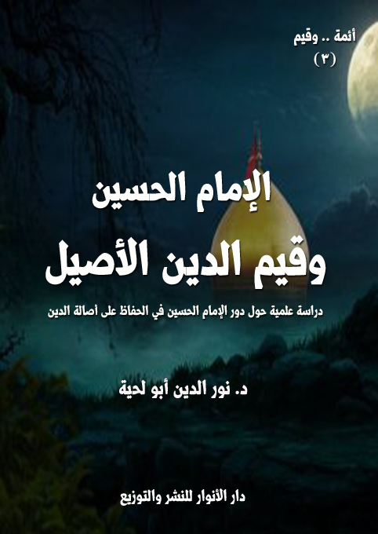

الكتاب: الإمام الحسين وقيم الدين الأصيل
الوصف: دراسة علمية حول دور الإمام الحسين في الحفاظ على أصالة الدين
السلسلة: أئمة وقيم
المؤلف: د. نور الدين أبو لحية
الناشر: دار الأنوار للنشر والتوزيع
الطبعة: الأولى، 1440 هـ
عدد الصفحات: 345
ISBN: 978-620-3-85923-2
لمطالعة الكتاب من تطبيق مؤلفاتي المجاني وهو أحسن وأيسر: هنا

التعريف بالكتاب
هذا الكتاب محاولة لتجاوز المنهج التاريخي في البحث المرتبط بالإمام الحسين ذلك أن مكانته في الدين ـ كما تذكر الأحاديث الشريفة المتفق على صحتها ـ تتجاوز المكان والزمان؛ فهو يمثل الدين الأقوم، والسراط المستقيم، الذي تحتاج كل الأجيال للاستنارة به، والاهتداء بهديه.
وقد رأينا من خلال استقراء ما ورد عنه من روايات، أربع قيم كبرى، لا يمكن لمن يريد أن يطبق وصايا رسول الله صلى الله عليه وآله وسلم في حقه أن يتجاوزها، أو لا يهتم بها، وهي:
القيم الإيمانية: ونقصد بها ما يتعلق بحقائق العقائد، والضوابط التي تحميها من أن تقع فيما وقعت فيه معتقدات الملل والنحل من التحريف والتبديل.
القيم الروحية: ونقصد بها التوجه إلى الله بالعبودية ظاهرا وباطنا، وأسرار المعاني المرتبطة بها.
القيم الأخلاقية: ونقصد بها تلك الملكات الراسخة التي تبرز من الباطن إلى الظاهر، لتعبر عن الكمال المعنوي للإنسان وعلاقاته الإيجابية مع كل شيء.
القيم الرسالية: ونقصد بها مواجهة الطواغيت والظلمة والانحرافات بكل قوة وشجاعة وبذل وتضحية، كما نقصد بها ذلك الامتداد الذي يتجاوز به الإمام المكان والزمان لينتشر هديه في كل الأزمنة والأمكنة، لتتحقق على يديه الهداية العامة الشاملة.
الإمام الحسين وقيم الدين الأصيل7)
يحاول هذا الكتاب أن يتعرف على بعض أسرار تلك النصوص التي نطق بها رسول الله صلى الله عليه وآله وسلم في حق الإمام الحسين، والتي تدل على أن له مكانة خاصة في الدين لا ينبغي تجاوزها، أو الاستهانة بها، أو التقليل من شأنها، ذلك أن الذي نطق بها هو من لا ينطق عن الهوى، ومن لا يحابي أحدا أو يجامله.
ومن أهم تلك النصوص، وأكثرها دلالة على ذلك الدور ومحوريته في الدين، قوله صلى الله عليه وآله وسلم في الحديث الذي اتفق على روايته الأمة جميعا: (حسين مني، وأنا من حسين، أحب الله من أحب حسينا، حسين سبط من الأسباط) (1)
فهذا الحديث بأجزائه الأربعة يدل على معاني عميقة ترتبط بهذا الإمام، وتجعل له حضورا خاصا في الدين:
فهو أولا يذكر العلاقة التي تجمع رسول الله صلى الله عليه وآله وسلم بالإمام الحسين، والتي عبر عنها رسول الله صلى الله عليه وآله وسلم بقوله: (حسين مني)، وهي عبارة لا يمكن اختصارها في ذلك المعنى المحدود البسيط الذي فسره به بعضهم؛ فقال: (معنى الحديث والله أعلم كأنه صلى الله عليه وآله وسلم علم بنور الوحي ما سيحدث بينه وبين القوم، أعني يزيد بن معاوية وأميره عبيد الله بن زياد، وما جرى من يزيد وأميره على الحسين من تلك الوقعة المشهورة التي أسفرت عن قتل الحسين سنة إحدى وستين هجرية،
__________
(1) رواه جمع كبير من المحدثين، منهم: 15 - الأدب المفرد، محمد بن إسماعيل بن إبراهيم بن المغيرة البخاري، أبو عبد الله (المتوفى: 256 ه)، حققه محمد فؤاد عبد الباقي، دار البشائر الإسلامية - بيروت، الطبعة الثالثة، 1409 - 1989، (ص 133، رقم 364)، وسنن الترمذي، محمّد بن سورة الترمذي، بيروت: دار إحياء التراث العربي، (5/ 658، رقم 3775) وقال: حسن، وابن ماجه (1/ 51، رقم 144)، المستدرك على الصحيحين، الحاكم النيسابوري، دار الفكر، 1398 ه، بيروت (3/ 194، رقم 4820)، وقال: صحيح الإسناد، مسند أحمد بن حنبل، أحمد بن حنبل، دار الفكر، بيروت، (4/ 172، رقم 17597)، المصنف في الأحاديث والآثار، ابن أبي شيبة، تقديم كمال يوسف الحوت، 7 مجلدات، دار التاريخ، الطبعة الأولى، بيروت (6/ 380، رقم 32196)، وانظر: بحار الأنوار، محمّد باقر المجلسيّ، بيروت، مؤسّسة الوفاء، 1403 ق: (43/ 261 / 1 وص 264/ 16)
الإمام الحسين وقيم الدين الأصيل8)
فلذلك خصه الرسول صلى الله عليه وآله وسلم بالذكر، وبين أنه والحسين كالشيء الواحد في المحبة وحرمة التعرض له ومحاربته، وأكد ذلك بقوله: (أحب الله من أحب حسيناً، حسين سبط من الأسباط) أي من أولاد أولاده، لأنه ابن فاطمة رضي الله عنها، أي هو أمة من الأمم في الخير والصلاح) (1)
بل هو يدل فوق ذلك على أن الإمام الحسين يمثل رسول الله صلى الله عليه وآله وسلم أصدق تمثيل لأنه منه، وبكل أجزائه وجوانبه، وبلاغة رسول الله صلى الله عليه وآله وسلم أعظم من أن تريد بذلك النسبة الطينية، فهي نسبة معروفة، لا يحتاج رسول الله صلى الله عليه وآله وسلم أن يذكرها أو يؤكدها.
وبما أن رسول الله صلى الله عليه وآله وسلم هو الممثل الحقيقي للدين، وهو القرآن الناطق، وهو الذي لا ينطق عن الهوى، وهو الذي لا يتحرك حركة إلا وفق مرضاة الله؛ فإن من ضرورات تلك النسبة أن يكون للإمام الحسين كل تلك الأوصاف، لأنه يستحيل أن يكون منه، ثم يكون بعد ذلك مخالفا له، وإلا لم يصدق ذلك الوصف عليه.
وبذلك فإن رسول الله صلى الله عليه وآله وسلم في ذلك الحديث لم يكن يخاطب الإمام الحسين فقط، وإنما كان يخاطب الأمة جميعا، ويخبرها أن الإمام الحسين يحمل نسخة أصلية من الدين الأقوم، وأنه في حال غيابه، أو في حال الحاجة، أو في حال اختلاط الملل والنحل، يمكن العودة إليه لتجنب الدين المزيف الأعوج الذي يريد الشيطان أن يجر إليه هذه الأمة، مثلما فعل مع سائر الأمم.
وانطلاقا من هذا فإن هذا الجزء من الحديث يدعو كل عاقل إلى البحث عن سيرة هذا الإمام، والقيم التي كان يحملها، والتصورات التي كان يعتقدها، والسلوك الذي كان يسلكه، ليجعل منه معيارا وميزانا يميز به الطيب من الخبيث، والأصيل من المزيف.
والجزء الثاني من الحديث، وهو لا يقل عن جزئه الأول أهمية هو قوله صلى الله عليه وآله وسلم: (وأنا من حسين)، وهي عبارة تحمل دلالات كثيرة وعميقة، لعل أولها هو أن الإمام الحسين امتداد لرسول الله صلى الله عليه وآله وسلم، فالإمامة امتداد للنبوة، وللقيم التي تحملها، وهذا يعني أن ما أصابه من كل
__________
(1) مكنون الفتاوى والدرر، أحمد بن حجر، ص 35.
الإمام الحسين وقيم الدين الأصيل9)
أنواع البلاء أصاب رسول الله صلى الله عليه وآله وسلم نفسه، بل إن القتل الذي حصل في كربلاء، والذبح الذي حصل بعده، لم يكن للإمام الحسين فقط، وإنما كان لرسول الله صلى الله عليه وآله وسلم أيضا.. ولذلك عظمت المصيبة، واشتدت الرزية، وكان المصاب أعظم من أن يُعبر عنه.
وهو كذلك يشير إلى أن للإمام الحسين دورا في امتداد الدين الأصيل، وهو ما عبرت عنه تلك العبارة المشهورة (الاسلام محمدي الوجود، حسيني البقاء) (1)، وقد كان ذلك بالفعل؛ فثورة الإمام الحسين وحركته كان لها تأثيرها في جميع التاريخ؛ فهي التي كانت ولا زالت منبعا ثريا للثورة ضد الظلم والطغيان والتحريف، كما أنها منبع لكل القيم الأصيلة والأخلاق العالية والتضحية العظيمة.
وقد عمق رسول الله صلى الله عليه وآله وسلم هذين المعنيين بالمقطع الثالث من الحديث، والذي قال فيه: (أحب الله من أحب حسينا)، وهو مقطع يتسق مع المقطعين السابقين، ويبين أن خط الإمام الحسين ليس خطا نبويا فقط، وإنما هو خط إلهي أيضا، بل هو خط الولاية نفسها.
ذلك أن الولي ـ حسب ما تدل عليه النصوص المقدسة ـ ليس الذي يحب الله فقط، وإنما الذي يحبه الله، كما ورد ذلك في الحديث المتفق على روايته في المصادر السنية والشيعية، والذي يقول فيه رسول الله صلى الله عليه وآله وسلم: (إن الله قال: من عادى لي وليا فقد آذنته بالحرب، وما تقرب إلى عبدي بشئ أحب إلى مما افترضته عليه، وما يزال عبدي يتقرب إلي بالنوافل حتى أحبه فإذا أحببته كنت سمعه الذي يسمع به، وبصره الذي يبصر به، ويده التي يبطش بها، ورجله التي يمشي بها، ولئن سألني لأعطينه، ولئن استعاذني لأعيذنه) (2)
__________
(1) قائل هذه العبارة هو العلامة الشيخ محمد حسين كاشف كما نسبها إليه الحاج حسين الشاكري، انظر: الكشكول المبوب، الحاج حسين الشاكري، المطبعة: ستارة، الطبعة: الخامسة، 1418، ص 44.
(2) صحيح البخاري، محمّد بن إسماعيل البخاري، دمشق وبيروت: دار ابن كثير واليمامة للطباعة والنشر والتوزيع، 1414، (4/ 231)، وقد روي الحديث في المصادر الشيعية بهذه الصيغة: (قال الله عز وجل: من أهان لي وليا فقد أرصد لمحاربتي، وما تقرب إلي عبد بشيء أحب إلي مما افترضت عليه، وإنه ليتقرب إلي بالنافلة حتى أحبه، فإذا أحببته كنت سمعه الذي يسمع به، وبصره الذي يبصر به، ولسانه الذي ينطق به، ويده التي يبطش بها، إن دعاني أجبته، وإن سألني أعطيته) انظر: الكافي، أبو جعفر الكليني، تحقيق علي أكبر الغفاري، دار الكتب الإسلامية، 1363 هش، طهران (2/ 352)، المحاسن، ابن جعفر محمد بن خالد البرقي، دار الكتب الاسلامية، طهران (1/ 454 / 1047)، بحارالأنوار (70/ 22 / 21)
الإمام الحسين وقيم الدين الأصيل10)
فهذا الحديث يشير إلى المرتبة الخاصة التي ينالها من يحب الإمام الحسين، وهي محبة الله، والتي تعتبر أرقى درجة في سلم الولاية، ذلك أنه لا ينالها ـ كما ورد في الحديث ـ إلا من أدمن على الطاعة، ولازمها، وامتلأ بمحبة الله، وبعدها ينال شرف محبة الله له.
وبما أن المحبة ليست مشاعر عاطفية مجردة فقط، وإنما هي انسياق تام وراء المحبوب، وتبعية مطلقة له، كما وضح ذلك قوله تعالى: {قُلْ إِنْ كُنْتُمْ تُحِبُّونَ الله فَاتَّبِعُونِي يُحْبِبْكُمُ الله} [آل عمران: 31]، فإن هذا الجزء من الحديث يشير إلى ضرورة التبعية المطلقة للإمام الحسين، لأنه لا يصح في عالم الحب أن يجادل المحب محبوبه.
ولذلك فإن الذين يتحدثون عن الإمام الحسين بتلك النبرة الاستعلائية، والتي تجعلهم يناقشون حركاته وسلوكاته وتصرفاته، ويزنونها بما يتوهمونه من أوهام، وما يضعونه من موازين، لم تغب عنهم الحقائق الشرعية فقط، إنما غاب عنهم قبل ذلك وبعده تلك المشاعر العاطفية الجياشة التي دعا رسول الله صلى الله عليه وآله وسلم أن يُعامل بها الإمام الحسين، لا لكونه حفيده صلى الله عليه وآله وسلم، وإنما لكونه يمثل الحقيقة والقيم التي أرادها الله، ولا يصح أن نناقش الله فيما أراد.
ذلك أن الحب في حقيقته ـ كما ينص على ذلك علماء النفس المسلمون وغيرهم ـ هو اعتقاد كمال المحبوب من كل النواحي، ولذلك يستحيل على من يحب شخصا أن يرى عيبا من عيوبه، بل إنه يرى العيوب نفسها كمالا، هذا بالنسبة للأشخاص العاديين؛ فكيف بمن حظي بتلك النسبة الشريفة، فكان من رسول الله صلى الله عليه وآله وسلم، وكان رسول الله صلى الله عليه وآله وسلم منه.
وبذلك فإن هذا الجانب العملي من هذا الجزء من الحديث لا يدعو فقط إلى البحث عن القيم التي ارتبطت بالإمام الحسين لالتزامها والعمل بها، وإنما يدعو قبل ذلك إلى التعامل مع
الإمام الحسين وقيم الدين الأصيل11)
الإمام الحسين بالعاطفة المشحونة بمشاعر الحب، ذلك أن تلك المشاعر هي الكفيلة بغرس كل القيم الرفيعة؛ فالحب أعظم مدرسة تربوية، ذلك أن صفات المحبوب تنتقل بسلاسة وسهولة إلى المحب، وبقدر المحبة التي امتلأ بها قلبه.
وأما الجزء الأخير من الحديث؛ فهو جزء لا يقل عن سابقيه دلالة، ذلك أنه يشير إلى أن الأمة ستنقسم إلى أسباط وفرق ونحل كثيرة، كما أشار إلى ذلك قوله صلى الله عليه وآله وسلم: (تفرقت اليهود على إحدى وسبعين فرقة، أو اثنتين وسبعين، والنصارى مثل ذلك، وستفترق أمتي على ثلاث وسبعين فرقة) (1)، ويشير في نفس الوقت إلى أن الإمام الحسين سيكون سبطا من الأسباط، وفرقة من الفرق، ولذلك من أراد الدين الأصيل، وقيمه الرفيعة؛ فعليه باتباعه، وسلوك سبيله.
وهو في ذلك يشبه قوله تعالى في حق إبراهيم: {إِنَّ إِبْرَاهِيمَ كَانَ أُمَّةً قَانِتًا لله حَنِيفًا وَلَمْ يَكُ مِنَ الْمُشْرِكِينَ} [النحل: 120]؛ فلم يكن رسول الله صلى الله عليه وآله وسلم يقصد تلك النظرة السطحية التي فسر بها الحديث، والتي تقصره على كونه سبطا نسبيا، ذلك أن هذا النوع من السبطية لا يحوي أي ثناء أو مدح، لأنه متحقق لكل الناس، فالكثير منهم يمكن أن يصير سبطا، وليس عليه لأجل تحقيق ذلك سوى الإكثار من الذرية.
وربما يكون رسول الله صلى الله عليه وآله وسلم ذكر السبطية بدل الأمة، لأن الإمام الحسين تابع لرسول الله صلى الله عليه وآله وسلم، ومتمثل بالهدي الذي جاء به، وهو بذلك يكون مرآة صافية تعكس هديه، وصراطا مستقيما يوضح منهجه النظري، ليحوله إلى واقع عملي.
فهذا الحديث بأجزائه جميعا، والذي لا يمكن أن يكون مجرد مجاملة ـ كما يصور البعض ـ يشير إلى أن للإمام الحسين دورا مركزيا في الدين، لا يصح أن نتجاهله، أو نغض الطرف عنه،
__________
(1) رواه أحمد (2/ 332)، وسنن أبي داود، سليمان بن الأشعث السجستاني، دار إحياء السنّة النبويّة. (4596)، وسنن ابن ماجه، ابن ماجة أبو عبد الله محمد بن يزيد القزويني، حققه محمد فؤاد عبد الباقي، دار إحياء الكتب العربية. (3991)، والترمذي (2640)، وقال: حديث حسن صحيح.
الإمام الحسين وقيم الدين الأصيل12)
وإنما علينا أن نبحث عنه، وفي أعماقه، لنصل من خلاله إلى الدين الأصيل، ونفر من خلاله من كل اعوجاج وانحراف للدين.
وبناء على هذا كان هذا الكتاب محاولة للبحث عن القيم الأصيلة التي مثلها الإمام الحسين، والتي استحق بها كل ذلك الثناء العطر، الذي صدر من مشكاة النبوة، ليقلده منصب الإمامة الرفيع.
ولم يكن ذلك النص وحده ما يشير إلى تلك الإمامة؛ ففي مصادر الفريقين السنة والشيعة نجد قوله صلى الله عليه وآله وسلم: (الحسن والحسين سيدا شباب أهل الجنة) (1)؛ فهذا الحديث يتجاوز البشارة الغيبية المرتبطة بالآخرة، ليدل على بشارة أخرى ترتبط بالدنيا، وهي مضمنة في كلمة [السيد] والتي تعني في اللغة العربية الاتباع (2)، أي أن الإمام الحسين وأخاه سيدان أي مُتبعان، يتبعهما شباب أهل الجنة.. وهو بشارة من رسول الله صلى الله عليه وآله وسلم لمن يتخذ هذين الإمامين الجليلين سيدين له بالجنة، وهو يدل على صوابية ذلك الاتباع، وكونه أشرف وأرقى أنواع الاتباع.
وهكذا يمكن أن تفسر كل النصوص التي وردت في حق الإمام الحسين، أو في حق أخيه الإمام الحسن، فهي نصوص لا تعبر عن عاطفة الأبوة ـ كما يذكر بعضهم ـ وإنما تعبر عن حقائق وجودية شرعية؛ فرسول الله صلى الله عليه وآله وسلم أعظم من أن يدخل عاطفة الأبوة في قضايا الدين، وكيف يفعل ذلك وقد أنزل الله عليه خبر هلاك بابن نوح وامرأته، وأنزل عليه معها حال أبي لهب عمه صلى الله عليه وآله وسلم.
لكن ـ للأسف ـ مع كل تلك النصوص المقدسة الواضحة المتفق عليها نجد تهوينا كبيرا
__________
(1) رواه أحمد في المسند، (3/ 62، 82) وفي (3/ 64) وفي (3/ 80) والترمذي (3768)، انظر: تحفة الأشراف بمعرفة الأطراف، جمال الدين أبو الحجاج يوسف بن عبد الرحمن المزي، المحقق: عبد الصمد شرف الدين، طبعة: المكتب الإسلامي، والدار القيّمة، الطبعة 2، 1403 هـ، 1983 م، (4134)
(2) انظر في معنى كلمة السيد: لسان العرب، محمد بن مكرم بن على، أبو الفضل، جمال الدين ابن منظور، دار صادر – بيروت، الطبعة 3 - 1414 هـ (3/ 228)
الإمام الحسين وقيم الدين الأصيل13)
في حق الإمام الحسين إلى درجة جعلته عند بعضهم لا يساوي درجة أدنى الصحابة وأصغرهم، ذلك أنهم كلما يوردون حادثة كربلاء، يذكرون معها نصيحة عبد الله بن عمر، ليستنتجوا بعدها أن رأي ابن عمر كان أكثر حكمة وصلاحا، في نفس الوقت الذي يعتبرون فيه ابن عمر من صغار الصحابة.. وبذلك صار الإمام الحسين في أذهان عامة الناس من المدرسة السنية أدنى حالا، وأقل حكمة من صغار الصحابة.
بل إن أكثر عوام الناس في هذه المدرسة للأسف لا يتجاوز الإمام الحسين عندهم مرحلة صباه الباكر، حينما كان يصعد مع أخيه الإمام الحسن على ظهر رسول الله صلى الله عليه وآله وسلم، وهو يصلي، ويذكرون ذلك لا في فضائله وفضائل أخيه، وإنما في رحمة رسول الله صلى الله عليه وآله وسلم وعطفه على الصغار، مع أن رسول الله صلى الله عليه وآله وسلم في ذلك الحديث نفسه يشير إلى الدور المحوري المنوط به وبأخيه، فقد ورد فيه: (دعوهما بأبي هما وأمي من أحبني فليحب هذين) (1)
فهذا الحديث يضم إلى الأحاديث السابقة في بيان ضرورة اتباع هذا الإمام الجليل، لأنه لا يمكن أن تتحقق المحبة من دون أن يكون معها الاتباع، فالاتباع ثمرة المحبة، وعلامة صدقها، وقد أخبر رسول الله صلى الله عليه وآله وسلم أن من شرط محبته محبة هذين الإمامين الجليلين.
انطلاقا من هذه النصوص المقدسة نحاول في هذا الكتاب التعرف على القيم التي كان يمثلها الإمام الحسين، والتي دعانا رسول الله صلى الله عليه وآله وسلم إلى البحث عنها، لتقويم ديننا بحسبها؛ فهي قبلة الدين الأصيل، وهي المعيار الذي نحتكم إليه عند الاختلاف.
فالإسلام مثل سائر الأديان له جانبان: جانب نظري تمثله نصوصه المقدسة، وجانب عملي يمثله الهداة ابتداء من رسول الله صلى الله عليه وآله وسلم، وانتهاء بمن أوصى رسول الله صلى الله عليه وآله وسلم باتباعهم باعتبارهم
__________
(1) السنن الكبرى، أحمد بن الحسين بن علي، أبو بكر البيهقي، حققه محمد عبد القادر عطا، دار الكتب العلمية، بيروت - لبنات، الطبعة 3، 1424 ه - 2003 م (2/ 263)، وتاريخ دمشق، أبو القاسم علي بن الحسن بن هبة الله المعروف بابن عساكر، المحقق: عمرو بن غرامة العمروي، دار الفكر للطباعة والنشر والتوزيع، 1415 هـ - 1995 م. (4/ 257/1 - 2) و[14/ 160]
الإمام الحسين وقيم الدين الأصيل14)
منه، وهو منهم.
ولذلك فإن البحث في الإمام الحسين، ينبغي أن يتجاوز المنهج التاريخي المرتبط بالمكان والزمان، ذلك أن الإمام الحسين ـ كما تذكر الروايات ـ يتجاوز المكان والزمان، لأنه يمثل الدين الأقوم، والسراط المستقيم، الذي تحتاج كل الأجيال للاستنارة به، والاهتداء بهديه.
وبناء على هذا، حاولنا في هذا الكتاب أن نتعرف على القيم الرفيعة التي مثلها الإمام الحسين، والتي هي في حقيقتها قيم الدين الأصيل الذي عاش حياته كلها من أجله، وختمها بالاستشهاد في طريقه.
وقد رأينا من خلال الاستقراء أربع قيم كبرى، لا يمكن لشخص يريد أن يطبق وصايا رسول الله صلى الله عليه وآله وسلم في حق الإمام الحسين أن يتجاوزها، أو لا يهتم بها، وهي:
القيم الإيمانية: ونقصد بها ما يتعلق بحقائق العقائد، والضوابط التي تحميها من أن تقع فيما وقعت فيه معتقدات الملل والنحل من التحريف والتبديل.
القيم الروحية: ونقصد بها التوجه إلى الله بالعبودية ظاهرا وباطنا، وأسرار المعاني المرتبطة بها.
القيم الأخلاقية: ونقصد بها تلك الملكات الراسخة التي تبرز من الباطن إلى الظاهر، لتعبر عن الكمال المعنوي للإنسان وعلاقاته الإيجابية مع كل شيء.
القيم الرسالية: ونقصد بها مواجهة الطواغيت والظلمة والانحرافات بكل قوة وشجاعة وبذل وتضحية، كما نقصد بها ذلك الامتداد الذي يتجاوز به الإمام المكان والزمان لينتشر هديه في كل الأزمنة والأمكنة، لتتحقق على يديه الهداية العامة الشاملة، كما قال تعالى مخاطبا رسوله صلى الله عليه وآله وسلم: {إِنَّمَا أَنْتَ مُنْذِرٌ وَلِكُلِّ قَوْمٍ هَادٍ} [الرعد: 7]
وهذه الأصول الأربعة للقيم هي التي سنحاول إن شاء الله دراستها في هذا الكتاب من خلال المصادر الروائية التي جُمعت فيها مقولات الإمام الحسين وأفعاله، لا لنعيد سردها، وإنما
الإمام الحسين وقيم الدين الأصيل15)
لنستنبط منها منهج الحياة الإيمانية كما يرسمها الإمام الحسين، والتي تمثل الدين الأصيل.
ونحب أن ننبه في آخر هذه المقدمة إلى ثلاث ملاحظات مرتبطة بمصادر النصوص التي ننقلها عن الإمام الحسين أو الأحداث التاريخية المرتبطة بسيرته العطرة:
أولها ـ أنه بسبب نقص الروايات الواردة في المصادر السنية عن هذا الإمام الجليل، اعتمدت في أكثر الأحيان على المصادر الشيعية، باعتبارها المصدر الأكبر لأغلب الروايات الواردة عنه.
وهذه الروايات ـ مع كونها لم ترو في المصادر السنية ـ إلا أنه لا يمكن لأي سني نزيه أن يرفضها ذلك أنها تتوافق ـ أولا ـ مع القرآن الكريم، الثقل الأكبر، والمصدر الأعظم لحقائق الإسلام، وتتفق ثانيا مع الأحاديث الصحيحة القطعية التي يتفق على روايتها السنة والشيعة.
ولذلك فإن التقصير الذي حصل في الرواية عن الإمام الحسن في المصادر السنية، في نفس الوقت الذي أشبعت فيه تلك المصادر بالرواية عن كعب الأحبار ووهب بن المنبه، وغيرهما، لا يعفي من يريد أن يلتزم بتلك التعليمات النبوية الواردة في حق الإمام الحسين، من الاعتماد على المصادر الشيعية، خاصة وأنها تتوافق مع المصادر الأصلية التي يعتمدها.
أما رفض تلك الروايات بحجة روايتها عن الشيعة؛ فهو استعلاء، وتكبر ذلك أن كل من كان يحيط بالإمام الحسين كانوا من أصحابه الذين صُنفوا في كتب الرجال بكونهم شيعة، ثم وضعوا في كتب الجرح والتعديل ضمن المبتدعة الذين لا تصح الرواية عنهم.
وهل يمكن لعاقل أن يتصور الرواية عن الإمام الحسين من أصحاب معاوية ويزيد وزياد بن أبيه الذين كانوا لا يخفون عداوتهم لأهل البيت، وفي نفس الوقت ضمنت لهم كل التشريفات في كتب الجرح والتعديل، باعتبارهم ثقاة وأئمة للدين، وكل ما ينقلونه مقبول وصحيح، وأولهم عمر بن سعد قائد الجيش الذي قاتل الإمام الحسين، والذي قال فيه العجلي: (عمر بن سعد بن أبي وقاص مدني ثقة كان يروي عن أبيه أحاديث، وروى الناس عنه، وهو
الإمام الحسين وقيم الدين الأصيل16)
الذي قتل الحسين، قلت: كان أمير الجيش ولم يباشر قتله) (1)
وقال عنه ابن حجر: (عمر بن سعد بن أبي وقاص المدني نزيل الكوفة صدوق، ولكن مقته الناس لكونه كان أميرا على الجيش الذين قتلوا الحسين بن علي) (2)
فهل يمكن لمن يضع أصحاب الإمام الحسين في زمر المبتدعة المجروحين، ويضع عمر بن سعد وغيره في زمر الموثوقين أن نجد عنده أي نصوص يمكن من خلالها التعرف على شخصية الإمام الحسين والقيم العظيمة التي جاء بها.
ولو أننا طبقنا ذلك المقياس الذي وضعوه، وطبقنا معه ما يوردونه كل حين من تحريم الحديث في كربلاء باعتبارها من الفتن، أو باعتبارها إرثا شيعيا، لما أمكن لأحد في الدنيا أن يكتب كتابا واحدا عن الإمام الحسين، بل ولا فقرة واحدة عنه، لأنهم ـ للأسف ـ يكتفون بذكر احترامة المجرد بناء على علاقته النسبية برسول الله صلى الله عليه وآله وسلم، وليس باعتباره إماما من أئمة الدين، لم ينل الإمامة بتلك النسبة الشريفة لرسول الله صلى الله عليه وآله وسلم فقط، وإنما نالها بتقواه وصبره وتضحيته وتمثله لكل قيم الدين، كما قال تعالى: {وَجَعَلْنَا مِنْهُمْ أئمة يَهْدُونَ بِأَمْرِنَا لَمَّا صَبَرُوا وَكَانُوا بِآيَاتِنَا يُوقِنُونَ} [السجدة: 24]
وثانيها ـ هو أن الكثير من أتباع المدرسة السنية يعترضون على بعض الروايات الواردة عن الإمام الحسين، بكونها جاءت بلغة لا تتناسب مع أساليب التعبير التي كانت معتمدة في
__________
(1) معرفة الثقات من رجال أهل العلم والحديث ومن الضعفاء وذكر مذاهبهم وأخبارهم، أبو الحسن أحمد بن عبد الله بن صالح العجلى الكوفى، المحقق: عبد العليم عبد العظيم البستوي، مكتبة الدار - المدينة المنورة – السعودية، الطبعة: الأولى، 1405 – 1985، (2/ 166)، وانظر: ميزان الاعتدال في نقد الرجال، شمس الدين أبو عبد الله محمد بن أحمد بن عثمان بن قَايْماز الذهبي، تحقيق علي محمد البجاوي، دار الفكر، بيروت، (3/ 198)
(2) تقريب التهذيب، أبو الفضل أحمد بن علي بن محمد بن أحمد بن حجر العسقلاني، المحقق: محمد عوامة، دار الرشيد – سوريا، الطبعة: الأولى، 1406 – 1986، (1/ 717)
الإمام الحسين وقيم الدين الأصيل17)
ذلك العصر (1)، وهذا اعتراض غير وارد، لأسباب متعددة منها:
1 ـ أن الكثير من أصحاب المدرسة السنية ـ بسبب تأثرهم بأطروحات الأمويين وانتقاصهم من أهل البيت ـ راحوا يتصورون الإمام علي والإمام الحسين وسائر الأئمة مثل سائر معاصريهم في بلاغتهم وعلومهم، وهذا خطأ كبير؛ فشتان بين من ربي بين أحضان القرآن الكريم، وفي بيت النبوة، وبين غيرهم، مهما كان فضلهم وعلمهم.
2 ـ أن رواة أحاديث الإمام الحسين وغيره من الأئمة قد لا ينقلون الروايات بألفاظها، وإنما يتصرفون فيها، مع الحفاظ على المعاني، وهذا وارد أيضا في الكثير من الروايات الواردة في المصادر السنية، بل هم متفقون على جواز الرواية بالمعنى، فقد عقد الخطيب البغدادي في كتابه [الكفاية في علم الرواية]، وهو من أهم مصادر علوم الحديث في المدرسة السنية فصلا تحت عنوان: [باب ذكر من كان يذهب إلى إجازة الرواية على المعنى من السلف، وسياق بعض أخبارهم في ذلك] (2)
ومن النصوص التي ساقها لإثبات ذلك ما رواه عن مكحول، قال دخلنا على واثلة بن الأسقع فقلنا: يا أبا الأسقع، حدثنا حديثا سمعته من رسول الله صلى الله عليه وآله وسلم، ليس فيه وهم ولا نسيان، فقال، هل قرأ أحد منكم الليلة من القرآن شيئا؟ قالوا: نعم، قال: فهل زدتم ألفا أو واوا أو شيئا؟ فقلت: إنا لنزيد وننقص، وما نحن بأولئك في الحفظ؟ فقال: فهذا القرآن بين أظهركم وأنتم تدرسونه بالليل والنهار، فكيف ونحن نحدث بحديث سمعناه عن رسول الله صلى الله عليه وآله وسلم مرة أو
__________
(1) من الأمثلة على ذلك ما ورد في كتاب [التوحيد، الشيخ الصدوق، صححه وعلق عليه: السيد هاشم الحسيني الطراني، دار المعرفة للطباعة والنشر - بيروت لبنان، ص 90] قول الإمام الحسين في تفسير قوله تعالى: {لَمْ يَلِدْ} [الإخلاص: 3]: (لم يخرج منه شيء كثيف كالولد وسائر الأشياء الكثيفة التي تخرج من المخلوقين، ولا شيء لطيف كالنفس، ولا يتشعب منه البداوات، كالسنة والنوم، والخطرة والهم، والحزن والبهجة، والضحك والبكاء، والخوف والرجاء والرغبة والسأمة، والجوع والشبع)
(2) الكفاية في علم الرواية، أبو بكر أحمد بن علي بن ثابت بن أحمد بن مهدي الخطيب البغدادي، المحقق: أبو عبدالله السورقي ، إبراهيم حمدي المدني، المكتبة العلمية - المدينة المنورة، (ص: 203).
الإمام الحسين وقيم الدين الأصيل18)
مرتين، إذا حدثتكم على معناه فحسبكم) (1)
ومنها ما حدث به عن أبي سعيد، قال: (كنا نجلس إلى النبي صلى الله عليه وآله وسلم عسى أن نكون عشرة نفر نسمع الحديث، فما منا اثنان يؤديانه على حرف، غير أن المعنى واحد) (2)
ومنها ما حدث به عن عائشة أنها قالت لهشام بن عروة: (يا بني، إنه يبلغني أنك تكتب عني الحديث ثم تعود فتكتبه)، فقال لها: أسمعه منك على شيء، ثم أعود فأسمعه على غيره، فقالت: هل تسمع في المعنى خلافا؟ قلت: لا، قالت: لا بأس بذلك) (3)
وهكذا نرى أئمة أهل البيت يجيزون للرواة عنهم الرواية بالمعنى، فعن محمد بن مسلم قال: قلت لأبي عبد الله: أسمع الحديث منك فأزيد وأنقص. قال: (إن كنت تريد معانيه فلا بأس) (4)
وعن داود بن فرقد، قال: قلت لأبي عبد الله: إني أسمع الكلام منك فأريد أن أرويه كما سمعته منك فلا يجيئ ذلك، قال: فتتعمد ذلك؟ قلت: لا. قال: تريد المعاني؟ قلت: نعم. قال: فلا بأس (5)
ثالثها ـ أننا لم ندقق كثيرا في أسانيد الروايات، بل جعلنا القيم هي معيارنا الأول؛ فكل نص أو رواية لا تتعارض مع القيم النبيلة التي ذُكرت في القرآن الكريم، ورأينا أن معناها يتناسب مع النصوص المقدسة الواردة في القرآن الكريم أو السنة المطهرة أو الأقوال الأخرى لأئمة أهل البيت، قبلناها، مع الإشارة إلى مصادرها ليتحقق في أسانيدها من شاء ذلك.
وبناء على هذا ذكرنا بجنب كل قيمة بالإضافة إلى ما ورد عن الإمام الحسين بشأنها، ما
__________
(1) المرجع السابق، ص: 204.
(2) المرجع السابق، ص: 205.
(3) المرجع السابق، ص: 205.
(4) الكافي، 1/ 51.
(5) المرجع السابق، 1/ 41.
الإمام الحسين وقيم الدين الأصيل19)
ورد في القرآن الكريم أو الروايات عن رسول الله صلى الله عليه وآله وسلم والأئمة الأطهار.
وقد فعلنا ذلك لسببين:
الأول: حتى لا يصبح الكتاب مملوءا بالأبحاث الحديثية التي وقع في معظمها الخلاف بين المحدثين أنفسهم.
الثاني: اعتقادنا أن الإمام الحسين وغيره من الأئمة يمثلون القيم القرآنية أحسن تمثيل؛ فلذلك كانت كل رواية تؤكد ذلك، رواية يمكن الاستفادة منها، لعدم ضررها، حتى لو رويت بأسانيد ضعيفة.
الإمام الحسين وقيم الدين الأصيل20)
الإمام الحسين والقيم الإيمانية
تعتبر القيم الإيمانية الأساس الذي تبنى عليه جميع القيم الروحية والأخلاقية والرسالية، وغيرها، ذلك أنها تشكل التصورات المرتبطة بالوجود والكون والحياة، ومنها تتشكل التصورات المرتبطة بسائر القيم.
ولهذا لم تكن الحركة الحسينية في كربلاء وقبلها، متوجهة للثورة على الظلم والاستبداد فقط، وإنما كانت متوجهة قبل ذلك للحفاظ على القيم الإيمانية التي أراد بنو أمية تحريفها، وتحويل الإسلام إلى الوثنية التي تحولت إليها اليهودية والمسيحية وكل الأديان السماوية، كما قال تعالى: {وَمَا يُؤْمِنُ أَكْثَرُهُمْ بِالله إِلَّا وَهُمْ مُشْرِكُونَ} [يوسف: 106]
وقد عبر الإمام الحسين عن أهمية هذا النوع من القيم، وكونه الهدف الأكبر من حركته وحركة أبيه وأخيه وسائر الأئمة الراشدين بقوله ـ لمن سأله عن عن قول الله عز وجل: {هَذَانِ خَصْمَانِ اخْتَصَمُوا فِي رَبِّهِمْ} [الحج: 19]: (نحن وبنو أمية اختصمنا في الله عز وجل، قلنا، صدق الله وقالوا: كذب الله، فنحن وإياهم الخصمان يوم القيامة) (1)
وذلك أن هدف الدين الأساسي هو تعريف الخلق بالله، وعبادتهم له، والتي لا يمكن أن تتحقق من دون معرفة صحيحة، وقد روي أن الإمام الحسين خرج ذات يوم على أصحابه؛ فقال بعد حمد الله تعالى، والصلاة على رسوله صلى الله عليه وآله وسلم: (يا أيّها الناس إنّ الله ـ والله ـ ما خلق العباد إلّا ليعرفوه؛ فإذا عرفوه عبدوه، فإذا عبدوه استغنوا بعبادته عن عبادة من سواه) (2)
__________
(1) الخصال: 43 ح 35، بحار الأنوار: ج31 ص517.
(2) علل الشرائع، الشيخ الصدوق، ط 1386، منشورات المكتبة الحيدرية، النجف الأشرف: 9 ح 1، كنز الفوائد، الشيخ القاضي أبي الفتح محمد بن علي الكراجكي، المحقق: عبد الله نعمة، دار الذخائر، 1410 (ص 151)، بحار الأنوار: (5 / 312 ح 1، و23 / 83 ح 22).
الإمام الحسين وقيم الدين الأصيل21)
وهكذا عبر سائر الأئمة عن هذا المعنى؛ فكلهم متفقون على أن الهدف الأكبر من الدين هو التعرف على الله، والتواصل الروحي معه، وأن كل ما عد ذلك وسائل وأساليب لتحقيق هذا المقصد العظيم؛ فعن الإمام الصادق أنه قال: (لو يعلم الناس ما في فضل معرفة الله عز وجل ما مدوا أعينهم إلى ما متع الله به الأعداء من زهرة الحياة الدنيا ونعيمها، وكانت دنياهم أقلَّ عندهم مما يطوونه بأرجلهم، ولنَعِمُوا بمعرفة الله عز وجل وتلذذوا بها تلذذ من لم يزل في روضات الجنان مع أولياء الله) (1)
ثم فصل بعض آثار ذلك بقوله: (إن معرفة الله عز وجل أنْسٌ من كل وحشة، وصاحبٌ من كل وحدة، ونورٌ من كل ظلمة، وقوةُ من كل ضعف، وشفاءٌ من كل سقم) (2)
وقال قبله الإمام علي: (أولُ الدين معرفته، وكمالُ معرفته التصديق به، وكمالُ التصديق به توحيدُه، وكمالُ توحيده الإخلاصُ له، وكمالُ الإخلاص له نفيُ الصفات عنه، لشهادة كلِّ صفة أنها غير الموصوف، وشهادة كل موصوف أنه غير الصفة) (3)
وهكذا وردت الروايات الكثيرة عن سائر الأئمة تدعو إلى الاهتمام بالبحث الجاد عن المعرفة الإلهية من سبلها الصحيحة المعصومة، حتى لا يحيق بهذه الأمة ما حاق بغيرها من الأمم.
ذلك أن من عادة الشيطان ـ كما يخبر القرآن الكريم ـ أن يبدأ بالسعي في تشويه هذه المعرفة في حياة الأنبياء، أو بعدهم؛ فإن تمكن من ذلك لا يبالي بعدها بشيء، لأنه بتشويه القيم الإيمانية، والحقائق العقائدية، تتشوه كل القيم، وكل الحقائق، وتتشوه بعدها كل السلوكات الشخصية
__________
(1) الكافي:8/ 247.
(2) المرجع السابق:8/ 247.
(3) نهج البلاغة، الإمام علي، الشريف الرضي، مركز البحوث الإسلامية، 1395 هقم، 1/ 14.
الإمام الحسين وقيم الدين الأصيل22)
والاجتماعية.
وقد أخبر القرآن الكريم عن نموذج لذلك، وهو ما حصل لبني إسرائيل بمجرد خروجهم من مصر؛ فقد كان أول ما طلبوه ـ بغواية من الشيطان ووسوته ـ أن يجعل لهم موسى إلها كالآلهة التي تعبدها الأمم من حولهم، لأنه عز عليهم أن يعبدوا إلها لا يتمكنون من رؤيته، قال تعالى مشيرا إلى ذلك: {وَإِذْ قُلْتُمْ يَامُوسَى لَنْ نُؤْمِنَ لَكَ حَتَّى نَرَى الله جَهْرَةً فَأَخَذَتْكُمُ الصَّاعِقَةُ وَأَنْتُمْ تَنْظُرُونَ} [البقرة: 55]
وهكذا ذكر القرآن الكريم حرصهم على الرؤية الجهرية الحسية لله، حتى عوقبوا على ذلك (1)، ومع ذلك لم تثنهم تلك العقوبة عن البحث عن إله حسي يمكنهم أن يروه ويلمسوه، ولذلك بمجرد أن غاب موسى صنعوا إلها من ذهب، وصاروا يعبدونه غير مراعين لتلك التوجيهات التي كان هارون يقوم بها مع الثلة القليلة الذين معه.
وما حصل في بني إسرائيل حصل مثله ـ للأسف ـ في هذه الأمة، حين ضيعت وصية نبيها صلى الله عليه وآله وسلم في البعد عن كل ما يمكن أن يحرف هذا الدين، ويشوه جمال عقائده، ولهذا دخلت الكثير من التحريفات في القيم الإيمانية، بعد تقريب السلطة الأموية لليهود الذين أسلموا، وإفساح المجال لهم لتعليم الناس قيم الدين، بل أُفسح المجال لهم لتفسير القرآن الكريم، ولهذا كان من الأدوار الكبرى التي قام بها الأئمة ـ بمن فيهم الإمام الحسين ـ مواجهة تلك التحريفات لتبقى العقيدة الإسلامية صافية بعيدة عن كل ما يشوهها.
__________
(1) وقد ورد في الكتاب المقدس ما يشير إلى هذه النزعة التجسيمية، ففي سفر الخروج [الإصحاح 32، 1]: (ولما رأى الشعب أن موسى أبطأ في النزول من الجبل اجتمع الشعب على هارون وقالوا له قم اصنع لنا آلهة تسير أمامنا)، وفيه [13/ 20، 1.]: (وارتحلوا من سكوت ونزلوا في طرف البرية وكان الرب يسير أمامهم نهارا في عمود سحاب ليهديهم الطريق وليلاً في عمود نار ليضيء لهم..)، وفي [سفر الخروج 24/ 9 - 11]: (صعد موسى وهارون.. وسبعون من شيوخ إسرائيل ورأوا إله إسرائيل وتحت رجليه شبه صنعة من العقيق الأزرق الشفاف.. لكنه لم يمد يده إلى أشراف بني إسرائيل فرأوا الله وأكلوا وشربوا)، إلى غير ذلك من النصوص الكثيرة.
الإمام الحسين وقيم الدين الأصيل23)
بناء على هذا نحاول في هذا الفصل التعريف بدور الإمام الحسين في مواجهة التحريف الذي حصل للقيم الإيمانية، والتي صنفها علماء الكلام إلى قسمين:
1. قيم التنزيه: وهي تلك القيم التي تحفظ عقيدة المؤمن من أن يتسرب إليها ما لا تتناسب مع جلال الله وعظمته، كالتشبيه والتجسيم والتعدد والحدوث والعجز ونحوها، ويطلق على الصفات المرتبطة بها (صفات سلبية)، أو (جلالية)
2. قيم الكمال: وهي القيم التي تتضمن صفات الكمال والجمال لله، والتي يطلق عليها (الصفات الثبوتية الذاتيّة)، أَو (الصفات الجمالية)، مثل كون الله حيا قادرا سميعا بصيرا له الأسماء الحسنى.
وقد أشار إلى كلا القسمين قوله تعالى: {تَبَارَكَ اسْمُ رَبِّكَ ذِي الْجَلَالِ وَالْإِكْرَامِ} [الرحمن: 78]، (فصفة الجلال ما جلّت ذاته عن مشابهة الغير، وصفة الإِكرام ما تكرمت ذاته بها وتجملت) (1)؛ فلذلك يوصف الله بالكمال، وينزّه بالجلال.
وسنحاول ـ من خلال هذين النوعين من القيم ـ بيان كيف دعا الإمام الحسين إلى هذين الأصلين من أصول القيم، وكيف واجه تلك التحريفات التي حاولت أن تنحرف بالعقيدة الإسلامية إلى ما انحرفت إليه سائر الأديان السماوية، وسنرى كذلك مدى صلة ما طرحه بالقرآن الكريم والسنة النبوية، وما ذكره الأئمه قبله وبعده، لنين من خلال ذلك كله مدى انسجام هذه المصادر المقدسة في تعبيرها القيم الإيمانية وحقائق العقيدة الإسلامية، مقارنة بتلك التحريفات التي حاول الشيطان أن يحدثها في هذه الأمة، والتي لا يزال لها وجود بينها للأسف.
أولا ـ الإمام الحسين وقيم التنزيه [الجلال الإلهي]
__________
(1) الحكمة المتعالية في الاسفار العقلية الأربعة، الملا صدرا صدر الدين محمد بن ابراهيم الشيرازي، دار إحياء التراث العربي، الطبعة: الرابعة 1990 م، ج 6، ص 118.
الإمام الحسين وقيم الدين الأصيل24)
عند التأمل في القرآن الكريم والسنة المطهرة وأحاديث أئمة أهل البيت نجد تركيزا شديدا على التنزيه، وكل ما يرتبط به، ذلك أنه لا يمكن أن تتحقق معرفة الله لمن سقط في أوهام التشبيه والتجسيم والشرك، أو وصف الله بما لا يليق به، ذلك أن وصفا واحدا من تلك الأوصاف، يمكنه أن يحطم كل الكمالات، ويزرع الشك في جميع العقول.
ولهذا اعتبر القرآن الكريم نسبة الولد لله، كما يدعي النصارى وغيرهم، شيئا عظيما، ينهد له كل شيء، قال تعالى: {وَقَالُوا اتَّخَذَ الرَّحْمَنُ وَلَدًا (88) لَقَدْ جِئْتُمْ شَيْئًا إِدًّا (89) تَكَادُ السَّمَاوَاتُ يَتَفَطَّرْنَ مِنْهُ وَتَنْشَقُّ الْأَرْضُ وَتَخِرُّ الْجِبَالُ هَدًّا (90) أَنْ دَعَوْا لِلرَّحْمَنِ وَلَدًا (91) وَمَا يَنْبَغِي لِلرَّحْمَنِ أَنْ يَتَّخِذَ وَلَدًا (92) إِنْ كُلُّ مَنْ فِي السَّمَاوَاتِ وَالْأَرْضِ إِلَّا آتِي الرَّحْمَنِ عَبْدًا (93)} [مريم: 88 ـ 93]
وقد رد في الحديث أن أعرابيا جاء إلى النبي صلى الله عليه وآله وسلم، فقال يا رسول الله: علمني من غرائب العلم؟ فقال له رسول الله صلى الله عليه وآله وسلم: (ما صنعت في رأس العلم حتى تسأل عن غرائبه؟)، فقال الأعرابي: ما رأس العلم يا رسول الله؟ فقال صلى الله عليه وآله وسلم: (معرفة الله حق معرفته)، فقال الأعرابي: وما معرفة الله حق معرفته؟، فقال صلى الله عليه وآله وسلم: (تعرفه بلا مثل، ولا شبه، ولا ند، وأنه واحد أحد، ظاهر باطن، أول آخر، لا كفو له ولا نظير، فذلك حق معرفته) (1)
ولهذا نجد في الروايات الواردة عن الإمام الحسين اهتماما كبيرا بقيم التنزيه، والرد على ظاهرة التجسيم والتشبيه التي اهتم بها بنو أمية، ووفروا الدعاة لها، من أمثال كعب الأحبار ووهب بن منبه وغيرهما.
وقد روي عنه نصان مهمان جدا، يؤسسان لقيم التنزيه، ويعطيان القواعد المرتبطة بذلك، والتأمل فيهما وحده كاف للرد على كل تلك المدارس التي ظهرت في التاريخ الإسلامي، والتي شوهت العقيدة الإسلامية، وسربت إليها الكثير مما حصل لعقائد الأمم السابقة، حتى
__________
(1) بحار الأنوار، 3/ 269.
الإمام الحسين وقيم الدين الأصيل25)
وصل الأمر إلى إدخال كل صور التشبيه والتجسيم والوثنية في العقائد الإسلامية.
أما النص الأول، فقوله ـ في خطاب له يشير به إلى تلك الظاهرة التي وفر لها بنو أمية كل أسباب الرعاية: (أيها الناس! اتقوا هؤلاء المارقة الذين يشبهون الله بأنفسهم، يضاهئون قول الذين كفروا من أهل الكتاب، بل هو الله ليس كمثله شيء، وهو السميع البصير، لا تدركه الأبصار، وهو اللطيف الخبير، استخلص الوحدانية والجبروت، وأمضى المشيئة والإرادة والقدرة والعلم بما هو كائن، لا منازع له في شيء من أمره، ولا كفو له يعادله، ولا ضد له ينازعه، ولا سمي له يشابهه، ولا مثل له يشاكله، لا تتداوله الأمور، ولا تجري عليه الأحوال، ولا تنزل عليه الأحداث، ولا يقدر الواصفون كنه عظمته، ولا يخطر على القلوب مبلغ جبروته؛ لأنه ليس له في الأشياء عديل، ولا تدركه العلماء بألبابها، ولا أهل التفكير بتفكيرهم، إلا بالتحقيق إيقانا بالغيب؛ لأنه لا يوصف بشيء من صفات المخلوقين، وهو الواحد الصمد، ما تصور في الأوهام فهو خلافه. ليس برب من طرح تحت البلاغ، ومعبود من وجد في هواء أو غير هواء، هو في الأشياء كائن لا كينونة محظور بها عليه، ومن الأشياء بائن لا بينونة غائب عنها، ليس بقادر من قارنه ضد أو ساواه ند، ليس عن الدهر قدمه، ولا بالناحية أممه، احتجب عن العقول كما احتجب عن الأبصار، وعمن في السماء احتجابه كمن في الأرض، قربه كرامته وبعده إهانته، لا يحله (في)، ولا توقته (إذا)، ولا تؤامره (إن)، علوه من غير توقل (1)، ومجيئه من غير تنقل، يوجد المفقود ويفقد الموجود، ولا تجتمع لغيره الصفتان في وقت، يصيب الفكر منه الإيمان به موجودا، ووجود الإيمان، لا وجود صفة، به توصف الصفات لا بها يوصف، وبه تعرف المعارف لا بها يعرف، فذلك الله لا سمي له، سبحانه ليس كمثله شيء وهو السميع البصير) (2)
__________
(1) توقل في الجبل: صعد فيه.
(2) تحف العقول، ابن شعبة الحراني، ط الثانية عام 1404، مؤسسة النشر الإسلامي، قم، (ص 173)، بحار الأنوار: (4/301 ح 29)
الإمام الحسين وقيم الدين الأصيل26)
وأما النص الثاني، فهو ما روي أنه بينما كان ابن عباس يحدث، إذ قام إليه نافع بن الأزرق، فقال: يا ابن عباس! تفتي في النملة والقملة؟! صف لنا إلهك الذي تعبده. فأطرق ابن عباس إعظاما لله عز وجل، وكان الحسين بن علي جالسا ناحية، فقال: (إلي يا ابن الأزرق)، فقال: لست إياك أسأل. فقال ابن عباس: يا ابن الأزرق، إنه من أهل بيت النبوة، وهم ورثة العلم. فأقبل نافع بن الأزرق نحو الحسين، فقال له الإمام الحسين: (يا نافع، إن من وضع دينه على القياس لم يزل الدهر في الارتماس، مائلا عن المنهاج، ظاعنا في الاعوجاج، ضالا عن السبيل، قائلا غير الجميل. يا ابن الأزرق، أصف إلهي بما وصف به نفسه، وأعرفه بما عرف به نفسه؛ لا يدرك بالحواس ولا يقاس بالناس، فهو قريب غير ملتصق، وبعيد غير منتقص، يوحد ولا يبعض، معروف بالآيات، موصوف بالعلامات، لا إله إلا هو الكبير المتعال) (1)
وانطلاقا من تحليل هذين النصين، نحاول في هذا المبحث بيان مقتضيات التنزيه ـ كما يصفها الإمام الحسين ـ ودورها في مواجة الانحرافات العقدية، وقد رأينا أنه يمكن جمعها في نوعين:
1. تنزيه الله عن الإدراك والحدود.
2. تنزيه الله عن التشبيه والتجسيم.
وسنتناول قيمة هذه المعاني، ودورها في حفظ العقيدة الإسلامية من التحريف والتبديل والوقوع في الوثينة والشرك من خلال ذينك النصين، وغيرهما من كلماته.
1 ـ تنزيه الله عن الإدراك والحدود
وهو ما أشار إليه الإمام الحسين بقوله: (ولا يقدر الواصفون كنه عظمته، ولا يخطر على
__________
(1) التوحيد: 79 ح 35، بحار الأنوار: 4 / 297 ح 24، و2 / 302، مستدرك الوسائل ومستنبط المسائل، الطبع الجديد، المحدث النوري، تحقيق مؤسسة آل البيت (لإحياء التراث، الطبعة الأولى، 1407 همشهد، 17 / 261 ح 21287.
الإمام الحسين وقيم الدين الأصيل27)
القلوب مبلغ جبروته؛ لأنه ليس له في الأشياء عديل، ولا تدركه العلماء بألبابها، ولا أهل التفكير بتفكيرهم، إلا بالتحقيق إيقانا بالغيب؛ لأنه لا يوصف بشيء من صفات المخلوقين، وهو الواحد الصمد، ما تصور في الأوهام فهو خلافه. ليس برب من طرح تحت البلاغ، ومعبود من وجد في هواء أو غير هواء) (1)
وقوله في نفس الحديث: (احتجب عن العقول كما احتجب عن الأبصار، وعمن في السماء احتجابه كمن في الأرض)
وقوله: (يصيب الفكر منه الإيمان به موجودا، ووجود الإيمان، لا وجود صفة، به توصف الصفات لا بها يوصف، وبه تعرف المعارف لا بها يعرف، فذلك الله لا سمي له، سبحانه ليس كمثله شيء وهو السميع البصير)
وقوله في حديثه مع ابن الأزرق: (يا نافع، إن من وضع دينه على القياس لم يزل الدهر في الارتماس، مائلا عن المنهاج، ظاعنا في الاعوجاج، ضالا عن السبيل، قائلا غير الجميل. يا ابن الأزرق، أصف إلهي بما وصف به نفسه، وأعرفه بما عرف به نفسه؛ لا يدرك بالحواس ولا يقاس بالناس) (2)
وهذه نصوص عظيمة تؤصل لقيم التنزيه، وكان يمكنها ـ لو أعطيت الأهمية التي تستحقها ـ أن تحمي العقائد الإسلامية من كل تلك التشويهات والتحريفات التي حصلت لها، والتي لا نزال نعيش آثارها إلى اليوم.
وسنحاول هنا ـ باختصار ـ أن نذكر بعض المعاني المرتبطة بها، والتي لها أهميتها في حماية القيم الإيمانية من التحريف والتبديل.
أ ـ تنزيه الله تعالى عن الحدود
__________
(1) تحف العقول: 173، بحار الأنوار: 4 / 301 ح 29.
(2) التوحيد: 79 ح 35، بحار الأنوار: 4 / 297 ح 24، و2 / 302، مستدرك الوسائل: 17 / 261 ح 21287.
الإمام الحسين وقيم الدين الأصيل28)
وهي من المعاني التي لا يمكن قيام التنزيه إلا عليها؛ فالمحدود محاط به، والمحدود معدود، والمحدود قاصر، وهكذا يمكن من خلال النظر في الالتزامات العقلية للحد أن ننفي كل كمال للمحدود، وأن نلصق به كل نقص، وقد أشار الإمام الحسين إلى تنزيه الله عن الحدود بقوله: (ولا يقدر الواصفون كنه عظمته، ولا يخطر على القلوب مبلغ جبروته؛ لأنه ليس له في الأشياء عديل، ولا تدركه العلماء بألبابها، ولا أهل التفكير بتفكيرهم) (1)
وأشار إليه قبله والده الإمام علي في وصف الله تعالى بقوله: (ليس له [سبحانه وتعالى] حدّ ينتهي إلى حدّه) (2)، وقال: (من زعم أنّ إله الخلق محدود فقد جهل الخالق المعبود) (3)، وقال: (من حدّه [تعالى] فقد عدّه، ومن عدّه فقد أبطل أزله) (4)
وهكذا نص جميع أئمة أهل البيت على استحالة محدودية الله؛ فقد روي أن بعض الناس طلب من الإمام علي بن موسى الرضا أن يحدّ الله تعالى له، فقال له الإمام: لا حدّ له. قال الرجل: ولم؟ قال الإمام: (لأنّ كلّ محدود متناه إلى حدّ، وإذا احتمل التحديد احتمل الزيادة، وإذا احتمل الزيادة احتمل النقصان. فهو غير محدود ولا متزايد ولا متناقص ولا متجزّء) (5)
وفي مقابل هذه النظرة التنزيهية التي نص عليها أئمة أهل البيت، نجد نظرة أخرى مختلفة تماما، وهي تلك التي تبنتها السلطة الأموية، ونشرتها، ولا تزال تتبناها إلى اليوم المدرسة السلفية، والتي تقوم عقيدتها على محدودية الله تعالى، والتي اعتبروها من العقائد الأساسية التي يكفر جاحدها بتهمة التجهم.
ومن الكتب المؤلفة في هذا ما كتبه الحافظ محمود الدشتي بعنوان [إثبات الحد لله عز
__________
(1) تحف العقول: 173، بحار الأنوار: 4 / 301 ح 29.
(2) التوحيد، الشيخ الصدوق، ص 35.
(3) المرجع السابق، ص 77.
(4) نهج البلاغة، ص 278 ـ 279
(5) التوحيد، الشيخ الصدوق، ص 246
الإمام الحسين وقيم الدين الأصيل29)
وجل، وبأنه قاعد وجالس على عرشه]، والذي لقي العناية الكبيرة من السلفية الحديثة تحقيقا وطبعا ونشرا.
وقد نقل ابن تيمية في كتابه [بيان تلبيس الجهمية في تأسيس بدعهم الكلامية] الكثير من الروايات عن سلفه من العصر الأموي، فمن بعدهم، والتي تدل على اعتبار الحد لله من العقائد الأساسية التي يقتضيها الإيمان، ومن تلك النقول ما نقله عن الدارمي ـ مقرا له ـ في كتابه (نقض عثمان بن سعيد على المريسي الجهمي العنيد فيما افترى على الله تعالى في التوحيد) قال فيه: (باب الحد والعرش: وادعى المعارض أيضًا أنه ليس له حد ولا غاية ولا نهاية، قال: وهذا الأصل الذي بنى عليه جهم جميع ضلالاته واشتق منه أغلوطاته، وهي كلمة لم يبلغنا أنه سبق جهمًا إليها أحدٌ من العالمين، فقال له قائل ممن يحاوره: قد علمت مرادك أيها الأعجمي، تعني أن الله تعالى لاشيء، لأن الخلق كلهم علموا أنه ليس شيء يقع عليه اسم الشيء إلا وله حد وغاية وصفة، وأن لاشيء ليس له حد ولا غاية ولا صفة، فالشيء أبدًا موصوف لامحالة، ولا شيء يوصف بلا حد ولا غاية، وقولك لا حد له تعني أنه لا شيء) (1)
وهكذا نقل عن الخلال وعن أبي يعلى وغيرهم ممن يسميهم أهل السنة (2) النقول الكثيرة التي تنص على أن من ضروريات المعرفة الإلهية إثبات الحد لله، ومن تلك الروايات ما رواه الخلال عن محمد بن إبراهيم القيسي، قال: قلت لأحمد بن حنبل: يحكى عن ابن المبارك ـ وقيل له: كيف نعرف ربنا؟ ـ قال: في السماء السابعة على عرشه بحد. فقال أحمد: هكذا هو عندنا (3)
__________
(1) بيان تلبيس الجهمية في تأسيس بدعهم الكلامية، تقي الدين أبو العباس أحمد بن عبد الحليم ابن تيمية الحراني الحنبلي الدمشقي، مجمع الملك فهد لطباعة المصحف الشريف، الطبعة: الأولى، 1426 هـ، (2/ 605)
(2) المرجع السابق، (2/ 612)
(3) إبطال التأويلات لأخبار الصفات، القاضي أبو يعلى، محمد بن الحسين بن محمد بن خلف ابن الفراء، المحقق: محمد بن حمد الحمود النجدي، دار إيلاف الدولية – الكويت، (1/ 151)، وأورده ابن تيمية في نقض تأسيس الجهمية (1/ 428)
الإمام الحسين وقيم الدين الأصيل30)
ومنها ما رروه عن حرب بن إسماعيل قال: قلت لإسحاق بن راهويه: هو على العرش بحد؟ قال: نعم بحد.
ومنها ما رووه عن ابن المبارك أنه قال: (هو على عرشه بائن من خلقه بحد) (1)
وقد علق ابن تيمية على هذه الروايات بقوله: (ولما كان الجهمية يقولون ما مضمونه إن الخالق لا يتميز عن الخلق فيجحدون صفاته التي تميز بها، ويجحدون قَدْرَهُ؛ حتى يقول المعتزلة إذا عرفوا أنه حي، عالم، قدير: قد عرفنا حقيقته وماهيته، ويقولون إنه لا يباين غيره. بل إما أن يصفوه بصفة المعدوم؛ فيقولوا: لا داخل العالم ولا خارجه، ولا كذا ولا كذا. أو يجعلوه حالاً في المخلوقات أو وجوده وجود المخلوقات، فبين ابن المبارك أن الرب سبحانه وتعالى على عرشه مباين لخلقه منفصل عنه، وذكر الحد. لأن الجهمية كانوا يقولون ليس له حد، وما لا حد له لا يباين المخلوقات ولا يكون فوق العالم لأن ذلك مستلزم للحد) (2)
وبناء على هذا الذي ذكره ابن تيمية وغيره من السلف، فإن البناء المعرفي عند السلفية في هذا الجانب ينطلق من اعتقاد تحديد الله، ولهذا أولوا هذا الأمر أهمية كبرى، واعتبروه من أصول العقائد التي تفرق بين السني والبدعي، بل بين المؤمن والكافر؛ فالمؤمن عندهم والسني هو الذي يقول بمحدودية الله، والكافر والبدعي هو من يقول بعدم محدوديته.
وابن تيمية وغيره من السلفية يستندون في هذا لتلك الروايات التي أسس لها كعب الأحبار وغيره من اليهود، والذين كان يجلس إليهم الكثير من الصحابة والتابعين، ثم يخلطون رواياتهم بأحاديث رسول الله صلى الله عليه وآله وسلم، في نفس الوقت الذي يعرضون فيه عن الإمام الحسين، وجميع أئمة أهل البيت الذين أوصى رسول الله صلى الله عليه وآله وسلم باعتبارهم مرجعا وسفينة نجاة.
وذلك الفكر الممتلئ بالتجسيم والتشبيه ووصف الله بالمحدودية والقصور هو الذي
__________
(1) نقض تأسيس الجهمية (2/ 34).
(2) المرجع السابق (1/ 442 - 443).
الإمام الحسين وقيم الدين الأصيل31)
وصف الإمام الحسين أهله بقوله: (أيها الناس! اتقوا هؤلاء المارقة الذين يشبهون الله بأنفسهم، يضاهئون قول الذين كفروا من أهل الكتاب) (1)
ب ـ تنزيه الله تعالى عن الرؤية
وهو التنزيه الذي أشار إليه الإمام الحسين بقوله: (احتجب عن العقول كما احتجب عن الأبصار، وعمن في السماء احتجابه كمن في الأرض) (2)
وقوله في دعاء قنوت الوتر: (اللهم إنك ترى ولا تُرى، وأنت بالمنظر الأعلى، وإن إليك الرجعى، وإن لك الآخرة والأولى، اللهم إنا نعوذ بك من أن نذل ونخزى) (3)
وقوله في بعض تسبيحاته: (سبحان الرفيع الأعلى، سبحان العظيم الأعظم، سبحان من هو هكذا ولا يكون هكذا غيره، ولا يقدر أحد قدرته سبحان من أوله علم لا يوصف وآخره علم لا يبيد، سبحان من علا فوق البريات بالإلهية فلا عين تدركه ولا عقل يمثله، ولا وهم يصوره، ولا لسان يصفه بغاية ما له من الوصف، سبحان الملك المقتدر، سبحان الملك القدوس، سبحان الباقي الدائم) (4)
وهي العقيدة التي دل عليها العقل والنقل، فالله تعالى يقول: {لَا تُدْرِكُهُ الْأَبْصَارُ وَهُوَ يُدْرِكُ الْأَبْصَارَ وَهُوَ اللَّطِيفُ الْخَبِيرُ} [الأنعام: 103]، وهي آية تقرر أن الله تعالى أعظم من أن يدرَك بأي مدرك من المدارك الحسية والمعنوية، لأن الإدراك ـ كما قال علماء اللغة ـ (هو لحوق الشئ بالشئ ووصوله إليه) (5)،كما قال تعالى: {بَلِ ادَّارَكَ عِلْمُهُمْ فِي الْآخِرَةِ} [النمل: 66]
__________
(1) تحف العقول: 173، بحار الأنوار: 4 / 301 ح 29.
(2) تحف العقول: 173، بحار الأنوار: 4 / 301 ح 29.
(3) كنز العمّال في سنن الأقوال والأفعال، علاء الدين عليّ المتّقي بن حسام الدين الهندي البرهان فوري، بيروت: مؤسّسة الرسالة، 1413 هـ، (8: 82 حديث 21992)
(4) الدعوات، سعيد بن هبة الله (قطب الدين) الراونديّ، قم، مدرسة الإمام المهديّ، 1407 هـ، (92 ضمن الحديث 228)
(5) معجم مقاييس اللغة، أحمد بن فارس بن زكرياء القزويني الرازي، المحقق: عبد السلام محمد هارون، دار الفكر، 1399 هـ - 1979 م، (2/ 366)
الإمام الحسين وقيم الدين الأصيل32)
أي أن علمهم أدركهم في الآخرة حين لم ينفعهم.
ولهذا قال تعالى قبل الآية الكريمة التي قررت استحالة إدراك الله تعالى: {ذَلِكُمُ الله رَبُّكُمْ لَا إله إِلَّا هُوَ خَالِقُ كُلِّ شَيْءٍ فَاعْبُدُوهُ وَهُوَ عَلَى كُلِّ شَيْءٍ وَكِيلٌ} [الأنعام: 102]، فكما أنه لا يمكن إدراك كل شيء، وهو مخلوق محصور محدود، فكيف يمكن إدراك غير المحدود والمحصور؟
ولهذا أخبر الله تعالى موسى أنه يستحيل أن يراه، وقد ذكر ذلك بصيغة النفي المؤبد، وعلق إمكانية الرؤية على شيء مستحيل لم يتحقق، فدل على أن رؤية الله التي تحيط به مستحيلة استحالة مطلقة، قال تعالى: {وَلَمَّا جَاءَ مُوسَى لِمِيقَاتِنَا وَكَلَّمَهُ رَبُّهُ قَالَ رَبِّ أَرِنِي أَنْظُرْ إِلَيْكَ قَالَ لَنْ تَرَانِي وَلَكِنِ انْظُرْ إِلَى الْجَبَلِ فَإِنِ اسْتَقَرَّ مَكَانَهُ فَسَوْفَ تَرَانِي فَلَمَّا تَجَلَّى رَبُّهُ لِلْجَبَلِ جَعَلَهُ دَكًّا وَخَرَّ مُوسَى صَعِقًا فَلَمَّا أَفَاقَ قَالَ سُبْحَانَكَ تُبْتُ إِلَيْكَ وَأَنَا أَوَّلُ الْمُؤْمِنِينَ} [الأعراف: 143]
والإشارة القرآنية في مسارعة موسى إلى التسبيح والتنزيه بعد الإفاقة (1) هو علمه أن الرؤية لا تنفك عن الجهة والجسمية وغيرهما من النقائص، ولهذا نزه الله سبحانه وتعالى عنها.
بل إن الله تعالى يذكر في القرآن الكريم غضبه الشديد على من طلب الرؤية الحسية، فقال: {وَإِذْ قُلْتُمْ يَامُوسَى لَنْ نُؤْمِنَ لَكَ حَتَّى نَرَى الله جَهْرَةً فَأَخَذَتْكُمُ الصَّاعِقَةُ وَأَنْتُمْ تَنْظُرُونَ} [البقرة: 55]
__________
(1) بناء على القول بتنزيه الأنبياء (وعصمتهم المطلقة، فإني أميل في هذه المسألة إلى ما ذكره الزمخشري في قوله عن موسى: (ما كان طلب الرؤية إلا ليبكت هؤلاء الذين دعاهم سفهاء وضلالا. وتبرأ من فعلهم، وليلقمهم الحجر، وذلك أنهم حين طلبوا الرؤية أنكر عليهم وأعلمهم الخطأ ونبههم على الحق، فلجوا وتمادوا في لجاجهم وقالوا: لا بدَّ، ولن نؤمن لك حتى نرى الله جهرة، فأراد أن يسمعوا النص من عند الله باستحالة ذلك، وهو قوله (لَنْ تَرانِي) ليتيقنوا وينزاح عنهم ما دخلهم من الشبهة)، الكشاف عن حقائق غوامض التنزيل، أبو القاسم محمود بن عمرو بن أحمد، الزمخشري جار الله، دار الكتاب العربي – بيروت، الطبعة: الثالثة - 1407 هـ، (2/ 153)
الإمام الحسين وقيم الدين الأصيل33)
وبذلك تصبح هذه الآيات محكمة يرد إليها كل ما تشابه من النصوص، وخاصة ذلك النص القرآني الذي يستدل به السلفية، مع أنهم يقولون بتأويله، وهو قوله تعالى: {وُجُوهٌ يَوْمَئِذٍ نَاضِرَةٌ (22) إِلَى رَبِّهَا نَاظِرَةٌ} [القيامة: 22، 23]، فالنظر هنا لا يعني الرؤية الحسية، بدليل أنه ذكر الوجوه، والإنسان يرى بعينه لا بوجهه.. وبدليل أن الآية الكريمة تذكر موقف الانتظار في الآخرة قبل دخول الجنة.. وبأدلة أخرى كثيرة ذكرها أهل اللغة الذين هم أعرف الناس بألفاظ القرآن الكريم.
وقد ذكر الزمخشري الوجه الصحيح لذلك وهو أن يكون من قول الناس: أنا إلى فلان ناظر ما يصنع بى، يريد معنى التوقع والرجاء. كا روي أن امرأة سمعت مستجدية بمكة تقول: (عيينتى نويظرة إلى الله وإليكم)، والمعنى: أنهم لا يتوقعون النعمة والكرامة إلا من ربهم، كما كانوا في الدنيا لا يخشون ولا يرجون إلا إياه (1)
بالإضافة إلى ذلك، فإن في الرؤية الحسية مستلزمات كثيرة خطيرة منها: أن الرؤية في منطق العلم والعقل لا تتحقق إلا إذا كان الشيء مقابلا، أو حالا في المقابل من غير فرق بين تفسيرها حسب رأي القدماء، أو حسب العلم الحديث (2)، وذلك مما يستحيل على الله على الله تعالى لأنه ليس بجسم ولا في جهة، والرؤية فرع كون الشيء في جهة خاصة، وما شأنه هذا لا يتعلق إلا بالمحسوس لا بالمجرد.
__________
(1) الكشاف عن حقائق غوامض التنزيل (4/ 662)
(2) القدماء كانوا يفسرون الرؤية على اعتبار خروج الشعاع من العين وسقوطه على الأشياء، ثم انعكاسه عن الأشياء ورجوعه إلى العين لكي تتحقق الرؤية، لكن العلم الحديث كشف بطلان هذا التفسير وقال: إنها صدور الأشعة من الأشياء ودخولها إلى العين عن طريق عدستها وسقوطها على شبكية العين فتحقق الرؤية، وعلى كل تقدير فالضرورة قاضية على أن الإبصار بالعين متوقف على حصول المقابلة بين العين والمرئي أو حكم المقابلة، كما في رؤية الصور في المرآة، وهذا أمر تحكم به الضرورة وإنكاره مكابرة واضحة، فإذا كانت ماهية الرؤية هي ما ذكرناه فلا يمكن تحققها فيما إذا تنزه الشيء عن المقابلة أو الحلول في المقابل، انظر: رؤية الله في ضوء الكتاب والسنة والعقل الصريح، الشيخ جعفر السبحاني، دار مشعر، الطبعة: الأولى، ص 34.
الإمام الحسين وقيم الدين الأصيل34)
وبهذا أجاب الإمام الصادق من سأله: هل يرى الله في المعاد؟ فقال: (سبحانه وتعالى عن ذلك علوّا ً كبيرا، إن الأبصار لا تدرك إلّا ما له لون وكيفيّة، والله خالق الألوان والكيفيّة) (1)
وسئل الإمام الرضا: جعلت فداك، أخبرني عمّا اختلف فيه الناس من الرؤية، فقال: (من وصف الله بخلاف ما وصف به نفسه فقد أعظم الفرية على لله، قال الله تعالى: {لَا تُدْرِكُهُ الْأَبْصَارُ وَهُوَ يُدْرِكُ الْأَبْصَارَ وَهُوَ اللَّطِيفُ الْخَبِيرُ} [الأنعام: 103] (2)
أما ما ورد في القطعة المنسوبة للإمام الحسين في دعاء يوم عرفة، وقوله فيها: (عميت عين لا تراك عليها رقيبا، وخسرت صفقة عبد لم تجعل له من حبك نصيبا) (3)؛ فليس المقصود منها الرؤية الحسية، وإنما المقصود الرؤية القلبية، والتي اتفق جميع أئمة أهل البيت على أنها الرؤية الوحيدة الممكنة، لأنها رؤية تتوجه إلى المعاني لا إلى الحس، وإلى اللطائف لا إلى الكثافات.
ولهذا أجاب الإمام علي الحبر الذي سأله: هل رأيت ربك حين عبدته؟ فقال: (ويلك ما كنت أعبد ربّا لم أره)، قال: وكيف رأيته؟ فقال: (ويلك لا تدركه العيون في مشاهدة الأبصار
__________
(1) بحار الأنوار، 4/ 31.
(2) المرجع السابق، 4/ 53.
(3) دعاء عرفة في [البلد الأمين] يبدأ بفقرة (الحمد لله الذى ليس لقضائه دافع، ولا لعطائه مانع، ولا كصنعه صنع صانع)، وينتهي بـ (وكان يكرر قوله يا رب وشغل من حضر ممن كان حوله عن الدعاء لأنفسهم وأقبلوا على الاستماع له والتأمين على دعائه، ثم علت أصواتهم بالبكاء معه وغربت الشمس وأفاض الناس معه)، وزاد السيد ابن طاووس في الإقبال بعدها هذه الزيادة: (إلهي انا الفقير في غناي فكيف لا اكون فقيرا فى فقري) إلى قوله: (كيف تخفى وانت الظاهر، ام كيف تغيب وانت الرقيب الحاضر، انك على كل شئ قدير، والحمد لله وحده)، وقد علق العلامة المجلسي عليها بقوله: (لم يوجد هذه الورقة في بعض النسخ العتيقة من الإقبال أيضا، وعبارات هذه الورقة لا تلائم سياق أدعية السادة المعصومين أيضا وإنما هي على وفق مذاق الصوفية، ولذلك قد مال بعض الأفاضل إلى كون هذه الورقة من مزيدات بعض مشايخ الصوفية ومن إلحاقاته وإدخالاته. وبالجملة هذه الزيادة إما وقعت من بعضهم، أولا في بعض الكتب، وأخذ ابن طاووس عنه في الإقبال غفلة عن حقيقة الحال، أو وقعت ثانيا من بعضهم في نفس كتاب الإقبال، ولعل الثاني أظهر... والله أعلم بحقائق الأحوال) [بحار الأنوار، 95/ 227]
الإمام الحسين وقيم الدين الأصيل35)
ولكن رأته القلوب بحقائق الإيمان) (1)
وهكذا فسر الإمام الصادق الرؤية التي اتخذها المجسمة دليلا على التجسيم، فعن هشام بن سالم، قال: كنت عند الصادق جعفر بن محمد (إذ دخل عليه معاوية بن وهب وعبد الملك بن أعين، فقال له معاوية بن وهب: يا ابن رسول الله ما تقول في الخبر الذي روي أن رسول الله صلى الله عليه وآله وسلم رأى ربه، على أي صورة رآه؟ وعن الحديث الذي رووه أن المؤمنين يرون ربهم في الجنة، على أي صورة يرونه؟ فتبسم ثم قال: (يا معاوية ما أقبح بالرجل يأتي عليه سبعون سنة أو ثمانون سنة يعيش في ملك الله ويأكل من نعمه، ثم لايعرف الله حق معرفته)! ثم قال: (يا معاوية إن محمدا صلى الله عليه وآله وسلم لم ير الرب تبارك وتعالى بمشاهدة العيان، وإن الرؤية على وجهين، رؤية القلب، ورؤية البصر، فمن عنى برؤية القلب فهو مصيب، ومن عنى برؤية البصر فقد كفر بالله وبآياته، لقول رسول الله صلى الله عليه وآله وسلم: (من شبه الله بخلقه فقد كفر) ولقد حدثني أبي عن أبيه عن الحسين بن علي قال: سئل أمير المؤمنين فقيل له: يا أخا رسول الله هل رأيت ربك؟ فقال: (وكيف أعبد من لم أره، لم تره العيون بمشاهدة العيان، ولكن رأته القلوب بحقائق الايمان)، وإذا كان المؤمن يرى ربه بمشاهدة البصر فإن كل من جاز عليه البصر والرؤية فهو مخلوق، ولابد للمخلوق من الخالق، فقد جعلته إذا محدثا مخلوقا، ومن شبهه بخلقه فقد اتخذ مع الله شريكا) (2)
هذا موقف أهل بيت النبوة من الرؤية، ورفض الحسي منها لمخالفته الصريحة لما ورد في القرآن الكريم، وما دل عليه العقل من اقتضاء الرؤية للتجسيم، أما موقف المناوئين لهم، والذين تبنوا المنهج الأموي، فقد بالغوا في الرؤية الحسية لدرجة جعلتهم يقعون في التشبيه المحض المخالف لكل أدلة النقل والعقل.
ومن الأمثلة على ذلك ما يحرص السلفية على روايته كل حين من أن سعيد بن المسيب،
__________
(1) أصول الكافي، 1، 98.
(2) بحار الأنوار، 36/ 406.
الإمام الحسين وقيم الدين الأصيل36)
لقي أبا هريرة، فقال أبو هريرة: أسأل الله أن يجمع بيني وبينك في سوق الجنة. فقال سعيد: أو فيها سوق؟ قال: نعم. أخبرني رسول الله صلى الله عليه وآله وسلم: أن أهل الجنة إذا دخلوها نزلوها بفضل أعمالهم، فيؤذن لهم في مقدار يوم الجمعة من أيام الدنيا، فيزورون الله في روضة من رياض الجنة، فتوضع لهم منابر من نور، ومنابر من لؤلؤ، ومنابر من زبرجد، ومنابر من ياقوت، ومنابر من ذهب، ومنابر من فضة، ويجلس أدناهم، وما فيهم دني، على كثبان المسك والكافور، وما يرون أن أصحاب الكراسي بأفضل منهم مجلسا)، قال أبو هريرة: فقلت: يا رسول الله هل نرى ربنا يوم القيامة؟ قال: (نعم، هل تمارون في رؤية الشمس والقمر ليلة البدر؟) قلنا: لا. قال: فكذلك لا تمارون في رؤية ربكم تبارك وتعالى، ولا يبقى في ذلك المجلس أحد إلا حاضره الله محاضرة، حتى يقول: يا فلان بن فلان بن فلان أتذكر يوم فعلت كذا وكذا، فيذكره بعض غدراته في الدنيا، فيقول: بلى. فيقول: يا رب أفلم تغفر لي؟ فيقول: بلى، فبمغفرتي بلغت منزلتك هذه. قال: فبينما هم على ذلك غشيتهم سحابة من فوقهم، فأمطرت عليهم طيبا لم يجدوا مثل ريحه شيئا قط، ثم يقول ربنا تبارك وتعالى: قوموا إلى ما أعددت لكم من الكرامة، فخذوا ما اشتهيتم، قال: فيأتون سوقا قد حفت بها الملائكة، فيه ما لم تنظر العيون إلى مثله، ولم تسمع الآذان، ولم تخطر على القلوب. قال: فيحمل لنا ما اشتهيناه، ليس يباع فيه شيء ولا يشترى، في ذلك السوق يلقى أهل الجنة بعضهم بعضا. قال: فيقبل ذو البزة المرتفعة، فيلقى من هو دونه، وما فيهم دني، فيروعه ما يرى عليه من اللباس والهيئة، فما ينقضي آخر حديثه حتى يتمثل عليه أحسن منه، وذلك أنه لا ينبغي لأحد أن يحزن فيها. قال: ثم ننصرف إلى منازلنا فيلقانا أزواجنا فيقلن: مرحبا وأهلا بحبنا، لقد جئت وإن بك من الجمال والطيب أفضل مما فارقتنا عليه، فيقول: (إنا جالسنا اليوم ربنا الجبار تبارك وتعالى، ويحقنا أن ننقلب بمثل ما انقلبنا) (1)
__________
(1) السنة، أبو بكر بن أبي عاصم الشيباني، حققه محمد ناصر الدين الألباني، المكتب الإسلامي - بيروت، الطبعة الأولى، 1400، (1/ 258).
الإمام الحسين وقيم الدين الأصيل37)
ومن الروايات التي يوردونها في هذا ما يروونه أن رسول الله صلى الله عليه وآله وسلم قال: (بينا أهل الجنة في نعيمهم إذْ سطع لهمْ نورٌ فرفعوا رؤوسهم، فإذا الربُّ قد أشرف عليهم من فوقهم فقال: السلام عليكم يا أهل الجنة، قال: وذلك قول الله تعالى: {سَلَامٌ قَوْلًا مِنْ رَبٍّ رَحِيمٍ} [يس: 58]،قال: فينظر إليهم وينظرون إليه، فلا يلتفتون إلى شيء من النعيم ما داموا ينظرون إليه حتى يحتجب عنهم ويبقى نورُه وبركته عليهم في ديارهم) (1)
هذه بعض المشاهد التي يحرص السلفية على ذكرها في كل محل، وهي لا تختلف كثيرا عن المشاهد التي نقرؤها في كتب التاريخ والأساطير عن مجالس الملوك والأمراء، حيث يقربون ندمانهم، ثم يصلونهم بأنواع الصلات، وهي علاقة مادية صرفة لا مجال فيها للمشاعر السامية، ولا للعواطف الجياشة التي نجدها عند المنزهة.
ومن العجب الذي نراه في أمثال هذه الرويات هو إسكانهم لله سبحانه وتعالى خالق هذا الكون جميعا في دار من دور الجنة ليجاورهم، ويصلهم، وتزداد صورهم حسنا بذلك، وكأن الله تعالى لم يخلق سواهم، ولا له تدبير لغيرهم.
ومن العجب الأكبر هو أحاديثهم عن جمال الله تعالى، وهي أحاديث عن الجمال الحسي، لا عن الجمال العظيم الذي لا يمكن الإحاطة به، ومن أمثلة ذلك ما قاله الهرَّاس، فقد قال: (أما جمال الذات؛ فهو ما لا يمكن لمخلوق أنَّ يعبر عن شيء منه أو يبلغ بعض كنهه، وحسبك أنَّ أهل الجنة مع ما هم فيه من النعيم المقيم وأفانين اللذات والسرور التي لا يقدر قدرها، إذا رأوا ربهم، وتمتعوا بجماله؛ نسوا كل ما هم فيه، واضمحل عندهم هذا النعيم، وودوا لو تدوم لهم هذه الحال، ولم يكن شيء أحب إليهم من الاستغراق في شهود هذا الجمال، واكتسبوا من جماله ونوره سبحانه جمالاً إلى جمالهم، وبقوا في شوق دائم إلى رؤيته، حتى إنهم يفرحون بيوم المزيد
__________
(1) رواه ابن ماجه، رقم (184)
الإمام الحسين وقيم الدين الأصيل38)
فرحاً تكاد تطير له القلوب) (1)
وهو في هذا الكلام الذي يشبه كلام العارفين في ألفاظه، إلا أنه لا يرقى إلى مقاصدهم؛ فالجمال عنده هو جمال صورة الله الحسية التي لم يتصوروا إمكانية معرفة الله من دونها.
ج ـ تنزيه الله تعالى عن القياس
وهو ما أشار إليه الإمام الحسين في حديثه مع ابن الأزرق، وقوله له: (يا نافع، إن من وضع دينه على القياس لم يزل الدهر في الارتماس، مائلا عن المنهاج، ظاعنا في الاعوجاج، ضالا عن السبيل، قائلا غير الجميل. يا ابن الأزرق، أصف إلهي بما وصف به نفسه، وأعرفه بما عرف به نفسه؛ لا يدرك بالحواس ولا يقاس بالناس) (2)
فهذا المقطع العظيم يؤصل لقواعد عظيمة في تنزيه الله تعالى لو أن المتكلمين في العقائد، وخصوصا السلفية منهم، عملوا بها لأخلوا عقائدهم من كل صنوف التشبيه والتجسيم والوثنية التي أوقعوا أنفسهم فيها.
فهم يخضعون العقائد في الله لتصوراتهم المبنية على التجسيم، ويتصورون أنه لا يمكن أن يكون هناك وجود لخلاف تلك التصورات، وبذلك يقعون في القياس المحض.
وقد قال الشيخ ابن العثيمين، وهو من علمائهم المعاصرين الكبار ـ مبينا استحالة معرفة الله من دون كيفية ولا قياس: (السلف لا ينفون الكيف مطلقاً، لأن نفي الكيف مطلقاً نفي للوجود، وما من موجود إلا وله كيفية لكنها قد تكون معلومة وقد تكون مجهولة، وكيفية ذات الله تعالى وصفاته مجهولة لنا.. وعلى هذا فنثبت له كيفية لا نعلمها.. ونفي الكيفية عن الاستواء مطلقاً هو تعطيل محض لهذه الصفة لأنا إذا أثبتنا الاستواء حقيقة لزم أن يكون له كيفية وهكذا
__________
(1) شرح القصيدة النونية المسماة (الكافية الشافية في الانتصار للفرقة الناجية)، الدكتور محمد خليل هراس، دار الكتب العلمية – بيروت، الطبعة: الثانية /1415 هـ، (2/ 64)
(2) التوحيد: 79 ح 35، بحار الأنوار: 4 / 297 ح 24، و2 / 302، مستدرك الوسائل: 17 / 261 ح 21287.
الإمام الحسين وقيم الدين الأصيل39)
في بقية الصفات) (1)
وما ذكره الشيخ من أن الكيفية غير معلومة لنا نوع من الاحتيال لأن كتبهم العقدية الكثيرة صورت ذلك تصويرا لا يحتاج الخيال إلى غيره ليرسم صورة الاستواء أو غيره مما يعتبرونه من صفات الله تعالى، أو كما عبر عن ذلك الزمخشري بقوله عنهم (2):
جماعة سموا هواهم سنة... وجماعة حمر لعمري موكفة
قد شبهوه بخلقه وتخوفوا... شنع الورى فتستروا بالبلكفة
ومثل الشيخ ابن عثيمين أبو عمر ابن عبد البر الذي اعتبر الأمة كلها ـ ما عدا أهل الحديث ـ نافين للمعبود، فقال: (وأمَّا أهل البدع والجهمية والمعتزلة كلُّها والخوارج، فكلُّهم يُنكرها، ولا يحمل شيئاً منها على الحقيقة، ويزعمون أنَّ من أقرَّ بها مشبِّه، وهم عند من أثبتها نافون للمعبود) (3)
وقد علق عليه الذهبي بقوله: (صدق والله! فإنَّ من تأوَّل سائر الصفات وحمل ما ورد منها على مجاز الكلام، أدَّاه ذلك السَّلب إلى تعطيل الربِّ، وأن يشابه المعدوم، كما نُقل عن حماد بن زيد أنَّه قال: مَثل الجهمية كقوم قالوا: في دارنا نخلة، قيل: لها سَعَف؟ قالوا: لا، قيل: فلها كَرَب؟ قالوا: لا، قيل: لها رُطَب وقِنو؟ قالوا: لا، قيل: فلها ساق؟ قالوا: لا، قيل: فما في داركم نخلة!) (4)
وهكذا أصبح الله ـ بعظمته وقدسيته وجلاله ـ عند السلفيين مثل النخلة لا يمكن معرفتها إلا بعد معرفة سعفها وكربها ورطبها، ولهذا فإن أعرف العارفين عندهم من جمع أكبر
__________
(1) مجموع فتاوى ابن عثيمين 1/ 194 وانظر المحاضرات السنية لابن عثيمين 1/ 232
(2) الكشاف عن حقائق غوامض التنزيل (2/ 156)
(3) التمهيد (7/ 145).
(4) العلو للعلي الغفار في إيضاح صحيح الأخبار وسقيمها، شمس الدين أبو عبد الله محمد بن أحمد بن عثمان بن قَايْماز الذهبي، المحقق: أبو محمد أشرف بن عبد المقصود، مكتبة أضواء السلف، الرياض، الطبعة: الأولى، 1416 هـ - 1995 م، (ص 250)
الإمام الحسين وقيم الدين الأصيل40)
قدر من روايات التجسيم والتشبيه ليرسم صورة أكثر دقة عن ربه سبحانه وتعالى.
ولهذا فإن ما ينتصر به المعاصرون منهم لأنفسهم من نفي تهمة التجسيم عنهم نوع من الاحتيال والمصادرة على المطلوب، ذلك أنهم ـ من خلال النصوص التي يوردونها عن سلفهم ـ لا ينفون حقيقة التجسيم ومعناه، وإنما ينفون فقط إطلاق اسم الجسم على الله، أو اعتبار الجسم صفة من صفات الله، لكون التسمية والوصف توقيفية.. أما حقيقة التجسيم التي تعني الحيز والحدود والمكان والجهة والتركيب والوزن والحجم وغير ذلك.. فهم لا ينكرون اتصاف الله بذلك.
وكمثال على ذلك ما أورد ابن تيمية في كتبه العقدية المختلفة من النصوص الدالة على عدم الحرج في وصف الله بكونه جسما من الأجسام، بناء على المعنى، لا على اللفظ..
فعندما راح يبين سبب عدم إطلاق السلف لفظ الجسم لا نفياً ولا إثباتاً لله تعالى لم يذكر أن ذلك لتناقضه مع العقل أو مع القرآن، وإنما ذكر لذلك وجهين: (أحدهما: أنه ليس مأثوراً لا في كتاب ولا سنة، ولا أثر عن أحد من الصحابة والتابعين لهم بإحسان، ولا غيرهم من أئمة المسلمين، فصار من البدع المذمومة.. الثاني: أن معناه يدخل فيه حق وباطل، فالذين أثبتوه أدخلوا فيه من النقص والتمثيل ما هو باطل، والذين نفوه أدخلوا فيه من التعطيل والتحريف ما هو باطل) (1)
ومراد ابن تيمية من التعطيل والتحريف ـ في هذا النص ـ هو تنزيه الله عن لوازم الجسمية كالحيز والحدود ونحوها.. أو كما أشار إلى ذلك في قوله في كتابه (منهاج السنّة): (وقد يراد بالجسم ما يشار إليه، أو ما يرى، أو ما تقوم به الصفات، والله تعالى يُرى في الآخرة وتقوم به الصفات ويشير إليه الناس عند الدعاء بأيديهم وقلوبهم ووجوههم وأعينهم.. فإن أراد بقوله:
__________
(1) منهاج السنة النبوية في نقض كلام الشيعة القدرية، تقي الدين أبو العباس أحمد بن عبد الحليم ابن تيمية الحراني الحنبلي الدمشقي، المحقق: محمد رشاد سالم، جامعة الإمام محمد بن سعود الإسلامية، الطبعة: الأولى، 1406 هـ - 1986 م، 2/ 225.
الإمام الحسين وقيم الدين الأصيل41)
(ليس بجسم) هذا المعنى قيل له: هذا المعنى ـ الذي قصدت نفيه بهذا اللفظ ـ معنى ثابت بصحيح المنقول وصريح المعقول وأنت لم تقم دليلاً على نفيه.. وأمّا اللفظ فبدعة نفياً وإثباتاً، فليس في الكتاب ولا السنّة، ولا قول أحد من سلف الأُمّة وأئمتها إطلاق لفظ (الجسم) في صفات الله تعالى، لا نفياً ولا إثباتاً) (1)
فقد عرّف الله في هذا النص بأنه يُشار إليه.. وأنّه يُرى كما ترى الأجسام.. وأنّه تقوم به الصفات فيكون مركّباً.. وأنّ له مكاناً وجهة، بدليل رفع الناس أيديهم عند الدعاء إلى الأعلى.. فالإله بهذا المعنى عنده ثابت بصحيح المنقول وصريح المعقول..
بل إن ابن تيمية يحاول بكل ما أوتي من قوة المنطق أن يبرهن على ضرورة أن يكون الله جسما حتى يكون موجودا.. فالوجود عنده يقتضي الجسمية، يقول في ذلك: (فالمثبتة يعلمون بصريح العقل امتناع أن يكون موجوداً معيناً مخصوصاً قائماً بنفسه ويكون مع ذلك لا داخل العالم ولا خارجه، وأنه في اصطلاحهم لا جسم ولا عرض ولا جسم ولا متحيز، كما يعلمون أنه يمتنع أن يقال إنه لا قائم بنفسه ولا قائم بغيره.. فإنك إذا استفسرتهم عن معنى التحيز ومعنى الجسم فسروه بما يعلم أنه الموصوف بأنه القائم بنفسه. ولهذا لا يعقل أحد ما هو قائم بنفسه إلا ما يقولون هو متحيز وجسم.. فدعوى المدعين وجود موجود ليس بمتحيز ولا جسم ولا قائم بمتحيز أو جسم مثل دعواهم وجود موجود ليس قائما بنفسه ولا قائما بغيره.. ومن قيل له هل تعقل شيئاً قائماً بنفسه ليس في محل وهو مع هذا ليس بجسم ولا جوهر ولا متحيز ومع هذا إنه لا يجوز أن يكون فوق غيره ولا تحته ولا عن يمينه ولا عن يساره ولا أمامه ولا وراءه وأنه لا يكون مجامعا له ولا مفارقا له ولا قريبا منه ولا بعيدا عنه ولا متصلا به ولا منفصلا عنه ولا مماسا له ولا محايثا له وأنه لا يشار إليه بأنه هنا أو هناك ولا يشار إلى شيء منه دون شيء ولا يرى منه شيء دون شيء ونحو ذلك من الأوصاف السلبية التي يجب أن يوصف
__________
(1) المرجع السابق، 1/ 180.
الإمام الحسين وقيم الدين الأصيل42)
بها ما يقال إنه ليس بجسم ولا متحيز لقال حاكماً بصريح عقله هذه صفة المعدوم لا الموجود) (1)
وهكذا يضعنا ابن تيمية وأصحابه من أعلام المدرسة السلفية بين أمرين: إما أن نجسم الله، أو نقول بعدمه.. فالوجود عندهم قاصر على الأجسام.. وهو نفس ما قاله فرعون والملاحدة واليهود.
بل إن ابن تيمية يطبق جميع أوصاف الأجسام على كل الموجودات، لا يفرق في ذلك بين الله سبحانه وتعالى واجب الوجوب، وبين الممكنات التي خلقها، فيقول: (الوجه السادس أن يقال ما عُلم به أن الموجود الممكن والمحدث لا يكون إلا جسما أو عرضا أو لا يكون إلا جوهرا أو جسما أو عرضا أو لا يكون إلا متحيزاً أو قائما بمتحيز أو لا يكون إلا موصوفا أو لا يكون إلا قائما بنفسه أو بغيره يُعلم به أن الموجود لا يكون إلا كذلك.. فإن الفطرة العقلية التي حكمت بذلك لم تفرق فيه بين موجود وموجود ولكن لما اعتقدت أن الموجود الواجب القديم يمتنع فيه هذا أخرجته من التقسيم لا لأن الفطرة السليمة والعقل الصريح مما يخرج ذلك ونحن لم نتكلم فيما دل على نفي ذلك عن الباري فإن هذا من باب المعارض وسنتكلم عليه وإنما المقصود هنا بيان أن ما به يعلم هذا التقسيم في الممكن والمحدث هو بعينه يعلم به التقسيم في الموجود مطلقا) (2)
وهو لا يكتفي بهذه التصريحات فقط، بل إنه في كتابه (بيان تلبيس الجهمية) يكاد يدافع عن لفظ (الجسم) بعينه، فيقول: (وليس في كتاب الله، ولا سنّة رسوله، ولا قول أحد من سلف الأُمّة وأئمتها أنّه ليس بجسم، وأنّ صفاته ليست أجساماً وأعراضاً) (3)
بل إن ابن تيمية وأعلام المدرسة السلفية عند حديثهم عن كمال الله تعالى ينطلقون من
__________
(1) بيان تلبيس الجهمية في تأسيس بدعهم الكلامية (2/ 364)
(2) المرجع السابق، (2/ 370)
(3) المرجع السابق، 1/ 101.
الإمام الحسين وقيم الدين الأصيل43)
النظرة التجسيمية الحسية المادية؛ فهم يرون أن الله سبحانه وتعالى ما دام قد أعطى لعباده بعض الكمالات الحسية، فهو أولى أن يتصف بها، قال ابن تيمية يوضح ذلك: (كل ما ثبت للمخلوق من صفات الكمال فالخالق أحق به وأولى وأحرى به منه لأنه أكمل منه ولأنه هو الذي أعطاه ذلك الكمال، فالخالق أحق به وأولى وأحرى به منه... وعلى هذا فجميع الأمور الوجودية المحضة يكون الرب أحق بها لأن وجوده أكمل ولأنه هو الواهب لها فهو أحق باتصافه بها) (1)
وإلى هنا فإن المعنى مقبول عند جميع المسلمين، فالله سبحانه وتعالى أولى بصفات الكمال من عباده، ولكن ابن تيمية لا يقصد ذلك فقط، بل يقصد التجسيم وما يقتضيه التجسيم، فقد قال بعد ذلك الكلام المقبول بانيا عليه: (وإذا كان كذلك فمن المعلوم أن كون الموجود قائماً بنفسه أو موصوفاً أو أن له من الحقيقة والصفة والقدر ما استحق به إلا يكون بحيثِ غيره وأن لا يكون معدوماً بل ما أوجب أن يكون قائماً بنفسه مبايباً لغيره وأمثال ذلك هو من الأمور الوجودية باعتبار الغائب فيها بالشاهد صار على هذا الصراط المستقيم، فكل ما كان أقرب إلى الوجود كان إليه أقرب وكلما كان أقرب إلى المعدوم فهو عنه أبعد) (2)
وبذلك فإن ابن تيمية يقع في التشبيه المحض، لأنه يتصور أن الكمال في احتياج الذات إلى حيز ومقدار وأعضاء وغير ذلك مع أن الكمال الحقيقي لا يقتضي ذلك..
وكل ما وقع فيه ابن تيمية ومن قبله ومن بعده من السلفية وغيرهم من هذه الانحرافات ناتج عن موقفهم من أئمة أهل البيت، وتصورهم أنهم مثل غيرهم يؤخذ منهم ويرد؛ فلذلك سارعوا لرد كل ما ورد عنهم من قيم التنزيه، في نفس الوقت الذي أقبلوا فيه على كل من راح ينشر قيم التجسيم والتشبيه.
2 ـ تنزيه الله عن التشبيه والتجسيم
__________
(1) المرجع السابق، (2/ 350)
(2) المرجع السابق (2/ 327)
الإمام الحسين وقيم الدين الأصيل44)
وهو ما أشار إليه الإمام الحسين بقوله: (أيها الناس! اتقوا هؤلاء المارقة الذين يشبهون الله بأنفسهم، يضاهئون قول الذين كفروا من أهل الكتاب، بل هو الله ليس كمثله شيء، وهو السميع البصير، لا تدركه الأبصار، وهو اللطيف الخبير) (1)
وقوله في نفي الافتقار إلى المحل: (هو في الأشياء كائن لا كينونة محظور بها عليه، ومن الأشياء بائن لا بينونة غائب عنها)، وقوله: (قربه كرامته وبعده إهانته)، و(هو قريب غير ملتصق، وبعيد غير منتقص)، و(لا تتداوله الأمور، ولا تجري عليه الأحوال، ولا تنزل عليه الأحداث)، و(ليس عن الدهر قدمه، ولا بالناحية أممه)، و(لا يحله (في)، ولا توقته (إذا)، ولا تؤامره (إن)، علوه من غير توقل، ومجيئه من غير تنقل)
ومنها ما روي أن أهل البصرة كتبوا إليه يسألونه عن الصمد، فكتب إليهم: (بسم الله الرحمن الرحيم، أما بعد فلا تخوضوا في القرآن، ولا تجادلوا فيه، ولا تتكلموا فيه بغير علم، فقد سمعت جدي رسول الله صلى الله عليه وآله وسلم يقول: من قال في القرآن بغير علم فليتبوأ مقعده من النار، وأنه سبحانه قد فسر الصمد، فقال: ({الله أَحَدٌ (1) الله الصَّمَدُ} [الإخلاص: 1، 2])، ثم فسره فقال: (لم يلد): لم يخرج منه شيء كثيف كالولد وسائر الأشياء الكثيفة التي تخرج من المخلوقين، ولا شيء لطيف كالنفس، ولا يتشعب منه البداوات، كالسنة والنوم، والخطرة والهم، والحزن والبهجة، والضحك والبكاء، والخوف والرجاء والرغبة والسأمة، والجوع والشبع، تعالى أن يخرج منه شيء، وأن يتولد منه شيء كثيف أو لطيف، و(لم يولد): لم يتولد منه شيء، ولم يخرج من شيء، كما يخرج الأشياء الكثيفة من عناصرها كالشيء من الشيء، والدابة من الدابة، والنبات من الأرض، والماء من الينابيع، والثمار من الأشجار، ولا كما تخرج الأشياء اللطيفة من مراكزها، كالبصر من العين، والسمع من الاذن، والشم من الأنف، والذوق من الفم، والكلام من اللسان، والمعرفة والتمييز من القلب، وكالنار من الحجر، لابل هو الله الصمد الذي ? من
__________
(1) التوحيد: 79 ح 35، بحار الأنوار: 4 / 297 ح 24، و2 / 302، مستدرك الوسائل: 17 / 261 ح 21287.
الإمام الحسين وقيم الدين الأصيل45)
شيء، ولا في شيء، ولا على شيء، مبدع الأشياء وخالقها، ومنشئ الأشياء. بقدرته، يتلاشى ما خلق للفناء بمشيئة، ويبقى ما خلق للبقاء بعلمه، فذلكم الله الصمد الذي لم يلد ولم يولد، عالم الغيب والشهادة الكبير المتعال، ولم يكن له كفوا أحد) (1)
وكل هذه النصوص ترد على تلك الظاهرة التي انتشرت في ذلك الحين برعاية السلطة الأموية، وعلماء السلاطين التابعين لها، والذين راحوا يصفون الله سبحانه وتعالى بكل صفات المخلوقين؛ فوقعوا في كل ما وقعت فيه الديانات المحرفة من التشبيه والتجسيم.
وقد أشار إلى بعض مظاهر هذه الظاهرة ومصدرها الإمام الباقر حين قال ـ مخاطبا جابر بن يزيد الجعفي: (يا جابر ما أعظم فرية أهل الشام على الله عز وجل، يزعمون أن الله تبارك وتعالى حيث صعد إلى السماء وضع قدمه على صخرة بيت المقدس، ولقد وضع عبد من عباد الله قدمه على حجر فأمرنا الله تبارك وتعالى أن نتخذه مصلى، يا جابر إن الله تبارك وتعالى لا نظير له ولا شبيه، تعالى عن صفة الواصفين، وجل عن أوهام المتوهمين، واحتجب عن أعين الناظرين، لا يزول مع الزائلين، ولا يأفل مع الأفلين، ليس كمثله شئ وهو السميع العليم) (2)
وليس مقصود الإمام الباقر بأهل الشام المنطقة الجغرافية فقط، بل المقصود منها تلك الرعاية الأموية للمشبهة والمجسمة، والذين أتيحت لهم كل المنابر العلمية والإعلامية والروائية، حتى صاروا مصدرا للتفسير والحديث والفقه والعقائد وكل العلوم الدينية.
بناء على هذا سنحاول هنا باختصار بيان بعض مقتضيات هذه القيمة الإيمانية من خلال النصوص التي أوردناها عن الإمام الحسين، وهي أربع مقتضيات كبرى:
__________
(1) التوحيد: 90 ح 5، تفسير نور الثقلين، الحويزي، عبد علي بن جمعة، قم، إيران، مؤسسة اسماعيليان للطباعة والنشر، ط 4، 1412 هـ (5/ 711 ح 70 و713 ح 76)، البرهان في تفسير القرآن، البحراني، هاشم بن سليمان، مؤسسة الأعلمي للمطبوعات، بيروت، لبنان، ط 2، 1427 هـ/2006 م (4: 525 ح 9)، بحار الأنوار 3: 223 ح 14.
(2) الصدوق في التوحيد: 179، تفسير العياشي، العياشي، محمد بن مسعود، تحقيق: السيد هاشم الرسولي، طهران، إيران، طبع ونشر السيد محمود الكتابجي وأولاده، د. ت (1/ 59)، وبحار الأنوار: 102/ 270.
الإمام الحسين وقيم الدين الأصيل46)
أ ـ تنزيه الله عن الجهة والمكان
وهو التنزيه الذي أشار إليه الإمام الحسين بقوله: (هو في الأشياء كائن لا كينونة محظور بها عليه، ومن الأشياء بائن لا بينونة غائب عنها)، وقوله: (قربه كرامته، وبعده إهانته)، وقوله: (هو قريب غير ملتصق، وبعيد غير منتقص)، وقوله: (لا تتداوله الأمور، ولا تجري عليه الأحوال، ولا تنزل عليه الأحداث)، وقوله: (ليس عن الدهر قدمه، ولا بالناحية أممه)، وقوله: (لا يحله (في)، ولا توقته (إذا)، ولا تؤامره (إن)، علوه من غير توقل، ومجيئه من غير تنقل) (1)
وقوله في تفسير الصمد: (بل هو الله الصمد الذي ? من شيء، ولا في شيء، ولا على شيء) (2)
وكل هذه الكلمات البليغة تعني أن الله تعالى أعظم من أن يشار إليه، أو أن تكون له جهة تحصره، أو مكان يحده؛ فالله أعظم وأجل وأقدس من ذلك كله، ذلك أن مجرد اعتباره في جهة حد لعظمته، وتقييد لإطلاقه، وحبس له في عالم الحدود والقيود والجسمية، ومجرد اعتباره في مكان حصر له، بل قول بإمكانية تعدده؛ فمن حدد فقد عدد.
ولهذا نجد اهتماما كبيرا من جميع أئمة أهل بيت النبوة بالرد على تلك الظاهرة التي وفر لها الأمويون كل صنوف الرعاية؛ فراحت تزعم لله الجهة والمكان، كما زعمت له المحدودية والتقدير، ومن ذلك قول الإمام علي: (إنّ الله جلّ وعزّ أيّن الأين فلا أين له، وجلّ عن أن يحويه مكان...) (3)، وقال: (كان الله ولا مكان) (4)
وروي عن الإمام الصادق قوله: (ولا يوصف [عزّ وجلّ] بكيف ولا أين.. وكيف
__________
(1) تحف العقول: 173، بحار الأنوار: 4 / 301.
(2) التوحيد: 90 ح 5، بحار الأنوار 3: 223.
(3) بحار الأنوار، ج 57، ص 83.
(4) الإرشاد، الشيخ المفيد، قم، مؤسّسة آل البيت عليهم السلام، 1413 هـ، ج 1، ص 201.
الإمام الحسين وقيم الدين الأصيل47)
أصفه بأين، وهو الذي أيّن الأين حتّى صار أيناً، فعرفت الأين بما أيّنه لنا من الأين) (1)
وسئل الإمام الكاظم: لأيّ علّة عرج الله بنبيه صلى الله عليه وآله وسلم إلى السماء، ومنها إلى سِدرَة المنتهى، ومنها إلى حجب النور، وخاطبه وناجاه هناك، والله لا يوصف بمكان؟ فقال: (إنّ الله تبارك وتعالى لا يوصف بمكان، ولا يجري عليه زمان، ولكنّه عزّ وجلّ أراد أن يشرّف به ملائكته وسكّان سماواته ويكرمهم بمشاهدته، ويريه من عجائب عظمته ما يخبر به بعد هبوطه، وليس ذلك على ما يقول المشبّهون، سبحان الله وتعالى عما يشركون) (2)
وكل هذه النصوص مقتبسة من محكمات القرآن الكريم؛ فالله تعالى ينفي الجهة عنه؛ فيقول: {وَلله الْمَشْرِقُ وَالْمَغْرِبُ فَأَيْنَمَا تُوَلُّوا فَثَمَّ وَجْهُ الله إِنَّ الله وَاسِعٌ عَلِيمٌ} [البقرة: 115]، فهذه الآية الكريمة كافية في الدلالة على استحالة الجهة على الله، وهي تحصن الأمة من الوقوع فيما وقعت فيه الأمم قبلها من التجسيم، وقد نقل الفخر الرازي عن بعضهم قوله في مناسبة نزولها لتغيير القبلة: (.. لأن اليهود والنصارى كل واحد منهم قال: إن الجنة له لا لغيره، فرد الله عليهم بهذه الآية لأن اليهود إنما استقبلوا بيت المقدس لأنهم اعتقدوا أن الله تعالى صعد السماء من الصخرة، والنصارى استقبلوا المشرق لأن عيسى إنما ولد هناك على ما حكى الله ذلك.. فكل واحد من هذين الفريقين وصف معبوده بالحلول في الأماكن ومن كان هكذا فهو مخلوق لا خالق، فكيف تخلص لهم الجنة وهم لا يفرقون بين المخلوق والخالق) (3)
والله تعالى يذكر في آيات كثيرة أن له معية وحضورا مع كل شيء، وهو ما يكفي لنفي الجهة والمكان عن الله، ومن أمثلتها قوله تعالى: {مَا يَكُونُ مِنْ نَجْوَى ثَلَاثَةٍ إِلَّا هُوَ رَابِعُهُمْ وَلَا خَمْسَةٍ إِلَّا هُوَ سَادِسُهُمْ وَلَا أَدْنَى مِنْ ذَلِكَ وَلَا أَكْثَرَ إِلَّا هُوَ مَعَهُمْ أَيْنَ مَا كَانُوا ثُمَّ يُنَبِّئُهُمْ بِمَا عَمِلُوا
__________
(1) الكافي، ج 1، ص 103 ـ 104. التوحيد، الشيخ الصدوق: ص 111 ـ 112.
(2) التوحيد، الشيخ الصدوق: ص 170.
(3) مفاتيح الغيب (تفسير الرازي، التفسير الكبير)، الفخر الرازي، محمد بن عمر، بيروت، لبنان، دار الفكر للطباعة والنشر والتوزيع، ط 1، 1401 هـ/1981 م، (4/ 19)
الإمام الحسين وقيم الدين الأصيل48)
يَوْمَ الْقِيَامَةِ إِنَّ الله بِكُلِّ شَيْءٍ عَلِيمٌ} [المجادلة: 7]، وقوله: {يَسْتَخْفُونَ مِنَ النَّاسِ وَلاَ يَسْتَخْفُونَ مِنَ الله وَهُوَ مَعَهُم} [النساء 108]، وقوله: {هُوَ الَّذِي خَلَقَ السَّمَاوَاتِ وَالأَرْضَ فِي سِتَّةِ أَيَّامٍ ثُمَّ اسْتَوَى عَلَى الْعَرْشِ يَعْلَمُ مَا يَلِجُ فِي الأَرْضِ وَمَا يَخْرُجُ مِنْهَا وَمَا يَنزِلُ مِنَ السَّمَاء وَمَا يَعْرُجُ فِيهَا وَهُوَ مَعَكُمْ أَيْنَ مَا كُنتُمْ وَالله بِمَا تَعْمَلُونَ بَصِيرٌ} [الحديد 4]، وقوله: {إِذْ يَقُولُ لِصَاحِبِهِ لاَ تَحْزَنْ إِنَّ الله مَعَنَا} [التوبة 40]، وقوله: {وَلَقَدْ خَلَقْنَا الإِنسَانَ وَنَعْلَمُ مَا تُوَسْوِسُ بِهِ نَفْسُهُ وَنَحْنُ أَقْرَبُ إِلَيْهِ مِنْ حَبْلِ الْوَرِيدِ} [ق 16]، وقوله: {وَهُوَ الَّذِي فِي السَّمَاء إله وَفِي الأَرْضِ إِلَهٌ} [الزخرف 84]، وقوله: {وَهُوَ الله فِي السَّمَاوَاتِ وَفِي الأَرْضِ} [الأنعام 3].
وقد كانت هذه الآيات وأمثالها من الآيات التي يستعملها المتكلمون المنزهة لإيقاع المجسمة في الحرج، لأنهم إما أن يقولوا بمقتضياتها، فينفوا الجهة عن الله، وينفوا معها الجسمية ومقتضياتها، وإما أن يصرفوها عن ظاهرها، وحينها يتخلون عن اعتبارهم التأويل تعطيلا.
يقول إمام الحرمين الجويني: (ومما يجب الاعتناء به معارضة الحشوية بآيات يوافقون على تأويلها حتى إذا سلكوا مسلك التأويل عورضوا بذلك السبيل فيما فيه التنازع. فمما يعارَضون به قوله تعالى: {وَهُوَ مَعَكُمْ أَيْنَ مَا كُنْتُمْ} [الحديد: 4] فإن راموا إجراء ذلك على الظاهر حلوا عقدة إصرارهم في حمل الاستواء على العرش على الكون عليه، والتزموا فضائح لا يبوء بها عاقل، وإن حملوا قوله: {وَهُوَ مَعَكُمْ أَيْنَ مَا كُنْتُمْ} على الإحاطة بالخفيات فقد تسوغوا التأويل) (1)
وهكذا نجد الأحاديث الصحيحة الموافقة للمعقول والمنقول، والتي لم تتلطخ بتشويهات المجسمة والمحرفة تنص على هذا، ففي الحديث الصحيح أن رسول الله صلى الله عليه وآله وسلم قال للصحابة لما رأى رفعهم لأصواتهم بالذكر: (أيها الناس! أربعوا على أنفسكم، فإنكم لا تدعون
__________
(1) الإرشاد إلى قواطع الأدلة في أصول الاعتقاد، إمام الحرمين أبو المعالي الجويني، التحقيق: الدكتور محمد يوسف موسى، وعلي عبد المنعم عبد الحميد، مكتبة الخانجي - مصر، مطبعة السعادة – مصر، 1950، ص 161.
الإمام الحسين وقيم الدين الأصيل49)
أصم ولا غائباً، إنما تدعون سميعاً بصيراً قريباً، إن الذي تدعونه أقرب إلى أحدكم من عنق راحلته) (1)
وهكذا نرى اتفاق العقل والنقل والروايات على ما ذكره الإمام الحسين وجميع أئمة أهل البيت من تنزيه الله عن الجهة والمكان والمحل، وكون ذلك من مقتضيات الجسمية، والتعدد والشرك.
ولو أن السلفية الذين يزعمون لأنفسهم اتباع السنة تمسكوا بما قاله الإمام الحسين في المسألة، وتركوا ما قاله كعب الأحبار وغيره، لما أوقعوا أنفسهم في ذلك التدنيس للذات الإلهية بحصرها في المكان والجهة.
وخطورة الموقف السلفي ليس فيما يعتقدونه من عقائد فقط، وإنما في موقفهم من المخالف لهم في هذا المسألة، والذي لو طبقناه على مقولات الإمام الحسين المرتبطة بنفي الجهة والمكان، لكانوا من أول المكفرين له، ولأبيه ولجميع الأئمة؛ فقد قال ابن خزيمة (ت 311 هـ) ـ والذي يعتبرونه إمام أئمتهم: (من لم يقل بأن الله فوق سمواته، وأنه على عرشه، بائن من خلقه، وجب أن يستتاب، فإن تاب وإلا ضربت عنقه، ثم ألقي على مزبلة لئلا يتأذى بنتن ريحه أهل القبلة ولا أهل الذمة)، وقال: (من لم يقر بأن الله على عرشه قد استوى، فوق سبع سمواته فهو كافر حلال الدم، وكان ماله فيئا) (2)
وقد نقل ابن تيمية الإجماع على ما قاله ابن خزيمة، حيث قال في (درء تعارض العقل والنقل): (وجواب هذا أن يقال القول بأن الله تعالى فوق العالم معلوم بالاضطرار من الكتاب والسنة وإجماع سلف الأمة.. ولهذا كان السلف مطبقين على تكفير من أنكر ذلك، لأنه عندهم
__________
(1) رواه البخاري: 13/ 372.
(2) نقلا عن: درء تعارض العقل والنقل، تقي الدين أبو العباس أحمد بن عبد الحليم ابن تيمية الحراني الحنبلي الدمشقي، تحقيق: الدكتور محمد رشاد سالم، جامعة الإمام محمد بن سعود الإسلامية، المملكة العربية السعودية، الطبعة: الثانية، 1411 هـ - 1991 م، 6/ 264.
الإمام الحسين وقيم الدين الأصيل50)
معلوم بالاضطرار من الدين) (1)
ولست أدري كيف يذكر هؤلاء عن أنفسهم أنهم يحترمون أئمة أهل البيت ويجلونهم، ويعتبرون أنفسهم أبعد الناس عن النصب والعداوة لهم، ومع ذلك يلغونهم إلغاء تاما وفي أخطر المسائل العقدية؛ فلا يعتبرون أقوالهم، ولا يعتبرونهم من سلفهم الذين يمكنهم الرجوع إليهم، في نفس الوقت الذي يقربون فيه كل من حكموا عليه بالكذب والتحريف مثل كعب الأحبار وغيره.
ب ـ تنزيه الله عن التنقل والحركة
وهو التنزيه الذي أشار إليه الإمام الحسين بقوله: (ليس عن الدهر قدمه، ولا بالناحية أممه)، و(لا يحله (في)، ولا توقته (إذا)، ولا تؤامره (إن)، علوه من غير توقل، ومجيئه من غير تنقل) (2)
وهو نص صريح في نفي حاجة الله تعالى وافتقاره للحركة والتنقل، لأن ذلك من دلائل العجز والافتقار، وهو من مقتضيات المحدودية والحاجة للمحل، والله تعالى ليس محدودا، ولا محتاجا إلى محل.
وما ذكره الإمام الحسين في تنزيه الله تعالى عن ذلك هو نفس ما ذكره جميع أئمة أهل البيت، فعن الإمام علي أنه قال: (لا تجري عليه [تعالى] الحركة والسكون، وكيف يجرى عليه ما هو أجراه، أو يعود إليه ما هو ابتدأه، إذاً لتفاوتت ذاته، ولتجزّأ كنهه، ولامتنع من الأزل معناه) (3)
وسئل الإمام الصادق: لم يزل الله متحرّكاً؟ فقال: (تعالى الله عن ذلك، إنّ الحركة صفة
__________
(1) المرجع السابق، (7/ 27)
(2) تحف العقول: 173، بحار الأنوار: 4 / 301.
(3) التوحيد، الصدوق: ص 41.
الإمام الحسين وقيم الدين الأصيل51)
محدثة بالفعل) (1)، وقال: (إنّ الله تبارك وتعالى لا يوصف بزمان ولا مكان، ولا حركة ولا انتقال ولا سكون، بل هو خالق الزمان والمكان والحركة والسكون، تعالى الله عمّا يقول الظالمون علوّاً كبيراً) (2)
وقال الإمام الكاظم: (كلّ متحرّك محتاج إلى من يحرّكه أو يتحرّك به، فمن ظنّ بالله الظنون هلك) (3)
وهذا المعنى المتفق عليه عند أئمة أهل البيت من المعاني التي صرح بذكرها القرآن الكريم، واعتبرها من عقائد التنزيه الأساسية، ذلك أن كل النصوص الواردة في نفي نسبة المحل إلى الله تنفي نسبة التنقل إليه، لأن التنقل هو انتقال من محل إلى محل.
وقد أشار القرآن الكريم في قصة سليمان مع أصحابه إلى أن الحركة والانتقال شأن الضعفاء، أما القادر فهو الذي يقضي مصالحه في طرفة عين من غير معاناة حركة ولا حمل، ولا أي شيء، قال تعالى: {قَالَ يَاأَيُّهَا الْمَلَأُ أَيُّكُمْ يَأْتِينِي بِعَرْشِهَا قَبْلَ أَنْ يَأْتُونِي مُسْلِمِينَ (38) قَالَ عِفْرِيتٌ مِنَ الْجِنِّ أَنَا آتِيكَ بِهِ قَبْلَ أَنْ تَقُومَ مِنْ مَقَامِكَ وَإِنِّي عَلَيْهِ لَقَوِيٌّ أَمِينٌ (39) قَالَ الَّذِي عِنْدَهُ عِلْمٌ مِنَ الْكِتَابِ أَنَا آتِيكَ بِهِ قَبْلَ أَنْ يَرْتَدَّ إِلَيْكَ طَرْفُكَ فَلَمَّا رَآهُ مُسْتَقِرًّا عِنْدَهُ قَالَ هَذَا مِنْ فَضْلِ رَبِّي لِيَبْلُوَنِي أَأَشْكُرُ أَمْ أَكْفُرُ وَمَنْ شَكَرَ فَإِنَّمَا يَشْكُرُ لِنَفْسِهِ وَمَنْ كَفَرَ فَإِنَّ رَبِّي غَنِيٌّ كَرِيمٌ (40)} [النمل: 38 ـ 40]، فإذا كان هذا شأن العبد الذي أوتي بعض الكتاب.. فكيف بشأن الرب سبحانه وتعالى؟
ولهذا، فإن الله تعالى يذكر قربه من كل شيء، من غير حاجة إلى تنقل؛ فالله تعالى أقرب إلى خلقه من أنفسهم، كما قال تعالى: {وَنَحْنُ أَقْرَبُ إِلَيْهِ مِنْكُمْ وَلَكِنْ لَا تُبْصِرُونَ} [الواقعة:
__________
(1) الكافي، الكليني: ج 1، ص 107.
(2) بحار الأنوار: ج 3، ص 330.
(3) الكافي، ص 125.
الإمام الحسين وقيم الدين الأصيل52)
85]، وقال: {وَلَقَدْ خَلَقْنَا الْإِنْسَانَ وَنَعْلَمُ مَا تُوَسْوِسُ بِهِ نَفْسُهُ وَنَحْنُ أَقْرَبُ إِلَيْهِ مِنْ حَبْلِ الْوَرِيدِ} [ق: 16]
بل إن الله تعالى يخبر عن حضورة المطلق مع كل شيء، بل عن تصريفه لكل شيء، بل عن كونه هو الفاعل الوحيد لكل حركة أو سكنة في الوجود، فيقول: {أَفَرَأَيْتُمْ مَا تَحْرُثُونَ (63) أَأَنْتُمْ تَزْرَعُونَهُ أَمْ نَحْنُ الزَّارِعُونَ (64) لَوْ نَشَاءُ لَجَعَلْنَاهُ حُطَامًا فَظَلْتُمْ تَفَكَّهُونَ (65) إِنَّا لَمُغْرَمُونَ (66) بَلْ نَحْنُ مَحْرُومُونَ (67) أَفَرَأَيْتُمُ الْمَاءَ الَّذِي تَشْرَبُونَ (68) أَأَنْتُمْ أَنْزَلْتُمُوهُ مِنَ الْمُزْنِ أَمْ نَحْنُ الْمُنْزِلُونَ (69) لَوْ نَشَاءُ جَعَلْنَاهُ أُجَاجًا فَلَوْلَا تَشْكُرُونَ (70) أَفَرَأَيْتُمُ النَّارَ الَّتِي تُورُونَ (71) أَأَنْتُمْ أَنْشَأْتُمْ شَجَرَتَهَا أَمْ نَحْنُ الْمُنْشِئُونَ (72) نَحْنُ جَعَلْنَاهَا تَذْكِرَةً وَمَتَاعًا لِلْمُقْوِينَ (73)} [الواقعة: 63 ـ 74]
ولهذا؛ فإن القرب والدنو ـ كما يذكر القرآن الكريم ـ لا يعني القرب الحسي، وإنما يعني قرب المعرفة والمحبة والتواصل مع الله، كما قال تعالى: {وَاسْجُدْ وَاقْتَرِبْ} [العلق: 19]، فالسجود بكل الكيان لله هو أقرب طريق للقرب الإلهي، كما قال صلى الله عليه وآله وسلم: (أقرب ما يكون العبد من ربه في سجوده) (1)
ونفى القرآن الكريم ذلك القرب الوهمي الذي يخطر على المستغرقين في الدنيا، فقال: {وَمَا أَمْوَالُكُمْ وَلَا أَوْلَادُكُمْ بِالَّتِي تُقَرِّبُكُمْ عِنْدَنَا زُلْفَى إِلَّا مَنْ آمَنَ وَعَمِلَ صَالِحًا فَأُولَئِكَ لَهُمْ جَزَاءُ الضِّعْفِ بِمَا عَمِلُوا وَهُمْ فِي الْغُرُفَاتِ آمِنُونَ} [سبأ: 37]
وقد عبر الإمام الحسين عن هذا المعنى بعبارة جامعة مختصر؛ فقال: (قربه كرامته، وبعده إهانته) (2)
وهي العبارة التي أعاد صياغتها بعد ذلك كل المنزهة، ومن جميع المدارس الإسلامية،
__________
(1) رواه الترمذي رقم (3574)
(2) تحف العقول: 173، بحار الأنوار: 4 / 301 ح 29.
الإمام الحسين وقيم الدين الأصيل53)
حيث قال الشيخ عبد الغني النابلسي موضحا معنى القرب الإلهي: (إن قرب الكائنات منه تعالى قرب أثر من مؤثر، وقرب معلوم من عالم به لا يعزب عن علمه شيء، وبعد الكائنات منه تعالى عدم مناسبتها له وعدم مشابهتها له ولا بوجه من الوجوه) (1)
وقال الشيخ أحمد زروق: (قرب المسافات والنسب والمداناة: وهو قرب الأجسام، وسائر المحدثات، فلا يليق بالحق سبحانه، ولا يجوز عليه) (2)
وقال الغزالي: (القرب منه ليس بالمكان، وإنما هو باكتساب الكمال على حسب الإمكان. وأن كمال النفس بالعلم والعمل، والاطلاع على حقائق الأمور، مع حسن الأخلاق) (3)
وقال ابن عطاء الله: (ما احتجب الحق عن العباد إلا بعظيم ظهوره، ولا منع الأبصار أن تشهده إلا قهارية نوره فعظيم القرب هو الذي غيب عنك شهود القرب) (4)
وغيرها من التقريرات التي تعبر عن تنزيه الله تعالى عن الجسمية وكل مقتضياتها، وهي ناتجة عن ذلك التمسك بمحبة أئمة أهل البيت والرجوع إليهم، على اختلاف درجاتهم في ذلك الرجوع، لكن الذين والوا أعداءهم من بني أمية سقطوا في مستنقع التشبيه والتجسيم؛ فلذلك راحوا ينسبون إلى الله تعالى ما لا يليق به من الحركة والتنقل والنزول والصعود والجري والهرولة وغيرها من الأوصاف التي لا تليق بجلال الله، ولا تنسجم مع ضرورات العقل والنقل.
__________
(1) شرح ديوان ابن الفارض، بدر الدين حسن البوريني، وعبد الغني بن إسماعيل النابلسي، جمعه: رشيد بن غالب اللبناني، دار الكتب العلمية – بيروت، الطبعة الأولى - 2003 م، ج 1 ص 228.
(2) شرح الحكم العطائية، الشيخ أحمد زروق، دار ابن حزم، بيروت، لبنان، ص 319 0
(3) ميزان العمل، أبو حامد محمد بن محمد الغزالي الطوسي، حققه وقدم له: الدكتور سليمان دنيا، دار المعارف، مصر، الطبعة: الأولى، 1964 هـ، ص 293.
(4) لطائف المنن في مناقب سيدي الشيخ أبي العباس المرسي وشيخه الشيخ أبي الحسن، أحمد بن محمد بن عبد الكريم بن عطاء الله السكندرى، المكتبة الأزهرية، ج 1 ص 44.
الإمام الحسين وقيم الدين الأصيل54)
ومن الأمثلة على ذلك ما ذكره ابن القيم في تقريره لعقائد الاتجاه السلفي صاحب الهوى الأموي، والذي يعتبر تنزيه الله تعالى عن الحركة والانتقال حكما عليه بالإعدام، حيث قال: (وقد دل القرآن والسنة والإجماع على أنه سبحانه يجيء يوم القيامة، وينزل لفصل القضاء بين عباده، ويأتي في ظلل من الغمام والملائكة، وينزل كل ليلة إلى سماء الدنيا، وينزل عشية عرفة، وينزل إلى الأرض قبل يوم القيامة، وينزل إلى أهل الجنة.. وهذه أفعال يفعلها بنفسه في هذه الأمكنة فلا يجوز نفيها عنه بنفي الحركة والنقلة المختصة بالمخلوقين، فإنها ليست من لوازم أفعاله المختصة به، فما كان من لوازم أفعاله لم يجز نفيه عنه، وما كان من خصائص الخلق لم يجز إثباته له، وحركة الحي من لوازم ذاته، ولا فرق بين الحي والميت إلا بالحركة والشعور، فكل حي متحرك بالإرادة وله شعور فنفي الحركة عنه كنفي الشعور، وذلك يستلزم نفي الحياة) (1)
وهكذا راح ابن تيمية يستعمل القياس مع الله، ليثبت أن على الله تعالى أن يتحرك ويتنقل حتى يحصل على الكمال، وإلا كان خلقه المتحرك أكمل منه، يقول: (وهكذا يقال لهم فى أنواع الفعل القائم به كالإتيان والمجيء والنزول وجنس الحركة: إما أن يقبل ذلك وإما أن لايقبله: فإن لم يقبله كانت الأجسام التى تقبل الحركة ولم تتحرك أكمل منه، وإن قبل ذلك ولم يفعله كان ما يتحرك أكمل منه؛ فإن الحركة كمال للمتحرك، ومعلوم أن من يمكنه أن يتحرك بنفسه أكمل ممن لا يمكنه التحرك وما يقبل الحركة أكمل ممن لايقبلها) (2)
وقد استمر هذا القول إلى الآن باعتباره من العقائد الكبرى المقررة في المدارس السلفية، يقول ابن عثيمين: (النصوص في إثبات الفعل والمجيء والاستواء والنُّزول إلى السماء الدنيا إن
__________
(1) مختصر الصواعق المرسلة على الجهمية والمعطلة، محمد بن أبي بكر ابن قيم الجوزية، اختصره: محمد بن محمد بن عبد الكريم بن رضوان البعلي شمس الدين، ابن الموصلي، المحقق: سيد إبراهيم، دار الحديث، القاهرة – مصر، الطبعة: الأولى، 1422 هـ - 2001 م، ص 473.
(2) مجموع الفتاوى، تقي الدين أبو العباس أحمد بن عبد الحليم بن تيمية الحراني، المحقق: عبد الرحمن بن محمد بن قاسم، مجمع الملك فهد لطباعة المصحف الشريف، المدينة النبوية، المملكة العربية السعودية، 1416 هـ/1995 م، 8/ 23.
الإمام الحسين وقيم الدين الأصيل55)
كانت تستلزم الحركة لله؛ فالحركة له حق ثابت بمقتضى هذه النصوص ولازمها، وإن كنا لا نعقل كيفية هذه الحركة) (1)
بل إن الغلو في التجسيم والتشبيه وصل بهم إلى حد اعتبار [الهرولة] صفة من صفات الله تعالى، وقد سئلت اللجنة الدأئمة للبحوث العلمية والإفتاء في السعودية عنها، فأجابت: (نعم صفة الهرولة على نحو ما جاء في الحديث القدسي الشريف على ما يليق به قال تعالى: (إذا تقرب إلي العبد شبراً تقربت إليه ذراعاً وإذا تقرب إلي ذراعاً تقربت منه باعاً وإذا أتاني ماشياً أتيته هرولة) رواه: البخاري ومسلم) (2)
وقد أثبتها كل السلفية المعاصرين من أمثال عبدالرزاق عفيفي وابن عثيمين وابن غديان وابن قعود وغيره؛ فقد سئل ابن عثيمين عن عن صفة الهرولة، فأجاب بقوله: (صفة الهرولة ثابتة لله تعالى كما في الحديث الصحيح الذي رواه البخاري ومسلم، فذكر الحديث وفيه: (وإن أتاني يمشي أتيته هرولة)، وهذه الهرولة صفة من صفات أفعاله التي يجب علينا الإيمان بها من غير تكييف ولا تمثيل، لأنه أخبر بها عن نفسه وهو أعلم بنفسه فوجب علينا قبولها بدون تكييف) (3)
وقال محمد ناصر الدين الألباني: (لكن الهرولة، الهرولة كالمجيء والنزول صفات ليس يوجد عندنا ما ينفيها إذا خصصناها بالله عز وجل؛ لأن هذه الصفات ليست صفة نقص حتى نبادر رأساً إلى نفيها) (4)
__________
(1) إزالة الستار عن الجواب المختار لهداية المحتار، محمد بن صالح العثيمين، دار طيبة، الرياض، 1402، (ص 32)
(2) فتاوى اللجنة الدائمة، اللجنة الدائمة للبحوث العلمية والإفتاء، جمع وترتيب: أحمد بن عبد الرزاق الدويش، رئاسة إدارة البحوث العلمية والإفتاء - الإدارة العامة للطبع – الرياض، (3/ 142).
(3) مجموع فتاوى ورسائل فضيلة الشيخ محمد بن صالح العثيمين، محمد بن صالح بن محمد العثيمين، جمع وترتيب: فهد بن ناصر بن إبراهيم السليمان، دار الوطن - دار الثريا، 1413 هـ، 1/ 182.
(4) سلسلة الهدى والنور شريط رقم (756/ 1).
الإمام الحسين وقيم الدين الأصيل56)
ج ـ تنزيه الله عن التركيب والأعضاء
وهو ما أشار إليه الإمام الحسين بقوله في تفسير سورة الإخلاص: (تعالى أن يخرج منه شيء، وأن يتولد منه شيء كثيف أو لطيف، و(لم يولد): لم يتولد منه شيء، ولم يخرج من شيء، كما يخرج الأشياء الكثيفة من عناصرها كالشيء من الشيء، والدابة من الدابة، والنبات من الأرض، والماء من الينابيع، والثمار من الأشجار، ولا كما تخرج الأشياء اللطيفة من مراكزها، كالبصر من العين، والسمع من الاذن، والشم من الأنف، والذوق من الفم، والكلام من اللسان، والمعرفة والتمييز من القلب، وكالنار من الحجر، لا بل هو الله الصمد الذي ? من شيء، ولا في شيء، ولا على شيء) (1)
وهو ما ذكره كل أئمة أهل البيت ومنهم الإمام الصادق الذي سئل: كيف هو الله واحد؟ فأجاب بقوله: (واحد في ذاته، فلا واحد كواحد؛ لأنّ ما سواه من الواحد متجزّئ، وهو تبارك وتعالى واحد لا يتجزّئ، ولا يقع عليه العدّ) (2)
وسُئل الإمام الرضا: (الله واحد والإنسان واحد، فليس قد تشابهت الوحدانية؟)، فقال: (إنّما التشبيه في المعاني، فأمّا في الأسماء فهي واحدة، وهي دلالة على المسمّى، والإنسان نفسه ليس بواحد؛ لأنّ أعضاءه مختلفة، وألوانه مختلفة غير واحدة، وهو أجزاء مجزّأة، فالإنسان واحد في الاسم، لا واحد في المعنى، والله جلّ جلاله واحد لا واحد غيره) (3)
وقبلهم قال إمام الأئمة الإمام علي في تفسير معنى واحدية الله تعالى: (إنّ القول في أنّ الله واحد على أربعة أقسام؛ فوجهان منها لا يجوزان على الله عزّ وجلّ، ووجهان يثبتان فيه، فأمّا اللذان لا يجوزان عليه: فقول القائل: واحد، يقصد به باب الأعداد، فهذا ما لا يجوز، لأنّ ما لا
__________
(1) التوحيد، ص 90.
(2) الاحتجاج، أحمد بن علي بن أبي طالب الطبرسي، النجف الأشرف: مكتبة النعمان، 1386 ه. ج 2، ص 217.
(3) التوحيد، الشيخ الصدوق: ص 61..
الإمام الحسين وقيم الدين الأصيل57)
ثاني له لا يدخل في باب الأعداد، أما ترى أنّه كفّر من قال: ثالث ثلاثة.. وقول القائل: هو واحد من الناس، يريد به النوع من الجنس، فهذا ما لا يجوز عليه؛ لأنّه تشبيه، وجلّ ربّنا عن ذلك وتعالى.. وأمّا الوجهان اللذان يثبتان فيه: فقول القائل: هو واحد ليس له في الأشياء شبه، كذلك ربّنا، وقول القائل: إنّه عزّ وجلّ أحديّ المعنى، يعني به أنّه لا ينقسم في وجود ولا عقل ولا وهم، كذلك ربّنا عزّ وجلّ) (1)
وهو من مقتضيات تقديس الله تعالى عن الحدود والمقادير وما يلزم عنهما، ويرتبط بهما، لأن التركيب تعدد، والتعدد شرك، والمركب فقير، والله غني.
فالجزء في التركيب مقدّم على الكل، وكلّ جزء من المركّب مغاير لغيره، وبذلك يكون المركّب مفتقراً إلى أجزائه، وغنى الله تعالى المطلق يحيل عليه كل أنواع الافتقار.
ثم إنه لو افتقرت الذات الإلهية إلى التركيب، فإنّ الأجزاء التي ستركب منها لا تخلو من أن تكون أجزاء قديمة، فيلزم تعدّد القدماء، وهذا باطل، أو أن تكون أجزاء حادثة، فيلزم تركيب الواجب من أجزاء غير واجبة، وهذا باطل.
وبالإضافة إلى ذلك كله، فإن المركّب بحاجة إلى من يركّبه، وهو منفي عن الذات الإلهية، لأنها بذلك لن تبقى ذاتا إلهية..
ثم إن الكل المركب من أجزاء لابد أن يكون كل جزء من أجزائه عالما خاص، ويكون مختلفا عن سائر الأجزاء اختلافا كليا، وهو بذلك يكون منعدما عن الأجزاء الأخرى، ويكون بجوانبه الأخرى منعدما عن هذا الجانب؛ فيلزم هذا الأمر النقص في جميع الجوانب، وبالتالي يستوجب هذا الأمر النقص والقصور في الذات الإلهية، وهذا باطل.
ثم إنه لو كان الله تعالى مركّباً من الأجزاء لكان علمه وقدرته ثابتة لكلّ واحدة من
__________
(1) التوحيد، الشيخ الصدوق: ص 81.
الإمام الحسين وقيم الدين الأصيل58)
أجزائه المتغايرة، فيكون كلّ جزء من الله عالماً قادراً، فتتعدّد الآلهة، وهذا باطل (1).
هذه بعض الوجوه العقلية البديهية التي تدل على استحالة التركيب على الله، وهي ما أشار إليها قوله تعالى مخبرا عن تنزهه وغناه المطلق: {وَالله الْغَنِيُّ وَأَنْتُمُ الْفُقَرَاءُ} [محمد: 38]، وقوله: {يَاأَيُّهَا النَّاسُ أَنْتُمُ الْفُقَرَاءُ إِلَى الله وَالله هُوَ الْغَنِيُّ الْحَمِيدُ} [فاطر: 15]
ويدل عليه قوله تعالى: {لَيْسَ كَمِثْلِهِ شَيْءٌ} [الشورى: 11]، وقد قال الفخر الرازي في وجه دلالتها على هذا النوع من التنزيه: (احتج علماء التوحيد قديما وحديثا بهذه الآية في نفي كونه تعالى جسما مركبا من الأعضاء والأجزاء وحاصلا في المكان والجهة، وقالوا لو كان جسما لكان مثلا لسائر الأجسام، فيلزم حصول الأمثال والأشباه له، وذلك باطل بصريح قوله تعالى: {لَيْسَ كَمِثْلِهِ شَيْءٌ} [الشورى: 11]، ويمكن إيراد هذه الحجة على وجه آخر، فيقال إما أن يكون المراد ليس كمثله شيء في ماهيات الذات، أو أن يكون المراد ليس كمثله في الصفات شيء، والثاني باطل، لأن العباد يوصفون بكونهم عالمين قادرين، كما أن الله تعالى يوصف بذلك، وكذلك يوصفون بكونهم معلومين مذكورين، مع أن الله تعالى يوصف بذلك، فثبت أن المراد بالمماثلة المساواة في حقيقة الذات، فيكون المعنى أن شيئا من الذوات لا يساوي الله تعالى في الذاتية، فلو كان الله تعالى جسما، لكان كونه جسما ذاتا لا صفة، فإذا كان سائر الأجسام مساوية له في الجسمية، أعني في كونها متحيزة طويلة عريضة عميقة، فحينئذ تكون سائر الأجسام مماثلة لذات الله تعالى في كونه ذاتا، والنص ينفي ذلك فوجب أن لا يكون جسما) (2)
ويدل عليه دلالة خاصة قوله تعالى: {قُلْ هُوَ الله أَحَدٌ (1)} [الإخلاص: 1، 2]، فاسم الله الأحد يشير إلى الوحدانية المطلقة لله في جميع جوانبها.
__________
(1) انظر في الردود على التركيب معظم كتب الكلام، ومنها: كشف المراد في شرح تجريد الاعتقاد، العلامة الحلي، الحسن بن يوسف بن المطهر، تعليق: حسن زاده الآملي، قم، مؤسسة النشر الإسلامي، ط 14، 1433 هـ: ص 405، وغيره من كتب العقائد.
(2) مفاتيح الغيب أو التفسير الكبير (27/ 582)
الإمام الحسين وقيم الدين الأصيل59)
بالإضافة إلى هذا، فإن الرؤية التنزيهية لله تنزه الله تعالى عن الحاجة إلى الجارحة أو أي آلة، فهو يسمع من غير حاجة إلى أذن، ويبصر من غير حاجة إلى عين، وهكذا يفعل كل شيء من غير حاجة لأي شيء، لأنه الغني بذاته عن كل شيء، فلا يحتاج إلى شيء.
لكن هذه العقيدة البديهية الواضحة التي دل عليها القرآن الكريم، ودلت عليها كل البراهين العقلية، خالفتها المدارس التي لم تعتبر أئمة أهل البيت مراجع لها، فلذلك راحت تتلقى عقائدها من أعدائهم من علماء السلطة الأموية، والذين زجوا بهم في متاهة التجسيم والتشبيه والوثنية.
ومن الأمثلة على ذلك تلك الرواية التي يستندون إليها في جواز التركيب على الله، وهي ما رووه عن عكرمة قال: (إن الله عز وجل إذا أراد أن يخوف عباده أبدى عن بعضه إلى الأرض فعند ذلك تزلزل، وإذا أراد أن تدمدم على قوم تجلى لها) (1)
وقد صرح ابن القيم بصحة هذه الرواية، بل اعتبر ما ورد فيها من العقائد التي أثبتها في نونيته المشهورة التي لا يزال السلفيون يحفظونها، ويحرصون عليها، فقد جاء فيها (2):
وزعمت أن الله أبدى بعضه... للطور حتى عاد كالكثبان
لما تجلى يوم تكليم الرضى... موسى الكليم مكلَّم الرحمن
وقد استشهد ابن تيمية بهذه الرواية على صحة إطلاق القول بأن الصفة بعض الموصوف ـ وهو يريد في الحقيقة بأن العضو بعض الجسم ـ فيقول: (وأما إطلاق القول بأن الصفة بعض الموصوف وأنها ليست غيره، فقد قال ذلك طوائف من أئمة أهل الكلام
__________
(1) الفردوس بمأثور الخطاب، شيرويه بن شهردار بن شيرو يه بن فناخسرو، أبو شجاع الديلميّ الهمذاني، المحقق: السعيد بن بسيوني زغلول، دار الكتب العلمية – بيروت، (1/ 248 (961) وعزاه ابن تيمية في الفتاوى الكبرى 5/ 87 إلى الطبراني في كتاب السنة.
(2) متن القصيدة النونية، محمد بن أبي بكر بن أيوب بن سعد شمس الدين ابن قيم الجوزية، مكتبة ابن تيمية، القاهرة، الطبعة: الثانية، 1417 هـ، ص 30.
الإمام الحسين وقيم الدين الأصيل60)
وفرسانُهم. وإذا حُقق الأمر في كثير من هذه المنازعات لم يجد العاقل السليم العقل ما يخالف ضرورة العقل لغير غرض، بل كثير من المنازعات يكون لفظياً أو اعتبارياً، فمن قال إن الأعراض بعض الجسم أو أنها ليست غيره، ومن قال إنها غيره يعود النزاع بين محققيهم إلى لفظٍ واعتبار واختلافِ اصطلاحٍ في مسمى (بعض) و(غير) كما قد أوضحنا ذلك في بيان تلبيس الجهمية الذي وضعه أبو عبد الله الرازي في نفي الصفات الخبرية وبنى ذلك على أن ثبوتها يستلزم افتقار الرب تعالى إلى غيره وتركيبه من الأبعاض وبينا ما في ذلك من الألفاظ المشتركة المجملة.. فهذا إن كان أحد أطلق البعض على الذات وغيره من الصفات وقال إنه بعض الله وأنكر ذلك عليه لأن الصفة ليست غير الموصوف مطلقا. وإن كان الإنكار لأنه لا يقال في صفات الله لفظ البعض فهذا اللفظ قد نطق به أئمة الصحابة والتابعين وتابعيهم ذاكرين وآثرين) (1)
ثم نقل الرواية التي ذكرناها، ثم قال: (وقد جاء في الأحاديث المرفوعة في تجليه سبحانه للجبل والتي فيها أنه ما تجلى منه إلا مثل الخنصر، وفي قصة داود: قال: يدنيه حتى يمس بعضه. وهذا متواتر عن هؤلاء) (2)
مع العلم أن راوي هذه الرواية، أو ملفقها هو عكرمة الذي اتفق أكثر علماء الجرح والتعديل على تجريحه في عقيدته واتهامه في سلوكه؛ فقد ذكر المترجمون له أنّه كان من أشد فرق الخوارج تشددا وتكفيرا (3)، وقد روي أنه وقف على باب المسجد، فقال: ما فيه إلاّ كافر (4) بناء على قول الخوارج بتكفير المسلمين.
__________
(1) الفتاوى الكبرى لابن تيمية، تقي الدين أبو العباس أحمد بن عبد الحليم ابن تيمية الحراني الحنبلي الدمشقي، دار الكتب العلمية، الطبعة: الأولى، 1408 هـ - 1987 م، (5/ 85 - 92) وانظر كلام الفراء في إبطال التأويلات 2/ 340.
(2) الفتاوى الكبرى، 5/ 85 - 92.
(3) ميزان الاعتدال 3/ 95.
(4) المرجع السابق 3/ 95.
الإمام الحسين وقيم الدين الأصيل61)
وروى مسلم بن الحجاج صاحب الصحيح عن معن بن عبد الرحمن، بسنده، قال: حدث عكرمة بحديث، فقال: سمعت ابن عباس يقول كذا وكذا، قال: فقلت يا غلام هات الدواة والقرطاس؟ فقال: أعجبك؟ قلت: نعم. قال: تريد أن تكبته؟ قلت: نعم. قال: إنما قلته برأيي (1).
وهكذا روي عن مالك بن أنس؛ فقد قال إسحاق بن عيسى ابن الطباع: سألت مالك بن أنس، قلت: أبلغك أن ابن عُمَر، قال لنافع: لا تكذب علي كما كذب عكرمة على عبد الله بن عباس؟ قال: لا، ولكن بلغني أن سَعِيد بن المُسَيَّب قال ذلك لبرد مولاه (2).
وبناء على تلك الروايات المنقولة من عكرمة ومقاتل بن سليمان وكعب الأحبار، وغيرهم، راحوا يصفون الله تعالى بكونه مركبا من أعضاء لا تختلف عن الأعضاء التي يتركب منها الإنسان، وليس من فرق بينهما إلا أننا نرى أعضاء الإنسان، بينما لا نرى أعضاء الله تعالى عما يقولون علوا كبيرا.
ولهذا نرى ما يسمى بكتب التوحيد والسنة والصفات مشحونة بالتجسيم المحض، ومن الأمثلة على ذلك ما كتبه أحد أعلامهم الكبار، وهو القاضي أبو يعلى، محمد بن الحسين بن محمد بن خلف ابن الفراء (المتوفى: 458 هـ) صاحب كتاب [إبطال التأويلات لأخبار الصفات]، وهو مطبوع ومحقق ومنتشر على النت بكثرة، ومن ضمن العناوين الرئيسية الواردة فيه: (فصل في إطلاق القول بأنه خلق آدم على صورته وأن الهاء راجعة على الرحمن.. فصل في إثبات رؤيته لله سبحانه في تلك الليلة.. فصل وضع الكف بين كتفيه.. فصل جواز إطلاق تسمية الصورة عليه.. فصل إثبات صفة الساق لربنا سبحانه.. فصل إثبات صفة الشخص والغيرة لربنا جل شأنه.. فصل إثبات صفة اليد واليمين والقبض لله تعالى.. فصل إثبات الرجل والقدم لربنا جل
__________
(1) تهذيب الكمال في أسماء الرجال، (20/ 286)
(2) المرجع السابق، (20/ 280).
الإمام الحسين وقيم الدين الأصيل62)
شأنه.. فصل إثبات صفة الضحك لربنا، تبارك وتعالى.. فصل صفة العلو لربنا، تبارك وتعالى.. فصل إثبات صفة الفرح لربنا جل شأنه.. فصل إثبات صفة العجب لربنا، تبارك وتعالى.. فصل إثبات صفة النزول لربنا، تبارك وتعالى.. فصل بيان أن الله تعالى حجابه النور أو النار.. فصل إثبات رؤية المؤمنين لربهم جل وعز في الآخرة.. فصل إثبات صفة الكف للرحمن جل شأنه.. فصل إثبات صفة الأصابع للرحمن سبحانه.. فصل إثبات صفة القبض والبسط لربنا تعالى.. فصل إثبات السمع والبصر لله تعالى.. فصل إثبات صفة العينين لربنا جل شأنه.. فصل إثبات صفة الحياء لربنا جل شأنه.. فصل إثبات صفة النفس لربنا جل شأنه.. فصل في المقام المحمود لنبينا صلى الله عليه وآله وسلم)
وحتى لا يتصور القارئ أن الفصل الأخير لا علاقة له بالتجسيم، وأنه يذكر فقط مكانة رسول الله صلى الله عليه وآله وسلم والمقام المحمود الذي خصه به، نذكر الروايات التي أوردها المؤلف في هذا الفصل لنعلم من خلالها أن التجسيم والوثنية السلفية دخلت في كل محل..
فمن الروايات التي أوردها ما رواه عن ابن عمر، عن النبي صلى الله عليه وآله وسلم في قوله تعالى: {عَسَى أَنْ يَبْعَثَكَ رَبُّكَ مَقَامًا مَحْمُودًا} [الإسراء: 79] قال: (يجلسه معه على السرير) (1)
وروى عن عائشة قالت: سألت رسول الله صلى الله عليه وآله وسلم عن المقام المحمود فقال: (وعدني ربي القعود على العرش) (2)
وروى عن عن عبد الله بن سلام أنه قال: (إذا كان يوم القيامة جيء بنبيكم صلى الله عليه وآله وسلم فأقعد بين يدي الله تعالى على كرسيه)، قال: فقلت: يا أبا مسعود إذا كان على كرسيه أليس هو معه؟ قال: (ويلكم هذا أقر حديث في الدنيا لعيني)، قال حجاج في حديثه: (إذا كان يوم القيامة نزل الجبار جل اسمه على عرشه، وقدماه على الكرسي، ويؤتي بنبيكم صلى الله عليه وآله وسلم، فيقعد بين يديه على الكرسي،
__________
(1) إبطال التأويلات (ص: 476)
(2) المرجع السابق (ص: 476)
الإمام الحسين وقيم الدين الأصيل63)
فقالوا للحسن: إذا كان على الكرسي هو معه؟ قال: نعم، ويلكم هو معه هو معه) (1)
وقد علق الشيخ أبو يعلى على هذه الروايات وغيرها بقوله: (اعلم أنه غير ممتنع حمل هذا الخبر على ظاهره، وأنه يجلسه معه على عرشه وسريره بمعنى يدنيه من ذاته ويقربه منها) (2)
ومن خلال كل هذه الروايات وغيرها كثير رسم السلفية لإلههم صورة لا تختلف عن صورة البشر، بل إنهم يصرحون بذلك، بل يصرحون بكونه شابا أمرد، وقد كتب في ذلك بعض علمائهم المعاصرين، وهو الشيخ حمود بن عبدالله بن حمود التويجري كتابا سماه [عقيدة أهل الإيمان في خلق آدم على صورة الرحمن]، وهو منتشر كثيرا، واعتنى به السلفية المعاصرون، بل قدم له شيخهم الكبير عبدالعزيز بن عبدالله بن باز، وقال في تقديمه له: (اطلعت على ما كتبه صاحب الفضيلة الشيخ حمود بن عبدالله التويجري وفقه الله وبارك في أعماله فيما ورد من الأحاديث في خلق آدم على صورة الرحمن.. فألفيته كتاباً قيماً كثير الفائدة قد ذكر فيه الأحاديث الصحيحة الواردة في خلق آدم على صورة الرحمن، وفيما يتعلق بمجيء الرحمن يوم القيامة على صورته، وقد أجاد وأفاد، وأوضح ما هو الحق في هذه المسألة، وهو أن الضمير في الحديث الصحيح في خلق آدم على صورته يعود إلى الله عز وجل، وهو موافق لما جاء في حديث ابن عمر أن الله خلق آدم على صورة الرحمن، وقد صححه الإمام أحمد وإسحاق بن راهويه والآجري وشيخ الإسلام ابن تيمية وآخرون من الأئمة رحمة الله عليهم جميعاً، وقد بين كثير من الأئمة خطأ الإمام ابن خزيمة رحمه الله في إنكار عود الضمير إلى الله سبحانه في حديث ابن عمر والصواب ما قاله الأئمة المذكورون وغيرهم في عود الضمير إلى الله عز وجل بلا كيف ولا تمثيل، بل صورة الله سبحانه تليق به وتناسبه كسائر صفاته ولا يشابهه فيها شيء من خلقه
__________
(1) المرجع السابق (ص: 477)
(2) المرجع السابق (ص: 479)
الإمام الحسين وقيم الدين الأصيل64)
سبحانه وتعالى) (1)
وقد ذكر التويجري الدوافع لتأليفه، وهي دوافع لا تختلف كثيرا عن تلك الدوافع التي كان ينطلق منها الدارمي وابن خزيمة وابن تيمية، فقال: (ولا يزال القول بمذهب الجهمية مستمرا إلى زماننا. وقد رأيت ذلك في بعض مؤلفات المعاصرين وتعليقاتهم الخاطئة. وذكر لي عن بعض المنتسبين إلى العلم أنه ألقى ذلك على الطلبة في بعض المعاهد الكبار في مدينة الرياض. ولما ذكر له بعض الطلبة قول أهل السنة أعرض عنه وأصر على قول الجهمية. عافانا الله وسائر المسلمين مما ابتلاه به) (2)
وهو يقصد بالجهمة هنا كل منزهة الأمة، لأنهم جميعا، حتى مع تصحيح الحديث لا يقولون بمقتضاه الظاهر، بل يؤولونه بمختلف صنوف التأويلات.
وهو ما أشار إليه الإمام الحسين بقوله: (لا تتداوله الأمور، ولا تجري عليه الأحوال، ولا تنزل عليه الأحداث) (3)، وقوله في تفسير قوله تعالى: {لَمْ يَلِدْ} [الإخلاص: 3]: (لم يخرج منه شيء كثيف كالولد وسائر الأشياء الكثيفة التي تخرج من المخلوقين، ولا شيء لطيف كالنفس، ولا يتشعب منه البداوات، كالسنة والنوم، والخطرة والهم، والحزن والبهجة، والضحك والبكاء، والخوف والرجاء والرغبة والسأمة، والجوع والشبع) (4)
وهذه المعاني التي لا تتناسب مع جلال الله وعظمته، وقع في أكثرها كل الذين أعرضوا عن أخذ الدين عنه وعن سائر الأئمة من أهل البيت، وراحوا إلى أعدائهم من اليهود وغيرهم،
__________
(1) عقيدة أهل الإيمان في خلق آدم على صورة الرحمن، حمود بن عبد الله بن حمود بن عبد الرحمن التويجري، دار اللواء للنشر والتوزيع، الرياض - المملكة العربية السعودية، الطبعة: الثانية، 1409 هـ - 1989 م، ص 7.
(2) المرجع السابق، ص 6.
(3) تحف العقول: 173، بحار الأنوار: 4 / 301.
(4) التوحيد، الشيخ الصدوق، ص 90.
الإمام الحسين وقيم الدين الأصيل65)
ليأخذوا منهم قيمهم الإيمانية؛ فوقعوا في التشبيه المحض.
ومن الأمثلة على ذلك اعتبار السلفية لـ[العجب والضحك] ونحوهما صفات كمال لا يجوز أن يخلو الله عنها، ولذلك نراهم يتنافسون في إثباتها، مثل مسارعتهم في إثبات مختلف أنواع الانفعالات لله، بل نراهم يصورونها تصويرا تشبيهيا تجسيميا محضا.
ومن ذلك ما ورد في (الرسالة الأكملية) لابن تيمية، حيث قال: (وقول القائل: إن الضحك خفة روح، ليس بصحيح، وإن كان ذلك قد يقارنه.. ثم قول القائل: (خفة الروح) إن أراد به وصفًا مذمومًا فهذا يكون لما لا ينبغي أن يضحك منه، وإلا فالضحك في موضعه المناسب له صفة مدح وكمال، وإذا قدر حيان؛ أحدهما: يضْحَك مما يُضْحَك منه، والآخر: لا يضحك قط، كان الأول أكمل من الثاني) (1)
وبهذا المنطق حاول ابن تيمية أن يثبت ضحك الله، بل وجميع الانفعالات التي تجري على الإنسان، ومن الروايات التي أوردها في ذلك: (ينظر إليكم الرب قَنِطِين، فيظل يضحك، يعلم أن فَرَجَكُم قريب)، فقال له أبو رَزِين العُقَيْلِي: يا رسول الله، أو يضحك الرب؟! قال: نعم، قال: (لن نعدم من رب يضحك خيرًا) (2)
وقد علق ابن تيمية على الرواية بقوله: (فجعل الأعرابي العاقل بصحة فطرته ضحكه دليلاً على إحسانه وإنعامه؛ فدل على أن هذا الوصف مقرون بالإحسان المحمود، وأنه من صفات الكمال، والشخص العَبُوس الذي لا يضحك قط هو مذموم بذلك، وقد قيل في اليوم الشديد العذاب إنه {يَوْمًا عَبُوسًا قَمْطَرِيرًا} [الإنسان: 10]) (3)
ولنتصور مبلغ ذلك التشويه لرحمة الله تعالى التي شملت كل شيء، وكيف حولها
__________
(1) الرسالة الأكملية في ما يجب لله من صفات الكمال، تقي الدين أبو العباس أحمد بن عبد الحليم ابن تيمية الحراني الحنبلي الدمشقي، مطبعة المدني، المؤسسة السعودية، القاهرة، مصر، الطبعة: 1403 هـ/1983 م، ص: 55.
(2) رواه ابن ماجة (181)، وأحمد (16187)
(3) الرسالة الأكملية في ما يجب لله من صفات الكمال (ص: 55)
الإمام الحسين وقيم الدين الأصيل66)
السلفية إلى نوع من السخرية؟ فالرواية التي أعجب بها ابن تيمية، تصور الله، وهو يضحك على معاناة خلقه واكتئابهم؟.. وهي صورة تدل على تأثر من صوّرها بصورة أولئك الملوك الجبارين الظلمة الذين ركن لهم السلفية وأحبوهم، وباعوا كل شيء من أجلهم.
ومما أورده ابن تيمية من الأدلة على ما يسميه صفة الضحك لله تعالى قوله: (والإنسان حيوان ناطق ضاحك، وما يميز الإنسان عن البهيمة صفة كمال، فكما أن النطق صفة كمال، فكذلك الضحك صفة كمال، فمن يتكلم أكمل ممن لا يتكلم، ومن يضحك أكمل ممن لا يضحك، وإذا كان الضحك فينا مستلزمًا لشئ من النقص فالله منزه عن ذلك، وذلك الأكثر مختص لا عام، فليس حقيقة الضحك مطلقًا مقرونة بالنقص، كما أن ذواتنا وصفاتنا مقرونة بالنقص، ووجودنا مقرون بالنقص، ولا يلزم أن يكون الرب موجدًا وألا تكون له ذات) (1)
ولو طبقنا هذا المقياس الذي ذكره ابن تيمية على الله، لسوينا الله بعباده، ولجعلنا كمالاتنا الوهمية كمالات له.
وما ذكره ابن تيمية هو نفس ما ذكره المتقدمون والمتأخرون من السلفية الذين اعتبروا ضحك الله صفة من صفاته، يقول ابن خزيمة: (باب: ذكر إثبات ضحك ربنا عَزَّ وجلَّ: بلا صفةٍ تصفُ ضحكه جلَّ ثناؤه، لا ولا يشبَّه ضَحِكُه بضحك المخلوقين، وضحكهم كذلك، بل نؤمن بأنه يضحك؛ كما أعلم النبي صلى الله عليه وآله وسلم، ونسكت عن صفة ضحكه جلَّ وعلا، إذ الله عَزَّ وجلَّ استأثر بصفة ضحكه، لم يطلعنا على ذلك؛ فنحن قائلون بما قال النبي صلى الله عليه وآله وسلم، مصَدِّقون بذلك، بقلوبنا منصتون عمَّا لم يبين لنا مما استأثر الله بعلمه) (2)
ومثله قال أبو بكر الآجري: (باب الإيمان بأن الله عَزَّ وجلَّ يضحك: اعلموا ـ وفقنا الله
__________
(1) المرجع السابق (ص: 56).
(2) كتاب التوحيد وإثبات صفات الرب عز وجل، أبو بكر محمد بن إسحاق بن خزيمة النيسابوري، المحقق: عبد العزيز بن إبراهيم الشهوان، مكتبة الرشد - السعودية – الرياض، الطبعة: الخامسة، 1414 هـ - 1994 م، (2/ 563)
الإمام الحسين وقيم الدين الأصيل67)
وإياكم للرشاد من القول والعمل ـ أنَّ أهل الحق يصفون الله عَزَّ وجلَّ بما وصف به نفسه عَزَّ وجلَّ، وبما وصفه به رسوله صلى الله عليه وآله وسلم، وبما وصفه به الصحابة رضي الله عنهم. وهذا مذهب العلماء مِمَّن اتّبع ولم يبتدع، ولا يقال فيه: كيف؟ بل التسليم له، والإيمان به؛ أنَّ الله عَزَّ وجلَّ يضحك، كذا روي عن النبي صلى الله عليه وآله وسلم وعن صحابته؛ فلا ينكر هذا إلا من لا يحمد حاله عند أهل الحق) (1)
وهكذا قالوا في الصفة التي نسبوها لله [صفة العجب]، فقد قال قوَّام السُّنَّة الأصبهاني: (وقال قوم: لا يوصف الله بأنه يَعْجَبُ: (وقال قوم: لا يوصف الله بأنه يَعْجَبُ؛ لأن العَجَب ممَّن يعلم ما لم يكن يعلم، واحتج مثبت هذه الصفة بالحديث، وبقراءة أهل الكوفة: {بَلْ عَجِبْتُ وَيَسْخَرُونَ}؛ على أنه إخبار من الله عَزَّ وجلَّ عن نفسه) (2)
وقال ابن أبي عاصم: (باب: في تَعَجُّبِ ربنا من بعض ما يصنع عباده مما يتقرب به إليه.. لأن العَجَب ممَّن يعلم ما لم يكن يعلم، واحتج مثبت هذه الصفة بالحديث، وبقراءة أهل الكوفة: {بَلْ عَجِبْتُ وَيَسْخَرُونَ}؛ على أنه إخبار من الله عَزَّ وجلَّ عن نفسه) (3)
وهكذا قالوا في الصفة التي سموها صفة [البشبشة]، فقد رووا فيها حديثا عن أبي هريرة؛ أنَّ النبي صلى الله عليه وآله وسلم قال: (ما توطن رجل مسلم المساجد للصلاة والذكر؛ إلا تبشبش الله له كما يتبشبش أهل الغائب بغائبهم إذا قدم عليهم) (4)
قال أبو يعلى الفراء عند ذكره لإثبات صفة الفرح لله تعالى: (وكذلك القول في البشبشة؛ لأن معناه يقارب معنى الفرح، والعرب تقول: رأيت لفلان بشاشة وهشاشة وفرحاً، ويقولون:
__________
(1) الشريعة، أبو بكر محمد بن الحسين بن عبد الله الآجُرِّيُّ البغدادي، حققه الدكتور عبد الله بن عمر بن سليمان الدميجي، دار الوطن، الرياض، الطبعة الثانية، 1420 هـ، 1999 م.، (ص 277)
(2) الحجة في بيان المحجة وشرح عقيدة أهل السنة، إسماعيل بن محمد بن الفضل بن علي القرشي الملقب بقوام السنة، المحقق: محمد بن ربيع بن هادي عمير المدخلي، دار الراية - السعودية / الرياض، الطبعة: الثانية، 1419 هـ - 1999 م، 2/ 457.
(3) المرجع السابق: 2/ 457.
(4) رواه ابن ماجه (صحيح سنن ابن ماجه/652). وأحمد (8332)، والحاكم (1/ 213). ابن خزيمة (1503)
الإمام الحسين وقيم الدين الأصيل68)
فلان هش بش فرح، إذا كان منطلقاً، فيجوز إطلاق ذلك كما جاز إطلاق الفرح) (1)
وقال الدارمي: (وبلغنا أنَّ بعض أصحاب المريسي قال له: كيف تصنع بهذه الأسانيد الجياد التي يحتجون بها علينا في رد مذاهبنا مما لا يمكن التكذيب بها؛ مثل: سفيان عن منصور عن الزهري، والزهري عن سالم، وأيوب بن عوف عن ابن سيرين، وعمرو بن دينار عن جابر عن النبي صلى الله عليه وآله وسلم.. وما أشبهها؟)) قال: ((فقال المريسي: لا تردوه تفتضحوا، ولكن؛ غالطوهم بالتأويل؛ فتكونوا قد رددتموها بلطف؛ إذ لم يمكنكم ردها بعنف؛ كما فعل هذا المعارض سواء.. وسننقل بعض ما روي في هذه الأبواب من الحب والبغض والسخط والكراهية وما أشبهه.. (ثم ذكر أحاديث في صفة الحب ثم البغض ثم السخط ثم الكره ثم العجب ثم الفرح، ثم حديث أبي هريرة السابق في البشاشة، ثم قال) وفي هذه الأبواب روايات كثيرة أكثر مما ذكر، لم نأت بها مخافة التطويل) (2)
وهكذا قالوا فيما يسمونها صفة [الفرح]، والتي رووا فيها حديثا عن أبي هريرة وغيره يرفعه إلى رسول الله صلى الله عليه وآله وسلم، جاء فيه: (لله أفرح بتوبة عبده)، وفي رواية: (أشد فرحاً) (3)
وقد قال ابن القيم ساخرا من الذي أولوا هذا الحديث من باب تنزيه الله تعالى عن الانفعالات الدالة على القصور والعجز: (وأيضاً فقد ثبت عن النبى صلى الله عليه وآله وسلم أنه قال: (للهُ أَشدُّ فرحاً بتوبة عبده من أحدكم ضل راحلته)، قالوا: وهذا أعظم ما يكون من الفرح وأكمله، فإن صاحب هذه الراحلة كان عليها مادة حياته من الطعام والشراب، وهى مركبه الذى يقطع به مسافة سفره، فلو عدمه لانقطع فى طريقه فكيف إذا عدم مع مركبه طعامه وشرابه.. فأَى فرحة
__________
(1) إبطال التأويلات: 1/ 243.
(2) نقض الإمام أبي سعيد عثمان بن سعيد على المريسي الجهمي العنيد فيما افترى على الله عز وجل من التوحيد، أبو سعيد عثمان بن سعيد الدارمي، حققه وضبط نصه: أبو عاصم الشوامي الأثري، المكتبة الإسلامية للنشر والتوزيع، القاهرة – مصر، الطبعة: الأولى، 1433 هـ - 2012 م، ص 200.
(3) رواه البخاري (6308 و6309)، ومسلم (4927 - 4933)
الإمام الحسين وقيم الدين الأصيل69)
تعدل فرحة هذا؟ ولو كان فى الوجود فرح أعظم من هذا لمثل به النبى صلى الله عليه وآله وسلم، ومع هذا ففرح الله بتوبة عبده إذ تاب إليه أعظم من فرح هذا براحلته، وتحت هذا سر عظيم يختص الله بفهمه من يشاءُ، فإِن كنت ممن غلظ حجابه وكثفت نفسه وطباعه، فعليك بوادى الخفا، وهو وادى المحرّفين للكلم عن مواضعه، الواضعين له على غير المراد منه، فهو واد قد سلكه خلق وتفرقوا فى شعابه وطرقه ومتاهاته ولم تستقر لهم فيه قدم ولا لجؤوا منه إلى ركن وثيق، بل هم كحاطب الليل وحاطم السيل) (1)
وهكذا أصبح منزه الله ـ في معيار السلفيين ـ محرفا، وأصبح المجسم معظما ومنزها.
ومثله قال الشيخ محمد خليل الهرَّاس ـ وهو من كبار المعاصرين المتبنين لهذا المنهج التجسيمي ـ عند شرحه للحديث السابق، فقد قال: (وفي هذا الحديث إثبات صفة الفرح لله عَزَّ وجلَّ، والكلام فيه كالكلام في غيره من الصفات؛ أنه صفة حقيقية لله عَزَّ وجلَّ، على ما يليق به، وهو من صفات الفعل التابعة لمشيئته تعالى وقدرته، فيحْدُث له هذا المعنى المعبَّر عنه بالفرح عندما يُحدِثُ عبدُهُ التوبةَ والإنابَةَ إليه، وهو مستلزمٌ لرضاه عن عبده التائب، وقبوله توبته، وإذا كان الفرح في المخلوق على أنواع؛ فقد يكون فرح خفة وسرور وطرب وقد يكون فرح أشر وبطرٍ؛ فالله عَزَّ وجلَّ مُنَزَّه عن ذلك كله، ففرحهُ لا يشبه فرح أحد من خلقه؛ لا في ذاته، ولا في أسبابه، ولا في غاياته؛ فسببه كمال رحمته وإحسانه التي يحب من عباده أن يتعرَّضوا لها، وغايته إتمام نعمته على التائبين المنيبين، وأما تفسير الفرح بلازمه، وهو الرضى، وتفسير الرضى بإرادة الثواب؛ فكل ذلك نفيُ وتعطيلٌ لفرحه ورضاه سبحانه، أوجبه سوءُ ظنِّ هؤلاء المعطِّلة بربهم، حيث توهَّموا أن هذه المعاني تكون فيه كما هي في المخلوق، تعالى الله عن تشبيههم
__________
(1) طريق الهجرتين وباب السعادتين، محمد بن أبي بكر بن أيوب بن سعد شمس الدين ابن قيم الجوزية، الناشر: دار السلفية، القاهرة، مصر، الطبعة: الثانية، 1394 هـ، (ص: 234).
الإمام الحسين وقيم الدين الأصيل70)
وتعطيلهم) (1)
هذه مجرد أمثلة عن نسبة السلفية الانفعالات لله، وهو ما لا يليق بجلال الله وقدسه، وما تدل الأدلة العقلية والنقلية على استحالته، ولكن بسبب إعراضهم عن كلمات بيت أهل النبوة وقعوا فيما وقعوا فيه.
ثانيا ـ الإمام الحسين وقيم الكمال [الجمال الإلهي]
لا تقتصر القيم الإيمانية على قيم التنزيه، ذلك أنها ـ مع أهميتها ـ لاتفعل سوى أن تنفي عن الله ما لا يتناسب مع جلاله وعظمته، بالإضافة إلى كونها قيما يمكن للعقل المجرد إثباتها، بل إن الكثير من الفلاسفة استطاعوا أن يتوصلوا إليها من غير اعتماد على أي مصدر نقلي، ولهذا نرى المتكلمين لا يقتصرون في البرهنة عليها على المصادر النقلية، بل يضيفون إليها المصادر العقلية أيضا.
ولهذا يدعو القرآن الكريم إلى استعمال العقل المجرد لتنزيه الله عن الشريك، قال تعالى: {لَوْ كَانَ فِيهِمَا آلِهَةٌ إِلَّا الله لَفَسَدَتَا فَسُبْحَانَ الله رَبِّ الْعَرْشِ عَمَّا يَصِفُونَ} [الأنبياء: 22]
أما ما وقع فيه المخالفون لها من هذه الأمة أو غيرها، فهو ناتج عن عزل العقل في التأمل فيها، ولذلك راحوا يقيسون الله على أنفسهم، ويتصورون أن الكمال هو ما يتصفون به؛ فوصفوا الله بما يتصورون أنه كمال مع كونه عين النقص.
ولذلك كان الاهتمام بالتنزيه مقدمة أساسية لإثبات كمال الله وجماله وعظمته التي لا تحد، ذلك أنه لا يمكن إثبات الكمال لعقل ممتلئ بالتشبيه والتدنيس، وإلا أصبح الكمال نفسه نقصا، لاختلاطه مع التشبيه والتجسيم، وهو ما وقعت فيه المدارس التي عزلت أئمة أهل
__________
(1) شرح العقيدة الواسطية، محمد بن خليل حسن هرّاس، ضبط نصه وخرَّج أحاديثه ووضع الملحق: علوي بن عبد القادر السقاف، دار الهجرة للنشر والتوزيع – الخبر، الطبعة: الثالثة، 1415 هـ، (ص 166)
الإمام الحسين وقيم الدين الأصيل71)
البيت، حيث أصبح الكمال عندها مشوبا بالتجسيم والتشبيه والنقص الذي لا يليق بجلال الله وعظمته.
ومن الأمثلة على ذلك أنهم يوردون عند بيان قدرة الله المطلقة هذه الرواية التي أوردها أبو الشيخ في العظمة يرفعها إلى رسول الله صلى الله عليه وآله وسلم: (يطوي الله عز وجل السموات السبع بما فيهن من الخلائق والأرضين بما فيهن من الخلائق يطوي كل ذلك بيمينه فلا ُيرى من عند الإبهام شيء ولا يرى من عند الخنصر شيء فيكون ذلك كله في كفه بمنزلة خردلة) (1)
ومنها ما ذكره ابن تيمية في (الرسالة العرشية)، حيث قال: (والحديث مروي فى الصحيح والمسانيد وغيرها بألفاظ يصدق بعضها بعضا وفى بعض ألفاظه قال: قرأ صلى الله عليه وآله وسلم على المنبر: {وَالْأَرْضُ جَمِيعًا قَبْضَتُهُ يَوْمَ الْقِيَامَةِ} [الزمر: 67]، ثم قال: (مطوية فى كفه يرمى بها كما يرمى الغلام بالكرة). وفى لفظ (يأخذ الجبار سمواته وأرضه بيده فيجعلها فى كفه ثم يقول بهما هكذا كما تقول الصبيان بالكرة: أنا الله الواحد)، وقال ابن عباس: يقبض الله عليهما، فما ترى طرفاهما بيده) (2)
وقال: (وفي لفظ قال: رأيت رسول الله صلى الله عليه وآله وسلم على المنبر وهو يقول: (يأخذ الجبار سمواته وأرضه، وقبض بيده وجعل يقبضها ويبسطها ويقول: أنا الرحمن، أنا الملك، أنا القدوس، أنا السلام، أنا المؤمن، أنا المهيمن، أنا العزيز، أنا الجبار، أنا المتكبر، أنا الذي بدأت الدنيا ولم تكن شيئا، أنا الذي أعدتها، أين المتكبرون؟ أين الجبارون؟) (3)
والعجب أنهم – بما يروونه من خرافات وأساطير – صاروا يعتقدون أن الأرض
__________
(1) العظمة، أبو محمد عبد الله بن محمد بن جعفر بن حيان الأنصاري المعروف بأبِي الشيخ الأصبهاني، حققه رضاء الله بن محمد إدريس المباركفوري، دار العاصمة، الرياض، الطبعة الأولى، 1408، 2/ 445 (136)
(2) الرسالة العرشية، تقي الدين أبو العَباس أحمد بن عبد الحليم ابن تيمية الحراني الحنبلي الدمشقي، المطبعة السلفية، القاهرة، مصر، الطبعة: الأولى، 1399 هـ، (ص: 18)
(3) المرجع السابق، (ص: 17)
الإمام الحسين وقيم الدين الأصيل72)
تساوي السماوات في ضخامتها، ولهذا تجدهم يصححون الروايات التي تصور أن الله يضع الأرض في يد والسموات بما فيها من نجوم وكواكب وغيرها في يد أخرى، لقد قال ابن القيم يشرح ذلك، أو يصوره: (إذا كانت السموات السبع في يده كالخردلة في يد أحدنا، والأرضون السبع في يده الأخرى كذلك فكيف يقدره حق قدره من أنكر أن يكون له يدان فضلاً عن أن يقبض بهما شيئاً، فلا يد عند المعطلة ولا قبض في الحقيقة وإنما ذلك مجاز لا حقيقة له، وللجهمية والمعطلة من هذا الذم أوفر نصيب) (1)
هذا مثال عن تصور السلفيين لقدرة الله، والتي أثر فيها التجسيم والتشبيه، وحولها إلى عجز محض، وهكذا نراهم عندما يتحدثون عن عظمة العرش، فهم لا يتحدثون عنه باعتباره آية من آيات قدرة الله، وإنما باعتباره محلا لجلوس الله تعالى، وبقدر الجالس يكون الكرسي، وبقدر الراكب يكون المركب، ولها نراهم يبالغون في وصف عظمة العرش، ويؤلفون فيه الرسائل والكتب، لا ليثبتوا قدرة الله، وإنما ليثبتوا عظمة حجم الذي يقعد عليه.
مع العلم أن تلك الأرقام التي يوردونها لا تساوي شيئا أمام ما اكتشفه العلم الحديث من عظمة الكون، بل هي لا تكاد تتجاوز المجموعة الشمسية في أحسن أحوالها، ولهذا نراهم يبغضون العلوم الحديثة، وخصوصا [علم الفلك الحديث]
وفي مقابل الاتجاه السلفي التجسيمي نرى كذلك سائر المدارس الإسلامية من أشاعرة وماتريدية ومعتزلة وغيرهم، بالغوا في التنزيه على حساب قيم الكمال؛ فلذلك راحوا يقيدون صفات الكمال، ويحصرونها في عدد محدود؛ وهو وإن كان من مقتضيات التصنيف العلمي إلا أنه أحدث آثارا سلبية على قيم الكمال، بالإضافة إلى مخالفته للمنهج القرآني.
وفي هذا الإطار تظهر قيمة أطروحات أئمة أهل البيت، والتي تبنت المنهج القرآني في
__________
(1) الصواعق المرسلة في الرد على الجهمية والمعطلة، محمد بن أبي بكر بن أيوب ابن قيم الجوزية، المحقق: علي بن محمد الدخيل الله، دار العاصمة، الرياض، المملكة العربية السعودية، الطبعة: الأولى، 1408 هـ، 4/ 1364.
الإمام الحسين وقيم الدين الأصيل73)
الدعوة للعقيدة الإسلامية، وما يرتبط بها من قيم، والتي تجنبت أسلوب التصنيف الكلامي الممتلئ بالقصور والعجز، والذي قد يغلب العقل المجرد القاصر، وإنما تبنت التعريف بالحقائق على الطريقة القرآنية.
ولهذا نجد المعارف العظيمة لهم مضمنة في أدعيتهم؛ فهي تشمل حقائق الجلال والجمال الإلهي، وبأحسن عبارة، وأدق إشارة، وبلغة جميلة بسيطة يفهمها العامة والخاصة، كل بحسبه، بالإضافة إلى كونها معراجا يتواصل المؤمن من خلاله مع الله تعالى، ولا يكتفي بوصفه وصفا مجردا عن المشاعر.
ومن أجمل تلك الأدعية، وأكثرها اهتماما بمعارف الكمال الإلهي دعاء الإمام الحسين يوم عرفة، فهو وحده مدرسة عقدية كاملة، لو أن الأمة اهتمت بها بدل اهتمامها بتلك المتون العقدية، لبنت علاقة إيمانية مع الله، تختلف عن ذلك الجدل والتحريف الذي وقعت فيه.
ومن الأمثلة على ذلك أنه عند مطالعة المقطع الأول من الدعاء، والذي يبدأ بقول الإمام الحسين: (الحمد لله الذي ليس لقضائه دافع، ولا لعطائه مانع، ولا كصنعه صنع صانع) (1)، وينتهي بقوله: (وليس كمثله شي ء، وهو السميع البصير، اللطيف الخبير، وهو على كل شي ء قدير) نرى الكثير من المعارف المتعلقة بالكمال الإلهي، والمصاغة بطريقة لا يمكن أن نجد مثلها في المتون، ولا كتب العقائد التي صاغها المتكلمون والممتلئة بالجفاف.
فهو يذكر إرادة الله وقضاءه الذي لا يمكن لأحد أن يدفعه: (الحمد لله الذي ليس لقضائه دافع)، وهو يرد بذلك على كل التيارات التي حدت من إرادة الله، أو تصورت إمكانية معارضتها.
__________
(1) انظر الدعاء كاملا في: البلد الامين والدرع الحصين، الشيخ تقي الدين ابراهيم بن علي بن الحسن بن محمد العاملي الكفعمي، قدم له وعلق عليه: علاء الدين الاعلمي، الناشر: منشورات مؤسسة الاعلمي للمطبوعات، الطبعة: الاولى 1997، ص 251، بحار الأنوار: 95/ 217.
الإمام الحسين وقيم الدين الأصيل74)
وهو يذكر جود الله وكرمه المنبني على قدرته المطلقة: (ولا لعطائه مانع)، (وهو الجواد الواسع)
وهو يذكر قدرة الله وإبداعه في صنعه: (ولا كصنعه صنع صانع.. فطر أجناس البدائع، وأتقن بحكمته الصنائع)
وهو يذكر رقابة الله وسمعه وبصره وحضوره مع كل شيء، وعدم غياب شيء عنه: (لا يخفى عليه الطلائع)
وهو يذكر خلق الله تعالى للخلق ورحمته ورأفته بهم وهدايته لهم: (وهو للخليقة صانع، وهو المستعان على الفجائع، جازي كل صانع، ورائش كل قانع، وراحم كل ضارع، ومنزل المنافع والكتاب الجامع بالنور الساطع)
وهو يذكر أفعال الله المرتبطة بخلقه، وسماعه لأدعيتهم، ورفعه لكرباتهم، ومجازاته للمسيئين منهم: (وهو للدعوات سامع، وللدرجات رافع، وللكربات دافع، وللجبابرة قامع، وراحم عبرة كل ضارع، ودافع ضرعة كل ضارع)
وهكذا لو تأملنا هذا المقطع وحده وجدنا فيه الكثير من المعارف الإلهية المرتبطة بالأسماء الحسنى، والتي تدل على مدى حضور المنهج القرآني في عرض القيم الإيمانية في أدعية الإمام الحسين، مثله مثل سائر أدعية الأئمة.
بناء على هذا، وبناء على صعوبة تصنيف ما ورد في الدعاء من كمالات الله من خلال مقاطعه وفقراته؛ فسنكتفي هنا بذكر بعض ما ورد فيه من معارف إلهية على سبيل الاختصار:
وهي من أول صفات كمال الله، وقد أشار إليها الإمام الحسين في دعاء عرفة بقوله: (يَا حَيّاً حينَ لا حَيّ)، وهي الصفة التي رتب عليها القرآن الكريم كل صفات الكمال، ذلك أنه لا يمكن لأي صفة كمال أن تكون بدونها، كما قال تعالى: {هُوَ الْحَيُّ لَا إله إِلَّا هُوَ فَادْعُوهُ مُخْلِصِينَ
الإمام الحسين وقيم الدين الأصيل75)
لَهُ الدِّينَ الْحَمْدُ لله رَبِّ الْعَالَمِينَ} [غافر: 65]، وقال: {وَتَوَكَّلْ عَلَى الْحَيِّ الَّذِي لَا يَمُوتُ} [الفرقان: 58]
وقد أشار إلى هذه الصفة، وأهميتها في معرفة الله تعالى كل أئمة أهل البيت، فقد قال الإمام الباقر: (إنّ الله تبارك وتعالى كان ولا شيء غيره.. حيّاً لا موت فيه، وكذلك هو اليوم، وكذلك لا يزال أبداً) (1)، وقال: (كان حيّاً بلا كون موصوف) (2)
وكلهم نص على أن حياة الله عين ذاته، فعن الإمام علي قال: (كان إلهاً حيّاً بلا حياة) (3)، وقال: (اللهم إنّك.. حيّ لم ترث الحياة من حي) (4)، وقال الإمام الباقر: (لم يزل حيّاً بلا حياة) (5)، وقال: (كان حيّاً بلا حياة حادثة) (6)
وهو من صفات الكمال الكبرى التي تترتب عليها الكثير من الكمالات، وقد أشار الإمام الحسين في دعاء عرفة إلى سعة علم الله، وارتباطه بأدق التفاصيل، وكأنه يرد بذلك على الفلاسفة الذين قصروا علم الله على الكليات دون التفاصيل، فقد قال في دعائه ـ عند عده لنعم الله تعالى عليه: (وأنا اشهدك يا إلهي بحقيقة إيماني، وعقد عزمات يقيني، وخالص صريح توحيدي، وباطن مكنون ضميري، وعلائق مجاري نور بصري، وأسارير صفحة جبيني، وخرق مسارب نفسي، وخذاريف مارن عرنيني، ومسارب صماخ سمعي، وما ضمت
__________
(1) الكافي 1: 88، ح 3.
(2) المرجع السابق 1: 89، ح 3.
(3) المرجع السابق 8: 31، ح 5.
(4) مهج الدعوات ومنهج العبادات، علي بن موسى بن جعفر بن محمد بن طاووس الحسيني، قدم له وعلق عليه: الشيخ حسين الاعلمي، الناشر: منشورات مؤسسة الاعلمي للمطبوعات، الطبعة: الاولى المصححة 1994، ص 142.
(5) الكافي 1: 89، ح 3.
(6) المرجع السابق 1: 89، ح 3.
الإمام الحسين وقيم الدين الأصيل76)
وأطبقت عليه شفتاي، وحركات لفظ لساني، ومغرز حنك فمي وفكي، ومنابت أضراسي، وبلوغ حبائل بارع عنقي، ومساغ مطعمي ومشربي، وحمالة أم رأسي، وجمل حمائل حبل وتيني، وما اشتمل عليه تامور صدري، ونياط حجاب قلبي، وأفلاذ حواشي كبدي، وما حوته شراسيف أضلاعي، وحقاق مفاصلي، وأطراف أناملي، وقبض عواملي، ودمي وشعري، وبشري وعصبي، وقصبي وعظامي، ومخي وعروقي، وجميع جوارحي، وما انتسج على ذلك أيام رضاعي، وما أقلت الأرض مني، ونومي ويقظتي، وسكوني وحركتي، وحركات ركوعي وسجودي) (1)
فهذه القطعة من الدعاء تشير إلى معان كثيرة جدا كلها تترتب على علم الله الواسع والمحيط بأدق التفاصيل؛ فهي تشير إلى قدرة الله المطلقة، وتصميمه البديع، وعنايته بعباده، ورحمته بهم، وكل هذه المعاني مترتبة على علم الله.
وكأن الإمام الحسين يرد على الفلاسفة الذين يقصرون علم الله على الكليات دون الجزئيات، بقوله: (إن هذه النعم التي نراها، ونوقن بأن الله خلقها، لم تكن لتوجد لولا قدرة الله المرتبطة بعلمه، فعلمه بالحاجة إليها هو الذي دعا القدرة لإخراجها من العدم إلى الوجود)
والمنهج الذي استعمله الإمام الحسين في إبراز هذه الحقيقة هو نفس المنهج القرآني الذي يعتمد ذكر الأمثلة والنماذج التي يعبر عنها بالآيات، كما قال تعالى: {وَعِنْدَهُ مَفَاتِحُ الْغَيْبِ لَا يَعْلَمُهَا إِلَّا هُوَ وَيَعْلَمُ مَا فِي الْبَرِّ وَالْبَحْرِ وَمَا تَسْقُطُ مِنْ وَرَقَةٍ إِلَّا يَعْلَمُهَا وَلَا حَبَّةٍ فِي ظُلُمَاتِ الْأَرْضِ وَلَا رَطْبٍ وَلَا يَابِسٍ إِلَّا فِي كِتَابٍ مُبِينٍ} [الأنعام: 59]، وقال: {إِلَيْهِ يُرَدُّ عِلْمُ السَّاعَةِ وَمَا تَخْرُجُ مِنْ ثَمَرَاتٍ مِنْ أَكْمَامِهَا وَمَا تَحْمِلُ مِنْ أُنْثَى وَلا تَضَعُ إِلَّا بِعِلْمِهِ وَيَوْمَ يُنَادِيهِمْ أَيْنَ شُرَكَائِي قَالُوا آذَنَّاكَ مَا مِنَّا مِنْ شَهِيدٍ} (فصلت:47)، وقال: {يَعْلَمُ مَا يَلِجُ فِي الْأَرْضِ وَمَا يَخْرُجُ مِنْهَا وَمَا يَنْزِلُ مِنَ السَّمَاءِ وَمَا يَعْرُجُ فِيهَا وَهُوَ الرَّحِيمُ الْغَفُورُ} (سبأ:2)، وقال: {وَمَا
__________
(1) البلد الامين ص 251، زاد المعاد ص 146.
الإمام الحسين وقيم الدين الأصيل77)
تَكُونُ فِي شَأْنٍ وَمَا تَتْلُو مِنْهُ مِنْ قُرْآنٍ وَلا تَعْمَلُونَ مِنْ عَمَلٍ إِلَّا كُنَّا عَلَيْكُمْ شُهُوداً إِذْ تُفِيضُونَ فِيهِ وَمَا يَعْزُبُ عَنْ رَبِّكَ مِنْ مِثْقَالِ ذَرَّةٍ فِي الْأَرْضِ وَلا فِي السَّمَاءِ وَلا أَصْغَرَ مِنْ ذَلِكَ وَلا أَكْبَرَ إِلَّا فِي كِتَابٍ مُبِينٍ} (يونس:61)، وقال: {أَلَمْ تَرَ أَنَّ الله يَعْلَمُ مَا فِي السَّمَاوَاتِ وَمَا فِي الْأَرْضِ مَا يَكُونُ مِنْ نَجْوَى ثَلاثَةٍ إِلَّا هُوَ رَابِعُهُمْ وَلا خَمْسَةٍ إِلَّا هُوَ سَادِسُهُمْ وَلا أَدْنَى مِنْ ذَلِكَ وَلا أَكْثَرَ إِلَّا هُوَ مَعَهُمْ أَيْنَ مَا كَانُوا ثُمَّ يُنَبِّئُهُمْ بِمَا عَمِلُوا يَوْمَ الْقِيَامَةِ إِنَّ الله بِكُلِّ شَيْءٍ عَلِيمٌ} (المجادلة:7)
وغيرها من الآيات الكريمة الكثيرة التي يذكر الله تعالى فيها علمه الواسع المحيط بكل شيء، وبأدق التفاصيل، وهو نفس المنهج الذي استعمله كل أئمة أهل البيت؛ فالإمام علي يقول في وصف الله تعالى: (لا يعزب عنه عدد قطر السماء، ولا نجومها ولا سوافي الريح في الهواء، ولا دبيب النمل على الصفا، ولا مقيل الذر في الليلة الظلماء، يعلم مساقط الأوراق، وخفي الأحداق) (1)، ويقول: (الحمد لله الذي يعلم عجيج الوحوش في الفلوات، ومعاصي العباد في الخلوات، واختلاف النينان في البحار الغامرات، وتلاطم الماء بالرياح العاصفات) (2)، ويقول: (قد علم السرائر، وخبر الضمائر، له الإحاطة بكل شيء) (3)
وقال الإمام الصادق: (إنما سمي الله تعالى عليما لأنه لا يجهل شيئا من الأشياء، لا تخفى عليه خافية في الأرض ولا في السماء) (4)
وقال الإمام الرضا: (إنما سمي الله عالما؛ لأنه لا يجهل شيئا) (5)
وقال الإمام الجواد: (قولك عن الله عالم، إنما نفيت بالكلمة الجهل، وجعلت الجهل
__________
(1) نهج البلاغة، خطبة 178.
(2) المرجع السابق، خطبة 198.
(3) نهج البلاغة، خطبة 86.
(4) بحار الأنوار،: ج 3، ب 5، ص 194.
(5) التوحيد، الشيخ الصدوق، ص 183.
الإمام الحسين وقيم الدين الأصيل78)
سواه) (1)
وهي من صفات كمال الله، والتي وقع الخلاف في كونها من الصفات الذاتية أو من صفات الأفعال، كما وقعت خلافات كثيرة في علاقتها بالعلم والقدرة، ونحن لا يعنينا هنا كل تلك الخلافات، وإنما يعنينا منهج الإمام الحسين في التعريف بها وطرحها، فقد أشار إليها في دعاء عرفة في مواضع منه، ومنها قوله في بداية الدعاء: (الحمد لله الذي ليس لقضائه دافع)
وقوله عند بيانه لنعم الله على عباده: (سبحانك لا إله إلا أنت، اللهم إنك تجيب المضطر، وتكشف السوء، وتغيث المكروب، وتشفي السقيم، وتغني الفقير، وتجبر الكسير، وترحم الصغير، وتعين الكبير، وليس دونك ظهير، ولا فوقك قدير، وانت العلي الكبير)، فكل هذه الأفعال الإلهية تفتقر إلى الإرادة مثل افتقارها إلى القدرة.
وقال في دعاء القنوت: (اللهم منك البداء ولك المشيئة، ولك الحول، ولك القوة، وأنت الله الذي لا إله إلا أنت، جعلت قلوب أوليائك مسكناً لمشيتك وممكناً لإرادتك، وجعلت عقولهم مناصب أوامرك ونواهيك. فأنت إذا شئت ما تشاء حرّكت من أسرارهم كوامن ما ابطنت فيهم، وأبدأت من إرادتك على ألسنتهم ما أفهمتهم به عنك في عقودهم بعقول تدعوك، وتدعو اليك بحقائق ما منحتهم وإنِّي لأعلم مما علمتني من أَنّك أنت، المشكور على ما منه أريتني وإليه آويتني. اللهم واني مع ذلك كله عائذ بك، لائذ بحولك وقوتك راض بحكمك الذي سقته إليَّ في علمك جار بحيث اجريتني، قاصد مما اممتني غير ضنين بنفسي فيما يرضيك عني إذ به قد رضيتني ولا قاصر بجهدي عما إليه ندبتني، مسارع لما عرفتني، شارع فيما أشرعتني، مستبصر ما بصرتني، مراع ما أرعيتني، ولا تخلني من رعايتك، ولا تخرجني من عنايتك ولا تقعدني عن حولك، ولا تخرجني عن مقصد أنال به إرادتك، واجعل على البصيرة
__________
(1) المرجع السابق، ص 188.
الإمام الحسين وقيم الدين الأصيل79)
مدرجي، وعلى الهداية مهجتي، وعلى الرشاد مسلكي، حتى تنيلني وتنيل بي أمنيتي، وتحل بي على ما به أردتني وله خلقتني وإليه أويت بي، وأعذ أولياءك من الافتتان بي، وفتنهم برحمتك لرحمتك في نقمتك تفتين الاجتباء والاستخلاص بسلوك طريقتي، واتباع مهجتي، والحقني بالصالحين من آبائي، وذوي لحمتي) (1)
وهكذا قال في القطعة المنسوبة إليه في دعاء عرفة: (إلهي قد علمتُ باختلاف الآثار، وتنقّلات الأطوار، أنّ مرادك منّي أن تتعرّف إليّ في كلّ شيء؛ حتّى لا أجهلك في شيء)، وهو نص يبين أن مراد الله من عباده هو التعرف عليه وعبادته، كما قال تعالى: {وَمَا خَلَقْتُ الْجِنَّ وَالْإِنْسَ إِلَّا لِيَعْبُدُونِ (56) مَا أُرِيدُ مِنْهُمْ مِنْ رِزْقٍ وَمَا أُرِيدُ أَنْ يُطْعِمُونِ} [الذاريات: 56، 57]
وهو ما نص عليه الحديث القدسي الذي يذكر فيه الله تعالى الهدف والغاية من خلق الموجودات، وهي معرفته تعالى، ففيه: (كنت كنزا مخفيا، فأحببت أن أعرف، فخلقت الخلق لكي أعرف) (2)
ومن المسائل التي ثار حولها الجدل الكثير في عهد الإمام الحسين علاقة إرادة الله بإرادة الإنسان، وهل إرادة الله تلغي إرادة الإنسان، أم أن إرادة الإنسان تلغي إرادة الله، وقد أجاب على هذا الإشكال الإمام الحسين في رسالة أرسل بها إلى الحسن البصري يجيبه فيها عن سؤال حول القدر، ومما جاء فيها: (فاتبع ما شرحت لك في القَدَر ممّا أُفضي إلينا أهل البيت، فإنه من لم يؤمن بالقَدَر خيره وشره فقد كفر، ومن حمل المعاصي على الله عز وجل فقد افترى على الله افتراء عظيماً، إنَّ الله تبارك وتعالى لا يطاع بإكراه، ولا يُعصى بغَلَبة ولا يُهمِل العباد في الهلكة، لكنه المالك لما ملكهم، والقادر لما عليه أقدرهم. فإن ائتمروا بالطاعة، لم يكن الله صادّاً عنها
__________
(1) مهج الدعوات: 48، بحار الأنوار 85/ 214.
(2) بحار الأنوار، 87: 199.
الإمام الحسين وقيم الدين الأصيل80)
مبطئاً، وإن ائتمروا بالمعصية فشاء ان يَمُنّ عليهم فيحول بينهم وبين ما ائتمروا به فعل. وإن لم يفعل فليس هو حملهم عليها قسراً، ولا كلفهم جبراً بل بتمكينه إياهم بعد إعذاره وإنذاره لهم واحتجاجه عليهم، طوقهم ومكنهم وجعل لهم السبيل إلى أخذ ما إليه دعاهم، وترك ما عنه نهاهم جعلهم مستطيعين لأخذ ما أمرهم به من شيء غير آخذيه. ولترك ما نهاهم عنه من شيء غير تاركيه، الحمد لله الّذي جعل عباده أقوياء لما أمرهم به ينالون بتلك القوة، وما نهاهم عنه. وجعل العذر لمن يجعل له السبيل حمداً متقبلاً فأنا على ذلك أذهب وبه أقول. والله وأنا وأصحابي أيضاً عليه وله الحمد) (1)
وفي هذه الرسالة توضيح جلي لمسألة القضاء والقدر، وعلاقتها بعلم الله وإرادته وقدرته، وعلاقتها كذلك بسلوك الإنسان، والتكليف المناط به.
وهي حل لتلك الإشكالات التي وقعت فيها بعض المدارس الإسلامية بسبب مواقفها من القضاء والقدر، نتيجة سوء فهمها لعلم الله وإرادته وقدرته، حيث نجد فريقين متنازعين، كلاهما أخطأ الطريق المستقيم بسبب هجره لحقائق القرآن الكريم والممثلين لها.
أما أولهما: فغلب التوحيد على العدل، فاعتقد أن الله تعالى أجبر عباده على ما يفعلون، ثم يحاسبهم على ذلك، لأنه {لَا يُسْأَلُ عَمَّا يَفْعَلُ وَهُمْ يُسْأَلُونَ} [الأنبياء: 23]، وهو المذهب الذي اعتبره القرآن الكريم مذهب المشركين؛ فقال: {سَيَقُولُ الَّذِينَ أَشْرَكُوا لَوْ شَاءَ الله مَا أَشْرَكْنَا وَلَا آبَاؤُنَا وَلَا حَرَّمْنَا مِنْ شَيْءٍ كَذَلِكَ كَذَّبَ الَّذِينَ مِنْ قَبْلِهِمْ حَتَّى ذَاقُوا بَأْسَنَا قُلْ هَلْ عِنْدَكُمْ مِنْ عِلْمٍ فَتُخْرِجُوهُ لَنَا إِنْ تَتَّبِعُونَ إِلَّا الظَّنَّ وَإِنْ أَنْتُمْ إِلَّا تَخْرُصُونَ} [الأنعام: 148]، وقال: {وَإِذَا فَعَلُوا فَاحِشَةً قَالُوا وَجَدْنَا عَلَيْهَا آبَاءَنَا وَالله أَمَرَنَا بِهَا قُلْ إِنَّ الله لَا يَأْمُرُ بِالْفَحْشَاءِ أَتَقُولُونَ عَلَى الله مَا لَا تَعْلَمُونَ} [الأعراف: 28]، وقال: {وَقَالُوا لَوْ شَاءَ الرَّحْمَنُ مَا عَبَدْنَاهُمْ
__________
(1) الفقه المنسوب للإمام الرضا، المحقق: مؤسسة آل البيت (لإحياء التراث ـ قم، المؤتمر العالمي للامام الرضا.408 ح 118، بحار الأنوار: 5 / 123.
الإمام الحسين وقيم الدين الأصيل81)
مَا لَهُمْ بِذَلِكَ مِنْ عِلْمٍ إِنْ هُمْ إِلَّا يَخْرُصُونَ} [الزخرف: 20]
وأما الفريق الثاني؛ فذهب إلى عكس ذلك، فتوهم أن العباد يتصرفون خلافا لما أراد الله تعالى، وبذلك يكون الله عنده مكرها وجأهلا وعاجزا، ولهذا قال الإمام الحسين: (إنَّ الله تبارك وتعالى لا يطاع بإكراه، ولا يُعصى بغَلَبة ولا يُهمِل العباد في الهلكة)
وهذا الذي ذكره الإمام الحسين وعالج به أخطر القضايا العقدية، وأكثرها تأثيرا في الواقع هو الذي اتفق عليه جميع أئمة أهل البيت، فقد روى الأصْبَغ بن نُباتة أن الإمام علي عَدَل من حائط مائل إلى حائط آخر؛ فقيل له: يا أمير المؤمنين أتَفرّ من قضاء الله؟ قال: (أفرّ من قضاء الله إلى قدر الله عز وجل) (1)
وروي أنه لما انصرف من صفين أقبل شيخ فجثا بين يديه، ثم قال له: يا أمير المؤمنين أخبرنا عن مسيرنا إلى أهل الشام، أبقضاء الله وقدره؟ فقال: أجل يا شيخ، ما علوتم من تلعة ولا هبطتم من واد إلاَّ بقضاء من الله وقدر؛ فقال الشيخ: عند الله احتسب عنائي يا أمير المؤمنين. فقال أمير المؤمنين: مه يا شيخ! فوالله لقد عَظّم الله لكم الأجر في مسيركم وأنتم سائرون، وفي مقامكم وأنتم مقيمون، وفي منصرفكم وأنتم منصرفون، ولم تكونوا في شيء من حالاتكم مكرهين ولا إليه مضطري؛. فقال الشيخ: كيف لم نكن في شيء من حالاتنا مكرهين ولا إليه مضطرين وكان بالقضاء والقدر مسيرنا ومنقلبنا ومنصرفنا؛ فقال أمير المؤمنين: أوَ تظن أنَّه كان قضاءً حتماً، وقدَراً لازماً؟ إنَّه لو كان كذلك لبطل الثَّواب والعقاب، والأمر والنهي، والزَّجر من الله تعالى، وسقط معنى (الوعد والوعيد) ولم تكن لأئمة للمذنب، ولا مَحْمَدَةٌ للمحسن، ولكان المُذْنِب أولى بالإِحسان من المحسن، ولكان المحسن أولى بالعقوبة من المذنب.. وتلك مقالة إخوان عَبَدَةَ الأوثان، وخصماء الرحمان، وحزب الشيطان، وقَدَرِيّة هذه الأُمة ومجوسها، وإنَّ الله كلف تخييراً ونهى تحذيراً وأعطى على القليل كثيراً، ولم يُعصَ مغلوباً
__________
(1) التوحيد، الشيخ الصدوق، ص 369.
الإمام الحسين وقيم الدين الأصيل82)
ولم يُطَعْ مكرهاً، ولم يملك مفوّضاً، ولم يخلق السماوات والأرض وما بينهما باطلاً، ولم يبعث النبيين مبشرين ومنذرين عبثاً، ذلك ظن الذين كفروا، فويل للذين كفروا من النار) (1)
وقال: (لا تقولوا وكلهم الله إلى أنفسهم فتوهنوه، ولا تقولوا أجبرهم على المعاصي فتظلموه، ولكن قولوا الخير بتوفيق الله والشر بخذلان الله، وكلّ سابقٌ في علم الله) (2)
وقال الإمام الصادق: (كما أنَّ بادئ النعم من الله عز وجل وقد نحلكموه، كذلك الشرّ من أنفسكم وإن جرى به قدره) (3)
وقال الإمام الرضا: (لا يجور في قضية، الخلق إلى ما علم منقادون، وعلى ما سطر في كتابه ماضون، لا يعملون خلاف ما علم منهم، ولا غيره يريدون) (4)
وهكذا جمعت هذه المقولات بين الإيمان بتوحيد الله وعظمته وإرادته المطلقة وقدرته النافذة في كل شيء، مع الحرية الإنسانية التي يقتضيها التكليف.
وهي كلها مستنبطة ومتوافقة ومتناسقة مع ما ورد في القرآن الكريم، حيث نجده يعقب على أفعال العباد المكتسبة بأنها لم تحصل خارجة عن مشيئة الله، بل هي في إطار مشيئته، ليجمع القلب على التوحيد بعد تذكيرهم بمسؤوليتهم في عالم الأسباب.
ومن ذلك قوله تعالى في إثبات ضرر السحر الذي هو فعل المكلف: {فَيَتَعَلَّمُونَ مِنْهُمَا مَا يُفَرِّقُونَ بِهِ بَيْنَ الْمَرْءِ وَزَوْجِهِ} (البقرة: 102)، ثم تعقيبه بعدها بأن هذا الضرر لا يحصل إلا بإذن الله: {وَمَا هُمْ بِضَارِّينَ بِهِ مِنْ أَحَدٍ إِلَّا بِإِذْنِ الله} (البقرة: 102)
ومن ذلك قوله تعالى إثبات كسب المخالفين والمعادين لرسول الله صلى الله عليه وآله وسلم: {وَكَذَلِكَ جَعَلْنَا
__________
(1) المرجع السابق، ص 380
(2) بحار الأنوار، 15/ 114.
(3) المرجع السابق.
(4) المرجع السابق.
الإمام الحسين وقيم الدين الأصيل83)
لِكُلِّ نَبِيٍّ عَدُوّاً شَيَاطِينَ الْأِنْسِ وَالْجِنِّ يُوحِي بَعْضُهُمْ إِلَى بَعْضٍ زُخْرُفَ الْقَوْلِ غُرُوراً} (الأنعام: 112)، ثم قوله بعدها في إثبات التوحيد: {وَلَوْ شَاءَ رَبُّكَ مَا فَعَلُوهُ} (الأنعام: 112)
ومن ذلك قوله تعالى في إثبات كسب المشركين من قتل أولادهم التشنيع عليهم بذلك: {وَكَذَلِكَ زَيَّنَ لِكَثِيرٍ مِنَ الْمُشْرِكِينَ قَتْلَ أَوْلادِهِمْ شُرَكَاؤُهُمْ لِيُرْدُوهُمْ وَلِيَلْبِسُوا عَلَيْهِمْ دِينَهُم} (الأنعام: 137)، ثم التعقيب على ذلك بالرد إلى التوحيد: {وَلَوْ شَاءَ الله مَا فَعَلُوهُ} (الأنعام: 137} (الاَنعام 6: 137)
ومن ذلك قوله تعالى في إثبات وقوع الشرك من المشركين بنسبتهم إلى الشرك: {وَأَعْرِضْ عَنِ الْمُشْرِكِينَ} (الأنعام: 106)، ثم قوله بعدها في إثبات أن شركهم لا يخرج عن مشيئة الله: {وَلَوْ شَاءَ الله مَا أَشْرَكُوا} (الأنعام: 107)
ومن ذلك قوله تعالى في إثبات كسب العبد لمشيئة الاستقامة: {لِمَنْ شَاءَ مِنْكُمْ أَنْ يَسْتَقِيمَ} (التكوير:28)، ثم تعقيبه بعدها بما يقتضيه التوحيد من إرجاع مشيئة العبد إلى مشيئة الله: {وَمَا تَشَاءُونَ إِلَّا أَنْ يَشَاءَ الله رَبُّ الْعَالَمِينَ} (التكوير:29)
ومن ذلك قوله تعالى في إثبات كسب العبد ومشيئته في السلوك إلى الله: {إِنَّ هَذِهِ تَذْكِرَةٌ فَمَنْ شَاءَ اتَّخَذَ إِلَى رَبِّهِ سَبِيلاً} (الانسان:29)، ثم تعقيب ذلك بإرجاع المشيئة إلى الله: {وَمَا تَشَاءُونَ إِلَّا أَنْ يَشَاءَ الله إِنَّ الله كَانَ عَلِيماً حَكِيماً} (الانسان:30)
ومن ذلك قوله تعالى في إثبات كسب العباد في التذكر بالقرآن الكريم: {كَلَّا إِنَّهُ تَذْكِرَةٌ (54) فَمَنْ شَاءَ ذَكَرَهُ (55)} (المدثر)، ثم تعقيبه على ذلك بإرجاع المشيئة إلى الله إثباتا للتوحيد: {وَمَا يَذْكُرُونَ إِلَّا أَنْ يَشَاءَ الله هُوَ أهل التَّقْوَى وَأهل الْمَغْفِرَةِ} (المدثر:56)
وهكذا نرى مدى التوافق بين القرآن الكريم وكلمات أئمة أهل البيت، ذلك أنه يستحيل أن يختلف الثقلان في أي مسألة، وكيف يختلفان، وقد أخبر رسول الله صلى الله عليه وآله وسلم أنهما لا يفترقان حتى
الإمام الحسين وقيم الدين الأصيل84)
يردا عليه الحوض.
وهي التي أشار إليها الإمام الحسين في مواضع كثيرة من دعاء يوم عرفة، ومنها قوله: (ولا كصنعه صنع صانع)، وقوله: (فطر أجناس البدائع (1)، وأتقن بحكمته الصنائع)، وقوله: (وهو على كل شيء قدير) (2)
وقوله عند ذكر بعض تفاصيل القدرة المرتبطة بخلقه: (ابتدأتني بنعمتك قبل ان أكون شيئا مذكورا، وخلقتني من التراب، ثم اسكنتني الأصلاب.. فابتدعت خلقي من منى يمنى، وأسكنتني في ظلمات ثلاث، بين لحم ودم وجلد) (3)، وغيرها من المقاطع التي ذكر فيها نعم الله تعالى عليه؛ فكلها نعم دالة على قدر الله تعالى.
ونلاحظ فيها مثلما لاحظناه سابقا من استخدام المنهج القرآني في التعريف بقدرة الله، وهو منهج يعتمد الآيات الدالة على القدرة، وكونها تتسع لكل شيء، فالله تعالى يعدد آيات قدرته، ليبرهن بها على كون القدرة صفة من صفاته الذاتية، قال تعالى: {الله الَّذِي خَلَقَ سَبْعَ سَمَاوَاتٍ وَمِنَ الْأَرْضِ مِثْلَهُنَّ يَتَنَزَّلُ الْأَمْرُ بَيْنَهُنَّ لِتَعْلَمُوا أَنَّ الله عَلَى كُلِّ شَيْءٍ قَدِيرٌ وَأَنَّ الله قَدْ أَحَاطَ بِكُلِّ شَيْءٍ عِلْمًا} [الطلاق: 12]
ومن الأمثلة على ذلك قوله عند بيانه لقدرته على البعث: {يَاأَيُّهَا النَّاسُ إِنْ كُنْتُمْ فِي رَيْبٍ مِنَ الْبَعْثِ فَإِنَّا خَلَقْنَاكُمْ مِنْ تُرَابٍ ثُمَّ مِنْ نُطْفَةٍ ثُمَّ مِنْ عَلَقَةٍ ثُمَّ مِنْ مُضْغَةٍ مُخَلَّقَةٍ وَغَيْرِ مُخَلَّقَةٍ لِنُبَيِّنَ لَكُمْ وَنُقِرُّ فِي الْأَرْحَامِ مَا نَشَاءُ إِلَى أَجَلٍ مُسَمًّى ثُمَّ نُخْرِجُكُمْ طِفْلًا ثُمَّ لِتَبْلُغُوا أَشُدَّكُمْ وَمِنْكُمْ مَنْ يُتَوَفَّى وَمِنْكُمْ مَنْ يُرَدُّ إِلَى أَرْذَلِ الْعُمُرِ لِكَيْلَا يَعْلَمَ مِنْ بَعْدِ عِلْمٍ شَيْئًا وَتَرَى الْأَرْضَ هَامِدَةً فَإِذَا
__________
(1) أصناف المخلوقات.
(2) البلد الأمين، ص 251.
(3) المرجع السابق، ص 251.
الإمام الحسين وقيم الدين الأصيل85)
أَنْزَلْنَا عَلَيْهَا الْمَاءَ اهْتَزَّتْ وَرَبَتْ وَأَنْبَتَتْ مِنْ كُلِّ زَوْجٍ بَهِيجٍ} [الحج: 5]
وهو دليل واضح على أن من قدر على كل هذه الآيات البديعة قادر على غيرها؛ قال تعالى: {وَضَرَبَ لَنَا مَثَلًا وَنَسِيَ خَلْقَهُ قَالَ مَنْ يُحْيِ الْعِظَامَ وَهِيَ رَمِيمٌ (78) قُلْ يُحْيِيهَا الَّذِي أَنْشَأَهَا أَوَّلَ مَرَّةٍ وَهُوَ بِكُلِّ خَلْقٍ عَلِيمٌ (79) الَّذِي جَعَلَ لَكُمْ مِنَ الشَّجَرِ الْأَخْضَرِ نَارًا فَإِذَا أَنْتُمْ مِنْهُ تُوقِدُونَ (80) أَوَلَيْسَ الَّذِي خَلَقَ السَّمَاوَاتِ وَالْأَرْضَ بِقَادِرٍ عَلَى أَنْ يَخْلُقَ مِثْلَهُمْ بَلَى وَهُوَ الْخَلَّاقُ الْعَلِيمُ (81) إِنَّمَا أَمْرُهُ إِذَا أَرَادَ شَيْئًا أَنْ يَقُولَ لَهُ كُنْ فَيَكُونُ} [يس: 78 ـ 82]
وهذا المنهج هو الذي اعتمده أئمة أهل البيت في الدلالة على قدرة الله، والرد على تلك المقولات والتشكيكات التي تحاول أن تبحث في محدودية قدرته تعالى (1)، ومن ذلك قول الإمام علي: (فطر الخلائق بقدرته، ونشر الرياح برحمته، ووتد بالصخور ميدان أرضه) (2)، وقوله: (وأرانا من ملكوت قدرته وعجائب ما نطقت به آثار حكمته) (3)، وقوله: (فأقام من الأشياء أودها، ونهج حدودها ولاءم بقدرته بين متضادها) (4)، وقوله: (و أقام من شواهد البينات على لطيف صنعته وعظيم قدرته) (5)
وهكذا قال الإمام الصادق في جواب بعض الملاحدة: (كيف احتجب عنك من أراك قدرته في نفسك) (6)
__________
(1) من ذلك قول ابراهيم النَّظّام (ت 231 هـ): (إِنَّه تعالى لا يقدر على القبيح)، وقال عَبَّاد بن سليمان الصَّيْمُري (ت 317 هـ): (لا يقدر على خلاف معلومه)، وقال أبوالقاسم الكعبي (ت 317 هـ): (لا يقدر على مِثْل مقدور عبده)، وقال الشيخ أبو علي محمد بن عبدالوهاب (ت 303 هـ)، وابنه أبو هاشم عبد السلام بن محمد (ت 321 ه): (لا يقدر على عَيْن مقدور العبد)
(2) الاحتجاج للطبرسي: 1/ 199، نهج البلاغة، ص 40.
(3) نهج البلاغة، ص 184.
(4) المرجع السابق، ص 186.
(5) المرجع السابق، ص 360.
(6) التوحيد، الشيخ الصدوق، ص 91.
الإمام الحسين وقيم الدين الأصيل86)
وهو الذي أشار إليه الإمام الحسين في قوله في دعاء عرفة: (وأنك الحكم العدل الذي لا يجور، وعدلك مهلكي، ومن كل عدلك مهربي، فإن تعذبني فبذنوبي يا مولاي بعد حجتك علي، وإن تعف عني، فبحلمك وجودك وكرمك) (1)
وهذه القطعة من الدعاء ـ بالإضافة إلى احتوائها على قيم العبودية الخالصة لله والممتلئة بالأدب الرفيع والشفافية الروحية العالية ـ تدل كذلك على أن من صفات كمال الله عدله المطلق الذي لا حدود له، وهو من المفاهيم التي وقعت فيها الكثير من الأخطاء في المدارس الإسلامية، ولهذا نجد في الروايات الواردة عن أئمة أهل البيت تصحيح تلك المفاهيم التي انحرفت عن المعاني القرآنية.
وأول من أشار ذلك الإمام علي عندما طرحت المسألة في عصره؛ فسئل عن التوحيد والعدل؛ فأجاب بعبارة جامعة بقوله: (التوحيد أن لا تتوهمه، والعدل أن لا تتهمه) (2)، وهي عبارة تلخص الكثير من القيم الإيمانية التي حرص أئمة أهل البيت على الدعوة إليها.
وقد أشار ابن أبي الحديد إلى قيمة تلك العبارة الجامعة، ومدى تأثيرها في عقائد المعتزلة، على عكس ما يشاع من تأثر الإمامية بالمعتزلة؛ فقال: (هذان الركنان هما ركنا علم الكلام، وهما شعار أصحابنا المعتزلة لنفيهم المعاني القديمة التي يثبتها الأشعري وأصحابه، ولتنزيههم الباري سبحانه عن فعل القبيح، ومعنى قوله: (أنْ لا تتوهمه): أنْ لا تتوهمه جسماً أو صورة أو في جهة مخصوصة أو مالئاً لكل الجهات، كما ذهب إليه قوم، أو نوراً من الأنوار، أو قوة سارِيّة في جميع العالم كما قاله قوم، أو من جنس الأَعراض التي تحل الحالّ أو تحل المَحَل وليس بعَرض، كما قاله النصارى، أو تحله المعاني والأعراض فمتى تُوُهّم على شيء من هذا فقد خولف التوحيد.. وأما الركن الثاني فهو (أنْ لا تتهمه): أي أَنْ لا تتهمه في أنَّه أَجبرك على القبيح
__________
(1) البلد الأمين، ص 256.
(2) نهج البلاغة، ص 892.
الإمام الحسين وقيم الدين الأصيل87)
ويعاقبك عليه، حاشاه من ذلك ولا تتهمه في أنَّه مكّن الكذّابين من المعجزات فأضل بهم الناس، ولا تتهمه في أَنَّه كلّفك ما لا تطيقه وغير ذلك من مسائل العدل التي يذكرها أَصحابنا مفصلة في كتبهم، كالعوض عن الأَلم فإِنه لا بدّ منه، والثواب على فعل الواجب فإِنه لا بد منه، وصدق وعده ووعيده فإِنه لا بد منه) (1)
ثم ذكر مدى تأثير الروايات الواردة عن أئمة أهل البيت في مفهوم العدل وما يرتبط به من مفهوم الحسن والقبح وغيرهما في عقائد المعتزلة؛ فقال: (و جملة الأمر أَنَّ مذهب أَصحابنا في العدل والتوحيد مأخوذ عن أمير المؤمنين وهذا الموضع من المواضع التي قد صرّح فيها بمذهب أصحابنا بعينه وفي فرض كلامه من هذا النمط ما لا يحصى) (2)
وهكذا روي عن الإمام الصادق الجمع بين التوحيد والعدل، حيث قال: (أَمّا التّوحيدُ فَأَنْ لا تُجَوِّزَ عَلى رَبِّك ما جازَ عليكَ، وأمّا العَدْل فَأَنْ لا تَنْسبَ إلى خَالِقِكَ ما لاَمَكَ عَلَيْهِ) (3)
وكل هذه الروايات التي يجتمع فيها العدل مع التوحيد، نجدها مستنبطة ومتفقة مع القرآن الكريم الذي يعتبر اقتران العدل بالتوحيد اقترانا ضروريا لا انفصال لأحدهما عن الآخر؛ فالعدل يقتضي التوحيد، والتوحيد يقتضي العدل.
أما اقتضاء العدل للتوحيد، فإن الشخص إن كلف تكاليف مختلفة من جهات متعددة، ثم حوكم في محاكم مختلفة من قضاة متناقضين كان ذلك منتهى الجور، ولكن العدل الإلهي مستند إلى التوحيد الإلهي، فالعبد لا يكلف إلا من رب واحد، وهو الذي يتولى جزاءه، فلا يخاف ظلما ولا هضما.
أما اقتضاء التوحيد للعدل، فإن من أعظم أسباب الجور فقر الجائر لمن جار له بأي نوع
__________
(1) شرح نهج البلاغة، ابن أبي الحديد، تحقيق محمد أبو الفضل إبراهيم، دار إحياء التراث العربي، الطبعة الثانية، 1386 ه، بيروت، ج 20، ص 227.
(2) المرجع السابق، ج 20، ص 227.
(3) التوحيد، الشيخ الصدوق، ص 96.
الإمام الحسين وقيم الدين الأصيل88)
من أنواع الافتقار، أو بغضه للمجور لعلة من العلل، والله تعالى الغني عن عباده، لا يفتقر لأحد منهم، وينزه عن العلل التي يقع بسببها الجور والظلم.
ولهذا ورد في النصوص الجمع بين التوحيد والعدل، ومن ذلك قوله تعالى حاكيا قول هود عليه السلام لقومه: {إِنِّي تَوَكَّلْتُ عَلَى الله رَبِّي وَرَبِّكُمْ مَا مِنْ دَابَّةٍ إِلَّا هُوَ آخِذٌ بِنَاصِيَتِهَا إِنَّ رَبِّي عَلَى صِرَاطٍ مُسْتَقِيمٍ} (هود:56)، فهذه الآية الكريمة تجمع بين العدل والتوحيد، بل تسند أحدهما للآخر:
أما التوحيد الذي هو أساس التوكل كما أنه أساس العدل، فقد عبر عنه بقوله: {مَا مِنْ دَابَّةٍ إِلَّا هُوَ آخِذٌ بِنَاصِيَتِهَا} أي لا يخرج أي شيء عن قهره وسلطانه.
وأما العدل، والذي جاء مستدركا لما قد يفهم خطأ من التوحيد، فقد عبر عنه بقوله: {إِنَّ رَبِّي عَلَى صِرَاطٍ مُسْتَقِيمٍ} أي هو الحاكم العادل الذي لا يجور في حكمه، فإنه على صراط مستقيم.
وهكذا نرى النصوص القرآنية الكثيرة التي توضح معنى العدل، وأنه امتناع الظلم عن الله، كما قال تعالى: {ذَلِكَ بِمَا قَدَّمَتْ أَيْدِيكُمْ وَأَنَّ الله لَيْسَ بِظَلَّامٍ لِلْعَبِيدِ} (آل عمران:182)، وقال تعالى: {وَمَا الله يُرِيدُ ظُلْماً لِلْعِبَادِ} (غافر: 31)، وقال تعالى: {مَنْ عَمِلَ صَالِحاً فَلِنَفْسِهِ وَمَنْ أَسَاءَ فَعَلَيْهَا وَمَا رَبُّكَ بِظَلَّامٍ لِلْعَبِيدِ} (فصلت:46)، وقال تعالى: {إِنَّ الله لا يَظْلِمُ النَّاسَ شَيْئاً وَلَكِنَّ النَّاسَ أَنْفُسَهُمْ يَظْلِمُونَ} (يونس:44)، وقال تعالى: {إِنَّ الله لا يَظْلِمُ مِثْقَالَ ذَرَّةٍ وَإِنْ تَكُ حَسَنَةً يُضَاعِفْهَا وَيُؤْتِ مِنْ لَدُنْهُ أَجْراً عَظِيماً} (النساء:40)، وقال تعالى: {وَمَنْ يَعْمَلْ مِنَ الصَّالِحَاتِ وَهُوَ مُؤْمِنٌ فَلا يَخَافُ ظُلْماً وَلا هَضْماً} (طه:112)، والهضم أن ينقص من جزاء حسناته، والظلم أن يعاقب بذنوب غيره، وكلاهما مما يتنافى مع العدل.
وكل تلك الآيات الكريمة، ومثلها الروايات الواردة عن أئمة أهل البيت تدل على أن المراد من العدل والظلم هو نفس ما نفهمه في تعابيرنا العادية من معانيهما؛ فالعدل أن توضع
الإمام الحسين وقيم الدين الأصيل89)
الأشياء في مواضعها المناسبة لها، والظلم أن توضع في غير مواضعها.
أما من حرف هذا المعنى، ففسر العدل بالممكن، واعتبر أن كل ما يمكن فعله بالعبد فهو عندهم عدل، وفسروا الظلم بأنه التصرف في ملك الغير بغير إذنه، وأحالوا بذلك ـ عقلا ـ إمكانية الظلم على الله تعالى باعتباره ممتنعا لذاته، فلا يدخل تحت القدرة، فلا يقدر الرب تعالى على ما يسمى (ظلما) حتى يقال ترك الظلم وفعل العدل (1).
فهذا لا يتناسب مع ما يفهم من ظواهر النصوص القرآنية والنبوية والروايات الواردة عن أئمة أهل البيت، وعلى قولهم ذلك لا يمدح الله بالعدل، ولا يحمد على ترك الظلم، لأنه لا يحمد على ترك المستحيل لذاته.
بل إن القول بهذا، وخاصة ما يشاع تردده بأن من عدالة الله أن يدخل التقي المؤمن جهنم، ويدخل العاصي الكافر الجنة (2) نوع من أنواع الجراءة على الله والمناقضة لما ورد في النصوص، زيادة على الآثار العملية الخطيرة لهذا القول.
وفي مقابل هؤلاء من وضعوا قانونا للعدالة أرادوا فرضه على الله، واعتقدوا التعارض
__________
(1) القائلون بذلك هم الاشاعرة، فقد عرفوا الظلم بأنه: إما أنه التصرف في ملك الغير، أو أنه مخالفة الآمر الذي تجب طاعته، ولهذا يعتقدون بأن الظلم بالنسبة لله تعالى غير ممكن الوجود، بل كل ممكن إذا قدر وجوده فإنه عدل، والظلم منه ممتنع غير مقدور، وهو محال لذاته كالجمع بين الضدين، وكون الشيء موجودا معدوما.
وبناء على هذا يقولون: لو عذب الله المطيعين ونعم العاصين لم يكن ظالما، لأن الظلم إنما هو التصرف في ملك الغير، والله تعالى مالك الملك، فأي فعل فعله ولو كان تعذيب أنبيائه وملائكته وأهل طاعته، وتكريم أعدائه من الكفار والشياطين لم يكن ظالما، لأنه لم يتصرف إلا في ملكه، وكذلك فليس هناك آمر فوقه حتى يخالفه.
وهذا قول جمهور الأشاعرة، وهو قول كثير من أصحاب مالك والشافعي وأحمد، كالقاضي أبي يعلى، وأتباعه، وأبي المعالي الجويني وأتباعه، وأبي الوليد الباجي وأتباعه وغيرهم، انظر: (منهاج السنة: 1/ 90، 2/ 232)
(2) من الأمثلة على ذلك قول أبي عبد الله محمد بن عرَفة في تفسير قوله تعالى: {وَمَا كَانَ اللهُ لِيَظْلِمَهُمْ} [العنكبوت: 40]: (هذا من قبيل: الحائطُ لا يُبْصِر، أي: لا يقبل الإبصار؛ لأن الظلم: هو التصرُّف في ملْكِ الغير جَبْراً، والكلُّ ملْكٌ لله تعالى، فيستحيل عليه وَصْفُ الظلم. وبهذا نفهم مذهب أهل السنة في أنه يجوز في حق الله تعالى أن يثيب الكافر الشقي وينعمه، ويعذب الطائع التقي؛ لأن الكل عبيده) (انظر: درر المعرفة من تفسير الإمام ابن عرفة، ج 1/ص 110).
الإمام الحسين وقيم الدين الأصيل90)
بين عدل الله وتوحيده، فنفوا التوحيد لأجل العدل، كما نفى من قبلهم العدل لأجل التوحيد؛ فكلا الطرفين ابتعد عن الحق بقدر ابتعاده عن النصوص المعصومة أو تغليب بعضها على بعضها، أو إعمال بعضها وإهمال الآخر.
وهي التي أشار إليها الإمام الحسين في مواضع كثيرة من دعاء عرفة وغيره، ومنها قوله في دعاء عرفة: (تقدست وتعاليت، من رب عظيم كريم رحيم، لا تحصى آلاؤك، ولا يبلغ ثناؤك، ولا تكافئ نعماؤك) (1)
وقوله في الجمع بين القدرة والرحمة الإلهية: (اللهم إنك تجيب دعوة المضطر إذا دعاك، وتكشف السوء، وتغيث المكروب، وتشفي السقيم، وتغني الفقير، وتجبر الكسير، وترحم الصغير، وتعين الكبير، وليس دونك ظهير، ولا فوقك قدير، وأنت العلي الكبير، يا مطلق المكبل الأسير، يا رازق الطفل الصغير، يا عصمة الخائف المستجير، يا من لا شريك له ولا وزير) (2)
وقوله في الجمع بين العلم والرحمة الإلهية: (يا خير من سئل، ويا أرحم من استرحم، يا من لا يخفى عليه إغماض الجفون، ولا لحظ العيون، ولا ما استقر في المكنون، ولا ما انطوت عليه مضمرات القلوب، الا كل ذلك قد أحصاه علمك، ووسعه حلمك) (3)
بل إنه يمكن قراءة جميع الدعاء من نافذة هذه الصفة العظيمة من صفات الله تعالى، فكل شيء في الكون نابع من الرحمة الإلهية التي وسعت كل شيء، كما قال تعالى: {وَرَحْمَتِي وَسِعَتْ كُلَّ شَيْءٍ} (الأعراف: من: 156)، وقال: {فَإِنْ كَذَّبُوكَ فَقُلْ رَبُّكُمْ ذُو رَحْمَةٍ وَاسِعَةٍ وَلا يُرَدُّ
__________
(1) البلد الأمين، ص 257.
(2) المرجع السابق، ص 257.
(3) المرجع السابق، ص 257.
الإمام الحسين وقيم الدين الأصيل91)
بَأْسُهُ عَنِ الْقَوْمِ الْمُجْرِمِينَ} (الأنعام:147)
فالآيتان الكريمتان صريحتان في سعة الرحمة الإلهية وشمولها لكل شيء، ولم يرد في القرآن الكريم اقتران السعة بشيء من صفات الله إلا في صفتي الرحمة والعلم.
وهي التي أشار إليها الإمام الحسين في مواضع من دعاء عرفة، ومنها قوله عند تعداد بعض مظاهر الرحمة الخاصة به، والممتلئة بكل أنواع الحكمة: (لم تخرجني لرأفتك بي، ولطفك لي، وإحسانك إلي، في دولة أئمة الكفر الذين نقضوا عهدك، وكذبوا رسلك، لكنك أخرجتني للذي سبق لي من الهدى، الذي له يسرتني، وفيه أنشأتني، ومن قبل رؤفت بي بجميل صنعك، وسوابغ نعمك، فابتدعت خلقي من منى يمنى، وأسكنتني في ظلمات ثلاث بين لحم ودم وجلد، لم تشهدني خلقي، ولم تجعل إلي شيئا من أمري، ثم أخرجتني للذي سبق لي من الهدى إلى الدنيا تآما سويا، وحفظتني فى المهد طفلا صبيا، ورزقتني من الغذآء لبنا مريا، وعطفت على قلوب الحواضن، وكفلتني الأمهات الرواحم، وكلأتني من طوارق الجآن، وسلمتني من الزيادة والنقصان، فتعاليت يا رحيم يا رحمن، حتى إذا استهللت ناطقا بالكلام، أتممت على سوابغ الأنعام، وربيتني آيدا في كل عام) (1)
وفي هذا النص وغيره نرى الكثير من المعاني التي توضح مفهوم الحكمة الإلهية، وتصحح تلك التحريفات التي وقعت حولها؛ فالحكمة تطلق على الإتقان والإحكام في الصنعة، وهي التي وردت في القطعة التي ذكرناها كما وردت في مقاطع أخرى، منها قوله في بداية الدعاء: (فطر أجناس البدائع، واتقن بحكمته الصنائع) (2)
ومنها كون كل الأفعال الإلهية في منتهى اللطف، وأنه يستحيل عليها العبثية، وقد قال
__________
(1) المرجع السابق، ص 252.
(2) المرجع السابق، ص 251.
الإمام الحسين وقيم الدين الأصيل92)
الإمام الحسين معبرا عن هذا المعنى في الدعاء: (يا مقيض الركب ليوسف في البلد القفر ومخرجه من الجب، وجاعله بعد العبودية ملكا، يا راد يوسف على يعقوب بعد أن ابيضت عيناه من الحزن، فهو كظيم، يا كاشف الضر والبلاء عن أيوب، يا ممسك يد إبراهيم عن ذبح ابنه بعد أن كبر سنه وفنى عمره، يا من استجاب لزكريا فوهب له يحيى ولم يدعه فردا وحيدا، يا من أخرج يونس من بطن الحوت، يا من فلق البحر لبني إسرائيل فأنجاهم وجعل فرعون وجنوده من المغرقين، يا من أرسل الرياح مبشرات بين يدي رحمته، يا من لا يعجل على من عصاه من خلقه، يا من استنقذ السحرة من بعد طول الجحود وقد غدوا في نعمته يأكلون رزقه ويعبدون غيره وقد حادوه ونادوه وكذبوا رسله) (1)
وأول الثمار التي يجنيها المؤمن من هذه القيمة ـ كما يظهر في دعاء الإمام الحسين ـ هو ذلك الرضا عن الله في جميع أفعاله؛ ذلك أنه يعلم أن كل ما في الكون مؤسس على حكمة الله وقائم بها وقائم عليها، فلا ينكر فعلا من أفعال الله، بل يستدل بأفعال الله على الله.
وبهذا يعيش المؤمن بصحبة الله الحكيم الذي يضع الأمور دقيقها وجليلها في موضعه الذي يليق به، فلا فطور في الكون ولا نشاز، بل كل شيء ينطق بالحكمة، ويخبر عن دقة الصنع وإتقانه.
ولهذا نجد في القرآن الكريم اقتران اسم الله (الحكيم) بخلق الله وأمره، لينبهنا إلى أن مصدر هذا الخلق أو ذاك الأمر هو حكمة الله وتدبيره العجيب، لا العشوائية أو الصدفة:
فتصوير الإنسان في الأرحام، وتوفير كل ما يحتاجه صادر من حكمة الله، قال تعالى: {هُوَ الَّذِي يُصَوِّرُكُمْ فِي الْأَرْحَامِ كَيْفَ يَشَاءُ لا إله إِلَّا هُوَ الْعَزِيزُ الْحَكِيمُ} (آل عمران:6)
وإحياء الموتى كبدء الحياة كلاهما صادران من حكمة الله، قال تعالى: {وَإِذْ قَالَ إِبْرَاهِيمُ رَبِّ أَرِنِي كَيْفَ تُحْيِي الْمَوْتَى قَالَ أَوَلَمْ تُؤْمِنْ قَالَ بَلَى وَلَكِنْ لِيَطْمَئِنَّ قَلْبِي قَالَ فَخُذْ أَرْبَعَةً مِنَ الطَّيْرِ
__________
(1) المرجع السابق، ص 254.
الإمام الحسين وقيم الدين الأصيل93)
فَصُرْهُنَّ إِلَيْكَ ثُمَّ اجْعَلْ عَلَى كُلِّ جَبَلٍ مِنْهُنَّ جُزْءاً ثُمَّ ادْعُهُنَّ يَأْتِينَكَ سَعْياً وَاعْلَمْ أَنَّ الله عَزِيزٌ حَكِيمٌ} (البقرة:260)
ولهذا تقترن أسماء الله المرتبطة بالخلق بحكمة الله، كما قال تعالى: {هُوَ الله الْخَالِقُ الْبَارِئُ الْمُصَوِّرُ لَهُ الْأَسْمَاءُ الْحُسْنَى يُسَبِّحُ لَهُ مَا فِي السَّمَاوَاتِ وَالْأَرْضِ وَهُوَ الْعَزِيزُ الْحَكِيمُ} (الحشر:24)
ولهذا أيضا يقترن اسم الله (العزيز) باسم الله (الحكيم)، فالعزة تعني كمال القدرة والتصرف، والحكمة تعني وضع ذلك في موضعه المناسب.
ولهذا كان من أدب المسيح عليه السلام قوله في ختم إجابته لربه: {إِنْ تُعَذِّبْهُمْ فَإِنَّهُمْ عِبَادُكَ وَإِنْ تَغْفِرْ لَهُمْ فَإِنَّكَ أَنْتَ الْعَزِيزُ الْحَكِيمُ} (المائدة:118)، فلم يقل (فإنك أنت الغفور الرحيم) لأن المقام يقتضي عزة الرب وحكمته لا مغفرته ورحمته.
هذه نماذج عن بعض القيم الإيمانية التي يمكن استنباطها من أقوال الإمام الحسين وأدعيته، وهي وحدها كافية لصد كل تلك التحريفات التي وقعت في العقائد، بسبب الإعراض عن الإمام الحسين وغيره من أئمة أهل البيت.
الإمام الحسين وقيم الدين الأصيل94)
لا يمكن لأحد أن يفهم الإمامة، ويعرف سرها وخصائصها ووظائفها وقيمتها، دون أن يعرف القيم الروحية التي ترتبط بها، ذلك أن قيمة الإمام تتأسس على علاقته بالله قبل أن تتأسس على علاقته بالخلق، والإمام ـ كما دلت على ذلك النصوص الكثيرة ـ ولي الله الأعظم، وحجته الكبرى على خلقه، ولذلك اختاره الله ليكون سراج هداية، وراية حق، وسراطا مستقيما.
وقد أشار إلى هذا المعنى قوله تعالى: {وَجَعَلْنَاهُمْ أئمة يَهْدُونَ بِأَمْرِنَا وَأَوْحَيْنَا إِلَيْهِمْ فِعْلَ الْخَيْرَاتِ وَإِقَامَ الصَّلَاةِ وَإِيتَاءَ الزَّكَاةِ وَكَانُوا لَنَا عَابِدِينَ} [الأنبياء: 73]، وقال: {وَجَعَلْنَا مِنْهُمْ أئمة يَهْدُونَ بِأَمْرِنَا لَمَّا صَبَرُوا وَكَانُوا بِآيَاتِنَا يُوقِنُونَ} [السجدة: 24]
وهذه الآيات الكريمة لا تنص فقط على أئمة بني إسرائيل، بل هي تعم كل الأمم؛ فلا يمكن أن تتم حجة الله على خلقه ما لم يكن هناك هداة يتمثل فيهم الدين أحسن تمثل، ليكونوا هداة لأقوامهم بأقوالهم وأفعالهم، كما قال تعالى: {إِنَّمَا أَنْتَ مُنْذِرٌ وَلِكُلِّ قَوْمٍ هَادٍ} [الرعد: 7]
وقد ورد في الحديث الشريف الذي سبق ذكره، والذي اتفقت عليه الأمة ما يدل على علاقة القيم الروحية بالولاية، فقد قال رسول الله صلى الله عليه وآله وسلم: (قال الله عز وجل: من أهان لي وليا فقد أرصد لمحاربتي، وما تقرب إلي عبد بشيء أحب إلي مما افترضت عليه، وإنه ليتقرب إلي بالنافلة حتى أحبه، فإذا أحببته كنت سمعه الذي يسمع به، وبصره الذي يبصر به، ولسانه الذي ينطق به، ويده التي يبطش بها، إن دعاني أجبته، وإن سألني أعطيته) (1)
__________
(1) الكافي: 2/ 352، المحاسن: 1/ 454، بحارالأنوار: 70/ 22، ورواه البخاري (4/ 231) قريبا من هذه الصيغة.
الإمام الحسين وقيم الدين الأصيل95)
وهذا الحديث يرسم بدقة خصائص أولياء الله، ووظائفهم وقدراتهم، وهو يدل على أن هذه الإمامة ليست مجرد هبة إلهية، وإنما هي جهد وعمل وكسب، كما قال تعالى: {الله أَعْلَمُ حَيْثُ يَجْعَلُ رِسَالَتَهُ} [الأنعام: 124]
بناء على هذا نحاول في هذا الفصل أن نبين بعض مظاهر القيم الروحية التي اتصف بها الإمام الحسين، أو دعا إليها، ونرى علاقتها بالقرآن الكريم، أو بما قاله رسول الله صلى الله عليه وآله وسلم وسائر الأئمة، ودورها في الحفاظ على الدين الأصيل، ومواجهة التحريفات التي لحقت به في الأزمنة المختلفة.
وقد رأينا تقسيمها بحسب ما هو متعارف إلى نوعين من القيم:
القيم المرتبطة بالشعائر التعبدية: كالصلاة والذكر والدعاء وقراءة القرآن الكريم ونحوها، باعتبارها وسائل التربية الروحية، ودلائل التحقق بمقاماتها.
القيم المرتبطة بالسلوك الباطني: كالإخلاص والتسليم والتفويض والتوكل والحمد والشكر والأنس والمحبة وغيرها.
وسنتناول كلا القسمين في المبحثين التاليين:
أولا ـ الإمام الحسين والقيم المرتبطة بالشعائر التعبدية
من المظاهر المشتركة عند جميع الأئمة الاهتمام بالشعائر التعبدية وتعظيمها، واعتبارها أقرب السبل للسلوك إلى الله تعالى، وذلك على عكس تلك المناهج الكثيرة المستحدثة التي أدخلتها بعض المدارس الصوفية إلى الإسلام، والتي استهانت بالشعائر التعبدية، واستبدلتها بالكثير من الطقوس التي تصورت أنها أكثر جدوى في التقريب من الله، وسلوك السبيل إليه.
ولهذا نجد الإمام علي يذكر أن الصراع بينه وبين الأمويين وأتباعهم وأذنابهم لم يكن صراعا سياسيا فقط، وإنما كان صراعا مرتبطا بالقيم الروحية والإيمانية، وخصوصا الصلاة،
الإمام الحسين وقيم الدين الأصيل96)
باعتبارها المحل الذي تجتمع فيه كل القيم الدينية.
وقد روى عنه الديلمي أنه كان يوما في حرب صفين مشتغلا بالحرب والقتال، وهو مع ذلك بين الصفين يرقب الشمس، فقال له ابن عباس: يا أمير المؤمنين، ما هذا الفعل؟ فقال الإمام علي: أنظر إلى الزوال حتى نصلي، فقال له ابن عباس: وهل هذا وقت صلاة؟! إن عندنا لشغلا بالقتال عن الصلاة، فقال الإمام علي: (على ما نقاتلهم؟! إنما نقاتلهم على الصلاة) (1)
ولهذا كان يوصي المؤمنين وأسرته ـ بمن فيهم الإمام الحسين ـ كل حين بالاهتمام بالشعائر التعبدية، امتثالا لتلك الأسوة التي ذكرها الله تعالى؛ فقال: {اذْكُرْ فِي الْكِتَابِ إِسْمَاعِيلَ إِنَّهُ كَانَ صَادِقَ الْوَعْدِ وَكَانَ رَسُولًا نَبِيًّا (54) وَكَانَ يَأْمُرُ أهلهُ بِالصَّلَاةِ وَالزَّكَاةِ وَكَانَ عِنْدَ رَبِّهِ مَرْضِيًّا} [مريم: 54، 55]
ومن الأمثلة على ذلك قوله: (تعاهدوا أمر الصّلاة، وحافظوا عليها، واستكثروا منها، وتقرّبوا بها، فإنّها {كانَتْ عَلَى الْمُؤْمِنِينَ كِتاباً مَوْقُوتاً}.. ألا تسمعون إلى جواب أهل النّار حين سئلوا: {ما سَلَكَكُمْ فِي سَقَرَ (42) قالُوا لَمْ نَكُ مِنَ الْمُصَلِّينَ}.. وإنّها لتحتّ الذّنوب حتّ الورق، وتطلقها إطلاق الرّبق، وشبّهها رسول الله صلى الله عليه وآله وسلم بالحمّة تكون على باب الرّجل، فهو يغتسل منها في اليوم واللّيلة خمس مرّات، فما عسى أن يبقى عليه من الدّرن.. وقد عرف حقّها رجال من المؤمنين، الّذين لا تشغلهم عنها زينة متاع، ولا قرّة عين من ولد ولا مال، يقول الله سبحانه: {رِجالٌ لا تُلْهِيهِمْ تِجارَةٌ ولا بَيْعٌ عَنْ ذِكْرِ الله وإِقامِ الصَّلاةِ وإِيتاءِ الزَّكاةِ} [طه: 132].. وكان رسول الله صلى الله عليه وآله وسلم نصبا بالصّلاة بعد التّبشير له بالجنّة، لقول الله سبحانه: {وأْمُرْ أهلكَ بِالصَّلاةِ واصْطَبِرْ عَلَيْها}، فكان يأمر بها أهله ويصبر عليها نفسه) (2)
ومن وصيته لأبنائه، وهو يحتضر قوله: (الله، الله في القرآن! لا يسبقكم بالعمل به
__________
(1) الخصال، الصدوق، محمد بن علي، تعليق: علي أكبر الغفاري، قم، إيران، مؤسسة النشر الاسلامي، 1403 هـ، 2/ 505.
(2) نهج البلاغة، ص 505.
الإمام الحسين وقيم الدين الأصيل97)
غيركم.. والله، الله في الصّلاة! فإنّها عمود دينكم.. والله، الله في بيت ربّكم! لا تخلّوه ما بقيتم؛ فإنّه إن ترك لم تناظروا) (1)
وقال في وصية أخرى: (وليكن في خاصة ما تخلص به لله دينك: إقامة فرائضه التي هي له خاصة، فأعط الله من بدنك في ليلك ونهارك، ووف ما تقربت به إلى الله من ذلك كاملا غير مثلوم ولا منقوص، بالغا من بدنك ما بلغ. وإذا قمت في صلاتك للناس، فلا تكونن منفرا ولا مضيعا، فإن في الناس من به العلة وله الحاجة. وقد سألت رسول الله صلى الله عليه وآله وسلم حين وجهني إلى اليمن كيف أصلي بهم فقال: (صل بهم كصلاة أضعفهم، وكن بالمؤمنين رحيما) (2)
وعلى هذا المنهاج سار الإمام الحسين؛ فقد كان يهتم بالشعائر التعبدية، ويدعو إلى التزامها وحفظها وإقامتها بحسب ما أمر الله، وبحسب السنة المطهرة التي رآها بنفسه، أو رأى أباه الإمام ينفذها.
وقد روي عن الإمام الباقر أنه قال: (حدثني من رأى الحسين بن علي، وهو يصلى في ثوب واحد، وحدثه أنه رأى رسول الله صلى الله عليه وآله وسلم يصلى في ثوب واحد) (3)
وعن الإمام الصادق قال: (صلى الحسين في ثوب قد قلص عن نصف ساقه، وقارب ركبتيه، ليس على منكبه منه إلا قدر جناحي الخطاف، وكان إذا ركع سقط عن منكبيه، وكلما سجد يناله عنقه فرده على منكبيه بيده، فلم يزل ذلك دأبه ودأبه مشتغلا به حتى انصرف) (4)
واتفق المؤرخون على مدى اهتمامه بممارسة جميع أنواع الشعائر التعبدية، ومن أمثلة ذلك قول ابن الأثير: (وكان الحسين رضي الله عنه فاضلاً، كثير الصوم، والصلاة، والحج، والصدقة،
__________
(1) المرجع السابق، ص 688.
(2) المرجع السابق، ص 722.
(3) بحار الأنوار 83/ 210.
(4) من لا يحضره الفقيه، محمّد بن علي بن الحسين بن بابويه القميّ الصدوق، طهران: دار الكتب الإسلاميّة، 1390 هـ، 1/ 257، وسائل الشيعة، محمد بن الحسن الحر العاملي، مؤسسة آل البيت، قم المقدسة، 3/ 284.
الإمام الحسين وقيم الدين الأصيل98)
وأفعال الخير جميعها) (1)
وقد شهد به بذلك كل من عاصره؛ فقد روي عن عبدالله بن الزبير أنه قال: (أما والله لقد قتلوه، طويلاً بالليل قيامه، كثيراً في النهار صيامه) (2)
وهكذا يتفق المؤرخون على أنه كان كثير الحجّ، وأنه حجّ خمساً وعشرين حجّة ماشياً على قدميه، وكانت نجائبه تقاد بين يديه، وكان يمسك الركن الأسود ويناجي الله ويدعو قائلاً: (إلهي، أنعمتني فلم تجدني شاكراً، وابتليتني فلم تجدني صابراً؛ فلا أنت سلبت النعمة بترك الشكر، ولا أدمت الشدّة بترك الصبر. إلهي ما يكون من الكريم إلاّ الكرم) (3)
وروي أنه خرج معتمراً لبيت الله، فمرض في الطريق، فبلغ ذلك أباه أمير المؤمنين وكان في يثرب، فخرج في طلبه فأدركه في (السقيا) وهو مريض، فقال له: (يا بني، ما تشتكي؟) فقال: (أشتكي رأسي)، فدعا أمير المؤمنين () ببدنة فنحرها، وحلق رأسه وردّه إلى المدينة، فلمّا أبل من مرضه قفل راجعاً إلى مكة واعتمر (4).
ولم يكن يكتفي بالاهتمام بأداء الشعائر التعبدية، وإنما كان يدعو إلى الاهتمام بمقاصدها، حتى لا تتحول إلى مجرد طقوس لا دور لها في تقويم الشخصية وإصلاح المجتمع، ومن الأمثلة على ذلك قوله جوابا لمن سأله عن الحكمة من تشريع الصوم: (ليجد الغني مسّ الجوع فيعود
__________
(1) أسد الغابة في معرفة الصحابة، أبو الحسن علي بن أبي الكرم، عز الدين ابن الأثير، المحقق: علي محمد معوض - عادل أحمد عبد الموجود، دار الكتب العلمية، الطبعة: الأولى، 1415 هـ - 1994 م، ج 2، ص 23.
(2) الكامل في التاريخ، أبو الحسن علي بن أبي الكرم محمد بن محمد، عز الدين ابن الأثير، تحقيق: عمر عبد السلام تدمري، دار الكتاب العربي، بيروت – لبنان، الطبعة: الأولى، 1417 هـ / 1997 م، ج 4، ص 99. أنساب الأشراف، البلاذري، إعداد الشيخ محمد باقر المحمودي، مؤسسة الأعلمي للمطبوعات، الطبعة الأولى، بيروت، ج 5، ص 304.
(3) سير أعلام النبلاء، شمس الدين أبو عبد الله محمد بن أحمد بن عثمان بن قَايْماز الذهبي، مؤسسة الرسالة، الطبعة السابعة، 1410 هبيروت، 3/ 193.
(4) دعائم الإسلام، النعمان بن محمّد التميميّ، بيروت، دار الأضواء، 1411 هـ، 1/ 395.
الإمام الحسين وقيم الدين الأصيل99)
بالفضل على المساكين) (1)
ولهذا كله يذكر الزائرون عند زيارتهم لمقام الإمام الحسين ذلك الاهتمام العظيم الذي كان يبديه للشعائر التعبدية بجميع أصنافها، ومن أمثلتها قولهم: (أشهد أنك قد أقمت الصلاة وآتيت الزكاة، وأمرت بالمعروف، ونهيت عن المنكر، وأطعت الله ورسوله حتى أتاك اليقين) (2)
انطلاقا من هذا سنحاول أن نذكر هنا بعض مظاهر اهتمام الإمام الحسين بالشعائر التعبدية، وآدابها التي تؤهلها لأداء دورها في التربية الروحية، والسلوك إلى الله تعالى.
1 ـ الإمام الحسين وإقامة الصلاة
تعتبر إقامة الصلاة من أهم الشعائر التعبدية التي اتفق القرآن الكريم والأحاديث النبوية المطهرة، والروايات الواردة عن أئمة أهل بيت النبوة على تعظيمها واعتبارها من أقصر الطرق وأقرب الوسائل إلى الله تعالى.
ولهذا كان الإمام الحسين يوليها عنايته الكبرى، بسلوكه وخطاباته وتوجيهاته، بل إنها نالت حظها من اهتمامه الكبير، وفي أحلك الظروف التي مر بها في كربلاء.
وكان يؤديها مرتبطة بجميع مقاصدها الشرعية من الخشوع، وذكر الله، والحرص على أوقاتها، وكل ما ذكر في القرآن الكريم من كيفية إقامتها، وقد روي عنه في ذلك أنه كان يصلى، فمر بين يديه رجل فنهاه بعض جلسائه، فلما انصرف من صلاته قال له: لم نهيت الرجل؟ فقال: يا بن رسول الله صلى الله عليه وآله وسلم خطر فيما بينك وبين المحراب، فقال: (ويحك إن الله عز وجل أقرب إلي من أن يخطر فيما بينى وبينه أحد) (3)
وكان يكثر منها كما يكثر من سائر الشعائر التعبدية، وقد ذكرنا سابقا قول ابن الأثير:
__________
(1) بحار الأنوار، 93/ 339.
(2) مصباح المتهجّد، محمّد بن الحسن الطوسي، بيروت: مؤسّسة فقه الشيعة، 1411 ه، الطبعة الاُولى، ص: 721.
(3) وسائل الشيعة، 3/ 434.
الإمام الحسين وقيم الدين الأصيل100)
(وكان الحسين رضي الله عنه فاضلاً، كثير الصوم، والصلاة، والحج، والصدقة، وأفعال الخير جميعها) (1)، ومثله قول عبدالله بن الزبير: (أما والله لقد قتلوه، طويلاً بالليل قيامه، كثيراً في النهار صيامه) (2)
وقيل للإمام السجاد: ما أقل ولد أبيك؟ فقال: (العجب كيف ولدت، كان يصلى في اليوم والليلة ألف ركعة) (3)
ومن أكبر دلائل اهتمامه بالصلاة وتعظيمه لها، ما حصل ليلة العاشر، فمع كونها كانت ليلة لا تقل عن تلك الليالي التي وصفها الله تعالى بقوله: {إِذْ جَاءُوكُمْ مِنْ فَوْقِكُمْ وَمِنْ أَسْفَلَ مِنْكُمْ وَإِذْ زَاغَتِ الْأَبْصَارُ وَبَلَغَتِ الْقُلُوبُ الْحَنَاجِرَ وَتَظُنُّونَ بِالله الظُّنُونَا (10) هُنَالِكَ ابْتُلِيَ الْمُؤْمِنُونَ وَزُلْزِلُوا زِلْزَالًا شَدِيدًا} [الأحزاب: 10، 11]
لكن الإمام الحسين والثلة المؤمنة الذين كانوا معه، لم يتزلزلوا، ولم يظنوا بالله ظن السوء، ولم تبلغ قلوبهم الحناجر، بل باتوا قائمين ساجدين راكعين، وكأن تلك المجزرة الرهيبة التي لم يحصل مثلها في التاريخ كانت تنتظرهم.
فقد ذكر المؤرخون أن الإمام الحسين قال لأخيه أبي الفضل العباس يوم التاسع من المحرم: (ارجع إليهم؛ فإن استطعت أن تؤخرهم إلى غد، وتدفعهم عنا العشية لعلنا نصلي لربنا الليلة وندعوه ونستغفره، فهو يعلم أني كنت قد أحب الصلاة له، وتلاوة كتابه، وكثرة الدعاء والاستغفار) (4)
وقد ذكر بعض الرواة الذين شهدوا تلك الليلة؛ فقال: (وبات الحسين وأصحابه تلك
__________
(1) أسد الغابة، ج 2، ص 23 – 24.
(2) الكامل في التاريخ، ج 4، ص 99، أنساب الأشراف، ج 5، ص 304.
(3) بحار الأنوار 82/ 311.
(4) المرجع السابق، ج 44، ص 392.
الإمام الحسين وقيم الدين الأصيل101)
الليلة ولهم دوي كدوي النحل، ما بين راكع وساجد وقائم وقاعد) (1)
وروي ابن كثير عن الإمام علي بن الحسين قوله: (بات الحسين وأصحابه طول ليلهم يصلون ويستغفرون ويدعون ويتضرعون، وخيول حرس عدوهم تدور من ورائهم، عليها عزرة بن قيس الأحمسي، والحسين يقرأ: {وَلَا يَحْسَبَنَّ الَّذِينَ كَفَرُوا أَنَّمَا نُمْلِي لَهُمْ خَيْرٌ لِأَنْفُسِهِمْ إِنَّمَا نُمْلِي لَهُمْ لِيَزْدَادُوا إِثْمًا وَلَهُمْ عَذَابٌ مُهِينٌ (178) مَا كَانَ الله لِيَذَرَ الْمُؤْمِنِينَ عَلَى مَا أَنْتُمْ عَلَيْهِ حَتَّى يَمِيزَ الْخَبِيثَ مِنَ الطَّيِّبِ} [آل عمران: 178، 179]) (2)
لكن كل هذا ـ مع أهميته الكبرى ـ لم يكن يساوي شيئا أمام ذلك الحرص على أداء صلاة الجماعة يوم الملحمة الكبرى، وفي ظل تلك المخاطر العظيمة التي كانت تحيط بهم، فقد روى المؤرخون أنه لما استشهد عدد كبير من أصحاب الإمام الحسين في يوم العاشر من محرم، وتناقص عددهم، جاء أبو ثمامة الصيداوي (3)، وقال للإمام الحسين: (نفسي لك الفداء، إني أرى هؤلاء قد اقتربوا منك، لا والله، لا تُقتل حتى أُقتل دونك، وأحبّ أن ألقى الله وقد صليت هذه الصلاة التي دنا وقتها)؛ فرفع الإمام رأسه إلى السماء وقال: (ذكرت الصلاة جعلك الله من المصلين الذاكرين، نعم، هذا أول وقتها)، ثم قال: (سلوهم أن يكفّوا عنّا حتى نصلّي) (4)
لكن المجرمين الذين كانوا يزعمون الإسلام لم يلفت انتباههم كل ذلك الاهتمام بالصلاة، وكيف يلتفتون إليها، وهم لم يلتفتوا للإمام الحسين الذي كان يمثل رسول الله صلى الله عليه وآله وسلم، بل
__________
(1) المرجع السابق: 44/ 394.
(2) البداية والنهاية، أبو الفداء إسماعيل بن عمر بن كثير القرشي البصري ثم الدمشقي، المحقق: علي شيري، دار إحياء التراث العربي، الطبعة: الأولى 1408، هـ - 1988 م، ج 8 ص 177.
(3) اسمه عمر بن عبدالله، وقد كان من أنصار الإمام الحسين، ويسمّى بشهيد الصلاة، استشهد يوم العاشر من محرم. كان من وجهاء الكوفة ورجلا عارفاً وشجاعاً، له اطّلاع بأنواع السلاح. عيّنه مسلم بن عقيل حين أخذ البيعة من الناس للثورة الحسينية، على استلام الأموال وشراء السلاح، سار من الكوفة والتحق بالإمام الحسين قبل شروع القتال. (مقتل الحسين للمقرم:177)
(4) بحار الأنوار 21:45.
الإمام الحسين وقيم الدين الأصيل102)
يمثل الإسلام والقرآن الكريم وكل القيم النبيلة، وهذا يدل على أن الذي يقصر في حق الإمامة سيقصر في كل ما عداها كما روي عن الإمام الباقر قوله: (بني الإسلام على خمسة أشياء: على الصلاة والزكاة والحج والصوم والولاية، قال زرارة: فقلت: وأي شئ من ذلك أفضل؟ فقال: الولاية أفضل، لأنها مفتاحهن والوالي هو الدليل عليهن، قلت: ثم الذي يلي ذلك في الفضل؟ فقال: الصلاة إن رسول الله صلى الله عليه وآله قال: الصلاة عمود دينكم، قال: قلت: ثم الذي يليها في الفضل؟ قال: الزكاة لأنه قرنها بها وبدأ بالصلاة قبلها وقال رسول الله صلى الله عليه وآله: الزكاة تذهب الذنوب. أما لو أن رجلا قام ليله وصام نهاره وتصدق بجميع ماله وحج جميع دهره ولم يعرف ولاية ولي الله فيواليه ويكون جميع أعماله بدلالته إليه، ما كان له على الله عز وجل حق في ثوابه ولا كان من أهل الإيمان) (1)
ولهذا قال الناصبي الكبير الحصين بن نمير (2) مجيبا لذلك الطلب: (إنها لا تقبل)، فقال له حبيب بن مظاهر: (لا تقبل الصلاة زعمت من ابن رسول الله صلى الله عليه وآله وسلم وتقبل منك يا خمار (3)) (4)
__________
(1) الكافي 2/ 18، المحاسن 286.
(2) هو من قادة الأمويين، كان من كبار النواصب؛ ففي معركة صفّين كان إلى جانب معاوية، وفي عهد يزيد كان قائداً على قسم من الجيش، وفي واقعة مسلم بن عقيل سلّطه ابن زياد على دور أهل الكوفة، ليأخذ مسلم ويأتيه به، وهو الذي أخذ قيس بن مسهّر رسول الحسين فبعث به إلى ابن زياد فأمر به فقتل، وهو الذي نصب المنجنيق على جبل أبي قبيس ورمى به الكعبة لمّا تحصّن منه ابن الزبير في المسجد الحرام، وفي عهد يزيد شارك في الهجوم الذي أمر يزيد بشنّه على المدينة المنوّرة، مات في عام 68 هـ متأثّراً بجراح أصابه بها إبراهيم بن الأشتر في الواقعة التي جرت على ضفاف نهر الخازر. (مروج الذهب 3: 71)
(3) اختلف في العبارة التي ردَّ بها حبيب بن مظاهر على الحُصين، ففي مثير الاحزان لابن نما الحلّي أنه قال: (لا يُقبل من آل رسول الله (وأنصارهم وتُقبل منك وأنت شارب الخمر (مثير الأحزان، نجم الدين جعفر بن محمّد بن نما الحلّي، قم، نشر مدرسة الإمام المهديّ، ص 49)، وفي بحار الأنوار: (لا تُقبل الصلاة زعمت من ابن رسول الله (وتُقبل منك يا ختَّار) والختَّار هو الَغدار (بحار الأنوار: ج 45 ص 21)، وفي لواعج الأشجان للسيد محسن الامين انَّه قال له: ياخمَّار (لواعج الاشجان في مقتل الحسين، السيد محسن الامين العاملي، تحقيق: السيد حسن الأمين، دار الامير للثقافة والعلوم، الطبعة: الاولى 1996 م، ص 156)، وفي تاريخ الطبري والكامل في التاريخ لابن الاثير ذكرا انَّه قال له: (ياحمار) (تاريخ الطبري، ج 4 ص 334، الكامل في التاريخ، ج 4 ص 70)
(4) لواعج الاشجان في مقتل الحسين،، ص 156.
الإمام الحسين وقيم الدين الأصيل103)
وروي أن الإمام الحسين قال حينها لزهيربن القين وسعيد بن عبد الله: تقدما أمامي حتى أصلي الظهر؛ فتقدما أمامه في نحو من نصف أصحابه حتى صلى بهم صلاة الخوف.
وروي أن سعيد بن عبد الله الحنفي تقدم إمام الحسين، فاستهدف لهم يرمونه بالنبل كلما أخذ الحسين يمينا وشمالا، قام بين يديه، فما زال يرمى به حتى سقط إلى الأرض وهو يقول: (اللهم العنهم لعن عاد وثمود، اللهم أبلغ نبيك السلام عني وأبلغه ما لقيت من ألم الجراح)، فاني أردت بذلك نصرة ذرية نبيك ثم مات رضوان الله عليه، فوجد به ثلاثة عشر سهما سوى ما به من ضرب السيوف وطعن الرماح (1).
وكل هذه الروايات التاريخية لا تدل فقط على اهتمام الإمام الحسين بالصلاة؛ فذلك مما لا شك فيه، فمن شروط الإمام الأساسية كما ذكر القرآن الكريم الصلاة، فقد قال تعالى: {وَجَعَلْنَاهُمْ أئمة يَهْدُونَ بِأَمْرِنَا وَأَوْحَيْنَا إِلَيْهِمْ فِعْلَ الْخَيْرَاتِ وَإِقَامَ الصَّلَاةِ وَإِيتَاءَ الزَّكَاةِ وَكَانُوا لَنَا عَابِدِينَ} [الأنبياء: 73]
وإنما تدل فوق ذلك على أن إقامة الصلاة ـ بالهيئة التي أمر الله تعالى بها ـ من قيم الدين الأساسية التي حاول الشيطان عن طريق أتباعه من المحرفين للدين أن يتلاعبوا بها، وقد روى المحدثون والمؤرخون الكثير من التصريحات من الصحابة وغيرهم على حصول ذلك، فقد وضع البخاري في صحيحه الذي يعتبر من أوثق مصادر الأحاديث في المدرسة السنية بابا بعنوان [باب تضييع الصلاة عن وقتها] روى فيه عن أنس بن مالك قوله: (ما أعرف شيئاً مما كان على عهد النبي صلى الله عليه وآله وسلم، قيل: الصلاة؟!، قال: أليس ضيعتم ما ضيعتم فيها) (2)
وروى فيه عن عثمان بن أبي رواد قال: سمعت الزهري يقول: دخلت على أنس بن مالك
__________
(1) الارشاد 2/ 38 و39، تاريخ الطبري 3/ 279 و3/ 315 و328، إبصار العين في أنصار الحسين، محمّد بن طاهر السماوايّ، تحقيق محمّد جعفر الطبسيّ، قم، مركز الدراسات الإسلاميّة لحرس الثورة، 1419 هـ، 229 و231.
(2) صحيح البخاري: 1/ 141.
الإمام الحسين وقيم الدين الأصيل104)
بدمشق وهو يبكي، فقلت: ما يُبكيك؟ فقال: لا أعرف شيئاً مما أدركت إلاّ هذه الصلاة، وهذه الصلاة قد ضيعت) (1)
ومن الأمثلة على ذلك التضييع ما رواه عباد بن عبد الله بن الزبير قال: لما قدم علينا معاوية حاجا قدمنا مكة قال: فصلى بنا الظهر ركعتين ثم انصرف إلى دار الندوة قال: وكان عثمان حين أتم الصلاة إذا قدم مكة صلى بها الظهر والعصر والعشاء الآخرة أربعا أربعا فإذا خرج إلى منى وعرفات قصر الصلاة فإذا فرغ من الحج وأقام بمنى أتم الصلاة حتى يخرج فلما صلى بنا معاوية الظهر ركعتين نهض إليه مروان بن الحكم وعمرو بن عثمان فقالا له: ما عاب أحد ابن عمك بأقبح ما عبته به فقال لهما: ويحكما وهل كان غير ما صنعت؟ قد صليتهما مع رسول الله صلى الله عليه وآله وسلم ومع أبي بكر ومع عمر فقالا: فإن ابن عمك قد كان أتمها وإن خلافك إياه عيب له قال: فخرج معاوية إلى العصر فصلاها بنا أربعا) (2)
وهكذا ورد في الروايات عن رسول الله صلى الله عليه وآله وسلم وأئمة أهل البيت ما يدل على كون الصلاة كانت هدفا من أهداف التحريف التي حاول الشيطان عبر أدواته أن يمارسها مع الإسلام مثلما مارسها مع سائر الأديان، فقد روي في الحديث عن رسول الله صلى الله عليه وآله وسلم أنه قال لأبي ذر: (كيف أنت إذا كانت عليك أمراء يؤخرون الصلاة عن وقتها، أو يميتون الصلاة عن وقتها؟) قال: قلت: فما تأمرني؟ قال: (صل الصلاة لوقتها، فإن أدركتها معهم فصل، فإنها لك نافلة) (3)
ولهذا نرى أئمة أهل البيت ينصون على أهمية الصلاة، وأنه لا يصح لأحد أن يدعي مولاتهم ولا التشيع لهم دون الاهتمام بها، فعن أبي بصير قال: دخلت على أم حميدة أعزيها بأبي عبد الله الصادق فبكت وبكيت لبكائها، ثم قالت: يا أبا محمد، لو رأيت أبا عبد الله عند الموت
__________
(1) المرجع السابق.
(2) رواه أحمد وروى الطبراني بعضه في الكبير ورجال أحمد موثقون، انظر: مجمع الزوائد ومنبع الفوائد، الهيثمي، علي بن أبي بكر، دارالكتب العلمية، بيروت، لبنان،، 1408 هـ/1988 م (ج 2 ص 361)
(3) رواه أحمد: 5/ 147 (21631)، وغيره.
الإمام الحسين وقيم الدين الأصيل105)
لرأيت عجبا، فتح عينيه ثم قال: اجمعوا إلي كل من بيني وبينه قرابة، قالت: فلم نترك أحدا إلا جمعناه، قالت: فنظر إليهم ثم قال: (إن شفاعتنا لا تنال مستخفا بالصلاة) (1)
ونرى كذلك اهتمامهم بهيئتها وأدائها بحسب الصفة التي صلاها بها رسول الله صلى الله عليه وآله وسلم، فعن الإمام الصادق أنه قال: أبصر علي بن أبي طالب رجلا ينقر بصلاته فقال: منذ كم صليت بهذه الصلاة؟ فقال له الرجل: منذ كذا وكذا، فقال: مثلك عند الله كمثل الغراب إذا ما نقر، لو مت مت على غير ملة أبي القاسم محمد صلى الله عليه وآله وسلم، ثم قال: (إن أسرق الناس من سرق صلاته) (2)
وعنه قال: (الله إنه ليأتي على الرجل خمسون سنة وما قبل الله منه صلاة واحدة فأي شيء أشد من هذا؟! والله إنكم لتعرفون من جيرانكم وأصحابكم من لو كان يصلي لبعضكم ما قبلها منه لاستخفافه بها، إن الله جل جلاله لا يقبل إلا الحسن، فكيف يقبل ما يستخف به) (3)
أما خشوعهم وخضوعهم لله أثناءها؛ فكلهم كانوا مثلما كان الإمام الحسين في صلاته بكربلاء، عندما انشغل بها عن كل تلك الجحافل التي اجتمعت لحربه، وقد روي أن الإمام علي كان إذا حضر وقت الصلاة يتململ ويتزلزل ويتلون، فقيل له: ما لك يا أمير المؤمنين؟!، فيقول: جاء وقت الصلاة، وقت أمانة عرضها الله على السماوات والأرض، فأبين أن يحملنها وأشفقن منها) (4)
وعن الإمام الصادق قال: (كان علي إذا قام إلى الصلاة فقال: (وجهت وجهي للذي
__________
(1) الأمالي، الشيخ الصدوق، ط الأُولى 1417 هـ، مؤسسة البعثة، قم: 10/ 391، ثواب الأعمال، محمّد بن علي بن الحسين بن بابويه القمّي (الصدوق)، قم المقدّسة: منشورات الشريف الرضي، 1364، 1/ 272.
(2) المحاسن: 1/ 162 / 232، روضة الواعظين، الفتال النيشابوري، محمد بن أحمد، تحقيق وتقديم، السيد محمد مهدي، قم، إيران، منشورات الرضي، د. ت، 349.
(3) الكافي: 3/ 269.
(4) المناقب لابن شهرآشوب: 2/ 124.
الإمام الحسين وقيم الدين الأصيل106)
فطر السماوات والأرض) تغير لونه حتى يعرف ذلك في وجهه) (1)
وقال الإمام زين العابدين يصف صلاة الإمام الحسن: (إن الحسن بن علي عليهما السلام كان إذا قام في صلاته ترتعد فرائصه بين يدي ربه جل جلاله، وكان إذا ذكر الجنة والنار اضطرب اضطراب السليم، وسأل الله الجنة وتعوذ بالله من النار) (2)
وقال الإمام الباقر يصف صلاة أبيه الإمام زين العابدين: (كان علي بن الحسين صلوات الله عليهما إذا قام في الصلاة كأنه ساق شجرة لا يتحرك منه شي ء إلا ما حركه الريح منه) (3)
وقال: (كان علي بن الحسين عليهما السلام إذا قام في صلاته غشي لونه لون آخر، وكان قيامه في صلاته قيام العبد الذليل بين يدي الملك الجليل، كانت أعضاؤه ترتعد من خشية الله جل جلاله، وكان يصلي صلاة مودع يرى أنه لا يصلي بعدها أبدا) (4)
وقال الإمام الصادق: (كان علي بن الحسين صلوات الله عليهما إذا قام في الصلاة تغير لونه، فإذا سجد لم يرفع رأسه حتى يرفض عرقا) (5)
وهكذا روي عن سائر الأئمة، وكل ذلك التعظيم للصلاة، والخشوع فيها تأسيا بجدهم رسول الله صلى الله عليه وآله وسلم، كما روي عنه ذلك في مصادر الفريقين، فقد روت عائشة عنه قالت: (كان رسول الله صلى الله عليه وآله وسلم يحدثنا ونحدثه، فإذا حضرت الصلاة فكأنه لم يعرفنا ولم نعرفه) (6)
وقال الإمام زين العابدين: (كان رسول الله صلى الله عليه وآله وسلم يقف في الصلاة حتى يرم قدماه) (7)
__________
(1) فلاح السائل ونجاح المسائل في عمل اليوم والليلة، علي بن موسي بن جعفر بن محمد بن. محمد الطاوس، مركز النشر التابع لمكتب الإعلام الإسلامي، 101.
(2) عُدّة الداعي، أحمد بن فهد الحلّي (م 841 ق)، قم المقدّسة: مكتبة الوجداني، الطبعة الاُولى، ص 139.
(3) الكافي: 3/ 300.
(4) الخصال: 517/ 4.
(5) الكافي: 3/ 300 / 5.
(6) عدة الداعي: 139، عوالي اللآلي: 1/ 324 / 61 وزاد في آخره (شغلا بالله عن كل شي ء).
(7) فتح الأبواب، السيد ابن طاووس، مؤسسة آل البيت (لإحياء التراث بيروت، لبنان، ص 170.
الإمام الحسين وقيم الدين الأصيل107)
وقال الإمام الباقر: كان رسول الله صلى الله عليه وآله وسلم عند عائشة ليلتها، فقالت: يا رسول الله، لم تتعب نفسك وقد غفر الله لك ما تقدم من ذنبك وما تأخر؟ فقال: (يا عائشة، ألا أكون عبدا شكورا؟) (1)
2 ـ الإمام الحسين والقرآن الكريم
ربما يكون أحسن وصف للعلاقة التي كانت تربط الإمام الحسين بالقرآن الكريم هو ذلك الوصف الذي وصف به رسول الله صلى الله عليه وآله وسلم العلاقة بين أئمة أهل البيت والقرآن الكريم، والتي عبر عنها في حديث الثقلين بقوله: (إنِّي تاركٌ فيكم ما إن تمسَّكتُم به لن تضلُّوا بعدي ـ أحدُهما أعظمُ من الآخَر: كتاب الله، حبْلٌ ممدودٌ من السَّماء إلى الأرض، وعِترتي أهل بيتي، ولن يتفرَّقَا حتى يرِدَا عليَّ الحوضَ، فانظروا كيف تَخلُفوني فيهما) (2)
وهو تعبير في منتهى البلاغة يدل على أن الإمام الحسين ـ وهو باتفاق الأمة جميعا من أوائل الذين ينطبق عليهم الحديث ـ مجتمع مع القرآن الكريم، ومتحد به، بحيث لا ينفك عنه؛ فسلوكه سلوك قرآني، وأخلاقه أخلاق قرآنية، ومعارفه مستمدة من بحار القرآن الكريم التي لا تنفذ، وهكذا ينطق كل شيء فيه بالقرآن الكريم؛ حتى استحق ذلك التعبير الذي وصف به جميع أئمة أهل البيت، بكونهم قرآنا ناطقا، أو قرآنيا عمليا واقعيا يراه الناس بأعينهم.
وقد عبر الإمام السجاد عن هذا المعنى، وفسر به معنى عصمة الإمام؛ فقال: (الإمام منّا لا يكون إلّا معصوما، وليست العصمة في ظاهر الخلقة فيعرف بها، فلذلك لا يكون إلّا منصوصا)، فقيل له: يا ابن رسول الله، فما معنى المعصوم؟ فقال: (هو المعتصم بحبل الله،
__________
(1) الكافي: 2/ 95 / 6، الاحتجاج: 1/ 520؛ وانظر: صحيح البخاري: 1/ 380 / 1078 وج 5/ 2375 / 6106، صحيح مسلم: 4/ 2172 / 81.
(2) رواه أحمد (11119) و(11147)، وأبو يَعلَى (1027)، والآجُريُّ في (الشريعة) (1702)، والطبراني في (المعجم الكبير) (3/ 66) (2679)، أخرجه الترمذي (3788)، وقال: (حسن غريب) والفَسَوي في (المعرفة والتاريخ) (1/ 536)، والشَّجري في (ترتيب الأمالي) (738)، وغيرهم كثير.
الإمام الحسين وقيم الدين الأصيل108)
وحبل الله هو القرآن، لا يفترقان إلى يوم القيامة، والإمام يهدي إلى القرآن والقرآن يهدي إلى الإمام، وذلك قول الله عزّ وجلّ: {إِنَّ هَذَا الْقُرْآنَ يَهْدِي لِلَّتِي هِيَ أَقْوَمُ} [الإسراء: 9]) (1)
بناء على هذا نحاول في هذا المبحث ـ باختصار ـ أن نذكر بعض مظاهر علاقة الإمام الحسين بالقرآن الكريم، ودورها في الحفاظ على القيم الأصيلة للدين، وذلك من خلال العنوانين التاليين:
أ ـ الإمام الحسين وعلاقته بالقرآن الكريم
من الصعب الحديث عن علاقة الإمام الحسين بالقرآن الكريم، ذلك أن حياته كلها يمكن أن توضع ضمن هذه العلاقة، ولهذا لا نستغرب وجود الإشارات الكثيرة إليه في القرآن الكريم، إما بصراحة ووضوح متفق عليه، أو بتلميح قريب مختلف فيه.
فمن المتفق عليه عند جميع المسلمين أنه من النفر الذين ذكروا في آية التطهير، كما قال تعالى: {إِنَّمَا يُرِيدُ الله لِيُذْهِبَ عَنْكُمُ الرِّجْسَ أهل الْبَيْتِ وَيُطَهِّرَكُمْ تَطْهِيرًا} [الأحزاب: 33]، وكيف لا يتفقون على ذلك، وقد ورد في الحديث الصحيح المتفق عليه عند الفريقين ما يدل على أن النبيّ صلى الله عليه وآله وسلم اعتبر عليّاً وحسناً وحسيناً وفاطمة، هم المصاديق الذين تنزلت فيهم تلك الآية الكريمة.
ففي الحديث عن عائشة قالت: (خرج النبي صلى الله عليه وآله وسلم غداة وعليه مرط مرحل، من شعر أسود، فجاء الحسن بن علي فأدخله، ثم جاء الحسين فدخل معه، ثم جاءت فاطمة فأدخلها، ثم جاء علي فأدخله، ثم قال: {إِنَّمَا يُرِيدُ الله لِيُذْهِبَ عَنْكُمُ الرِّجْسَ أهل الْبَيْتِ وَيُطَهِّرَكُمْ تَطْهِيرًا} [الأحزاب: 33]) (2)
وعن شداد أبي عمار، قال: دخلت على واثلة بن الأسقع، وعنده قوم، فذكروا عليا، فلما
__________
(1) بحار الأنوار: ج 25 ص 194.
(2) صحيح مسلم (4/ 1883)
الإمام الحسين وقيم الدين الأصيل109)
قاموا قال لي: ألا أخبرك بما رأيت من رسول الله صلى الله عليه وآله وسلم؟ قلت: بلى، قال: أتيت فاطمة رضي الله تعالى عنها أسألها عن علي، قالت: توجه إلى رسول الله صلى الله عليه وآله وسلم. فجلست أنتظره حتى جاء رسول الله صلى الله عليه وآله وسلم ومعه علي وحسن وحسين رضي الله تعالى عنهم، آخذ كل واحد منهما بيده، حتى دخل فأدنى عليا وفاطمة، فأجلسهما بين يديه، وأجلس حسنا، وحسينا كل واحد منهما على فخذه، ثم لف عليهم ثوبه ـ أو قال: كساء ـ ثم تلا هذه الآية: {إِنَّمَا يُرِيدُ الله لِيُذْهِبَ عَنْكُمُ الرِّجْسَ أهل الْبَيْتِ وَيُطَهِّرَكُمْ تَطْهِيرًا} [الأحزاب: 33]، وقال: (اللهم هؤلاء أهل بيتي، وأهل بيتي أحق) (1)
ومن المتفق عليه كذلك أنه من الذين تشملهم آية المودّة التي فرض الله تعالى فيها مودّة أهل البيت، كما قال تعالى: {قُلْ لَا أَسْأَلُكُمْ عَلَيْهِ أَجْرًا إِلَّا الْمَوَدَّةَ فِي الْقُرْبَى وَمَنْ يَقْتَرِفْ حَسَنَةً نَزِدْ لَهُ فِيهَا حُسْنًا إِنَّ الله غَفُورٌ شَكُورٌ} [الشورى: 23]؛ فقد ذهب جمهور المسلمين إلى أنّ المراد بالقربى هم: علي وفاطمة وابناهما الحسن والحسين، وأنّ اقتراف الحسنة إنّما هي في مودّتهم ومحبّتهم.
ومن تلك الروايات ما حدث به ابن عباس قال: (لمّا نزلت هذه الآية {قُلْ لَا أَسْأَلُكُمْ عَلَيْهِ أَجْرًا إِلَّا الْمَوَدَّةَ فِي الْقُرْبَى وَمَنْ يَقْتَرِفْ حَسَنَةً نَزِدْ لَهُ فِيهَا حُسْنًا إِنَّ الله غَفُورٌ شَكُورٌ} [الشورى: 23] قالوا: يا رسول الله، مَن قرابتك هؤلاء الذين أوجبت علينا مودّتهم؟ قال صلى الله عليه وآله وسلم: (علي وفاطمة وابناهما) (2)
ولهذا نرى احتجاج أئمة أهل البيت بهذه الآية الكريمة على الذين سلبوهم ما أعطاهم الله من مرجعية وإمامة الأمة، ومن الأمثلة على ذلك أن الإمام الحسن قال في بعض خطبه في
__________
(1) أخرجه بهذه الصيغة وما يقاربها: أحمد (28/ 195)، وابن أبي شيبة 12/ 72، وأبو يعلى (7486)، والطبراني في الكبير 22/ (160) والبخاري في التاريخ الكبير 8/ 187 مختصرا، والطبري في تفسيره 22/ 7.. وغيرهم كثير.
(2) رواه الطبراني 11/ 444 (12259)، وقال الهيثمي في مجمع الزوائد: 7/ 103: (رواه أحمد والطبراني، ورجال أحمد فيهم قزعة بن سويد وثقه ابن معين وغيره وفيه ضعف، وبقية رجاله ثقات)
الإمام الحسين وقيم الدين الأصيل110)
مواجهة التحريف الأموي: (وأنا من أهل البيت الذين افترض الله مودّتهم على كل مسلم، فقال تبارك وتعالى: {قُلْ لَا أَسْأَلُكُمْ عَلَيْهِ أَجْرًا إِلَّا الْمَوَدَّةَ فِي الْقُرْبَى وَمَنْ يَقْتَرِفْ حَسَنَةً نَزِدْ لَهُ فِيهَا حُسْنًا إِنَّ الله غَفُورٌ شَكُورٌ} [الشورى: 23]، فاقتراف الحسنة مودّتنا أهل البيت) (1)
بل نرى نصوصا كثيرة من أئمة أهل السنة تؤيد ذلك، وتعتبره، وتحتج به على فضل أهل البيت ومكانتهم، ومنها ذانك البيتان المرويان عن الشافعي وقوله (2):
يا أهل بيتِ رسولِ الله حبّكمُ... فرضٌ من الله في القرآن أنزلهُ
كفاكُمُ من عظيمِ القدرِ أنّكُمُ... مَن لم يصلِّ عليكُمْ لا صلاة له
ومن المتفق عليه كذلك أنه من الذين تشملهم آية المبأهلة، وهي قوله تعالى: {فَمَنْ حَاجَّكَ فِيهِ مِنْ بَعْدِ مَا جَاءَكَ مِنَ الْعِلْمِ فَقُلْ تَعَالَوْا نَدْعُ أَبْنَاءَنَا وَأَبْنَاءَكُمْ وَنِسَاءَنَا وَنِسَاءَكُمْ وَأَنْفُسَنَا وَأَنْفُسَكُمْ ثُمَّ نَبْتَهِلْ فَنَجْعَلْ لَعْنَتَ الله عَلَى الْكَاذِبِينَ} [آل عمران: 61]
فقد اتّفق المفسّرون أنّها نزلت في أهل البيت بمن فيهم الإمام الحسين بسبب الروايات الواردة في ذلك، والتي تعتبر (أَبْنَاءَنَا) إشارة إلى الحسَنَين (عليهما السّلام)، (وَنِسَاءَنَا) إشارة إلى فاطمة (عليها السّلام)، (وَأَنْفُسَنَا) إشارة إلى علي (3).
ومن المتفق عليه عند أكثر المفسرين أنه من الذين تشملهم آيات الأبرار، وهي قوله تعالى: {إِنَّ الْأَبْرَارَ يَشْرَبُونَ مِنْ كَأْسٍ كَانَ مِزَاجُهَا كَافُورًا (5) عَيْنًا يَشْرَبُ بِهَا عِبَادُ الله يُفَجِّرُونَهَا
__________
(1) بحار الأنوار: 23/ 232.
(2) الصواعق المحرقة في الرد على أهل البدع والزندقة، ابن حجر الزندقة، ابن حجر الميثمي، إعداد عبد الوهاب عبد اللطيف، مكتبة القاهرة، الطبعة الثانية، 1385 ه،القاهرة، 88.
(3) وقد ذكر ذلك كل المفسرين والمحدثين، وهو محل اتفاق بينهم، ومن الأمثلة على ذلك: تفسير الرازي 2/ 699، تفسير البيضاوي / 76)، تفسير الكشاف 1/ 49، تفسير روح البيان 1/ 457، تفسير الجلالين 1/ 35، صحيح الترمذي 2/ 166، سنن البيهقي 7/ 63، صحيح مسلم ـ كتاب فضائل الصحابة، مسند أحمد بن حنبل 1/ 185، مصابيح السنّة للبغوي 2/ 201، سير أعلام النبلاء 3/ 193.
الإمام الحسين وقيم الدين الأصيل111)
تَفْجِيرًا (6) يُوفُونَ بِالنَّذْرِ وَيَخَافُونَ يَوْمًا كَانَ شَرُّهُ مُسْتَطِيرًا (7) وَيُطْعِمُونَ الطَّعَامَ عَلَى حُبِّهِ مِسْكِينًا وَيَتِيمًا وَأَسِيرًا (8) إِنَّمَا نُطْعِمُكُمْ لِوَجْهِ الله لَا نُرِيدُ مِنْكُمْ جَزَاءً وَلَا شُكُورًا (9) إِنَّا نَخَافُ مِنْ رَبِّنَا يَوْمًا عَبُوسًا قَمْطَرِيرًا (10) فَوَقَاهُمُ الله شَرَّ ذَلِكَ الْيَوْمِ وَلَقَّاهُمْ نَضْرَةً وَسُرُورًا} [الإنسان: 5 ـ 11]
وقد ذكر هذا أكثر المفسّرين والمحدّثين (1)، فقد رووا أن سبب نزولها مرتبط بالإمام علي وفاطمة وابنيهما الحسن والحسين (عليهما السّلام)؛ فعن عطاء عن ابن عباس أنه ذكر أن الإمام علي أجر نفسه يسقي نخلا بشيء من شعير ليلة حتى أصبح، وقبض الشعير وطحن ثلثه، فجعلوا منه شيئا ليأكلوه، يقال له: الخزيرة، فلما تم إنضاجه، أتى مسكين فأخرجوا إليه الطعام، ثم عمل الثلث الثاني، فلما تم إنضاجه أتى يتيم فسأل فأطعموه، ثم عمل الثلث الباقي، فلما تم إنضاجه أتى أسير من المشركين فأطعموه، وطووا يومهم ذلك، فأنزلت فيه هذه الآية) (2)
وهذه الآيات المتفق على نزولها في حق الإمام الحسين وأهل بيت النبوة، أما المختلف فيها، فكثيرة جدا، وهي كلها تشير إلى أن الحركة الحسينية كانت مستمدة من القرآن الكريم، وأنه أول مصاديقها، ولا يجادل في ذلك إلا من أشرب الهوى الأموي، وتأثر بتلك التحريفات التي أدخلوها، فتصور أن خروج الإمام الحسين لم يكن خروجا شرعيا.
أما غيرهم من المصدقين بتلك المناقب العظيمة التي وصف بها رسول الله صلى الله عليه وآله وسلم الإمام الحسين؛ فإنه يرى أن تلك المناقب لم تعط له بالمجان، وإنما شُهد له بها بسبب تطبيقه الدقيق لما كُلف به من وظائف.
من الأمثلة على الآيات الكريمة التي لا يمكن أن يجادل مؤمن في انطباقها على الإمام
__________
(1) من الأمثلة على ذلك: تفسير الفخر الرازي 8/ 392، أسباب النزول للواحدي / 133 النيسابوري في تفسير سورة هل أتى، روح البيان 6/ 546، الدر المنثور، ينابيع المودة 1/ 93، الرياض النضرة 2/ 227، إمتاع الأسماع للمقريزي / 502.
(2) أسباب نزول القرآن، أبو الحسن علي بن أحمد بن محمد بن علي الواحدي، النيسابوري، الشافعي، المحقق: عصام بن عبد المحسن الحميدان، دار الإصلاح – الدمام، الطبعة: الثانية، 1412 هـ - 1992 م، (ص: 448).
الإمام الحسين وقيم الدين الأصيل112)
الحسين: الآيات التي تدعو إلى الأمر بالمعروف والنهي عن المنكر، وفضل القائمين على ذلك، كقوله تعالى: {وَلْتَكُنْ مِنْكُمْ أُمَّةٌ يَدْعُونَ إِلَى الْخَيْرِ وَيَأْمُرُونَ بِالْمَعْرُوفِ وَيَنْهَوْنَ عَنِ الْمُنْكَرِ وَأُولَئِكَ هُمُ الْمُفْلِحُونَ} [آل عمران: 104]، فالإمام الحسين من أوائل مصاديقها.
وقد جاء التحذير بعدها عن التفرق والاختلاف، ليدعو الأمة للوقوف مع من يدعو إلى الخير، وفي وجه من يخالفه بالدعوة للمنكر، قال تعالى: {وَلَا تَكُونُوا كَالَّذِينَ تَفَرَّقُوا وَاخْتَلَفُوا مِنْ بَعْدِ مَا جَاءَهُمُ الْبَيِّنَاتُ وَأُولَئِكَ لَهُمْ عَذَابٌ عَظِيمٌ} [آل عمران: 105]
والبينات التي تشير إليها الآية الكريمة يمكن تطبيقها على تلك الوصايا النبوية في حق الإمام الحسين وأئمة أهل البيت، ذلك أنها من المتفق عليه عند المسلمين جميعا، ومن المتفق عليه عندهم أيضا أن رسول الله صلى الله عليه وآله وسلم لا ينطق عن الهوى، وإنما قالها تنبيها لما سيحصل في المستقبل.
ومثل ذلك الآيات التي تأمر بالجهاد وترغّب المؤمنين فيه، مثل قوله تعالى: {وَالَّذِينَ آمَنُوا وَهَاجَرُوا وَجَاهَدُوا فِي سَبِيلِ الله وَالَّذِينَ آوَوْا وَنَصَرُوا أُولَئِكَ هُمُ الْمُؤْمِنُونَ حَقًّا لَهُمْ مَغْفِرَةٌ وَرِزْقٌ كَرِيمٌ} [الأنفال: 74]، فالإمام الحسين قام بكل هذه الأمور أحسن قيام، ولا يجادل في ذلك أحد، فقد آمن وهاجر وجاهد في سبيل الله حتى مات شهيدا، مقدما أغلى التضحيات.
ومثل ذلك الآيات التي تدعو إلى الرجوع لله ورسوله وأولي الأمر عند التنازع، كقوله تعالى: {يَاأَيُّهَا الَّذِينَ آمَنُوا أَطِيعُوا الله وَأَطِيعُوا الرَّسُولَ وَأُولِي الْأَمْرِ مِنْكُمْ فَإِنْ تَنَازَعْتُمْ فِي شَيْءٍ فَرُدُّوهُ إِلَى الله وَالرَّسُولِ} [النساء: 59]، وقال: {وَلَوْ رَدُّوهُ إِلَى الرَّسُولِ وَإِلَى أُولِي الْأَمْرِ مِنْهُمْ لَعَلِمَهُ الَّذِينَ يَسْتَنْبِطُونَهُ مِنْهُمْ وَلَوْلَا فَضْلُ الله عَلَيْكُمْ وَرَحْمَتُهُ لَاتَّبَعْتُمُ الشَّيْطَانَ إِلَّا قَلِيلًا} [النساء: 83]
فهذه الآيات الكريمة لو طبقت في ذلك الحين، وروجعت النصوص التي ذكر فيها رسول الله صلى الله عليه وآله وسلم الإمام الحسين، وبين دوره في هذه الدين، وأنه إمام وسيد، لما وقف الكثير مع يزيد، أو اختاروا الحياد، وتركوا الإمام الحسين.
الإمام الحسين وقيم الدين الأصيل113)
وهكذا لو طبقت في كل العصور، لما تجرأ أمثال ابن تيمية وغيره من اتهام حركة الإمام الحسين بكونها حركة لا خير فيها، وأنها شق لوحدة الأمة.
ومثل ذلك الآيات التي تدعو إلى الإصلاح والوقوف في وجه الظالمين والمستبدين، كقوله تعالى على لسان شعيب،: {يَاقَوْمِ أَرَأَيْتُمْ إِنْ كُنْتُ عَلَى بَيِّنَةٍ مِنْ رَبِّي وَرَزَقَنِي مِنْهُ رِزْقًا حَسَنًا وَمَا أُرِيدُ أَنْ أُخَالِفَكُمْ إِلَى مَا أَنْهَاكُمْ عَنْهُ إِنْ أُرِيدُ إِلَّا الْإِصْلَاحَ مَا اسْتَطَعْتُ وَمَا تَوْفِيقِي إِلَّا بِالله عَلَيْهِ تَوَكَّلْتُ وَإِلَيْهِ أُنِيبُ} [هود: 88]
فهذا القول الكريم وإن كان قد قاله شعيب، فقد قاله بعده الإمام الحسين، فحركته كلها حركة إصلاحية مستمدة من هدي الأنبياء، ولهذا نجد من النصوص التي تقرأ عند زيارته ما يطلق عليه [زيارة وارث] (1)، حيث يوصف فيها الإمام الحسين بكونه وارث آدم، ونوح، وإبراهيم، وموسى، وعيسى، ومحمد، وعلي، وفاطمة الزهراء، وخديجة الكبرى، لتربط حركته بحركته، وثورته بثورتهم، وأخلاقه بأخلاقهم، وروحانيته بروحانيتهم.
حيث يستعيد الزائر فيها حركات الأنبياء والأولياء وجهادهم في سبيل الله، والذي أحياه الإمام الحسين، ومثله أحسن تمثيل، حيث يقول الزائر فيها مخاطبا الإمام الحسين: (السلام عليك يا وارث آدم صفوة الله، السلام عليك يا وارث نوح نبي الله، السلام عليك يا وارث إبراهيم خليل الله، السلام عليك يا وارث موسى كليم الله، السلام عليك يا وارث عيسى روح الله، السلام عليك يا وارث محمد حبيب الله، السلام عليك يا وارث أمير المؤمنين، السلام عليك يا بن محمد المصطفى صلى الله عليه وآله وسلم، السلام عليك يا بن علي المرتضى، السلام عليك يا بن فاطمة الزهراء السلام عليك يا ابن خديجة الكبرى) (2)
__________
(1) مفاتيح الجنان ويليه كتاب الباقيات الصالحات، الشيخ عباس القمي، تعريب: السيد محمد رضا النوري النجفي، مكتبة الفقيه – الكويت، الطبعة: 2004، 422 ـ 430.
(2) المرجع السابق: 422.
الإمام الحسين وقيم الدين الأصيل114)
وهكذا نرى في سائر الزيارات ربطه بالقرآن الكريم، حيث يذكر الزائرون أنه شريك القرآن: (السلام عليك يا شريك القرآن) (1)، لكونه الثقل الثاني الذي أوصى به رسول الله صلى الله عليه وآله وسلم.
ويذكرون أنه سند القرآن: (كنت للرسول ولداً، وللقرآن سنداً) (2)، ويقصدون بذلك أنه أحيا معانيه، ومثلها على أرض الواقع لتكون نموذجا تطبيقيا لمن يريد أن يعيش المعاني القرآنية الأصيلة من غير تحريف ولا تبديل.
ويذكرون أنه التالي للكتاب حقّ تلاوته: (وتلوْتَ الكتاب حقّ تلاوته) (3)، فحق التلاوة هو أن تفهم معانيه على الوجه الصحيح، وتطبق كما أمر الله، لا كما تراه الأهواء.
ب ـ الإمام الحسين والدعوة للقرآن الكريم
بناء على ما سبق، يمكن اعتبار حركة الإمام الحسين حركة قرآنية، ودعوته ـ مثل سائر دعوات أئمة أهل البيت ـ دعوة قرآنية، الغرض منها مواجهة التحريف الذي أشار إليه رسول الله صلى الله عليه وآله وسلم، وأخبر أن الإمام علي سيكون له دور محوري في مواجهته؛ ففي الحديث المتفق عليه عند المسلمين جميعا عن أبي سعيد الخدري قال: كنا جلوسا ننتظر رسول الله صلى الله عليه وآله وسلم، فخرج علينا من بعض بيوت نسائه، قال: فقمنا معه، فانقطعت نعله، فتخلف عليها علي يخصفها، فمضى رسول الله صلى الله عليه وآله وسلم ومضينا معه، ثم قام ينتظره، وقمنا معه، فقال: (إن منكم من يقاتل على تأويل هذا القرآن، كما قاتلت على تنزيله)، فاستشرفنا، وفينا أبو بكر وعمر، فقال: لا، ولكنه خاصف النعل. يعني عليا، قال: فجئنا نبشره، فلم يرفع رأسه، كأنه قد كان سمعه من رسول الله صلى الله عليه وآله وسلم) (4)
__________
(1) الإرشاد 2: 91..
(2) انظر: الملحمة الحسينية، الشهيد الشيخ مرتضى مطهري، تعريب: السيد محمد صادق الحسيني، الدار الاسلامية للطباعة والنشر والتوزيع، الطبعة: الثانية 1992، 3 / 21.
(3) الإرشاد 2: 111..
(4) خصائص أمير المؤمنين علي بن أبي طالب، النسائي، أحمد بن شعيب، تحقيق: محمد هادي أميني، مكتبة نينوى الحديثة، د. ت. (ص 29)، صحيح ابن حبّان، محمّد بن حبّان التميميّ، بيروت، مؤسّسة الرسالة، 1414 هـ، (2207)، وأحمد (3/ 33 و82)، حلية الأولياء وطبقات الأصفياء، أبو نعيم أحمد بن عبد الله بن أحمد الأصبهاني، دار الكتاب العربي، بيروت، الطبعة الثانية. (1/ 67)، والحاكم (3/ 122 - 123)، وقال: صحيح على شرط الشيخين.
الإمام الحسين وقيم الدين الأصيل115)
وهكذا كانت حركة الإمام الحسين امتدادا لحركة أبيه وأخيه، فكلاهما راح يحذر من مخالفة القرآن الكريم، أو تأويله على غير ما أنزل، أو ترك مفسريه الحقيقيين، والذهاب لأولئك المدعين الذين مكن لهم بنو أمية في الأرض، ليملأوا القرآن الكريم بالأساطير الإسرائيلية.
وقد ورد في الرواية ما يشير إلى هذا، بل يصرح به، فقد حدث موسى بن عقبة أنه قال: لقد قيل لمعاوية: إن الناس قد رموا أبصارهم إلى الحسين، فلو قد أمرته يصعد المنبر ويخطب فإن فيه حصرا أو في لسانه كلالة، فقال لهم معاوية: قد ظننا ذلك بالحسن، فلم يزل حتى عظم في أعين الناس وفضحنا، فلم يزالوا به حتى قال للحسين: يا أبا عبد الله لو صعدت المنبر فخطبت؛ فصعد الحسين المنبر، فحمد الله وأثنى عليه، وصلى على النبي صلى الله عليه وآله وسلم، فسمع رجلا يقول: من هذا الذي يخطب؟ فقال الحسين: (نحن حزب الله الغالبون، وعترة رسول الله صلى الله عليه وآله وسلم الأقربون، وأهل بيته الطيّبون، وأحد الثقلين الذين جعلنا رسول الله صلى الله عليه وآله وسلم ثاني كتاب الله تبارك وتعالى، الذي فيه تفصيل كل شيء، لا يأتيه الباطل من بين يديه ولا من خلفه، والمعوَّل علينا في تفسيره، ولا يبطئنا تأويله، بل نتّبع حقائقه؛ فأطيعونا فإن طاعتنا مفروضة، إذ كانت بطاعة الله ورسوله مقرونة، قال الله عز وجل: {يَاأَيُّهَا الَّذِينَ آمَنُوا أَطِيعُوا الله وَأَطِيعُوا الرَّسُولَ وَأُولِي الْأَمْرِ مِنْكُمْ فَإِنْ تَنَازَعْتُمْ فِي شَيْءٍ فَرُدُّوهُ إِلَى الله وَالرَّسُولِ} [النساء: 59]، وقال: {وَلَوْ رَدُّوهُ إِلَى الرَّسُولِ وَإِلَى أُولِي الْأَمْرِ مِنْهُمْ لَعَلِمَهُ الَّذِينَ يَسْتَنْبِطُونَهُ مِنْهُمْ وَلَوْلَا فَضْلُ الله عَلَيْكُمْ وَرَحْمَتُهُ لَاتَّبَعْتُمُ الشَّيْطَانَ إِلَّا قَلِيلًا} [النساء: 83]، وأحذّركم الإصغاء إلى هتوف الشيطان بكم، فإنه لكم عدو مبين فتكونوا كأوليائه الذين قال لهم: {{لَا غَالِبَ لَكُمُ الْيَوْمَ مِنَ النَّاسِ وَإِنِّي جَارٌ لَكُمْ فَلَمَّا تَرَاءَتِ الْفِئَتَانِ نَكَصَ عَلَى عَقِبَيْهِ وَقَالَ إِنِّي بَرِيءٌ مِنْكُمْ} [الأنفال: 48]، فتلقون للسيوف ضَرَبا (أي مضروباً)، وللرماح وَرَدا (أي ما ترد عليه الرماح) وللعُمَد حطما، وللسهام غرضا، ثم لا
الإمام الحسين وقيم الدين الأصيل116)
يقبل من نفس إيمانها لم تكن آمنت من قبل أو كسبت في إيمانها خيرا) (1)
وكان الإمام الحسين يذكر كل حين أتباعه بذلك، وأن حركته وسلوكه ومواقفه كلها مستمدة من القرآن الكريم، وقد كان من حديثه لأصحابه وأهل بيته ليلة العاشر من المحرّم قوله: (اللهم إنّي أحمدك على أن أكرمتنا بالنبوّة، وعلّمتنا القرآن وفقهتنا في الدين) (2)
وكان يدعوهم إلى تلاوته والاستماع إليه، وتعلم علومه، ويخبرهم عن الأجور العظيمة التي أعدها الله تعالى لمن فعل ذلك، ومن أقواله في ذلك: (من استمع حرفاً من كتاب الله من غير قراءة كتب الله له حسنة، ومحا عنه سيّئة، ورفع له درجة، ومن قرأ نظراً من غير صلاة كتب الله له بكلّ حرف حسنة، ومحا عنه سيّئة، ورفع له درجة، ومن تعلّم منه حرفاً ظاهرا كتب الله له عشر حسنات، ومحا عنه عشر سيئات، ورفع له عشر درجات، قال: لا أقول: بكلّ آية، ولكن بكلّ حرف باء أو تاء أو شبههما، قال: ومن قرأ حرفاً وهو جالس في صلاة كتب الله له به خمسين حسنة، ومحا عنه خمسين سيئة، ورفع له خمسين درجة، ومن قرأ حرفاً وهو قائم في صلاته كتب الله له مائة حسنة، ومحا عنه مائة سيّئة، ورفع له مائة درجة، ومن ختمه كانت له دعوة مستجابة مؤخّرة أو معجلة) قال الراوي: قلت: جعلت فداك ختمه كلّه؟ قال: (ختمه كلّه) (3)
وفي حديث آخر، قال: (ما من عبد من شيعتنا يتلو القرآن في صلاته قائماً إلاّ وله بكلّ حرف مائة حسنة، ولا قرأ في صلاته جالساً إلاّ وله بكلّ حرف خمسون حسنة، ولا في غير صلاته إلاّ وله بكلّ حرف عشر حسنات) (4)، وفي هذا الحديث إشارة إلى أن الشيعي الصادق في ولائه للإمام الحسين، ولأئمة أهل البيت هو ذلك المرتبط بالقرآن الكريم، ذلك أنه لا يصح أن يأخذ بنصف الوصية، ويترك نصفها الثاني.
__________
(1) الاحتجاج: 299، وسائل الشيعة 18: 144 حديث 45.
(2) الإرشاد للمفيد، ص 231. ومع اختلاف يسير: تاريخ الأمم والملوك للطبري، ج 6، ص 443.
(3) الكافي 2: 448.
(4) المرجع السابق 8: 214.
الإمام الحسين وقيم الدين الأصيل117)
وقد روى عن رسول الله صلى الله عليه وآله وسلم فضل ختم القرآن الكريم، ففي الحديث عنه: قيل: (يا رسول الله صلى الله عليه وآله وسلم، أيّ الرجل خير؟ قال: الحال المرتحل، قيل: (يا رسول الله، وما الحال المرتحل؟ قال: (الفاتح الخاتم الذي يقرأ القرآن ويختمه فله عند الله دعوة مستجابة) (1)
وكان يضرب لهم المثل العملي عن نفسه؛ فقد كان من التالين للقرآن الكريم حق التلاوة، وقد روي أنه في ليلة العاشر من المحرّم قال لأخيه العبّاس بن عليّ عليهما السلام بعد أن أتاه بما عرض عليه عمر بن سعد: (ارجع إليهم؛ فإن استطعت أن تؤخّرهم إلى غدوة وتدفعهم عند العشيّة، لعلّنا نصلّي لربّنا الليلة، وندعوه ونستغفره، فهو يعلم أنّي قد كنت أحبّ الصلاة له، وتلاوة كتابه، وكثرة الدعاء والاستغفار) (2)
وقد روى المؤرخون كثرة استشهاداته بالقرآن الكريم، وأنه في كل حركاته كان يستشهد به، ويتمثله (3)، ومن الأمثلة على ذلك إجابته لمروان بن الحكم عندما طلب منه أن يبايع يزيدا، ولما كشف له الإمام عن معايب يزيد، غضب مروان من كلام الحسين، ثمّ قال: (والله لا تفارقني حتّى تبايع ليزيد صاغراً، فإنّكم آل أبي تراب قد ملئتم شحناء، وأشربتم بغض آل بني سفيان، وحقيق عليهم أن يبغضوكم)، فقال الحسين: (إليك عنّي فإنّك رجس، وإنّي من أهل بيت الطهارة، وقد أنزل الله فينا {إِنَّمَا يُرِيدُ الله لِيُذْهِبَ عَنْكُمُ الرِّجْسَ أهل الْبَيْتِ وَيُطَهِّرَكُمْ تَطْهِيرًا} [الأحزاب: 33]، فنكس مروان رأسه ولم ينطق) (4)
ومنها ما روي أنّه أقبل رجل من عسكر عمر بن سعد، يقال له محمد بن الأشعث بن قيس الكنديّ، فقال: يا حسين بن فاطمة، أيّ حرمة لك من رسول الله ليست لغيرك؟ فتَلا الحسين هذه الآية: {إِنَّ الله اصْطَفَى آدَمَ وَنُوحًا وَآلَ إِبْرَاهِيمَ وَآلَ عِمْرَانَ عَلَى الْعَالَمِينَ (33)
__________
(1) ثواب الأعمال: 127..
(2) تحف العقول: 26..
(3) الشيخ المفيد، الإرشاد، ج 2، ص 35..
(4) مقتل الخوارزمي: 1: 185.
الإمام الحسين وقيم الدين الأصيل118)
ذُرِّيَّةً بَعْضُهَا مِنْ بَعْضٍ وَالله سَمِيعٌ عَلِيمٌ} [آل عمران: 33، 34]، ثمّ قال: (والله إنّ محمداً لمن آل إبراهيم، وإنّ العترة الهادية لمن آل محمد صلى الله عليه وآله وسلم) (1)
وهكذا رووا أنه عندما زار قبر جده صلى الله عليه وآله وسلم بكى مثلما فعل أبوه الإمام علي عندما هدد بالقتل، وأخذ يتلو قوله تعالى: {قَالَ ابْنَ أُمَّ إِنَّ الْقَوْمَ اسْتَضْعَفُونِي وَكَادُوا يَقْتُلُونَنِي فَلَا تُشْمِتْ بِيَ الْأَعْدَاءَ وَلَا تَجْعَلْنِي مَعَ الْقَوْمِ الظَّالِمِينَ} [الأعراف: 150]
وهكذا رووا أنه عند خروجه من المدينة المنورة قرأ قوله تعالى: {فَخَرَجَ مِنْهَا خَائِفًا يَتَرَقَّبُ قَالَ رَبِّ نَجِّنِي مِنَ الْقَوْمِ الظَّالِمِينَ} [القصص: 21]
ولمّا دخل مكّة قرأ قوله تعالى: {وَلَمَّا تَوَجَّهَ تِلْقَاءَ مَدْيَنَ قَالَ عَسَى رَبِّي أَنْ يَهْدِيَنِي سَوَاءَ السَّبِيلِ} [القصص: 22]
وفي هذا كله إشارة إلى ما ذكرناه سابقا من كون حركة الإمام الحسين حركة مستمدة من منهج الأنبياء، وأنها استمرار لهديهم، فالإمامة امتداد للنبوة، وتمثيل صادق لها.
وفي الثعلبيّة في طريقه إلى الكوفة، أتاه رجل، وسأله عن قوله تعالى: {يَوْمَ نَدْعُو كُلَّ أُنَاسٍ بِإِمَامِهِمْ} [الإسراء: 71]، فقال له الإمام الحسين: (إمام دعا إلى هدى فأجابوا إليه، وإمام دعا إلى ضلالة فأجابوا إليها، هؤلاء في الجنّة وهؤلاء في النار، وهو قوله تعالى: {فَرِيقٌ فِي الْجَنَّةِ وَفَرِيقٌ فِي السَّعِيرِ} [الشورى: 7]
وعندما اعترضه عمرو بن سعيد أمير الحجاز ليرده ويمنعه من المسير الى العراق خاطبه بقوله تعالى: {فَقُلْ لِي عَمَلِي وَلَكُمْ عَمَلُكُمْ أَنْتُمْ بَرِيئُونَ مِمَّا أَعْمَلُ وَأَنَا بَرِيءٌ مِمَّا تَعْمَلُونَ} [يونس: 41]
وكان إذا سمع بشهادة أحد أصحابه أو ودعه قرأ قوله تعالى: {فَمِنْهُمْ مَنْ قَضَى نَحْبَهُ وَمِنْهُمْ مَنْ يَنْتَظِرُ وَمَا بَدَّلُوا تَبْدِيلًا} [الأحزاب: 23]
__________
(1) الأمالي، الشيخ الصدوق، ص 222.
الإمام الحسين وقيم الدين الأصيل119)
فقد روى المؤرخون أنه قرأها عندما جاءه خبر شهادة قيس بن مسهّر الصيداويّ، في طريقه إلى الكوفة، في عذيب الجهانات، ثم قال: (اللهمّ اجعل لنا ولهم الجنّة، واجمع بيننا وبينهم في مستقرّ من رحمتك ورغائب مذخور ثوابك) (1)
ولمّا وقع مسلم بن عوسجة صريعاً وكان به رمق، مشى إليه الحسين ومعه حبيب بن مظاهر، فقال له الحسين: (رحمك الله يا مسلم)، ثم تلا الآية الكريمة (2)
ولما انتهى إلى قصر مقاتل (3) رأى فسطاطاً مضروباً لعبيدالله بن الحرّ الجعفي، فدعاه الى نصرته لكنّه امتنع، فقال الإمام الحسين: {وَمَا كُنْتُ مُتَّخِذَ الْمُضِلِّينَ عَضُدًا} [الكهف: 51]
وعندما طلب منه قيس بن الأشعث أن ينزل على حكم يزيد، قال له الحسين: (عباد الله {إِنِّي عُذْتُ بِرَبِّي وَرَبِّكُمْ مِنْ كُلِّ مُتَكَبِّرٍ لَا يُؤْمِنُ بِيَوْمِ الْحِسَابِ} [غافر: 27]
وعندما رأى ابنه علي الأكبر يقاتل، قرأ قوله تعالى: {إِنَّ الله اصْطَفَى آدَمَ وَنُوحًا وَآلَ إِبْرَاهِيمَ وَآلَ عِمْرَانَ عَلَى الْعَالَمِينَ (33) ذُرِّيَّةً بَعْضُهَا مِنْ بَعْضٍ وَالله سَمِيعٌ عَلِيمٌ} [آل عمران: 33، 34]
وعندما اقترب الجيش من معسكره، دعا براحلته فركبها، ونادى بأعلى صوته: (أيّها الناس اسمعوا قولي ولا تعجلوا حتّى أعظكم بما يحقّ لكم عليّ وحتّى أعذر إليكم، فإن أعطيتموني النصف كنتم بذلك أسعد، وإن لم تعطوني النصف من أنفسكم {فَعَلَى الله تَوَكَّلْتُ فَأَجْمِعُوا أَمْرَكُمْ وَشُرَكَاءَكُمْ ثُمَّ لَا يَكُنْ أَمْرُكُمْ عَلَيْكُمْ غُمَّةً ثُمَّ اقْضُوا إِلَيَّ وَلَا تُنْظِرُونِ} [يونس: 71]، ثمّ قرأ قوله تعالى: {إِنَّ وَلِيِّيَ الله الَّذِي نَزَّلَ الْكِتَابَ وَهُوَ يَتَوَلَّى الصَّالِحِينَ} [الأعراف: 196]) (4)
__________
(1) تاريخ الطبري 3: 308، الكامل في التاريخ 2: 553، البداية والنهاية 8: 188.
(2) الشيخ المفيد، الإرشاد، ج 2، ص 103..
(3) قصر مقاتل: اسم أحد المنازل التي مرّ بها الإمام الحسين عليه السلام في مسيره من مكّة إلى كربلاء..
(4) انظر الخطبة بطولها في (الإرشاد) ص 253؛ و(نفس المهموم) ص 144 إلي ص 146؛ وتاريخ الطبريّ ج 6، ص 242، و(مثير الاحزان) لابن نما، ص 26، وغيرها من المراجع.
الإمام الحسين وقيم الدين الأصيل120)
وهكذا تعلم أصحابه منه الرجوع الدائم للقرآن الكريم، وكيف لا يفعلون ذلك، وهم في صحبة القرآن الناطق، ومن الأمثلة على ذلك أنّ حنظلة بن أسعد الشبامي قام بين يدي الإمام الحسين، ونادى بأعلى صوته: يا قوم {إِنِّي أَخَافُ عَلَيْكُمْ مِثْلَ يَوْمِ الْأَحْزَابِ (30) مِثْلَ دَأْبِ قَوْمِ نُوحٍ وَعَادٍ وَثَمُودَ وَالَّذِينَ مِنْ بَعْدِهِمْ وَمَا الله يُرِيدُ ظُلْمًا لِلْعِبَادِ (31) وَيَاقَوْمِ إِنِّي أَخَافُ عَلَيْكُمْ يَوْمَ التَّنَادِ (32) يَوْمَ تُوَلُّونَ مُدْبِرِينَ مَا لَكُمْ مِنَ الله مِنْ عَاصِمٍ وَمَنْ يُضْلِلِ الله فَمَا لَهُ مِنْ هَادٍ (33)} [غافر: 30 ـ 33]، يا قوم لا تقتلوا حسيناً {فَيُسْحِتَكُمْ بِعَذَابٍ وَقَدْ خَابَ مَنِ افْتَرَى} [طه: 61]، فقال الحسين: (يا ابن أسعد رحمك الله، إنّهم قد استوجبوا العذاب حيث ردّوا عليك ما دعوتهم إليه من الحقّ) (1)
وما دعا إليه الإمام الحسين من العودة للقرآن الكريم، واعتباره المركز والمرجع والثقل الأكبر هو الذي دعا إليه جميع أئمة أهل البيت، وذلك في مواجهة تلك التحريفات التي حصلت في الكثير من المدارس الإسلامية؛ فجعلتهم يقدمون الأخبار والروايات، بل حتى القياس على ما صرح به القرآن الكريم.
ولهذا نجد اتفاق أئمة أهل البيت على ضرورة عرض الروايات الواردة عنهم على القرآن الكريم، ذلك أنه يستحيل أن يروى عنهم ما هو خلاف القرآن الكريم، بل إنهم يروون ذلك عن رسول الله صلى الله عليه وآله وسلم، فقد رووا عنه صلى الله عليه وآله وسلم أنه خطب الناس بمنى، فقال: (أيّها الناس، ما جاءكم عنّي يوافق كتاب الله فأنا قلته، وما جاءكم عنّي يخالف كتاب الله فلم أقله) (2)
وقال الإمام الصادق في أحاديث متعددة: (ما لم يوافق من الحديث القرآن فهو
__________
(1) اُنظر: تاريخ الطبري 6: 240، اللهوف في قتلى الطفوف، ابن طاووس، علي بن موسى، قم، إيران، أنوار الهدى، ط 1، 1417 هـ، ص 65.
(2) الكافي 1: 69 ح 5.
الإمام الحسين وقيم الدين الأصيل121)
زخرف) (1)
وبناء على هذا نص أئمة الشيعة ـ على خلاف غيرهم من المدارس الإسلامية ـ على اعتبار القرآن الكريم معيارا في قبول الأحاديث ورفضها، وقد قال الشيخ المفيد في كتابه [تصحيح الاعتقاد]: (وكتاب الله تعالى مقدَّم على الأحاديث والروايات، وإليه يتقاضى في صحيح الأخبار وسقيمها، فما قضى به فهو الحقّ دون سواه) (2)
ولهذا أيضا نجد الروايات الكثيرة عنهم تخبر بما في القرآن الكريم من حقائق يمكنها أن تغطي جميع الحاجات، وتفتي في جميع النوازل، بحيث لا يحتاج المتدبرون له إلى القياس أو الاستحسان أو غيرها من المصادر التي يختلط فيها الحق بالباطل والشريعة بالهوى.
ومن الأمثلة على ذلك قول الإمام علي: (عليكم بكتاب الله فإنه الحبل المتين، والنور المبين، والشفاء النافع، والري الناقع، والعصمة للمتمسك، والنجاة للمتعلق، لا يعوج فيقام، ولا يزيغ فيستعتب) (3)
أما علاقتهم الروحية بالقرآن؛ فقد عبر عنها الإمام علي بن الحسين بقوله: (لو مات من بين المشرق والمغرب لما استوحشت، بعد أن يكون القرآن معي) (4)
ووصف مالك بن أنس ـ مؤسس المذهب المالكي ـ صحبته للإمام الصادق، فقال: (جعفر بن محمد، اختلفت إليه زمانا فما كنت أراه إلا على إحدى ثلاث خصال: إما مصليا، وإما صائما، وإما يقرأ القرآن) (5)
__________
(1) المرجع السابق 1/ 69 ح 4.
(2) تصحيح الاعتقاد بصواب الانتقاد، الشيخ المفيد، تقديم السيد هبة الدين الشهرستاني، منشورات الرضي، 1363 هش، قم، 44.
(3) نهج البلاغة، ص 336.
(4) الكافي:2/ 440.
(5) تهذيب التهذيب، ابن حجر العسقلاني، دار الفكر، بيروت، الطبعة الأولى، 1404 ه، 2/ 104.
الإمام الحسين وقيم الدين الأصيل122)
ووصف آخر الإمام الكاظم، فقال: (ما رأيت أحدا أشد خوفا من الله على نفسه من موسى بن جعفر، ولا أرجى للناس منه، وكانت قراءته للقرآن حزنا، فإذا قرأ فكأنه يخاطب إنسانا) (1)
ووصف آخر الإمام الرضا، فقال: (ما رأيت الرضا سئل عن شيء إلا علمه، ولا رأيت أعلم منه بما كان في الزمان إلى وقته وعصره، وكان المأمون يمتحنه بالسؤال عن كل شيء فيجيب عنه، وكان جوابه كله وتمثله انتزاعات من القرآن المجيد، وكان يختمه في كل ثلاث، وكان يقول: (لو أني أردت أن أختمه في أقرب من ثلاث لختمت، ولكنني ما مررت بآية قط إلا فكرت فيها، وفي أي شيء انزلت وفي أي وقت، فلذلك صرت أختمه في كل ثلاث) (2)
هذه بعض النماذج المصدقة لما ورد في حديث رسول الله صلى الله عليه وآله وسلم من عدم افتراق العترة عن القرآن الكريم، وكيف تفترق عنه، وهي الممثلة له، والمحافظة عليه، والداعية له، والمجاهدة في سبيله.
3 ـ الإمام الحسين والدعاء الرسالي
من أهم الوسائل التي استعملها الإمام الحسين ـ كما استعملها جميع أئمة أهل البيت ـ لأداء دورهم الرسالي في حفظ الدين وقيمه، ومواجهة التحريفات الطارئة عليه ما يمكن تسميته [الدعاء الرسالي]، وهو ذلك الدعاء الذي يحمل كل القيم الإيمانية والروحية والتربوية والسياسية وغيرها.
وهو ناتج عن تفاعلهم التام مع القرآن الكريم الذي استخدم هذا الأسلوب في عرض الحقائق الإيمانية، وفي عرض أنواع السلوك الروحي والأخلاقي، وفي بيان مواقف المؤمنين من
__________
(1) دعوات الراوندي: 3، والكافي 2/ 606.
(2) إعلام الورى بأعلام الهدى، الطبرسي، الفضل بن الحسن، قم، إيران، تحقيق ونشر: مؤسسة آل البيت عليهم السلام لإحياء التراث، ط 1، 1417 هـ.، 327.
الإمام الحسين وقيم الدين الأصيل123)
أعدائهم ومواليهم أثناء مسيرتهم الدعوية.
وقد روي عن الإمام الحسين في هذا المجال ـ وبنفس الأغراض والأساليب القرآنية ـ الكثير من الأدعية، والتي حاول البعض جمعها في كتاب بعنوان [الصحيفة الحسينية]، على غرار الأدعية والمناجيات التي قالها الإمام السجاد، والتي جمعت في [الصحيفة السجادية]
وعند التأمل في تلك الأدعية نرى أنها جميعا تشتمل على ثلاثة أركان مهمة جدا في التربية الروحية، وغيرها من أنواع التربية، نحاول شرحها، وذكر بعض النماذج عنها في العناوين التالية:
ونجده في مقدمة الأدعية عادة، وهي تمتلئ بكل صيغ تنزيه الله، والثناء عليه بما هو أهله، وكل كلماتها ومعانيها مستمدة من بحر القرآن الكريم، وهي حقائق كاملة مجردة ليس فيها ذلك اللغو الذي وقع فيه أهل التشبيه والتجسيم، ولا ذلك التكلف الذي وقعت فيه الكثير من المدارس الكلامية.
وهي تشبه بذلك ما ورد في الأدعية القرآنية من البدء بحمد الله والثناء عليه قبل الشروع في طلب الحاجات، كما قال تعالى: {رَبَّنَا مَا خَلَقْتَ هَذا بَاطِلاً سُبْحَانَكَ فَقِنَا عَذَابَ النَّارِ رَبَّنَا إِنَّكَ مَن تُدْخِلِ النَّارَ فَقَدْ أَخْزَيْتَهُ وَمَا لِلظَّالِمِينَ مِنْ أَنصَارٍ رَّبَّنَا إِنَّنَا سَمِعْنَا مُنَادِيًا يُنَادِي لِلإِيمَانِ أَنْ آمِنُوا بِرَبِّكُمْ فَآمَنَّا رَبَّنَا فَاغْفِرْ لَنَا ذُنُوبَنَا وَكَفِّرْ عَنَّا سَيِّئَاتِنَا وَتَوَفَّنَا مَعَ الأبْرَارِ رَبَّنَا وَآتِنَا مَا وَعَدتَّنَا عَلَى رُسُلِكَ وَلاَ تُخْزِنَا يَوْمَ الْقِيَامَةِ إِنَّكَ لاَ تُخْلِفُ الْمِيعَادَ} [آل عمران - 191 - 194]
ومن الأمثلة على ذلك دعاؤه يوم الطف، وهو من الأدعية التي قالها في آخر لحظات حياته المقدسة، حيث قال في مقدمة الدعاء مثنيا على الله تعالى: (اللهم متعالي المكان، عظيم الجبروت، شديد المحال، غني عن الخلائق، عريض الكبرياء، قادر على ما تشاء، قريب الرحمة، صادق الوعد، سابغ النعمة، حسن البلاء، قريب إذا دعيت، محيط بما خلقت، قابل التوبة لمن
الإمام الحسين وقيم الدين الأصيل124)
تاب إليك، قادر على ما أردت، ومدرك ما طلبت وشكور إذا شكرت، وذكور إذا ذكرت) (1)
ومن أمثلتها قوله في الدعاء عند المهمات: (اللهم إني اسألك يا مدرك الهاربين، ويا ملجأ الخائفين ويا غياث المستغيثين، اللهم إني أسالك بمعاقد العز من عرشك ومنتهى الرحمة من كتابك وباسمك العظيم الأعظم الكبير الاكبر الطاهر المطهر القدّوس المبارك {وَلَوْ أَنَّمَا فِي الْأَرْضِ مِنْ شَجَرَةٍ أَقْلَامٌ وَالْبَحْرُ يَمُدُّهُ مِنْ بَعْدِهِ سَبْعَةُ أَبْحُرٍ مَا نَفِدَتْ كَلِمَاتُ الله إِنَّ الله عَزِيزٌ حَكِيمٌ} [لقمان: 27] يا الله (عشر مرات) يا رباه (عشر مرات) يا مولاه يا غاية رغبتاه، يا هو، يا من لا يعلم ما هو إلا هو، ولا كيف هو إلا هو، يا ذا الجلال والاكرام والإفضال والانعام، يا ذا الملك والملكوت، يا ذا العز والكبرياء والعظمة والجبروت، يا حيُّ لا يموت، يا من علا فقهر، يا من ملك فقدر، يا من عبد فشكر، يا من عُصِي فستر، يا من بطن فخبر، يا من لا يحيط به الفكر، يا رازق البشر، يا مقدِّر القدر، يا محصي قطر المطر، يا دائم الثبات، يا مخرج النبات، يا قاضي الحاجات، يا منجح الطلبات، يا جاعل البركات، يا محيي الأموات، يا رفيع الدرجات، يا راحم العبرات، يا مقيل العثرات، يا كاشف الكربات، يا نور السموات، يا صاحب كلِّ غريب، يا شاهداً لا يغيب، يا مؤنس كلِّ وحيد، يا ملجأ كل طريد، يا راحم الشيخ الكبير، ياعصمة الخائف المستجير، يا مغني البائس الفقير، يا فاكَّ العاني الأسير، يا من لا يحتاج إلى التفسير، يا من هو بكل شيء خبير، يامن هو على كل شيء قدير، يا عالي المكان، يا شديد الأركان يا من ليس له ترجمان، يا نعم المستعان، يا قديم الاحسان، يا من هو كل يوم في شأن، يا من لا يخلو منه مكان، يا أجود الأجودين، يا أكرم الأكرمين، يا أسمع السامعين، يا أبصر الناظرين، يا أسرع الحاسبين، يا وليَّ المؤمنين، يا يد الواثقين، يا ظهر اللاجين، يا غياث المستغيثين، يا جار المستجيرين، يا رب الأرباب، يا مسبِّبَ الأسباب، يا مفتِّح الأبواب، يا معتق الرقاب، يا منشيء
__________
(1) بحارالأنوار، ج 101، ص 843، مصباح المتهجد: 827، مقتل الحسين عليه السلام، السيّد عبد الرزّاق الموسويّ المقرّم، قم، مكتبة الشريف الرضيّ، 357.
الإمام الحسين وقيم الدين الأصيل125)
السحاب، يا وهاب يا تواب، يا من حيث ما دعي أجاب، يا فالق الإصباح، يا باعث الأرواح، يا من بيده كل مفتاح، يا سابغ النعم، يا دافع النقم، يا باريء النسم، يا جامع الأمم، يا ذا الجود والكرم، يا عماد مَن لا عماد له، يا سند من لا سند له، يا عزَّ من لا عزَّ له، يا حرز مَن لا حرز له، يا غياث من لا غياث له، يا حسن البلاء، يا جزيل العطاء، يا جميل الثناء، يا حليماً لا يعجل، يا عليماً لا يجهل، يا جواداً لا يبخل، يا قريباً لا يغفل، يا صاحبي في وحدتي، يا عدَّتي في شدتي، يا كهفي حين تعييني المذاهب وتخذلني الأقارب ويسلمني كل صاحب، يا رجائي في المضيق يا ركني الوثيق، يا إلهي بالتحقيق، يا رب البيت العتيق، يا شفيق يا رفيق، أكفني ما لا أطيق وفكني من حَلَق الضيق إلى فرجك القريب، واكفني ما أهمني وما لا يهمني من أمر دنياي وآخرتي برحمتك يا أرحم الراحمين) (1)
ومن أمثلتها دعاؤه في القنوت، والذي سبق ذكره، والذي يقول فيه: (اللهم منك البداء ولك المشيئة، ولك الحول، ولك القوة، وأنت الله الذي لا إله إلا أنت، جعلت قلوب أوليائك مسكناً لمشيتك وممكناً لإرادتك، وجعلت عقولهم مناصب أوامرك ونواهيك..) (2)
من أهم المزايا التي يحفل بها هذا القسم عادة ذلك الكم الكبير من الحقائق والمعارف المرتبطة بالقضايا المختلفة، وخاصة الإيمانية منها، ولذلك كان فهم تلك الأدعية أو شرحها يقتضي معارف مختلفة، ويستدعي إلماما بعلوم كثيرة، وهو يدل على أن أهل البيت هم مصاديق ما ورد في تلك الزيارة المباركة، التي يقول فيها الزائر: (فإني اشهد في مماتي على ما أشهد عليه في حياتي أنك انت الله لا إله إلا أنت وحدك لا شريك لك، وأن محمدا عبدك ورسولك، وأن الأئمة من أهل بيته أولياؤك وأنصارك وحججك على خلقك، وخلفاؤك في عبادك، وأعلامك
__________
(1) الصحيفه الحسينية، الحسين بن علي بن ابي طالب (، طبعه ميرزا محمد، سنه 1958، ص 41.
(2) مهج الدعوات: 48، بحار الأنوار 85/ 214.
الإمام الحسين وقيم الدين الأصيل126)
في بلادك، وخزان علمك، وحفظة سرك، وتراجمة وحيك) (1)
وهي ـ مثل القرآن الكريم ـ يمكن أن يفهمها العامة البسطاء بحسب معارفهم المحدودة، في نفس الوقت الذي يشعر فيه الباحثون والمتخصصون أنها عميقة جدا تستدعي بحوثا مفصلة، وتدبرا طويلا، وتأملا واعيا.
وقد ذكرنا في الفصل السابق بعض الأمثلة على ذلك، ومنها ما ذكره من المعارف المرتبطة بخلق الإنسان، وذلك عندما قال في الدعاء: (وأنا اشهدك يا إلهي بحقيقة إيماني، وعقد عزمات يقيني، وخالص صريح توحيدي، وباطن مكنون ضميري، وعلائق مجاري نور بصري، وأسارير صفحة جبيني، وخرق مسارب نفسي، وخذاريف مارن عرنيني، ومسارب صماخ سمعي، وما ضمت وأطبقت عليه شفتاي، وحركات لفظ لساني، ومغرز حنك فمي وفكي، ومنابت أضراسي، وبلوغ حبائل بارع عنقي، ومساغ مطعمي ومشربي، وحمالة أم رأسي، وجمل حمائل حبل وتيني، وما اشتمل عليه تامور صدري، ونياط حجاب قلبي، وأفلاذ حواشي كبدي، وما حوته شراسيف أضلاعي، وحقاق مفاصلي، وأطراف أناملي، وقبض عواملي، ودمي وشعري، وبشري وعصبي، وقصبي وعظامي، ومخي وعروقي، وجميع جوارحي، وما انتسج على ذلك أيام رضاعي، وما أقلت الأرض مني، ونومي ويقظتي، وسكوني وحركتي، وحركات ركوعي وسجودي) (2)
فكل كلمة من هذه الكلمات تحمل مضامين كثيرة جدا، وفي مجالات مختلفة، تتعلق بالعلوم جميعا، وإن كان هدفها الأكبر هو بيان التسليم المطلق لله، والشهادة له بالعبودية، والشكر له على النعمة.
فتلك التفاصيل تشير إلى الحقائق الإيمانية المرتبطة بعناية الله بعبادة ورحمته بهم، كما تشير
__________
(1) المرجع السابق: 48، بحار الأنوار 85/ 214.
(2) البلدالأمين، ص 253.
الإمام الحسين وقيم الدين الأصيل127)
إلى علم الله بتفاصيل كل شيء، وقدرته على كل شيء، وإحاطته بكل شيء.. وتبرهن على ذلك من خلال تلك التفاصيل، حيث أنه يمكننا أن نضع من خلالها المقدمات التي توصل إلى تلك النتائج العقدية.
وهي تدعو كذلك إلى البحث العلمي في كل ما ذكره الإمام الحسين، ولماذا اختار تلك النعم دون غيره، وما سر تعبيره عنها بتلك الصور البلاغية الجميلة ذات المضامين العلمية الدقيقة؟
وهي جميعا تشير إلى ذلك التأثر بالأسلوب القرآني في عرض الحقائق، والذي تمتزج فيه حقائق عالم الغيب، بحقائق عالم الشهادة، لأن المتوجه إليه بالدعاء هو عالم الغيب والشهادة، ومالك الغيب والشهادة.
وهو من آداب الدعاء الكبرى، ذلك أنه بقدر ما تتمثل عبودية الداعي إلى الله، وشعوره بفقره واضطراره، يكون قربه من الله تعالى، وبقدر قربه تلبى حاجته، من الأمثلة عليه قول الإمام الحسين في دعاء الطف بعد الثناء على الله: (أدعوك محتاجا، وأرغب إليك فقيرا، وأفزع إليك خائفا، وأبكي إليك مكروبا، وأستعين بك ضعيفا، وأتوكل عليك كافيا) (1)
وهو يذكرنا بقول موسى: {رَبِّ إِنِّي لِمَا أَنْزَلْتَ إِلَيَّ مِنْ خَيْرٍ فَقِيرٌ} [القصص: 24]، فهذا المقطع القصير أثنى فيه موسى على الله تعالى، ثم رتب على ثنائه بيان فقره وحاجته، وهما كافيان في الطلب.
ومثل ذلك قول يونس: {لَا إله إِلَّا أَنْتَ سُبْحَانَكَ إِنِّي كُنْتُ مِنَ الظَّالِمِينَ} [الأنبياء: 87]، والذي نزه الله تعالى فيه، في نفس الوقت الذي ذكر فيه فقره وحاجته واضطراره، وقد أخبر الله تعالى أنه استجاب له، وأنه يستجيب لكل من يقول ذلك، ويتحقق بمعناه، كما قال
__________
(1) البلدالأمين ص: 187.
الإمام الحسين وقيم الدين الأصيل128)
تعالى: {فَاسْتَجَبْنَا لَهُ وَنَجَّيْنَاهُ مِنَ الْغَمِّ وَكَذَلِكَ نُنْجِي الْمُؤْمِنِينَ} [الأنبياء: 88]
وسر ذلك هو أن الله تعالى يحب عباده المتواضعين الذين يبدون فقرهم وحاجتهم، ويمدون أيديهم بها إلى الله، كما قال تعالى: {أَمَّنْ يُجِيبُ الْمُضْطَرَّ إِذَا دَعَاهُ وَيَكْشِفُ السُّوءَ} [النمل: 62]، وقال: {وَلَقَدْ أَرْسَلْنَا إِلَى أُمَمٍ مِنْ قَبْلِكَ فَأَخَذْنَاهُمْ بِالْبَأْسَاءِ وَالضَّرَّاءِ لَعَلَّهُمْ يَتَضَرَّعُونَ (42) فَلَوْلَا إِذْ جَاءَهُمْ بَأْسُنَا تَضَرَّعُوا وَلَكِنْ قَسَتْ قُلُوبُهُمْ وَزَيَّنَ لَهُمُ الشَّيْطَانُ مَا كَانُوا يَعْمَلُونَ} [الأنعام: 42، 43]
وقد أشار إلى هذا المعنى الإمام السجاد في قوله في الدعاء المشهور بدعاء أبي حمزة الثمالي: (رب إنك أمرتنا أن نعفو عمن ظلمنا، وقد عفونا عمن ظلمنا كما أمرت فاعف عنا، فانك أولى بذلك منا ومن المأمورين، وأمرتنا أن لا نرد سائلا عن أبوابنا، وقد أتيناك سؤالا ومساكين وقد أنخنا بفنائك وببابك نطلب نائلك ومعروفك وعطاءك، فامنن بذلك علينا ولا تخيبنا فانك أولى بذلك منا ومن المأمورين) (1)
ولهذا نرى في أدعية الإمام الحسين الكثير من الشكوى وبيان الفقر والحاجة وكل أنواع الاضطرار، مثل قوله في الدعاء المشهور الذي يستجير فيه بالله تعالى من شرور أعدائه: (اللهمّ يا عدّتي عند شدّتي، ويا غوثي عند كربتي، احرسني بعينك التي لا تنام، واكنفني بركنك الذي لا يرام، وارحمني بقدرتك عليّ، فلا أهلك وأنت رجائي، اللهمّ إنّك أكبر وأجلّ وأقدر مما أخاف وأحذر. اللهمّ بك أدرأ في نحره، وأستعيذ من شرّه، إنّك على كل شيء قدير) (2)
ومنها قوله في دعاء يوم الطف، بعد حمد الله والثناء عليه: (احكم بيننا وبين قومنا فإنهم غرونا وخدعونا وخذلونا وغدروا بنا وقتلونا، ونحن عترة نبيك وولد حبيبك محمد بن عبد
__________
(1) بحار الأنوار (46/ 104)
(2) نور الأبصار: 146، وفيات الأعيان 2: 294، الإرشاد: 272، بحار الأنوار 47: 174، وقد دعا بهذا الدعاء الشريف الإمام الصادق حينما أمر الطاغية المنصور بإحضاره مخفوراً لينكل به، فأنقذه الله من شرّه، وفرّج عنه، فسئل عن سبب ذلك، فقال: إنّه دعا بدعاء جدّه الحسين.
الإمام الحسين وقيم الدين الأصيل129)
الله، الذى اصطفيته بالرسالة وائتمنته على وحيك، فاجعل لنا من أمرنا فرجا ومخرجا برحمتك يا أرحم الراحمين) (1)
ونلاحظ فيه أن الإمام الحسين راح يشكو إلى الله ما حصل له مع قومه الذين آذوه، وهو يذكرنا بتلك الشكوى الأليمة التي ذكرها الله تعالى عن نوح، وكيف تعامل معه قومه على الرغم من رحمته الشديدة بهم، وحرصه العظيم عليهم.
ويذكرنا كذلك بتلك الشكوى التي شكا بها رسول الله صلى الله عليه وآله وسلم قومه عندما قال: (اللهم إني أشكو إليك ضعف قوتي، وقلة حيلتي، وهواني على الناس، أنت أرحم الراحمين، أنت رب المستضعفين، وأنت ربي إلى من تكلني؟ إلى بعيد يتجهمني، أو إلى عدو ملكته أمري؟ إن لم يكن بك علي غضب فلا أبالي، ولكن عافيتك هي أوسع لي، أعوذ بنور وجهك الذي أشرقت له الظلمات وصلح عليه أمر الدنيا والآخرة من أن ينزل بي غضبك، أو يحل علي سخطك، لكن لك العتبى حتى ترضى، ولا حول ولا قوة إلا بك) (2)
وهكذا نلاحظ الإمام الحسين يقر بفقره وحاجته واضطراره إلى الله بكل أدب وعبودية، حتى أنه يصور نفسه بصورة الخاطئ العاصي الذي يستمطر مغفرة الله، ويطلب عفوه، بتضرع وابتهال عظيم، يذكرنا بقوله تعالى: {وَالَّذِينَ يُؤْتُونَ مَا آتَوْا وَقُلُوبُهُمْ وَجِلَةٌ أَنَّهُمْ إِلَى رَبِّهِمْ رَاجِعُونَ (60) أُولَئِكَ يُسَارِعُونَ فِي الْخَيْرَاتِ وَهُمْ لَهَا سَابِقُونَ} [المؤمنون: 60، 61]
وقد ورد في تفسير الآية أن عائشة قالت: قلت: يا رسول الله، {وَالَّذِينَ يُؤْتُونَ مَا آتَوْا وَقُلُوبُهُمْ وَجِلَةٌ} [المؤمنون: 60] أهم الذين يشربون الخمر ويسرقون؟ فقال: (لا، ولكن هم الذي يصومون ويصلون ويتصدقون، ويخافون أن لا يتقبل منهم {أُولَئِكَ يُسَارِعُونَ فِي الْخَيْرَاتِ
__________
(1) مصباح المتهجد: 827، مقتل الحسين للمقرم: 357..
(2) سبل الهدى والرشاد، في سيرة خير العباد، وذكر فضائله وأعلام نبوته وأفعاله وأحواله في المبدأ والمعاد، محمد بن يوسف الصالحي الشامي، تحقيق وتعليق: الشيخ عادل أحمد عبد الموجود، الشيخ علي محمد معوض، دار الكتب العلمية بيروت – لبنان، الطبعة: الأولى، 1414 هـ - 1993 م، (2/ 439)
الإمام الحسين وقيم الدين الأصيل130)
وَهُمْ لَهَا سَابِقُونَ} [المؤمنون: 61]) (1)
ومن الأمثلة على هذا النوع من التضرع والافتقار قول الإمام الحسين في دعاء يوم عرفة: (ثم أنا يا إلهى المعترف بذنوبي فاغفرها لي، أنا الذي أخطأت، أنا الذي أغفلت، أنا الذي جهلت، أنا الذي هممت، أنا الذي سهوت، أنا الذي اعتمدت، أنا الذى تعمدت، أنا الذي وعدت، أنا الذي أخلفت، أنا الذي نكثت، أنا الذي أقررت، إلهى أعترف بنعمتك عندي، وأبوء بذنوبي فاغفر لي يا من لا تضره ذنوب عباده، وهو الغني عن طاعتهم، والموفق من عمل منهم صالحا بمعونته ورحمته، فلك الحمد إلهى أمرتني فعصيتك، ونهيتني فارتكبت نهيك، فأصبحت لا ذا براءة فأعتذر، ولا ذا قوة فأنتصر، فبأي شئ أستقبلك يا مولاي، أبسمعى أم ببصري أم بلساني أم برجلي؟ أليس كلها نعمك عندي، وبكلها عصيتك يا مولاي، فلك الحجة والسبيل علي، يا من سترني من الاباء والامهات أن يزجروني، ومن العشائر والاخوان أن يعيروني، ومن السلاطين أن يعاقبوني ولو اطلعوا يا مولاي على ما اطلعت عليه مني، إذا ما أنظروني ولرفضوني وقطعوني) (2)
وقوله: (يا من قلّ له شكري فلم يحرمني، وعظمت خطيئتي فلم يفضحني، ورآني على المعاصي فلم يخذلني) (3)
وقوله في تلك القطعة المنسوبة إليه من دعاء عرفة: (إلهي منِّي ما يليق بلؤمي، ومنك ما يليق بكرمك. إلهي كلما أخرسني لؤمي أنطقني كرمك، وكلما آيستني أوصافي اطمعتني مننك. إلهي مَن كانت محاسنه مساوئ فكيف لا تكون مساوئه مساوئ، ومن كانت حقائقه دعاوى فكيف لا تكون دعاواه دعاوى) (4)
__________
(1) رواه الترمذي رقم (3174) وصححه الحاكم 2/ 394 ووافقه الذهبي.
(2) البلدالأمين ص: 255.
(3) المرجع السابق ص: 255.
(4) بحار الأنوار، 95/ 227.
الإمام الحسين وقيم الدين الأصيل131)
وقوله في دعائه بالكعبة: (إلهي نعّمتني فلم تجدني شاكراً، وأبليتني فلم تجدني صابراً، فلا أنت سلبت النعمة لترك الشكر، ولا أدمت الشدة لترك الصبر، إلهي ما يكون من الكريم إلاّ الكرم) (1)
وهذا وغيره كثير، يشبه تلك التضرعات الكثيرة التي يستغفر فيها الأئمة الله تعالى، مثل قول الإمام السجاد في دعاء أبي حمزة: (أنا يا رب الذي لم أستحيك في الخلاء ولم أراقبك في الملأ أنا صاحب الدواهي العظمى أنا الذي على سيده اجترا، أنا الذي عصيت جبار السما، أنا الذي أعطيت على معاصي الدليل الرُشى، أنا الذي حين بُشرت بها خرجت إليها أسعى، أنا الذي أمهلتني فما ارعويت وسترت عليَّ فما استحييت وعملت بالمعاصي فتعديت) (2)
وذلك لا يعني ـ كما يتصور القاصرون في فهم كلام الأئمة ـ أن ذلك دال على وقوعهم في الخطايا والمعاصي؛ فذلك يستحيل على أهل بيت الطهارة، الذين جعلهم الله قدوة وأسوة للناس، وإنما يعني شفافية أرواحهم وعظم أدبهم مع الله إلى الدرجة التي يشعرون فيها أنهم مقصرون في حقه غاية التقصير.
وهم يطبقون بذلك ما ورد في القرآن الكريم عن الأنبياء، والذين اتفقت الأمة على عصمتهم، ومع ذلك نراهم يبتهلون إلى الله، ويتضرعون إليه أن يغفر لهم.
فقد حكى الله تعالى عن نوح قوله: {رَبِّ اغْفِرْ لِي وَلِوَالِدَيَّ وَلِمَنْ دَخَلَ بَيْتِيَ مُؤْمِناً وَلِلْمُؤْمِنِينَ وَالْمُؤْمِنَاتِ وَلا تَزِدِ الظَّالِمِينَ إِلَّا تَبَاراً} (نوح:28)
وحكى عن إبراهيم قوله: {رَبَّنَا اغْفِرْ لِي وَلِوَالِدَيَّ وَلِلْمُؤْمِنِينَ يَوْمَ يَقُومُ الْحِسَابُ} (ابراهيم:41)
وحكى عن رسول الله صلى الله عليه وآله وسلم قوله: {سَمِعْنَا وَأَطَعْنَا غُفْرَانَكَ رَبَّنَا وَإِلَيْكَ الْمَصِيرُ} (البقرة:285)
__________
(1) إحقاق الحقّ، السيّد نور الله التستريّ، قم، منشورات مكتبة آية الله المرعشيّ النجفيّ، 11/ 595.
(2) البلدالأمين ص: 209.
الإمام الحسين وقيم الدين الأصيل132)
بالإضافة إلى هذا المعنى الذي دل عليه القرآن الكريم هناك معان أخرى ذكرها العلماء، نلخصها فيما يلي (1):
الأول: أن ترك المستحب وفعل المكروه قد يسمى ذنبا وعصيانا، بل ارتكاب بعض المباحات أيضا بالنسبة إلى رفعة شأنهم وجلالتهم ربما عبروا عنه بالذنب لانحطاط ذلك عن سائر أحوالهم.
الثاني: أنهم بعد انصرافهم عن بعض الطاعات التي أمروا بها من معاشرة الخلق وتكميلهم وهدايتهم ورجوعهم عنها إلى مقام القرب والوصال ومناجاة ذي الجلال ربما وجدوا أنفسهم لانحطاط تلك الأحوال عن هذه المرتبة العظمى مقصرين، فيتضرعون لذلك وإن كان بأمره تعالى، كما أن أحدا من ملوك الدنيا إذا بعث واحدا من مقربي حضرته إلى خدمة من خدماته التي يحرم بها من مجلس الحضور والوصال فهو بعد رجوعه يبكي ويتضرع وينسب نفسه إلى الجرم والتقصير لحرمانه عن هذا المقام الخطير.
الثالث: أن كمالاتهم وعلومهم وفضائلهم لما كانت من فضله تعالى، ولولا ذلك لأمكن أن يصدر منهم أنواع المعاصي، فإذا نظروا إلى أنفسهم وإلى تلك الحال أقروا بفضل ربهم وعجز أنفسهم بهذه العبارات الموهمة لصدور السيئات فمفادها أني أذنبت لولا توفيقك، وأخطأت لولا هدايتك.
الرابع: أنهم لما كانوا في مقام الترقي في الكمالات، والصعود على مدارج الترقيات في كل آن من الآنات في معرفة الرب تعالى وما يتبعها من السعادات، فإذا نظروا إلى معرفتهم السابقة وعملهم معها اعترفوا بالتقصير وتابوا منه، ويمكن أن ينزل عليه قول النبي صلى الله عليه وآله وسلم: (وإني لأستغفر
__________
(1) انظر: بحار الأنوار: 25/ 210، فما بعدها، وقد قدم لها بقوله: (اعلم أن الإمامية اتفقوا على عصمة الأئمة صلوات الله عليهم من الذنوب صغيرها وكبيرها، فلا يقع منهم ذنب أصلا لاعمدا ولا نسيانا) إلى أن قال: (فأما ما يوهم خلاف ذلك من الأخبار والأدعية فهي مأولة بوجوه)، ثم ذكر الوجوه التي ذكرناها.
الإمام الحسين وقيم الدين الأصيل133)
الله في كل يوم سبعين مرة) (1)، وقد ذكر هذا المعنى في دعاء الصباح الذي كان يقوله الإمام علي، ففيه: (إلهي إن لم تبتدئني الرحمة منك بحسن التوفيق، فمن السالك بي إليك في واضح الطريق؟ وإن أسلمتني أناتك لقائد الأمل والمنى فمن المقيل عثراتي من كبوات الهوى؟ وإن خذلني نصرك عند محاربة النفس والشيطان فقد وكلني خذلانك إلى حيث النصب والحرمان) (2)
الخامس: أنهم لما كانوا في غاية المعرفة لمعبودهم فكل ما أتوا به من الأعمال بغاية جهدهم، ثم نظروا إلى قصورها عن أن يليق بجناب ربهم عدوا طاعاتهم من المعاصي واستغفروا منها كما يستغفر المذنب العاصي، ومن ذاق من كأس المحبة جرعة شائقة لا يأبى عن قبول تلك الوجوه الرائقة، والعارف المحب الكامل إذا نظر إلى غير محبوبه أو توجه إلى غير مطلوبه يرى نفسه من أعظم الخاطئين.
وهو خاتمة الدعاء، وقد يقتصر الرواة أحيانا على ذكره، ويقدمون لذلك بكونه قال الدعاء بعد حمد الله والثناء عليه والصلاة والسلام على رسول الله صلى الله عليه وآله وسلم وآله.
ونلاحظ أن كل الحاجات التي طلبها الإمام الحسين مرتبطة بالدين وبحركته الرسالية، ولا علاقة لها بأي مطلب من المطالب الدنيوية المادية، ومن الأمثلة على ذلك دعاؤه لطلب التوفيق للعمل الصالح، وقوله فيه: (اللهم إنِّي أسالك توفيق أهل الهدى، وأعمال أهل التقوى، ومناصحة أهل التوبة، وعزم أهل الصبر، وحذر أهل الخشية، وطلب أهل العلم، وزينة أهل الورع، وحذر أهل الجزع، حتى أخافك اللهم مخافة تحجزني عن معاصيك، وحتى أعمل بطاعتك عملاً استحقُّ به كرامتك، وحتى أناصحك في التوبة خوفاً لك، وحتى أخلص لك في
__________
(1) رواه أحمد (2/ 90) (5635) وفي (2/ 111) (5899) وأبو داود (5164)
(2) بحار الأنوار، (84/ 340)
الإمام الحسين وقيم الدين الأصيل134)
النصيحة حباً لك، وحتى أتوكَّل عليك في الأمور حسن ظن بك، سبحان خالق النور، وسبحان الله العظيم وبحمده) (1)
ومن أمثلتها قوله في طلب الآخرة والرغبة فيما عند الله: (اللهم ارزقني الرغبة في الآخرة حتى أعرف صدق ذلك في قلبي بالزهادة مني في دنياي. اللهم ارزقني بصراً في الآخرة حتى اطلب الحسنات شوقاً، وأفرَّ من السيئات خوفاً يا رب) (2)
ومن أمثلتها قوله في دعاء عرفة: (اللهم اجعل غناي في نفسي، واليقين في قلبي، والإخلاص في عملي، والنّور في بصري، والبصيرة في ديني، ومتّعني بجوارحي، واجعل سمعي وبصري الوارثين منّي وانصرني على من ظلمني، وارزقني مآربي وثاري وأقرّ بذلك عيني، اللهمّ اكشف كربتي واستر عورتي، واغفر لي خطيئتي، وأخسئ شيطاني، وفكّ رهاني واجعل لي يا إلهي الدرجة العليا في الآخرة والأولى) (3)
وهذه الأدعية تشابه تلك الأدعية التي وردت في القرآن الكريم عن أولي الألباب، مثل قوله تعالى عنهم: {إِنَّ فِي خَلْقِ السَّمَاوَاتِ وَالْأَرْضِ وَاخْتِلَافِ اللَّيْلِ وَالنَّهَارِ لَآيَاتٍ لِأُولِي الْأَلْبَابِ (190) الَّذِينَ يَذْكُرُونَ الله قِيَامًا وَقُعُودًا وَعَلَى جُنُوبِهِمْ وَيَتَفَكَّرُونَ فِي خَلْقِ السَّمَاوَاتِ وَالْأَرْضِ رَبَّنَا مَا خَلَقْتَ هَذَا بَاطِلًا سُبْحَانَكَ فَقِنَا عَذَابَ النَّارِ (191) رَبَّنَا إِنَّكَ مَنْ تُدْخِلِ النَّارَ فَقَدْ أَخْزَيْتَهُ وَمَا لِلظَّالِمِينَ مِنْ أَنْصَارٍ (192) رَبَّنَا إِنَّنَا سَمِعْنَا مُنَادِيًا يُنَادِي لِلْإِيمَانِ أَنْ آمِنُوا بِرَبِّكُمْ فَآمَنَّا رَبَّنَا فَاغْفِرْ لَنَا ذُنُوبَنَا وَكَفِّرْ عَنَّا سَيِّئَاتِنَا وَتَوَفَّنَا مَعَ الْأَبْرَارِ (193) رَبَّنَا وَآتِنَا مَا وَعَدْتَنَا عَلَى رُسُلِكَ وَلَا تُخْزِنَا يَوْمَ الْقِيَامَةِ إِنَّكَ لَا تُخْلِفُ الْمِيعَادَ (194)} [آل عمران: 190 - 194]
وهكذا نلاحظ في دعائه للاستسقاء، والذي يمتزج فيه طلب الغيث المادي بطلب
__________
(1) مهج الدعوات، ص 195، وبحار الأنوار ج 91 ص 191.
(2) كشف الغمة ج 2 ص 194 ومعالي السبطين ج 2، ص 313.
(3) البلدالأمين ص: 70.
الإمام الحسين وقيم الدين الأصيل135)
الغيث الروحي؛ فقد قال في الدعاء: (اللهمّ اسقنا سقياً واسعة وادعة، عامة نافعة غير ضارّة، تعمّ بها حاضرنا وبادينا، وتزيد بها في رزقنا وشكرنا. اللهمّ اجعله رزق إيمان، وعطاء إيمان؛ إنّ عطاءك لم يكن محظوراً. اللهمّ أنزل علينا في أرضنا سكنها، وأنبت فيها زيتها ومرعاها) (1)
ومثل ذلك قوله في دعاء عرفة: (أعنّي على بوائق الدهر، وصروف الأيام واللّيالي، ونجّني من أهوال الدنيا وكربات الآخرة واكفني شرّ ما يعمل الظالمون في الأرض، اللهمّ ما أخاف فاكفني، وما أحذر فقني، وفي نفسي وديني فاحرسني، وفي سفري فاحفظني، وفي أهلي ومالي وولدي فاخلفني، وفيما رزقتني فبارك لي، وفي نفسي فذلّلني، وفي أعين الناس فعظّمني، ومن شرّ الجنّ والإنس فسلّمني، وبذنوبي فلا تفضحني، وبسريرتي فلا تخزني، وبعملي فلا تبتلني، ونعمك فلا تسلبني وإلى غيرك فلا تكلني) (2)
بالإضافة إلى هذا، فإن الملاحظة التي يكتشفها أي قارئ لما وصلنا من أدعية الإمام الحسين ارتباطها بحركته الرسالية، وشكواه من قومه، ودعوته الله أن يحكم بينهم، مثلما رأينا بعض النماذج عن ذلك سابقا.
ومن النواحي التربوية المهمة التي نكتشفها في هذا النوع من المطالب تنمية الشعور بخدمة الدين والاهتمام جميع قضاياه، ومواجهة المستكبرين الظالمين المستبدين الذين راحوا يستعملون كل الوسائل لتحريفه، وتحويله من دين إلهي مقدس إلى دين بشري مدنس.
ولتحقيق هذا المعنى نجد أدعية للإمام الحسين على أعداء الدين، والمحاربين له، وهي نابعة من تلك الآيات القرآنية التي يذكر الله تعالى فيها أدعية الأنبياء على أقوامهم بعد يأسهم منهم، كما قال تعالى عن نوح: {وَقَالَ نُوحٌ رَبِّ لَا تَذَرْ عَلَى الْأَرْضِ مِنَ الْكَافِرِينَ دَيَّارًا (26) إِنَّكَ إِنْ تَذَرْهُمْ يُضِلُّوا عِبَادَكَ وَلَا يَلِدُوا إِلَّا فَاجِرًا كَفَّارًا} [نوح: 26، 27]
__________
(1) عيون الأخبار، ابن قتيبة الدينوري، دار الكتاب العربي، بيروت، 2/ 278.
(2) البلد الأمين ص: 254.
الإمام الحسين وقيم الدين الأصيل136)
ومثله ما ذكره عن دعاء موسى على فرعون وملئه، قال تعالى: {وَقَالَ مُوسَى رَبَّنَا إِنَّكَ آتَيْتَ فِرْعَوْنَ وَمَلَأَهُ زِينَةً وَأَمْوَالًا فِي الْحَيَاةِ الدُّنْيَا رَبَّنَا لِيُضِلُّوا عَنْ سَبِيلِكَ رَبَّنَا اطْمِسْ عَلَى أَمْوَالِهِمْ وَاشْدُدْ عَلَى قُلُوبِهِمْ فَلَا يُؤْمِنُوا حَتَّى يَرَوُا الْعَذَابَ الْأَلِيمَ} [يونس: 88]
وعلى هذا المنهج كان للإمام الحسين أدعية على أعدائه وأعداء الدين، والتي نرى فيها الكثير من الجوانب العلمية والتربوية، فهي أدعية تعرف بهم، وتفضحهم للأجيال القادمة، وخاصة أولئك الذين راح النظام الأموي يشيد بهم، ويستعمل رجال الدين الذين التحقوا به لأداء ذلك.
بالإضافة إلى ذلك نجد لها دورا في تنمية روح البراءة من أعداء الله، ذلك أن إيمان المؤمن لا يمكن أن يتحقق ما لم يوال أولياء الله، ويحارب أعداءه، كما قال تعالى: {يَاأَيُّهَا الَّذِينَ آمَنُوا لَا تَتَّخِذُوا عَدُوِّي وَعَدُوَّكُمْ أَوْلِيَاءَ تُلْقُونَ إِلَيْهِمْ بِالْمَوَدَّةِ وَقَدْ كَفَرُوا بِمَا جَاءَكُمْ مِنَ الْحَقِّ يُخْرِجُونَ الرَّسُولَ وَإِيَّاكُمْ أَنْ تُؤْمِنُوا بِالله رَبِّكُمْ إِنْ كُنْتُمْ خَرَجْتُمْ جِهَادًا فِي سَبِيلِي وَابْتِغَاءَ مَرْضَاتِي تُسِرُّونَ إِلَيْهِمْ بِالْمَوَدَّةِ وَأَنَا أَعْلَمُ بِمَا أَخْفَيْتُمْ وَمَا أَعْلَنْتُمْ وَمَنْ يَفْعَلْهُ مِنْكُمْ فَقَدْ ضَلَّ سَوَاءَ السَّبِيلِ} [الممتحنة: 1]
ولهذا ورد في الحديث عن زيد بن أرقم أن رسول الله صلى الله عليه وآله وسلم قال لعلي وفاطمة والحسن والحسين: (أنا حرب لمن حاربتم، وسلم لمن سالمتم) (1)
وفي حديث آخر عن صبيح قال: كنت بباب النبي صلى الله عليه وآله وسلم فجاء علي، وفاطمة، والحسن، والحسين فجلسوا ناحية، فخرج رسول الله صلى الله عليه وآله وسلم إلينا، فقال: (إنكم على خير)، وعليه كساء خيبري، فجللهم به، وقال: (أنا حرب لمن حاربكم، سلم لمن سالمكم) (2)
وعن أبي هريرة قال: نظر رسول الله صلى الله عليه وآله وسلم إلى علي، والحسن، والحسين، وفاطمة، فقال: (أنا
__________
(1) رواه الترمذي ج 2 ص 319، الحاكم فى المستدرك: 3/ 149.
(2) قال في مجمع الزوائد ومنبع الفوائد (9/ 169): رواه الطبراني في الأوسط، وفيه من لم أعرفهم.
الإمام الحسين وقيم الدين الأصيل137)
حرب لمن حاربكم، سلم لمن سالمكم) (1)
وبناء على هذا، فإن كل هذه النصوص تحرم الدفاع عن أولئك الذين حاربوا الإمام الحسين، ذلك أن الدفاع عنهم هو مواجهة لرسول الله صلى الله عليه وآله وسلم الذي أعلن وقوفه التام مع الإمام الحسين، وأن أعداءه هم أعداء رسول الله صلى الله عليه وآله وسلم، وأعداء الله تعالى.
ومن تلك الأدعية التي دعا بها الإمام الحسين على أعدائه دعاؤه العام على كل من حاربه، فقد حدث مسلم بن رباح مولى علي بن أبي طالب قال: كنت مع الحسين بن علي يوم قُتل، فرمي في وجهه بنشّابة فقال لي: (يامسلم، أدن يديك من الدم) فأدنيتهما فلّما امتلأتا قال: (أسكبه في يدي)، فسكبته في يده فنفح بهما إلي السماء وقال: (اللهمّ اطلب بدم ابن بنت نبيّك) (2)
وقد روى ابن عساكر تعقيبا على هذا الدعاء عن راوي الحديث قوله: (فما وقع منه إلى الأرض قطرة)، ثم حدث عن العباس بن هشام بن محمد الكوفي عن أبي عن جده، قال: (كان رجل من بني أبان بن دارم، يقال له: زرعة، شهد قتل الحسين، فرمى الحسين بسهم فأصاب حنكه فجعل يلتقي الدم، ثم يقول هكذا إلى السماء فيرمي به، وذلك أن الحسين دعاء بماء ليشرب، فلما رماه حال بينه وبين الماء فقال: اللهم ظمه، اللهم ظمه، قال: فحدثني من شهده، وهو يموت وهو يصيح من الحر في بطنه، والبرد في ظهره، وبين يديه المراوح والثلج، وخلفه الكافور، وهو يقول: اسقوني أهلكني العطش، فيؤتى بالعس العظيم فيه السويق أو الماء واللبن، لو شربه خمسة لكفاهم، قال: فيشربه ثم يعود فيقول: اسقوني أهلكني العطش، قال:
__________
(1) قال في مجمع الزوائد ومنبع الفوائد (9/ 169): رواه أحمد والطبراني، وفيه تليد بن سليمان، وفيه خلاف، وبقية رجاله رجال الصحيح.
(2) مختصر تاريخ دمشق لابن عساكر، محمد بن مكرم بن على، أبو الفضل، جمال الدين ابن منظور الانصاري الرويفعى الإفريقى، المحقق: روحية النحاس، رياض عبد الحميد مراد، محمد مطيع، دار الفكر للطباعة والتوزيع والنشر، دمشق – سوريا، الطبعة: الأولى، 1402 هـ - 1984 م، (7/ 148)
الإمام الحسين وقيم الدين الأصيل138)
فانقد بطنه كانقداد البعير) (1)
ومنها دعاؤه على أعدائه بعد شهاده ولده علي الأكبر، فقد رُوي أنّ علي بن الحسين الأكبر لمّا تقدم واستأذن أباه بالقتال، أذن له أبوه، ثمّ نظر إليه نظر آيس منه وأرخي عينيه فبكي، ثمّ رفع سبّابته نحو السماء وقال: (اللهمّ اشهد علي هؤلاء القوم، فقد برزإليهم غلام أشبه الناس خَلقا وخُلقا ومنطقا برسولك، كنّا إذا إشتقنا إلي نبيّك نظرنا إلي وجهه؛ اللهمّ امنعهم بركات الأرض، وفرّقهم تفريقا، ومزّقهم تمزيقا، واجلعهم طرائق قددا، ولاترض الولاة عنهم أبدا، فإنّهم دعونا لينصرونا، ثمّ عدوا علينا يقاتلوننا) (2)
ثم برز إلي القتال ولم يزل يقاتل حتّي قُتِل، فجاءه الحسين حتّى وقف عليه وهو يقول: (قتل الله قوما قتولك يابنّي، ما أجرأهم على الرحمن وعلى انتهاك حرمة الرسول صلى الله عليه وآله وسلم.. على الدنيا بعدك العفا) (3)
وجاء في رواية أخرى أنّ الإمام الحسين قال: (لعن الله قوما قتلوك ياولدي، ما أشدّ جرأتهم على الله وعلى انتهاك حرم رسول الله صلى الله عليه وآله وسلم) (4)
ومنها دعاؤه عليهم بعد شهادة القاسم بن الحسن، فقد ورى المؤرخون أنه لمّا خرج القاسم إلي المعركة، فقاتل حتي قُتل، جاءه الحسين كالصقر المنقض فقال: (بُعدا لقوم قتلوك، ومن خصمهم يوم القيامة فيك جدّك) (5)
__________
(1) مختصر تاريخ دمشق (7/ 148)
(2) بحارالانوار، ج 54، ص 34 - 24، ومع اختلاف يسير: تاريخ الأمم والملوك، ج 6، ص 381؛ إعلام الوري، ص 442.
(3) تاريخ الأمم والملوك، ج 6، ص 375؛ أعيان الشيعة، الامين، محسن، حقّقه وأخرجه حسن الأمين، بيروت، دارالتعاريف للمطبوعات، 0341 هـ، 1983 م، ج 1، ص 076، الارشاد، ص 239.
(4) ينابيع المودّة، سليمان بن إبراهيم القندوزيّ، النجف الأشرف، المكتبة الحيدريّة، 1411 هـ، ج 2، ص 171.
(5) الارشاد، ص 239؛ مقاتل الطالبين، ص 88؛ اعيان الشيعة، ج 1، ص 086؛ بحارالانوار، ج 54، ص 35؛ تاريخ الامم والملوك، ج 6، ص 377؛ الكامل في التاريخ، ج 4، ص 75؛ اعلام الوري، ص 342.
الإمام الحسين وقيم الدين الأصيل139)
وجاء في رواية أخرى أنّ الامام الحسين قال: (اللهمّ أنت تعلم أنّهم دعونا لينصرونا، فخذلونا وأعانوا علينا، اللهمّ احبس عنهم قطر السماء، وأحرمهم بركاتك، اللهمّ لاترض عنهم أبدا. اللهمّ إنّك إن كنت حبست عنّا النصر في الدنيا، فاجعله لنا ذخرا في الآخرة، وانتقتم لنا من القوم الظالمين) (1)
وفي رواية أخرى: وضع الحسين صدره على صدره، ثمّ قال: (اللهمّ أحصهم عددا، واقتلهم بددا، ولا تغادر منهم أحدا، ولا تغفرلهم أبدا؛ صبرا يابني عمومتي، صبرا يا أهل بيتي، لارأيتم هوانا بعد هذا اليوم أبدا) (2)
ومنها دعاؤه عليهم بعد شهادة عبدالله بن الحسن، فقد رُوي أنّ عبدالله بن الحسن لمّا ضربه أبجر بن كعب بالسيف وقطع يده، نادى: يا امّاه! فأخذه الحسين، فضمّه اليه، ثمّ رفع يده المعلقة وقال: (اللهمّ إن متّعتهم إلي حين، ففرّقهم فِرقا، واجعلهم طرائق قِدادا، ولا تُرض الولاة عنهم أبدا، فانّهم دعونا لينصرونا، ثمّ عدوا علينا فقتلونا) (3)
ومنها دعاؤه عليهم بعد شهادة ولده الصغير عبد الله، فقد روي أنّ الحسين جلس أمام الفسطاط فأتي بانه عبدالله بن الحسين وهو طفل فأجلسه في حجره فرماهُ رجل من بني أسد بسهم فذبحه فتلّقي الحسين من دمه ملأكفّه وصبّه علي الارض، ثم قال: (ربّ إن تكن حبست عنّا النصر من السماء عندك فاجعل ذلك لما هو خير وانتقم من هؤلاء الظالمين) (4)
ومنها دعاؤه عليهم بعد شهادة عبدالله بن مسلم بن عقيل لمّا برز عبدالله بن مسلم في
__________
(1) ينابيع المودة، ج 2، ص 170.
(2) بحارالانوار، ج 54، ص 63.
(3) الارشاد، ص 142؛ اعلام الوري، ص 442، ومع اختلاف يسير: تاريخ الامم والملوك، ج 6، 381؛ الكامل في التاريخ، ج 4، ص 77.
(4) اعلام الوري، ص 342، ومع اختلاف يسير: الارشاد، ص 042؛ الكامل في التاريخ، ج 4، ص 75؛ تاريخ الامم والملوك، ج 6، ص 378.
الإمام الحسين وقيم الدين الأصيل140)
ساحة القتال، لم يزل يقاتل حتّي قتل من الأعداء نيفا وخمسين فارسا، ثمّ قُتل فلّما نظر الحسين اليه، قال: (اللهمّ اقتل قاتل آل عقيل) (1)
ومنها دعاؤه على بعض القتلة، فقد رُوي عن ابن عُيينة أنّه قال: أدركت من قتلة الحسين رجلين، أمّا أحدهما فإنّه طال ذكره حتّي كان يلّفه، وأمّا الآخر فإنّه كان يستقبل الرواية فيشربها إلي آخرها ولايروي، وذلك أنّه نظر إلي الحسين وقد أهوي إلي فيه بماء وهو يشرب، فرماه بسهم، فقال الحسين: (لا أرواك الله من الماء في دنياك ولا آخرتك)، فعطش الرجل حتّى ألقي نفسه في الفرات، وشرب حتّى مات (2).
ومنها دعاؤه عليهم بعد أن كثرت عليه العساكر؛ فقد رُوي أنّه لما كثرت العساكر علي الحسين أيقن أنّه لا محيص له، فقال: (اللهمّ احكم بيننا وبين قوم دعونا لينصرونا، ثمّ هم يقتلوننا) (3)
ومنها دعاؤه عليهم يوم عاشوراء، فقد رُوي أنّه لمّا عبّأ عمر بن سعد أصحابه لمحاربة الإمام الحسين ورتّبهم مراتبهم، خرج الإمام حتّى أتى الناس فاستنصتهم، فأبوا أن ينصتوا، ثمّ قال في كلام له: (اللهمّ احبس عنهم قطر السماء، وابعث عليهم سنين كسني يوسف، وسلّط عليهم غلام ثقيف، يسقهيم كأسا مصبرّة، ولايدع فيهم أحدا إلّا قتله، قتلة بقتلة، وضربة بضربة، ينتقم لي ولأوليائي وأهل بيتي وأشياعي منهم، فإنّهم غرّونا وكذّبونا وخذلونا، وأنت ربّنا عليك توكّلنا وإليك أَنبنا وإليك المصير) (4)
__________
(1) ينابيع المودّة، ج 2، ص 861.
(2) مناقب آل ابي طالب، ابن شهر آشوب، عني بتصحيحه والتعليق عليه السيد هاشم الرسولي المحلاتي، قم، انتشارات علامه، ج 4، ص 65؛ بحارالانوار، ج 574 ص 300.
(3) مروج الذهب ومعادن الجوهر، المسعودي، تحقيق محمدمحيي الدين عبدالحميد، القاهرة، مطبعة السعادة، الطبعة الرابعة، 4138 هـ، ج 3، ص 70.
(4) بحارالانوار، ج 54، ص 8.
الإمام الحسين وقيم الدين الأصيل141)
ومنها أدعيته على بعض المشاركين بسبب بعض المواقف التي قاموا بها، وقد استجاب الله لها جمعيا، ومنها دعاؤه على عبد الله بن حصين الأزدي الذي قال بأعلى صوته: ياحسين، ألا تنظر إلى الماء كأنّه كبدالسماء! والله لاتذوق منه قطرة حتى تموت عطشا، فقال الحسين: (اللهمّ اقتله عطشا، ولا تغفرله أبدا) (1)، وقد تحقق ذلك الدعاء، فقد روى المؤرخون أنه كان بعد ذلك يشرب الماء ولا يروى حتّى سقى بطنه فمات عطشا (2).
ومن الذين دعا عليهم الإمام الحسين عمربن سعد؛ فقد قال ـ بعد أن رأى عتوه وطغيانه: (مالك، ذبحك الله على فراشك عاجلاً، ولا غفرلك يوم حشرك) (3)
ودعا عليه لمّا خرج علي الأكبر؛ فقال: (مالك، قطع الله رحمك، ولابارك الله لك في أمرك، وسلّط عليك من يذبحك بعدي على فراشك، كما قطعت رحمي ولم تحفظ قرابتي من رسول الله صلى الله عليه وآله وسلم) (4)
وقد استجاب الله دعاء الإمام الحسين، فقد ورد في الأخبار عن الفريقين ما يدل على ذلك، ومنها أنه لما خرج المختار في طلب ثأر قتلة الإمام الحسين قتل عمر بن سعد وحزّ رأسه، وجاء به إلى ولده حفص بن عمر بن سعد، فقال له: أتعرف هذا الرأس؟ قال: نعم، ولا خير في العيش بعده، فقال له المختار: (إنك لا تعيش بعده وأمر بقتله وقطع رأسه) (5)
ومن الذين دعا عليهم الإمام الحسين مالك بن حوزة؛ فقد حدث ابن أعثم قال: أقبل
__________
(1) تاريخ الطبري 3: 311، الإرشاد: 228، الكامل في التاريخ 2: 556، بحار الأنوار 44: 389، العوالم 17: 240، إحقاق الحقّ 11: 582.
(2) تذكرة الخواص، ص 742..
(3) أعيان الشيعة، ج 1، ص 599.
(4) بحارالأنوار، ج 54، ص 34.
(5) مستدرك سفينة بحار الأنوار 6: 56، وانظر: كتاب جزاء قتلة سيد الشهداء في دار الدنيا، لمؤلفه السيد هاشم الناجي الموسوي..
الإمام الحسين وقيم الدين الأصيل142)
رجل من معسكر عمربن سعد يقال له مالك بن حوزة على فرس له حتى وقف عند الخندق، وجعل ينادي: أبشر ياحسين، فقد تلفحك النار في الدنيا قبل الآخرة! فقال له الإمام الحسين: (كذبت ياعدّوالله، إنّي قادم على ربّ رحيم وشفيع مطاع، وعلى جدّي رسول الله صلى الله عليه وآله وسلم)، ثم قال الحسين: (من هذا الرجل؟) فقالوا: (هذا مالك بن حوزة) فقال الحسين: (اللهم حُزه إلى النار، وأذقه حرّها فى الدنيا قبل مصيره إلى الآخرة)، قال: فلم يكن بأسرع أن شبّت به الفرس فألقته فى النار، فاحترق قال: فخرّالحسين لله ساجدا مطيعا، ثم رفع رأسه، وقال: يالها من دعوة ماكان أسرع إجابتها! قال: ثم رفع الحسين صوته ونادى: (اللهمّ إنّا أهل بيت نبيّك وذريته وقرابته، فاقصم من ظلمنا وغصبنا حقّنا، إنّك سميع مجيب) (1)
ومنها دعاؤه على جبيرة الكلبي، فقد روي أن أصحاب الإمام الحسين حفروا حول الخيمة خندقا وملأوه نارا حتى تكون الحرب من جهة واحدة، فقال رجل ملعون: عجلت يا حسين بنار الدنيا قبل الآخرة، فقال الحسين: تعيرني بالنار وأبي قاسمها وربّي غفور رحيم، ثم قال لأصحابه: أتعرفون هذا الرجل؟ فقالوا: هو جبيرة الكلبي لعنه الله فقال الحسين: (اللهم احرقه بالنار في الدنيا قبل نار الآخرة) فما استتمّ كلامه حتى تحرك به جواده فطرحه مكّبا على رأسه في وسط النار فاحترق، فكّبروا، ونادى مناد من السماء: هنيت بالإجابة سريعا يا ابن رسول الله) (2)
ومنها دعاؤه على شمر بن ذي الجوشن، حيث حمل علي فسطاط الحسين فطعنه بالرمح، ثمّ قال: عليّ بالنار حتي أحرّق هذا البيت علي أهله فصاح النساء وخرجن من الفسطاط، وصاح به الحسين: (يابن ذي الجوشن، أنت تدعو بالنار لتحرّق بيتي علي أهلي، حرّقك الله
__________
(1) بحار الأنوار (45/ 302)
(2) ينابيع المودة، ج 2، ص 761 - 661.
الإمام الحسين وقيم الدين الأصيل143)
بالنار!) (1)
ومنها دعاؤه على تميم بن حصين الفزاري، فقد رُوي أنّه برز من عسكر عمر بن سعد رجل يقال له: تميم بن حصين الفزاري، فنادي: ياحسين ويا أصحاب الحسين، أما ترون الفرات يلوح كأنّه بطون الحيّات؟ والله لا أذقتم منه قطرة حتي تذوقوا الموت جُرعا، فقال الحسين: (هذا وأبوه من أهل النار، اللهمّ اقتل هذا عطشا في هذا اليوم) قال فخنقته العطش حتّي سقط من فرسه فوطأته الخيل بسنابكها فمات (2)، وفي رواية قال: (اللهمّ أمته عطشا) قال: والله لقد كان هذا الرجل يقول: أسقوني ماء، فيؤتي بماء، فيشرب حتي يخرج من فيه وهو يقول: اسقوني قتلني العطش، فلم يزل كذلك حتى مات (3).
ومنها دعاؤه على محمد بن الأشعث، فقد روي أنه لمّا دعا الحسين على مالك بن حوزة، سمع كلامه محمدبن الأشعث وجري بينهما محادثات، ثمّ قال الإمام: (اللهمّ أرني فيه في هذا اليوم ذلّا عاجلاً) (4)
وفي رواية: رفع الحسين رأسه إلى السماء فقال: (اللهمّ أذلّ محمدبن الأشعث ذلّا في هذا اليوم لاتعزّه بعد هذا اليوم أبدا)، فعرض له عارض فخرج من العسكر يتبرّز، فسلّط الله عليه عقربا فلدغته فمات (5).
وفي رواية: قال الحسين: (اللهمّ إن كان عبدك كاذبا فخذه إلي النار، واجلعه اليوم آية لأصحابه) فما هوإلّا أن ثني عنان فرسه، فرمي به، وثبتت رجله في الركاب فضربه حتي
__________
(1) تاريخ الأمم والملوك، ج 6، ص 763؛ الكامل في التاريخ، ج 4، ص 96.
(2) روضة الواعظين، ج 1، ص 185، ومع اختلاف يسير: بحارالأنوار، ج 44، ص 317.
(3) مقاتل الطالبين، ص 117؛ بحارالانوار، ج 54، ص 52 - 51.
(4) مناقب آل أبي طالب، ج 4، ص 58؛ بحارالأنوار، ج 54، ص 302.
(5) روضة الواعظين، ج 1، ص 185.
الإمام الحسين وقيم الدين الأصيل144)
قطعه (1)
ومنها دعاؤه على ابن أبي جويرية المزني، فقد رُوي أنّه أقبل رجل من عسكر عمر بن سعد على فرس يقال له: ابن أبي جويرية المزني، فلما نظر إلي النار تتّقد، صفّق بيده ونادي: يا حسين ويا أصحاب الحسين، أبشروا بالنار، فقد تعجلّتموها في الدنيا، فقال الحسين: (اللهمّ أذقه عذاب النّار في الدنيا) فنفر به فرسه وألقاه في تلك النار فاحترق (2).
ومنها دعاؤه على زرعة الدارمي، فقد رُوي أنّ رجلاً من بني أبان بن دارم، يقال له زرعة، شهد قتل الحسين، فرمي الحسين بسهم فأصاب حفكه، وذلك أنّ الحسين دعا بماء ليشرب فرماه فحال بينه وبين الماء، فقال: (اللهمّ أظمئه) قال: فحدّثني من شهد موته وهو يصيح من الحرّ في بطنه ومن البرد في ظهره، وبين يديه الثلج والمراوح وخلفه الكانون وهو يقول: أسقوني أهلكني العطش (3).
ومنها دعاؤه على أبي الحتوف، فقد جاء في رواية أنّ الحسين حينما رماه أبوالحقوق الجعفي بسهم فوقع السهم في جبهته، نزعه من جبهته، فسالت الدماء علي وجهه ولحيته، فقال: (اللهمّ إنّك ترى ما أنا فيه من عبادك هؤلاء العصاة، اللهمّ أحصهم عددا، واقتلهم بددا، ولاتذر على وجه الأرض منهم أحدا، ولا تغفرلهم أبدا) (4)
ومنها دعاؤه على حصين بن نُمير التميمي، فقد رُوي أنّ الحسين لمّا اشتدّ عليه العطش، دنا من الفرات ليشرب، فرماه حصين بن نمير بسهم، فوقع في فمه، فجعل يتلقي الدم بيده، ورمي به إلي السماء، ثمّ حمدالله وأثني عليه، ثم قال: (اللهمّ إنّي أشكو إليك ما يُصنع بابن بنت
__________
(1) بحارالأنوار، ج 574 ص 31.
(2) المرجع السابق، ج 44، ص 317.
(3) الإرشاد، ص 042؛ روضة الواعظين، ج 1، ص 188؛ بحارالإنوار، ج 54، ص 311؛ إعلام الوري، ص 442؛ تاريخ الأمم والملوك، ج 6، ص 379.
(4) أعيان الشيعة، ج 1، ص 86.
الإمام الحسين وقيم الدين الأصيل145)
نبيك! اللهمّ أحصهم عددا، واقتلهم بددا، ولاتبقِ منهم أحدا) (1)
ومنها دعاؤه على مالك بن اليسر، فقد روي أنّ رجلاً من كندة يقال له مالك بن اليسر أتي الحسين بعد ما ضعف من كثرة الجراحات فضربه علي رأسه بالسيف وعليه برنس من خز، فقال له الحسين: (لا أكلت بها ولا شربت وحشرك الله مع الظالمين)، فألقى ذلك البرنس من رأسه فأخذه الكندي فأتي به أهله، فقالت له امرأته: أسَلَبَ الحسين تدخله في بيتي؟ أخرج فو الله لاتدخل بيتي أبدا؛ فلم يزل فقيرا حتى هلك (2).
وفي رواية: (لا أكلت بيمنك ولاشربت بها وحشرك الله مع القوم الظالمين)، قال ابومخنف: لما أخذ الكندي عمامة الحسين قالت زوجته: ويلك قتلت الحسين وسلبت ثيابه! فوالله لا جتمعت معك في بيت واحد، فأراد أن يلطمها فأصاب مسمار يده قطعت يده من المرفق، ولم يزل فقيرا حتي هلك) (3)
وفي مقابل هذا نجد أدعيته للموالين له الصادقين في الجهاد معه، وهو ينطبق على من عاصره وغيرهم، وأولهم أهل بيته، ومنها دعاؤه لولده علي بن الحسين، عندما قال له: يا أبت إذن لانبالي أن نموت محقيّن فقال له الحسين: (جزاك الله من والد خير ماجزي ولدا عن والده) (4)
ومنها دعاؤه لأخيه العبّاس بن علي لمّا وقع العبّاس على الأرض وهو يقول يا أبا عبدالله، عليك منّي السلام، قال الإمام: واعبّاساه! وامهجة قلباه! وحمل عليهم وكشفهم عنه، وحمله علي جواده فأدخله الخيمة، وبكي بكاء شديدا وقال: (جزاك الله عنّي خيرالجزاء، فلقد جاهدت
__________
(1) الكامل في التاريخ، ج 4، ص 67، تاريخ الأمم والملوك، ج 76 ص 379.
(2) مناقب آل أبي طالب، ج 4، ص 57، تاريخ الأمم والملوك، ج 6، ص 377؛ الكامل في التاريخ، ج 4، ص 75.
(3) ينابيع المودة، ج 2 ص 173، روضة الواعظين، ج 2، ص 188؛ إعلام الوري، ص 442.
(4) تاريخ الأمم والملوك، ج 6، ص 333؛ الكامل في التاريخ، ج 4، ص 51، مقاتل الطالبين، ص 111.
الإمام الحسين وقيم الدين الأصيل146)
حق الجهاد) (1)
وهكذا دعا لكل من حضر معه، ومنهم أم وهب، فقد روي أنّ أم وهب زوجة عبد الله بن عمير الكلبي بعد ماخرج زوجها إلي ساحة المعركة، أخذت عمودا، ثمّ أقبلت نحوه وهي تقول له: فداك أبي وأمّي! قاتل دون الطيّبين ذريّة محمد صلى الله عليه وآله وسلم، فأقبل عبدالله إليها يردّها نحو النساء، فأخذت تجاذب ثوبه، ثم قالت: إنّي لن أدعك دون أن أموت معك، فناداها الحسين: (جُزيتم من أهل البيت خيرا، ارجعي رحمك الله إلى النساء فاجلسي معهن، فإنّه ليس على النساء قتال)، فانصرفت اليهن (2).
وفي رواية أنه قال لها: (إرجعي يا أمّ وهب، أنت وابنك مع رسول الله صلى الله عليه وآله وسلم، فإنّ الجهاد مرفوع عن النساء)، فرجعت وهي تقول: (إلهي لا تقطع رجائي)، فقال لها الحسين: (لا يقطع الله رجاك يا أم وهب) (3)
ومنها دعاؤه للحرّبن يزيد الرياحي، حيث أنه لمّا لحق بالحسين راكبا، قال: إنّي قدجئتك تائبا ممّا كان منّي إلي ربّي ومواسيا لك بنفسي حتّي أموت بين يديك، أفتري ذلك لي توبة؟ قال الإمام: (نعم، يتوب الله عليك)، فأنزل قال: أنا لك فارسا خير منّي راجلاً، أقاتلهم لك على فرسي ساعة وإلى النزول مايصير آخر أمري، فقال له الحسين: (فاصنع يرحمك الله ما بدا لك) (4)
ومنها دعاؤه لأبي ثمامة الصائدي، حيث قال أبوثمامة للحسين: يا أبا عبدالله، نفسي لك الفداء! إنّي أري هؤلاء قد اقتربوا منك، والله لا تُقتل حتّي أُقتل دونك إن شاءالله، وأحبّ أن ألقي ربّي وقد صلّيت هذه الصلاة التي دنا وقتها، فرفع الحسين رأسه، ثمّ قال: (ذكرت الصلاة،
__________
(1) ينابيع المودة، ج 2، ص 661.
(2) تاريخ الأمم والملوك، ج 6، ص 358، الكامل في التاريخ، ج 4، ص 66 - 56.
(3) تاريخ الأمم والملوك، ج 6، ص 358، الكامل في التاريخ، ج 4، ص 66 - 56.
(4) تاريخ الأمم والملوك، ج 6، ص 635؛ الإرشاد، ص 235، إعلام الوري، ص 239.
الإمام الحسين وقيم الدين الأصيل147)
جعلك الله من المصلّين الذاكرين) (1)
ومنها دعاؤه لحبيب بن مظاهر، فقد روي أنه لمّا برز حبيب في ساحة القتال، لم يزل يقاتل حتّي قتل منهم خلقا كثيرا، ثمّ قال الحسين: (يرحمك الله يا حبيب، لقد كنت تختم القرآن في ليلة واحدة وأنت فاضل) (2)
ومنها دعاؤه لزهيربن القين، حيث روي أن زهير بن القين خرج مرتجزا، وقاتل قتالاً شديدا، فشدّ عليه كثير بن عبد الله الشعبي ومهاجر بن أوس التميمي فقتلاه، فقال الحسين حسين صرع زهير: (لايبعدك الله يا زهير! ولعن قاتلك لعن الذين مسخوا قردة وخنازير) (3)
ومنها دعاؤه للأخوين الغفاريين، فقد روي أنه لمّاجاء عبد الله وعبد الرحمن الغفاريان إلى الحسين وقالا له: يا أبا عبدالله، السلام عليك، جئنا لنقتل بين يديك، وندفع عنك، فقال: (جزاكما الله يا ابني أخي بوجدكما من ذلك ومواساتكما إيّاي بأنفسكما أحسن جزاء المتقين) (4)
ومنها دعاؤه للفتيين الجابريين؛ فقد روي أنّ سيف بن الحارث بن سريع ومالك بن عبد بن سريع، وهما ابنا عمّ وأخوان لأمّ، أتيا حسينا وهما يبكيان، فقال لهما: مايبكيكما؟ إنّي لأرجوا أن تكونا عن ساعة قريري عين، فقالا: والله ما على أنفسنا نيكي، ولكن نبكي عليك، نراك قدأُ حيط بك ولانقدر أن نمنعك! فقال: (جزاكما الله جزاء المتقين) (5)
ومنها دعاؤه لحنظلة بن أسعد الشبامي، فقد رُوي أنّ ابن أسعد جاء، فوقف بين يدي الحسين وجعل ينادي: {يَاقَوْمِ إِنِّي أَخَافُ عَلَيْكُمْ مِثْلَ يَوْمِ الْأَحْزَابِ (30) مِثْلَ دَأْبِ قَوْمِ نُوحٍ وَعَادٍ وَثَمُودَ وَالَّذِينَ مِنْ بَعْدِهِمْ وَمَا اللَّهُ يُرِيدُ ظُلْمًا لِلْعِبَادِ (31) وَيَاقَوْمِ إِنِّي أَخَافُ عَلَيْكُمْ يَوْمَ
__________
(1) تاريخ الأمم والملوك، ج 76 ص 763؛ الكامل في التاريخ، ج 4، ص 70، بحارالأنوار، ج 54، ص 21..
(2) ينابيع المودّة، ج 2، ص 761.
(3) بحارالأنوار، ج 54، ص 62 - 25.
(4) بحارالأنوار، ج 54، ص 29، تاريخ الأمم والملوك، ج 6، ص 371.
(5) الكامل في التاريخ، ج 4، ص 72.
الإمام الحسين وقيم الدين الأصيل148)
التَّنَادِ (32) يَوْمَ تُوَلُّونَ مُدْبِرِينَ مَا لَكُمْ مِنَ اللَّهِ مِنْ عَاصِمٍ وَمَنْ يُضْلِلِ اللَّهُ فَمَا لَهُ مِنْ هَادٍ} [غافر: 30 - 33]، يا قوم لا تقتلوا الحسين {فَيُسْحِتَكُمْ بِعَذَابٍ وَقَدْ خَابَ مَنِ افْتَرَى} [طه: 61]، فقال له الحسين: (يا ابن أسعد، رحمك الله، إنّهم قد استوجبوا العذاب حين ردّوا ما دعوتهم إليه من الحق) (1)
ومنها دعاؤه للضّحاك بن عبدالله المشرقي حينما بدأ المشرقي القتال راجلاً مع الأعداء وقتل بين يدي الحسين رجلين وقطع يدآخر، قال له الحسين يومئذ مرارا: (لاتشلل، لا يقطع الله يدك، جزاك الله خيرا عن أهل بيت نبيّك صلى الله عليه وآله وسلم) (2)
ومنها دعاؤه لجون مولى أبي ذرالغفاري، فقد روي أنه لمّا تقدّم جون وكان عبدا أسود، واطّلع على ما جري بينه وبين مولاه، برز إلى القتال مرتجزا، ثمّ قاتل حتّى قتل، فوقف عليه الحسين وقال: (اللهمّ بيّض وجهه، وطيّب ريحه، واحشره مع الأبرار، وعرّف بينه وبين محمد صلى الله عليه وآله وسلم وآل محمد) (3)
ومنها دعاؤه لأبي الشعثاء الكندي، فقد روي أن أباالشعثاء الكندي جثا على ركبتيه بين يدي الحسين، فرمي بمائة سهم ما سقط منها إلّا خمسة أسهم، وكان راميا، وكلّما رمي يقول له الحسين: (اللهمّ سدّد درميته واجعل ثوابه الجنّة) (4)
ومنها دعاؤه لعروة الغفاري، فقد روي أنه لمّا برز عروة الغفاري وكان شيخا كبيرا شهد بدرا وحنين وصفين، قال له الحسين: (شكر الله لك أفعالك ياشيخ) (5)
وغيرها من الأدعية الرسالية الكثيرة التي حفظت لنا أحداث عاشوراء، وربطتها بالله،
__________
(1) الكامل في التاريخ، ج 4، ص 72؛ تاريخ الأمم والملوك، ج 76 ص 372 - 371.
(2) تاريخ الأمم والملوك، ج 6، ص 637.
(3) بحارالأنوار، ج 54،ص 54؛ أعيان الشيعة، ج 1، ص 056..
(4) تاريخ الأمم والملوك، ج 6، ص 437؛ الكامل في التاريخ، ج 4، ص 73.
(5) ينابيع المودة، ج 2،ص 170.
الإمام الحسين وقيم الدين الأصيل149)
وبفضله العظيم، وبكل القيم الإنسانية النبيلة.
ثانيا ـ الإمام الحسين والقيم المرتبطة بالسلوك الباطني
من خلال ما سبق ذكره من اهتمام الإمام الحسين بالشعائر التعبدية، وتعظيمه الله فيها، وأدائها بذلك الشوق والتعظيم، نستدل على ما في باطنه وروحه وقلبه من معان سامية؛ لأن الظاهر مرآة الباطن، وكل إناء بما فيه يرشح، وقد وصف الله تعالى المعظمين لشعائر الله بأن ذلك من علامات تقوى قلوبهم، فقال: {ذَلِكَ وَمَنْ يُعَظِّمْ شَعَائِرَ الله فَإِنَّهَا مِنْ تَقْوَى الْقُلُوبِ} [الحج: 32]
ومن خلال مطالعة سيرته ومواقفه وأدعيته وغيرها نكتشف الكثير من المعاني الروحية السامية التي تمثل ـ في واقع الحياة الإنسانية ـ كل ما ذكره القرآن الكريم عن عباد الرحمن والمخبتين والمتبتلين والأبرار والمقربين، وكل الأوصاف التي أشاد الله فيها بالمؤمنين.
وهو بذلك يستحق ذلك اللقب العظيم الذي وصفه به رسول الله صلى الله عليه وآله وسلم، وهو وصف السيادة، والإمامة، لأنه يمثل الشخصية الإسلامية المتكاملة والمتوازنة في جميع جوانبها، ذلك أن بعض من اهتم بالجوانب الروحية الباطنية قصر في الكثير من شعائر الدين الظاهرية، وبعض من اهتم بالشعائر الظاهرية قصر في السلوك الباطني، أو قصر في واجباته الرسالية، وقد كان الإمام الحسين هو النموذج الأمثل الذي اجتمعت له كل تلك الكمالات التي تفرقت في غيره.
وسنحاول هنا ـ باختصار ـ أن نذكر أمهات القيم المرتبطة بالسلوك الباطني، ومدى تحققها في الإمام الحسين، ومدى أهميتها في تشكيل شخصية المسلم على حسب دين الله الأصيل، لا الدين الذي اجتهد أعداء أهل البيت في نشره، واستبدال دين الله به.
وهي أول الصفات التي يهتم بها عادة علماء السلوك والعرفان والتصوف، ويذكرون
الإمام الحسين وقيم الدين الأصيل150)
أنها الصفة التي تجعل صاحبها متجردا لله متوجها إليه، لا يطلب منه غيره؛ فالله هو مقصوده الأعلى، وغايته الأسمى، فلا يعبد الله إلا لله.
وقد اعتبر القرآن الكريم هذه الصفة من صفات الرسل والأئمة وعباد الله المخلصين، كما قال تعالى: {قُلْ أَتُحَاجُّونَنَا فِي الله وَهُوَ رَبُّنَا وَرَبُّكُمْ وَلَنَا أَعْمَالُنَا وَلَكُمْ أَعْمَالُكُمْ وَنَحْنُ لَهُ مُخْلِصُونَ} [البقرة: 139]، وقال: {قُلْ إِنِّي أُمِرْتُ أَنْ أَعْبُدَ الله مُخْلِصًا لَهُ الدِّينَ (11) وَأُمِرْتُ لِأَنْ أَكُونَ أَوَّلَ الْمُسْلِمِينَ} [الزمر: 11، 12]، وقال: {مَنْ يَرْغَبُ عَنْ مِلَّةِ إِبْرَاهِيمَ إِلَّا مَنْ سَفِهَ نَفْسَهُ وَلَقَدِ اصْطَفَيْنَاهُ فِي الدُّنْيَا وَإِنَّهُ فِي الْآخِرَةِ لَمِنَ الصَّالِحِينَ (130) إِذْ قَالَ لَهُ رَبُّهُ أَسْلِمْ قَالَ أَسْلَمْتُ لِرَبِّ الْعَالَمِينَ} [البقرة: 130، 131]
وقد أشار الإمام الحسين إلى هذا المعنى، كما أشار إليه سائر الأئمة؛ فقال ـ عند حديثه عن أنواع العبادة ـ: (إنّ قوماً عبدوا الله رغبة فتلك عبادة التجّار، وإنّ قوماً عبدوا الله رهبة فتلك عبادة العبيد، وإنّ قوماً عبدوا الله شكراً فتلك عبادة الأحرار، وهي أفضل العبادة) (1)
وقد اعتبر العابد الحقيقي ذلك العابد المتجرد عن الأغراض، وأخبر أنه سينال ـ بسبب ذلك التجرد ـ ما لا يمكن أن يخطر على البال، وما هو فوق جميع الأغراض، فقال: (مَن عَبَد الله حقّ عبادته أتاه الله فوق أمانيه وكفايته) (2)
وهو نفس ما ذكره جميع الأئمة؛ فقد روي عن أبيه أمير المؤمنين أنه قال: (طوبى لمن أخلص لله العبادة والدعاء، ولم يشغل قلبه بما ترى عيناه، ولم ينس ذكر الله بما تسمع أذناه، ولم يحزن صدره بما أعطي غيره) (3)، وقال: (إن لله عبادا عاملوه بخالص من سره، فشكر لهم بخالص من شكره، فأولئك تمر صحفهم يوم القيامة فرغا، فإذا وقفوا بين يديه ملأها لهم من
__________
(1) تحف العقول: 175، بحار الأنوار 78: 117، أعيان الشيعة 1: 620.
(2) تفسير الإمام العسكري عليه السلام: 327 حديث 179، بحار الأنوار 71: 184 ذيل حديث 44.
(3) الكافي: 2/ 16 / 3
الإمام الحسين وقيم الدين الأصيل151)
سر ما أسروا إليه) (1)، وقال: (ليست الصلاة قيامك وقعودك، إنما الصلاة إخلاصك، وأن تريد بها الله وحده) (2)
وقال ابنه الإمام السجاد في مناجاته: (واجعل جهادنا فيك، وهمنا في طاعتك، وأخلص نياتنا في معاملتك) (3)
وقال حفيده الإمام الصادق: (إن لله عبادا عاملوه بخالص من سره، فعاملهم بخالص من بره، فهم الذين تم صحفهم يوم القيامة فرغا، فإذا وقفوا بين يديه ملأها من سر ما أسروا إليه، فقلت: يا مولاي ولم ذلك؟ فقال: أجلهم أن تطلع الحفظة على ما بينه وبينهم) (4)
وهكذا نص جميع الأئمة على أن الإخلاص شرط لقبول الأعمال، وحصول البركة فيها، وأن الله لا يقبل من الأعمال إلا ما كان خالصا لوجهه، كما عبر عن ذلك الإمام الصادق بقوله: (قال الله تعالى: أنا خير شريك، من أشرك بي في عمله لن أقبله إلا ما كان لي خالصا) (5)
وقد روي مرفوعا إلى رسول الله صلى الله عليه وآله وسلم، فقد قال صلى الله عليه وآله وسلم: (قال الله، عز وجل: أنا أغنى الشركاء عن الشرك، فمن عمل لي عملا أشرك فيه غيري، فأنا منه بريء، وهو للذي أشرك) (6)
وبناء على هذا كانت حركة الإمام الحسين حركة متجردة لله، لا تريد أي غرض؛ ولذلك لم يحسب أي حساب للتضحيات التي سيقدمها، لأنه كان يعلم أنه يقوم بواجبه الشرعي، كما عبر عن ذلك بقوله في وصيته لأخيه محمد بن الحنفية: (بسم الله الرحمن الرحيم هذا ما أوصى به الحسين بن على بن أبي طالب إلى أخيه محمد المعروف بابن الحنفية: أن الحسين يشهد أن لا إله
__________
(1) بحار الأنوار: 78/ 64 / 156.
(2) شرح نهج البلاغة لابن أبي الحديد: 1/ 325.
(3) بحار الأنوار: 94/ 147 / 21
(4) المرجع السابق، 87/ 157.
(5) مستدرك الوسائل: 1/ 100 / 87.
(6) رواه أحمد 2/ 301 (7986) وفي (6987).
الإمام الحسين وقيم الدين الأصيل152)
إلا الله وحده لا شريك له، وأن محمدا عبده ورسوله، جاء، بالحق من عند الحق، وأن الجنة والنار حق، وأن الساعة آتية لاريب فيها، وأن الله يبعث من في القبور، وأني لم أخرج أشرا، ولابطرا، ولا مفسدا، ولا ظالما، وإنما خرجت لطلب الاصلاح في أمة جدي، أريد أن آمر بالمعروف وأنهى عن المنكر، وأسير بسيرة جدي وأبي على بن أبي طالب عليهما السلام، فمن قبلني بقبول الحق فالله أولى بالحق، ومن رد على هذا أصبر حتى يقضي الله بيني وبين القوم بالحق وهو خير الحاكمين) (1)
وقال بعد أن انتهى إليه نبأ قتل رسوله وسفيره مسلم بن عقيل، مخاطبا الجيش الذي مع الحر: (أيها الناس، ان رسول الله صلى الله عليه وآله وسلم قال: (من رأى سلطانا جائرا مستحلا لحرم الله، ناكثا لعهد الله، لسنة رسول الله صلى الله عليه وآله وسلم، يعمل في عباد الله بالاثم والعدوان فلم يغير عليه بفعل ولا قول، كان حقا على الله أن يدخل مدخله)، ألا وان هولاء قد لزموا طاعة الشيطان، وتركوا طاعة الرحمن، وأظهروا الفساد، وعطلوا الحدود، واستأثروا بالفئ، وأحلوا حرام الله، وحرموا حلال الله، وأنا أحق من غير، وقد أتتني كتبكم، وقدمت علي رسلكم ببيعتكم أنكم لا تسلموني ولا تخذلوني، فإن تممتم على بيعتكم تصيبوا رشدكم، فأنا الحسين بن على، وابن فاطمة بنت رسول الله صلى الله عليه وآله وسلم، نفسي مع أنفسكم، وأهلي مع أهليكم، فلكم في أسوة، وإن لم تفعلوا ونقضتم عهدكم، وخلعتم بيعتي من أعناقكم فلعمري ما هي لكم بنكر، لقد فعلتموها بأبي وأخي وابن عمي مسلم! والمغرور من اغتر بكم، فحظكم أخطأتم، ونصيبكم ضيعتم ومن نكث فانما ينكث على نفسه، وسيغني الله عنكم، والسلام عليكم ورحمة الله وبركاته) (2)
فهذه النصوص المضمخة بعطر الإخلاص والتجرد والتسليم لله، والسعي لأداء ما يتطلبه التكليف الشرعي هي التي تشرح بدقة الرسالة التي انتهض الإمام الحسين لأدائها، مهما
__________
(1) بحار الأنوار 44: 329، المناقب لابن شهر آشوب 4: 89.
(2) تاريخ الطبري 3: 306، الكامل في التاريخ 2: 552، احقاق الحق 11: 609، وقعة الطف: 172..
الإمام الحسين وقيم الدين الأصيل153)
كانت الظروف، لكن الذين لا يعرفون هذا، أو لا يقرؤون هذه النصوص، أو يشكون فيها، يسيئون فهم هذه الحركة، لأنهم لا ينظرون إليها من مفاتيح أسبابها الشرعية، وإنما من زاوية الأهواء والمصالح المحدودة.
وكان في إمكانهم لو قرؤوا القرآن الكريم، وعرفوا أن الإمام الحسين والقرآن لا يفترقان، لوجدوا أن الإخلاص والتسليم لله، يجعل صاحبه يقدم على كل تضحية، مادام فيها رضى الله، ولا يهمه النتائج التي تحصل بعد ذلك.
وقد ضرب الله مثلا لذلك بإبراهيم، الذي راح ينفذ كل الأوامر الإلهية من دون أن يجادل أو يحسب أي حساب للمصالح والمفاسد، ولهذا ذكر الله تعالى أنه هو الذي اختار اسم الإسلام، فقال: {مِلَّةَ أَبِيكُمْ إِبْرَاهِيمَ هُوَ سَمَّاكُمُ الْمُسْلِمِينَ مِنْ قَبْلُ} [الحج: 78]
بل ذكر الله تعالى أنه هو الذي عرّف هذا الاسم تعريفا فعليا واقعيا واضحا، وذلك عندما أمر بذبح ابنه في رؤيا منامية.. حينها كان يمكن ـ لو كان إبراهيم يفكر بتلك الطريقة التي يفكر بها من انتقدوا الحركة الحسينية ـ أن يصيح بملء فيه: (يستحيل أن يصدر هذا الأمر من الله الرحمن الرحيم).. ثم يستعيذ من تلك الرؤيا، ويعتبرها وساوس شيطانية أنشأها شياطين الدجل في عقله الباطن.
أو ربما يتنازل، فيعتبرها رؤيا ملكوتية، لكنه يؤولها بما يفعله الكثير من المتلاعبين بالأحكام الشرعية؛ فيفسر الذبح بذبح التخلف والفقر والسلبية ونحوها.. أو يفسرها بذبح كل تحكم أو توجيه لابنه ليتركه يعيش حياته الطبيعية، وكأنه من غير أب، وكأن الأب من غير ابن..
لكن إبراهيم، والذي يعلم أنه عبد الله، ومتجرد من كل أهوائه، وأنه لا يملك من أمره شيئا لم يفهم من تلك الرؤيا إلا أنها أمر إلهي بذبح ابنه.. فهم ذلك مع علمه اليقيني القاطع برحمة الله ورأفته بعباده، ولكنه يعلم في نفس الوقت أن الله حكيم ولطيف، وأنه لحكمته ولطفه
الإمام الحسين وقيم الدين الأصيل154)
يدبر من التدابير لعباده ما تتحقق به الرحمة والرأفة في أجلى مراتبها، وإن لم يعلم بادئ الرأي ذلك، كما قال تعالى حاكيا عن يوسف، وكيف استشعر لطف ربه العظيم بعد كل الامتحانات التي مر بها: {يَاأَبَتِ هَذَا تَأْوِيلُ رُؤْيَايَ مِنْ قَبْلُ قَدْ جَعَلَهَا رَبِّي حَقًّا وَقَدْ أَحْسَنَ بِي إِذْ أَخْرَجَنِي مِنَ السِّجْنِ وَجَاءَ بِكُمْ مِنَ الْبَدْوِ مِنْ بَعْدِ أَنْ نَزَغَ الشَّيْطَانُ بَيْنِي وَبَيْنَ إِخْوَتِي إِنَّ رَبِّي لَطِيفٌ لِمَا يَشَاءُ إِنَّهُ هُوَ الْعَلِيمُ الْحَكِيمُ} [يوسف: 100]
ولذلك، فإن إبراهيم كان يعلم أن الذي أوحى إليه بذلك الأمر إله عظيم خلق هذا الكون جميعا، وقدراته لا حد لها، وعلمه لا حد له.. فلذلك راح يلغي العقل المحدود، والذوق القاصر، ويسلم نفسه تسليما مطلقا لصاحب العلم المطلق، والرحمة الواسعة.
وهذا هو الإسلام.. فالإسلام هو أن نسلم وجوهنا إلى الله.. ولا ندبر معه.. ولا نقترح عليه.. بل نعلم أن أمره لا يكون إلا لخير أو مصلحة حتى لو جهلناها نحن، ولم تتناسب مع مزاجنا، كما لا يتناسب الذبح مع مزاج أي أب في الدنيا.. فالمزاج يتناقض مع التسليم.
وهذا ما فهمه إسماعيل أيضا، وهو الشاب اليافع الذي لم يتردد ولم يحتل على أمر الله، بل بمجرد أن طرح عليه أبوه القضية راح يرد عليه من غير تفكير ولا تلكؤ، ولا طلب إقناع، فيكفي أن يكون الله هو الآمر حتى يكون ذلك مبررا لقناعتنا، لقد قال له بكل هدوء: {يَاأَبَتِ افْعَلْ مَا تُؤْمَرُ سَتَجِدُنِي إِنْ شَاءَ الله مِنَ الصَّابِرِينَ} [الصافات: 102]
ولهذا عقب الله تعالى على تصرف الأب وابنه تجاه أمره بكونه إسلاما، فقال: {فَلَمَّا أَسْلَمَا وَتَلَّهُ لِلْجَبِينِ} [الصافات: 103]
وقد نجح إبراهيم في الاختبار، لكونه لم يعمل عقله القاصر، ولا مزاجه المحدود، ولا رأيه الضعيف، ولا بيئته الجاهلة، ولا أي شيء آخر، بل أعمل فقط ما أمره به ربه حتى لو كان ذلك الوحي رؤيا منامية.
وهذا المعنى هو الذي دعا الإمام الحسين وغيره من الأئمة إلى فهمه، وتعريف الإسلام
الإمام الحسين وقيم الدين الأصيل155)
من خلاله؛ فالإسلام هو دين الله المعبر عن مرضاته، والله خالق كل شيء، وهو {لَا يُسْأَلُ عَمَّا يَفْعَلُ وَهُمْ يُسْأَلُونَ} [الأنبياء: 23]؛ فلذلك كان الأدب مع الله هو التسليم المطلق له، مثلما نسلم أنفسنا للطبيب الجراح ثقة منا فيه وفي علمه المحدود وقدراته القاصرة.
وكل هذا حصل للإمام الحسين الذي قدم كل ما يملك في سبيل الله، متجردا عن كل شيء، ولذلك جعل الله صوته وحركته وكل مواقفه ثروة كبيرة تستمد منها كل الأجيال، وتنتفض بها كل الشعوب، وما كان ذلك ليحصل لو أنه راح يتخلى عن رسالته ومهمته التي وكلت إليه، والتي لم يفهمها من لم يقدروا الإمامة حق قدرها.
وهي من الصفات العظيمة التي وصف الله بها أنبياءه ورسله وأتباعهم من ورثتهم، ليستعينوا بها على مواجهة الملأ والمستبدين والمستكبرين الذين استعملوا كل وسائل العنف، ليجبروهم على ترك دينهم.
فالله تعالى يخبر أن موسى قال لقومه ناصحا: {وَقَالَ مُوسَى يَاقَوْمِ إِنْ كُنْتُمْ آمَنْتُمْ بِالله فَعَلَيْهِ تَوَكَّلُوا إِنْ كُنْتُمْ مُسْلِمِينَ (84) فَقَالُوا عَلَى الله تَوَكَّلْنَا رَبَّنَا لَا تَجْعَلْنَا فِتْنَةً لِلْقَوْمِ الظَّالِمِينَ (85) وَنَجِّنَا بِرَحْمَتِكَ مِنَ الْقَوْمِ الْكَافِرِينَ} [يونس: 84 - 86]
وأخبر عن شعيب أنه أجاب قومه الذين قالوا له: {لَنُخْرِجَنَّكَ يَاشُعَيْبُ وَالَّذِينَ آمَنُوا مَعَكَ مِنْ قَرْيَتِنَا أَوْ لَتَعُودُنَّ فِي مِلَّتِنَا} [الأعراف: 88] بقوله: {أَوَلَوْ كُنَّا كَارِهِينَ (88) قَدِ افْتَرَيْنَا عَلَى الله كَذِبًا إِنْ عُدْنَا فِي مِلَّتِكُمْ بَعْدَ إِذْ نَجَّانَا الله مِنْهَا وَمَا يَكُونُ لَنَا أَنْ نَعُودَ فِيهَا إِلَّا أَنْ يَشَاءَ الله رَبُّنَا وَسِعَ رَبُّنَا كُلَّ شَيْءٍ عِلْمًا عَلَى الله تَوَكَّلْنَا رَبَّنَا افْتَحْ بَيْنَنَا وَبَيْنَ قَوْمِنَا بِالْحَقِّ وَأَنْتَ خَيْرُ الْفَاتِحِينَ} [الأعراف: 88، 89]
وأخبر عن نوح أنه أجاب قومه الذين بالغوا في إيذائه ومحاربته بقوله: {يَاقَوْمِ إِنْ كَانَ كَبُرَ عَلَيْكُمْ مَقَامِي وَتَذْكِيرِي بِآيَاتِ الله فَعَلَى الله تَوَكَّلْتُ فَأَجْمِعُوا أَمْرَكُمْ وَشُرَكَاءَكُمْ ثُمَّ لَا يَكُنْ
الإمام الحسين وقيم الدين الأصيل156)
أَمْرُكُمْ عَلَيْكُمْ غُمَّةً ثُمَّ اقْضُوا إِلَيَّ وَلَا تُنْظِرُونِ (71) فَإِنْ تَوَلَّيْتُمْ فَمَا سَأَلْتُكُمْ مِنْ أَجْرٍ إِنْ أَجْرِيَ إِلَّا عَلَى الله وَأُمِرْتُ أَنْ أَكُونَ مِنَ الْمُسْلِمِينَ} [يونس: 71، 72]
وكل هذه الكلمات الممتلئة بالتوكل على الله وتفويض الأمر إليه، نجدها متحققة بصورة جلية واقعية في حياة الإمام الحسين، فقد كان قرآنها الناطق، وكان وارث جميع الرسل فيها، بل أتيحت له من الفرص لتجلي التوكل فيه ما لم يتح لغيره؛ فقد خرج بكل ما يملك مهاجرا في سبيل الله، ومواجها لجميع الظلمة، ولم يرجع بشيء، بل بقي على أرض الطرف صريعا مذبوحا مداسا بالخيل، وكل ذلك من غير أن يضجر أو يجزع، بل اعتبر ذلك كله قربانا لله تعالى، ولذلك راح يردد ذلك الشعار العظيم: (هون علي ما نزل بي أنه بعين الله) (1)
وقد عبر الإمام الحسين عن توكله على الله تعالى بصيغ كثيرة نقتصر منها على الصيغتين التاليتين:
أ ـ أدعية الإمام الحسين والتوكل
عند تأمل الأدعية الواردة عن الإمام الحسين، والتي تعتبر مفتاح شخصيته، ومرآة حقيقته، نجدها ممتلئة بالكثير من المعاني الروحية العميقة المتعلقة بالتوكل على الله، وتفويض الأمر إليه، واعتباره الملجأ والمنجا.
ومن ذلك قوله في دعاء القنوت: (اللهم منك البدء ولك المشية، ولك الحول ولك القوة، وأنت الله الذي لا إله إلا أنت، جعلت قلوب أوليائك مسكنا لمشيتك، ومكمنا لارادتك، وجعلت عقولهم مناصب أوامرك ونواهيك، فأنت إذا شئت ما تشاء حركت من أسرارهم كوامن ما أبطنت فيهم، وأبدأت من إرادتك على ألسنتهم ما أفهمتهم به عنك في عقودهم بعقول تدعوك وتدعو إليك بحقائق ما منحتهم به، وإنى لأعلم مما علمتني مما أنت المشكور على ما منه أريتني، وإليه آويتنى. اللهم وإني مع ذلك كله عائذ بك، لائذ بحولك
__________
(1) بحار الانوار 45: 46، العوالم 17: 288، اللهوف: 116.
الإمام الحسين وقيم الدين الأصيل157)
وقوتك، راض بحكمك الذى سقته إلى في علمك، جار بحيث أجريتني، قاصد ما أممتني، غير ضنين بنفسي فيما يرضيك عنى إذبه قد رضيتني، ولاقاصر بجهدي عما إليه ندبتنى، مسارع لما عرفتني، شارع فيما أشرعتني، مستبصر في ما بصرتني، مراع ما أرعيتني، فلا تخلني من رعايتك، ولا تخرجني من عنايتك، ولا تقعدني عن حولك، ولا تخرجني عن مقصد أنال به إرادتك، واجعل على البصيرة مدرجتي، وعلى الهداية محجتي، وعلى الرشاد مسلكي، حتى تنيلني وتنيل بي امنيتي، وتحل بي على ما به أردتني، وله خلقتني، وإليه آويتني، وأعذ أولياءك من الإفتتان بي، وفتنهم برحمتك لرحمتك في نعمتك تفتين الاجتباء، والاستخلاص بسلوك طريقتي، واتباع منهجي، وألحقني بالصالحين من آبائي وذوى رحمي) (1)
وكل كلمات هذا الدعاء ممتلئة بالتوكل على الله وتفويض الأمر إليه، والشعور بأن الحاجات كلها لديه، وأن من وجده فقد وجد كل شيء، ومن فقده فقد كل شيء، كما عبر عن ذلك في القطعة المنسوبة إليه في دعاء عرفة.
ونجد نفس هذه المعاني في دعاء القنوت الآخر المأثور عنه، والذي يقول فيه: (اللهم من أوى إلى مأوى فانت مأواي، ومن لجأ إلى ملجأ فأنت ملجأى، اللهم صل على محمد وآل محمد، واسمع ندائي، وأجب دعائي، واجعل مآبي عندك ومثواي، واحرسني في بلواي من إفتنان الامتحان، ولمة الشيطان، بعظمتك التى لا يشوبها ولع نفس بتفتين، ولاوارد طيف بتظنين، ولا يلم بها فرج حتى تقلبني إليك بارادتك غير ظنين ولا مظنون، ولامراب ولا مرتاب، إنك أنت أرحم الراحمين) (2)
ونجد نفس هذه المعاني السامية في قوله في دعاء الصباح والمساء المأثور عنه، والذي يقول فيه: (بسم الله الرحمن الرحيم بسم الله وبالله، ومن الله والى الله، وفي سبيل الله وعلى ملة رسول
__________
(1) مهج الدعوات: 48، بحار الأنوار 85: 214.
(2) مهج الدعوات: 49، بحار الأنوار 85: 214.
الإمام الحسين وقيم الدين الأصيل158)
الله، وتوكلت على الله، ولاحول ولاقوة الا بالله العلى العظيم. اللهم انى اسلمت نفسي اليك، ووجهت وجهي اليك، وفوضت امري اليك، اياك اسأل العافية من كل سوء في الدنيا والاخرة. اللهم انك تكفيني من كل احد ولا يكفينى احد منك، فاكفني من كل احد ما اخاف واحذر واجعل لي من امري فرجا ومخرجا، انك تعلم ولا اعلم، وتقدر ولا اقدر، وانت على كل شئ قدير، برحمتك يا ارحم الراحمين) (1)
وهكذا نجد كل أدعيته ممتلئة بالتجرد والإخلاص لله، وإشعار قارئها أنه لا حول له ولا قوة إلا بالله، وليس ذلك غريبا على من علمه أبوه ذلك الدعاء العظيم المسمى بـ[دعاء العشرات] (2)، بعد أن ذكر له فضله، وما أعد الله لأهله من الأجر، وقال له: (يا بني إنه لابد أن يمضى الله عزوجل مقاديره وأحكامه على ما أحب وقضى، وسينفذ الله قضاءه وقدره وحكمه فيك) (3)
ومما ورد في الدعاء مما له علاقة بالتوكل على الله تعالى قوله: (بسم الله الرحمن الرحيم سبحان الله والحمد لله ولا إله إلا الله والله أكبر، ولاحول ولا قوة إلا بالله العلي العظيم، سبحان الله آناء الليل وأطراف النهار، سبحان الله بالغدو والاصال، سبحان الله بالعشي والابكار، سبحان الله حين تمسون وحين تصبحون، وله الحمد في السموات والارض وعشيا وحين تظهرون، يخرج الحي من الميت ويخرج الميت من الحي ويحيي الارض بعد موتها وكذلك تخرجون سبحان ربك رب العزة عما يصفون، وسلام على المرسلين، والحمد لله رب العالمين. سبحان ذي الملك والملكوت، سبحان ذي العزة والجبروت، سبحان ذي الكبرياء والعظمة، الملك الحق المبين المهيمن القدوس، سبحان الله الملك الحي الذي لا يموت، سبحان الله الملك
__________
(1) مهج الدعوات: 157، بحار الأنوار 86: 313.
(2) وهذا الدعاء مروى بطريق آخر عن الامام الحسن انظر: مهج الدعوات 145..
(3) مهج الدعوات: 149.
الإمام الحسين وقيم الدين الأصيل159)
الحي القدوس، سبحان القائم الدائم، سبحان الدائم القائم سبحان ربي العظيم، سبحان ربي الاعلى، سبحان الحي القيوم، سبحان العلي الاعلى، سبحانه وتعالى، سبوح قدوس ربنا ورب الملائكة والروح. سبحان الدائم غير الغافل، سبحان العالم بغير تعليم، سبحان خالق ما يرى وما لا يرى، سبحان الذي يدرك الابصار ولا تدركه الابصار، وهو اللطيف الخبير. اللهم إني أصبحت منك في نعمة وخير وبركة وعافية فصل على محمد وآله، وأتمم علي نعمتك وخيرك وبركاتك وعافيتك بنجاة من النار، وارزقني شكرك وعافيتك وفضلك وكرامتك أبدا ما أبقيتني، اللهم بنورك اهتديت، وبفضلك استغنيت، وبنعمتك أصبحت وأمسيت. اللهم إني اشهدك وكفى بك شهيدا، واشهد ملائكتك وأنبياءك ورسلك وحملة عرشك وسكان سمواتك وأرضك وجميع خلقك، بأنك أنت الله لا إله إلا أنت وحدك لا شريك لك وأن محمدا عبدك ورسولك، وأنك على كل شئ قدير، تحيي وتميت وتميت وتحيي، وأشهد أن الجنة حق، والنار حق، والساعة آتية لا ريب فيها وأن الله يبعث من في القبور) (1)
فكل هذه الحقائق الواردة في الدعاء، تثمر التوكل على الله، والتفويض إليه، ذلك أنها تسبح الله وتنزهه عن كل ما لا يليق به، وفي نفس الوقت تثبت له كل أنواع الكمال، وذلك وحده كاف لغرس الثقة في تدبير الله، وهو ما ينبني عليه التوكل.
ب ـ مواقف كربلاء والتوكل على الله
يتساءل الكثير من الذين لم يفهموا سر كربلاء، وما حدث فيها من المآسي عن سبب عدم استخدام الإمام الحسين لما آتاه الله من ولاية تكوينية، تجعل دعاءه مستجابا، وطلبه محققا، وهمته نافذة، وسر ذلك هو عدم فهمهم للدور الرسالي لتلك الحركة، والممتد لجميع التاريخ.
فلو أن الإمام الحسين استعمل تلك الصلاحيات التي أتاحها الله له كما أتاحها لأوليائه وأنبيائه؛ فراح يوفر عن نفسه وأهل بيته العناء، ويسأل الله ألا يحدث ما حدث، لكان للتاريخ
__________
(1) مهج الدعوات: 149.
الإمام الحسين وقيم الدين الأصيل160)
حركة أخرى غير الحركة التي نعرفها، ونعيشها.
وقد كان أسوته في ذلك الرسل الذين آتاهم الله تلك الولاية التكوينية، وأتاح لهم بها تحقق المعجزات، ومع ذلك لم يستخدموا تلك الصلاحيات، بل مارسوا أدوارهم الرسالية بجهودهم البشرية، ولم يدخلوا أي قوة غيبية فيها، حتى يكونوا أسوة لغيرهم.
فرسول الله صلى الله عليه وآله وسلم الذي أسرى الله به إلى بيت المقدس في لحظات معدودات، وعرج به إلى السموات العلا في ليلة واحدة، لم يستعمل البراق، ولا أي وسيلة غيبية عندما هاجر إلى المدينة المنورة، بل هاجر إليها كسائر الناس، وتلقى من العناء ما تلقى حتى يكون أسوة لغيره من الدعاة.
وهكذا كان يقاوم هجمات أعدائه بما أتيح له من سلاح، ومن عدد قليل، وعدة قليلة، ولم يستعمل الوسائل الغيبية المتاحة له، إلا إذا أراد الله ذلك، ولذلك حصل نوع من الهزيمة يوم أحد، واستشهد عمه حمزة، وكان في الإمكان ألا يحصل ذلك كله لو أن رسول الله صلى الله عليه وآله وسلم استخدم ما أتيح له من ولاية تكوينية، ومن دعاء مستجاب، لكنه لم يفعل، لأن الله تعالى جعله أسوة للأمة، بل للبشر جميعا.
وقد ورد في الرواية أن بعضهم أنكر على الإمام السجاد حاجته وفاقته، وعدم قدرته على تسديد بعض حاجات المسلمين المادية، وقال: (عجبا لهؤلاء يدّعون مرّة أنّ السماء والأرض وكلّ شي ء يطيعهم، وأنّ الله لا يردّهم عن شي ء من طلباتهم، ثمّ يعترفون أخرى بالعجز عن إصلاح حال خواصّ إخوانهم)، فرد عليه الإمام السجاد بقوله: (هكذا قالت قريش للنبي صلى الله عليه وآله وسلم: كيف يمضي إلى بيت المقدس ويشاهد ما فيه من آثار الأنبياء من مكّة ويرجع إليها في ليلة واحدة من لا يقدر أن يبلغ من مكة إلى المدينة إلّا في اثني عشر يوما؟! وذلك حين هاجر منها.. جهلوا والله أمر الله وأمر أوليائه معه، إنّ المراتب الرفيعة لا تنال إلّا بالتسليم لله جلّ ثناؤه، وترك الاقتراح عليه، والرضا بما يدبرهم به، إنّ أولياء الله صبروا على المحن والمكاره صبرا لم يساوهم
الإمام الحسين وقيم الدين الأصيل161)
فيه غيرهم، فجازاهم الله عزّ وجلّ عن ذلك بأن أوجب لهم نجح جميع طلباتهم، لكنّهم مع ذلك لا يريدون منه إلّا ما يريده لهم) (1)
ولذلك امتلأت كربلاء بمواقف التوكل وتفويض الأمر لله، والتي لا زالت إلى الآن نبراسا يشجع الرساليين على القيام بأدوارهم الإصلاحية، اقتداء بأبي الثوار، وسيد الشهداء.
ومن الأمثلة على ذلك ما روي عنه من مواقف قبيل شهادته، وبعد أن رأى بعينه ما رأى من مآس، فقد حدث أبو مخنف قال: بقي الحسين ثلاث ساعات من النهار ملطّخا بدمه رامقا بطرفه إلي السماء وينادني: (ياإلهي، صبرا علي قضائك، ولامعبود سواك، ياغياث المستغيثين) (2)
وفي تلك اللحظات الشديدة، دعا بابنه عبد الله، وهو صغير، فأجلسه في حجره، فرماه حرملة بن كاهل الأسدي بسهم فذبحه، فتلقي الحسين دمه حتّى امتلأت كفّه، ثمّ رمي به إلي السماء، وقال: (إلهي إن كنت حبست عنّا النصر، فاجعله لما هو خيرمنه، وانتقم لنا من الظالمين، واجعل ما حلّ بنا في العاجل ذخيرة لنا في الآجل)، وقد ذكر الإمام الباقر أنه (لم يسقط من ذلك الدم قطرة واحدة إلى الأرض) (3)
وقبل ذلك، وفي المدينة المنورة، وقبل مسيره إلى كربلاء، لتنفيذ الأمر الإلهي، زاره قبر قبر جدّه صلى الله عليه وآله وسلم، وراح يودعه، ويشكو إليه قائلاً: (السلام عليك يا رسول الله! أنا الحسين بن فاطمة، أنا فرخك وابن فرختك، وسبطك في الخلف الذي خلفت على أمتك، فاشهد عليهم يا نبى الله. أنهم قد خذلوني وضيعوني وأنهم لم يحفظوني، وهذا شكواي إليك حتى ألقاك)، ثم
__________
(1) (2) أمالي الصدوق: 367، بحار الأنوار ج 46/ 20.
(2) ينابيع المودة، ج 2، ص 417.
(3) بحارالأنوار، ج 54، ص 74 - 46، وقد رُوي هذا الدعاء بعبارات أخرى منها: (ربّ أن تك حبست عنّا النصر من السماء، فاجعل ذلك لما هو خير، وانتقم لنا من هؤلاء الظالمين)، ومنها: (إلهي تري ماحلّ بنا في العاجل، فاجعل ذلك ذخيرة لنافي الآجل)، ومنها: (اللهمّ إن كنت حبست عنّا النصر، فاجعل ذلك لما هو خيرلنا)
الإمام الحسين وقيم الدين الأصيل162)
وثب قائما وصف قدميه، ولم يزل راكعا وساجدا (1).
فلما كانت الليلة الثانية خرج الى القبر أيضا فصلى ركعتين، فلمل فرغ من صلاته جعل يقول: (اللهم إن هذا قبر نبيك محمد وأنا ابن بنت محمد وقد حضرني من الأمر ما قد علمت، اللهم وإني احب المعروف وأكره المنكر، وانا أسألك يا ذا الجلال والاكرام بحق هذا القبر ومن فيه ما اخترت من أمري هذا ما هو لك رضى) (2)
وقد روي أنه غلبه النوم حينها؛ فرأى جدّه الرسول صلى الله عليه وآله وسلم قد أقبلَ في كتيبة مِن الملائكة، فضمّه إلى صدره وقبّل ما بين عينيه، وهو يقول له: (يا بُني، كأنّي عن قريب أراك مقتولاً مذبوحاً بأرض كربٍ وبلاء، بين عصابة مِنْ أُمّتي، وأنت مع ذلك عطشان لا تُسقى، وظمآن لا تروى، وهم مع ذلك يرجون شفاعتي، مالهم لا أنالهم الله شفاعتي يوم القيامة؛ فما لهم عند الله من خلاق، حبيبي يا حسين إن أباك وأمك وأخاك قد قدموا علي وهم إليك مشتاقون، وإن لك في الجنة درجات لن تنالها إلا بالشهادة) (3)
وهذا النص مع نصوص كثيرة يدل على أن الإمام الحسين كان يعلم مصيره بدقة، لكنه مع ذلك أقدم عليه، متوكلا على الله، مفوضا الأمر إليه، لأنه يعلم أن المأساة التي ستتحقق على تلك الأرض، ستصبح بعد ذلك معولا يهدم الباطل، ومشعلا ينصر الحق.
وقد روي أنه لمّا وصل قرب كربلاء، دمعت عيناه ثمّ قال: (اللهم إنّي أعوذ بك من الكرب والبلاء) (4)
وفي رواية أخرى أن زهير بن القين قال للإمام الحسين: سربنا إلى هذه القرية حتى ننزلها فإنّها حصينة وهي علي شاطئ الفرات؛ فإن منعونا قاتلناهم؛ فقتالهم أهون علينا من قتال من
__________
(1) الفتوح 5: 19، مقتل الحسين للخوارزمي 1: 186، وفيه بدل في الخلف (والثقل)، العوالم 17: 177.
(2) المراجع السابقة.
(3) الفتوح 5: 20، مقتل الحسين للخوارزمي 1: 186، بحار الأنوار 44: 328.
(4) بحار الأنوار، ج 44، ص 381..
الإمام الحسين وقيم الدين الأصيل163)
يجيء بعدهم؛ فقال الحسين: ماهي؟ قال: العقر، قال: (اللهمّ إنّي أعوذ بك من العقر) (1)
وليلة عاشوراء قال الإمام السجاد: جمع الحسين أصحابه عند قرب المساء فدنوت منه لأسمع ما يقول لهم وأنا إذا ذاك مريض، فسمعت أبي يقول لأصحابه: (أثني علي الله أحسن الثناء، وأحمده علي السرّاء والضرّاء، اللهمّ إنّي أحمدك علي أن أكرمتنا بالنبوّة، وعلمتنا القرآن، وفقّهتنا في الدين، وجعلت لنا أسماعا وأبصارا وأفئدة، فاجعلنا من الشاكرين) (2)
و عن الإمام السجاد أنّه قال: لمّا أصبحت الخيل تقبل علي الحسين، رفع يديه وقال: (اللهمّ أنت ثقتي في كلّ كرب، وأنت رجائي في كلّ شدّة، وأنت لي في كلّ أمر نزل بي ثقة وعدّة، كم من همّ يضعف فيه الفؤاد، وتقلّ فيه الحليلة، ويخذل فيه الصديق، ويشمت فيه العدّو، أنزلته بك، وشكوته إليك، رغبة منّي إليك عمّن سواك، ففّرجته وكشفته، فأنت وليّ كلّ نعمة، وصاحب كلّ حسنة، ومنتهي كلّ رغبة) (3)
هذه بعض المشاهد من ذلك اليوم العظيم في كربلاء، والتي تدل على مدى توكل الإمام الحسين على الله، وتفويضه الأمر إليه، وأنه لا يختلف في سلوكه ذلك عن سلوك إبراهيم، عندما قدم ولده قربانا لله، من دون أن يجزع أو يضجر.
وهي من الصفات العظيمة التي وصف الله بها عباده المقربين، وأخبر أنه لم يتحقق بها إلا القلة القليلة، كما قال تعالى: {اعْمَلُوا آلَ دَاوُودَ شُكْرًا وَقَلِيلٌ مِنْ عِبَادِيَ الشَّكُورُ} [سبأ: 13]، وقال: {وَهُوَ الَّذِي أَنْشَأَ لَكُمُ السَّمْعَ وَالْأَبْصَارَ وَالْأَفْئِدَةَ قَلِيلًا مَا تَشْكُرُونَ} [المؤمنون: 78]
__________
(1) الكامل في التاريخ، ج 4، ص 52.
(2) الإرشاد للمفيد، ص 231، تاريخ الأمم والملوك للطبري، ج 6، ص 443 تحف العقول: 26.
(3) تاريخ الأمم والملوك، ج 6، ص 350، الإرشاد، ص 233؛ الكامل في التاريخ، ج 4، ص 06 - 16.
الإمام الحسين وقيم الدين الأصيل164)
وقد وصفهم الله الإمام علي، فقال في بعض مواعظه: (فما أقل من قبلها، وحملها حق حملها، أولئك الأقلون عددا، وهم أهل صفة الله سبحانه إذ يقول: {وَقَلِيلٌ مِنْ عِبَادِيَ الشَّكُورُ} [سبأ: 13]) (1)
وقال الإمام الصادق مبينا سر قلة الشاكرين: (لو كان عند الله عبادة يتعبد بها عباده المخلصون أفضل من الشكر على كل حال لأطلق لفظه فيهم من جميع الخلق بها، فلما لم يكن أفضل منها خصها من بين العبادات وخص أربابها، فقال تعالى: {وَقَلِيلٌ مِنْ عِبَادِيَ الشَّكُورُ} [سبأ: 13]) (2)
وبما أن الركن الأول من أركان هذه الصفة هو التعرف على نعم الله وإحصائها، ثم شكر الله عليها جميعا، كما هو المنهج القرآني في تعداد النعم، والدعوة إلى حمد الله عليها؛ نرى أدعية الإمام الحسين ممتلئة بذكر النعم وإحصاء الدقيق منها والجليل، ثم الثناء على الله بها، والاستغفار من تقصيره في حق شكرها.
ومن الأمثلة على ذلك قوله في دعاء عرفة: (اللهمّ لك الحمد كما خلقتني فجعلتني سميعا بصيرا، ولك الحمد كما خلقتني فجعلتني حيّا سويّا، رحمة بي وكنت عن خلقي غنيّا. ربّ بما برأتني فعدّلت فطرتي، ربّ بما أنشأتني فأحسنت صورتي، يا ربّ بما أحسنت بي وفي نفسي عافيتني، ربّ بما كلأتني ووفقتني، ربّ بما أنعمت عليّ فهديتني، ربّ بما آويتني ومن كلّ خير آتيتني وأعطيتني، ربّ بما أطعمتني وسقيتني، ربّ بما أغنيتني وأقنيتني، ربّ بما أعنتني وأعززتني، ربّ بما ألبستني من ذكرك الصافي، ويسّرت لي من صنعك الكافي، فلك الحمد يا من أقال عثرتي، ونفّس كربتي، وأجاب دعوتي، وستر عورتي وذنوبي، وبلّغني طلبتي، ونصرني
__________
(1) نهج البلاغة، ص 444.
(2) مصباح الشريعة، منسوب للإمام الصادق، مؤسسة الأعلمي، ص 55.
الإمام الحسين وقيم الدين الأصيل165)
على عدوّي، وإن اعدّ نعمك ومننك وكرائم منحك لا أحصيها يا مولاي) (1)
وقوله في نفس الدعاء: (أنت الذي أنعمت، أنت الذي أحسنت، أنت الذي أجملت، أنت الذي أفضلت أنت الذي مننت، أنت الذي أكملت، أنت الذي رزقت، أنت الذي أعطيت، أنت الذي أغنيت، أنت الذي أقنيت، أنت الذي أويت، أنت الذي كفيت، أنت الذي هديت، أنت الذي عصمت، أنت الذي سترت، أنت الذي غفرت، أنت الذي أقلت، أنت الذي مكّنت، أنت الذي أعززت، أنت الذي أعنت، أنت الذي عضدت، أنت الذي أيّدت، أنت الذي نصرت، أنت الذي شفيت، أنت الذي عافيت، أنت الذي أكرمت، تباركت ربي وتعاليت، فلك الحمد دائما، ولك الشكر واصبا) (2)
وهكذا نرى جميع أدعيته مضمخة بعطر الشكر لله على الرغم من كل المحن التي عاشها في حياته جميعا ابتداء من مشاهدته لما حصل لأمه الزهراء عليها السلام بنت رسول الله صلى الله عليه وآله وسلم من مآس إلى ما حصل لأبيه وأخيه وجميع أهله من تنكر لمكانتهم، وحرب لهم.
وهي من المقامات العالية، بل من أعلى من مقامات المؤمنين الصادقين المخلصين، وقد وصف الله تعالى أهلها، فقال {وَمِنَ النَّاسِ مَنْ يَتَّخِذُ مِنْ دُونِ الله أَنْدَادًا يُحِبُّونَهُمْ كَحُبِّ الله وَالَّذِينَ آمَنُوا أَشَدُّ حُبًّا لله} [البقرة: 165]
وعندما ذكر البديل للذين يقصرون في طاعة رسول الله صلى الله عليه وآله وسلم اعتبر محبة الله أول صفاتهم، فقال: {يَاأَيُّهَا الَّذِينَ آمَنُوا مَنْ يَرْتَدَّ مِنْكُمْ عَنْ دِينِهِ فَسَوْفَ يَأْتِي الله بِقَوْمٍ يُحِبُّهُمْ وَيُحِبُّونَهُ} [المائدة: 54]، وفي ذلك إشارة إلى أن الارتداد ونقض العهود وعدم الالتزام بها ناشئ من التقصير في محبة الله، ولهذا عقب الله الآية الكريمة بأوصاف الذين يحبون الله، فذكر أنهم: {أَذِلَّةٍ
__________
(1) البلد الامين ص 251، زاد المعاد، العلامة المجلسي، نشر سعدي، طهران، ص 146.
(2) المرجع السابق.
الإمام الحسين وقيم الدين الأصيل166)
عَلَى الْمُؤْمِنِينَ أَعِزَّةٍ عَلَى الْكَافِرِينَ يُجَاهِدُونَ فِي سَبِيلِ الله وَلَا يَخَافُونَ لَوْمَةَ لَائِمٍ ذَلِكَ فَضْلُ الله يُؤْتِيهِ مَنْ يَشَاءُ وَالله وَاسِعٌ عَلِيمٌ} [المائدة: 54]
فهذه الصفات ـ كما ينص القرآن الكريم ـ علامة على محبة المؤمن لله تعالى، وكلها تنطبق على الإمام الحسين، وحركته العظيمة؛ ذلك أنه لا يمكن أن يصبر على أداء تلك التكاليف الشرعية، فرائضها ونوافلها من لم يمتلئ قلبه بحب الله، كما عبر الإمام علي عن ذلك بقوله: (من أحبّ أن يعلم كيف منزلته عند الله، فلينظر كيف منزلة الله عنده فإنّ كلّ من خيّر له أمران؛ أمر الدنيا وأمر الآخرة فاختار أمر الآخرة على الدنيا فذلك الذي يحبّ الله ومن اختار أمر الدنيا فذلك الذي لا منزلة لله عنده) (1)
بل روي عن رسول الله صلى الله عليه وآله وسلم أنه سأل الله تعالى، فقال: (يا ربّ، وددت أن أعلم من تحبّ من عبادك فأحبّه؟)؛ فأجابه الله تعالى بقوله: (إذا رأيت عبدي يكثر ذكري فأنا أذنت له في ذلك، وأنا أحبّه وإذا رأيت عبدي لا يذكرني فأنا حجبته وأنا أبغضته. (2)
ولهذا، فإن الذي لا يفهم هذا البعد في شخصية الإمام الحسين لا يمكن أن يفهم سر حركته وثورته؛ ذلك أنها حركة وثورة لم تنطلق فقط من دافع أداء التكليف الشرعي في مواجهة الظلمة والمستبدين والمفسدين في الأرض، وإنما انطلقت محبة لله وتعظيما له، ولذلك لاحظنا فيها تلك المعاني السامية الرفيعة، ولم تكن لتوجد تلك المعاني لولا توفر محبة الله.
ولهذا نلاحظ في أدعية الإمام الحسين تلك الأشواق العظيمة لله، فهو يخاطبه ويكرر اسمه كل حين، وقد ورد في القطعة المنسوبة إليه من دعاء عرفة قوله: (أنت الذي أشرقت الأنوار في قلوب أوليائك حتى عرفوك ووحّدوك، وأنت الذي أزلت الأغيار عن قلوب احبائك حتى لم يحبّوا سواك، ولم يلجؤوا إلى غيرك أنت المؤنس لهم حيث أوحشتهم العوالم،
__________
(1) جامع الأخبار ص 178.
(2) بحار الأنوار ج 93 ص 160.
الإمام الحسين وقيم الدين الأصيل167)
وأنت الذي هديتهم حيث استبانت لهم المعالم ما ذا وجد من فقدك، وما الذي فقد من وجدك، لقد خاب من رضي دونك بدلا، ولقد خسر من بغى عنك متحوّلا، كيف يرجى سواك وأنت ما قطعت الإحسان، وكيف يطلب من غيرك وأنت ما بدّلت عادة الإمتنان، يا من أذاق احبّاءه حلاوة المؤانسة فقاموا بين يديه متملّقين، ويا من ألبس أولياءه ملابس هيبته فقاموا بين يديه مستغفرين، أنت الذاكر قبل الذاكرين، وأنت البادي بالإحسان قبل توجّه العابدين وأنت الجواد بالعطاء قبل طلب الطالبين، وأنت الوهاب ثم لما وهبتنا من المستقرضين إلهي اطلبني برحمتك حتى أصل إليك، واجذبني بمنّك حتى أقبل إليك، إلهي إنّ رجائي لا ينقطع عنك، وإن عصيتك، كما أنّ خوفي لا يزايلني وإن أطعتك فقد دفعتني العوالم إليك وقد أوقعني علمي بكرمك عليك، إلهي كيف أخيب وأنت أملي) (1)
وهكذا نرى سائر أدعية أئمة أهل البيت ممتلئة بكل معاني الشوق والمحبة لله تعالى، بل إن الإمام السجاد خص المحبة لله تعالى بمناجاة خاصة، هي المناجاة التاسعة المسماة [مناجاة المحبين]، والتي يبدؤها بقوله: (إلهي من ذا الذي ذاق حلاوة محبتك، فرام منك بدلا؟ ومن ذا الذي أنس بقربك، فابتغى عنك حولا؟ إلهي فاجعلنا ممن اصطفيته لقربك وولايتك، وأخلصته لودك ومحبتك، وشوقته إلى لقآئك، ورضيته بقضآئك، ومنحته بالنظر إلى وجهك، وحبوته برضاك، وأعدته من هجرك وقلاك، وبوأته مقعد الصدق في جوارك، وخصصته بمعرفتك، وأهلته لعبادتك، وهيمت قلبه لارادتك، واجتبيته لمشاهدتك، وأخليت وجهه لك، وفرغت فؤاده لحبك، ورغبته فيما عندك، وألهمته ذكرك، وأوزعته شكرك، وشغلته بطاعتك، وصيرته من صالحي بريتك، واخترته لمناجاتك، وقطعت عنه كل شيء يقطعه عنك) (2)
__________
(1) إقبال الأعمال: 349.
(2) الصحيفة السجادية الكاملة، الامام زين العابدين علي بن الحسين عليه السلام، تحقيق وتنسيق: علي انصاريان، المستشارية الثقافية للجمهورية الاسلامية الايرانية في دمشق، ص 294.
الإمام الحسين وقيم الدين الأصيل168)
وفيها يقول: (اللهم اجعلنا ممن دأبهم الارتياح إليك والحنين، ودهرهم الزفرة والانين، جباههم ساجدة لعظمتك، وعيونهم ساهرة في خدمتك، ودموعهم سآئلة من خشيتك، وقلوبهم متعلقة بمحبتك، وأفئدتهم منخلعة من مهابتك، يامن أنوار قدسه لابصار محبيه رآئقة، وسبحات وجهه لقلوب عارفيه شآئقة، يا منى قلوب المشتاقين، ويا غاية آمال المحبين أسألك حبك وحب من يحبك، وحب كل عمل يوصلني إلى قربك، وأن تجعلك أحب إلي مما سواك وأن تجعل حبي) (1)
وقال في دعاء آخر قوله: (إلهي لو قرنتني بالأصفاد، ومنعتني سيبك من بين الأشهاد ماقطعت رجائي منك ولاصرفت وجه تأميلي للعفو عنك ولا خرج حبك من قلبي) (2)
وهكذا روي عن الإمام الصادق قوله في الدعاء: (سيدي أنا من حبك جائع لا أشبع، أنا من حبك ظمآن لا أروى، واشوقاه إلى من يراني ولا أراه) (3)
وهذه المعاني السامية هي التي أعطت للدين بعده الحقيقي الممتلئ بالقيم النبيلة، ذلك أن الإسلام ـ عند جميع أئمة أهل البيت ـ هو دين المحبة، ولا يتحقق به إلا من امتلأت قلوبهم بالمحبة، وقد روي عن الإمام الصادق قوله: (لا يمحّض رجل الإيمان بالله حتّى يكون الله أحبّ إليه من نفسه وأبيه وأمّه وولده وأهله وماله ومن الناس كلّهم) (4)
ومن أكبر ثمار المحبة الأنس بالله، والذي يجعل صاحبه لا يبالي بغيره هل رضوا عنه أو لم يرضوا، لأنه لا ينظر إلا لرضا الله تعالى كما قال الإمام علي: (ما ضرّك إن أحببت الله ورسوله وأحبّك الله ورسوله، من أبغضك، فإنّه ليس أحد من أولياء الله يبغض أحبّاء الله ولا أحد من غيره يحبّك فينفعك حبّه، ثمّ قال: قال رسول الله صلى الله عليه وآله وسلم: لا يستوحش من كان الله أنيسه، ولا يذلّ
__________
(1) الصحيفة السجادية: 294..
(2) إقبال الأعمال: 72.
(3) المرجع السابق: 56.
(4) بحار الأنوار ج 70 ص 24.
الإمام الحسين وقيم الدين الأصيل169)
من كان الله أعزّه، ولا يفتقر من كان بالله غناؤه، فمن استأنس بالله آنسه الله بغير أنيس، ومن اعتزّ بالله أعزّه الله بغير عدد ولا عشيرة، ومن يستغني بالله أغناه الله بغير دنياه) (1)
وقد كانت حركة الإمام الحسين تعبر عن هذا الواقع أحسن تعبير، فهو الذي هجره الجميع، حتى الكثير ممن جاهد مع أبيه، ولم يبق معه إلا أصحاب معدودون، ومع ذلك لم يستوحش، بل كان يقول: (هوَّنَ ما نزل بي أنّه بعين الله) (2)
وقد كان في ذلك كله مصداقا لقول الإمام الصادق: (إذا تخلّى المؤمن من الدنيا سما ووجد حلاوة حبّ الله، وكان عند أهل الدنيا كأنّه قد خولط، وإنّما خالط القوم حلاوة حبّ الله، فلم يشتغلوا بغيره) (3)
وكان مصداقا لقول الإمام الباقر: (واعلم رحمك الله، أنّه لا تنال محبّة الله إلّا ببغض كثير من الناس، ولا ولايته إلّا بمعاداتهم، وفوت ذلك قليل يسير لدرك ذلك من الله لقوم يعلمون) (4)
ولهذا نرى الخطباء في المجالس الحسينية يحاولون أن يصوروا حالته، وارتباطها بمحبة الله تعالى والأنس به؛ فيذكرون على لسانه تلك الأبيات المنسوبة لرابعة أو إبراهيم بن أدهم، والتي يقول فيها (5):
تركتُ الخلقَ طُرّاً في هواكا... وأيتمتُ العيالَ لكي أراكا
ولو قطَّعتني في الحبّ إرباً... لَما مال الفؤادُ إلى سواكا
وروي أنه ساير أنس بن مالك فأتى قبر خديجة فبكى، ثمّ قال: اذهب عنّي، قال أنس: فاستخفيت عنه، فلمّا طال وقوفه في الصلاة سمعته قائلا (6):
يا ربّ يا ربّ أنت مولاه... فارحم عبيدا إليك ملجاه
يا ذا المعالي عليك معتمدي... طوبى لمن كنت أنت مولاه
طوبى لمن كان خائفا أرقا... يشكو إلى ذي الجلال بلواه
و ما به علّة ولا سقم... أكثر من حبّه لمولاه
إذا اشتكى بثّه وغصّته... أجابه الله ثمّ لبّاه
إذا ابتلا بالظلام مبتهلا... أكرمه الله ثمّ أدناه
فنودي:
لبّيك لبيك أنت في كنفي... وكلما قلت قد علمناه
صوتك تشتاقه ملائكتي... فحسبك الصوت قد سمعناه
دعاك عندي يجول في حجب... فحسبك الستر قد سفرناه
لو هبّت الريح من جوانبه... خرّ صريعا لما تغشّاه
سلني بلا رغبة ولا رهب... ولا حساب إنّي أنا الله
وقد روي في المصادر المعتمدة أن الإمام الحسين كان ينشد أو يتمثّل يوم الطف بأبياتٍ يقول فيها (7):
سأمضي وما بالموت عارٌ على الفتى... إذا ما نوى حقّاً وجاهد مسلما
وواسى الرجالَ الصالحينَ بنفسِه... وفارق مثبوراً وخالف مُجرما
فإن عشتُ لم أندم، وإن متُّ لم أُلَم... كفى بك موتاً أن تُذَلّ وتُرغَما
وهذه الأبيات تشير إلى قيمة المحبة والأنس بالله، ذلك أن كل الأعمال الصالحة دليل على محبة صاحبها لله تعالى؛ فالاتباع والخضوع والتسليم لله دليل على استقرار محبة الله في قلب صاحبها، كما قال تعالى: {قُلْ إِنْ كُنْتُمْ تُحِبُّونَ الله فَاتَّبِعُونِي يُحْبِبْكُمُ الله وَيَغْفِرْ لَكُمْ ذُنُوبَكُمْ وَالله غَفُورٌ رَحِيمٌ} [آل عمران: 31]
وقد عبر الإمام الصادق عن بعض مظاهر ذلك، فقال: (وطلبت حبّ الله عزّ وجلّ، فوجدته في بغض أهل المعاصي) (8)، وما كانت حركة الإمام الحسين إلا بغضا لأهل المعاصي، وما يقومون به من تشويهات للدين الأصيل.
وفي مقابل ذلك؛ كانت محبة الصالحين وموالاتهم ونصرتهم من أكبر علامات محبة الله، وفي ذلك يقول الإمام الصادق مخاطبا حفص بن غياث: (إنّي لأرجو النجاة لمن عرف حقّنا من هذه الأمّة، إلّا لأحد ثلاثة صاحب سلطان جائر، وصاحب هوى، والفاسق المعلن، ثمّ تلا: {قُلْ إِنْ كُنْتُمْ تُحِبُّونَ الله فَاتَّبِعُونِي يُحْبِبْكُمُ الله وَيَغْفِرْ لَكُمْ ذُنُوبَكُمْ وَالله غَفُورٌ رَحِيمٌ} [آل عمران: 31]، ثمّ قال: (يا حفص، الحبّ أفضل من الخوف)، ثمّ قال: (والله ما أحبّ الله من
__________
(1) مشكاة الأنوار في غرر الأخبار، الطبرسي، علي بن حسن، تحقيق: مهدي هوشمند، قم، دار الحديث، ط 1، د. ت، ص 125.
(2) بحار الانوار 45: 46، العوالم 17: 288، اللهوف: 116.
(3) الكافي ج 2 ص 105 باب ذمّ الدنيا والزهد فيها ح 10
(4) الكافي ج 8 ص 56 ح 17
(5) وهي من الأبيات التي ينسبها الكثير من الخطباء للإمام الحسين مع أنها في الحقيقة ليست له، ولكن معناها صحيح النسبة إليه، بل هو أولى الناس بها، ولذلك لا حرج على من ينسبها إليه، يقول الشيخ كاظم العبادي الناصري تعليقا على نسبة السيّد محمّد الصدر تلك الأبيات للإمام الحسني: (شاع على ألسنة الخطباء الحسينيّين هذه الأبيات، وأنّها لرابعة العدويّة وقد قالها الحسين عند مصرعه، ولا أعلم على أيّ مصدرٍ قد اعتمد هؤلاء الخطباء أو مِن أين أتى هذا الشياع؟! فقد تتبّعتُ أغلب المصادر المعتمَدة الّتي تذكر مقتل الحسين، فلم أجد أحداً يذكر أنّ الحسين قال هذه الأبيات، أو حتّى أنّها نُسبَت إليه، ونفس الشيء بالنسبة إلى رابعة العدويّة، فأغلب المصادر التاريخيّة الّتي ذكرتها لم تذكر هذه الأبيات أو تنسبها لها)
ثم ذكر أن ابن رجب الحنبلي في كتابه (كشف الكربة في وصف حال أهل الغربة: 27)، نسبها إلى إبراهيم بن أدهم، ثم قال: (وأغلب الظنّ أنّ الخطباء استعملوها مجازاً كلسان حالٍ عن الحسين.. وقد راجعتُ سماحة المؤلّف في هذه الأبيات، فقال لي أنّه سمعها شخصيّاً من أحد الخطباء الكبار، ولم يقرأها في كتاب، ولذلك لم يُسنِدها، وإنّما عبّر عنها بـ (قيل)، (انظر: أضواء على ثورة الحسين، السيد الشهيد محمد الصدر، محقق: الشيخ كاظم العبادي الناصري، هيئة تراث السيد الشهيد الصدر (قدس) النجف الأشرف، ص 102 و103.
(6) مناقب ابن شهرآشوب 4/ 69.
(7) كامل الزيارات: 194 ح 274، روضة الواعظين: 180، بحار الأنوار: 44/ 378.
(8) المستدرك ج 12 ص 173.
الإمام الحسين وقيم الدين الأصيل170)
أحبّ الدنيا ووالى غيرنا، ومن عرف حقّنا وأحبّنا فقد أحبّ الله تبارك وتعالى) (1)
وقال الإمام الباقر: (إذا أردت أن تعلم أن فيك خيرا فانظر إلى قلبك، فإن كان يحبّ أهل طاعة الله ويبغض أهل معصيته ففيك خير، والله يحبّك، وإذا كان يبغض أهل طاعة الله ويحبّ أهل معصيته فليس فيك خير، والله يبغضك، والمرء مع من أحبّ) (2).
وقال في حديث آخر: (لو أنّ رجلا أحبّ رجلا لله، لأثابه الله على حبّه إيّاه، وإن كان المحبوب في علم الله من أهل النار، ولو أنّ رجلا يبغض لله لأثابه الله على بغضه إيّاه، وإن كان المبغض في علم الله من أهل الجنّة) (3)
ولهذا ورد في الأحاديث ربط محبة الإمام الحسين بمحبة الله؛ فلا يمكن أن يجتمع بغضه مع محبة الله، كما قال رسول الله صلى الله عليه وآله وسلم: (حسين مني، وأنا من حسين، أحب الله من أحب حسينا، حسين سبط من الأسباط) (4)
ويروى أنّ رسول الله صلى الله عليه وآله وسلم أخذ بيد الحسن والحسين عليهما السلام، وقال: (من أحبّني وأحبّ هذين، وأباهما، وأمّهما كان معي في درجتي يوم القيامة) (5)
وروي عن الإمام علي أنه قال: دخل عليّ رسول الله صلى الله عليه وآله وسلم، وأنا نائم على المنامة، فاستسقى الحسن والحسين عليهما السلام، قال: فقام النبيّ صلى الله عليه وآله وسلم إلى شاة لنا بكي ء (6) فحلبها، فدرّت فجاء
__________
(1) الكافي ج 8 ص 128.
(2) المرجع السابق 2: 126/ 11.
(3) المرجع السابق 2: 127/ 12.
(4) رواه البخارى فى الأدب (1/ 133، رقم 364)، والترمذى (5/ 658، رقم 3775) وقال: حسن. وابن ماجه (1/ 51، رقم 144)، والطبرانى (22/ 274، رقم 702)، والحاكم (3/ 194، رقم 4820) وقال: صحيح الإسناد. وأخرجه أيضًا: أحمد (4/ 172، رقم 17597)، وابن أبى شيبة (6/ 380، رقم 32196)، وانظر: بحار الأنوار: 43/ 261 / 1 وص 264/ 16.
(5) مسند أحمد بن حنبل ج 1/ 77 ورواه أيضا في فضائل الصحابة، أبو عبد الله أحمد بن محمد بن حنبل، المحقق: د. وصي الله محمد عباس، مؤسسة الرسالة – بيروت، الطبعة: الأولى، 1403 – 1983، 2/ 693.
(6) بكأت الناقة بكئا وبكاءة فهي بكي ء وبكيئة: قلّ لبنها.
الإمام الحسين وقيم الدين الأصيل171)
الحسن فسقاه النبيّ صلى الله عليه وآله وسلم فقالت فاطمة عليها السلام: يا رسول الله كأنّه أحبّهما إليك؟، قال: لا، ولكنّه استسقى قبله، ثمّ قال صلى الله عليه وآله وسلم: (إنّي وإيّاك وابنيك، وهذا الراقد في مكان واحد يوم القيامة) (1)
وقد نظم هذا المعنى بعضهم، فقال:
أخذ النبيّ يد الحسين وصنوه... يوما وقال وصحبه في مجمع
من ودّني يا قوم أو هذين أو... أبويهما فالخلد مسكنه معي
هذه نماذج عن بعض القيم الروحية الكبرى التي مثلها الإمام الحسين خير تمثيل، ودعا إليها أعظم دعوة، وهي كافية وحدها لتشكيل شخصية المسلم الروحية، بعيدا عن كل القيم الدخيلة التي التصقت بالجانب الروحي في الإسلام، وأبعدته عن كتاب الله وسنة رسوله صلى الله عليه وآله وسلم، وهدي العترة الطاهرة.
__________
(1) مسند أحمد 1/ 101، فضائل الصحابة: 2/ 692، وأخرجه في (بحار الأنوار) 37/ 72.
الإمام الحسين وقيم الدين الأصيل172)
الإمام الحسين والقيم الأخلاقية
تعتبر القيم الأخلاقية نتيجة حتمية لتغلغل القيم الإيمانية والروحية في النفس، ذلك أنه بقدر تعرف المؤمن على الله معرفة صحيحة، وبقدر تعلقه به، وتنفيذه لأوامره وتشريعاته، وتضحيته في سبيله تكون أخلاقه، فالدين ـ كما ورد في الأحاديث والروايات الكثيرة ـ عبارة عن أخلاق عالية رفيعة، تبدأ ممارستها مع الله بالأدب معه وتعظيمه، وتنتهي بالتعامل مع خلقه، وإنزالهم المنازل التي أمر الله أن ينزلوا فيها.
ولهذا كان التحقق بالفضائل الأخلاقية علامة على الكمال الإنساني، كما قال الله تعالى مثنيا على نبيه صلى الله عليه وآله وسلم: {وَإِنَّكَ لَعَلَى خُلُقٍ عَظِيمٍ} (القلم:4)
ولهذا وردت النصوص الكثيرة تخبر بأن أرفع المؤمنين إيمانا أحسنهم خلقا، قال صلى الله عليه وآله وسلم: (خياركم أحاسنكم أخلاقا) (1)، وقال: (إن من أكمل المؤمنين إيمانا أحسنهم خلقا، وخياركم خياركم لنسائهم) (2)
بل ورد ما هو أعظم من ذلك، وهو أن درجة القرب من رسول الله صلى الله عليه وآله وسلم بقدر حسن الخلق، قال صلى الله عليه وآله وسلم: (إن من أحبكم إلي وأقربكم مني مجلسا يوم القيامة أحاسنكم أخلاقا وإن من أبغضكم إلي وأبعدكم مني يوم القيامة الثرثارون والمتشدقون والمتفيقهون) قالوا: (يا رسول الله قد علمنا الثرثارون والمتشدقون فما المتفيهقون) قال: (المتكبرون) (3)
وهكذا أخبر رسول الله صلى الله عليه وآله وسلم أن الدرجات العليا والأجور العظيمة لا يحوزها إلا من
__________
(1) رواه البخاري 10/ 378 في الأدب، ومسلم رقم (2321) (8/ 21)
(2) رواه أحمد (6/ 47) وفي (6/ 99)، الترمذي، وقال: حديث صحيح (2612)
(3) رواه الترمذي (2018)
الإمام الحسين وقيم الدين الأصيل173)
حسن خلقه، فقال صلى الله عليه وآله وسلم: (ما من شيء أثقل في ميزان المؤمن يوم القيامة من حسن الخلق، وإن الله تعالى ليبغض الفاحش البذيء) (1)، وقال صلى الله عليه وآله وسلم: (أنا زعيم ببيت في ربض الجنة لمن ترك المراء وإن كان محقا، وببيت في وسط الجنة لمن ترك الكذب وإن كان مازحا، ويبيت في أعلى الجنة لمن حسن خلقه) (2)، فجعل البيت العلوي جزاء لأعلى المقامات الثلاثة، وهي حسن الخلق والأوسط لأوسطها وهو ترك الكذب، والأدنى لأدناها وهو ترك المماراة وإن كان معه حق ولا ريب أن حسن الخلق مشتمل على هذا كله.
وسئل صلى الله عليه وآله وسلم عن أكثر ما يدخل الناس الجنة، فقال: (تقوى الله وحسن الخلق)، وسئل صلى الله عليه وآله وسلم عن أكثر ما يدخل الناس النار فقال: (الفم والفرج) (3)
بل أخبر صلى الله عليه وآله وسلم أن (المؤمن ليدرك بحسن خلقه درجة الصائم القائم) (4)
وبناء على هذا كانت القيم الأخلاقية من أهم القيم التي دعا إليها جميع أئمة أهل البيت، ومثلوها في حياتهم أحسن تمثيل، وبإقرار الأمة جميعا، فقد كانوا يدعون إلى نفس ما كان يدعو إليه رسول الله صلى الله عليه وآله وسلم كل حين؛ ففي الحديث عن الإمام الباقر أنه قال: (إنّ أكمل المؤمنين إيمانا أحسنهم خلقا) (5)
وعن الإمام الصادق أنه قال: (ما يقدم المؤمن على الله عزّ وجلّ بعمل بعد الفرائض أحبّ إلى الله تعالى من أن يسع الناس بخلقه) (6)، وقال: (إنّ الخلق الحسن يميث الخطيئة كما
__________
(1) رواه الترمذي رقم (2003) و(2004)، وقال: حديث حسن صحيح، وأبو داود رقم (4799)
(2) رواه أبو داود (4800)
(3) رواه الترمذي (2004)، وقال: حديث صحيح.
(4) رواه أحمد (6/ 64)، أبو داود (4798)
(5) الكافي ج 2 ص 81.
(6) الكافي ج 2 ص 82.
الإمام الحسين وقيم الدين الأصيل174)
تميث الشمس الجليد) (1)
وبناء على هذا يمكن اعتبار حياة الإمام الحسين جميعا نموذجا جميلا وكاملا للأخلاق العالية الرفيعة، وكيف لا يكون كذلك، وقد رُبي في حجر الطهر والمثل العالية، وقد ورد في الروايات كيف كان رسول الله صلى الله عليه وآله وسلم والإمام علي يشرفان على تربيته، وتنمية الأخلاق العالية فيه.
ومن تلك الروايات ما روي أنه قيل له: ما تذكر من رسول الله صلى الله عليه وآله وسلم؟ قال: (أتى رسول الله صلى الله عليه وآله وسلم بتمر من الصدقة، فأخذت منه تمرة فجعلت ألوكها، فأخذها مني بلعابها حتى ألقاها في التمر) وقال: إن آل محمد لا تحل لهم الصدقة) (2)
فرسول الله صلى الله عليه وآله وسلم في هذا الحديث يدرب حفيده على الورع، والذي يعتبر أصلا من أصول الأخلاق، يحمي صاحبه من كل الرذائل، ويلزمه بكل الفضائل.
وكان الإمام الحسين لا يكتفي بتلك التوجيهات، وإنما كان يسأل كل حين والده عن الفضائل التي كان يتحلى بها رسول الله صلى الله عليه وآله وسلم، ومن الأحاديث المشهورة له في ذلك ما روي عنه أنه قال: (سألت أبي عن مدخل رسول الله صلى الله عليه وآله وسلم، فقال: (كان دخول رسول الله صلى الله عليه وآله وسلم لنفسه مأذونا له في ذلك، فإذا آوى إلى منزله جزّء دخوله ثلاثة أجزاء: جزء الله، وجزء لأهله، وجزء لنفسه، ثم جزّء جزأه بينه وبين الناس، فيردّ ذلك بالخاصة على العامة، ولا يدّخر عنهم منه شيئا) (3)
ثم راح أبوه الإمام علي يفصل له كيف كان صلى الله عليه وآله وسلم يتعامل مع الناس، فقال: (و كان من سيرته صلى الله عليه وآله وسلم في جزء الأمة: إيثار أهل الفضل بإذنه، وقسمه على قدر فضلهم في الدين، فمنهم ذو الحاجة، ومنهم ذو الحاجتين، ومنهم ذو الحوائج، فيتشاغل بهم ويشغلهم في ما أصلحهم وأصلح الأمّة، من مسألته عنهم، وإخبارهم بالذي ينبغي لهم، ويقول: ليبلّغ الشاهد منكم
__________
(1) المرجع السابق ج 2 ص 82 ح 7 - وبمضمونه ح 9
(2) مسند أحمد بن حنبل 1: 201، المعجم الكبير للطبراني 3: 86 ح 2741، مجمع الزوائد 3: 90، الذرية الطاهرة 113.
(3) معاني الاخبار: 79، مجمع الزوائد 8: 274، مكارم الاخلاق: 8.
الإمام الحسين وقيم الدين الأصيل175)
الغائب، ويقول: أبلغوني حاجة من لا يقدر على إبلاغ حاجته، فإنه من أبلغ سلطانا حاجة من لا يقدر على إبلاغها، ثبّت الله قدميه يوم القيامة. ولا يذكر عنده إلا ذلك، ولا يقبل من أحد غيره. يدخلون روّادا- ولا يفترقون إلا عن ذواق- ويخرجون أدلّة فقهاء)
ثم سأله الإمام الحسين عن مخرجه صلى الله عليه وآله وسلم وكيف كان يصنع فيه، فأجابه الإمام علي بقوله: (كان رسول الله صلى الله عليه وآله وسلم يخزن لسانه إلا مما يعنيه، ويؤلّفهم ولا يفرّقهم، وكان يكرم كريم كل قوم ويولّيه عليهم. وكان يحذّر الناس، ويحترس منهم من غير أن يطوي عن أحد بشره ولا خلقه، ويتفقد أصحابه، ويسأل الناس عما في الناس، ويحسّن الحسن ويقوّيه، ويقبّح القبيح ويهوّنه. معتدل الأمر غير مختلف. لا يغفل مخافة أن يغفلوا أو يميلوا. وكان لكل حال عنده عتاد. وكان لا يقصر عن الحق ولا يجوزه. وكان الذين يلونه من الناس خيارهم. وكان أفضلهم عنده أعمّهم نصيحة للمسلمين، وأعظمهم عنده منزلة أحسنهم مواساة ومؤازرة لهم)
ثم سأله عن مجلسه صلى الله عليه وآله وسلم، فأجابه بقوله: (كان رسول الله صلى الله عليه وآله وسلم لا يجلس ولا يقوم إلا على ذكر الله جل اسمه، ولا يوطن الأماكن وينهى عن إيطانها، وإذا انتهى إلى قوم جلس حيث ينتهي به المجلس ويأمر بذلك، ويعطي كل جلسائه نصيبه منه، حتى لا يحسب من جالسه أن أحدا أكرم عليه منه. من جالسه أو قاومه في حاجة صابره، حتى يكون هو المنصرف عنه. من سأله حاجة لم يرجع إلا بها، أو بميسور من القول. قد وسع الناس منه خلقه وصار لهم أبا، وصاروا عنده في الحق سواء. مجلسه مجلس حلم وحياء، وصدق وأمانة، لا ترفع فيه الأصوات، ولا يوهن فيه الحرم، ولا تنثى فلتاته، ترى جلساءه متعادلين، متواصلين فيه بالتقوى، متواضعين، يوقرون فيه الكبير، ويرحمون فيه الصغير، ويؤثرون ذا الحاجة، ويحفظون الغريب)
ثم سأله عن سيرته في جلسائه صلى الله عليه وآله وسلم، فأجابه بقوله: (كان دائم البشر، سهل الخلق، ليّن الجانب، ليس بفظّ ولا غليظ، ولا صخّاب ولا فحّاش، ولا عيّاب ولا مدّاح، يتغافل عما لا يشتهي، فلا يؤيس منه راجيه، ولا يخيّب فيه مؤمّليه. قد ترك نفسه من ثلاث: من المراء،
الإمام الحسين وقيم الدين الأصيل176)
والإكثار، وما لا يعنيه. وترك الناس من ثلاث: كان لا يذم أحدا ولا يعيّره، ولا يطلب عثراته ولا عورته، ولا يتكلم إلا فيما رجا ثوابه. إذا تكلم أطرق جلساؤه كأنما على رؤوسهم الطّير، فإذا سكت تكلموا، ولا يتنازعون عنده الحديث، من تكلم أنصتوا له حتى يفرغ، حديثهم عنده حديث أولهم، يضحك مما يضحكون منه، ويتعجب مما يتعجبون منه. ويصبر للغريب على الجفوة في مسألته ومنطقه، حتى أن كان أصحابه ليستجلبونهم، وكان يقول: إذا رأيتم طالب الحاجة يطلبها فأرفدوه، وكان لا يقبل الثناء إلا من مكافئ، ولا يقطع على أحد كلامه حتى يجوز، فيقطعه بنهي أو قيام)
ثم سأله عن سكوته صلى الله عليه وآله وسلم، فأجابه بقوله: (كان سكوت رسول الله صلى الله عليه وآله وسلم على أربع: على الحلم، والحذر، والتقدير، والتفكر. فأما التقدير ففي تسوية النظر، والاستماع بين الناس. وأما تفكره ففيما يبقى أو يفنى. وجمع له الحلم في الصبر، فكان لا يغضبه شي ء ولا يستفزّه. وجمع له الحذر في أربع: أخذه بالحسن ليقتدى به. وتركه القبيح لينتهى عنه. واجتهاده الرأي في صلاح أمته. والقيام فيما جمع لهم خير الدنيا والآخرة) (1)
فهذا الحديث العظيم الذي حفظه لنا الإمام الحسين موسوعة كاملة في الأخلاق وشمائل النبوة، وهو كاف وحده ليؤسس للقيم الأخلاقية التي جاء بها الإسلام، ومثلها رسول الله صلى الله عليه وآله وسلم وأهل بيته خير تمثيل.
بناء على هذا نحاول في هذا الفصل التعرف على أمهات الأخلاق الحسنة التي تمثلت في شخصية الإمام الحسين، وكان دائم الدعوة إليها، وكلها مما له علاقة بحركته التصحيحية الكبرى التي حفظت أصالة الدين من أن تحرف.
وقد قسمناها من خلال تلك التصنيفات التي وضعها الإمام علي للأخلاق الحسنة، والتي عبر عنها بقوله: (إنّا لنحبّ من كان عاقلا فهما فقيها حليما مداريا صبورا صدوقا وفيا،
__________
(1) معاني الاخبار: 79، مجمع الزوائد 8: 274، مكارم الاخلاق: 8.
الإمام الحسين وقيم الدين الأصيل177)
إنّ الله خصّ الأنبياء بمكارم الأخلاق، فمن كانت فيه فليحمد الله على ذلك، ومن لم تكن فيه فليتضرّع إلى الله وليسأله إيّاها)، قيل: وما هنّ؟ قال: (هنّ الورع، والقناعة، والصبر، والشكر، والحلم، والحياء، والسخاء، والشجاعة، والغيرة والبرّ، وصدق الحديث، وأداء الأمانة) (1)
وقال في موضع آخر: (المكارم عشر، فإن استطعت أن تكون فيك فلتكن، فإنّها تكون في الرجل ولا تكون في ولده، وتكون في الولد ولا تكون في أبيه، وتكون في العبد ولا تكون في الحرّ)، قيل: وما هنّ؟ قال: (صدق البأس (2)، وصدق اللسان، وأداء الأمانة، وصلة الرحم، وإقراء الضيف، وإطعام السائل، والمكافاة على الصنائع والتذمّم للجار، والتذمّم للصاحب، ورأسهنّ الحياء) (3)
وذكر الصفات الأساسية للإمام، فقال: (وقد علمتم أنّه لا ينبغي أن يكون الوالي على الفروج والدماء والمغانم والأحكام وإمامة المسلمين البخيل، فتكون في أموالهم نهمته، ولا الجأهل فيضلّهم بجهله، ولا الجافي فيقطعهم بجفائه، ولا الخائف للدول فيتّخذ قوما دون قوم، ولا المرتشي في الحكم فيذهب بالحقوق، ويقف بها دون المقاطع، ولا المعطّل للسنّة فيهلك الامّة) (4)
وذكرها الإمام الرضا، فقال: (للإمام علامات: يكون أعلم الناس، وأحكم الناس، وأتقى الناس، وأحلم الناس، وأشجع الناس، وأسخى الناس، وأعبد الناس.. ويكون أولى الناس منهم بأنفسهم، وأشفق عليهم من آبائهم وامّهاتهم، ويكون أشدّ الناس تواضعا لله عزّ وجلّ) (5)
__________
(1) الكافي 2: 56/ 3.
(2) البأس: الشجاعة الحسنة الصادقة في الجهاد في سبيل الله وإظهار الحق والنهي عن المنكر، وفي الكافي: (اليأس)
(3) الكافي 2: 55/ 1.
(4) نهج البلاغة ص 407 في خ 131 - صبحي ص 189
(5) الخصال ج 2 ص 527.
الإمام الحسين وقيم الدين الأصيل178)
بناء على هذا رأينا أن هذه الصفات وغيرها يمكن اجتماعها في الأصناف السبعة التالية:
وهي أول القيم الأخلاقية وأساسها، وقد أخبر الله تعالى أنها من الصفات الأساسية التي لا يمكن للإمامة أن تتم من دونها، قال تعالى: {وَجَعَلْنَا مِنْهُمْ أئمة يَهْدُونَ بِأَمْرِنَا لَمَّا صَبَرُوا وَكَانُوا بِآيَاتِنَا يُوقِنُونَ} [السجدة: 24]
ذلك أن من سنة الله تعالى في أوليائه، والهداة إليه أن يبتليهم بأصناف البلاء، ليثبتوا عبر اختيارهم وسلوكهم مدى استحقاقهم للإمامة، كما قال تعالى عن إبراهيم: {وَإِذِ ابْتَلَى إِبْرَاهِيمَ رَبُّهُ بِكَلِمَاتٍ فَأَتَمَّهُنَّ قَالَ إِنِّي جَاعِلُكَ لِلنَّاسِ إِمَامًا} [البقرة: 124]
وفي الحديث عن رسول الله صلى الله عليه وآله وسلم أنه قال: (أشد الناس بلاء الأنبياء، ثم الأمثل فالأمثل، يبتلى الرجل على حسب دينه، فإن كان دينه صلبا اشتد بلاؤه، وإن كان في دينه رقة على حسب دينه) (1)
وقد ذكر الإمام السجاد للذين تصوروا أن الإمام بحكم مكانته من الله تعالى لن يحتاج إلى البلاء، وأنه في حصوله له يمكنه أن يتخلص منه بما آتاه الله من ولاية تكوينية؛ فقال: (جهلوا والله أمر الله وأمر أوليائه معه، إنّ المراتب الرفيعة لا تنال إلّا بالتسليم لله جلّ ثناؤه، وترك الاقتراح عليه، والرضا بما يدبرهم به، إنّ أولياء الله صبروا على المحن والمكاره صبرا لم يساوهم فيه غيرهم، فجازاهم الله عزّ وجلّ عن ذلك بأن أوجب لهم نجح جميع طلباتهم، لكنّهم مع ذلك لا يريدون منه إلّا ما يريده لهم) (2)
ولذلك تعرض الإمام الحسين ـ بحكم إمامته الدينية التي شهد له بها رسول الله صلى الله عليه وآله وسلم ـ
__________
(1) الترمذي (2398) وصححه، وابن ماجة (4023)
(2) أمالي الصدوق: 367، وبحار الأنوار ج 46/ 20، روضة الواعظين: 196.
الإمام الحسين وقيم الدين الأصيل179)
للكثير من أنواع البلاء، ومنذ صغره الباكر إلى شهادته؛ وقد استطاع اجتيازها جميعا بنجاح، وأعطى بذلك أعظم الأمثلة في الصبر والرضى، ولذلك كان حقيقا بذلك الوصف الذي وُصف به في زيارة وارث من كونه وارثا لأولي العزم من الرسل، الذين أمر الله تعالى بالاهتداء بصبرهم؛ فقال مخاطبا رسوله صلى الله عليه وآله وسلم: {فَاصْبِرْ كَمَا صَبَرَ أُولُو الْعَزْمِ مِنَ الرُّسُلِ} [الأحقاف: 35]
وقد ورد في الزيارة المعروفة بـ[الناحية المقدسة] (1) الكثير من مظاهر صبره؛ حيث يقول الزائر فيها: (السلام على المرمل بالدماء، السلام على المهتوك الخباء، السلام على خامس أهل الكساء، السلام على غريب الغرباء، السلام على شهيد الشهداء، السلام على قتيل الأدعياء، السلام على ساكن كربلا، السلام على من بكته ملائكة السماء، السلام على من ذريته الأزكياء) (2)
وفيها يقول معددا بعض أنواع البلاء التي حصلت للإمام الحسين: (السلام على من نكثت ذمته، السلام على من هتكت حرمته، السلام على من أريق بالظلم دمه، السلام على المغسل بدم الجراح، السلام على المجرع بكأسات الرماح، السلام على المضام المستباح، السلام على المهجور في الورى، السلام على من تولى دفنه أهل القرى، السلام على المقطوع الوتين، السلام على المحامي بلا معين. السلام على الشيب الخضيب، السلام على الخد التريب السلام على البدن السليب، السلام على الثغر المقروع بالقضيب، السلام على الودج المقطوع، السلام
__________
(1) هي إحدى الزيارات المشهورة للإمام الحسين، وهي من الزيارات المُطلَقة. وهي منسوبة للنّاحية المقدّسة ـ أي الإمام المهدي ـ مع خلاف في ذلك، وقد تناول الإمام فيها ما جرى على جده وأصحابه في كربلاء، وهي تبدأ بالسّلام على أنبياء الله وأولياء دينه الأئمّة الأطهار (، ثمّ بالسّلام على الإمام الحسين وأنصاره، ثمّ تعرّج على صفات الإمام الحسين وسيرته..
(2) المزار الكبير، أبو عبدالله محمد بن جعفر بن المشهدي، تحقيق: جواد القيومي الاصفهاني، مؤسسة النشر الإسلامي، الطبعة: الاولى 1419 هـ، ص 496، مصباح الزائر، السيد علي بن موسي ابن طاووس، تحقيق. مؤسسة آل البيت (لإحياء التراث، مؤسسة آل البيت (لإحياء التراث، 1411 هـ، قم، ص 221.
الإمام الحسين وقيم الدين الأصيل180)
على الرأس المرفوع) (1)
وفيها يقول معددا الآلام التي أصابت الأمة والدين بعد فقده: (لقد قتلوا بقتلك الإسلام، وعطلوا الصلاة والصيام، ونقضوا السنن والأحكام، وهدموا قواعد الإيمان، وحرفوا آيات القران، وهملجوا في البغي والعدوان. لقد اصبح رسول الله صلى الله عليه وآله وسلم موتورا، وعاد كتاب الله عز وجل مهجورا، وغودر الحق إذ قهرت مقهورا، وفقد بفقدك التكبير والتهليل، والتحريم والتحليل، والتنزيل والتأويل، وظهر بعدك التغيير والتبديل، والإلحاد والتعطيل، والأهواء والأضاليل والفتن) (2)
وقد كان الإمام الحسين يقابل كل ذلك البلاء بما آتاه الله من يقين، وفي يوم عاشوراء، وأمام تلك المواقف الصعبة، كان يردد ـ مخاطبا الله تعالى ـ بقوله: (صبرا على قضائك يا رب لاإله سواك، يا غياث المستغيثين، مالي رب سواك ولا معبود غيرك، صبرا على حكمك يا غياث من لا غياث له، يا دائما لا نفاد له، يا محيى الموتى، يا قائما على كل نفس بما كسبت احكم بينى وبينهم وأنت خير الحاكمين) (3)
وقد ذكر الإمام السجاد حديث الإمام الحسين على ما سيصيبه من أنواع البلاء في كربلاء؛ فقال: (لما كان اليوم الذي استشهد فيه أبي، جمع أهله وأصحابه في ليلة ذلك اليوم فقال لهم: (يا أهلي وشيعتي اتخذوا هذا الليل جملا لكم، وانجوا بأنفسكم، فليس المطلوب غيري، ولو قتلوني ما فكروا فيكم، فانجوا رحمكم الله وأنتم في حل وسعة من بيعتي وعهدي الذي عاهدتموني)، فقال إخوته وأهله وأنصاره بلسان واحد: والله يا سيدنا يا أبا عبد الله لا خذلناك أبدا، والله لا قال الناس: تركوا إمامهم وكبيرهم وسيدهم وحده حتى قتل ونبلوا بيننا وبين الله
__________
(1) المرجع السابق.
(2) المرجع السابق.
(3) مقتل الحسين للمقرم: 357، ينابيع المودة: 418.
الإمام الحسين وقيم الدين الأصيل181)
عذرا ولا نخليك أو نقتل دونك. فقال لهم: (يا قوم اني غدا أقتل وتقتلون كلكم معي ولا يبقى منكم واحد)، فقالوا: الحمدلله الذي أكرمنا بنصرك وشرفنا بالقتل معك، أولا ترضى أن نكون معك في درجتك يابن رسول الله؟ فقال: (جزاكم الله خيرا)، ودعا لهم بخير، فقال له القاسم بن الحسن: وأنا فيمن يقتل؟ فأشفق عليه فقال له (يا بني كيف الموت عندك). قال: يا عم أحلى من العسل، فقال: (أي والله فداك عمك إنك لأحد من يقتل من الرجال معي بعد أن تبلوا ببلاء عظيم وابني عبد الله). فقال: يا عم ويصلون إلى النساء حتى يقتل عبد الله وهو رضيع؟ فقال: (فداك عمك يقتل عبد الله إذ جفت روحي عطشا، وصرت إلى خيمنا؛ فطلبت ماء ولبنا فلا أجد قط فأقول: ناولوني ابني لاشرب من فيه، فيأتوني به فيضعونه على يدي فأحمله لادنيه من في فيرميه فاسق بسهم فينحره وهو يناغي فيفيض دمه في كفي، فأرفعه الى السماء وأقول: اللهم صبرا واحتسابا فيك، فتعجلني الأسنة فيهم والنار تسعر في الخندق الذي في ظهر الخيم، فأكر عليهم في أمر أوقات في الدنيا، فيكون ما يريد الله) (1)
والتأمل هذه الرواية وغيرها من الروايات التي تحكي ما حصل للإمام الحسين وأهل بيته في كربلاء وغيرها، نرى أنه تخلق بما هو أكبر من الصبر، وهو الرضى، ذلك أن الرضى مرتبة أعلى من الصبر؛ فالصبر فيه بعض المعاناة، ذلك أن الصابر يحاول أن يحبس نفسه، ويكفها عن السخط مع وجود الألم الذي يتمنى زواله، بخلاف الرضا الذي يوافق الصبر في حبس النفس، لكنه يزيد عليه بعدم تمني زوال الألم، لأن الراضي يختار ما اختار الله له؛ فلذلك ينشرح صدره بما حصل له من دون ألم.
وقد ورد في الرواية عن الإمام الباقر ما يعبر عن هذه المرتبة الروحانية العظيمة، فقد روي عنه أنه قال: (مرضت مرضا شديدا فقال لي أبي: ما تشتهي؟ فقلت: أشتهي أن أكون ممن
__________
(1) مدينة معاجز الائمة الاثني عشر ودلائل الحجج على البشر، العلامة السيد هاشم البحراني، مؤسسة المعارف الإسلامية، 4/ 214، نفس المهموم، الشيخ عبّاس القمّي، ترجمة كمره اى، قم، انتشارات مسجد مقدّس صاحب الزمان، 1370 ش، 230.
الإمام الحسين وقيم الدين الأصيل182)
لا اقترح على الله ربي سوى ما يدبره لي، فقال لي: أحسنت، ضاهيت إبراهيم الخليل صلوات الله عليه حيث قال له جبرائيل: هل من حاجة؟ فقال: لا أقترح على ربي، بل حسبي الله ونعم الوكيل) (1)
ولهذا نرى الإمام الحسين ـ كما في الرواية السابقة ـ يعلم بدقة ما سيحصل له، ومع ذلك يقدم عليه، ويتجرع كأس البلاء بتلك السعادة التي عبر عنها بقوله في دعاء عرفة: (إلى من تكلني إلى القريب يقطعني، أم إلى البعيد يتجهمني، أم إلى المستضعفين لي، وأنت ربّي ومليك أمري، أشكو إليك غربتي وبعد داري وهواني على من ملّكته أمري، اللهم فلا تحلل بي غضبك، فإن لم تكن غضبت عليّ فلا أبالي سواك غير أنّ عافيتك أوسع لي، فأسألك بنور وجهك الذي أشرقت له الأرض والسماوات وانكشفت به الظلمات، وصلح عليه أمر الأولين والآخرين، أن لا تميتني على غضبك ولا تنزل بي سخطك، لك العتبى حتى ترضى قبل ذلك لا إله إلّا أنت) (2)
وقد تحقق له بذلك ما نص عليه قوله تعالى في وصف المؤمنين: {وَمِنَ النَّاسِ مَنْ يَشْرِي نَفْسَهُ ابْتِغَاءَ مَرْضَاتِ الله وَالله رَءُوفٌ بِالْعِبَادِ} [البقرة: 207]، وقوله: {لِلْفُقَرَاءِ الْمُهَاجِرِينَ الَّذِينَ أُخْرِجُوا مِنْ دِيَارِهِمْ وَأَمْوَالِهِمْ يَبْتَغُونَ فَضْلًا مِنَ الله وَرِضْوَانًا وَيَنْصُرُونَ الله وَرَسُولَهُ أُولَئِكَ هُمُ الصَّادِقُونَ} [الحشر: 8]
فالإمام الحسين باع نفسه لله، وهاجر في سبيله، وقدم كل ما يملك من أهل ومال وعافية قربانا لله تعالى، وطلبا لرضوانه، ومصدر ذلك كله هو يقينه في الله تعالى، فاليقين بالله، وبما عند الله هو الذي يجعل صاحبه راضيا مطمئنا مهما حصل له من أنواع البلاء، ولهذا جمع الله تعالى بين الصبر واليقين عند ذكره للإمامة؛ فقال: {وَجَعَلْنَا مِنْهُمْ أئمة يَهْدُونَ بِأَمْرِنَا لَمَّا صَبَرُوا وَكَانُوا
__________
(1) دعوات الراوندي 168، والمستدرك 1/ 95، وبحار الأنوار 81/ 208.
(2) بحار الأنوار: 95/ 219.
الإمام الحسين وقيم الدين الأصيل183)
بِآيَاتِنَا يُوقِنُونَ} [السجدة: 24]
وقد ذكر أبو حامد الغزالي علاقة الرضا باليقين، وذلك جوابا لمن تصور أن الرضا خاص بالنعمة، وليس له علاقة بالبلاء، فقال: (اعلم أنّ من قال: ليس فيما يخالف الهوى وأنواع البلاء إلّا الصبر فأمّا الرّضا فلا يتصوّر فإنّما أتى من ناحية إنكار المحبّة فأمّا إذا ثبت تصوّر الحبّ لله تعالى واستغراق الهمّ به فلا يخفى أنّ الحبّ يورث الرّضا بأفعال الحبيب) (1)
ثم استدل لذلك بوجهين: أولهما (أن يبطل الإحساس بالألم حتّى يجري عليه المؤلم ولا يحسّ به وتصيبه جراحة وهو لا يدرك ألمها، ومثاله الرّجل المحارب فإنّه في حال غضبه أو حال خوفه قد تصيبه جراحة وهو لا يحسّ بها فإذا رأى الدّم استدلّ به على الجراحة بل الّذي يعدو في شغل قريب قد تصيبه شوكة في قدمه ولا يحسّ بألمه لشغل قلبه بل الّذي يحجم أو يحلق رأسه بحديدة كآلة يتألّم به فإن كان مشغول القلب بمهمّ من مهمّاته فيفرغ المزيّن أو الحجّام وهو لا يشعر به وكلّ ذلك لأنّ القلب إذا صار مستغرقا بأمر من الأمور مستوفى به لم يدرك ما عداه، فكذلك العاشق المستغرق الهم بمشاهدة معشوقه أو بحبه، قد يصيبه ما كان يتألم به أو يغتم له لولا عشقه ثم لا يدرك غمه وألمه لفرط استيلاء الحب على قلبه، هذا إذا أصابه من غير حبيبه فكيف إذا أصابه من حبيبه) (2)
وأما الثاني، فهو (الرضا به، لا لحظ وراءه، بل لكونه مراد المحبوب ورضا له؛ فقد يغلب الحب بحيث ينغمر مراد المحب في مراد المحبوب، فيكون ألذ الأشياء عنده سرور قلب محبوبه ورضاه ونفوذ إرادته ولو في هلاك روحه كما قيل: (فما لجرح إذا أرضاكم ألم)، وهذا ممكن مع الإحساس بالألم، وقد يستولي الحب بحيث يدهش عن إدراك الألم، فالقياس والتجربة والمشاهدة دالة على وجوده، فلا ينبغي أن ينكره من فقده من نفسه لأنه إنما فقده لفقد سببه وهو
__________
(1) إحياء علوم الدين، أبو حامد محمد بن محمد الغزالي الطوسي، دار المعرفة – بيروت، (4/ 347)
(2) المرجع السابق، (4/ 347)
الإمام الحسين وقيم الدين الأصيل184)
فرط حبه، ومن لم يذق طعم الحب لم يعرف عجائبه، فللمحبين عجائب أعظم مما وصفناه) (1)
وكل هذه الأوصاف التي ذكرها الغزالي تنطبق تماما على الإمام الحسين، بل هو من أكبر مصاديقها، ذلك أنه كان قد سمع منذ صغره الباكر بتلك الروايات التي أخبر رسول الله صلى الله عليه وآله وسلم فيها أنه سيقتل، وأنه سيتعرض لبلاء عظيم، ومع ذلك لم يجزع ولم يبدو منه إلا محبة الله، والرضا بما كتب له، بل السرور به، لأنه موافق لمرضاة الله.
أما ما تذكره بعض الروايات من ألمه وحزنه؛ فهو ليس لأجل نفسه، وإنما لأجل الأمة التي راحت تهجره وتستبدله بغيره مع كونه وصي رسول الله صلى الله عليه وآله وسلم، ووراثه، وهو يشبه بذلك الحزن الذي كان يصيب جده رسول الله صلى الله عليه وآله وسلم، كما قال تعالى: {قَدْ نَعْلَمُ إِنَّهُ لَيَحْزُنُكَ الَّذِي يَقُولُونَ فَإِنَّهُمْ لَا يُكَذِّبُونَكَ وَلَكِنَّ الظَّالِمِينَ بِآيَاتِ الله يَجْحَدُونَ} [الأنعام: 33]
بل ورد في القرآن الكريم ما يشير إلى أن حزن رسول الله صلى الله عليه وآله وسلم على قومه كاد يُهلكه، حتى نهاه الله تعالى عن ذلك بقوله: {فَلَا تَذْهَبْ نَفْسُكَ عَلَيْهِمْ حَسَرَاتٍ} [فَاطر: 8]، وقال: {لَعَلَّكَ بَاخِعٌ نَفْسَكَ أَلا يَكُونُوا مُؤْمِنِينَ} [الشعراء: 3]، وقال: {فَلَعَلَّكَ بَاخِعٌ نَفْسَكَ عَلَى آثَارِهِمْ إِنْ لَمْ يُؤْمِنُوا بِهَذَا الْحَدِيثِ أَسَفًا} [الكهف: 7]
وهكذا يقال في خروجه من مكة والمدينة وكل البلاد التي يتسلط عليها بنو أمية، والذي بُرر في بعض الروايات بالخشية من الاغتيال، وهو مقصد شرعي، وخوف الإمام الحسين فيه، ليس لأجل نفسه، وإنما لأجل الأمة؛ فهو يريد من موته أن يكون رسالة ممتدة لأجيال الأمة، وليس موتا عاديا، أو قتلة عادية لا تتأثر لها الأجيال، ولا تستفيد منها، ولا تستدل بها على ذلك الظلم الذي وقع للإسلام من المحرفين له، والبغاة على نبيه وأهل بيته.
وقد كان خروجه فوق ذلك امتثالا لأمر الله تعالى للمستضعفين المظلومين بالهرب إلى بلاد الله الواسعة، كما قال تعالى: {إِنَّ الَّذِينَ تَوَفَّاهُمُ الْمَلَائِكَةُ ظَالِمِي أَنْفُسِهِمْ قَالُوا فِيمَ كُنْتُمْ قَالُوا
__________
(1) المرجع السابق، (4/ 350)
الإمام الحسين وقيم الدين الأصيل185)
كُنَّا مُسْتَضْعَفِينَ فِي الْأَرْضِ قَالُوا أَلَمْ تَكُنْ أَرْضُ الله وَاسِعَةً فَتُهَاجِرُوا فِيهَا فَأُولَئِكَ مَأْوَاهُمْ جَهَنَّمُ وَسَاءَتْ مَصِيرًا} [النساء: 97]
وهي من أعظم القيم التي وصف الله بها عباده المؤمنين الصادقين، قال تعالى: {مِنَ الْمُؤْمِنِينَ رِجَالٌ صَدَقُوا مَا عَاهَدُوا الله عَلَيْهِ فَمِنْهُمْ مَنْ قَضَى نَحْبَهُ وَمِنْهُمْ مَنْ يَنْتَظِرُ وَمَا بَدَّلُوا تَبْدِيلًا} [الأحزاب: 23]
وكلاهما مقترنان؛ فالصدق في الإيمان والإرادة والعزم، يؤدي إلى ثبات صاحبه في المواقف وعدم تزحزحه أو فراره، أو ارتداده، والثبات دليل على تغلغل شجرة الإيمان في القلب، كما قال تعالى: {أَلَمْ تَرَ كَيْفَ ضَرَبَ الله مَثَلًا كَلِمَةً طَيِّبَةً كَشَجَرَةٍ طَيِّبَةٍ أَصْلُهَا ثَابِتٌ وَفَرْعُهَا فِي السَّمَاءِ} [إبراهيم: 24]
وهذه الآية الكريمة تصف الإمام الحسين أصدق وصف، فهو متغلغل الجذور في الصدق والثبات، ذلك أنه كان في عهد رسول الله صلى الله عليه وآله وسلم مع جده، ومع أهل الكساء في خيمة الطهارة والعصمة والنبل، وعندما توفي رسول الله صلى الله عليه وآله وسلم، وحصل النقض والنكث والمروق من الذين خانوا العهود، ولم يفوا بها، كان مع أبيه الإمام مواليا له، ومحافظا على ذلك العهد الذي عاهده عليه، وظل يناصره إلى أن كتب الله له الشهادة، وعندما توفي أبوه، حافظ على ولائه لأخيه، وظل يناصره إلى أن سار في الطريقة الشهادة الذي سار عليه أبوه من قبل.
وعندما جاءت نوبته، وهو يعلم البلاء الخاص الذي ابتلي به من دون سائر المؤمنين، لم يتزحزع عن مواقفه، بل ظل ثابتا، وراح يواجه التحريفات بنفسه، وأتباعه القليلين إلى أن رزقه الله الشهادة الخاصة التي لم يرزق أحد مثلها، ولذلك استحق من جده لقب السيادة؛ فالسيد هو الثابت على الحق، غير الناقض للعهود، ولذلك يستحق أن يكون علما للهداية، وسراطا
الإمام الحسين وقيم الدين الأصيل186)
مستقيما للحق.
وقد ورد في الروايات الكثيرة التي اتفق عليها مؤرخو الفريقين من المدرسة السنية والشيعية أن كثيرا ممن يعتبرون من فضلاء أقوامهم حاولوا أن يثنوا الإمام الحسين عن مسيرته وحركته، ويحذروه من الأخطار التي تنتظره، لكنه ـ مع علمه بكل ذلك ـ لم ينصع لتحذيراتهم، لأنه لا يتلقى تعليماته منهم، وإنما يتلقاها من مصدر الهداية، الذي أعلمه بالرسالة التي كلف بها.
ولذلك قابل كل تحذيراتهم بالسكوت أو بالأسف، لأن موقف المحذرين كان يستدعي التبيعة للإمام، والقيام بالتكليف الشرعي في نصرته، لكنهم استبدلوا موقف التبعية بموقف الأستاذية، وتصوروا أنهم أئمة لإمامهم.
وفي مقابل تلك المواقف الممتلئة بالوهن والعجز والتثبيط نجد موقف أصحاب الإمام الحسين وأهل بيته الذين وقفوا معه على الرغم من إخباره لهم بالمصير الذي سيصيرون إليه، فقد جمعهم قبل المعركة؛ فقال: (إني لا أعلم أصحابا أصح منكم ولا أعدل ولا أفضل أهل بيت، فجزاكم الله عني خيرا، فهذا الليل قد أقبل فقوموا واتخذوا جملا، وليأخذ كل رجل منكم بيد صاحبه أو رجل من إخوتي وتفرقوا في سواد هذا الليل وذروني وهؤلاء القوم، فإنهم لا يطلبون غيري، ولو أصابوني وقدروا على قتلي لما طلبوكم) (1)
حينها قام أخوه العباس وغيره من أقاربه ليعبروا عن ذلك الصدق والثبات الذي نتج عن ولائهم لأهل بيت النبوة، فقالوا: (لم نفعل ذلك؟ لنبقى بعدك؟ لا أرانا الله ذلك أبدا)، فقال لهم الإمام الحسين: (يا بني عقيل حسبكم من القتل بمسلم بن عقيل فاذهبوا أنتم فقد أذنت لكم)، فقالوا: (سبحان الله.. ما نقول للناس؟ نقول: إنا تركنا شيخنا وسيدنا وبني عمومتنا خير الاعمام، ولم نرم معهم بسهم ولم نطعن معهم برمح، ولم نضرب معهم بسيف، ولا
__________
(1) الفتوح 5: 105، تاريخ الطبري 3: 315، الكامل في التاريخ 2: 559، اعيان الشيعة 1: 600، وقعة الطف: 197.
الإمام الحسين وقيم الدين الأصيل187)
ندري ما صنعوا، لا والله ما نفعل ذلك، ولكن نفديك بأنفسنا وأموالنا وأهلنا، ونقاتل معك حتى نرد موردك، فقبح الله العيش بعدك) (1)
ثم قام مسلم بن عوسجة، فقال: (أنحن نخلي عنك، بما نعتذر إلى الله في أداء حقك؟ لا والله حتى أطعن في صدورهم برمحي، وأضربهم بسيفي ما ثبت قائمه في يدي، ولو لم يكن معي سلاح أقاتلهم به لقذفتهم بالحجارة، لا والله لا نخليك حتى يعلم الله أنا قد حفظنا غيبة رسول الله صلى الله عليه وآله وسلم فيك، أما والله لو علمت أني أقتل ثم أحيا ثم أحرق ثم أحيا ثم أذرى، يفعل بي ذلك سبعين مرة، ما فارقتك حتى ألقى حمامي دونك، فكيف لا أفعل ذلك وإنما هي قتلة واحدة، ثم هي الكرامة التي لا انقضاء لها أبدا) (2)
وقام زهير بن القين، وقال: (والله لوددت أني قتلت ثم نشرت ثم قتلت، حتى أقتل هكذا ألف مرة، وإن الله يدفع بذلك القتل عن نفسك وعن أنفس هؤلاء الفتيان من أهل بيتك) (3)
وهكذا برهن أصحاب الإمام الحسين عن صدق ولائهم لله ولرسوله صلى الله عليه وآله وسلم ولأهل بيت رسوله، وأحيوا بذلك تلك السنة التي يمثلها الصادقون من أتباع الرسل، كما أخبر الله تعالى عنهم، فقال: {قَالَ رَجُلَانِ مِنَ الَّذِينَ يَخَافُونَ أَنْعَمَ الله عَلَيْهِمَا ادْخُلُوا عَلَيْهِمُ الْبَابَ فَإِذَا دَخَلْتُمُوهُ فَإِنَّكُمْ غَالِبُونَ وَعَلَى الله فَتَوَكَّلُوا إِنْ كُنْتُمْ مُؤْمِنِينَ} [المائدة: 23] في مقابل أولئك القاعدين الناكثين للعهود، والذين أخبر الله تعالى عنهم، فقال: {قَالُوا يَامُوسَى إِنَّ فِيهَا قَوْمًا جَبَّارِينَ وَإِنَّا لَنْ نَدْخُلَهَا حَتَّى يَخْرُجُوا مِنْهَا فَإِنْ يَخْرُجُوا مِنْهَا فَإِنَّا دَاخِلُونَ} [المائدة: 22]
وتلك المواقف الإيمانية تذكرنا بموقف الصادقين من أصحاب رسول الله صلى الله عليه وآله وسلم يوم بدر
__________
(1) الارشاد: 231، تاريخ الطبري 3: 315، الكامل في التاريخ 2: 559، العوالم 17: 244، وقعة الطف: 198..
(2) المراجع السابقة.
(3) المراجع السابقة.
الإمام الحسين وقيم الدين الأصيل188)
من أمثال المقداد بن الأسود الذي قام مجيبا رسول الله صلى الله عليه وآله وسلم، وفي نفس الموقف الذي وقفه الإمام الحسين قائلا: (يا رسول الله امض لما أمرك الله، فنحن معك، والله ما نقول لك كما قال قوم موسى لموسى: {فَاذْهَبْ أَنْتَ وَرَبُّكَ فَقاتِلا إِنَّا هاهُنا قاعِدُونَ} [المائدة 24] ولكن اذهب أنت ربك فقاتلا إنا معكما مقاتلون، عن يمينك وشمالك، وبين يديك وخلفك، والذي بعثك بالحق لو سرت بنا إلى برك الغماد لجالدنا معك من دونه حتى نبلغه)، فأشرق وجه رسول الله صلى الله عليه وآله وسلم، وقال له خيرا ودعا له (1).
ولذلك استحق الثناء العظيم من أئمة أهل البيت، لصدقه وثباته، فقد قال فيه الإمام الصادق: (إنما منزلة المقداد في هذه الأُمة كمنزلة ألف في القرآن، لا يلزق بها شيء) (2)
ومما كتبه الإمام الرضا للمأمون في محض الإسلام، وشرائع الدين، والولاية لأمير المؤمنين: (والذين مضوا على منهاج نبيهم صلى الله عليه وآله وسلم ولم يغيروا، ولم يبدِّلوا، مثل: سلمان الفارسي، وأبي ذر الغفاري، والمِقداد بن الأسود) (3)
وهي من الصفات التي تمثل الشخصية المتكاملة، والتي وصف الله بها أنبياءه وورثتهم الذين واجهوا أقوامهم بكل قوة، ولم يدخل قلوبهم فزع ولا هيبة ولا جبن، قال تعالى: {وَكَأَيِّنْ مِنْ نَبِيٍّ قَاتَلَ مَعَهُ رِبِّيُّونَ كَثِيرٌ فَمَا وَهَنُوا لِمَا أَصَابَهُمْ فِي سَبِيلِ الله وَمَا ضَعُفُوا وَمَا اسْتَكَانُوا وَالله يُحِبُّ الصَّابِرِينَ (146) وَمَا كَانَ قَوْلَهُمْ إِلَّا أَنْ قَالُوا رَبَّنَا اغْفِرْ لَنَا ذُنُوبَنَا وَإِسْرَافَنَا فِي أَمْرِنَا وَثَبِّتْ أَقْدَامَنَا وَانْصُرْنَا عَلَى الْقَوْمِ الْكَافِرِينَ} [آل عمران: 146، 147]
__________
(1) سبل الهدى والرشاد في سيرة خير العباد (4/ 26)
(2) الاختصاص، (المنسوب إلى) محمّد بن محمّد بن النعمان المفيد البغدادي (336، 413 ق)، قم المقدّسة: مؤسّسة النشر الإسلامي،10.
(3) عيون اخبار الرضا، محمد بن على بن الحسين الصدوق، مكتبة طوس، قم المقدسة، 2/ 134.
الإمام الحسين وقيم الدين الأصيل189)
وضرب بعض النماذج عن ذلك، ومنهم داود الذي ذكر أنه كان من النفر القليل الثابتين في جهادهم ضد عدو بني إسرائيل، وأنه كان بشجاعته وإقدامه سبب انتصاراتهم، قال تعالى: {وَلَمَّا بَرَزُوا لِجَالُوتَ وَجُنُودِهِ قَالُوا رَبَّنَا أَفْرِغْ عَلَيْنَا صَبْرًا وَثَبِّتْ أَقْدَامَنَا وَانْصُرْنَا عَلَى الْقَوْمِ الْكَافِرِينَ (250) فَهَزَمُوهُمْ بِإِذْنِ الله وَقَتَلَ دَاوُودُ جَالُوتَ وَآتَاهُ الله الْمُلْكَ وَالْحِكْمَةَ وَعَلَّمَهُ مِمَّا يَشَاءُ} [البقرة: 250، 251]
وهكذا كان رسول الله صلى الله عليه وآله وسلم مثالا للشجاعة والإقدام والبطولة، وقد حدث عن نفسه؛ فقال: (والذي نفسي بيده، لولا أن رجالا من المؤمنين لا تطيب أنفسهم بأن يتخلفوا عني، ولا أجد ما أحملهم عليه، ما تخلفت عن سرية تغزو في سبيل الله، ولوددت أني أقتل في سبيل الله، ثم أحيا، ثم أقتل، ثم أحيا، ثم أقتل ثم أحيا، ثم أقتل) (1)
وذكر أنس بن مالك بعض مظاهر شجاعته؛ فقال: (كان النبي صلى الله عليه وآله وسلم أحسن الناس وأشجع الناس وأجود الناس، ولقد فزع أهل المدينة، فكان النبي صلى الله عليه وآله وسلم سبقهم على فرس، وقال: وجدناه بحرا) (2)
وذكرها البراء بن عازب حين سأله رجل، فقال له: أكنتم وليتم يوم حنين يا أبا عمارة؟ فقال: (أشهد على نبي الله صلى الله عليه وآله وسلم ما ولى ولكنه انطلق أخفاء من الناس، وحسر إلى هذا الحي من هوازن، وهم قوم رماة. فرموهم برشق من نبل. كأنها رجل من جراد. فانكشفوا. فأقبل القوم إلى رسول الله صلى الله عليه وآله وسلم، وأبو سفيان بن الحارث يقود به بغلته. فنزل ودعا واستنصر، وهو يقول: (أنا النبي لا كذب. أنا ابن عبد المطلب. اللهم نزل نصرك) (3)
ثم عقب البراء على ذلك بقوله: (كنا والله إذا احمر البأس نتقي به، وإن الشجاع منا للذي
__________
(1) رواه البخاري 13/ 187، ومسلم رقم (1876)
(2) رواه البخاري، الفتح 6 (2820)، ومسلم (2307)
(3) رواه البخاري، الفتح 7 (4317) ومسلم (1776)
الإمام الحسين وقيم الدين الأصيل190)
يحاذي به، يعني النبي صلى الله عليه وآله وسلم) (1)
وكان الإمام علي في عهد رسول الله صلى الله عليه وآله وسلم وبعده نموذجا حيا ومثاليا لها، حتى أن المؤرخين يؤكدون بالأدلة الدامغة، أنه كان السبب الأكبر في كل الانتصارات التي حصلت للمسلمين، ولذلك بارزه المشركون والطلقاء العداوة.
ومن الأمثلة على تلك الشجاعة ما ذكره الإمام علي في محاجته للمنكرين لحقه، حيث قال لهم في معرض ذلك: (نشدتكم بالله هل فيكم أحد مسح رسول الله صلى الله عليه وآله وسلم عينيه، وأعطاه الراية يوم خيبر فلم يجد حراً ولا برداً غيري؟ قالوا: لا. قال: نشدتكم بالله هل فيكم أحد قتل مرحباً اليهودي مبارزة فارس اليهود غيري؟ قالوا: لا. قال: نشدتكم بالله هل فيكم أحد احتمل باب خيبر حين فتحها فمشى به مائة ذراع ثم عالجه بعده أربعون رجلا فلم يطيقوه غيري؟ قالوا: لا) (2)
وهكذا ورث الإمام الحسين ـ تلميذ القرآن الكريم ووارث الأنبياء ـ عن أبيه وجده الشجاعة والإقدام، فكان بطلا في كل المعارك التي خاضها، ومنها معركة صفين التي خاضها مع أبيه، ومن مشاهد شجاعته فيها، ما رواه عبد الله بن قيس، قال: كنت مع من غزى مع أمير المؤمنين في صفين، وقد اخذ أبو أيوب الاعور السلمي الماء وحرزه عن الناس، فشكى المسلمون العطش، فأرسل فوارس على كشفه، فانحرفوا خائبين، فضاق صدره، فقال له ولده الحسين: (أمضي إليه يا أبتاه)؟ فقال امض يا ولدي، فمضى مع فوارس فهزم أبا ايوب عن الماء، وبنى خيمته وحط فوارسه، وأتي إلى أبيه وأخبره، فبكى أمير المؤمنين، فقيل له: ما يبكيك يا أمير المؤمنين؟ وهذا أول فتح ببركة الحسين. فقال: (ذكرت أنه سيقتل عطشانا بطف كربلا،
__________
(1) رواه مسلم (1776)
(2) الاحتجاج، 1/ 322، بحار الأنوار 21/ 21..
الإمام الحسين وقيم الدين الأصيل191)
حتى ينفر فرسه ويحمحم ويقول: الظليمة الظليمة لامة قتلت ابن بنت نبيها) (1)
أما في كربلاء، فقد شهد له كل المؤرخين أنه أبلى فيها بلاء حسنا على الرغم من كثرة المحيطين به وشراستهم، وقد وصف بعض الشعراء مواقفه الشجاعة في كربلاء، فقال (2):
طعمت أن تسومه الضيم قوم... وأبى الله والحسام الصنيع
كيف يلوى على الدنية جيدا... لسوى الله ما لواه الخضوع
فأبى أن يعيش الا عزيزا... أو تجلى الكفاح وهو صريع
فتلقى الجموع فردا ولكن... كل عضو في الروع منه
جموع زوج السيف بالنفوس ولكن... مهرها الموت والخضاب النجيع
وسر ذلك هو إيمانه القوي بالله، وبالمصير الذي يصير إليه، وبحقانية القضية التي يحملها، ويتحمل في سبيلها كل ألوان الألم والتعب، وقد قال الفخر الرازي ـ معبرا عن دور الإيمان في الشجاعة: (إن كل من كان أكثر علما بأحوال عالم الغيب كان أقوى قلبا وأقل ضعفا، ولهذا قال علي بن أبي طالب كرم الله وجهه: (والله، ما قلعت باب خيبر بقوة جسدانية، ولكن بقوة ربانية)، وذلك لأن عليا كرم الله وجهه في ذلك الوقت انقطع نظره عن عالم الأجساد وأشرقت الملائكة بأنوار عالم الكبرياء، فتقوى روحه وتشبه بجواهر الأرواح الملكية وتلألأت فيه أضواء عالم القدس والعظمة، فلاجرم حصل له من القدرة ما قدر بها على ما لم يقدر عليه غيره، وكذلك العبد إذا واضب على الطاعات بلغ إلى المقام الذي يقول الله: (كنت له سمعا وبصرا)؛ فإذا صار نور جلال الله سمعا له سمع القريب والبعيد، وإذا صار ذلك النور بصرا له رأى القريب والبعيد، وإذا صار ذلك النور يدا له قدر على التصرف في الصعب والسهل
__________
(1) بحار الأنوار 44/ 266، العوالم 17/ 149.
(2) بحار الأنوار، 74/ 162.
الإمام الحسين وقيم الدين الأصيل192)
والبعيد والقريب) (1)
والشجاعة التي مثلها الإمام الحسين لم تكن قاصرة على المعارك فقط، بل كانت عامة في جميع سلوكياته ومواقفه، والتي لم تكن لتكون كذلك، لولا شجاعته؛ فقد اتفق علماء السلوك والأخلاق على اعتبار الشجاعة أساسا من الأسس الكبرى التي تقوم عليها الفضائل الخلقية، وقد قال الطرطوشي معبرا عن ذلك: (اعلم أن كل كريهة ترفع، أو مكرمة تكتسب لا تتحقق إلا بالشجاعة، ألا ترى أنك إذا هممت أن تمنح شيئا من مالك خار طبعك، ووهن قلبك، وعجزت نفسك، فشححت به، وإذا حققت عزمك، وقويت نفسك، وقهرت ذلك العجز، أخرجت المال المضنون به، وعلى قدر قوة القلب وضعفه تكون طيبة النفس بإخراجه، أو كراهية النفس لإخراجه مع إخراجه، وعلى هذا النمط جميع الفضائل، مهما لم تقارنها قوة نفس لم تتحقق، وكانت مخدوعة. فالجبان يفر عن أمه وأبيه. والشجاع يقاتل عمن لا يثوب به إلى رحله، فبقوة القلب يصاب امتثال الأوامر والانتهاء عن الزواجر، وبقوة القلب يصاب اكتساب الفضائل، وبقوة القلب ينتهى عن اتباع الهوى والتضمخ بالرذائل. وبقوة القلب يصبر الجليس على إيذاء الجليس وجفاء الصاحب، وبقوة القلب يكتم الأسرار ويدفع العار، وبقوة القلب يقتحم الأمور الصعاب، وبقوة القلب يتحمل أثقال المكاره، وبقوة القلب يصبر على أخلاق الرجال، وبقوة القلب تنفذ كل عزيمة أوجبها الحزم والعدل) (2)
ولهذا ورد في النصوص المقدسة ذم الجبن، واعتباره من المهلكات العظيمة التي تدفع صاحبها إلى المهانة والذل والطمع والكسل (وحبّ الراحة، وتمكين الظالمين من الظلم عليه، وتحمّله للفضائح في نفسه وأهله، واستماع القبائح من الشتم والقذف، وعدم مبالاته بما يوجب
__________
(1) التفسير الكبير، 21/ 91.
(2) سراج الملوك، أبو بكر محمد بن محمد ابن الوليد الفهري الطرطوشي المالكي، المطبوعات العربية – مصر، 1289 هـ، 1872 م، (2/ 668 - 670)
الإمام الحسين وقيم الدين الأصيل193)
الفضيحة، وتعطيل مقاصده وترك بعض تكاليفه كترك الأمر بالمعروف والنهي عن المنكر وغيرها) (1)
ولهذا قال تعالى في وصف المنافقين يوم الأحزاب: {أَشِحَّةً عَلَيْكُمْ فَإِذَا جَاءَ الْخَوْفُ رَأَيْتَهُمْ يَنْظُرُونَ إِلَيْكَ تَدُورُ أَعْيُنُهُمْ كَالَّذِي يُغْشَى عَلَيْهِ مِنَ الْمَوْتِ فَإِذَا ذَهَبَ الْخَوْفُ سَلَقُوكُمْ بِأَلْسِنَةٍ حِدَادٍ أَشِحَّةً عَلَى الْخَيْرِ أُولَئِكَ لَمْ يُؤْمِنُوا فَأَحْبَطَ الله أَعْمَالَهُمْ وَكَانَ ذَلِكَ عَلَى الله يَسِيرًا (19) يَحْسَبُونَ الْأَحْزَابَ لَمْ يَذْهَبُوا وَإِنْ يَأْتِ الْأَحْزَابُ يَوَدُّوا لَوْ أَنَّهُمْ بَادُونَ فِي الْأَعْرَابِ يَسْأَلُونَ عَنْ أَنْبَائِكُمْ وَلَوْ كَانُوا فِيكُمْ مَا قَاتَلُوا إِلَّا قَلِيلًا} [الأحزاب: 19، 20]
وقال في وصف حالتهم مطلقا: {وَإِذَا رَأَيْتَهُمْ تُعْجِبُكَ أَجْسَامُهُمْ وَإِنْ يَقُولُوا تَسْمَعْ لِقَوْلِهِمْ كَأَنَّهُمْ خُشُبٌ مُسَنَّدَةٌ يَحْسَبُونَ كُلَّ صَيْحَةٍ عَلَيْهِمْ هُمُ الْعَدُوُّ فَاحْذَرْهُمْ قَاتَلَهُمُ الله أَنَّى يُؤْفَكُونَ} [المنافقون: 4]
وهكذا حذر رسول الله صلى الله عليه وآله وسلم منه، بل اعتبره من المهلكات التي توبق صاحبها، فقال في وصيته للإمام علي: (يا عليّ، لا تشاورنّ جبانا، فإنّه يضيّق عليك المخرج.. واعلم يا عليّ، أنّ الجبن والبخل والحرص غريزة واحدة يجمعها سوء الظنّ بالله) (2)
وقال الإمام علي: (البخل عار والجبن منقصة) (3)
ونفى الإمام الباقر الإيمان الحقيقي الكامل عن الجبان؛ فقال: (لا يؤمن رجل فيه الشحّ والحسد والجبن، ولا يكون المؤمن جبانا ولا حريصا ولا شحيحا) (4)
وانطلاقا من هذه النصوص يمكن تفسير كل ما حصل من تخلف عن الإمام الحسين، ونقض للعهود المرتبطة به وبأبيه وأخيه، بهذه الخصلة الذميمة، التي جعلت كبار القوم يتركون
__________
(1) جامع السعادات، الشيخ المولى محمد مهدي النراقي، انتسارات اسماعليان، الطبعة: السابعة 1428، ج 1 ص 207.
(2) الخصال ج 1 ص 101.
(3) نهج البلاغة ص 1089.
(4) الخصال ج 1 ص 82 ح 8
الإمام الحسين وقيم الدين الأصيل194)
حفيد رسول الله صلى الله عليه وآله وسلم ويقبلون ببيعة يزيد خوفا وجبنا وحرصا على الحياة.
وهي من الصفات التي وصف الله بها عباده المؤمنين الممثلين للدين الحقيقي، والذين يستبدل الله بهم المغيرين والمبدلين، فقال: {يَاأَيُّهَا الَّذِينَ آمَنُوا مَنْ يَرْتَدَّ مِنْكُمْ عَنْ دِينِهِ فَسَوْفَ يَأْتِي الله بِقَوْمٍ يُحِبُّهُمْ وَيُحِبُّونَهُ أَذِلَّةٍ عَلَى الْمُؤْمِنِينَ أَعِزَّةٍ عَلَى الْكَافِرِينَ يُجَاهِدُونَ فِي سَبِيلِ الله وَلَا يَخَافُونَ لَوْمَةَ لَائِمٍ ذَلِكَ فَضْلُ الله يُؤْتِيهِ مَنْ يَشَاءُ وَالله وَاسِعٌ عَلِيمٌ} [المائدة: 54]
فهذه الصفات جميعا تنطبق على الإمام الحسين الذي خرج مع تلك الثلة المؤمنة القليلة ليواجه أكبر حركة تحريفية حصلت للإسلام، تريد أن تحوله إلى دين كسروي وقيصري، لا علاقة له بالحياة، ولا بالسياسة، ولا بهموم الناس.
ولذلك عبر الإمام الحسين عن تلك الحركة بذلك الشعار الذي لا يزال يردده الحسينيون إلى اليوم، وهو قوله: (ألا وإنّ الدّعي ابن الدّعي قد ركز بين اثنتين: بين السلّة والذلّة، وهيهات منّا الذلّة، يأبى الله لنا ذلك ورسوله، ونفوسٌ أبيّة وأنوفٌ حميّة مِنْ أنْ نؤثرَ طاعة اللئام على مصارع الكرام) (1)
وقال مخاطبا أولئك الجبناء الذين قعدوا عن مواجهة الباطل، واستسلموا للدنيا وأهوائها: (إنه قد نزل من الامر ما قد ترون، وإن الدنيا قد تغيرت وتنكرت وأدبر معروفها، واستمرت جدا ولم يبق منها إلا صبابة كصبابة الإناء، وخسيس عيش كالمرعى الوبيل، ألا ترون إلى الحق لا يعمل به، وإلى الباطل لا يتناهى عنه، ليرغب المؤمن في لقاء ربه حقا حقا، فاني لا أرى الموت إلا سعادة، والحياة مع الظالمين إلا برما، وإن الناس عبيد الدنيا، والدين لعق على
__________
(1) نفس المهموم:131، مقتل الخوارزمي 7:2، بحار الأنوار 83:45.
الإمام الحسين وقيم الدين الأصيل195)
ألسنتهم يحوطونه مادرت معائشهم، فإذا محصوا بالبلاء قل الديانون) (1)
ثم أنشد متمثّلا:
سأمضي فما بالموت عار على الفتى... إذا ما نوى خيرا وجاهد مسلما
و واسى الرجال الصالحين بنفسه... وفارق مذموما وخالف مجرما
أقدّم نفسي لا أريد بقاءها... لنلقى خميسا في الهياج عرمرما
فإن عشت لم أذمم وإن متّ لم ألم... كفى بك ذلا أن تعيش فترغما
وقال: (والله لا أعطيكم بيدي إعطاء الذليل، ولا أفر فرار العبيد، إني عذت بربي وربكم أن ترجمون) (2)
وعندما عزم على مغادرة الحجاز والتوجه الى العراق اجتمع إليه خلق كثير في المسجد الحرام من الحجاج وأهل مكة، فخطب فيهم قائلا: (الحمد لله وما شاء الله، ولا قوة إلا بالله، وصلى الله على رسوله صلى الله عليه وآله وسلم، خط الموت على ولد آدم مخط القلادة على جيد الفتاة، وما أولهني إلى أسلافي اشتياق يعقوب إلى يوسف، وخير لي مصرع أنا لاقيه كأني بأوصالي تقطعها عسلان الفلاة بين النواويس وكربلا، فيملأن مني اكراشا جوفا، وأجربة سغبا، لا محيص عن يوم خط بالقلم، رضا الله رضانا أهل البيت نصبر على بلائه، ويوفينا أجور الصابرين، لن تشذ عن رسول الله صلى الله عليه وآله وسلم لحمته، بل هي مجموعة له في حضيرة القدس، تقربهم عينه، وينجز بهم وعده، ألا ومن كان فينا باذلا مهجته، موطنا على لقاء الله نفسه فليرحل معنا، فإني راحل مصبحا إن شاء الله تعالى) (3)
وقد كانت هذه الكلمات وغيرها هي الشعارات التي حركت ما حصل في التاريخ
__________
(1) تاريخ الطبري 3: 307، بحار الأنوار 78: 116، مقتل الحسين عليه السلام للخوارزمي 1: 237. مناقب ابن شهرآشوب 4/ 68 - 69.
(2) تاريخ الطبري 3/ 318، الارشاد: 234، الكامل في التاريخ 2/ 561، بحار الانوار 45/ 6.
(3) كشف الغمة 2/ 241..
الإمام الحسين وقيم الدين الأصيل196)
الإسلامي من ثورات على الظلم والاستبداد، والتي اتخذ فيها المسلمون الإمام الحسين أسوة لهم في مقارعة الظالمين، وعدم السكون للظلمة والمستبدين.
ولهذا وصف الإمام الحسين بكونه أبي الضيم وشديد العزة (1)، وقال ابن أبي الحديد في وصفه: (سيد أهل الإباء الذي علم الناس الحمية، والموت تحت ظلال السيوف اختيارا على الدنية، أبو عبد الله الحسين بن علي بن أبي طالب عرض عليه الأمان هو وأصحابه فأنف من الذل، وخاف ابن زياد أن يناله بنوع من الهوان مع أنه لا يقتله، فاختار الموت على ذلك) (2)
ثم راح يذكر بعض ما قيل من أشعار في عزته وحميته وإبائه للضيم، ومنها قوله: (سمعت النقيب أبا زيد يحيى بن زيد العلوي يقول: كأن أبيات أبي تمام في محمد بن حميد الطائي ما قيلت إلا في الحسين (3):
وقد كان فوت الموت سهلا فرده... إليه الحفاظ المر والخلق الوعر
ونفس تعاف العار حتى كأنه... هو الكفر يوم الروع أو دونه الكفر
فأثبت في مستنقع الموت رجله... وقال لها من تحت أخمصك الحشر
تردى ثياب الموت حمرا فما بدا... لها الليل إلا وهي من سندس خضر
وهكذا نجد كل الشعراء يثنون على العزة الحسينية التي جعلته مثالا ونموذجا للسيد الحقيقي الذي يأبى الخضوع والذلة، ومنهم السيد حيدر الحلي الذي قال في بعض قصائده (4):
طمعت أن تسومه القوم ضيما... وأبى الله والحسام الصنيع
كيف يلوي على الدنية جيدا... لسوى الله ما لواه الخضوع
ولديه جأش أرد من الدرع... لضمأى القنا وهن شروع
وبه يرجع الحفاظ لصدر... ضاقت الأرض وهي فيه تضيع
فأبى أن يعيش إلا عزيزا... أو تجلى الكفاح وهو صريع
وقال في قصيدة أخرى يصف إباء الحسين (5):
لقد مات لكن ميتة هاشمية... لهم عرفت تحت القنا المتقصد
كريم أبى شم الدنية أنفه... فأشممه شوك الوشيج المسدد
وقال قفي يا نفس وقفة وارد... حياض الردى لا وقفة المتردد
رأى أن ظهر الذل أخشن مركبا... من الموت حيث الموت منه بمرصد
فآثر أن يسعى على جمرة الوغى... برجل ولا يعطي المقادة عن يد
وهي من الصفات التي اعتبرها أئمة أهل البيت من صفات الرسل وورثتهم الأساسية، كما قال الإمام الصادق: (إنّ الله عزّ وجلّ خصّ رسله بمكارم الأخلاق، فامتحنوا أنفسكم، فإن كانت فيكم فاحمدوا الله، واعلموا أنّ ذلك من خير، وإن لا تكن فيكم فاسألوا الله وارغبوا إليه فيها، قال: فذكر ها عشرة: اليقين، والقناعة، والصبر، والشكر، والحلم، وحسن الخلق، والسخاء، والغيرة، والشجاعة، والمروءة) (6)
وعرفها في حديث آخر بقوله: (المروءة مروءتان: مروءة في السفر ومروءة في الحضر، فأمّا مروّة الحضر، فتلاوة القرآن وحضور المساجد وصحبة أهل الخير، والنظر في الفقه، وأمّا مروءة السفر، فبذل الزاد، والمزاح في غير ما يسخط الله عزّ وجلّ، وقلّة الخلاف على من
__________
(1) تاريخ اليعقوبي 2/ 293.
(2) شرح ابن أبي الحديد 1/ 302..
(3) شرح ابن أبي الحديد 1/ 302..
(4) ديوان السيد حيدر الحلي: 71.
(5) المرجع السابق، ص 72.
(6) الكافي، 2/ 46.
الإمام الحسين وقيم الدين الأصيل197)
صحبك، وترك الرواية عليهم إذا أنت فارقتهم، وكثرة ذكر الله في كلّ مصعد ومهبط ونزول وقيام وقعود) (1)
وذكر الإمام علي شروطها، فقال: (بالصدق والوفاء تكمل المروءة لأهلها) (2)
وقد ورد ذكرها في قوله صلى الله عليه وآله وسلم: (كرم المؤمن دينه، ومروءته عقله، وحسبه خلقه) (3)
وورد في حديث آخر بمعناها، حيث قال رسول الله صلى الله عليه وآله وسلم: (إن الله عز وجل كريم يحب الكرماء ويحب معالي الأمور، ويكره سفسافها) (4)
وبناء على هذه النصوص وغيرها عرفها علماء الأخلاق بكونها (مراعاة الأحوال إلى أن تكون على أفضلها، حتى لا يظهر منها قبيح عن قصد، ولا يتوجه إليها ذم باستحقاق) (5)
وقال آخر: (المروءة هي الإنسانية. وقيل هي الرجولية الكاملة) (6).
وقال آخر: (هي قوة للنفس مبدأ لصدور الأفعال الجميلة عنها المستتبعة للمدح شرعا وعقلا وعرفا) (7)
وهي بذلك تجتمع مع كثير من الأخلاق الطيبة المقاربة لها كالشهامة والشرف والنبل
__________
(1) الوسائل ج 11 ص 436
(2) نهج البلاغة، ص 335.
(3) الحاكم (1/ 123) وقال: صحيح على شرط مسلم.
(4) قال الهيثمي: رواه الطبراني في الكبير والأوسط بنحوه إلا أنه قال: يحب معالي الأخلاق، ورجال الكبير ثقات، انظر: مجمع الزوائد (8/ 188)
(5) أدب الدنيا والدين، أبو الحسن علي بن محمد بن محمد بن حبيب البصري البغدادي، الشهير بالماوردي، دار مكتبة الحياة، 1986 م، (306)
(6) الكليات معجم في المصطلحات والفروق اللغوية، أيوب بن موسى الحسيني القريمي الكفوي، أبو البقاء الحنفي، المحقق: عدنان درويش - محمد المصري، مؤسسة الرسالة – بيروت، (874)
(7) كتاب التعريفات، علي بن محمد بن علي الزين الشريف الجرجاني، دار الكتب العلمية بيروت –لبنان، الطبعة: الأولى 1403 هـ -1983 م، (210)
الإمام الحسين وقيم الدين الأصيل198)
وعلو الهمة، وغيرها، ونحن لا تعنينا المصطلحات بقدر ما تعنينا المعاني.
وقد أشار إليها الإمام الحسين في بعض خطبه، حين قال: (يا أيها الناس نافسوا في المكارم، وسارعوا في المغانم، ولا تحتسبوا بمعروف لم تعجلوا، واكسبوا الحمد بالنجح، ولا تكتسبوا بالمطل ذمّا فمهما يكن لأحد عند أحد صنيعة له رأى أنه لا يقوم بشكرها فالله له بمكافأته فإنه أجزل عطاء، وأعظم أجرا، واعلموا أن حوائج الناس إليكم من نعم الله عليكم فلا تملّوا النعم فتحور نقما، واعلموا أن المعروف مكسب حمدا، ومعقب أجرا، فلو رأيتم المعروف رجلا رأيتموه حسنا جميلا يسرّ الناظرين، ولو رأيتم اللؤم رأيتموه سمجا، مشوّها تنفّر منه القلوب وتغضّ دونه الأبصار) (1)
ثم قال: (أيها الناس من جاد ساد، ومن بخل رذل، وإن أجود الناس من أعطى من لا يرجوه، وإن أعفى الناس من عفى عن قدرة، وإن أوصل الناس من وصل من قطعه، والأصول على مغارسها بفروعها تسمو، فمن تعجّل لأخيه خيرا وجده إذا قدم عليه غدا، ومن أراد الله تبارك وتعالى بالصنيعة إلى أخيه كافأه بها في وقت حاجته، وصرف عنه من بلاء الدنيا ما هو اكثر منه، ومن نفّس كربة مؤمن فرّج الله عنه كرب الدنيا والآخرة، ومن احسن احسن الله اليه، والله يحب المحسنين)
وقد أشار القرآن الكريم إلى بعض مظاهرها عند ذكره لقصة موسى، وخاصة هذا المشهد الذي يمثل المروءة والشهامة بأنبل معانيها، قال تعالى: {وَلَمَّا وَرَدَ مَاءَ مَدْيَنَ وَجَدَ عَلَيْهِ أُمَّةً مِنَ النَّاسِ يَسْقُونَ وَوَجَدَ مِنْ دُونِهِمُ امْرَأَتَيْنِ تَذُودَانِ قَالَ مَا خَطْبُكُمَا قَالَتَا لَا نَسْقِي حَتَّى يُصْدِرَ الرِّعَاءُ وَأَبُونَا شَيْخٌ كَبِيرٌ (23) فَسَقَى لَهُمَا ثُمَّ تَوَلَّى إِلَى الظِّلِّ فَقَالَ رَبِّ إِنِّي لِمَا أَنْزَلْتَ إِلَيَّ مِنْ خَيْرٍ فَقِيرٌ} [القصص: 23، 24]
وهكذا ذكر هذا الخلق العظيم في قصة يوسف، وكيف أنه أجاب العزيز إلى طلبه مع
__________
(1) كشف الغمة: 2/ 204.
الإمام الحسين وقيم الدين الأصيل199)
كونه في السجن، من غير أن يشترط إخراجه منه، بل أجاب بكل أريحية، قال تعالى: {قَالَ الَّذِي نَجَا مِنْهُمَا وَادَّكَرَ بَعْدَ أُمَّةٍ أَنَا أُنَبِّئُكُمْ بِتَأْوِيلِهِ فَأَرْسِلُونِ (45) يُوسُفُ أَيُّهَا الصِّدِّيقُ أَفْتِنَا فِي سَبْعِ بَقَرَاتٍ سِمَانٍ يَأْكُلُهُنَّ سَبْعٌ عِجَافٌ وَسَبْعِ سُنْبُلَاتٍ خُضْرٍ وَأُخَرَ يَابِسَاتٍ لَعَلِّي أَرْجِعُ إِلَى النَّاسِ لَعَلَّهُمْ يَعْلَمُونَ (46) قَالَ تَزْرَعُونَ سَبْعَ سِنِينَ دَأَبًا فَمَا حَصَدْتُمْ فَذَرُوهُ فِي سُنْبُلِهِ إِلَّا قَلِيلًا مِمَّا تَأْكُلُونَ (47) ثُمَّ يَأْتِي مِنْ بَعْدِ ذَلِكَ سَبْعٌ شِدَادٌ يَأْكُلْنَ مَا قَدَّمْتُمْ لَهُنَّ إِلَّا قَلِيلًا مِمَّا تُحْصِنُونَ (48) ثُمَّ يَأْتِي مِنْ بَعْدِ ذَلِكَ عَامٌ فِيهِ يُغَاثُ النَّاسُ وَفِيهِ يَعْصِرُونَ} [يوسف: 45 - 49]
وذكر القرآن الكريم كذلك موقفه عندما طلب منه الملك المجيء إليه، فهو لم يستغل الفرصة، ويسرع بالخروج على الرغم من كونه كان في السجن، ولفترة طويلة، وإنما راح يطلب تبرئة ساحته قبل ذلك، قال تعالى: {وَقَالَ الْمَلِكُ ائْتُونِي بِهِ فَلَمَّا جَاءَهُ الرَّسُولُ قَالَ ارْجِعْ إِلَى رَبِّكَ فَاسْأَلْهُ مَا بَالُ النِّسْوَةِ اللَّاتِي قَطَّعْنَ أَيْدِيَهُنَّ إِنَّ رَبِّي بِكَيْدِهِنَّ عَلِيمٌ} [يوسف: 50]
وهكذا ذكرها القرآن الكريم عندما أشاد بأولئك {الَّذِينَ تَبَوَّءُوا الدَّارَ وَالْإِيمَانَ مِنْ قَبْلِهِمْ يُحِبُّونَ مَنْ هَاجَرَ إِلَيْهِمْ وَلَا يَجِدُونَ فِي صُدُورِهِمْ حَاجَةً مِمَّا أُوتُوا وَيُؤْثِرُونَ عَلَى أَنْفُسِهِمْ وَلَوْ كَانَ بِهِمْ خَصَاصَةٌ وَمَنْ يُوقَ شُحَّ نَفْسِهِ فَأُولَئِكَ هُمُ الْمُفْلِحُونَ} [الحشر: 9]
وذكرها في الآيات التي تشيد بأهل بيت النبوة وأخلاقهم العالية، وذلك عند ذكره للأبرار الذين {يُطْعِمُونَ الطَّعَامَ عَلَى حُبِّهِ مِسْكِينًا وَيَتِيمًا وَأَسِيرًا (8) إِنَّمَا نُطْعِمُكُمْ لِوَجْهِ الله لَا نُرِيدُ مِنْكُمْ جَزَاءً وَلَا شُكُورًا (9) إِنَّا نَخَافُ مِنْ رَبِّنَا يَوْمًا عَبُوسًا قَمْطَرِيرًا} [الإنسان: 8 - 10]
وعند تطبيق هذه المعاني على حياة الإمام الحسين نجدها مملوءة بالنبل والمروءة والشهامة والهمة العالية، ولذلك لا يمكن اختصار أخلاقه في أي مشهد من المشاهد، ذلك أنه دفع حياته الكريمة ثمنا لمروءته ونبله؛ فهو الذي قام مع ثلة محدودة جدا في وجه أكبر قوة عاتية طاغية، لينصر المستضعفين، ويرد حقوقهم، ولا زال إلى الآن مثالا للنبل والشهامة والأخلاق العالية.
الإمام الحسين وقيم الدين الأصيل200)
ولكن مع مع ذلك نذكر هنا بعض مشاهد مروءته، كما رواه الرواة عنه، ومنها ما روي أنه دخل المستراح؛ فوجد لقمة ملقاة، فدفعها إلى غلام له، فقال: يا غلام اذكرني بهذه اللقمة إذا خرجت فأكلها الغلام، فلما خرج الإمام الحسين قال: يا غلام أين اللقمة؟ قال: أكلتها يا مولاي. قال: أنت حرّ لوجه الله تعالى. قال له رجل: أعتقته يا سيدي؟ قال: نعم، سمعت جدي رسول الله صلى الله عليه وآله وسلم يقول: (من وجد لقمة ملقاة فمسح منها، أو غسل ما عليها ثمّ أكلها لم تستقرّ في جوفه إلّا أعتقه الله من النار، ولم أكن لأستعبد رجلا أعتقه الله تعالى من النار) (1)
وروي أنّ رجلا قال له: اجلس حتّى نتناظر في الدين، فقال: (يا هذا أنا بصير بديني مكشوف عليّ هداي، فإن كنت جاهلا بدينك فاذهب واطلبه، ما لي وللمماراة؟! وانّ الشيطان ليوسوس للرجل ويناجيه ويقول: ناظر الناس في الدين كي لا يظنّوا بك العجز والجهل، ثم المراء لا يخلو من أربعة أوجه: إمّا أن تتمارى أنت وصاحبك فيما تعلمان فقد تركتما بذلك النصيحة وطلبتما الفضيحة وأضعتما ذلك العلم، أو تجهلانه فأظهرتما جهلا وخاصمتما جهلا، أو تعلمه أنت فظلمت صاحبك بطلبك عثرته، أو يعلمه صاحبك فتركت حرمته ولم تنزله منزلته. وهذا كلّه محال، فمن أنصف وقبل الحقّ وترك المماراة فقد أوثق إيمانه، وأحسن صحبة دينه، وصان عقله) (2)
وروي أنه دخل على أسامة بن زيد وهو مريض، وهو يقول: واغمّاه. فقال له الحسين: وما غمّك يا أخي؟ قال: ديني وهو ستّون ألف درهم. فقال الحسين: هو عليّ! قال: إنّي أخشى أن أموت. فقال الحسين: لن تموت حتّى أقضيها عنك. قال: فقضاها قبل موته (3).
وروي أن أعرابيا قدم المدينة، فسأل عن أكرم الناس بها، فدلّ على الحسين، فدخل
__________
(1) عيون أخبار الرضا 2/ 43، وصحيفة الإمام الرضا 74.
(2) بحار الأنوار 2/ 135.
(3) مناقب ابن شهرآشوب 4/ 65.
الإمام الحسين وقيم الدين الأصيل201)
المسجد فوجده مصلّيا فوقف بإزائه وأنشأ يقول:
لم يخب الآن من رجاك ومن... حرّك من دون بابك الحلقه
أنت جواد وأنت معتمد... أبوك قد كان قاتل الفسقه
لو لا الّذي كان من أوائلكم... كانت علينا الجحيم منطبقه
قال: فسلّم الحسين وقال: يا قنبر هل بقي من مال الحجاز شي ء؟ قال: نعم أربعة آلاف دينار، فقال: هاتها قد جاء من هو أحقّ بها منّا، ثم نزع برديه ولفّ الدنانير فيها وأخرج يده من شقّ الباب حياء من الأعرابي وأنشأ يقول:
خذها فإنّي إليك معتذر... واعلم بأنّي عليك ذو شفقه
لو كان في سيرنا الغداة عصا... أمست سمانا عليك مندفقه
لكنّ ريب الزمان ذو غير... والكفّ منّي قليلة النفقه
قال: فأخذها الأعرابي وبكى، فقال له: لعلّك استقللت ما أعطيناك؟ قال: لا، ولكن كيف يأكل التراب جودك (1).
وروي عنه أنه قال: (صحّ عندي قول النبي صلى الله عليه وآله وسلم: أفضل الأعمال بعد الصلاة إدخال السرور في قلب المؤمن بما لا إثم فيه، فإنّي رأيت غلاما يواكل كلبا، فقلت له في ذلك، فقال: يا ابن رسول الله صلى الله عليه وآله وسلم إنّي مغموم أطلب سرورا بسروره لأنّ صاحبي يهودي أريد أفارقه، فأتى الحسين إلى صاحبه بمائتي دينار ثمنا له، فقال اليهودي: الغلام فداء لخطاك، وهذا البستان له ورددت عليك المال، فقال: وأنا قد وهبت لك المال، فقال: قبلت المال ووهبته للغلام، فقال الحسين: أعتقت الغلام ووهبته له جميعا، فقالت امرأته: قد أسلمت ووهبت زوجي مهري، فقال اليهودي: وأنا أيضا أسلمت وأعطيتها هذه الدار) (2)
__________
(1) المرجع السابق 4/ 65 - 66.
(2) المرجع السابق 4/ 75.
الإمام الحسين وقيم الدين الأصيل202)
وروي عن أنس قال: كنت عند الحسين فدخلت عليه جارية فحيّته بطاقة ريحان، فقال لها: أنت حرّة لوجه الله، فقلت: تحييك بطاقة ريحان لا خطر لها فتعتقها؟ قال: كذا أدّبنا الله، قال الله تعالى: {وَإِذَا حُيِّيتُمْ بِتَحِيَّةٍ فَحَيُّوا بِأَحْسَنَ مِنْهَا أَوْ رُدُّوهَا إِنَّ الله كَانَ عَلَى كُلِّ شَيْءٍ حَسِيبًا} [النساء: 86]، وكان أحسن منها عتقها) (1)
ومنها ما روي أنه جاءه رجل من الأنصار يريد أن يسأله حاجة فقال: (يا أخا الأنصار صن وجهك عن بذلة المسألة وارفع حاجتك في رقعة، فإنّي آت فيها ما سارّك إن شاء الله)، فكتب: يا أبا عبد الله إن لفلان عليّ خمسمائة دينار وقد ألحّ بي فكلّمه ينظرني إلى ميسرة، فلما قرأ الحسين الرقعة دخل إلى منزله فأخرج صرّة فيها ألف دينار، وقال له: (أما خمسمائة فاقض بها دينك وأما خمسمائة فاستعن بها على دهرك، ولا ترفع حاجتك إلّا إلى أحد ثلاثة: إلى ذي دين، أو مروّة، أو حسب، فأمّا ذو الدين فيصون دينه، وأمّا ذو المروّة فإنّه يستحيي لمروّته، وأما ذو الحسب فيعلم إنك لم تكرم وجهك أن تبذله له في حاجتك، فهو يصون وجهك أن يردّك بغير قضاء حاجتك) (2)
ومنها ما روي أن غلاما للحسين جنى جناية توجب العقاب عليه، فأمر به أن يضرب، فقال: يا مولاي: {وَالْكَاظِمِينَ الْغَيْظَ} [آل عمران: 134]، قال: خلّوا عنه، فقال: يا مولاي {وَالْعَافِينَ عَنِ النَّاسِ} [آل عمران: 134]، قال: قد عفوت عنك، قال: يا مولاي {وَالله يُحِبُّ الْمُحْسِنِينَ} [آل عمران: 134]، قال: أنت حرّ لوجه الله، ولك ضعف ما كنت أعطيك) (3)
ومنها ما روي أنه مر براع فأهدى الراعى إليه شاة، فقال له الإمام الحسين: حر أنت أم
__________
(1) كشف الغمّة 2/ 206.
(2) تحف العقول 247.
(3) كشف الغمّة 2/ 207.
الإمام الحسين وقيم الدين الأصيل203)
مملوك؟ فقال: مملوك، فردها الحسين عليه فقال له المملوك: إنها لى، فقبلها منه ثم اشتراه واشترى الغنم فأعتقه وجعل الغنم له (1).
وهكذا كان يراعي مروءته في أحلك الظروف التي مر بها في كربلاء، فقد روي أن زهير بن القين طلب من الإمام الحسين منازلة الحر وأصحابه، قبل أن يجتمع الجيش، وقال له: (بأبي وأمي يا ابن رسول الله، والله لو لم يأتنا غير هؤلاء لكان لنا فيهم كفاية، فكيف بمن سيأتينا من غيرهم؟ فهلم بنا نناجز هؤلاء، فإن قتال هؤلاء أيسر علينا من قتال من يأتينا من غيرهم)، فقال له الحسين: (إني أكره أن أبدأهم بقتال حتى يبدأوا) (2)
وقد كانت هذه الروايات وغيرها، سببا في ظهور من يطلق عليهم لقب (الفتيان)، وأطلق على سلوكهم لقب (الفتوة)، ولعل هذا الاصطلاح ناشئ من أن أكثر من يتخصص في هذا الجانب يكون من الفتيان والشباب (3)، كما نجد في وقتنا أكثر من ينتسب للكشافة من الشباب والأحداث.
وهي ـ كما عرفها بعضهم ـ (منزلة الإحسان إلى الناس، وكف الأذى عنهم، واحتمال أذاهم، فهي استعمال حسن الخلق معهم، فهي في الحقيقة نتيجة حسن الخلق واستعماله) (4)
وعرفها آخر، فقال: (والفتوة من أعظم خصال الخير جامعة كمال المروءة وحسن الخلق والإيثار على النفس واحتمال الأذى وبذل الندى وطلاقة الوجه والقوة على ذلك، حتى تكون
__________
(1) المحلى بالآثار، أبو محمد علي بن أحمد بن سعيد بن حزم الأندلسي القرطبي الظاهري، دار الفكر – بيروت، 8/ 514.
(2) أنساب الأشراف ج 3، ص 176. الكامل فى التاريخ ج 4، ص 51 - 52.
(3) اتفق المتحدثون على الفتوة على أن أصلها من الفتى، وهو الشاب الحديث السن، قال الله تعالى عن أهل الكهف: {إِنَّهُمْ فِتْيَةٌ آمَنُوا بِرَبِّهِمْ وَزِدْنَاهُمْ هُدىً} (الكهف:13)، وقال عن قوم إبراهيم - عليه السلام - إنهم قالوا: {سَمِعْنَا فَتىً يَذْكُرُهُمْ يُقَالُ لَهُ إِبْرَاهِيمُ} (الانبياء:60)، وقال تعالى عن يوسف - عليه السلام -: {وَدَخَلَ مَعَهُ السِّجْنَ فَتَيَانِ} (يوسف:36)، وقال: {وَقَالَ لِفِتْيَانِهِ اجْعَلُوا بِضَاعَتَهُمْ فِي رِحَالِهِمْ} (يوسف:62)
(4) مدارج السالكين بين منازل إياك نعبد وإياك نستعين، محمد بن أبي بكر بن أيوب بن سعد شمس الدين ابن قيم الجوزية، المحقق: محمد المعتصم بالله البغدادي، دار الكتاب العربي – بيروت، الطبعة: الثالثة، 1416 هـ - 1996 م، 2/ 340.
الإمام الحسين وقيم الدين الأصيل204)
فتوته على ذلك فتوة الفتيان والصفح عن العثرات ويكون خصما لربه على نفسه وينصف من نفسه ولا ينتصف ولا ينازع فقيرا ولا غنيا ويستوي عنده المدح والذم والدعاء والطرد ولا يحتجب ولا يدخر ولا يعتذر ويظهر النعمة ويحقق المحبة سرا وعلنا فإذا قوي على ذلك فهو الفتى وإذا اجتمع قوم على ذلك وتعاهدوا عليه فنعم ما هو) (1)
وهي قريبة من المروءة، وإن كان (المروءة) أعم منها، لأنها (استعمال ما يجمل ويزين مما هو مختص بالعبد أو متعد إلى غيره، وترك ما يدنس ويشين مما هو مختص أيضا به أو متعلق بغيره) (2)
وقد ذكر ابن القيم أن أقدم من تكلم في الفتوة الإمام جعفر الصادق، ثم الفضيل بن عياض والإمام أحمد وسهل بن عبدالله والجنيد ثم الطائفة، فذكر عن الإمام جعفر الصادق أنه سئل عن الفتوة فقال للسائل: (ما تقول أنت؟) فقال: (إن أعطيت شكرت وإن منعت صبرت)، فقال: (الكلاب عندنا كذلك)، فقال السائل: (يا ابن رسول الله صلى الله عليه وآله وسلم فما الفتوة عندكم؟)، فقال: (إن أعطينا آثرنا، وإن منعنا شكرنا) (3)
وهما صفتان مرتبطتان ارتباطا ضروريا، ذلك أنه لا يمكن أن يكون هناك زهد ما لم يسبقه ورع، ولا يمكن أن يتم ورع ما لم يكن صاحبه ممتلئا بالزهد في الدنيا وزخارفها؛ فحب الدنيا رأس كل خطيئة، وحطام الدنيا يجر بعضه إلى بعضه إلى أن يوصل صاحبه إلى اقتحام حرمات الله، والتخلي عما يقتضيه الورع من مراعاة الاحتياط.
__________
(1) فتاوى السبكي، أبو الحسن تقي الدين علي بن عبد الكافي السبكي، دار المعارف، 2/ 548.
(2) مدارج السالكين:2/ 340.
(3) المرجع السابق:2/ 342.
الإمام الحسين وقيم الدين الأصيل205)
ولهذا نرى في كلمات الأئمة الجمع بين هاتين الصفتين والحث عليهما، فقد روي أن رجلا سأل الإمام السجاد عن الزهد، فقال: (عشرة أشياء؛ فأعلى درجة الزهد أدنى درجة الورع، وأعلى درجة الورع أدنى درجة اليقين، وأعلى درجة اليقين أدنى درجة الرضا) (1)
وهذا الحديث يشير إلى إلى أن الزهد هو أبو الفضائل، كما أن حب الدنيا رأس كل خطيئة، ذلك أن الرجل ـ بحسب الرواية ـ لا يكون ورعا حتّى يكون زاهدا، ولا يكون موقنا حتّى يكون ورعا، ولا يكون راضيا إلّا أن يكون موقنا، وبذلك فإن الزهد يجرّ إلى الورع، والورع يجر إلى اليقين، واليقين يجر إلى الرضا، وهكذا تُسلم الفضائل الأخلاقية بعضها إلى بعض.
وهذا المعنى الوارد في رواية أئمة أهل البيت من المعاني القرآنية والنبوية التي لا يجادل فيها أحد، فالله تعالى يأمر رسوله صلى الله عليه وآله وسلم بالزهد في حطام الدنيا، ويخبره أن ما عند الله خير وأبقى، قال تعالى: {وَلَا تَمُدَّنَّ عَيْنَيْكَ إِلَى مَا مَتَّعْنَا بِهِ أَزْوَاجًا مِنْهُمْ زَهْرَةَ الْحَيَاةِ الدُّنْيَا لِنَفْتِنَهُمْ فِيهِ وَرِزْقُ رَبِّكَ خَيْرٌ وَأَبْقَى (131) وَأْمُرْ أهلكَ بِالصَّلَاةِ وَاصْطَبِرْ عَلَيْهَا لَا نَسْأَلُكَ رِزْقًا نَحْنُ نَرْزُقُكَ وَالْعَاقِبَةُ لِلتَّقْوَى} [طه: 131، 132]
وهكذا نرى في سنة رسول الله صلى الله عليه وآله وسلم وسيرته العطرة الروايات الكثيرة التي تخبر عن تقلل رسول الله صلى الله عليه وآله وسلم من الدنيا، وتنفيره منها، ودعوته إلى الرغبة في الآخرة، وفيما عند الله تعالى.
وعلى هذا المنهج سار الإمام الحسين؛ فحياته وسلوكه وأكثر مواعظه كانت تحذيرا من الدنيا، والرغبة فيها، وبيع الآخرة لأجلها، لأنه رأى أن ما حصل من تبديل وتغيير وتحريف للدين وقيمه، لم ينشأ إلا بسبب حب الدنيا والاستكثار منها.
ولهذا صار خاصة الناس وعامتهم يرضون بني أمية، ويتبعونهم، لا لأن الحق معهم، فهم موقنون أن الحق مع آل بيت النبوة، ولكن اتبعوهم طمعا في زخرف الحياة الدنيا، وقد
__________
(1) الكافي ج 2 ص 104.
الإمام الحسين وقيم الدين الأصيل206)
روي عن الإمام الصادق أنه قال: حدّثني أبي عن أبيه أن رجلا من أهل الكوفة كتب إلى أبي الحسين بن علي يا سيّدي أخبرني بخير الدنيا والآخرة فكتب صلوات الله عليه: (بسم الله الرحمن الرحيم، أما بعد، فإن من طلب رضى الله بسخط الناس كفاه الله أمور الناس، ومن طلب رضى الناس بسخط الله وكله الله إلى الناس والسّلام) (1)
وكان يخبرهم أن سر الزهد يكمن في اليقين فيما عند الله؛ فمن عرف قدرة الله وفضله الواسع، احتقر الحياة الدنيا، ولم يبال بها، وكيف يفعل ذلك، وهي لا تساوي عند الله جناح بعوضة، وقد روي عن الإمام السجاد أنه قال: (لمّا اشتدّ الأمر بالإمام الحسين نظر إليه من كان معه فإذا هو بخلافهم، لأنّهم كلّما اشتدّ الأمر تغيّرت ألوانهم وارتعدت فرائصهم ووجلت قلوبهم، وكان الحسين وبعض من معه من خصائصه تشرق ألوانهم، وتهدأ جوارحهم، وتسكن نفوسهم، فقال بعضهم لبعض: انظروا لا يبالي بالموت! فقال لهم الإمام الحسين: (صبرا بني الكرام! فما الموت إلّا قنطرة تعبر بكم عن البؤس والضرّاء إلى الجنان الواسعة والنعم الدائمة، فأيّكم يكره أن ينتقل من سجن إلى قصر؟ وما هو لأعدائكم إلّا كمن ينتقل من قصر إلى سجن وعذاب، إن أبي حدثني عن رسول الله صلى الله عليه وآله وسلم أنّ الدنيا سجن المؤمن وجنّة الكافر، والموت جسر هؤلاء إلى جنّاتهم، وجسر هؤلاء إلى جحيمهم، ما كذبت، ولا كذبت) (2)
وروي عنه أنه قال: (خرجنا مع الحسين فما نزل منزلا ولا ارتحل منه إلّا وذكر يحيى ابن زكريّا وقال يوما: من هوان الدنيا على الله عزّ وجلّ أنّ رأس يحيى بن زكريّا أهدى إلى بغيّ من بغايا بني إسرائيل) (3)
وقال في بعض مواعظه: (إنّ جميع ما طلعت عليه الشمس في مشارق الأرض ومغاربها،
__________
(1) الاختصاص 225، أمالي الصدوق 167 - 168.
(2) معاني الأخبار 288،.
(3) بحار الأنوار 14/ 175.
الإمام الحسين وقيم الدين الأصيل207)
بحرها وبرّها، سهلها وجبلها عند ولي من أولياء الله وأهل المعرفة بحق الله كفيء الظِلال) (1)
وقال: (ألا حرٌّ يدع هذه اللماظة ـ يعني الدنيا ـ لأهلها، ليس لأنفسكم ثمّ إلاّ الجنّة، فلا تبيعوها بغيرها؛ فإنه مَن رضى الله بالدنيا فقد رضي بالخسيس) (2)
وسأله بعضهم: كيف أصبحت يابن رسول الله صلى الله عليه وآله وسلم؟ ففقال: (أصبحت ولي ربّ فوقي، والنار أمامي، والموت يطلبني، والحساب محدق بي، وأنا مرتهن بعملي، لا أجد ما أحب، ولا أدفع ما أكره، والاُمور بيد غيري، فإن شاء عذّبني، وإن شاء عفا عنّي، فأيّ فقير أفقر منّي؟) (3)
وقال في موعظة أخرى: (يابن آدم، تفكّر وقل: أين ملوك الدنيا وأربابها الذين عمّروا خرابها، واحتفروا أنهارها، وغرسوا أشجارها، ومدّنوا مدائنها؟ فارقوها وهم كارهون، وورثها قوم آخرون، ونحن بهم عمّا قليل لاحقون. يابن آدم، اذكر مصرعك، وفي قبرك مضجعك بين يدي الله، تشهد جوارحك عليك يوم تزول فيه الأقدام، وتبلغ القلوب الحناجر، وتبيّض وجوه، وتبدو السرائر، ويُوضع الميزان القسط، يابن آدم، اذكر مصارع آبائك وأبنائك كيف كانوا وحيث حلّوا، وكأنّك عن قليل قد حللت محلّهم، وصرت عبرة المعتبر) (4)
ثمّ أنشد يقول:
أين الملوكُ التي عن حفظها غفلتْ... حتّى سقاها بكأسِ الموت ساقيها
تلك المدائنُ في الآفاق خاليةً... عادت خراباً وذاق الموتُ بانيها
أموالنا لذوي الورّاث نجمعُها... ودورنا لخراب الدهرِ نبنيها
ولكن مع ذلك كله لم يكن ليفعل ما فعله أولئك الذين جرهم ما يعتبرونه زهدا إلى
__________
(1) المرجع السابق: 78/ 306.
(2) المرجع السابق: 78/ 306.
(3) أمالي الصدوق: 487، روضة الواعظين: 489.
(4) إرشاد القلوب المنجي من عمل به من أليم العقاب، الحسن بن أبي الحسن الديلمي، ط الأُولى 1424 هـ، دار الاسوة، قم.: 1/ 29.
الإمام الحسين وقيم الدين الأصيل208)
تحريم الحلال، أو ترك الطيبات، التي نهى الله عن تحريمها، فقال: {قُلْ مَنْ حَرَّمَ زِينَةَ اللَّهِ الَّتِي أَخْرَجَ لِعِبَادِهِ وَالطَّيِّبَاتِ مِنَ الرِّزْقِ قُلْ هِيَ لِلَّذِينَ آمَنُوا فِي الْحَيَاةِ الدُّنْيَا خَالِصَةً يَوْمَ الْقِيَامَةِ كَذَلِكَ نُفَصِّلُ الْآيَاتِ لِقَوْمٍ يَعْلَمُونَ} [الأعراف: 32]
ولهذا، فقد روي أنه دخل عليه قوم؛ فقالوا: يا بن رسول الله نرى في منزلك أشياء مكروهة ـ وقد رأوا في منزله بساطا ونمارق ـ فقال: (إنّما نتزوّج النساء فنعطيهنّ مهورهنّ، فيشترين بها ما شئن، ليس لنا منه شي ء) (1)
وهذا يذكرنا بالإمام الرضا الذي روي أن سفيان الثوري لقيه في ثوب خز، فقال: يا ابن رسول الله صلى الله عليه وآله وسلم لو لبست ثوبا أدنى من هذا، فقال: هات يدك؛ فأخذ بيده، وأدخل كمه؛ فإذا تحت ذلك مسح، فقال: (يا سفيان الخز للخلق والمسح للحق) (2)
وكلاهما من الصفات الضرورية التي وصف الله تعالى بها أنبياءه ورسله وأولياءه، والتي جعلت المستضعفين ينجذبون إليهم، فرارا من كبرياء المستكبرين وتجبرهم، قال تعالى: {فَبِمَا رَحْمَةٍ مِنَ الله لِنْتَ لَهُمْ وَلَوْ كُنْتَ فَظًّا غَلِيظَ الْقَلْبِ لَانْفَضُّوا مِنْ حَوْلِكَ فَاعْفُ عَنْهُمْ وَاسْتَغْفِرْ لَهُمْ وَشَاوِرْهُمْ فِي الْأَمْرِ فَإِذَا عَزَمْتَ فَتَوَكَّلْ عَلَى الله إِنَّ الله يُحِبُّ الْمُتَوَكِّلِينَ} [آل عمران: 159]
وقال مخبرا عن صفوة عباده، الذين سماهم عباد الرحمن: {وَعِبَادُ الرَّحْمَنِ الَّذِينَ يَمْشُونَ عَلَى الْأَرْضِ هَوْنًا وَإِذَا خَاطَبَهُمُ الْجَأهلونَ قَالُوا سَلَامًا} [الفرقان: 63]
ووصف عباده الذين يحافظون على قيم الدين في الوقت الذي يبدل فيه غيرهم؛ فقال: {يَاأَيُّهَا الَّذِينَ آمَنُوا مَنْ يَرْتَدَّ مِنْكُمْ عَنْ دِينِهِ فَسَوْفَ يَأْتِي الله بِقَوْمٍ يُحِبُّهُمْ وَيُحِبُّونَهُ أَذِلَّةٍ عَلَى الْمُؤْمِنِينَ
__________
(1) مكارم الاخلاق، رضي الدين نصر الحسن بن الفضل الطبرسي، مكتبة الالفين – الكويت، ص 131.
(2) مناقب آل ابى طالب: 2/ 412.
الإمام الحسين وقيم الدين الأصيل209)
أَعِزَّةٍ عَلَى الْكَافِرِينَ يُجَاهِدُونَ فِي سَبِيلِ الله وَلَا يَخَافُونَ لَوْمَةَ لَائِمٍ ذَلِكَ فَضْلُ الله يُؤْتِيهِ مَنْ يَشَاءُ وَالله وَاسِعٌ عَلِيمٌ} [المائدة: 54]
وكل هذه الصفات اجتمعت في الإمام الحسين وفي جميع أئمة أهل البيت الذين وقفوا بقوة وعزة في وجوه المستبدين والمستكبرين في نفس الوقت الذي كانوا فيه ألين الناس مع العامة والضعفاء، امتثالا لقوله تعالى: {وَاخْفِضْ جَنَاحَكَ لِمَنِ اتَّبَعَكَ مِنَ الْمُؤْمِنِينَ} [الشعراء: 215]
ومما يروى عن الإمام الحسين في ذلك أنه مرّ بمساكين قد بسطوا كساء لهم فألقوا عليه كسرا، فقالوا: هلمّ يا بن رسول الله.. فأكل معهم، ثم تلا قوله تعالى: {إِنَّهُ لَا يُحِبُّ الْمُسْتَكْبِرِينَ} [النحل: 23]، ثم قال: قد أجبتكم فأجيبوني، قالوا: نعم يا ابن رسول الله صلى الله عليه وآله وسلم، وتعمى عين، فقاموا معه حتى أتوا منزله، فقال للرباب: (اخرجي ما كنت تدّخرين) (1)
وروي أن أعرابيّا جاءه وقال: يا ابن رسول الله قد ضمنت دية كاملة وعجزت عن أدائها، فقلت في نفسي: أسأل أكرم الناس، وما رأيت أكرم من أهل بيت رسول الله صلى الله عليه وآله وسلم، فقال: (أسألك عن ثلاث مسائل، فإن أجبت عن واحدة أعطيتك ثلث المال، وإن أجبت عن اثنتين أعطيتك ثلثى المال، وإن أجبت عن الكل أعطيتك الكل). فقال الأعرابي: يا ابن رسول الله صلى الله عليه وآله وسلم يسأل مثلى، وأنت من أهل العلم والشرف؟ فقال الحسين (بلى، سمعت جدي رسول الله صلى الله عليه وآله وسلم يقول: المعروف بقدر المعرفة. فقال الأعرابي: سل عما بدا لك، فإن أجبت وإلا تعلمت منك. فقال الحسين: (أي الأعمال أفضل؟)، فقال الاعرابي: الايمان بالله، فقال الحسين: (فما النجاة من المهلكة؟)، فقال الاعرابي: الثقة بالله، فقال الحسين: (فما يزين الرجل؟) فقال الأعرابي: علم معه حلم. فقال الحسين: (فإن أخطأه ذلك)، فقال الأعرابي: مال معه مرؤة، فقال الحسين: (فإن أخطاه ذلك؟)، فقال الأعرابي: فقر معه صبر. فقال الحسين: (فإن اخطأه ذلك؟)، فقال
__________
(1) تفسير العياشي، محمّد بن مسعود العياشي، المكتبة العلمية الإسلامية ـ طهران: 2/ 257.
الإمام الحسين وقيم الدين الأصيل210)
الاعرابي: فصاعقة تنزل من السماء فتحرقه فإنه أهل لذلك، فضحك الحسين ورمى إليه بصرة فيها ألف دينار، وأعطاه خاتمه وفيه فص قيمته مئتا درهم، وقال الحسين: (يا اعرابي أعط الذهب غرماءك، واصرف الخاتم في نفقتك)، فأخذ الأعرابي المال وقال: {اللَّهُ أَعْلَمُ حَيْثُ يَجْعَلُ رِسَالَتَهُ} [الأنعام: 124]) (1)
وروي أنه كان جالسا في مسجد جده رسول الله صلى الله عليه وآله وسلم بعد وفاة أخيه الحسن، وكان عبد الله بن الزبير جالسا في ناحية المسجد، وعتبة بن أبي سفيان في ناحية أخرى، فجاء أعرابي على ناقة فعقلها باب المسجد ودخل، فوقف على عتبة بن أبي سفيان فسلم عليه فرد، فقال له الأعرابي: إني قتلت ابن عم لي وطولبت بالدية، فهل لك أن تعطيني شيئا؟، فرفع رأسه إلى غلامه، وطلب منه أن يدفع له مائة درهم، فقال الأعرابي: ما أريد إلا الدية تماما. ثم تركه، وأتى عبد الله بن الزبير وقال له مثل ما قال لعتبة، فقال عبد الله لغلامه: ادفع إليه مائتي درهم، فقال الأعرابي: ما أريد إلا الدية تماما. ثم تركه، وأتى الحسين فسلم عليه وقال: يا ابن رسول الله إني قتلت ابن عم لي وقد طولبت بالدية، فهل لك أن تعطيني شيئا؟ فقال له: (يا أعرابي نحن قوم لا نعطي المعروف إلا على قدر المعرفة). فقال: سل ما تريد. فقال له الحسين: (يا إعرابي ما النجاة من الهلكة)؟ قال: التوكل على الله عزوجل، فقال: (وما الهمة)؟ قال: الثقة بالله، ثم سأله الحسين غير ذلك وأجاب الأعرابي فأمر له الحسين بعشرة آلاف درهم وقال له: (هذه لقضاء ديونك، وعشرة آلاف درهم أخرى وقال: هذه تلم بها شعثك وتحسن بها حالك وتنفق منها على عيالك)، فأنشأ الأعرابي يقول (2):
طربت وما هاج لي معبق... ولا لي مقام ولا معشق
ولكن طربت لآل الرسول... فلذ لي الشعر والمنطق
هم الأكرمون هم الأنجبون... نجوم السماء بهم تشرق
سبقت الأنام إلى المكرمات... فقصر عن سبقك السبق
بكم فتح الله باب الرشاد... وباب الفساد بكم مغلق
وفوق هذا كله، فقد كان ما يخفيه أكثر مما يظهره، وقد روي أنه وجد على ظهره أثر، فسئل زين العابدين عن ذلك؟ فقال (هذا مما كان ينقل الجراب على ظهره إلى منازل الأرامل واليتامى والمساكين) (3)
__________
(1) جامع الأخبار: 160، بحار الأنوار 44: 196 حديث 11، العوالم 17: 59 حديث 1، المجالس السنية 1: 210 المجلس التاسع، احقاق الحق 11: 4410، اعيان الشيعة 1: 579..
(2) أعيان الشيعة 1: 580.
(3) المرجع السابق 1: 580.
الإمام الحسين وقيم الدين الأصيل211)
كل القيم التي سبق ذكرها، يمكن أن يؤديها الوارث للنبوة بنفسه ولنفسه، من غير أن يصاب بأي أذى، أو يتعرض لأي مكروه، أو يحاول الطغاة صده عن طريقهم، لأنها قيم بين العبد ونفسه، أو العبد وربه، أو العبد وعامة الناس.
لكن الأمر في القيم الرسالية مختلف، لأنها تقف في وجه المفاصلة التي يريدها الطغاة من الدين الذي يريدون حصره في علاقة العبد بربه، أو يريدون تدجينه ليتناسب مع طموحهم وأهوائهم، ويحول الرعية إلى سدنة لرغباتهم، وبذلك يتحول الدين إلى أفيون للشعوب، ومخدر لها، كما يتحول إلى أداة بيد الطغاة يمارسون من خلاله شهواتهم في الاستبداد واللصوصية.
ولهذا كان الدور الأكبر والأشهر للإمام الحسين ـ باعتبار الظروف التي مر بها ـ هو في مواجهة الاستكبار والاستبداد والتحريف، ولذلك كانت القيم الرسالية في هذا الجانب أظهر عنده من سائر الجوانب، حتى لا يكاد يعرفه الكثيرون إلا من خلالها.
وقد استطاع ـ بسبب تلك الملحمة التي لم يحصل مثلها في التاريخ ـ أن يحفظ القيم الرسالية حفظا أبديا؛ فيسطر بدمه ودم أهله وأصحابه التعريف الحقيقي للإسلام، وأنه ليس كتلك الأديان التي تحولت إلى أدوات بيد الطغاة والظلمة يستعملونها في الاستخفاف بعقول شعوبهم، وإنما هو دين العدالة والرحمة وكل القيم الإنسانية النبيلة.
لذلك كان للقيم الرسالية التي أحياها الإمام الحسين دورها الكبير في حياة الدين، وثورة الشعوب، والتخلص من نير الاستبداد والاستكبار، كما كان لها دورها في حفظ الدين من التحريف وعلى مدى جميع العصور.
الإمام الحسين وقيم الدين الأصيل212)
بناء على هذا نحاول في هذا الفصل التعريف بأهم الأدوار التي قام بها الإمام الحسين في حفظ الدين الأصيل، وقد رأينا أنه يمكن تقسيمها إلى أربعة أدوار كبرى.
1 ـ دوره في تبليغ الدين الأصيل والقيم المرتبطة به، وذلك عبر رواية أحاديث رسول الله صلى الله عليه وآله وسلم أو أحاديث أبيه ونقلها للأمة عبر أصحابه وأهله.
2 ـ دوره في مواجهة الانحرافات العقدية والسلوكية التي حاول المحرفون من بني أمية وغيرهم إلصاقها بالدين.
3 ـ دوره في مواجهة الاستبداد والظلم والحكم الوراثي الذي أراد من خلاله بنو أمية تحول الإسلامي إلى نظام ملكي امبراطوري مستبد.
4 ـ دوره في حفظ الدين للأجيال القادمة، أو ما يمكن أن يطلق عليه [الامتداد الرسالي]، وذلك عبر تلك الشعائر الكثيرة المرتبط بزيارته والمناسبات المرتبطة بها.
وسنتناول هذه الأدوار الأربعة في المباحث التالية:
أولا ـ الإمام الحسين وتبليغ الدين
وهي الوظيفة الرسالية الأولى للأئمة، والتي عبر عنها قوله تعالى: {الَّذِينَ يُبَلِّغُونَ رِسَالَاتِ الله وَيَخْشَوْنَهُ وَلَا يَخْشَوْنَ أَحَدًا إِلَّا الله وَكَفَى بِالله حَسِيبًا} [الأحزاب: 39]
ويمكننا من خلال استقراء ما قام به الإمام الحسين تجاه هذا الدور الرسالي، أن نجد مظهرين مهمين لا يكتمل البلاغ إلا بهما، وسنشرحهما في المطلبين التاليين:
ونقصد به إيصال الرسالة الإسلامية غضة طرية نقية كما جاء بها رسول الله صلى الله عليه وآله وسلم، وذلك عبر حفظ الأحاديث الواردة عن رسول الله صلى الله عليه وآله وسلم، ونقلها للأجيال التالية.
وانطلاقا من هذا المعنى؛ فإن الدور الذي قام به الإمام الحسين في هذه الجهة كان عظيما
الإمام الحسين وقيم الدين الأصيل213)
جدا، ذلك أن كل ما روي عن أهل بيت النبوة من أحاديث كان للإمام الحسين دور في تبليغه؛ فقد كان ـ بشهادتهم ـ حلقة من حلقاته، ورجلا من رجال سنده، وذلك أكبر رد على من يزعم قلة ما روي عنه، فكل ما تحدث به الأئمة من بعده تلقوه منه، كما تلقاه هو عن أبيه وأخيه وجده.
وقد روي عنه في ذلك أن رجلا لقيه بالثعلبيّة وهو يريد كربلاء فدخل عليه فسلّم عليه، فقال له الإمام الحسين: من أيّ البلدان أنت؟ فقال: من أهل الكوفة. قال: (يا أخا أهل الكوفة أما والله لو لقيتك بالمدينة لأريتك أثر جبرائيل من دارنا ونزوله على جدّي بالوحي، يا أخا أهل الكوفة مستقى العلم من عندنا، أ فعلموا وجهلنا؟ هذا ما لا يكون) (1)
ولهذا نرى أئمة أهل البيت جميعا يخبرون عن أنفسهم أن كل ما عندهم وراثة من رسول الله صلى الله عليه وآله وسلم، وأنهم لا يقولون شيئا من عندهم، بل كل ما عندهم علوم تعلموها من آبائهم وأجدادهم إلى مصدر الرسالة، ومنبع الوحي.
فعن الإمام الباقر أنه سئل عن الحديث يرسله ولا يسنده، فقال: (إذا حدثت الحديث فلم أسنده فسندي فيه أبي عن جدي عن أبيه عن جده رسول الله صلى الله عليه وآله وسلم) (2)
وعن الإمام الصادق قال: (حديثي حديث أبي، وحديث أبي حديث جدي، وحديث جدي حديث الحسين، وحديث الحسين حديث الحسن، وحديث الحسن حديث أمير المؤمنين، وحديث أمير المؤمنين حديث رسول الله صلى الله عليه وآله وسلم، وحديث رسول الله صلى الله عليه وآله وسلم قول الله عز وجل) (3)
وقال الإمام الرضا: (إنا عن الله وعن رسوله نحدث) (4)
وقال الإمام الكاظم جوابا على بعض المسائل المشكلة: (والله، إني ما أخبرك إلا عن
__________
(1) بصائر الدرجات في فضائل آل محمد (، الصفار القمي، إعداد الحاج ميرزا محسن كوجه باغي التبريزي، مكتبة آية الله المرعشي النجفي، 1404 ه، قم: 1/ 11.
(2) الإرشاد: 2/ 167، الخرائج والجرائح: 2/ 893، روضة الواعظين: 226.
(3) الكافي: 1/ 53 / 14، روضة الواعظين: 233.
(4) رجال الكشّي، محمّد بن الحسن الطوسي، مشهد المقدّسة: جامعة مشهد، 1348 ش، الطبعة الاُولى، 2/ 490.
الإمام الحسين وقيم الدين الأصيل214)
رسول الله صلى الله عليه وآله وسلم عن جبرئيل عن الله عز وجل) (1)
وقبلهم جميعا قال الإمام علي: (ولقد علم المستحفظون من أصحاب محمد صلى الله عليه وآله وسلم أنه قال: (إني وأهل بيتي مطهرون، فلا تسبقوهم فتضلوا، ولا تتخلفوا عنهم فتزلوا، ولا تخالفوهم فتجهلوا، ولا تعلموهم فإنهم أعلم منكم، هم أعلم الناس كبارا، وأحلم الناس صغارا) (2)
وقبلهم جميعا قال رسول الله صلى الله عليه وآله وسلم: (إني تارك فيكم أمرين إن أخذتم بهما لن تضلوا: كتاب الله عز وجل، وأهل بيتي عترتي. أيها الناس، اسمعوا وقد بلغت أنكم ستردون علي الحوض، فأسألكم عما فعلتم في الثقلين، والثقلان كتاب الله جل ذكره وأهل بيتي، فلا تسبقوهم فتهلكوا، ولا تعلموهم فإنهم أعلم منكم) (3)
وفي رواية: (ألا إن أبرار عترتي وأطائب أرومتي أحلم الناس صغارا وأعلم الناس كبارا، فلا تعلموهم فإنهم أعلم منكم، لا يخرجونكم من باب هدى ولا يدخلونكم في باب ضلالة) (4)
ولهذا، فإن كل ما روي عنهم من أحاديث هي وراثة نبوية، كما صرحوا بذلك، فقد قال الإمام الباقر: (لو أننا حدثنا برأينا ضللنا كما ضل من كان قبلنا، ولكنا حدثنا ببينة من ربنا بينها لنبيه صلى الله عليه وآله وسلم فبينها لنا) (5)
وقال: (إن الله فرض ولايتنا، وأوجب مودتنا. والله، ما نقول بأهوائنا، ولا نعمل بآرائنا، ولا نقول إلا ما قال ربنا عز وجل) (6)
__________
(1) الكافي: 3/ 94.
(2) تفسير القمي، القمي، علي بن ابراهيم قم، إيران، مؤسسة دار الكتاب للطابعة والنشر، ط 3، 1404 هـ: 1/ 4.
(3) الكافي: 1/ 294.
(4) عيون أخبار الرضا: 1/ 204، الاحتجاج: 2/ 436.
(5) إعلام الورى: 294، الاختصاص: 281.
(6) الأمالي، المفيد، محمد بن محمد، قم، إيران، منشورات دار المدرسين في الحوزة العلمية، ط 2، 1414 هـ/1993 م: 60/ 4.
الإمام الحسين وقيم الدين الأصيل215)
وقال الإمام علي مخاطبا الراغبين عن بيت النبوة إلى غيرهم: (واعلموا أنكم لن تعرفوا الرشد حتى تعرفوا الذي تركه، ولن تأخذوا بميثاق الكتاب حتى تعرفوا الذي نقضه، ولن تمسكوا به حتى تعرفوا الذي نبذه، فالتمسوا ذلك من عند أهله، فإنهم عيش العلم وموت الجهل، هم الذين يخبركم حكمهم عن علمهم، وصمتهم عن منطقهم، وظاهرهم عن باطنهم، لا يخالفون الدين ولا يختلفون فيه، فهو بينهم شاهد صادق، وصامت ناطق) (1)
وقد أشار رسول الله صلى الله عليه وآله وسلم إلى هذا الدور الذي كلف به أئمة أهل البيت في الحديث المعروف الذي وراه الفريقان، وهو أنه (لما نزلت عشر آيات من براءة على النبى صلى الله عليه وآله وسلم دعا أبا بكر فبعثه بها ليقرأها على أهل مكة، ثم دعانى النبى صلى الله عليه وآله وسلم فقال: أدرك أبا بكر فحيثما لحقته، فخذ الكتاب منه، فاذهب إلى أهل مكة فاقرأه عليهم، فلحقته بالجحفة، فأخذت الكتاب منه، ورجع أبو بكر إلى النبى صلى الله عليه وآله وسلم، فقال: يا رسول الله نزل فى شيء، قال: (لا، ولكن جبريل جاءنى، فقال: لن يؤدى عنك إلا أنت أو رجل منك) (2)
والهدف من كل ذلك هو توحيد البلاغ، وحتى لا يقع التناقض والتنافر في الدين، وحتى لا يندس من يريد تشويهه وتحريفه، وقد كان أولى الناس بهذا الدور الإمام علي وأهل بيته الذين عاشوا في بيت النبوة، ولم يتركوها لحظة من اللحظات.
لكن للأسف، وبعد وفاة رسول الله صلى الله عليه وآله وسلم تجاسر الكثير على هذا الدور، وراحوا يروون الغث والسمين، والمقبول والمرفوض من غير أن يتحاكموا إلى من هم أولى منهم بذلك، ولهذا وقع الاختلاط، وكثرت الأقوال في المسألة الواحدة، ودخل فوق ذلك التجسيم والتشبيه والتحريف في الكثير من المجالات.
ولهذا لم يكن الإمام الحسين ثائرا سياسيا فقط، وإنما كان قبل ذلك محدثا وعالما ومفتيا
__________
(1) نهج البلاغة: الخطبة 147، الكافي: 8/ 390.
(2) رواه أحمد:1/ 151، وعبد الله فى زوائده على المسند، وأبو الشيخ، وابن مردويه، كنز العمال 4400.
الإمام الحسين وقيم الدين الأصيل216)
ومرجعا كبيرا، لا يمكن لمن يريد أن يبحث عن أصول الدين وفروعه ألا يمر عليه، وقد روي أن عبد الله بن الزبير كان يستفتيه في مسائل الدين، ومن ذلك قوله له: يا أبا عبد الله، ما تقول في فكاك الأسير، على من هو؟ فأجابه: (على القوم الذين أعانهم أو قاتل معهم)، وسأله ثانيا: يا أبا عبد الله، متى يجب عطاء الصبي؟ فأجابه: (إذا استهل وجب له عطاؤه ورزقه)، وسأله ثالثا: عن الشرب قائما، فدعا الإمام بلقحة ـ أي ناقة ـ له فحلبت، فشرب قائما وناوله (1).
ولهذا نجد له روايات عن رسول الله صلى الله عليه وآله وسلم في المصادر المختلفة، ومنها قوله صلى الله عليه وآله وسلم: (من حسن إسلام المرء قلة الكلام فيما لا يعنيه)، وقوله: (من حسن إسلام المرء تركه ما لا يعنيه) (2)
ومنها قوله: سمعت رسول الله صلى الله عليه وآله وسلم يقول: (ما من مسلم ولا مسلمة يصاب بمصيبة ـ أو قال: تصيبه مصيبة ـ وإن قدم عهدها، فيحدث لها استرجاعا إلا أحدث الله عنه ذلك، وأعطاه ثواب ما وعده عليها يوم أصيب بها) (3)
ومنها قوله: سمعت النبي صلى الله عليه وآله وسلم يقول: (إن الله يحب معالي الأمور، ويكره سفاسفها) (4)
ومنها قوله: سمعت النبي صلى الله عليه وآله وسلم يقول: (من يطع الله يرفعه، ومن يعص الله يضعه، ومن يخلص نيته لله يزينه، ومن يثق بما عند الله يغنيه، ومن يتعزز على الله يذله) (5)
ومنها قوله: كان رسول الله صلى الله عليه وآله وسلم إذا استقى قال: (اللهم اسقنا سقيا واسعة وادعة عامة نافعة غير ضارة، تعم بها حاضرنا وبادينا، وتزيد بها في رزقنا وشكرنا. اللهم اجعله رزق إيمان وعطاء ايمان، إن عطاءك لم يكن محظورا. اللهم أنزل علينا في أرضنا سكنها، وأنبت فيها زينتها
__________
(1) الاستيعاب في معرفة الأصحاب، أبو عمر يوسف بن عبد الله بن محمد بن عبد البر بن عاصم النمري القرطبي، المحقق: علي محمد البجاوي، دار الجيل، بيروت، الطبعة: الأولى، 1412 هـ - 1992 م، 1/ 398.
(2) مسند الإمام أحمد بن حنبل 1/ 201..
(3) تاريخ ابن عساكر 4/ 312، اسد الغابة 2/ 19، الإصابة 1/ 222..
(4) تاريخ اليعقوبي 2/ 219..
(5) المرجع السابق 2/ 219..
الإمام الحسين وقيم الدين الأصيل217)
ومرعاها) (1)
ومنها قوله: حدثني أبي عن النبي صلى الله عليه وآله وسلم أنه قال: (المغبون لا محمود ولا مأجور) (2)
ومنها روايته عن رسول الله صلى الله عليه وآله وسلم قوله: (رأس العقل بعد الإيمان بالله عز وجل التحبب إلى الناس) (3)
ومنها روايته عن رسول الله صلى الله عليه وآله وسلم قوله: (لا تزول قدما عبد يوم القيامة حتى يسأل عن أربع، عن عمره فيما أفناه، وعن شبابه فيما أبلاه، وعن ماله من أين اكتسبه وفيما أنفقه، وعن حبنا أهل البيت) (4)
ومنها روايته عن رسول الله صلى الله عليه وآله وسلم قوله: (عجبت لمن يحتمي من الطعام مخافة الداء، كيف لا يحتمي من الذنوب مخافة النار) (5)
ومنها روايته عن رسول الله صلى الله عليه وآله وسلم أنه (أوصى إلى أمير المؤمنين علي بن أبي طالب، وكان فيما أوصى به أن قال له: يا علي من حفظ من أمتي أربعين حديثا يطلب بذلك وجه الله عز وجل والدار الآخرة حشره الله يوم القيامة مع النبيين والصديقين والشهداء والصالحين وحسن أولئك رفيقا. فقال علي: يا رسول الله أخبرني ما هذه الأحاديث؟ فقال: أن تؤمن بالله وحده لا شريك له، وتعبده ولا تعبد غيره، وتقيم الصلاة بوضوء سابغ في مواقيتها ولا تؤخرها فإن في تأخيرها من غير علة غضب الله عز وجل، وتؤدي الزكاة، وتصوم شهر رمضان، وتحج البيت إذا كان لك مال وكنت مستطيعا، وأن لا تعق والديك، ولا تأكل مال اليتيم ظلما، ولا تأكل الربا، ولا تشرب الخمر ولا شيئا من الأشربة المسكرة، ولا تزني، ولا تلوط، ولا تمشي بالنميمة،
__________
(1) عيون الأخبار 2/ 273..
(2) تاريخ ابن عساكر 4/ 312..
(3) الخصال، ص 17..
(4) المرجع السابق، ص 23..
(5) الأربعين ـ لبهاء الدين العاملي / 111..
الإمام الحسين وقيم الدين الأصيل218)
ولا تحلف بالله كاذبا، ولا تسرق، ولا تشهد شهادة الزور لأحد قريبا كان أو بعيدا، وأن تقبل الحق ممن جاء به صغيرا كان أو كبيرا، وأن لا تركن إلى ظالم وإن كان حميما قريبا، وأن لا تعمل بالهوى، ولا تقذف المحصنة، ولا ترائي فإن أيسر الرياء شرك بالله عز وجل، وأن لا تقول لقصير: يا قصير، ولا لطويل: يا طويل تريد بذلك عيبه، وأن لا تسخر من أحد من خلق الله، وأن تصبر على البلاء والمصيبة، وأن تشكر نعم الله التي أنعم بها عليك، وأن لا تأمن عقاب الله على ذنب تصيبه، وأن لا تقنط من رحمة الله، وأن تتوب إلى الله عز وجل من ذنوبك فإن التائب من ذنوبه كمن لا ذنب له، وأن لا تصر على الذنوب مع الاستغفار فتكون كالمستهزئ بالله وآياته ورسله، وأن تعلم أن ما أصابك لم يكن ليخطئك وأن ما أخطأك لم يكن ليصيبك، وأن لا تطلب سخط الخالق برضى المخلوق، وأن لا تؤثر الدنيا على الآخرة لأن الدنيا فانية والآخرة باقية، وأن لا تبخل على إخوانك بما تقدر عليه، وأن يكون سريرتك كعلانيتك، وأن لا تكون علانيتك حسنة وسريرتك قبيحة فإن فعلت ذلك كنت من المنافقين، وأن لا تكذب ولا تخالط الكذابين، وأن لا تغضب إذا سمعت حقا، وأن تؤدب نفسك وأهلك وولدك وجيرانك على حسب الطاقة، وأن تعمل بما علمت، ولا تعاملن أحدا من خلق الله عز وجل إلا بالحق، وأن تكون سهلا للقريب والبعيد، وأن لا تكون جبارا عنيدا، وأن تكثر من التسبيح والتهليل والدعاء وذكر الموت وما بعده من القيامة والجنة والنار، وأن تكثر من قراءة القرآن وتعمل بما فيه، وأن تستغنم البر والكرامة بالمؤمنين والمؤمنات، وأن تنظر إلى كل ما لا ترضى فعله لنفسك فلا تفعله بأحد من المؤمنين، وأن لا تمل من فعل الخير، ولا تثقل على أحد إذا أنعمت عليه، وأن تكون الدنيا عندك سجنا حتى يجعل لك جنة، فهذه أربعون حديثا من استقام عليها وحفظها عني من أمتي دخل الجنة برحمة الله، وكان من أفضل الناس وأحبهم إلى الله عز وجل بعد النبيين والصديقين، وحشره الله يوم القيامة مع النبيين والصديقين والشهداء والصالحين
الإمام الحسين وقيم الدين الأصيل219)
وحسن أولئك رفيقا) (1)
وغيرها من الأحاديث الكثيرة التي جمعها أبو بشير محمد بن أحمد الدولابي (توفي 320 هـ) في مسند خاص في كتابه [الذرية الطاهرة] (2)
وهكذا روى عن أبيه الأحاديث الكثيرة، ومنها قوله: (لتأمرن بالمعروف ولتنهون عن المنكر أو ليسلطن الله عليكم أشراركم، ثم يدعو خياركم فلا يستجاب لهم) (3)، وقوله: (إن الله تبارك وتعالى أخفى أربعة في أربعة؛ أخفى رضاه في طاعته، فلا تستصغرن شيئا من طاعته؛ فربما وافق رضاه وأنت لا تعلم. وأخفى سخطه، فلا تستصغرن شيئا من طاعته؛ فربما وافق سخطه معصيته وأنت لا تعلم. وأخفى إجابته في دعوته، فلا تستصغرن شيئا من دعائه، فربما وافق إجابته وأنت لا تعلم. وأخفى وليه في عباده، فلا تستصغرن عبدا من عبيد الله؛ فربما يكون وليه وأنت لا تعلم) (4)، وقوله (خير دور الأنصار بنو النجار، ثم بنو عبد الأشهل، ثم بنو الحرث، ثم بنو ساعدة، وفي كل دور الأنصار خير) (5)
ونحب أن نذكر هنا أن أعداء الإسلام، والنواصب لأهل النبوة وضعوا على لسان الإمام الحسين بعض الأحاديث التي تتنافى مع القيم التي ذكرها القرآن الكريم، أو نص عليها أئمة أهل البيت في أحاديثهم الصحيحة القطعية، ولذلك كان الحكم فيها هو رفضها تطبيقا لما ورد في الروايات عن رسول الله صلى الله عليه وآله وسلم وعن أئمة أهل البيت من عرض كل ما يروى عنهم على القرآن الكريم.
ففي الحديث عن الإمام الصادق، قال: خطب النبي صلى الله عليه وآله وسلم بمنى، فقال: (أيها الناس ما
__________
(1) الخصال: 543/ 19، وص 542/ 18، بحار الأنوار 2: 156.
(2) وقد طبع بتحقيق من سعد المبارك الحسن، الطبعة الأولى، 1407 هـ، الدار السلفية، الكويت.
(3) مسند الامام زيد، الامام الشهيد زيد بن علي بن الحسين بن علي بن ابي طالب ?، دار مكتبة الحياة، بيروت، لبنان، ص 185.
(4) الخصال: 191.
(5) مسند الفردوس 37/ 27..
الإمام الحسين وقيم الدين الأصيل220)
جاءكم عني يوافق كتاب الله فأنا قلته، وما جاءكم يخالف كتاب الله فلم أقله) (1)
وعنه قال: (كل شئ مردود إلى الكتاب والسنة، وكل حديث لا يوافق كتاب الله فهو زخرف) (2)
وقال: (ما جاءك في رواية من بر أو فاجر يوافق القرآن فخذ به، وما جاءك في رواية من بر أو فاجر يخالف القرآن فلا تأخذ به) (3)
ونقصد به التنفيذ العملي للقيم الدينية، وقد كانت جميع حركات الإمام الحسين مرتبطة بهذا الدور الرسالي الذي ورثه عن أبيه وأخيه وجده، وأداه مثلما أدوه، حتى استحق ذلك اللقب العظيم الذي استحقوه جميعا، وهو [القرآن الناطق]؛ فقد كانت سلوكاته جميعا تعبر عن القيم القرآنية والسلوك الرفيع أحسن تعبير.
ويدل لهذا تلك الوصايا الكثيرة التي وردت عن رسول الله صلى الله عليه وآله وسلم تنوه به، وتدعو إلى اعتباره إماما وسيدا، ولا يمكن أن يوصي رسول الله صلى الله عليه وآله وسلم بمن يرى أنه يمكن أن يزيغ أو يضل، ولو في أبسط سلوك من سلوكاته، وإلا كان أي فعل فعله عرضة للشك والنقد، الذي مارسه للأسف الكثير من أبناء المدرسة السنية، مع تسليمهم بتلك الأحاديث التي وردت في حقه، والتي تعتبره إماما للدين، وسفينة نجاة، وقدوة صالحة يُتأسى بها، ويسير السائرون على هديها، ذلك أن كل النصوص الواردة في حق أهل البيت تنطبق عليه، بإجماع المسلمين جميعا، بالإضافة للنصوص الخاصة به.
بل إن القرآن الكريم يشير إلى ذلك في قوله تعالى: {إِنَّمَا يُرِيدُ الله لِيُذْهِبَ عَنْكُمُ الرِّجْسَ
__________
(1) الكافي: 1/ 60.
(2) المرجع السابق: 1/ 69.
(3) مستدرك الوسائل: 17/ 304.
الإمام الحسين وقيم الدين الأصيل221)
أهل الْبَيْتِ وَيُطَهِّرَكُمْ تَطْهِيرًا} [الأحزاب: 33]، وقد رأينا سابقا النصوص الكثيرة الدالة على كون المراد بأهل البيت في الآية الكريمة هم أصحاب الكساء، والإمام الحسين أحدهم، والآية واضحة الدلالة على الطهارة بجميع نواحيها.
ومثل ذلك قوله تعالى في الإخبار عن صفات الأئمة الذين يختارهم الله تعالى لهداية خلقه: {وَإِذِ ابْتَلَى إِبْرَاهِيمَ رَبُّهُ بِكَلِمَاتٍ فَأَتَمَّهُنَّ قَالَ إِنِّي جَاعِلُكَ لِلنَّاسِ إِمَامًا قَالَ وَمِنْ ذُرِّيَّتِي قَالَ لَا يَنَالُ عَهْدِي الظَّالِمِينَ} [البقرة: 124]، فالآية الكريمة تشير إلى أن هذا المنصب الإلهي الرفيع لا يمكن أن يناله الظالمون لأنفسهم، وكل معصية ـ ولو صغرت ـ ظلم للنفس.
بناء على هذا، فقد كان الإمام الحسين من صغره الباكر يمارس هذا الدور الرسالي عبر سلوكه وأخلاقه وتعلميه العملي للدين، ومن الأمثلة على ذلك تلك القصة المعروفة في تعليم الوضوء، والتي تعطي أروع الأمثلة في كيفية الدعوة إلى الله، وتعليم شعائر الدين، فقد روي أن الحسن والحسين عليهما السلام، مرا على شيخ يتوضأ ولا يُحسن، فأخذا في التنازع يقول كل واحد منهما: أنت لا تحسن الوضوء، فقالا: أيها الشيخ كن حكما بيننا، يتوضأ كل واحد منا، فتؤضآ، ثم قالا: أيّنا يحسن الوضوء؟ قال: (كلاكما تحسنان الوضوء، ولكن هذا الشيخ الجأهل هو الذي لم يكن يُحسن وقد تعلّم الآن منكما، وتاب على يديكما ببركتكما، وشفقتكما على أمة جدكما) (1)
وهكذا نرى تلاميذه والصادقون في صحبته يتبعون كل حركة من حركاته، ويسجلونها بدقة لتكون قدوة للأمة جميعا، ومن الأمثلة على ذلك ما سجله بشر وبشير ابنا غالب الأسدي من حركات الإمام ودعائه يوم عرفة، فقد قالا: (كنّا مع الحسين بن علي عشيّة عرفة، فخرج من فُسطاطه متذلّلاً خاشعاً، فجعل يمشي هوناً هوناً حتّى وقف هو وجماعة من أهل بيته وولده ومواليه في ميسرة الجبل مستقبل البيت، ثمّ رفع يديه تلقاء وجهه كاستطعام المسكين، ثمّ
__________
(1) بحار الأنوار 43: 319، المناقب لابن شهرآشوب 3: 168،.
الإمام الحسين وقيم الدين الأصيل222)
قال..) (1) وذكرا الدعاء.
وفي آخر الدعاء، قالا: (ثم رفع رأسه وبصره إلى السماء وعيناه ماطرتان كأنّهما مزادتان، وقال بصوتٍ عالٍ: (يا أسمع السامعين يا أبصر الناظرين ويا أسرع الحاسبين وياأرحم الراحمين صل على محمد وآل محمد السادة الميامين، وأسألك اللهم حاجتي التي إن أعطيتنيها لم يضرني ما منعتني وإن منعتنيها لم ينفعني ما أعطيتني؛ أسألك فكاك رقبتي من النار لا إله إلا أنت وحدك لا شريك لك لك الملك ولك الحمد وأنت على كل شي قدير يارب يارب) وكان يكرر قوله: (يارب)، وشغل من حضر ممن كان حوله عن الدعاء لانفسهم وأقبلوا على الاستماع له والتأمين على دعائه ثم علت أصواتهم بالبكاء معه وغربت الشمس وأفاض الناس معه (2).
ولا تزال هذه الصورة المعبرة للإمام الحسين يوم عرفة حية في نفوس المؤمنين يعيشونها، ويتعلمون منها العبودية والأدب والافتقار والتواضع وكل الأخلاق الكريمة.
ومثل ذلك ما روي عن الإمام السجاد أنه قال: (جاء أهل الكوفة إلى علي فشكوا إليه إمساك المطر، وقالوا له: استسق لنا، فقال للحسين: قم واستسق فقام وحمد الله وأثنى عليه وصلى على النبي صلى الله عليه وآله وسلم، وقال: (اللهم معطي الخيرات، ومنزل البركات، أرسل السماء علينا مدرارا، واسقنا غيثا مغزارا، واسعا، غدقا، مجللا سحا، سفوحا، فجاجا تنفس به الضعف من عبادك، وتحيي به الميت من بلادك، آمين رب العالمين)، فما فرغ من دعائه حتى غاث الله تعالى غيثا بغتة، وأقبل أعرابي من بعض نواحي الكوفة فقال: تركت الأودية والآكام يموج بعضها في بعض) (3)
ومثل ذلك ما روي عن يحيى بن نعمان، قال: كنت عند الحسين إذ دخل عليه رجل من
__________
(1) بحار الأنوار: 95/ 214.
(2) بحار الأنوار: 95/ 224.
(3) بحار الأنوار 44: 187، العوالم 17: 51.
الإمام الحسين وقيم الدين الأصيل223)
العرب متلثما أسمر شديد السمرة، فسلم فرد عليه الحسين فقال: يا ابن رسول الله مسألة، فقال: هات، قال: كم بين الايمان واليقين؟ قال: أربع أصابع، قال: كيف؟ قال: الايمان ما سمعناه واليقين ما رأيناه، وبين السمع والبصر أربع أصابع قال: فكم بين السماء والأرض قال: دعوة مستجابة، قال: فكم بين المشرق والمغرب؟ قال: مسيرة يوم للشمس، قال: فما عز المرء؟ قال: استغناؤه عن الناس، قال: فما أقبح شئ؟ قال: الفسق في الشيخ قبيح، والحدة في السلطان قبيحة، والكذب في ذي الحسب قبيح، والبخل في ذي الغناء، والحرص في العالم، قال: صدقت يا ابن رسول الله فأخبرني عن عدد الأئمة بعد رسول الله صلى الله عليه وآله وسلم قال: اثنا عشر عدد نقباء بني إسرائيل) (1)
ثانيا ـ الإمام الحسين ومواجهة التحريفات
كما رأينا في الفصول السابقة، من أن الشيطان استعمل الكثير من الأدوات التي حاول بها أن يحرف الدين الأصيل، ويحوله من دين إلهي ممتلئ بالقيم النبيلة إلى دين بشري ممتلئ بالأهواء والخرافات والضلالات، ولذلك كان من أهم الأدوار التي قام بها الإمام الحسين، مثلما قام بها سائر الأئمة مواجهة تلك التحريفات، لأنها من ضمن المسؤوليات الموكلة لهم، كما قال رسول الله صلى الله عليه وآله وسلم: (يحمل هذا الدين في كل قرن عدول ينفون عنه تأويل المبطلين، وتحريف الغالين، وانتحال الجاهلين، كما ينفي الكير خبث الحديد) (2)
ولا يمكننا هنا أن نحصر الأدوار التصحيحية التي قام بها الإمام الحسين في مواجهة التحريفات التي طالت الدين، فذلك كثير، ولكن يمكن حصرها في ناحيتين:
الأولى: مواجهته للتحريفات المرتبطة بأصول الدين وفروعه وقيمه.
__________
(1) كفاية الاثر: ص 232.
(2) بحار الأنوار: 2/ 92 / 21 وص 93.
الإمام الحسين وقيم الدين الأصيل224)
الثانية: مواجهته للتشويهات المرتبطة بالقائمين بالدين وأئمته ومراجعه.
وسنشرح الدور الذي قام به الإمام الحسين في هاتين المواجهتين باختصار في المطلبين التاليين:
1 ـ مواجهة التحريفات المرتبطة بالقيم الدينية
يمكن اعتبار كل ما مر ذكره في الفصول السابقة من قيم دينية مواجهة من الإمام الحسين للتحريفات التي طرأت على الدين بسبب عزل من أوصى رسول الله صلى الله عليه وآله وسلم باتباعهم والرجوع إليهم.
فقد وقف الإمام الحسين ضد التجسيم والتشبيه وكل التحريفات العقدية التي أدخلها علماء البلاط الأموي إلى العقيدة الإسلامية، ووقف ضد الانحلال الأخلاقي والفساد السياسي، وكل تلك التشويهات التي عرضت للقيم الإسلامية في مجالاتها المختلفة.
وبما أن حب الدنيا والانشغال بها، والبعد عن التقوى هي السبب في كل ما حصل من تحريفات، نرى أن أكثر مواعظه كانت تحذيرا من الاغترار بالدنيا، والركون إلى أهلها، ومن الأمثلة على ذلك قوله في بعض خطبه: (أوصيكم بتقوى الله واحذركم أيّامه وأرفع لكم أعلامه، فكان المخوف قد أفد بمهول وروده، ونكير حلوله، وبشع مذاقه، فاعتلق مهجكم وحال بين العمل وبينكم، فبادروا بصحّة الأجسام في مدّة الأعمار كأنّكم ببغتات (جمع بغتة) طوارقه فتنقلكم من ظهر الأرض إلى بطنها، ومن علوّها إلى سفلها، ومن اُنسها إلى وحشتها، ومن روحها وضوئها إلى ظلمتها، ومن سعتها إلى ضيقها، حيث لايزار حميم، ولا يعاد سقيم، ولا يجاب صريخ. أعاننا الله وإيّاكم على أهوال ذلك اليوم، ونجّانا وإيّاكم من عقابه، وأوجب لنا ولكم الجزيل من ثوابه.. عباد الله فلو كان ذلك قصر مرماكم ومدى مظعنكم كان حسب العامل شغلاً يستفرغ عليه أحزانه، ويذهله عن دنياه، ويكثر نصبه لطلب الخلاص منه، فكيف وهو بعد ذلك مرتهن باكتسابه، مستوقف على حسابه، لا وزير له يمنعه، ولا ظهير عنه يدفعه،
الإمام الحسين وقيم الدين الأصيل225)
ويومئذ لاينفع نفساً إيمانها لم تكن آمنت من قبل أو كسبت في إيمانها خيراً، قل انتظروا إنّا منتظرون.. اُوصيكم بتقوى الله فإنّ الله قد ضمن لمن اتّقاه أن يحوله عمّا يكره إلى مايحبّ، ويرزقه من حيث لايحتسب، فإيّاك أن تكون ممّن يخاف على العباد من ذنوبهم، ويأمن العقوبة من ذنبه، فإنّ الله تبارك وتعالى لايخدع عن جنّته ولاينال ماعنده إلاّ بطاعته إن شاء الله) (1)
وقال في موعظة أخرى: (عباد الله، اتقوا الله وكونوا من الدنيا على حذر؛ فإنّ الدنيا لو بقيت لأحد أو بقي عليها أحد لكانت الأنبياء أحقّ بالبقاء، وأولى بالرضاء، وأرضى بالقضاء، غير أنّ الله خلق الدنيا للبلاء، وخلق أهلها للفناء؛ فجديدها بال، ونعيمها مضمحل، وسرورها مكفهر، والمنزلة بلغة، والدار قلعة؛ فتزوّدوا فإنّ خير الزاد التقوى) (2)
وكتب إلى رجل طلب منه أن يعظه بموعظة موجزة: (مَن حاول أمراً بمعصية الله تعالى كان أفوت لِما يرجو وأسرع لمجيء ما يحذر) (3)
وكتب إلى آخر يسأله عن خير الدنيا والآخرة يقول: (أمّا بعد، فإنّ مَن طلب رضى الله بسخط الناس كفاه الله اُمور الناس، ومَن طلب رضى الناس بسخط الله وكّله الله إلى الناس، والسّلام) (4)
وعندما زار أبا ذر الغفاري الذي نفي إلى الربذة في عهد عثمان، قال له ـ وهو يعلم أن كلماته ستصل إلى آذان عامة الناس ـ: (يا عماه، إن الله تبارك وتعالى قادر أن يغير ما قد ترى، إن الله كل يوم هو في شأن، وقد منعك القوم دنياهم ومنعتهم دينك، فما أغناك عما منعوك، وأحوجهم إلى ما منعتهم! فاسأل الله الصبر واستعذ به من الجشع والجزع؛ فإن الصبر من الدين
__________
(1) الأنوار البهية، الشيخ عباس القمي، مؤسسة النشر الإسلامي، الطبعة: الأولى، 1417، 45.
(2) تاريخ ابن عساكر 4/ 333..
(3) أُصول الكافي، محمّد بن يعقوب الكليني، ط السادسة عام 1375 هـ ش، دار الكتب الإسلامية، طهران، 2/ 273.
(4) الاختصاص 225، أمالي الصدوق 167 - 168.
الإمام الحسين وقيم الدين الأصيل226)
والكرم، وإن الجشع لا يقدم رزقا، والجزع لا يؤخر أجلا) (1)
وهكذا وقف ضد تشويه شخصية رسول الله صلى الله عليه وآله وسلم، والتي حرص الأمويون على إشاعتها في مقابل المبالغة في تقديس الصحابة، متوهمين أنهم بذلك يمكنهم أن يضربوا أهل بيت النبوة، مما لا نزال نرى الكثير من آثاره في التراث السني إلى اليوم.
ومن الأمثلة على ذلك رده على بعض المعاصرين ممن ذكروا أن تشريع الآذان كان بسبب رؤيا رآها الصحابي عبد الله بن زيد؛ فأخبر بها النبي صلى الله عليه وآله وسلم فأمر صلى الله عليه وآله وسلم به، وقد أنكر الإمام الحسين ذلك بشدة، وقال: (الوحي يتنزّل على نبيّكم، وتزعمون أنّه أخذ الأذان عن عبد الله بن زيد، والأذان وجه دينكم) (2)
2 ـ مواجهة التشويهات المرتبطة بأئمة الدين
استعمل الأمويون وغيرهم كل الوسائل لصرف الناس عن أهل بيت النبوة، باعتبارهم مرجعا ضروريا للدين، ولذلك كثر في عهدهم من نصبوا أنفسهم مشايخ وأساتذة وعلماء، وأعانتهم السلطات الحاكمة على ذلك، لينمحي في وسطهم ذلك التراث النقي الصافي الذي تركه رسول الله صلى الله عليه وآله وسلم لورثته الحقيقيين الذين لم يخلطوا دينهم بغيره.
ولذلك كان من الأساليب التي اعتمدها الإمام الحسين في مواجهة هذا النوع من التحريف هو التعريف بفضائل أهل البيت وبيان مكانتهم، وخاصة الإمام علي الذي استعمل بنو أمية كل الوسائل لتشويهه، بل شرعوا سبه على المنابر، وقتلوا في سبيل ذلك كل من رفض الانصياع إليهم.
ولهذا نرى أحاديث كثيرة للإمام الحسين تبين الدور الموكل للإمام علي في حفظ الدين وتبليغه، وإعطاء الصورة الصحيحة له، فقد كان من أهم ما قام به الإمام الحسين هو مواجهة
__________
(1) بحار الانوار 22/ 412.
(2) دعائم الاسلام 1: 143، مستدرك الوسائل 4: 17 حديث 4062، جامع الأحاديث 4: 623 حديث 1914..
الإمام الحسين وقيم الدين الأصيل227)
تلك التشويهات، والتعريف بالقيمة الحقيقية للإمام علي، وكونه المرجع الأكبر للدين بعد رسول الله صلى الله عليه وآله وسلم.
ومن الأمثلة على ذلك تلك الخطبة الحوارية الشهيرة التي قالها في منى (1)، والتي تشكل أساسا من الأسس الكبرى التي يقوم عليها الولاء لأهل بيت النبوة، واعتبارهم مرجع الدين الأكبر، وسفينة النجاة التي يغرق في الضلالة من لم يركبها، خاصة وأن الإمام الحسين لم يكتف فيها بالوعظ وإقامة الحجة، وإنما دعاهم إلى الدعوة إلى ما دعا إليه وتبليغه.
فقد روي أن الإمام الحسين جمع بني هاشم والصحابة في فترة الحج؛ فاجتمع إليه بمنى أكثر من سبعمائة رجل وهم في سرادقه، عامتهم من التابعين، ونحو من مائتي رجل من أصحاب النبي صلى الله عليه وآله وسلم، فقام فيهم خطيبا فحمد الله وأثنى عليه، ثم قال: (أما بعد فإنَّ هذا الطاغية قد فعل بنا وبشيعتنا ما قد رأيتم وعلمتم وشهدتم، وإني أريد أن أسألكم عن شيء، فإن صدقتُ فصدقوني وإن كذبتُ فكذبوني، وأسألكم بحق الله عليكم وحق رسول الله صلى الله عليه وآله وسلم وقرابتي من نبيكم لما سيرتم مقامي هذا، ووصفتم مقالتي ودعوتم أجمعين في أمصاركم من قبائلكم من أمنتم من الناس)
وفي رواية أخرى بعد قوله: (فكذبوني: اسمعوا مقالتي واكتبوا قولي، ثم ارجعوا إلى أمصاركم وقبائلكم فمن أمنتم من الناس، ووثقتم به فادعوهم إلى ما تعلمون من حقنا فإني أتخوف أن يدرس هذا الأمر ويذهب الحق ويغلب، {وَالله مُتِمُّ نُورِهِ وَلَوْ كَرِهَ الْكَافِرُونَ} [الصف: 8]، وما ترك شيئا مما أنزل الله فيهم من القرآن إلا تلاه وفسره، ولا شيئا مما قاله رسول الله صلى الله عليه وآله وسلم في أبيه وأخيه وأمه وفي نفسه وأهل بيته إلا رواه، وكل ذلك يقول أصحابه: اللهم نعم، وقد سمعنا وشهدنا، ويقول التابعي: اللهم قد حدثني به من أصدقه وأئتمنه من الصحابة،
__________
(1) كتاب سليم بن قيس الهلالي، سليم بن قيس الهلالي، تحقيق: محمد باقر الأنصاري الزنجاني الخوئيني، قم - إيران، الناشر: الهادي، ط 1، 1405 هـ، ج 2، ص 788 – 793..
الإمام الحسين وقيم الدين الأصيل228)
فقال: أنشدكم الله إلا حدثتم به من تثقون به وبدينه)
وقد ذكر سليم بن قيس الهلالي (1) بعض تفاصيل تلك الخطبة، ولأهميتها، نذكرها هنا بطولها؛ فقد قال: (فكان فيما ناشدهم الحسين وذكرهم أن قال: أنشدكم الله! أتعلمون أنَّ علي بن أبي طالب كان أخا رسول الله صلى الله عليه وآله وسلم حين آخى بين أصحابه فآخى بينه وبين نفسه، وقال: أنت أخي وأنا أخوك في الدنيا والآخرة. قالوا: اللهم نعم!
قال: أنشدكم الله! هل تعلمون أن رسول الله صلى الله عليه وآله وسلم اشترى موضع مسجده ومنازله فابتناه، ثم ابتنى فيه عشرة منازل، تسعة له وجعل عاشرها في وسطها لأبي، ثم سدَّ كل باب شارع إلى المسجد غير بابه فتكلم في ذلك من تكلم، فقال: ما أنا سددت أبوابكم وفتحت بابه، ولكن الله أمرني بسد أبوابكم وفتح بابه، ثم نهى الناس أن يناموا في المسجد غيره، وكان يجنب في المسجد، ومنزله في منزل رسول الله صلى الله عليه وآله وسلم فولد لرسول الله صلى الله عليه وآله وسلم وله فيه أولاد، قالوا: اللهم نعم!
قال: أفتعلمون أن عمر بن الخطاب حرص على كوة قدر عينه يدعها في منزله إلى المسجد فأبى عليه، ثم خطب، فقال إنَّ الله أمرني أن أبني مسجدا طاهرا لا يسكنه غيري وغير أخي وبنيه. قالوا: اللهم نعم.
قال: أنشدكم الله! أتعلمون أن رسول الله صلى الله عليه وآله وسلم نصبه يوم غدير خم، فنادى له بالولاية، وقال: ليبلغ الشاهد الغائب. قالوا: اللهم نعم.
قال: أنشدكم الله! أتعلمون أن رسول الله صلى الله عليه وآله وسلم قال له في غزوة تبوك: أنت مني بمنزلة هارون من موسى، وأنت ولي كل مؤمن بعدي. قالوا: اللهم نعم.
__________
(1) هو أبو صادق سليم بن قيس الهلالي العامري الكوفي (توفي 79 هـ)، من خواص أصحاب الأئمة الأربعة الأوائل من أئمة الشيعة (ع) ومورد ثقتهم ومقرّب لديهم ومحبوب عندهم وقد أدرك الإمام الباقر (ع)، ويُعَدُّ كتابه أوّل مدون شيعي ذكر فيه فضائل أهل البيت (ع)، ومعرفة الإمام، فضلاً عن ذكر الأحداث التي جرت بعد وفاة النبي (ص)، رجال النجاشي، أحمد بن علي بن أحمد النجاشي، قم المقدّسة: مؤسّسة النشر الإسلامي، 1407 ق، الطبعة الاُولى، ص 8.
الإمام الحسين وقيم الدين الأصيل229)
قال: أنشدكم الله! أتعلمون أن رسول الله صلى الله عليه وآله وسلم حين دعا النصارى من أهل نجران إلى المبأهلة لم يأت إلا به وبصاحبته وابنيه، قالوا: اللهم نعم.
قال: أنشدكم الله! أتعلمون أنه دفع إليه اللواء يوم خيبر، ثم قال: لأدفعه إلى رجل يحبه الله ورسوله ويحب الله ورسوله، كرار غير فرار، يفتحها الله على يديه. قالوا: اللهم نعم.
قال: أتعلمون أن رسول الله بعثه ببراءة وقال: لا يبلغ عني إلا أنا، أو رجل مني. قالوا: اللهم نعم.
قال: أتعلمون أن رسول الله صلى الله عليه وآله وسلم لم تنزل به شدة قط إلا قدمه لها ثقة به، وأنه لم يدعه باسمه قط إلا يقول: يا أخي! وادعوا لي أخي. قالوا: اللهم نعم.
قال: أتعلمون أن رسول الله صلى الله عليه وآله وسلم قضى بينه وبين جعفر وزيد فقال: يا علي! أنت مني وأنا منك، وأنت ولي كل مؤمن بعدي. قالوا: اللهم نعم.
قال: أتعلمون أنه كانت له من رسول الله صلى الله عليه وآله وسلم كل يوم خلوة، وكل ليلة دخلة، إذا سأله أعطاه، وإذا سكت أبداه. قالوا: اللهم نعم.
قال: أتعلمون أن رسول الله صلى الله عليه وآله وسلم فضله على جعفر وحمزة حين قال لفاطمةعليها السلام: زوجتك خير أهل بيتي، أقدمهم سلما، وأعظمهم حلما، وأكثرهم علما. قالوا: اللهم نعم.
قال: أتعلمون أن رسول الله صلى الله عليه وآله وسلم قال: أنا سيد ولد بني آدم، وأخي علي سيد العرب، وفاطمة سيدة نساء أهل الجنة، والحسن والحسين ابناي سيدا شباب أهل الجنة. قالوا: اللهم نعم.
قال: أتعلمون أن رسول الله صلى الله عليه وآله وسلم أمره بغسله وأخبره أن جبرئيل يعينه عليه. قالوا: اللهم نعم.
قال: أتعلمون أن رسول الله صلى الله عليه وآله وسلم قال في آخر خطبة خطبها: إني تركت فيكم الثقلين:
الإمام الحسين وقيم الدين الأصيل230)
كتاب الله وأهل بيتي، فتمسكوا بهما لن تضلوا. قالوا: اللهم نعم.
قال سليم بن قيس الهلالي: (فلم يدع شيئا أنزله الله في علي بن أبي طالب خاصة وفي أهل بيته من القرآن ولا على لسان نبيه صلى الله عليه وآله وسلم إلا ناشدهم فيه، فيقول الصحابة: اللهم نعم، قد سمعنا، ويقول التابع: اللهم قد حدثنيه من أثق به فلان وفلان، ثم ناشدهم أنهم قد سمعوه يقول: من زعم أنه يحبني ويبغض عليا فقد كذب ليس يحبني ويبغض عليا، فقال له قائل: يا رسول الله! وكيف ذلك. قال: لأنه مني وأنا منه، من أحبه فقد أحبني، ومن أحبني فقد أحب الله، ومن أبغضه فقد أبغضني، ومن أبغضني فقد أبغض الله، فقالوا: اللهم نعم، قد سمعنا وتفرقوا على ذلك) (1)
ثالثا ـ الإمام الحسين ومواجهة الاستبداد
وهي من أهم الأدوار التي أنيطت بالأئمة باعتبارهم ورثة للرسل، ذلك أن من أهم وظائف الرسل ـ بعد التعريف بالله والدعوة إلى تقواه ـ الدعوة إلى تحقيق العدالة، ورفض الاستبداد والظلم، كما قال تعالى: {لَقَدْ أَرْسَلْنَا رُسُلَنَا بِالْبَيِّنَاتِ وَأَنْزَلْنَا مَعَهُمُ الْكِتَابَ وَالْمِيزَانَ لِيَقُومَ النَّاسُ بِالْقِسْطِ} [الحديد: 25]
وقال مبينا الجزاء الذي كان يقابل به من يدعو إلى ذلك من الرسل أو من روثتهم: {لَقَدْ أَرْسَلْنَا رُسُلَنَا بِالْبَيِّنَاتِ وَأَنْزَلْنَا مَعَهُمُ الْكِتَابَ وَالْمِيزَانَ لِيَقُومَ النَّاسُ بِالْقِسْطِ} [الحديد: 25]
ولهذا كان من العلامات الكبرى للإمام، أو الوارث له، عدم الركون للظلمة، أو السكون لهم، أو الرضا بأفعالهم، وإنما مواجهتهم بكل ما أتيح لهم من أساليب.
ولهذا مارس كل أئمة أهل البيت ابتداء من الإمام علي كل ما أتيح لهم من أساليب للمواجهة إلى أن لقوا الله تعالى جميعا شهداء في هذا الطريق، كما عبر الإمام الرضا عن ذلك
__________
(1) كتاب سليم بن قيس الهلالي، ص 793.
الإمام الحسين وقيم الدين الأصيل231)
بقوله: (والله، ما منا إلا مقتول شهيد) (1)
وعندما سمع بعضهم يشكك في قتل الإمام الحسين، ويذكر أنه شبِّه لهم، قال: (والله، لقد قتل الحسين، وقتل من كان خيراً من الحسين، أمير المؤمنين، والحسن بن علي، وما منا إلا مقتول، وإني ـ والله ـ لمقتول بالسم باغتيال من يغتالني) (2)
ثم رد على من اعتمد على قوله تعالى: {وَلَنْ يَجْعَلَ الله لِلْكَافِرِينَ عَلَى الْمُؤْمِنِينَ سَبِيلًا} [النساء: 141] لنفي قتل الإمام الحسين بقوله: (لن يجعل الله لكافر على مؤمن حجة، ولقد أخبر الله عز وجل عن كفار قتلوا النبيين بغير الحق، ومع قتلهم إياهم لن يجعل الله لهم على أنبيائه سبيلا من طريق الحجة)
وروي أن الإمام الحسن بن علي قال في مرضه الذي توفي فيه: (والله، إنه لعهد عهده إلينا رسول الله صلى الله عليه وآله وسلم أن هذا الأمر يملكه اثنا عشر إماماً من ولد علي وفاطمة، ما منا إلا مسموم، أو مقتول) (3)
وكل ذلك بسبب ذلك الوقوف الشديد في وجه الجور الظلم والاستبداد وكل من يمثلهم، لحفظ دين الله من أن يصبح أداة من أدوات الظلمة مثلما حصل في الأديان الأخرى.
وهذا ما يرد على تلك الشبهات التي تصور الإمام الحسين باعتباره الوحيد الذي وقف في وجه الاستبداد؛ فكل الأئمة فعلوا ذلك، ولكن بطرقهم الخاصة، مراعاة لظروف المكان والزمان.
أما الإمام الحسين؛ فقد أنيطت به مهمة خاصة في منتهى الألم والخطورة، وهي أن
__________
(1) بحار الأنوار ج 49 ص 320 وج 27 ص 209 والأمالي للصدوق ص 120، وعيون أخبار الرضا ج 2 ص 256 ومن لا يحضره الفقيه ج 2 ص 351..
(2) عيون أخبار الرضا ج 2 ص 203 وبحار الأنوار ج 49 ص 285 وج 27 ص 213..
(3) كفاية الأثر ص 226 و227 والصراط المستقيم ج 2 ص 128 والأنوار البهية ص 322 ط سنة 1417 هـ وبحار الأنوار ج 27 ص 364 وج 44 ص 139..
الإمام الحسين وقيم الدين الأصيل232)
يضحي بنفسه وأهله وكل ما يملك في سبيل تلك المواجهة ليبقى ما حدث له عبرة للأجيال، وليتحقق عن طريقه انتصار الدم على السيف.
ولهذا كانت تلك الملحمة الكبرى درسا للمسلمين جميعا، بل للعالم جميعا في أن الإسلام هو دين العدالة، وأن الذين مارسوا الظلم والاستبداد مارسوه بأسمائهم، لا باسم الإسلام، وبذلك حفظ الإسلام النقي الصافي من أن يصبح لعبة بيد الحكام الظلمة والمستبدين.
ولهذا نجد في النصوص الكثيرة الواردة عن رسول الله صلى الله عليه وآله وسلم الإخبار بما سيحصل للإمام الحسين، ولوم الأمة عليه، لا لوم الإمام الحسين، بل إن فيها إشارات صريحة بكونه مكلفا من الله تعالى للقيام بتلك التضحية العظيمة.
ففي الحديث الوارد في مصادر الفريقين عن أنس بن مالك، قال: (استأذن مَلَكُ القَطْرِ ربه أن يزور النبي صلى الله عليه وآله وسلم، فأذن له، فكان في يوم أم سلمة، فقال النبي صلى الله عليه وآله وسلم: (احْفَظِي علينا البابَ لا يَدْخُلُ علينا أحَدٌ)، فبينا هي على الباب إذ جاء الحسين بن علي، رضي الله عنهما، فظفر فاقتحم ففتح الباب فدخل فجعل يتوثب على ظهر النبي صلى الله عليه وآله وسلم، وجعل النبي يتلثَّمه ويقبِّله، فقال له المَلَك: أتحبه؟ قال: نعم، قال: أما إن أمتك ستقتله، إن شئت أريتك المكان الذي يقتل فيه. قال: نعم. فقبض قبضة من المكان الذي يقتل فيه فأراه إياه فجاءه بسهلة أو تراب أحمر فأخذته أم سلمة فجعلته في ثوبها. قال ثابت: كنا نقول: إنها كربلاء) (1)
وفي حديث آخر عن أم سلمة، قالت: (ثم كان الحسن والحسين رضي الله عنهما يلعبان بين يدي النبي صلى الله عليه وآله وسلم في بيتي، فنزل جبريل فقال: يا محمد، إن أمتك تقتل ابنك هذا من بعدك. فأوما بيده إلى الحسين، فبكى رسول الله صلى الله عليه وآله وسلم، وضمه إلى صدره، ثم قال رسول الله صلى الله عليه وآله وسلم: (وديعة عندك هذه التربة)، فشمها رسول الله صلى الله عليه وآله وسلم وقال: (ويح كرب وبلاء) قالت: وقال رسول الله صلى الله عليه وآله وسلم:
__________
(1) ابن حبان في صحيحه (6742)، وقال عنه الشيخ شعيب الأرناؤوط: حديث حسن، أحمد في مسنده (13539)، أبو يعلى (363).
الإمام الحسين وقيم الدين الأصيل233)
(يا أم سلمة، إذا تحولت هذه التربة دما فاعلمي أن ابني قد قتل)، قال: فجعلتها أم سلمة في قارورة، ثم جعلت تنظر إليها كل يوم وتقول: (إن يوما تحولين دما ليوم عظيم) (1)
وغيرها من الأحاديث الكثيرة التي تدل على أن الإمام الحسين ـ في تلك المواجهة التي قام بها أمام أعتى سلطة استبدادية ـ لم يكن يتصرف إلا من خلال العهود التي عهدت إليه، والوظائف التي وكلت له، ليبقى دمه في عنق الأمة جميعا، تطالب بثأره أمام كل ظالم مستبد، فكل مظلوم يصبح في ذهنها حسينا، وكل ظالم يصبح في وعيها يزيدا.
وقد عبر الإمام الحسين عن هدف تلك المواجهة؛ فقال ـ في وصيته إلى أخيه ابن الحنفيّة ـ: (هذا ما أوصى به الحُسين بن علي إلى أخيه محمّد بن الحنفيّة، إنّ الحُسين يشهد أنْ لا إله إلاّ الله وحده لا شريك له، وأنّ محمّداً عبده ورسوله جاء بالحقّ مِنْ عنده، وأنّ الجنّة حقّ، والنار حقّ، وأنّ الساعة آتية لا ريب فيها، وأنّ الله يبعث مَنْ في القبور، وإنّي لمْ أخرج أشِرَاً ولا بطراً، ولا مفسداً ولا ظالماً، وإنّما خرجت لطلب الإصلاح في أُمّة جدّي صلى الله عليه وآله وسلم؛ أُريد أنْ آمر بالمعروف وأنهى عن المنكر، وأسير بسيرة جدّي وأبي علي بن أبي طالب، فمَنْ قبلني بقبول الحقّ فالله أولى بالحقّ، ومَنْ ردّ عليّ أصبر حتّى يقضي الله بيني وبين القوم وهو خير الحاكمين. وهذه وصيتي إليك يا أخي، وما توفيقي إلاّ بالله عليه توكّلت وإليه أُنيب) (2) (1)
انطلاقا من هذا؛ فقد اتخذت مواجهة الإمام الحسين للاستبداد طابعا خاصا مر بمجموعة مراحل، ولكل مرحلة دورها الكبير في حفظ الإسلام، وعدالته:
كان في إمكان الإمام الحسين أن يختصر الطريق لنفسه، ويسير مباشرة للأرض التي وُعد
__________
(1) المعجم الكبير، سليمان بن أحمد بن أيوب بن مطير اللخمي الشامي، أبو القاسم الطبراني، المحقق: حمدي بن عبد المجيد السلفي، مكتبة ابن تيمية – القاهرة، الطبعة: الثانية، 3/ 108.
(2) الفتوح 5/ 33، مقتل الخوارزمي 1/ 188.
الإمام الحسين وقيم الدين الأصيل234)
بأنه سيتقتل فيها، بناء على الدعوات التي وجهت له، لكنه لم يفعل، وإنما راح يبشر بالمبادئ التي يريد التضحية من أجلها، حتى لا يذهب دمه هدرا، وحتى يسمع العالم جميعا عن القضية التي سيتحرك من أجلها؛ فالشهادة عنده ليست مقصودة لذاتها، وإنما هي مقصودة لحفظ الإسلام وقيمه من أن يمسها التحريف الذي يريده الأعداء.
ولذلك كتب لأهل الكوفة الذين طلبوا منه التحرك بعد نقض معاوية لبنود الهدنة التي وقعها مع الإمام الحسن، يخبرهم بأن التوقيت غير مناسب، بل دعاهم إلى الإحتراس والتكتم والانتظار، ومما قاله لهم: (فالصقوا رحمكم الله بالأرض واكتموا في البيوت واحترسوا من الظنة مادام معاوية حيا، فان يحدث الله شيئا وأنا حي كتبت اليكم رأيي) (1)
وقد استغل الإمام الحسين كل تلك الفترة بعد وفاة أخيه لتحضير الأمة للمواجهة الكبرى، ولذلك لم يكن يدع مناسبة إلا ويبين فيها وجوب الأمر بالمعروف والنهي عن المنكر، والثورة على الظلم والاستبداد، ومن ذلك قوله في بعض خطبه: (اعتبروا أيها الناس بما وعظ الله به أولياءه من سوء ثنائه على الأحبار، إذ يقول: {لَوْلَا يَنْهَاهُمُ الرَّبَّانِيُّونَ وَالْأَحْبَارُ عَنْ قَوْلِهِمُ الْإِثْمَ وَأَكْلِهِمُ السُّحْتَ لَبِئْسَ مَا كَانُوا يَصْنَعُونَ} [المائدة: 63]، وقال: {لُعِنَ الَّذِينَ كَفَرُوا مِنْ بَنِي إِسْرَائِيلَ عَلَى لِسَانِ دَاوُودَ وَعِيسَى ابْنِ مَرْيَمَ ذَلِكَ بِمَا عَصَوْا وَكَانُوا يَعْتَدُونَ (78) كَانُوا لَا يَتَنَاهَوْنَ عَنْ مُنْكَرٍ فَعَلُوهُ لَبِئْسَ مَا كَانُوا يَفْعَلُونَ} [المائدة: 78، 79]، وإنما عاب الله ذلك عليهم؛ لأنهم كانوا يرون من الظلمة الذين بين أظهرهم المنكر والفساد فلا ينهونهم عن ذلك؛ رغبة فيما كانوا ينالون منهم، ورهبة مما يحذرون، والله يقول: {فَلَا تَخْشَوُا النَّاسَ وَاخْشَوْنِ} [المائدة: 44]، وقال: {وَالْمُؤْمِنُونَ وَالْمُؤْمِنَاتُ بَعْضُهُمْ أَوْلِيَاءُ بَعْضٍ يَأْمُرُونَ بِالْمَعْرُوفِ وَيَنْهَوْنَ عَنِ الْمُنْكَرِ} [التوبة: 71]) (2)
__________
(1) انساب الاشراف 3: 151.
(2) تحف العقول: 237..
الإمام الحسين وقيم الدين الأصيل235)
وبعد أن سرد هذه الآيات الكريمة الواضحة في الدلالة على وجوب مواجهة المنكر من أي مصدر صدر، راح يفسرها لهم، ويبين أغراضها والنواحي العملية المرتبطة بها، فقال: (فبدأ الله بالأمر بالمعروف والنهي عن المنكر فريضة منه؛ لعلمه بأنها إذا أديت وأقيمت استقامت الفرائض كلها، هينها وصعبها؛ وذلك أن الأمر بالمعروف والنهي عن المنكر دعاء إلى الإسلام، مع رد المظالم، ومخالفة الظالم، وقسمة الفيء والغنائم، وأخذ الصدقات من مواضعها ووضعها في حقها) (1)
ثم راح يخاطب عقولهم وعواطفهم وتلك العهود التي عاهدوا الله بها من خلال إسلامهم؛ فقال: (أنتم أيتها العصابة، عصابة بالعلم مشهورة، وبالخير مذكورة، وبالنصيحة معروفة، وبالله في أنفس الناس مهابة؛ يهابكم الشريف، ويكرمكم الضعيف، ويؤثركم من لا فضل لكم عليه، ولا يد لكم عنده، تشفعون في الحوائج إذا امتنعت من طلابها، وتمشون في الطريق بهيبة الملوك وكرامة الأكابر، أليس كل ذلك إنما نلتموه بما يرجى عندكم من القيام بحق الله، وإن كنتم عن أكثر حقه تقصرون، فاستخففتم بحق الأئمة؛ فأما حق الضعفاء فضيعتم؛ وأما حقكم بزعمكم فطلبتم، فلا مالا بذلتموه، ولا نفسا خاطرتم بها للذي خلقها، ولا عشيرة عاديتموها في ذات الله) (2)
ثم راح يذكرهم بالجنة والنار، والعذاب الذي ينتظر الساكتين عن المنكر ومواجهته، فقال: (أنتم تتمنون على الله جنته ومجاورة رسله، وأمانا من عذابه، لقد خشيت عليكم أيها المتمنون على الله أن تحل بكم نقمة من نقماته؛ لأنكم بلغتم من كرامة الله منزلة فضلتم بها، ومن يعرف بالله لا تكرمون، وأنتم بالله في عباده تكرمون! وقد ترون عهود الله منقوضة فلا تفزعون، وأنتم لبعض ذمم آبائكم تفزعون! وذمة رسول الله صلى الله عليه وآله وسلم محقورة، والعمى والبكم والزمن في
__________
(1) المرجع السابق: 237..
(2) المرجع السابق: 238..
الإمام الحسين وقيم الدين الأصيل236)
المدائن مهملة لا ترحمون! ولا في منزلتكم تعملون، ولا من عمل فيها تعينون! وبالإدهان والمصانعة عند الظلمة تأمنون، كل ذلك مما أمركم الله به من النهي والتناهي وأنتم عنه غافلون!) (1)
ولم يكن يكتفي بتلك المواعظ العامة، وإنما كان يفصل المنهج الذي ينبغي أن تسير عليه الأمة في حكمها وسياستها وكل شؤونها، وهو أن تكل الأمور لأهل العلم والولاية، لا غيرهم ممن لا يعرف حكم الله، ولا يستطيع مراعاتها؛ وقد قال لهم في تلك الخطبة: (وأنتم أعظم الناس مصيبة لما غلبتم عليه من منازل العلماء لو كنتم تسعون ذلك؛ بأن مجاري الأمور والأحكام على أيدي العلماء بالله، الامناء على حلاله وحرامه، فأنتم المسلوبون تلك المنزلة، وما سلبتم ذلك إلا بتفرقكم عن الحق واختلافكم في السنة بعد البينة الواضحة. ولو صبرتم على الأذى، وتحملتم المؤونة في ذات الله، كانت امور الله عليكم ترد، وعنكم تصدر، وإليكم ترجع، ولكنكم مكنتم الظلمة من منزلتكم، واستسلمتم أمور الله في أيديهم يعملون بالشبهات، ويسيرون في الشهوات) (2)
ثم بين لهم المنهج الذي يمكن أن يسلكوه للتخلص من القيود التي وضعها الظلمة على رقابهم، وأولها حرصهم على الحياة، وخوفهم من الموت، وكأنه بذلك يهيئهم للمواجهة الكبرى التي تحققت في كربلاء، ليقيم عليهم الحجة بنفسه، بعد أن أقامها عليهم بكلماته، فقد قال: (سلطهم على ذلك فراركم من الموت، وإعجابكم بالحياة التي هي مفارقتكم؛ فأسلمتم الضعفاء في أيديهم، فمن بين مستعبد مقهور، وبين مستضعف على معيشته مغلوب، يتقلبون في الملك بآرائهم، ويستشعرون الخزي بأهوائهم؛ اقتداء بالأشرار، وجرأة على على الجبار، في كل بلد منهم على منبره خطيب يصقع، فالأرض لهم شاغرة، وأيديهم فيها مبسوطة، والناس
__________
(1) المرجع السابق: 238..
(2) المرجع السابق: 239..
الإمام الحسين وقيم الدين الأصيل237)
لهم خول، لا يدفعون يد لامس، فمن بين جبار عنيد، وذي سطوة على الضعفة شديد، مطاع لا يعرف المبدئ المعيد. فيا عجبا! وما لي لا أعجب والأرض من غاش غشوم، ومتصدق ظلوم، وعامل على المؤمنين بهم غير رحيم، فالله الحاكم فيما فيه تنازعنا، القاضي بحكمه فيما شجر بيننا) (1)
لم يكن الإمام الحسين يكتفي بخطاباته للعامة محرضا لهم على المواجهة والتصحيح، وإنما كان يتنقل لخاصة الناس وأعيانهم والمشهورين فيهم، ليخبرهم عن مواقفه عساهم يلحقون به فيها، وينضمون إلى صفه.
وعندما عاين الأمويون تلك التحركات راحوا يعترضونها؛ فقد حجب والي المدينة حينها الوليد بن عتبة أهل العراق عن زيارة الإمام الحسين، فقال له الإمام: (يا ظالما لنفسه، عاصيا لربه علام تحول بيني وبين قوم عرفوا من حقي ما جهلته أنت وعمك؟!)، فقال الوليد: (ليت حلمنا عنك لا يدعو جهل غيرنا إليك، فجناية لسانك مغفورة لك ما سكنت يدك فلا تخطر بها فتخطر بك، ولو علمت ما يكون بعدنا لأحببتنا كما أبغضتنا) (2)
وربما يكون لتلك الرسالة أو غيرها من مواقف الإمام الحسين تأثيرها في شخصية الوليد بن عتبة، والذي كان رغم ولائه الأموي، يشعر بحرج شديد تجاه أي أوامر تصدر إليه تطالبه بالتشدد على الإمام الحسين.
ومن الأمثلة على ذلك ما رواه المؤرخون عنه أنه قال يخاطب نفسه بعد قراءة كتاب يزيد الذي أمره فيه بأخذ الإمام الحسين أخذا شديدا لارخصة فيه: (إنّا لله وإنّا إليه راجعون،
__________
(1) المرجع السابق: 239..
(2) أنساب الأشراف 3: 156.
الإمام الحسين وقيم الدين الأصيل238)
يا ويح الوليد ابن عتبة، من أدخله في هذه الامارة!؟ مالي وللحسين بن فاطمة!؟) (1)
وقوله أمام مروان: (يا ليت الوليد لم يولد ولويكن شيئا مذكورا!) وقوله لمروان: (فليس مثل الحسين يغدر، ولايقول شيئا ثمّ لايفعل). وقوله له: (ويحك، أشرت عليّ بقتل الحسين، وفي قتله ذهاب ديني ودنياي، والله ماأحبّ أن أملك الدنيا بأسرها وأنّي قتلتُ الحسين بن علي، ابن فاطمة الزهراء، والله ماأظنّ أحدا يلقي الله بقتل الحسين إلاّ وهو خفيف الميزان عندالله يوم القيامة لاينظر إليه ولايزكّيه وله عذاب أليم)
وقوله لمّا ورد عليه كتاب يزيد الثاني الذي أمره فيه أن يبعث إليه برأس الإمام الحسين مع الجواب: (لاوالله، لايراني الله قاتل الحسين بن عليّ، وأنا لاأقتل ابن بنت رسول الله صلى الله عليه وآله وسلم ولو أعطاني يزيد الدنيا بحذافيرها)
وقوله لمّا ظنّ أنّ الإمام الحسين خرج من المدينة: (الحمدلله الذي لم يطالبني الله عزّ وجلّ بدمه)
ولذلك كان لتولي الوليد بن عتبة ـ رغم ولائه الأموي ـ على المدينة المنورة فرصة للإمام الحسين للتحرك، والالتقاء مع عامة الناس وخاصتهم وتهيئة الأجواء للثورة.
ومن الشخصيات البارزة في ذلك العصر، والتي حرص الإمام الحسين على الالتقاء بها، لإقامة الحجة عليها، شخصية عبد الله بن عمر، والذي يتخذه الكثير من أبناء المدرسة السنية أسوة ونموذجا لهم؛ فهم بمجرد أن تذكر كربلاء، والإمام الحسين، وما حصل فيها من المآسي يتأسفون، لا على تخلف الأمة على إمامها وخذلانها له، وإنما على أن الإمام لم يتبع عبد الله بن عمر وغيره، الذي يتصورون أنهم كانوا أعرف بالشريعة والواقع من الإمام الحسين.
ولذلك سنورد حادثة لقائه به هنا بطولها ـ كما ذكرها المؤرخون ـ ونعقب عليها، لنبين من خلالها أنواعا أخرى من الابتلاء تعرض لها الإمام الحسين قبل مسيره لكربلاء، وربما لا
__________
(1) الفتوح، 5: 18، وأنساب الاشراف، 3: 156، حديث 15، الارشاد: 221.
الإمام الحسين وقيم الدين الأصيل239)
تقل عما حصل له فيها.
فقد روى المؤرخون (1) أنه لما دخل الإمام الحسين مكة في ليلة الجمعة لثلاث مضين من شعبان، وهو يقرأ قوله تعالى: {وَلَمَّا تَوَجَّهَ تِلْقَاءَ مَدْيَنَ قَالَ عَسَى رَبِّي أَنْ يَهْدِيَنِي سَوَاءَ السَّبِيلِ} [القصص: 22]، فرح به أهلها فرحا شديدا، وكان ذلك فرصة للصحابة المقيمين في مكة المكرمة، لأن يستثمروا ذلك الفرح، ويوجهوا المؤمنين لاتباع إمامهم ونصرته، لتتشكل نواة دولته فيها، ويكفيهم لذلك أن يقرؤوا لهم ما ورد في حقه من الروايات عن رسول الله صلى الله عليه وآله وسلم، لكنهم للأسف لم يفعلوا، بل إن بعضهم حزن لذلك الفرح، مثل عبد الله بن الزبير، لانه كان يطمع أن يبايعه أهل مكة، فلما قدم الإمام الحسين شق ذلك عليه، لأنه يعلم أنه لا يبايعه أحد من أهل مكة والإمام الحسين فيها.
ويروي المؤرخون أنه أقام بمكة باقي شهر شعبان ورمضان وشوال وذي القعدة، وبمكة يومئذ عبد الله بن عباس وعبد الله بن عمر بن الخطاب، فأقبلا جميعا حتى دخلا عليه، وقد عزما على أن ينصرفا إلى المدينة، فقال له ابن عمر ـ وهو من الكبار الذين يستند إليهم للأسف الكثير أبناء من المدرسة السنية، ويتصورون أنه كان أنضج فكرا من الإمام الحسين ـ: (أبا عبد الله! رحمك الله اتق الله الذي إليه معادك! فقد عرفت من عداوة أهل هذا البيت لكم وظلمهم إياكم، وقد ولي الناس هذا الرجل يزيد بن معاوية، ولست آمن أن يميل الناس إليه لمكان هذه الصفراء والبيضاء؛ فيقتلونك ويهلك فيك بشر كثير، فانى قد سمعت رسول الله صلى الله عليه وآله وسلم وهو يقول: (حسين مقتول، ولئن قتلوه وخذلوه وخذلوه ولن ينصروه ليخذلهم الله الى يوم القيامة)، وأنا أشير عليك أن تدخل في صلح ما دخل فيه الناس، واصبر كما صبرت لمعاوية من قبل، فلعل الله أن يحكم بينك وبين القوم الظالمين)
وهذا كلام عجيب من ابن عمر، وخاصة مع روايته الحديث الذي يخبر فيه رسول الله
__________
(1) انظر: الفتوح 5: 26، مقتل الحسين للخوارزمي 1: 19، مثير الأحزان 41، وغيرها.
الإمام الحسين وقيم الدين الأصيل240)
صلى الله عليه وآله وسلم بخذلان الأمة للإمام الحسين، وكان الأصل أن يكون دافعا له، لا إلى دعوة الناس إلى بيعته باعتباره الإمام المنصوص عليه من طرف رسول الله صلى الله عليه وآله وسلم، كما هو ظاهر الحديث، وإنما للقيام هو نفسه ببيعته واتباعه والجهاد معه، حتى لا يتحقق فيه ما ورد في الحديث من الخذلان.
لكن للأسف؛ فإن ابن عمر مع روايته للحديث، ومعرفته بأن رسول الله صلى الله عليه وآله وسلم لا ينطق عن الهوى، وأن إخباره بقتل الإمام الحسين سيتحقق لا محالة، ولذلك لم يكن هناك أي معنى لنهيه عنه، ولو كان أحد من الناس جدير بأن ينهاه لكان رسول الله صلى الله عليه وآله وسلم لكن رسول الله صلى الله عليه وآله وسلم لم ينهه، وإنما نهى الأمة عن خذلانه.
والعجيب أن أكثر المدرسة السنية مال إلى ما يسميه نصيحة ابن عمر، واعتبره حكيما، في نفس الوقت الذي اعتبروا فيه الإمام الحسين مقصرا في قبول النصيحة، كما عبر عن ذلك ابن تيمية في محال كثيرة من كتبه، ومنها قوله: (ولهذا لما أراد الحسين رضي الله عنه أن يخرج إلى أهل العراق لما كاتبوه كتبا كثيرة أشار عليه أفاضل أهل العلم والدين، كابن عمر وابن عباس وأبي بكر بن عبد الرحمن بن الحارث بن هشام أن لا يخرج، وغلب على ظنهم أنه يقتل، حتى إن بعضهم قال: أستودعك الله من قتيل. وقال بعضهم: لولا الشفاعة لأمسكتك ومنعتك من الخروج. وهم في ذلك قاصدون نصيحته طالبون لمصلحته ومصلحة المسلمين، والله ورسوله إنما يأمر بالصلاح لا بالفساد، لكن الرأي يصيب تارة ويخطئ أخرى) (1)
ولم يكتف بهذه التلميحات القاسية التي تصور الإمام الحسين بصورة الجاهل بالأحكام الشرعية، وبالواقع، وأنه محتاج لنصيحة غيره وتوجيهه، وإنما راح يزيد الطين بلة بقوله: (فتبين أن الأمر على ما قاله أولئك، ولم يكن في الخروج لا مصلحة دين ولا مصلحة دنيا، بل تمكن أولئك الظلمة الطغاة من سبط رسول الله صلى الله عليه وآله وسلم حتى قتلوه مظلوما شهيدا، وكان في خروجه وقتله من الفساد ما لم يكن حصل لو قعد في بلده، فإن ما قصده من تحصيل الخير ودفع الشر لم يحصل
__________
(1) منهاج السنة النبوية (4/ 529)
الإمام الحسين وقيم الدين الأصيل241)
منه شيء، بل زاد الشر بخروجه وقتله، ونقص الخير بذلك، وصار ذلك سببا لشر عظيم. وكان قتل الحسين مما أوجب الفتن) (1)
ولم يكتف بكل هذه التقريعات للإمام الحسين، بل راح ينكر كل تلك الأحاديث التي وردت في فضله، والمخبرة عن دوره العظيم في هذا الدين بقوله: (وهذا كله مما يبين أن ما أمر به النبي صلى الله عليه وآله وسلم من الصبر على جور الأئمة وترك قتالهم والخروج عليهم هو أصلح الأمور للعباد في المعاش والمعاد، وأن من خالف ذلك متعمدا أو مخطئا لم يحصل بفعله صلاح بل فساد، ولهذا أثنى النبي صلى الله عليه وآله وسلم على الحسن بقوله: (إن ابني هذا سيد وسيصلح الله به بين فئتين عظيمتين من المسلمين) ولم يثن على أحد لا بقتال في فتنة ولا بخروج على الأئمة ولا نزع يد من طاعة ولا مفارقة للجماعة) (2)
وهو بقوله هذا يتنكر لكل تلك الأحاديث التي وردت في فضل الإمام الحسين، زيادة على كونه لم يفهم سر ما فعله الإمام الحسن، وأنه ما فعله إلا اضطرارا عندما رأى تخاذل المسلمين عن نصرته، وكان الأولى بابن تيمية أن يلوم المتخاذلين، لا أن يوبخ أهل بيت النبوة الذين لا يحتاجون إلى من يعلمهم أو يوجههم، وكيف يحتاجون إلى ذلك، وكل ما يصدر منهم عهد من رسول الله صلى الله عليه وآله وسلم إليهم، كما وردت بذلك الروايات الكثيرة.
وهكذا نرى للأسف ابن خلدون الذي راح يرمي الإمام الحسين بعدم قبول النصيحة، وبالجهل بالواقع؛ فيقول بكل جرأة: (فتبين بذلك غلط الحسين، إلا أنه في أمر دنيوي لا يضره الغلط فيه، وأما الحكم الشرعي فلم يغلط فيه، لأنه منوط بظنه، وكان ظنه القدرة على ذلك، وأما الصحابة رضوان الله عليهم الذين كانوا بالحجاز ومصر والعراق والشام والذين لم يتابعوا
__________
(1) المرجع السابق (4/ 529).
(2) المرجع السابق (4/ 529).
الإمام الحسين وقيم الدين الأصيل242)
الحسين رضوان الله عليه، فلم ينكروا عليه ولا أثمّوه، لأنه مجتهد وهو أسوة للمجتهدين به) (1)
وهو يصور الأمر مثل غيره بحسابات الربح والخسارة، لا بحساب التكاليف الشرعية، وما تحمله من معان قد لا يمكن فهمها، مثلما حصل مع إبراهيم وابنه إسماعيل عليهما السلام؛ فيقول: (إنّ هزيمة الحُسين كانت أمراً محتّماً؛ لأنّ الحُسين لمْ تكن له الشوكة التي تمكّنه مِنْ هزيمة الاُمويِّين؛ لأنّ عصبية مضر في قريش، وعصبية قريش في عبد مناف، وعصبية عبد مناف في بني أُميّة، فعرف ذلك لهم قريش وسائر الناس لا ينكرونه) (2)
وهكذا راح أكثر المتأثرين بابن تيمية وابن خلدون يرددون مقالتهما ومقالة ابن عمر، ويهونون من شأن الإمام الحسين الذي يصورونه بصور لا تليق بأبسط الناس وأجهلهم؛ فكيف بسيد شباب أهل الجنة؟
ومن الأمثلة على ذلك قول الشيخ محمد الخضري بك: (إن الحسين أخطأ خطأ عظيما في خروجه هذا الذي جرّ للأمة وبال الفرقة والاختلاف: وزعزع عماد ألفتها إلى يومنا هذا) (3)
وقال الدكتور أحمد شبلي: (نجيء إلى الحسين لنقر ـ مع الأسف ـ أن تصرفاته كانت في بعض نواحي هذه المشكلة غير مقبولة فهو ـ أولا ـ لم يقبل نصح الناصحين وخاصة عبد الله بن عباس، واستبد برأيه، وثانيا ـ نسي أو تجاهل خلق أهل الكوفة وما فعلوه مع أبيه وأخيه وهو ـ ثالثا ـ يخرج بنسائه وأطفاله كأنه ذاهب إلى نزهة خاوية أو زيارة قريب ويعرف في الطريق غدر أهل الكوفة ومع هذا يواصل السير إليهم وينقاد لرأي بني عقيل ويذهب بجماعة من الأطفال والنساء وقليل من الرجال ليأخذ بثأر مسلم يا لله قد تكون ولاية يزيد العهد عملا خاطئا،
__________
(1) ديوان المبتدأ والخبر في تاريخ العرب والبربر ومن عاصرهم من ذوي الشأن الأكبر، عبد الرحمن بن محمد بن محمد، ابن خلدون أبو زيد، ولي الدين الحضرمي الإشبيلي، المحقق: خليل شحادة، دار الفكر، بيروت، الطبعة: الثانية، 1408 هـ - 1988 م، 1/ 270.
(2) المرجع السابق، 1/ 152.
(3) محاضرات تاريخ الأمم الإسلامية، محمد الخضري بك، المحقق: محمد العثماني، دار القلم، 1406 – 1986، 1/ 517.
الإمام الحسين وقيم الدين الأصيل243)
ولكن هل هذا هو الطريق لمحاربة الخطأ والعودة إلى الصواب؟) (1)
وقال محمد النجار: (أما أحقية الحسين بالخلافة فهي فكرة تنطوي عليها قلوب الغالبية من الناس، ولكن ما قيمة هذه القلوب اذا لم تؤيدها السيوف وهي مع ذلك لا تقتضي الخروج، فان امامة المفضول مع وجود الأفضل جائزة، وقد كان علي بن أبي طالب يعتقد أحقيته بالخلافة ولم يخرج على أحد) (2)
وهكذا نسمع الخطب والدروس الكثيرة التي تعج بها مساجد المدرسة السنية للأسف، والتي تنهل من أمثال أولئك العلماء، وهي تلوم الإمام الحسين، وتعتب عليه، لكونه لم يسمع نصيحة ابن عمر.
والعجب الأكبر من ذلك كله هو أن ابن عمر الذي يعتبره هؤلاء ناصحا، ومخلصا في نصيحته امتنع عن مبايعة أمير المؤمنين علي بن أبي طالب رغم مبايعة غالبية الصحابة له، في نفس الوقت الذي بايع فيه معاوية بن أبي سفيان وبايع من بعده يزيد بن معاوية، ودعا الناس إلى بيعته، ولهذا يستدل السلفية على موقفه هذا في تصحيح ما يسمونه [خلافة يزيد]
ويذكر المؤرخون أنه عندما ثار ابن الزبير، واستقرت له السيطرة على العراق عدا الكوفة والحجاز والمشرق توقف ابن عمر عن بيعة ابن الزبير، وكان يحرض الناس على الوقوف إلى جانب بني أمية، فقد روى البخاري عن نافع قال: (لما خلع أهل المدينة يزيد بن معاوية جمع ابن عمر حشمه وولده فقال: إني سمعت النبي صلى الله عليه وآله وسلم يقول: (ينصب لكل غادر لواء يوم القيامة، وإنا قد بايعنا هذا الرجل على بيع الله ورسوله، وإني لا أعلم غدراً أعظم من أن يبايع رجل على بيع الله ورسوله ثم ينصب له القتال، وإني لا أعلم أحداً منكم خلعه ولا بايع في هذا الأمر إلا
__________
(1) موسوعة التاريخ الإسلامي والحضارة الإسلامية، أحمد شلبي، مكتبة النهضة، 2/ 201.
(2) الدولة الأموية فى الشرق بين عوامل البناء ومعاول الفناء، محمد الطيب النجار، دار الاعتصام للطباعة والنشر والتوزيع، 1977، ص 102.
الإمام الحسين وقيم الدين الأصيل244)
كانت الفيصل بيني وبينه) (1)
وقد ورد هذا الحديث في صحيح البخاري، ويستدلون به على صحة بيعة هؤلاء الفسقة والمجرمين والمحرفين للدين، في نفس الوقت الذي يروون فيه أحاديث عن مناقب أهل البيت، وعن ظلم الأمة لهم، ومع ذلك يعتبرونها من الفضائل التي لا ينجر عنها أي عمل.
وهكذا عندما قامت دولة بني مروان والتي كان على رأسها عبد الملك بن مروان كان ابن عمر من المسارعين إلى بيعتهم، ومد يد الطاعة لهم، وقد روى البخاري بإسناده عن عبد الله بن دينار قال: (لما بايع الناس عبد الملك كتب إليه عبد الله بن عمر: إلى عبد الله عبد الملك أمير المؤمنين، إني أقر بالسمع والطاعة لعبد الله عبد الملك أمير المؤمنين على سنة الله وسنة رسوله ما استطعت، وإن بني قد أقروا بمثل ذلك) (2)
وقد بقي ملتزما بتلك البيعة والطاعة المطلقة لبني مروان حتى بعد تلك الجرائم العظيمة التي قاموا بها، من رمي الكعبة الشريفة بالمنجنيق وغيرها، ولذلك كان مقربا من عبد الملك بن مروان، وأمر الحجاج بأن يصلي خلفه (3).
ولهذا لم يجد الإمام الحسين أن يجيب من هذا حاله، إلا بقوله: (أبا عبد الرحمن، أنا أبايع يزيد وأدخل في صلحه، وقد قال النبي صلى الله عليه وآله وسلم فيه وفي أبيه ما قال؟!) (4)
وهذا جواب كاف لابن عمر وغيره، إن أرادوا الوفاء ببيعتهم لرسول الله صلى الله عليه وآله وسلم، والممتدة لكل الأزمنة، ذلك أن تلك الأحاديث التي أخبر فيها رسول الله صلى الله عليه وآله وسلم عما سيحل بالأمة بعده، لم تكن مجرد إخبار بالغيب، وإنما كانت توجيهات نبوية، تحذر من أن يحصل في الأمة التبديل والتغيير الذي حصل في غيرها، والذي نص عليه قوله تعالى: {كَانَ النَّاسُ أُمَّةً وَاحِدَةً فَبَعَثَ
__________
(1) صحيح البخاري (9/ 57)
(2) المرجع السابق (9/ 77)
(3) البداية والنهاية: 8/ 334.
(4) الفتوح 5: 26، مقتل الحسين للخوارزمي 1: 19، مثير الأحزان 41، وغيرها.
الإمام الحسين وقيم الدين الأصيل245)
الله النَّبِيِّينَ مُبَشِّرِينَ وَمُنْذِرِينَ وَأَنْزَلَ مَعَهُمُ الْكِتَابَ بِالْحَقِّ لِيَحْكُمَ بَيْنَ النَّاسِ فِيمَا اخْتَلَفُوا فِيهِ وَمَا اخْتَلَفَ فِيهِ إِلَّا الَّذِينَ أُوتُوهُ مِنْ بَعْدِ مَا جَاءَتْهُمُ الْبَيِّنَاتُ بَغْيًا بَيْنَهُمْ فَهَدَى الله الَّذِينَ آمَنُوا لِمَا اخْتَلَفُوا فِيهِ مِنَ الْحَقِّ بِإِذْنِهِ وَالله يَهْدِي مَنْ يَشَاءُ إِلَى صِرَاطٍ مُسْتَقِيمٍ} [البقرة: 213]، وقوله: {وَآتَيْنَاهُمْ بَيِّنَاتٍ مِنَ الْأَمْرِ فَمَا اخْتَلَفُوا إِلَّا مِنْ بَعْدِ مَا جَاءَهُمُ الْعِلْمُ بَغْيًا بَيْنَهُمْ إِنَّ رَبَّكَ يَقْضِي بَيْنَهُمْ يَوْمَ الْقِيَامَةِ فِيمَا كَانُوا فِيهِ يَخْتَلِفُونَ} [الجاثية: 17]
ونص عليه في خصوص هذه الأمة قوله تعالى: {وَمَا مُحَمَّدٌ إِلَّا رَسُولٌ قَدْ خَلَتْ مِنْ قَبْلِهِ الرُّسُلُ أَفَإِنْ مَاتَ أَوْ قُتِلَ انْقَلَبْتُمْ عَلَى أَعْقَابِكُمْ وَمَنْ يَنْقَلِبْ عَلَى عَقِبَيْهِ فَلَنْ يَضُرَّ الله شَيْئًا وَسَيَجْزِي الله الشَّاكِرِينَ} [آل عمران: 144]
وقد ورد الحديث بتفسير ذلك، والتحذير منه، فقد قال رسول الله صلى الله عليه وآله وسلم: (يرد علي يوم القيامة رهط من أصحابي، فيحلؤون (1) عن الحوض، فأقول: يا رب أصحابي، فيقول: إنه لا علم لك بما أحدثوا بعدك، إنهم ارتدوا على أدبارهم القهقرى) (2)
وفي رواية في صحيح البخاري أن رسول الله صلى الله عليه وآله وسلم قال: (بينا أنا قائم على الحوض، إذ زمرة، حتى إذا عرفتهم خرج رجل من بيني وبينهم، فقال: هلم، فقلت: إلى أين؟ فقال: إلى النار والله، فقلت: ما شأنهم؟ فقال: إنهم قد ارتدوا على أدبارهم القهقرى، ثم إذا زمرة أخرى، حتى إذا عرفتهم خرج رجل من بيني وبينهم، فقال لهم: هلم، قلت: إلى أين؟ قال: إلى النار والله، قلت ما شأنهم؟ قال: إنهم قد ارتدوا على أدبارهم، فلا أراه يخلص منهم إلا مثل همل النعم) (3)
وهذا الحديث وغيره من الأحاديث يبين قيمة الثبات في الدين، وأن العبرة في الاستمرار على المنهج الذي أمر به رسول الله صلى الله عليه وآله وسلم، وليس الارتداد عنه، أو تركه لأي غاية من الغايات، وقد
__________
(1) (فيحلؤون) أي: يدفعون عن الماء، ويطردون عن وروده، ومن رواه (فيجلون) بالجيم، فهو من الجلاء: النفي عن الوطن، وهو راجع إلى الطرد.
(2) رواه البخاري 11/ 413، ومسلم رقم (247)
(3) رواه البخاري (8/ 150)
الإمام الحسين وقيم الدين الأصيل246)
ورد في الحديث الذي اتفق عليه الشيخان البخاري ومسلم وغيرهما أن رسول الله صلى الله عليه وآله وسلم قال: (والذي لا إله غيره، إن أحدكم ليعمل بعمل أهل الجنة، حتى ما يكون بينه وبينها إلا ذراع، فيسبق عليه الكتاب فيعمل بعمل أهل النار فيدخلها، وإن أحدكم ليعمل بعمل أهل النار حتى ما يكون بينه وبينها إلا ذراع، فيسبق عليه الكتاب فيعمل بعمل أهل الجنة فيدخلها) (1)
وهي من أهم الأهداف التي سعى الإمام الحسين كل جهده لتحقيقها من خلال لقاءاته العامة والخاصة، حتى يوفر لكربلاء ـ والتي يعلم أن مأساتها حاضرة لا محالة كما أخبر بذلك رسول الله صلى الله عليه وآله وسلم ـ الكثير من مشاهد الصدق والثبات والإخلاص التي تحول منها ملحمة فريدة في التاريخ.
فكان شأنه في ذلك مثل شأن المخرج السينمائي الذي يريد أن يمثل فيلما ناجحا ومؤثرا؛ فلذلك يحاول أن يضع فيه أكبر قدر من المشاهد التي تستطيع أن تؤثر في الجمهور.
وهكذا كان الإمام الحسين يعلم تماما المصير الذي سيصير إليه، ولكنه كان يعلم أيضا أن ذلك المصير لن يذهب هدرا، بل سيأتي اليوم الذي ينتصر فيه الدم على السيف، وينتصر فيه الحق على الزيف، وتصبح كل مشاهد كربلاء أشعة هداية للأمة لتنصره من جديد، بعد أن خذله أهل عصره.
بناء على هذا سنذكر هنا نماذج عن بعض الصادقين الذين انتقاهم الإمام الحسين على عينه لصحبته أو لتبليغ رسائله، والذين أدوا أدوارهم البطولية أحسن أداء.
وهو نموذج للسفير المغامر الفاني في من أرسله، مع علمه بالأخطار الشديدة التي تنتظره، ولكنه مع ذلك لم يبال، ولم يحسب حسابات الربح والخسارة التي حسبها المتخاذلون،
__________
(1) رواه البخاري (4/ 135) وفي (4/ 161) وفي (8/ 152) ومسلم (8/ 44) وفي (8/ 44 و45)
الإمام الحسين وقيم الدين الأصيل247)
لسبب بسيط، وهو علمه أن الإمام الحسين إمام منصب من الله تعالى، وأنه لا يفعل شيئا من عنده، وأن كل ما يفعله عهد عُهد به إليه.
ولهذا راح إلى الكوفة، واستعمل كل الوسائل ليطبق التعليمات التي وكلت إليه بكل دقة إلى أن شرف بأن يكون أول شهداء تلك الملحمة؛ فنال حظه من الشرف العظيم الذي لا يدانيه شرف، والذي أشار إليه رسول الله صلى الله عليه وآله وسلم في بعض نبوءاته، فقد ورد في الحديث عن رسول الله صلى الله عليه وآله وسلم أنه أجاب الإمام علي عندما سأله عن سر حبه لعقيل بن أبي طالب، فقال: (إي والله! إني لأحبه حبين، حباً له، وحباً لحبِّ أبي طالب له، وإن ولده لمقتول في محبة ولدك، فتدمع عليه عيون المؤمنين، وتصلي عليه الملائكة المقربون)، ثم بكى صلى الله عليه وآله وسلم، وقال: (إلى الله أشكو ما تلقى عترتي من بعدي) (1)
وقد شهد له جميع المؤرخين بالشجاعة والصدق والثبات وكل صفات النبل التي اجتمعت في أصحاب الإمام الحسين، فقد قال عنه الدينوري واصفا شجاعته: (وخرج ولد عقيل مع الحسين بن عليّ بن أبي طالب، فقتل منهم تسعة نفر. وكان مسلم بن عقيل أشجعهم. وكان على مقدّمة الحسين فقتله عبيد الله بن زياد صبراً) (2)
وذكروا أنه (لما قُتل هاني بن عروة بلغ خبره مسلم بن عقيل فخرج بمن بايعه إلى حرب عبيد الله بن زياد، فتحصن منه بقصر دار الإمارة، واقتتل أصحابه وأصحاب مسلم، وجعل أصحاب عبيد الله الذين معه في القصر يتشرفون منه ويحذرون أصحاب مسلم، ولكي يفرّقوا أنصاره من حوله أخذوا يتوعدونهم بأجناد الشام، فلم يزالوا كذلك حتى جاء الليل) (3)
وحينها (جعل أصحاب مسلم يتفرقون عنه، ويقول بعضهم لبعض: ما نصنع بتعجيل
__________
(1) الأمالي: الصدوق، ص 114.
(2) المعارف، الدينوري، عبد الله بن مسلم، تحقيق: ثروت عكاشة، القاهرة - مصر، الناشر: الهيئة المصرية العامة للكتاب، ط 2، 1992 م، ص 204.
(3) اللهوف، ابن طاووس، ص 34..
الإمام الحسين وقيم الدين الأصيل248)
الفتنة أن نقعد في منازلنا وندع هؤلاء القوم حتى يصلح الله ذات بينهم، فلم يبق معه سوى عشرة أنفس، فدخل مسلم المسجد ليصلي المغرب فتفرق العشرة عنه، ولمّا رأى مسلم ذلك خرج وحيداً في دروب الكوفة حتى وقف على باب امرأة يقال لها طوعة، فطلب منها ماءً فسقته، ثمّ استجارها فأجارته، فعلم به ولدها فوشى الخبر بطريقة إلى ابن زياد، فأحضر محمد بن الأشعت وضم إليه جماعة وأنفذه لاحضار مسلم) (1)
وعندما وصلوا الى دار طوعة، وسمع مسلم وقع حوافر الخيل لبس درعه وركب فرسه وجعل يحارب أصحاب عبيد الله حتى قتل منهم جماعة، فناداه محمد بن الأشعث وقال: يا مسلم لك الأمان. فقال مسلم: وأي أمان للغدرة الفجرة؟! ثمّ أقبل يقاتلهم ويرتجز:
أقسمت لا أقتل إلا حراً... وإن رأيت الموت شيئاً نُكرا
أكره أن أخدَع أو أغرّا... أو أخلط البارد سخناً مرّا
كلّ امرئ يوماً يلاقى شرّا... أضربكم ولا أخاف ضرّا
وتكاثروا عليه وقد أثخن بالجراح، فطعنه رجل من خلفه فخر إلى الأرض فأُخذ أسيراً (2).
وقد شاء الله أن يكون أسره مثل جهاده رمزا للبطولة والشجاعة والصدق والثبات، فقد روي أنه لما أدخل على ابن زياد لم يسلم عليه، فقال له الحرس: سلّم على الأمير، فقال له: اسكت، ويحك، والله ما هو لي بأمير، فقال ابن زياد: لا عليك، سلمت أم لم تسلم فإنك مقتول، فقال له مسلم: (إن قتلتني فلقد قتل مَن هو شرّ منك مَن هو خير منّى، وبعد فإنك لا تدع سوء القتلة وقبح المثلة وخبث السريرة ولؤم الغلبة لا أحد أولى بها منك)
وهكذا ابتهل تلك الفرصة ليجري حوارا مع ابن زياد، لا يزال مثالا على الشجاعة
__________
(1) المرجع السابق، ص 34..
(2) المرجع السابق: ص 35.
الإمام الحسين وقيم الدين الأصيل249)
والرسالية والصدق، وسننقله هنا ـ كما ذكره المؤرخون (1) ـ لنرى فيه الفرق بين الصادقين من أصحاب الإمام الحسين والثابتين معه، وأولئك المثبطين المتخاذلين الراكنين للدنيا، والذين دعتهم أهواؤهم إلى التخلف عنه.
فقد روي أن ابن زياد قال له: يا عاق يا شاق خرجت على إمامك وشققت عصا المسلمين وألحقت الفتنة.
فقال مسلم: كذبت يا بن زياد! إنّما شقّ عصا المسلمين معاوية وابنه يزيد، وأمّا الفتنة فإنّما ألحقها أنت وأبوك زياد بن عبيد عبد بنى علاج من ثقيف، وأنا أرجو أن يرزقني الله الشهادة على يدي شرّ بريته.
فقال ابن زياد: منتك نفسك أمراً حال الله دونه، وجعله لأهله.
فقال مسلم: ومن يا ابن مرجانة؟
فقال: أهله يزيد بن معاوية.
فقال مسلم: الحمد لله رضينا بالله حكماً بيننا وبينكم.
فقال ابن زياد: أتظن أنّ لك في الأمر شيئاً.
فقال مسلم: والله ما هو الظن، ولكنه اليقين.
فقال ابن زياد: أخبرني يا مسلم بماذا أتيت هذا البلد وأمرهم ملتئم فشتّت أمرهم بينهم وفرقت كلمتهم؟
فقال مسلم: ما لهذا أتيت، ولكنكم أظهرتم المنكر ودفنتم المعروف وتآمرتم على الناس بغير رضى منهم، وحملتموهم على غير ما أمركم الله به، وعملتم فيهم بأعمال كسرى وقيصر، فأتيناهم لنأمر فيهم بالمعروف، وننهى عن المنكر، وندعوهم إلى حكم الكتاب والسنة، وكنا أهل ذلك.
__________
(1) اللهوف في قتلى الطفوف، ابن طاووس، ص 34 - 36..
الإمام الحسين وقيم الدين الأصيل250)
فجعل زياد يشتمه ويشتم علياً والحسن والحسين.
فقال مسلم: أنت وأبوك أحقّ بالشتيمة، فاقض ما أنت قاض يا عدو الله.
فأمر ابن زياد بكير بن حمران أن يصعد به إلى أعلى القصر فيقتله، فصعد به وهو يسبح الله تعالى ويستغفره ويصلّى على النبي صلى الله عليه وآله وسلم، فضرب عنقه.
وهذا الحوار كاف لمن تأمله في معرفة الرسالة الحسينية، ومدى وعي أصحابه بها، وكان في إمكان المتخاذلين من الذين عاصروا الإمام الحسين، أو من الذين لا يزالون يكيلون اللوم له، أن يطالعوا أمثال هذه النصوص ليعرفوا في أي صف يقفون، ذلك أن مقولاتهم هي نفس مقولات ابن زياد ويزيد وكل الظلمة، والذين اعتبروا حركة الإمام الحسين حركة انشقاق على الأمة، وليست حركة تصحيحية لمسارها.
وقد شاء الله أن يختم لمسلم بن عقيل بالشهادة، كما أخبر رسول الله صلى الله عليه وآله وسلم، فقد استشهد في التاسع من ذي الحجة يوم عرفة، ونصب ابن زياد رأسه على الخشب بالكوفة وهو أول رأس نصب في الإسلام (1).
وقد شاء الله كذلك أن يبقى قبره منارة للعاشقين والمحبين والموالين لآل بيت النبوة، يزورونه ويذكرونه ويتبركون به كل حين، في نفس الوقت الذي يلعنون فيه الظلمة، ويتبرؤون منهم.
ومن الزيارات المتوارثة التي لا يزال زواره يرددونها عند قبره الشريف: (سلام الله وسلام ملائكته المقربين، وأنبيائه المرسلين، وعباده الصالحين، وجميع الشهداء والصديقين، والزاكيات الطيبات فيما تغتدي وتروح عليك يا مسلم بن عقيل، أشهد لك بالتسليم ولتصديق والوفاء والنصيحة لخلف النبي المرسل صلى الله عليه وآله وسلم والسبط المنتجب، والدليل العالم، والوصي المبلغ، والمظلوم المهتضم، فجزاك الله عن رسوله وعن أمير المؤمنين، وعن فاطمة، والحسن، والحسين
__________
(1) الإرشاد، المفيد، ج 2، ص 66، أعيان الشيعة، الأميني، ج 1، ص 614.
الإمام الحسين وقيم الدين الأصيل251)
أفضل الجزاء، بما صبرت واحتسبت وأعنت فنعم عقبى الدار، فلعن الله من خذلك وغشك، اشهد أنك قتلت مظلوما، وأن الله منجز لكم ما وعدكم، جئتك يا عبد الله وافدا إليكم وقلبي مسلم لكم، وأنا لكم تابع، ونصرتي لكم معدة حتى يحكم الله بأمره وهو خير الحاكمين، فمعكم معكم لا مع عدوكم، إني بكم وبآبائكم من المؤمنين وبمن خالفكم وقتلكم من الكافرين، قتل الله أمة قتلتكم بالأيدي والالسن) (1)
إلى آخر الزيارة التي يعبر فيها المؤمنون عن مدى اعترافهم بفضل مسلم بن عقيل، وهي زيارة يتذكر فيها المؤمنون تلك التضحية العظيمة التي قدمها مسلم، لينهل منها، ويستفيد، ويوطن نفسه على أن يقف نفس المواقف.
النموذج الثاني ـ أبو الفضل العباس
الملقّب بقمر بني هاشم، وهو نموذج للأخ البطل المواسي لأخيه في أحلك الظروف، وهو الذي شهد له المؤرخون أنه (صاحب المنزلة التي يغبطه عليها جميع الشهداء يوم القيامة، ونافذ البصيرة، وصلب الإيمان، والعبد الصالح المطيع لله ولرسوله ولأمير المؤمنين والحسن والحسين) (2)
وقد كان في واقعة كربلاء صاحب لواء أخيه الحسين، وكان له الفضل في كسر الحصار يومي السابع والعاشر من محرم بعد أن حُرِم المخيّم من شرب نهر الفرات، فتمكّن من جلب الماء لمعسكر الحسين في المحاولة الأولى فلقّب بالسقّاء، واستشهد في طريق عودته من المحاولة الثانية، وهو يأبى أن يشرب دون الحسين ومخيّمه، فقطعت يداه.
ومن مواقفه الشجاعة فيها أنه لما جاء شمر بن ذي الجوشن بكتاب الأمان عصر التاسع من المحرم ونادى: (أين بنو أختنا؟ أين العباس وإخوته؟)، فأعرضوا عنه، فقال الحسين:
__________
(1) فضل الكوفة ومساجدها، محمد بن جعفر المشهدي، دار المرتضى – بيروت، (ص: 66)
(2) الأمين، أعيان الشيعة، ص 429. القمي، نفس المهموم، ص 285.
الإمام الحسين وقيم الدين الأصيل252)
(أجيبوه ولو كان فاسقا)، قالوا: (ما شأنك؟ وما تريد؟)، قال: (يا بني أختي، أنتم آمنون، لا تقتلوا أنفسكم مع الحسين، وألزموا طاعة أمير المؤمنين يزيد)، فقال له العباس: (تبت يداك ولعن ما جئت به من أمانك يا عدو الله! أتامرنا أن نترك أخانا وسيدنا الحسين بن فاطمة، وندخل في طاعة اللعناء وأولاد اللعناء؟! أتؤمننا وابن رسول الله صلى الله عليه وآله وسلم لا أمان له؟!) (1)
وقبل ذلك، وفي اليوم السابع من المحرم وعندما حوصر الإمام الحسين ومن معه، ونفذ ما عندهم من الماء، وكل الإمام الحسين أخاه العباس بالسقاية؛ فأمره أن يستقي للحرائر والصبية، وضم إليه ثلاثين فارسا وعشرين راجلا، وبعث معهم عشرين قربة، وتقدم أمامهم نافع بن هلال الجملي، فمضوا غير مبالين، ثم صاح نافع بأصحابه: إملأوا قربكم، وشد عليهم أصحاب ابن الحجاج، فكان بعض القوم يملأ القرب وبعض يقاتل، فجاءوا بالماء وليس في القوم المناوئين من تحدثه نفسه بالدنو منهم، فرقا من العباس (2).
وقد شرف الله تعالى العباس بالشهادة في يوم العاشر من المحرم، بعد أن أبلى بلاء حسنا، واختلف المؤرخون في ذكر كيفية ذلك، فذهب بعضهم إلى أنه (برز إلى الميدان، فحمل على الأعداء مرتجزا، وبعد أن قتل وأصاب عددا منهم سقط شهيدا، فجاءه الحسين، ووقف عليه، وهو يقول: الآن انكسر ظهري، وقلت حيلتي) (3)
وذهب آخرون إلى أنه (لما اشتد العطش بالحسين ركب المسناة يريد الفرات والعباس
__________
(1) كتاب الفتوح، الكوفي، أحمد بن أعثم، تحقيق: علي شيري، بيروت، لبنان، الناشر: دار الأضواء للطباعة والنشر والتوزيع، 1411 هـ، ج 5، ص 94. الحائري، معالي السبطين، محمّد مهديّ الحائريّ المازندرانيّ، قم، منشورات الشريف الرضيّ، ج 1، ص 433. أبي مخنف، وقعة الطفّ، لوط بن يحيى الأزديّ، (أبو مخنف) تحقيق محمّد هادي اليوسفيّ، قم، انتشارات جامعة المدرّسين، 1367 ش، ص 219 - 220.
(2) تاريخ الطبري، ج 5، ص 412، أعيان الشيعة، ج 7، ص 430،. أبو الفرج الأصفهاني، مقاتل الطالبيّين، علي بن الحسين، أبو الفرج الأصفهاني، قم، إيران، مؤسسة دار الكتاب للطباعة والنشر، ط 2، 1385 هـ/1965 م، ص 78. ابن أعثم، الفتوح، ج 5، ص 92.
(3) مقتل الحسين، الخوارزمي (ع)، ج 2، ص 34. المقرم، حادثه كربلا در مقتل مقرم، ص 262..
الإمام الحسين وقيم الدين الأصيل253)
أخوه بين يديه فاعترضه خيل ابن سعد... ثم اقتطعوا العباس عنه، وأحاطوا به من كل جانب حتى قتلوه قدس الله روحه، فبكى الحسين لقتله بكاء شديدا) (1)
وذهب آخرون إلى أنه مضى يطلب الماء، فحملوا عليه وحمل عليهم حتى ضعف بدنه، فكمن له حكيم بن طفيل الطائي السنبسي، فضربه على يمينه، فأخذ السيف بشماله، وحمل وهو يرتجز:
يا نفس لا تخشي من الكفار... وأبشري برحمة الجبار
مع النبي السيد المختار... قد قطعوا ببغيهم يساري
فأصلهم يا رب حر النار
فضربه لعين بعمود من حديد فقتله (2).
وقد كانت له مواقف سابقة في الشجاعة في حياة أبيه، ومنها ما روي أنه في بعض أيّام صفّين خرج من جيش أمير المؤمنين شاب على وجهه نقاب، تعلوه الهيبة، وتظهر عليه الشجاعة، يقدّر عمره بالسبع عشر سنة، يطلب المبارزة، فهابه الناس، وندب معاوية إليه ابن الشعثاء، فقال: إنّ أهل الشام يعدّونني بألف فارس، ولكن أرسل إليه أحد أولادي، وكانوا سبعة، وكُلّما خرج أحد منهم قتله حتّى أتى عليهم، فساء ذلك ابن الشعثاء وأغضبه، ولمّا برز إليه ألحقه بهم، فهابه الجمع ولم يجرأ أحد على مبارزته، وتعجّب أصحاب أمير المؤمنين من هذه البسالة التي لاتعدو الهاشميين، ولم يعرفوه لمكان نقابه، ولما رجع إلى مقرّه دعا أبوه أمير المؤمنين، وأزال النقاب عنه، فإذا هو قمر بني هاشم ولده العبّاس (3).
ولذلك كله شرف بذكر الأئمة له، وثنائهم عليه، فقد قال عنه الإمام السجاد: (رحم
__________
(1) السيد بن طاوس، اللهوف، ص 117 - 118. الحلي، مثير الأحزان، ص 257..
(2) ابن شهر آشوب، مناقب آل أبي طالب، ج 4، ص 108..
(3) العباس عليه السلام، المُقرّم، السيّد عبد الرزّاق الموسوي، تحقيق: سماحة الشيخ محمّد الحسّون، سلسلة الكتب المؤلفة في أهل البيت عليهم السلام، إعداد مركز الأبحاث العقائدية، د م، د ت، ص 153.
الإمام الحسين وقيم الدين الأصيل254)
الله عمّي العبّاس بن علي، فلقد آثر وأبلى، وفدى أخاه بنفسه حتّى قُطعت يداه، فأبدله الله عزّوجلّ جناحين يطير بهما مع الملائكة في الجنّة، كما جعل لجعفر بن أبي طالب، إنّ للعبّاس عند الله تبارك وتعالى منزلة يغبطه عليها جميع الشهداء يوم القيامة) (1)
وقال عنه الإمام الصادق: (كان عمّي العبّاس بن علي نافذ البصيرة، صلب الإيمان، جاهد مع أخيه الحسين، وأبلى بلاءً حسناً، ومضى شهيداً.... أشهد، وأُشهد الله أنّك مضيت على ما مضى به البدريون والمجاهدون في سبيل الله، المناصحون له في جهاد أعدائه، المبالغون في نصرة أوليائه، الذابّون عن أحبّائه) (2)
وقد قال عنه في الزيارة المنسوبة إليه: (فجزاك الله عن رسوله، وعن أمير المؤمنين، وعن الحسن والحسين صلوات الله عليهم أفضل الجزاء بما صبرت، واحتسبت، وأعنت فنعم عقبى الدار) (3)
ومثل ذلك ورد ذكره في زيارة الناحية المقدسة، والتي يقول فيها الزائر: (السلام على أبي الفضل العبّاس ابن أمير المؤمنين، المواسي أخاه بنفسه، الآخذ لغده من أمسه، الفادي له، الواقي، الساعي إليه بمائه، المقطوعة يداه) (4)
وهو نموذج للأب الذي يقدم ابنه العزيز عليه شهيدا في سبيل الله، ليعيد بذلك إحياء تضحية إبراهيم بابنه امتثالا للأمر الإلهي.
وعلي الأكبر هو أحد ثلاثة أبناء سماهم الإمام الحسين باسم أبيه المظلوم الذي راح بنو
__________
(1) الصدوق، الخصال، ج 1، ص 68..
(2) ابن عنبه، عمدة الطالب، ص 280. الأمين، أعيان الشيعة، ص 430.
(3) ابن قولويه القمي، كامل الزيارات، ص 786..
(4) بطل العلقميّ، عبد الواحد المظفّر، النجف الأشرف، مطبعة دار النشر والتأليف، 1369 هـ، ج 2، ص 311.
الإمام الحسين وقيم الدين الأصيل255)
أمية يجرمون التسمية باسمه، ويستعملون كل الوسائل لتشويهه (1)، وقد كان أشبه الناس بجدّه المصطفى صلى الله عليه وآله وسلم خَلقاً وخُلقاً ومنطقاً، فقد وصفوه بأنه كان (معتدل القامة، عريض المنكبين، أبيض اللون مشروب بحمرة، أسود العينين، كث الحاجبين، إذا مشى كأنه ينحدر من الأرض، يلتفت بتمام بدنه، نظره إلى الأرض أكثر من نظره إلى السماء، وتفوح منه رائحة المسك والعنبر) (2)
ولهذا قال الإمام الحسين عندما خرج علي الأكبر للقتال يوم عاشوراء: (اللهمّ اشهدْ على هؤلاء القوم فقد برزَ إليهم غُلامٌ أشبهُ النّاسِ خَلْقَاً وخُلُقاً ومَنْطِقاً برسولك) (3)
وقد روي أنه لما كان في آخر الليلة التي بات بها الإمام الحسين عند قصر بني مقاتل، أمر بالاستسقاء من الماء، ثم أمر بالرحيل، فلما ارتحلوا من قصر بني مقاتل وساروا ساعة، خفق الحسين برأسه خفقة، ثم انتبه وهو يقول: (إنا لله وإنا إليه راجعون، والحمد لله رب العالمين)، قال ذلك مرّتين أو ثلاثاً. فأقبل إليه علي بن الحسين على فرس له، فقال: (إنا لله وإنا إليه راجعون والحمد لله رب العالمين، يا أبت جعلت فداك مم حمدت الله واسترجعت؟) قال: (يا بني إني خفقت برأسي خفقة، فعنّ لي فارس على فرس، فقال: القوم يسيرون والمنايا تسري إليهم، فعلمت أنّها أنفسنا نعيت إلينا)، قال له: يا أبت لا أراك الله سوءً ألسنا على الحق؟ قال: بلى والّذي إليه مرجع العباد. قال: يا أبت إذاً لا نبالى أن نموت محقين، فقال له: جزاك الله من ولد خير ما جزى ولداً عن والده) (4)
وقد كانت كلماته أثناء القتال تدل على ذلك الوعي الرسالي الكبير الذي كان يحمله كل من كان مع الإمام الحسين، وهي رسائل للأجيال لتنهل منها، وتسير على هديها، فقد روي أنه
__________
(1) الحائري، معالي السبطين، ج 1، ص 206..
(2) بن سعد، الطبقات الكبرى، ج 5، ص 211.؛ الطبري، تاريخ الأمم والملوك، ج 5، ص 446.
(3) ابن طاووس، اللهوف، ص 139.؛ مقتل الحسين، الخوارزمي، ج 2، ص 34..
(4) وقعة الطف، أبو مخنف، ص 276.؛ تاريخ الأمم والملوك، ج 3، ص 309..
الإمام الحسين وقيم الدين الأصيل256)
قال مرتجزا (1):
أنا علي بن الحسين بن علي... نحن وربّ البيت أولى بالنبي
تالله لا يحكم فينا ابن الدعي... أضرب بالسيف أحامي عن أبي
ضرب غلام هاشمي قرشي
وقد كان الإمام الحسين ـ على حسب ما تدل الروايات ـ متأثرا كثيرا لما سيحصل لابنه الشبيه برسول الله صلى الله عليه وآله وسلم، وقد روي أنه كان يصيح في الأعداء قائلا: (يا ابن سعد قطع الله رحمك كما قطعت رحمي ولم تحفظني في رسول الله صلى الله عليه وآله وسلم، وسلط عليك من يذبحك على فراشك) (2)
وكان يقول: (اللهم اشهد على هؤلاء، فقد برز إليهم أشبه النّاس برسولك محمّدٍ صلى الله عليه وآله وسلم خَلقاً وخُلقاً ومنطقاً، وكنّا إذا اشتقنا إلي رُؤيةِ نَبيك نَظرنا اِليه) (3)
ثم يقول: (للهم امنعهم بركات الأرض، وفرقهم تفريقاً، ومزقهم تمزيقاً، واجعلهم طرائق قدداً، ولا ترض الولاة عنهم أبداً، فإنّهم دعونا لينصرونا ثم عدوا علينا يقاتلوننا) (4)
ثم يرفع صوته، ويتلو قوله تعالى: {إِنَّ الله اصْطَفَى آدَمَ وَنُوحًا وَآلَ إِبْرَاهِيمَ وَآلَ عِمْرَانَ عَلَى الْعَالَمِينَ (33) ذُرِّيَّةً بَعْضُهَا مِنْ بَعْضٍ وَالله سَمِيعٌ عَلِيمٌ} [آل عمران: 33، 34] (5)
وقد روي في المقاتل الكثير من مشاهد بطولته وشجاعته التي لا تزال مدرسة لتلاميذ كربلاء ينهلون منها قيم الشجاعة والصدق والثبات، وقد روي أنه بعد أن قتل عددا كبيرا من الأعداء، رجع إلى أبيه وقال: (يا أبت العطش قد قتلني وثقل الحديد قد أجهدني، فهل إلى شربة ماءٍ من سبيل؟)، فقال له الإمام الحسين: (قاتل قليلاً فما أسرع ما تلقى جدّك محمداً صلى الله عليه وآله وسلم فيسقيك
__________
(1) مقتل الحسين، المقرم، ص 321.؛ الإرشاد، ج 2، ص 106..
(2) مقتل الحسين، الخوارزمي، ج 2، ص 35..
(3) اللهوف، ابن طاووس، ص 139، مثير الأحزان، ابن نما الحلي، ص 68..
(4) مقتل الحسين، الخوارزمي، ج 2، ص 35.؛ ابن طاووس، اللهوف، ص 139..
(5) مقتل الحسين، الخوارزمي، ج 2، ص 35..
الإمام الحسين وقيم الدين الأصيل257)
بكأسه الأوفى شربة لا تظمأ بعدها) (1)
وروي أنه في احتضاره، وقبل أن يستشهد راح يقول مخاطبا أباه: (يا أبتاهُ هذا جَدّي رسول الله صلى الله عليه وآله وسلم قد سَقاني بكأسه الأوفى شِرْبةً لا أظمأ بعدها أبداً وهو يقولُ العَجَل العَجَل فإنّ لك كأساً مذخورة)، ثم فاضت روحه الطاهرة (2).
وروي أن الإمام الحسين وقف عليه، ووضع خدّه على خدّه، وهو يقول: (قَتَل اللهُ قَوْماً قتلوك ما أجْرأهُم على الرّحمن وعلى انتهاك حُرْمَةِ الرّسول صلى الله عليه وآله وسلم)، ثمّ قال: (على الدّنيا بَعْدَك العَفَا) (3)،
وروي أنه أخذ بكفه من دمه، ورمى به نحو السماء فلم يسقط منه قطرة (4)، وإلى ذلك الإشارة بما ورد في زيارة الإمام الصادق، والتي يقول فيها: (بأبي أنت وأمّي، دمك المرتقى به إلى حبيب الله، بأبي أنت وأمّي من مقدّم بين يدي أبيك يحتسبك، ويبكي عليك محترقاً عليك قلبه، يرفع دمك إلى عنان السماء لا يرجع منه قطرة) (5)
النموذج الرابع ـ حبيب بن مظاهر
وهو نموذج العابد المجاهد الصادق، وهو من أشهر أصحاب الإمام الحسين، وكان من السبعين رجلا الذين نصروه في كربلاء وصبروا على البلاء حتى قتلوا معه، وكان عابداً ورعا تقيا ومراعيا لحدود الله تعالى، حافظا للقرآن الكريم، وكان يختمه في كل ليلة من بعد
__________
(1) مقتل الحسين، الخوارزمي، ج 2، ص 35..
(2) مقاتل الطالبين، أبو الفرج الأصفهاني، ص 115.؛ ابن طاووس، اللهوف، ص 49.؛ المجلسي، بحار الأنوار، ج 45، ص 44..
(3) ابن طاووس، اللهوف، ص 4.؛ المفيد، الإرشاد، ج 2، ص 106.؛ ابن نما الحلي، مثير الأحزان، ص 247.؛ أبو مخنف، وقعة الطف، ص 278.؛ ابن طاووس، اللهوف، ص 139.؛ المفيد، الإرشاد، ص 459..
(4) المقرم، مقتل الحسين (ع)، ص 272.
(5) ابن قولويه، كامل الزيارات، ص 416...
الإمام الحسين وقيم الدين الأصيل258)
صلاة العشاء إلى طلوع الفجر (1).
وكان قد أرسل إليه الإمام الحسين رسالة يقول فيها: (إلى الرجل الفقيه حبيب بن مظاهر: أما بعد، يا حبيب! فأنت تعلم قرابتنا من رسول الله صلى الله عليه وآله وسلم، وأنت أعرف بنا من غيرك، وأنت ذو شيمة وغيرة، فلا تبخل علينا بنفسك، يجازيك جدي رسول الله صلى الله عليه وآله وسلم يوم القيامة) (2)
وكان حبيب ـ حين وصلته الرسالة ـ جالسا مع زوجته، وبين أيديهما طعام يأكلان، إذ وصلته الرسالة، فاستشار زوجته، فحثته على نصرة ابن رسول الله صلى الله عليه وآله وسلم.
وعندما وصل إلى الإمام الحسين، ورأى قلة أنصاره وكثرة محاربيه، قال له: إن هاهنا حيّا من بني أسد فلو أذنت لي لسرت إليهم ودعوتهم إلى نصرتك لعل الله أن يهديهم وأن يدفع بهم عنك! فأذن له الحسين؛ فسار إليهم حتى وافاهم فجلس في ناديهم ووعظهم وقال لهم: (يا بني أسد قد جئتكم بخير ما أتى به رائد قومه، هذا الحسين بن علي أمير المؤمنين وابن فاطمة بنت رسول الله صلى الله عليه وآله وسلم، وقد نزل بين ظهرانيكم في عصابة من المؤمنين، وقد أطافت به اعداؤه ليقتلوه، فأتيتكم لتمنعوه وتحفظوا حرمة رسول الله صلى الله عليه وآله وسلم فيه)، فخرجوا معه، فعارضهم عمر بن سعد ليلا ومانعهم فلم يمتنعوا فقاتلهم، فلما علموا أن لا طاقة لهم بهم تراجعوا في ظلام الليل وتحملوا عن منازلهم، وعاد حبيب إلى الحسين فأخبره بما كان، فقال: {وَمَا تَشَاءُونَ إِلَّا أَنْ يَشَاءَ الله} [التكوير: 29]، ولا حول ولا قوة إلا بالله) (3)
وفي صباح العاشر من المحرم جعل الإمام الحسين زهير بن القين على الميمنة، وحبيب بن مظاهر على الميسرة ووقف في القلب وأعطى الراية لأخيه العباس، ولما دعا الإمام الحسين براحلته فركبها ونادى بصوت عال يسمعه جلهم: (أيها الناس اسمعوا قولي ولا تعجلوا حتى
__________
(1) الشيخ عباس القمي، نفس المهموم، ص???..
(2) ابن جرير، الطبري، ج?، ص???، ???، ???..
(3) الأمين، أعيان الشيعة، ج?، ص???..
الإمام الحسين وقيم الدين الأصيل259)
أعظكم بما هو حق لكم عليّ.. أو لم يبلغكم قول رسول الله صلى الله عليه وآله وسلم لي ولأخي: هذان سيدا شباب أهل الجنة؟!)، فرد عليه الشمر قائلا: (هو يعبد الله على حرف إن كان يدري ما يقول)، فقال له حبيب بن مظاهر: (والله إنّي أراك تعبد الله على سبعين حرفا، وأنا أشهد أنّك صادق ما تدري ما يقول قد طبع الله على قلبك) (1)
وقد روي أنه قاتل قتالا شديدا، ثم حمل عليه بُديل بن صُرَيم فطعنه فذهب ليقوم فضربه الحصين بن نمير على أمّ رأسه بالسيف؛ فوقع ونزل بديل فاجتز رأسه وأخذ فعلقه في عنق فرسه، فقال الإمام الحسين: (عند الله أحتسب نفسي وحماة أصحابي) (2)، وفي رواية قال: (لله دَرُّكَ يا حبيب، لقد كنتَ فاضلاً تختم القرآن في ليلة واحدة) (3).
وقد شرفه الله تعالى بأن يدفن في جوار الإمام الحسين، ذلك أن بني أسد دفنوه على بعد عشرة أمتار من رأس الحسين، حيث قبره الآن في الرواق الشرقي من الروضة الحسينية، وقد ورد ذكره في زيارة الناحية المقدسة وزيارة الإمام الحسين في النصف من شعبان وغيرها (4).
النموذج الخامس ـ مسلم بن عوسجة
هو نموذج الشيخ الذي لم يمنعه كبر سنه ولا مكانته من قومه من نصر إمامه، وقد شرفه الله تعالى بأن يكون أول شهيد من أنصار الحسين بعد الحملة الأولى، على الرغم من كونه كان شيخاً كبير السن، وشخصية بارزة في قومه، بل شخصية بارزة في الكوفة، وكان فوق ذلك من صحابة رسول الله صلى الله عليه وآله وسلم، ومن رواة حديثه (5).
وكان فوق ذلك كله شجاعاً وجريئاً شارك في الكثير من حروب المسلمين، وشهد مع
__________
(1) المفيد، الإرشاد، ج 2، ص 98..
(2) أبو مخنف، وقعة الطف، ص???..
(3) محمد مهدي الحائري، شجرة طوبى، ج 2، ص 442..
(4) السيد بن طاوس، أقبال الأعمال، ص 229..
(5) أنصار الحسين:93.
الإمام الحسين وقيم الدين الأصيل260)
الإمام علي كلّ غزواته، وكان في الكوفة يأخذ البيعة من الناس للحسين بن علي، وقد جعله مسلم بن عقيل حين ثار بالكوفة على رأس طائفة من مذحج وأسد، وكان ينهض بجمع المال والسلاح والأنصار.
وقد صدق مسلم فيما ذكره، وشهد له الإمام الحسين بالصدق والثبات على العهد، فعن عمروبن الحّجاج أن الحسين حمل من نحو الفرات، فاضطربوا ساعة، فصُرع مسلم بن عوسجة الأسدي، وانصرف عمرو ومسلم صريع، فمشي إليه الحسين وبه رمق فقال: (رحمك الله يا مسلم بن عوسجة، {فَمِنْهُمْ مَنْ قَضَى نَحْبَهُ وَمِنْهُمْ مَنْ يَنْتَظِرُ وَمَا بَدَّلُوا تَبْدِيلًا} [الأحزاب: 23]) (1)
وقد روي أنه بعد إصابته، وفي آخر لحظات حياته قدم إليه الحسين ومعه حبيب، فقال حبيب: عزَّ عليَّ مصرعك يا مسلم، أَبشر بالجنّة! فقال له مسلم قولاً ضعيفاً: بشّرك الله بخير. فقال حبيب: لولا أنّي أعلمُ أنّي في إثرك لاحقٌ بك من ساعتي هذه لأحببتُ أن توصي إليَّ بكلّ ما أهمّك حتّى أحفظك في كلّ ذلك بما أنت له أهل من الدين والقرابة؛ فقال له: بلى، أوصيك بهذا رحمك الله! وأومأ بيديه إلى الحسين أنْ تموت دونه! فقال حبيب: أفعل وربّ الكعبة. وفي رواية لأنعمنك عيناً. ثم مات (2).
وروي أنه لما استشهد تنادى أصحاب عمرو ابن الحجّاج: قتلنا مسلم بن عوسجة الأسديّ، فقال شبث لبعض من حوله من أصحابه: (ثكلتكم أمّهاتكم! إنّما تقتلون أنفسكم بأيديكم، وتذلّلون أنفسكم لغيركم، تفرحون أن يقتل مثل مسلم بن عوسجة! أما والّذي أسلمت له لربّ موقف له قد رأيته في المسلمين كريم! لقد رأيته يوم سَلَقِ أذربيجان قتل ستّة
__________
(1) الكامل في التاريخ، ج 4، ص 76 - 86، تاريخ الأمم والملوك، ج 76 ص 643 - 363؛ الإرشاد، ص 237؛ إعلام الوري، ص 142.
(2) بحار الأنوار 20:45، ابن طاووس، اللهوف، ص 64.
الإمام الحسين وقيم الدين الأصيل261)
من المشركين قبل تتامّ خيول المسلمين، أفيقتل منكم مثله وتفرحون) (1)
ولذلك شرف بذكره في زيارة الناحية المقدسة، والتي يقول فيها الزائر: (السلام على مسلم بن عوسجة الأسدي القائل للحسين وقد أذن له في الانصراف: أنحن نخلى عنك؟! وبم نعتذر عند الله من أداء حقك)
وهكذا ورد ذكره في زيارة الشهداء يوم عاشوراء، والتي يلعن فيها الزائر قتلة مسلم بن عوسجة (2)، وغيرها من الزيارات التي حفظت ثباته وصدقه وجعلته نموذجا للموالين الثابتين الصادقين.
النموذج السادس ـ زهير بن القين
وهو نموذج التائب الصادق في توبته، وقد كان من كبار شيوخ قبيلة بجيلة في الكوفة، وكان قبل ذلك عثمانيا، وله موقف سلبي من الإمام الحسين، ولكن العبرة بالصدق والإخلاص، لا بالأسبقية.
وقد روى المؤرخون أنه عندما بعث الإمام الحسين إليه رسولا يستدعيه، كره الذهاب إليه، فقالت له زوجته دلهم بنت عمرو: يا سبحان الله أيبعث اليك الحسين بن فاطمة ثم لا تأتيه، ما ضرك لو أتيته فسمعت كلامه ورجعت، فذهب زهير على كره، فما لبث أن عاد مستبشرا ضاحكا وقد أشرق وجهه، فأمر بفسطاطه فقلع، وضم فسطاطه بركب الإمام الحسين، ثم ودع زوجته، وقيل أنه قال لها: (أنت طالق، فتقدمي مع أخيك حتى تصلي إلى منزلك، فإني قد وطنت نفسي على الموت مع الحسين) (3)
وقال لمن كان معه من أصحابه: (من أحب منكم أن يتبعني، وإلا فانه آخر العهد)، ثم
__________
(1) الطبري، تاريخ الطبري، ج 4، ص 332..
(2) ابن طاووس، إقبال الأعمال، ج 3، ص 77..
(3) تاريخ الطبري، ج 4، ص 396 والشيخ المفيد، الإرشاد، ج 2، ص 72 - 73.
الإمام الحسين وقيم الدين الأصيل262)
قال: (إني سأحدتكم حديثا: غزونا بلنجر، ففتح الله علينا، وأصبنا غنائم، فقال لنا سلمان الفارسي: (أفرحتم بما فتح الله عليكم، وأصبتم من الغنائم؟)، فقلنا: نعم، فقال لنا: (إذا أدركتم شباب آل محمد، فكونوا أشد فرحا بقتالكم معه بما أصبتم من الغنائم)، فأما أنا فإني أستودعكم الله (1).
وروي أنه قال بعد سماعه خطابا للإمام الحسين: (قد سمعنا ـ هداك الله ـ يا ابن رسول الله مقالتك، والله لو كانت الدنيا باقية وكنا فيها مخلدين، إلا أن فراقها في نصرك ومواساتك، لآثرنا النهوض معك على الإقامة فيها)؛ فدعا له الحسين، وقال له خيرا (2).
وروي أنه قال لعزرة بن قيس (3): (اتق الله يا عزرة؛ فإني لك من الناصحين، أنشدك الله يا عزرة أن لا تكون ممن يعين أهل الضلالة على قتل النفوس الزكية)، فقال له عزرة: يا زهير، ما كنت عندنا من شيعة أهل هذا البيت إنما كنت على غير رأيهم؟)، فقال زهير: (أفلست تستدل بموقفي هذا أني منهم، أما والله ما كتبت إليه كتابا قط، ولا أرسلت إليه رسولا، ولا وعدته نصرتي، ولكن الطريق جمع بيني وبينه، فلما رأيته ذكرت به رسول الله صلى الله عليه وآله وسلم ومكانه منه، وعرفت ما يقدم عليه عدوه، فرأيت أن أنصره، وأن أكون من حزبه، وأجعل نفسي دون نفسه لما ضيعتم
__________
(1) أنساب الأشراف ج 3، ص 167 - 168. وتاريخ الطبري ج 4، ص 298، تنقيح المقال ج 1، ص 452 - 453.
(2) أنساب الأشراف ج 3، ص 171. وتاريخ الطبري، المجلد 4، ص 305، والملهوف، ص 138.
(3) عزرة بن قيس بن غزية الأحمسي البجلي الدهني الكوفي، ورد باسم عروة بن قيس في كتاب الإرشاد للشيخ المفيد (الإرشاد 2/ 38 و84 و95 و104)، وهو أحد قادة جيش عمر بن سعد، الذي قاتل الإمام الحسين في كربلاء، ولد قبل الهجرة النبوية الشريفة، وقد بعثه أبو بكر إلى أرض العراق، ثم استعمله عمر بن الخطاب والياً على حلوان، وحاول فتح شهرزور فلم يقدر عليها، وكان أحد الذين كاتبوا الإمام الحسين وطلبوا منه القدوم إلى الكوفة، وبعثه عمر بن سعد رسولاً إلى الإمام الحسين، وهو في نينوى – من أرض كربلاء – فاستحيا أن يأتيه، لأنه كان ممن كاتبه، وقد جعله ابن سعد قائداً على خيل أهل الكوفة التي سارت لقتال الإمام الحسين، وكان أحد الاشخاص الذين حملوا رأس الإمام الحسين وأصحابه، وقدموا بها إلى عبيد الله بن زياد في الكوفة، انظر: مختصر تاريخ دمشق 17/ 33، تاريخ الطبري 3/ 317 و325، والكامل في التاريخ 3/ 38..
الإمام الحسين وقيم الدين الأصيل263)
من حق رسوله) (1)
وهكذا استمر يناضل عن الإمام الحسين إلى آخر لحظات حياته، وقد أجاب الإمام الحسين عندما طلب من أصحابه الفرار بأنفسهم بقوله: (والله لوددت أني قتلت، ثم نشرت، ثم قتلت، حتى أقتل هكذا ألف مرة، وإن الله يدفع بذلك القتل عن نفسك وعن أنفس هؤلاء الفتيان من أهل بيتك) (2)
وقد وفى بعهده، وثبت عليه، وقد روي أن الإمام الحسين جعله على الميمنة، وحبيب بن مظاهر على الميسرة ووقف في القلب وأعطى الراية لأخيه العباس، وبعد أن فرغ الإمام الحسين من وعظ معسكر ابن سعد، خرج زهير بن القين على فرس له شاك في السلاح فقال: (يا أهل الكوفة بدار (نذار) لكم من عذاب الله بدار (نذار) إن حقا على المسلم نصيحة المسلم، ونحن حتى الآن أخوة على دين واحد ما لم يقع بيننا وبينكم السيف، فإذا وقع السيف انقطعت العصمة، وكنا نحن أمة وأنتم أمة، إن الله قد ابتلانا وإياكم بذرية محمد صلى الله عليه وآله وسلم؛ لينظر ما نحن وأنتم عاملون، إنا ندعوكم إلى نصره وخذلان الطاغية عبيد الله بن زياد، فإنكم لا تدركون منهما إلا السوء عمر سلطانهما كله، إنهما يسملان أعينكم، ويقطعان يديكم وأرجلكم، ويمثلان بكم، ويرفعانكم على جذوع النخل، ويقتلان أماثلكم وقراءكم أمثال حجر بن عدي وأصحابه، وهاني بن عروة وأشباهه)؛ فسبوه وأثنوا على ابن زياد، فقال لهم: (يا عباد الله إن ولد فاطمة أحق بالود والنصر من ابن سمية، فإن كنتم لم تنصروهم فأعيذكم بالله أن تقتلوهم، فلعمري إن يزيد يرضى من طاعتكم بدون قتل الحسين)
حينها رماه شمر بسهم، وقال: (اسكت، أسكت الله نامتك، أبرمتنا بكثرة كلامك)،
__________
(1) الفتوح ج 5، ص 177 - 178. أنساب الأشراف ج 3، ص 184. مقتل الحسين الخوارزمي ج 1، ص 353 - 354. تاريخ الطبري، المجلد 4، صص 315 - 316.
(2) تاريخ الطبري، المجلد 4، ص 318. الأرشاد ج 2 ص 92. الملهوف، ص 153.
الإمام الحسين وقيم الدين الأصيل264)
فقال زهير: (يا ابن البوال على عقبيه ما إياك أخاطب إنما أنت بهيمة، والله ما أظنك تحكم من كتاب الله آيتين، وأبشر بالخزي يوم القيامة والعذاب الأليم)، فقال شمر: (إن الله قاتلك وصاحبك عن ساعة)، فقال: (أفبالموت تخوفني! والله للموت معه أحب إلي من الخلد معكم)
ثم رفع صوته وقال: (عباد الله لا يغرنكم من دينكم هذا الجلف الجافي، فوالله لا تنال شفاعة محمد صلى الله عليه وآله وسلم قوما أهرقوا دماء ذريته وأهل بيته وقتوا من نصرهم وذب عن حريمهم. فأمره الحسين فرجع) (1)
وهكذا ظل ينتصر للإمام الحسين إلى أن حانت صلاة الظهر يوم عاشوراء، حينها أمر الإمام الحسين زهير بن القين وسعيد بن عبد الله الحنفي أن يتقدما أمامه بنصف من تخلف معه، ثم صلى بهم صلاة الخوف، ولما فرغ من الصلاة، تقدم زهير فجعل يقاتل قتالا شديدا إلى أن استشهد، وحينها وقف عليه الإمام الحسين، وهو يقول: (لا يبعدنك الله يا زهير، ولعن قاتلك لعن الذين مسخوا قردة وخنازير) (2)
وهو أحد الذين شرفوا بالذكر في زيارة الناحية المقدسة؛ ففيها يقول الزائر: (السلام على زهير بن القين البجلي القائل للحسين وقد أذن له في الانصراف: لا والله، لا يكون ذلك أبدا! أ أترك ابن رسول الله صلى الله عليه وآله وسلم أسيرا في يد الأعداء وأنجو أنا، لا أراني الله ذلك اليوم) (3)
النموذج السابع ـ سعيد بن عبد الله الحنفي
وهو صاحب الشعار العظيم الذي لا يزال الحسينيون يرددونه، فقد قال ليلة عاشوراء جوابا لطلب الإمام الحسين من أصحابه الانصراف عنه، والفرار بأنفسهم: (لا والله لا نخلّيك حتى يعلم الله إنّا قد حفظنا غيبة رسول الله صلى الله عليه وآله وسلم وذرّيته فيك، والله لو قتلت ثم أُبعث حيّاً، ثم
__________
(1) تاريخ الطبري، المجلد 4، صص 323 - 324. الكامل في التاريخ ج 4، ص 63 - 64. تاريخ اليعقوبي ج 2، ص 244 - 245. أنساب الأشراف ج 3، ص 188 - 189.
(2) مقتل الحسين، الخوارزمي ج 2، ص 23.
(3) الاقبال ج 3، ص 77 - 78.
الإمام الحسين وقيم الدين الأصيل265)
أحرق، ويفعل بي ذلك سبعين مرة ما تركتك وحدك، وكيف أفعل ذلك وإنّما هي موتة وقتلة واحدة ثم بعدها الكرامة التي لا انقضاء لها أبدا) (1)
وسعيد بن عبد الله الحنفي الذي قال تلك الكلمات النيرة، والتي لا زالت شعارا يردده الحسينيون، كان آخر الرسل الذين قدموا إلى الحسين بكتب أهل الكوفة، وكان من الوجوه المعروفة فيها، وكان له دوره في نصرة مسلم بن عقيل، وهو الذي سار بكتاب مسلم إلى الحسين بمكّة، وسار برفقته إلى الكوفة، إلى أن حلَّ يوم الطفّ، وفي ظهيرة عاشوراء لمّا وقف الحسين للصلاة، تقدم أمامه سعيد بن عبدالله الحنفي، وكلّما أخذ الحسين يمينا وشمالا قام بين يديه، فما زال يرمي به حتّى سقط إلى الأرض، فوُجد به ثلاثة عشر سهما سوى ما به من ضرب السيوف وطعن الرماح (2).
وقد شرف بذكره في زيارة الناحية المقدسة مع الكلمات النيرة التي قالها بين يدي الحسين ليلة عاشوراء، ففيها يقول الزائر: (السلام على سعد بن عبدالله الحنفي، القائل للحسين وقد أذن له في الانصراف: لا والله لا نخليك حتى يعلم الله أنا قد حفظنا غيبة رسول الله صلى الله عليه وآله وسلم والله لو أعلم أني أقتل ثم أحيا، ثم أحرق ثم أذرى، ويفعل بي ذلك سبعين مرة ما فارقتك، حتى ألقى حمامي دونك، وكيف لا أفعل ذلك وإنما هي موتة أو قتلة واحدة، ثم هي بعدها الكرامة التي لا انقضاء لها أبدا؟! فقد لقيت حمامك، وواسيت إمامك، ولقيت من الله الكرامة في دار المقام، حشرنا الله معكم في المستشهدين، ورزقنا مرافقتكم في أعلى عليين) (3)
__________
(1) أعيان الشيعة 7: 241.
(2) بحار الأنوار 45: 21.
(3) بحار الأنوار 45: 70.
الإمام الحسين وقيم الدين الأصيل266)
لا يمكن لأحد أن يفهم سر تلك التضحيات العظيمة التي قام بها الإمام الحسين دون أن يعرف سر الإمامة، وكونها امتدادا للنبوة، ووراثة لها، وكون صاحبها لا يفعل شيئا من عنده، وإنما هو يطبق كل ما عُهد إليه بدقة، وبعيدا عن إدخال اجتهاده أو رأيه أوعقله، وهو ما صرح به الإمام الحسين في مواضع كثيرة قبل عاشوراء، وعندها.
أما من لا يفهم ذلك؛ فهو يسارع إلى النقد، لأنه يحسب الأمور بالحسابات البشرية العادية، والتي تستبعد الجانب الغيبي، وتصور الأمور بصورة سطحية تفتقد لأدنى درجات العمق.
وكمثال يقرب ذلك: التعامل مع تصرفات إبراهيم مع زوجته وهاجر وابنه إسماعيل، والذي على أساسه قامت الكثير من الشعائر التعبدية التي أمر الله بتعظيمها، والذي لا يزال أثره وذكره باقيا إلى اليوم.
فلو أن أحدا لم يؤمن بأن إبراهيم رسول من الله تعالى، وراح يزن تصرفاته كما يزن تصرفات أي بشر عادي؛ فسيحكم عليه بأحكام لا تتناسب أبدا مع ذلك التقديس والتعظيم الذي عبر عنه القرآن الكريم، بل قد يصفه بالجنون أو الإهمال، أو أي صفة شاء من الصفات.
لكن عندما يؤمن بأن الذي فعل ذلك هو رسول الله وخليله ومصطفاه، وأنه لم يفعل ذلك من تلقاء نفسه، وإنما كان يطبق كل ما يؤمر به بدقة عالية، كما قال تعالى مخبرا عن نجاحه في كل الكلمات التي ابتلي بها: {وَإِذِ ابْتَلَى إِبْرَاهِيمَ رَبُّهُ بِكَلِمَاتٍ فَأَتَمَّهُنَّ قَالَ إِنِّي جَاعِلُكَ لِلنَّاسِ إِمَامًا} [البقرة: 124]، فإنه في ذلك الحين يسلم له، ويعلم أن الله تعالى لا يأمر بالعبث، وأن كل ما حصل رسائل إلهية لعباده.
وهكذا الأمر مع الإمام الحسين، ومع كل ما حصل له في كربلاء؛ والذي وردت الأحاديث بالإخبار عنه قبل حصوله، وهو ما يدل على أنها كلمات ابتلي بها الإمام الحسين ليكون لها أثرها المستقبلي البعيد، مثلما كان لحركة إبراهيم أثرها المستقبلي في هذه الأمة.
الإمام الحسين وقيم الدين الأصيل267)
وعند النظر إلى ما فعله الإمام الحسين بهذه الرؤية تصبح كل حركة من حركاته شعيرة من الشعائر المقدسة، مثل تلك الشعائر التي نشأت عن حركة هاجر وهي تبحث عن الماء لابنها إسماعيل، أو مثل تلك الحركات التي قام بها إبراهيم، وهو يرجم الشيطان، أو هو يقدم ابنه في سبيل الله.
والأدلة على هذه الرؤية كثيرة جدا في مصادر السنة والشيعة، فكلهم يخبر أن رسول الله صلى الله عليه وآله وسلم أخبر بقتله، بل بمكانه، ولم ينهه عن ذلك، بل ذكر مناقبه وكونه سيد شباب أهل الجنة، وكونه منه، وهو ما يدل على أن تلك الحركة حركة نبوية.
وقد ذكر العلماء الكثير من النصوص التي يخبر فيها الإمام الحسين بالتضحية التي طلب منه أن يقدمها، ليحمي دين هذه الأمة من أن يستبد به المستبدون أو يحرفه المحرفون، ومنها:
1 ـ خطبته التي خطبها حين عزم على مغادرة الحجاز والتوجه الى العراق، والتي يقول فيها: (كأني بأوصالي تقطعها عسلان الفلاة بين النواويس وكربلا، فيملأن مني أكراشا جوفا، وأجربة سغبا، لا محيص عن يوم خط بالقلم، رضا الله رضانا أهل البيت نصبر على بلائه، ويوفينا أجور الصابرين، لن تشذ عن رسول الله صلى الله عليه وآله وسلم لحمته، بل هي مجموعة له في حضيرة القدس، تقربهم عينه، وينجز بهم وعده، ألا ومن كان فينا باذلا مهجته، موطنا على لقاء الله نفسه فليرحل معنا، فإني راحل مصبحا إن شاء الله تعالى) (1)
فهذا نص صريح الدلالة على علمه بدقة لما سيحصل له، وقوله فيه: (لن تشذ عن رسول الله صلى الله عليه وآله وسلم لحمته) دليل على أن ما قام به من تضحية هو تنفيذ لأوامر إلهية، ووصايا نبوية.
2. عدم أخذ الإمام الحسين بنصيحة عمر بن عبد الرحمن بن الحارث له بمكة مع اعتذاره إليه، واعترافه بنصحه، فقد قال عمر بن عبد الرحمن بن الحارث بن هشام المخزومي:
__________
(1) الحدائق الورديّة، حسام الدين المحلّى، صنعاء، جامع النهرين: 1/ 117، مفتاح الافكار (ص 148) كشف الغمة 2/ 241.
الإمام الحسين وقيم الدين الأصيل268)
(لما تهيأ الحسين للمسير إلى العراق، أتيته فد خلت عليه فحمدت الله وأثنيت عليه ثم قلت: أما بعد، فاني أتيتك يابن عم لحاجة أريد ذكرها نصيحة، فإن كنت ترى أنك تستنصحني، وإلا كففت عما اريد أن أقول)، فقال الحسين: (قل فوالله ما أظنك بسئ الرأي، ولا هو للقبيح من الأمر والفعل)، قال: إنه قد بلغني أنك تريد المسير إلى العراق واني مشفق عليك من مسيرك، إنك تأتي بلدا فيه عماله وأمراؤه ومعهم بيوت الأموال، وإنما الناس عبيد لهذا الدرهم والدينار، ولا آمن عليك أن يقاتلك من وعدك نصره ومن أنت أحب إليه ممن يقاتلك معه. فقال الحسين: (جزاك الله خيرا يا ابن عم، فقد والله علمت أنك مشيت بنصح وتكلمت بعقل، ومهما يقض من أمر يكن، أخذت برأيك أو تركته، فأنت عندي أحمد مشير وأنصح ناصح) (1)
3. جوابه لمحمد بن الحنفية حين أشار عليه بعدم الخروج إلى العراق، فوعده النظر، ثم ارتحل في السحر، فعن الإمام الصادق قال: (سار محمد بن الحنفية إلى الحسين في الليلة التي أراد الخروج في صبيحتها عن مكة فقال: يا اخي إن أهل الكوفة من قد عرفت غدرهم بأبيك وأخيك، وقد خفت أن يكون حالك كحال من مضى، فإن رأيت أن تقيم فإنك أعز من في الحرم وأمنعه. فقال: يا اخي قد خفت ان يغتالني يزيد بن معاوية في الحرم، فأكون الذي يستباح به حرمة هذا البيت، فقال له ابن الحنفية: فإن خفت ذلك فسر الى اليمن أو بعض نواحي البر، فإنك امنع الناس به ولا يقدر عليك أحد؛ فقال: (أنظر فيما قلت). ولما كان السحر ارتحل الحسين، فبلغ ذلك ابن الحنفية، فأتاه فأخذ زمام ناقته التي ركبها فقال له: يا اخي ألم تعدني النظر فيما سألتك. قال: (بلى). قال: فما حداك على الخروج عاجلا. فقال: (اتانى رسول الله صلى الله عليه وآله وسلم بعد ما فارقتك، فقال: يا حسين اخرج فإن الله، قد شاء ان يراك قتيلا)، فقال له ابن الحنفية: إنا الله وإنا إليه راجعون، فما معنى حملك هؤلاء النساء معك وأنت تخرج على مثل هذه الحال؟!
__________
(1) تاريخ الطبري 3: 294، الفتوح 5: 71 ومقتل الحسين عليه السلام للخوارزمي 1: 215.
الإمام الحسين وقيم الدين الأصيل269)
فقال له: (قد قال لي: (إن الله قد شاء ان يريهن سبايا) وسلم عليه ومضى (1).
وهذا نص صريح؛ فرسول الله صلى الله عليه وآله وسلم في الحديث المتفق عليه لا يتمثل به الشيطان، وخاصة إن كان الرائي له حبيبه وسبطه وريحانته الإمام الحسين، وهذا ما يقرب ما حصل له بما حصل لإبراهيم.
4. تصديقه لكل من أخبره بما سيحصل له من الذين دعوه من الغدر، ومع ذلك تحرك وفق تكليفه الشرعي، غير مبال بما توقعوه، وبما كان يعلمه هو نفسه، ومن الأمثلة على ذلك ما روي أنه عندما بلغ ذات عرق (2) لقيه رجل من بني أسد يقال له بشر بن غالب، فقال له الإمام الحسين: (ممن الرجل)؟ قال: رجل من بني أسد. قال: (فمن أين أقبلت يا أخا بني أسد؟) قال: من العراق، فقال: (كيف خلفت أهل العراق؟) قال: يا ابن بنت رسول الله خلفت القلوب معك والسيوف مع بني أمية! فقال له الإمام: (صدقت يا أخا العرب! إن الله تبارك وتعالى يفعل ما يشاء، ويحكم ما يريد)، فقال له الأسدي: يا ابن بنت رسول الله أخبرني عن قول الله تعالى: {يَوْمَ نَدْعُو كُلَّ أُنَاسٍ بِإِمَامِهِمْ} [الإسراء: 71]؟ فقال الإمام: (نعم يا أخا بني أسد هم إمامان: إمام هدى دعا الى هدى، وإمام ضلالة دعا الى ضلالة، فهدى من أجابه الى الجنة، ومن أجابه الى الضلالة دخل النار) (3)
ومثله ما روي عن الزبير بن الخريت، قال: سمعت الفرزدق قال: لقيت الحسين بذات عرق وهو يريد الكوفة، فقال له: (ما ترى أهل الكوفة صانعين؟ فإن معي حملا من كتبهم)، قلت: يخذلونك فلا تذهب، فإنك تأتي قوما قلوبهم معك وأيديهم عليك: فلم يطعني (4).
__________
(1) اللهوف: 27، بحار الأنوار 44: 364، العوالم 17: 214، أعيان الشيعة 1: 593..
(2) مهل أهل العراق، وهو الحدبين نجد وتهامة. وقيل: عرق جبل بطريق مكة، ومنه ذات عرق. معجم البلدان 4: 107.
(3) الفتوح 5: 77، مقتل الحسين عليه السلام للخوارزمي 1: 221، مثير الاحزان: 42، اللهوف: 30، بحار الأنوار 44: 367، العوالم 17: 217..
(4) أنساب الاشراف 3: 165 حديث 29..
الإمام الحسين وقيم الدين الأصيل270)
5. رفضه لطلب كل من أراد أن يثنيه عن المسير على الرغم من كل ما قدموه له من إغراءات، أو حذروه من البلاء الذي ينتظره؛ فقد كتب عبد الله بن جعفر له بعد خروجه من مكة: (أما بعد، فاني أسألك بالله لما انصرفت حين تقرأ كتابي هذا، فاني مشفق عليك من هذا الوجه أن يكون فيه هلاكك واستئصال أهل بيتك، وإن هلكت اليوم طفئ نور الارض، فإنك علم المهتدين ورجاء المؤمنين، فلا تعجل بالسير، فاني في أثر كتابي، والسلام)، ثم طلب من عمرو بن سعيد ـ وهو عامل يزيد يومئذ بمكة ـ أن يكتب للإمام الحسين كتاباً يجعل له فيه الأمان، ويمنّيه فيه البرّ والصلة ويسأله الرجوع، ففعل عمرو ذلك وأرسل الكتاب مع أخيه يحيى بن سعيد وعبد الله بن جعفر، فلحقاه وقرءا عليه الكتاب وجهدا أن يرجع، فلم يفعل (1).
وهكذا قال له عبد الله بن مطيع إذ اجتمع به في الطريق على بعض مياه العرب: (أذكرك الله يا ابن رسول الله وحرمةَ الاسلام أن تنهتك، أُنشدك الله في حرمة رسول الله صلى الله عليه وآله وسلم، أنشدك الله في حرمة العرب، فو الله لئن طلبت مافي أيدي بني أمية ليقتلنّك، ولئن قتلوك لا يهابون بعدك أحداً أبداً، والله إنها لحرمة الاسلام تنتهك، وحرمة قريش، وحرمة العرب، فلا تفعل، ولا تأت الكوفة، ولا تعرَّض لبني أمية)، قال: فأبى إلاّ أن يمضي (2).
وهكذا روي أنه لقيه في الطريق أحد بني عكرمة ببطن العقبة؛ فقال له: (أُنشدك الله لما انصرفت، فو الله لا تقدم إلاّ على الاسنة وحدّ السيوف، فانّ هؤلاء الذين بعثوا إليك لو كانوا كفوك مؤنة القتال ووطأوا لك الأشياء فقدمت عليهم كان ذلك رأياً، فأمّا على هذه الحال التي تذكرها فانّي لا أرى لك أن تفعل)، فقال له: (يا عبد الله، إنه ليس يخفى عليّ، الرأيُ ما رأيتَ، ولكن الله لا يُغْلَب على أمره) (3)
__________
(1) تاريخ الطبري 5/ 395..
(2) المرجع السابق 5/ 395..
(3) المرجع السابق 5/ 399..
الإمام الحسين وقيم الدين الأصيل271)
وهكذا كان يتعرض في كل محل يسير إليه، أو ينزل به لمن يريد أن يثنيه عن طريقه، ويخبره بالمصير الذي ينتظره، ومع ذلك لم يأبه بهم، لأن الأصل كان أن يتبعوه، لا أن ينصحوه.
ولو فرضنا أنه استجاب لهم، ولم يذهب إلى الكوفة، لجاء أولئك الذين انتقدوه في خروجه إليها، وذكروا أنه جبن عن الخروج، أو كانت فرصته للقضاء على ما فعله بنو أمية ولم يفعل، أو لجعلوها ذريعة لتصحيح حكم بني أمية وتحريم الخروج عليهم.
رابعا ـ الإمام الحسين والامتداد الرسالي
لا يمكن لأحد أن يعرف قيمة ما قدمه الإمام الحسين من تضحيات ما لم يعرف الدافع الأكبر لذلك، وهو ليس دافعا محصورا في الزمن الذي عاشه، وإنما هو دافع ممتد لكل الأجيال، ليحضرها لأن تصبح أهلا لتلك الصرخة التي صرخها حين قال: (هل من ناصر ينصرنا، هل من معين يعيننا، هل من ذاب عن حرم رسول الله صلى الله عليه وآله وسلم) (1)
فهو لم يقصد بذلك نصرته في ذلك الحين، ولا نصرة شخصه، ولا مواجهة يزيد وحده، وإنما قصد بها نصرة الإسلام الذي انتهض من أجله، ومواجهة يزيد الذي يمثل الاستبداد والظلم في كل العصور.
وصرخته تلك تشبه الصرخة التي نادى بها إبراهيم الخليل، عندما راح يؤذن في الناس بالحج بين الرمال والصخور، وقد شاء الله أن يؤتي ذلك الآذان أكله في الوقت المناسب، كما قال تعالى: {وَأَذِّنْ فِي النَّاسِ بِالْحَجِّ يَأْتُوكَ رِجَالًا وَعَلَى كُلِّ ضَامِرٍ يَأْتِينَ مِنْ كُلِّ فَجٍّ عَمِيقٍ} [الحج: 27]
ولهذا فإن أولئك الذين يضعون ما فعله الإمام الحسين ضمن حسابات الربح والخسارة لم يفهموا حركته أبدا، وكيف يفهمونها، وهم يستعملون عقولهم القاصرة مع الله ورسوله صلى الله عليه وآله وسلم
__________
(1) اللهوف لإبن طاووس ص:50، اعيان الشيعة للسيد الأمين ج:1 ص:609، نفس المهموم للقمي ص:349.
الإمام الحسين وقيم الدين الأصيل272)
الذي أذن لتلك الحركة أن تكون بذلك الشكل.
ولو أنهم تأملوا في آثارها عبر التاريخ، وكيف أصبح الإمام الحسين رمزا لا يضاهيه أي رمز في مواجهة الطغيان، وفي انتصار الدم على السيف، لعادوا إلى عقولهم، وعرفوا أن الأمر أكبر من أن يكون تخطيط عقول بشرية، وإنما هي خطة إلهية في مواجهة المشاريع الشيطانية، ولذلك كان المتولي لإخبار رسول الله صلى الله عليه وآله وسلم بما سيحصل للإمام الحسين ملائكة الله، الذين أرسلوا خصوصا ليخبروا بذلك الحديث العظيم الذي اهتز له كل شيء.
ولذلك؛ فإن أهم المعاني في حياة الإمام الحسين، وفي نهضته الكبرى، هي تحوله إلى رمز إسلامي يواجه الطغيان والاستبداد، ويمثل العدالة بأسمى معانيها، ويكون بذلك أكبر دليل على فساد مقولة [الدين أفيون الشعوب]
انطلاقا من هذا؛ فإن الأدلة الكثيرة تدل على أن الغرض الأكبر من حركة الإمام الحسين هي تمددها في التاريخ والجغرافية لتصبح أداة تستنهض الهمم للإصلاح ومواجهة الانحرافات بكل أنواعها، ويمكننا من خلال الأحاديث والروايات والواقع أن نرى أربعة تجليات كبرى لذلك الامتداد الذي لا نزال نرى آثاره في عصرنا، وهي:
1. المحبة والمودة للإمام الحسين ولأهل البيت، وهي الوقود العاطفي الذي يحرك صاحبه لاقتفاء آثارهم، والسير على هداهم، والاستنان بسننهم.
2. الزيارة والبكاء، وهي من الشعائر العظيمة التي سنها رسول الله صلى الله عليه وآله وسلم وأهل بيته للأمة لتصبح وسيلة لتربيتها وتطهيرها ومحو العار عنها، كما يصبح وسيلة لاستنهاض الهمم للمواجهة، ومقاومة الطغيان والشعور بالمستضعفين والوقوف في صفهم.
3. النصرة والمواجهة، وذلك عبر استعمال كل الوسائل لإعادة الأمر إلى نصابه، والحق لأهله، لأنه لا يمكن أن تنتصر الأمة، وتتخلص من الران البشري الذي لبس دينها قبل أن تعرف أئمتها ومراجعها الحقيقيين.
الإمام الحسين وقيم الدين الأصيل273)
4. الحركة والثورة، وهي الوسيلة الأخيرة التي تستعملها الأمة، لتؤدي دورها الحقيقي، والذي ورد في الآثار أن من شعاراته [يا لثارات الحسين] (1)
وسنحاول أن نشرح بعض المعاني والأدلة المرتبطة بهذه التجليات الأربعة في المطالب التالية:
لا يشك أحد من المسلمين مهما كانت مدرسته في تلك الأحاديث الكثيرة التي يحث فيها رسول الله صلى الله عليه وآله وسلم على حب الإمام الحسين، بل يضمن محبة الله لمن أحبه، ويضمن مع محبة الله رضوان الله وجنته، ذلك أنه يستحيل أن يسخط الله على من يحبه ويرضى عنه.
وبما أن المحبة تقتضي معرفة واطلاعا وبحثا مفصلا في شخصية المحبوب، حتى يصبح الحب عن قناعة لا عن تقليد؛ فالحب ثمرة المعرفة، فإن رسول الله صلى الله عليه وآله وسلم قبل أن يدعونا إلى محبته، دعانا إلى معرفته، والبحث عنه، وعن القيم العظيمة التي مثلها، ليكون الحب صادقا وحقيقيا.
وبذلك يكون الحب هو الوسيلة التي تؤسس لكل القيم النبيلة، والأخلاق الرفيعة، ولهذا نرى جميع أئمة أهل البيت يحضون على محبتهم، ويعتبرونها ركنا في التربية، كما أن بغضهم
__________
(1) ورد هذا الشعار في المصادر المختلفة السنية والشيعية، وقد كان شعار التوابين في ثورتهم، وشعار المختار عند قيامه، وكان من شعارات أهل خراسان في معركة الزابي. [تاريخ الطبري، ج 4، ص 451، مقتل أبي مخنف، ص 283، ابن قتيبة، أخبار الطوال، ص 291، تاريخ مدينة دمشق، ابن عساكر، ج 33، ص 355]
كما أن الإمام الرضا ذكر هذا الشعار لابن شبيب، حين قال: (يا بن شبيب! إن كنت باكياً لشئ، فابك للحسين بن علي بن أبي طالب، فإنه ذبح كما يذبح الكبش، وقتل معه من أهل بيته ثمانية عشر رجلاً ما لهم في الأرض شبيه، ولقد بكت السماوات السبع والأرضون لقتله، ولقد نزل إلى الأرض من الملائكة أربعة آلاف لنصره فوجدوه قد قتل، فهم عند قبره شعث غبّر إلى أن يقوم القائم، فيكونون من أنصاره، وشعارهم: يا لثارات الحسين) [الصدوق، الأمالي، ص 192، الصدوق، عيون أخبار الرضا، ص 268]
وورد في الروايات أيضا هذا الشعار باعتباره شعار الإمام المهدي عند ظهوره في آخر الزمان، فقد ورد في زيارته: (السلام على الإمام العالم، الغائب عن الأبصار، والحاضر في الأمصار، والغائب عن العيون، الحاضر في الأفكار، بقية الأخيار، الوارث ذا الفقار، الذي يظهر في بيت الله ذي الأستار، وينادي بشعار يا لثارات الحسين، أنا الطالب بالأوتار، أنا قاصم كل جبار، أنا حجة الله على كل كفور ختار، القائم المنتظر بن الحسن عليه واله أفضل السلام) [المشهدي، المزار، ص 107]
الإمام الحسين وقيم الدين الأصيل274)
ركن في الانحراف.
وقد روى الإمام الحسين عن جده رسول الله صلى الله عليه وآله وسلم أنه قال: (الزموا مودّتنا أهل البيت، فإنّه من لقي الله وهو يحبّنا دخل الجنّة بشفاعتنا، والذي نفسي بيده لا ينتفع عبد بعمله إلّا بمعرفتنا) (1)
وقسم الإمام علي أصناف الأمة بحسب موقفها من أهل بيت النبوة؛ فقال: (من أحبّنا بقلبه وأعاننا بلسانه وقاتل معنا أعداءنا بيده فهم معنا في درجتنا، ومن أحبّنا بقلبه وأعاننا بلسانه ولم يقاتل معنا في أعدائنا فهو أسفل من ذلك بدرجة، ومن أحبّنا بقلبه ولم يعنّا بلسانه ولا بيده فهو في الجنّة، ومن أبغضنا بقلبه وأعان علينا بلسانه ويده فهو مع عدوّنا في النار، ومن أبغضنا بقلبه ولم يعن علينا بلسانه ولا بيده فهو في النار) (2)
وهذا الذي قاله الإمام علي لم يقله من عنده، وإنما قاله له رسول الله صلى الله عليه وآله وسلم، كما ورد في الرويات الكثيرة في المصادر السنية والشيعية، ففي الحديث عنه قال: (والذي فلق الحبة وبرأ النسمة إنه لعهد النبي الأمي صلى الله عليه وآله وسلم: (ألا يحبني إلا مؤمن ولا يبغضني إلا منافق) (3)
وحدث ابن عمر قال: (ما كنا نعرف المنافقين على عهد النبي صلى الله عليه وآله وسلم إلا ببغضهم عليا ً)
وحدث جابر قال: (ما كنا نعرف منافقينا معشر الأنصار إلا ببغضهم لعلي) (4)
وحدث أبو سعيد الخدري قال: (إنما كنا نعرف منافقي الأنصار ببغضهم عليا) (5)
وحدث أبو عثمان النهدي، قال: قال رجل لسلمان: ما أشد حبك لعلي؟ قال سمعت
__________
(1) أمالي المفيد ص 7 م 2.
(2) بحار الأنوار ج 27 ص 88 ح 39
(3) مسلم في صحيحه (78)، والترمذي (5/ 306) وقال: حسن صحيح، وابن ماجه (114) والنسائي (8/ 117) وفي خصائص علي (100 - 102)، وعبد الله بن أحمد في زياداته على الفضائل (1102) وأبو نعيم في الحلية (4/ 185)
(4) البزار (كشف الأستار 3/ 169)، وعبد الله في زيادات الفضائل (1086)
(5) فضائل الصحابة لأحمد بن حنبل (2/ 579).
الإمام الحسين وقيم الدين الأصيل275)
رسول الله صلى الله عليه وآله وسلم يقول: (من أحب عليا ً فقد أحبني، ومن أحبني فقد أحب الله عز وجل، ومن أبغض عليا ً فقد أبغضني، ومن أبغضني فقد أبغض الله عز وجل) (1)
وهكذا الأمر مع سائر أئمة أهل البيت، فالنصب لهم نصب للإمام علي، وبغضهم بغض للإمام علي، وقد قال الإمام الصادق: (من أحبّنا لله وأحبّ محبّنا لا لغرض دنيا يصيبها منه، وعادى عدوّنا لا لإحنة كانت بينه وبينه، ثمّ جاء يوم القيامة وعليه من الذنوب مثل رمل عالج وزبد البحر غفر الله تعالى له) (2)
وفي آخر وصيّة له لابن النعمان (مؤمن الطاق) قال له فيها: (يا بن النعمان، إنّ الله جلّ وعزّ إذا أراد بعبد خيرا نكت في قلبه نكتة بيضاء فجال القلب بطلب الحقّ، ثمّ هو إلى أمركم أسرع من الطير إلى وكره.. يا ابن النعمان، إنّ حبّنا أهل البيت ينزله الله من السماء من خزائن تحت العرش كخزائن الذهب والفضّة، ولا ينزّله إلّا بقدر، ولا يعطيه إلّا خير الخلق، وإنّ له غمامة كغمامة القطر، فإذا أراد الله أن يخصّ به من أحبّ من خلقه أذن لتلك الغمامة فتهطّلت كما تهطّلت السحاب، فتصيب الجنين في بطن أمّه) (3)
وقد أشار الإمام الصادق إلى بعض آثار محبة أهل البيت في الموالين الصادقين لهم، واستعدادهم للتضحية والبذل في سبيلها، عند تقسيمه لأصناف المحبين لهم، فقال: (محبونا على ثلاث طبقات: طبقة أحبّونا في العلانية ولم يحبّونا في السرّ، وطبقة يحبّونا في السرّ ولم يحبّونا في العلانية، وطبقة يحبّونا في السرّ والعلانية) (4)
__________
(1) انظر: المستدرك (3/ 130) الطبراني في المعجم الكبير (23/ 380/901) عن أم سلمة، وقال الهيثمي في المجمع (9/ 132): (وإسناده حسن)، وقد علق عليه الشيخ ممدوح بقوله: (فهذا طريقان للحديث كلاهما حسن لذاته، فالحديث: صحيح بهما)
(2) أمالي الطوسي ج 1 ص 156
(3) تحف العقول ص 230
(4) المرجع السابق ص 240
الإمام الحسين وقيم الدين الأصيل276)
ثم ذكر أن هؤلاء الذين أحبوهم سرا وعلانية هم (النمط الأعلى، شربوا من العذب الفرات، وعلموا بأوائل الكتاب، وفصل الخطاب وسبب الأسباب، فهم النمط الأعلى، الفقر والفاقة وأنواع البلاء أسرع إليهم من ركض الخيل، مسّتهم البأساء والضرّاء وزلزلوا وفتنوا، فمن بين مجروح ومذبوح متفرّقين في كلّ بلاد قاصية، بهم يشفي الله السقيم ويغني العديم، وبهم تنصرون، وبهم تمطرون، وبهم ترزقون، وهم الأقلّون عددا، الأعظمون عند الله قدرا وخطرا)
أما النمط الثاني؛ فهو ـ كما يذكر الإمام الصادق ـ (النمط الأسفل أحبّونا في العلانية وساروا بسيرة الملوك فألسنتهم معنا وسيوفهم علينا)
وأما النمط الثالث؛ فهو ـ كما يذكر الإمام الصادق ـ (النمط الأوسط أحبّونا في السرّ ولم يحبّونا في العلانية، ولعمري لئن كانوا أحبّونا في السرّ دون العلانية، فهم الصوّامون بالنهار القوّامون بالليل، ترى أثر الرهبانيّة في وجوههم، أهل سلم وانقياد)
وهذا النص مع نصوص كثيرة يبين المفهوم الحقيقي لمحبة أهل البيت، وأنه ليس مجرد دعوى، وإنما هو قيم رفيعة، لا يمكن أن يدعيها إلا من صدق في محبته، ومثل الأئمة أحسن تمثيل.
ولهذا روي عن أئمة أهل البيت التفريق بين مواليهم، وأنه ليس نسبا وراثيا، وإنما هو تحقق وصدق وتضحية، فعن الإمام الصادق أنه قال: (الشيعة ثلاث: محب واد فهو منا، ومتزين بنا ونحن زين لمن تزين بنا، ومستأكل بنا الناس، ومن استأكل بنا افتقر) (1)
وقال: (افترق الناس فينا على ثلاث فرق: فرقة أحبونا انتظار قائمنا ليصيبوا من دنيانا، فقالوا وحفظوا كلامنا وقصروا عن فعلنا، فسيحشرهم الله إلى النار، وفرقة أحبونا وسمعوا كلامنا، ولم يقصروا عن فعلنا، ليستأكلوا الناس بنا، فيملأ الله بطونهم نارا يسلط عليهم الجوع
__________
(1) الخصال: 103/ 61
الإمام الحسين وقيم الدين الأصيل277)
والعطش، وفرقة أحبونا وحفظوا قولنا، وأطاعوا أمرنا، ولم يخالفوا فعلنا، فاولئك منا ونحن منهم) (1)
ومثله قال الإمام الباقر: (شيعتنا ثلاثة أصناف: صنف يأكلون الناس بنا، وصنف كالزجاج ينم (2)، وصنف كالذهب الأحمر كلما ادخل النار ازداد جودة) (3)، وقال: (الشيعة ثلاثة أصناف: صنف يتزينون بنا، وصنف يستأكلون بنا، وصنف منا وإلينا) (4)
وهكذا وردت النصوص الكثيرة عن أئمة أهل البيت تبين المنهج الصحيح لإثبات الولاية والمحبة، وهي اتباعهم في سلوكهم وأخلاقهم والقيم التي جاءوا بها، لا اتباع أعدائهم؛ فعن جابر قال: قال لي أبو جعفر: يا جابر أيكتفي من ينتحل التشيّع أن يقول بحبنا أهل البيت؟ فو الله ما شيعتنا إلّا من اتقى الله وأطاعه، وما كانوا يعرفون يا جابر إلّا بالتواضع والتخشّع والأمانة، وكثرة ذكر الله، والصوم والصلاة والبر بالوالدين والتعاهد للجيران من الفقراء وأهل المسكنة، والغارمين والأيتام وصدق الحديث، وتلاوة القرآن، وكفّ الألسن عن الناس، إلّا من خير، وكانوا أمناء عشائرهم في الأشياء) (5)
وقال: (يا معشر الشيعة- شيعة آل محمد- كونوا النمرقة الوسطى (6) يرجع إليكم الغالي، ويلحق بكم التالي)، فقال له رجل من الأنصار يقال له سعد: جعلت فداك ما الغالي؟ فقال: قوم يقولون فينا ما لا نقوله في أنفسنا فليس أولئك منا ولسنا منهم، قال: فما التالي؟ قال:
__________
(1) تحف العقول: 514
(2) يعني لا يكتم السر ويذيع ما في باطنه من الأسرار
(3) بحار الأنوار: 78/ 186 / 24
(4) مشكاة الأنوار: 63
(5) أصول الكافي 2/ 74.
(6) النمرقة: الوسادة الصغيرة والتشبيه بها باعتبار أنها محل الاعتماد..
الإمام الحسين وقيم الدين الأصيل278)
المرتاد يريد الخير يبلّغه الخير يؤجر عليه) (1)
وقال: (ما شيعتنا إلّا من اتقى الله وأطاعه، وما كانوا يعرفون إلّا بالتواضع والتخشع، وأداء الأمانة وكثرة ذكر الله والصوم والصلاة والبر بالوالدين وتعهد الجيران من الفقراء وذوي المسكنة والغارمين والأيتام وصدق الحديث وتلاوة القرآن وكفّ الألسن عن الناس إلّا من خير، وكانوا أمناء عشائرهم في الأشياء) (2)
وعن جابر بن يزيد الجعفي قال: خدمت سيدنا الإمام أبا جعفر محمد بن علي ثماني عشرة سنة فلما أردت الخروج ودّعته وقلت: أفدني. فقال: بعد ثماني عشرة سنة يا جابر؟ قلت: نعم إنكم بحر لا ينزف ولا يبلغ قعره. فقال: يا جابر بلّغ شيعتي عني السّلام وأعلمهم أنه لا قرابة بيننا وبين الله عزّ وجلّ، ولا يتقرب إليه إلا بالطاعة له. يا جابر من أطاع الله وأحبنا فهو وليّنا، ومن عصى الله لم ينفعه حبّنا. يا جابر من هذا الذي سأل الله فلم يعطه؟ أو توكل عليه فلم يكفه؟ أو وثق به فلم ينجه؟ يا جابر أنزل الدنيا منك كمنزل نزلته تريد التحويل عنه وهل الدنيا إلّا دابة ركبتها في منامك فاستيقظت وأنت على فراشك غير راكب، ولا آخذ بعنانها أو كثوب لبسته، أو كجارية وطئتها. يا جابر الدنيا عند ذوي الألباب كفي ء الظلال، لا إله إلّا الله إعزاز لأهل دعوته، الصلاة تثبيت للإخلاص، وتنزيه عن الكبر، والزكاة تزيد في الرزق، والصيام والحج تسكين القلوب، القصاص والحدود حقن الدماء، وحبنا أهل البيت نظام الدين، وجعلنا الله وإياكم من الذين يخشون ربهم بالغيب وهم من الساعة مشفقون) (3)
وهكذا اتفقوا جميعا على أنه يستحيل أن تجتمع محبتهم مع محبة أعدائهم؛ فيستحيل على من يدافع عن يزيد أن يحب الإمام الحسين، ويستحيل على من يدافع على معاوية أن يحب الإمام
__________
(1) أصول الكافي 2/ 75.
(2) تحف العقول، 295.
(3) الأمالي، الشيخ الطوسيّ، 1/ 302.
الإمام الحسين وقيم الدين الأصيل279)
علي، كما أنه من المستحيل على من يحب أبا جهل وأبا لهب أن يحب رسول الله صلى الله عليه وآله وسلم، ففي الحديث عن الإمام الباقر أنه قيل له: (رجل يحبّ أمير المؤمنين ولا يتبرّأ من عدوّه، ويقول: هو أحبّ إليّ ممّن خالفه)؛ فقال له الإمام الباقر: (هذا مخلط، وهو عدوّ، فلا تصلّ خلفه ولا كرامة إلّا أن تتّقيه) (1)
وعن الإمام الصادق أنه قال: (من أقام فرائض الله واجتنب محارم الله وأحسن الولاية لأهل بيت نبيّ الله وتبرّأ من أعداء الله عزّ وجلّ فليدخل من أيّ أبواب الجنّة الثمانية شاء) (2)
وبذلك؛ فإن محبة الإمام الحسين محبة ممتدة، ولها آثارها التربوية المشهودة في محبيه الصادقين، ذلك أنه يستحيل على من امتلأ قلبه بمحبته، أن يحيد عنه، أو يطلب الهدى عند غيره.
وهي من الشعائر التي ورد في الروايات الكثيرة المتواترة الترغيب فيها، وهي تدل على صدق المحبة، ولها آثارها التربوية الكبيرة، ذلك أن الدموع التي تنهمر تأثرا لما حصل للإمام الحسين، ولأهل بيت النبوة، ستنهمر عند قراءة القرآن الكريم، وعند كل موقف من المواقف الإيمانية، وبذلك يصبح الإمام الحسين دواء لقسوة القلوب، وجلاء للران عنها.
وقد ورد في الروايات ما يدل على أن أول من سن سنة البكاء على الإمام الحسين هو رسول الله صلى الله عليه وآله وسلم نفسه، ففي الحديث عن الإمام الصادق قال: (نظر النبيّ صلى الله عليه وآله وسلم إلى الحسين بن عليّ عليهما السّلام وهو مقبل، فأجلسه في حجره وقال: إنّ لقتل الحسين حرارة في قلوب المؤمنين لا تبرد أبدا، ثمّ قال: بأبي قتيل كلّ عبرة، قيل: وما قتيل كلّ عبرة يابن رسول الله؟ قال: لا
__________
(1) الوسائل ج 8 ص 309.
(2) بحار الأنوار ج 27 ص 88 ح 37
الإمام الحسين وقيم الدين الأصيل280)
يذكره مؤمن إلّا بكى) (1)
وهكذا تناقل هذه السنة والعمل بها جميع أئمة أهل البيت ابتداء من الإمام علي نفسه، فقد روى الإمام الصادق عنه أنه: (نظر إلى الحسين؛ فقال: (يا عبرة كلّ مؤمن)، فقال: (أنا يا أبتاه؟) فقال: (نعم، يا بنيّ) (2)
وقال: (إنّ الله تبارك وتعالى اطّلع إلى الأرض فاختارنا، واختار لنا شيعة ينصروننا، ويفرحون لفرحنا ويحزنون لحزننا، ويبذلون أموالهم وأنفسهم فينا، أولئك منّا وإلينا) (3)
وقال: (كلّ عين يوم القيامة باكية وكلّ عين يوم القيامة ساهرة، إلّا عين من اختصّه الله بكرامته، وبكى على ما ينتهك من الحسين وآل محمّد) (4)
وهكذا روى هذه السنة الإمام الحسين نفسه، والذي كان يعلم جيد المصير الذي يصير إليه بكل دقة ووضوح؛ فقد قال: (ما من عبد قطرت عيناه فينا قطرة، أو دمعت عيناه فينا دمعة، إلا بوأه الله بها الجنة حقبا) (5)، وقال مبشرا من يتشرفون بالبكاء عليه: (أنا قتيل العبرة، قتلت مكروبا، وحقيق على الله أن لا يأتيني مكروب قط إلا رده الله إلى أهله مسرورا) (6)
وهكذا روى هذه السنة وطبقها في حياته الإمام السجاد، فقد روي عنه قوله: (أيّما مؤمن دمعت عيناه لقتل الحسين بن عليّ دمعة حتّى تسيل على خدّه، بوّأه الله بها في الجنّة غرفا يسكنها أحقابا، وأيّما مؤمن دمعت عيناه حتّى تسيل على خدّه فينا لأذى مسّنا من عدوّنا في الدنيا، بوّأه الله بها في الجنّة مبوّأ صدق، وأيّما مؤمن مسّه أذى فينا فدمعت عيناه حتّى تسيل على
__________
(1) المستدرك ج 10 ص 318 ب 49 من المزار ح 13
(2) بحار الأنوار ج 44 ص 280 ح 10
(3) بحار الأنوار ج 44 ص 287 ح 26
(4) الخصال: 2/ 625..
(5) أمالي المفيد 340، أمالي الطوسى 1: 116، المنتخب للطريحي 447، بحار الأنوار 44: 280 حديث 8.
(6) كامل الزيارات 109، ثواب الأعمال وعقاب الأعمال 219 حديث 52، بحار الأنوار 44: 279.
الإمام الحسين وقيم الدين الأصيل281)
خدّه من مضاضة ما أوذي فينا صرف الله عن وجهه الأذى، وآمنه يوم القيامة من سخطه والنار) (1)
ووصف الإمام الصادق كثرة بكائه على أبيه وسنته في ذلك؛ فقال: (بكى على أبيه حسين بن عليّ عليهما السّلام عشرين سنة أو أربعين سنة، وما وضع بين يديه طعاما إلّا بكى على الحسين حتّى قال له مولى له: جعلت فداك يا ابن رسول الله، إنّي أخاف عليك أن تكون من الهالكين، قال: إنّما أشكو بثّي وحزني إلى الله وأعلم من الله ما لا تعلمون، إنّي لم أذكر مصرع بني فاطمة إلّا خنقتني العبرة لذلك) (2)
وذكر أشرف مولى الإمام السجاد أنه رآه في سقيفة له ساجدا يبكي، فقال له: (يا مولاي يا عليّ بن الحسين، أما آن لحزنك أن ينقضي)؛ فرفع رأسه إليه، وقال: (ويلك، والله لقد شكى يعقوب إلى ربّه في أقلّ ممّا رأيت حتّى قال: يا أسفى على يوسف، إنّه فقد ابنا واحدا، وأنا رأيت أبي وجماعة أهل بيتي يذبحون حولي)، وقال: وكان عليّ بن الحسين يميل إلى ولد عقيل، فقيل له: ما بالك تميل إلى بني عمّك هؤلاء دون آل جعفر، فقال: إنّي أذكر يومهم مع أبي عبد الله الحسين بن علي عليهما السّلام فأرقّ لهم) (3)
وهكذا روى هذه السنة وطبقها في حياته الإمام الصادق الذي كان يقول: (إنّ البكاء والجزع مكروه للعبد في كلّ ما جزع، ما خلا البكاء والجزع على الحسين بن عليّ فإنّه فيه مأجور) (4)
__________
(1) كامل الزيارات، ص 100 ب 32 ح 1
(2) المرجع السابق، ص 107 ب 35 ح 1
(3) المرجع السابق، ص 107 ح 2
(4) المرجع السابق، ص 100 ح 2
الإمام الحسين وقيم الدين الأصيل282)
وكان يقول: (نفس المهموم لظلمنا تسبيح، وهمّه لنا عبادة، وكتمان سرّنا جهاد في سبيل الله)، ثمّ قال: (يجب أن يكتب هذا الحديث بالذهب) (1)
وقال في حديث طويل له: (ومن ذكر الحسين عنده فخرج من عينه من الدموع مقدار جناح ذباب، كان ثوابه على الله عزّ وجلّ، ولم يرض له بدون الجنّة) (2)
وذكر أبو عمارة المنشد حاله عند ذكر الإمام الحسين، فقال: (ما ذكر الحسين عند أبي عبد الله في يوم قطّ فرئي أبو عبد الله متبسّما في ذلك اليوم إلى الليل، وكان يقول: الحسين عبرة كلّ مؤمن) (3)
وذكر حاله هارون بن خارجة، فقال: (كنّا عنده فذكرنا الحسين وعلى قاتله لعنة الله، فبكى أبو عبد الله وبكينا، قال: ثمّ رفع رأسه فقال: قال الحسين: (أنا قتيل العبرة لا يذكرني مؤمن إلّا بكى وذكر الحديث) (4)
وهكذا روى هذه السنة وطبقها في حياته الإمام الرضا الذي قال مخاطبا ابن شبيب وموصيا له، ومن خلاله يخاطب كل الأمة ويوصيها: (يابن شبيب، إن كنت باكيا لشي ء فابك للحسين بن عليّ، فإنّه ذبح كما يذبح الكبش، وقتل معه من أهل بيته ثمانية عشر رجلا ما لهم في الأرض شبيهون، ولقد بكت السماوات السبع والأرضون لقتله.. يابن شبيب، إن بكيت على الحسين حتّى تصير دموعك على خدّيك، غفر الله لك كلّ ذنب أذنبته، صغيرا كان أو كبيرا، قليلا كان أو كثيرا.. يابن شبيب، إن سرّك أن يكون لك من الثواب مثل ما لمن استشهد مع الحسين، فقل متى ما ذكرته: يا ليتني كنت معهم فأفوز فوزا عظيما.. يابن شبيب، إن سرّك أن
__________
(1) بحار الأنوار ج 44 ص 278 باب ثواب البكاء على مصيبته عليه السّلام ح 4
(2) كامل الزيارات، ص 100 ح 3
(3) المرجع السابق، ص 108 ب 36 ح 2
(4) المرجع السابق، ص 108 ح 6
الإمام الحسين وقيم الدين الأصيل283)
تكون معنا في الدرجات العلى من الجنان، فاحزن لحزننا، وافرح لفرحنا، وعليك بولايتنا، فلو أنّ رجلا أحبّ حجرا لحشره الله معه يوم القيامة) (1)
وذكر حال والده الكاظم؛ فقال: (كان أبي إذا دخل شهر المحرّم لا يرى ضاحكا، وكانت الكآبة تغلب عليه حتّى تمضي عشرة أيام، فإذا كان يوم العاشر كان ذلك اليوم يوم مصيبته وحزنه وبكائه، ويقول: هو اليوم الذى قتل فيه الحسين) (2)
هذه مجرد نماذج عن مواقف أئمة أهل البيت من البكاء على الإمام الحسين، وتأثرهم لما حصل له، وهي كافية لمن يعرف قدرهم وشرفهم، ويحفظ وصية رسول الله صلى الله عليه وآله وسلم فيهم، فهم لم يقولوا ذلك، ولم يفعلوه عبثا، وإنما لأدواره التربوية الكبيرة، والتي نرى بعض آثارها في عشاق الإمام الحسين ومحبيه، والذين يمتلئون بالرحمة واللين واللطف وكل الخلال الكريمة، بخلاف ما نراه في أعدائهم من القسوة والغلظة والخشونة.
وقد ذكر العلامة السيد عبد الحسين شرف الدين في كتابه [المأتم الحسيني مشروعيته وأسراره] الكثير من النصوص والروايات الواردة في المصادر السنية، والتي ترد على المنكرين على هذه الشعيرة، ومنها (3):
1. أنه متواتر عنه صلى الله عليه وآله وسلم يوم أحد، إذ علم الناس كافة بكاءه يومئذ على عمه أسد الله وأسد رسوله، حتى قال ابن عبد البر في ترجمة حمزة من استيعابه: (لما رأى النبي صلى الله عليه وآله وسلم حمزة قتيلا بكى، فلما رأى ما مثل به شهق)، وذكر الواقدي ـ كما في شرح نهج البلاغة ـ: أن النبي صلى الله عليه وآله وسلم كان يومئذ إذا بكت صفية يبكي، وإذا نشجت ينشج، قال: وجعلت فاطمة تبكي لما بكى رسول الله صلى الله عليه وآله وسلم) (4)
__________
(1) الوسائل ج 14 ص 502، أمالي الصدوق ص 129 م 27.
(2) الوسائل ج 14 ص 504 ح 8
(3) المأتم الحسيني مشروعيته وأسراره، السيد عبد الحسين شرف الدين الموسوي، تحقيق: فارس الحسّون، سلسلة الأبحاث العقائدية، دت، دط، ص 14، فما بعدها.
(4) مسند أحمد 2/ 40، الفصول المهمة / 92، السيرة الحلبية 2/ 247، الروض الانف 6/ 24..
الإمام الحسين وقيم الدين الأصيل284)
2. ومنها: يوم نعى زيدا وذا الجناحين وابن رواحة، فقد ذكر ابن عبد البر في ترجمة زيد: أن النبي صلى الله عليه وآله وسلم بكى على جعفر وزيد، وقال: (أخواي ومؤنساي ومحدثاي) (1)
3. ومنها: يوم مات ولده إبراهيم، إذ بكى عليه، فقال له عبد الرحمن بن عوف: وأنت يا رسول الله! قال: (يابن عوف، إنها رحمة)، ثم قال: (إن العين تدمع، والقلب يحزن، ولا نقول إلا ما يرضي ربنا، وإنا بفراقك يا إبراهيم لمحزونون) (2)
4. ومنها: ما أخرجه البخاري ومسلم في الصحيحين عن ابن عمر، قال: اشتكى سعد، فعاده رسول الله صلى الله عليه وآله وسلم مع جماعة من أصحابه، فوجده في غشية، فبكى. قال: فلما رأى القوم بكاءه بكوا. الحديث (3).
وغيرها من الأخبار الكثيرة التي (لا تحصى ولا تستقصى كبكائه صلى الله عليه وآله وسلم على عترته من بعده، وبكائه على علي بن أبي طالب () لما سيلقاه من بعده، وبكائه على الحسين () لما أخبره جبرئيل بما سيجري عليه، وبكائه على شهداء فخ لما أخبره جبرئيل بالواقعة، وبكائه على جده عبد المطلب، وبكائه على أبي طالب، وبكائه على فاطمة بنت أسد، وبكائه على أمه عند قبرها، وبكائه على عثمان بن مظعون، وبكائه على سعد بن ربيع، وغيرها) (4)
ونحب أن نختم هذه الروايات عن رسول الله صلى الله عليه وآله وسلم والعترة الطاهرة بما ذكره بعض أهل العلم المعاصرين ردا على من يتصور عبثية ذلك البكاء، أو ينكر عليه لمخالفته للشريعة، فقد قال الشيخ عباس الاسماعيلي اليزدي في كتابه [ينابيع الحكمة] بعد أن أورد الكثير من الروايات في فضل البكاء على الإمام الحسين: (ولكن مع الأسف قد أنكر بعض الجهّال هذه الأحاديث، أو أوّلوها بما لا يلائم تلك الأحاديث الشريفة، وزعموا أنّ هذه الأحاديث لو صحّت سينجرّ
__________
(1) ذخائر العقبى / 218، أنساب الأشراف / 43.
(2) ذخائر العقبى / 155، سيرة ابن إسحاق / 270.
(3) البخاري (1304)، ومسلم (924)
(4) المأتم الحسيني مشروعيته وأسراره، ص 15.
الإمام الحسين وقيم الدين الأصيل285)
باقتراف المعاصي وتعطيل الأحكام) (1)
ثم ذكر أن هذا الموقف المجافي للحقيقة وللإمام الحسين، ناشئ من عدم إعمال العقل والتدبر في آثار ذلك البكاء، والتي عبر عن بعضها بقوله: (عجبا كيف يتفوّه إنسان بهذه الكلمات الباردة مع العلم بأنّ البكاء على سيد الشهداء من أعظم القربات وأهمّ الموجبات لإفاقة العاصين وتوبتهم وهدايتهم إلى سواء الطريق، وما أكثر الحكايات التي شاهدناها أو نقلت إلينا من القصص الدالّة على توبة عدد غير يسير من الفاسقين الذين لا يتورّعون عن ارتكاب الذنوب، فتابوا وانطووا في عداد الصالحين، أو أفاقوا عن غفلتهم وشرعوا في التفكّر في إصلاح أنفسهم) (2)
ثم بين أن أئمة أهل البيت لم يقصدوا اختصار الشريعة في البكاء، وإنما اعتبروا البكاء وسيلة من وسائل التربية تضاف إلى سائر الوسائل الشرعية ولا تلغيها أو تنوب عنها، فقال: (أضف إلى ذلك أنّ أحدا من العقلاء ما قال: اذنب وابك لتغسل ذنبك! فإذا قال واحد مثلا: (إذا أصبت بالزكام فإن القرص الفلاني يعالجه) ليس معناه: اذهب لتصاب بالزكام؛ فمن أهمّ ما يجب على العلماء الأمر بالمعروف والنهي عن المنكر وصدّ الناس عن المعاصي، وحيث إنّ اليأس من روح الله يعدّ من الذنوب الكبيرة.. فإنّهم يثيرون الأمل في قلوب العاصين من هذا الطريق كي يعالجوهم، ومن الواضح أنّ تعطيل مجالس العزاء مخافة اغترار الناس بأهل البيت كتعطيل المستشفيات مخافة اغترار الناس بدواعي الأمراض البدنيّة؛ فالأمر بالمعروف والنهي عن المنكر يبعّد الناس عن الذنوب، كما يبعّدهم نشر مراكز الصحّة عن الأمراض، فإذا ظهرت آثار الأمراض في المجتمع، يكون إيجاد المستشفيات من الضروريّات، وهذا بعينه يصدق في
__________
(1) ينابيع الحكمة، الشيخ عباس الاسماعيلي اليزدي، مسجد جمكران المقدس، الطبعة: الأولى، 1/ 299.
(2) المرجع السابق، 1/ 299.
الإمام الحسين وقيم الدين الأصيل286)
قضيّة البكاء والعزاء على السبط الشهيد) (1)
وهي من الشعائر التي حفظت مسيرة الإمام الحسين، ولا تزال تحفظها، بل تحولها إلى حركة مقدسة لتشمل جميع التاريخ، وجميع الجغرافية، حيث يلتقي جميع الموالين في رحابه، وهناك تندمج أهدافهم الواحدة لإحياء الأمة، وإعادة تصويب بوصلتها نحو الدين الحق.
ولهذا دأب الأعداء ـ وخصوصا من السلفية الموالين لبني أمية ـ على تحريم الزيارة، بل اعتبارها شركا، وكل ذلك خوفا من أن يصبح ضريح الإمام الحسين منارة هداية للأمة، أو مركزا للثورة على الطغيان، أو تعود ملحمة كربلاء من جديد، ويعود معها الإمام الحسين، ومعه جميع مناصريه.
ولهذا دأب الحكام المستبدون على ارتكاب الجرائم في حق ضريح الإمام الحسين والمقامات المرتبطة بكربلاء وغيرها، حتى يثنوا الأمة عن زيارتها، خوفا من أن تكون منطلقا للثورة عليهم، وبذلك لم تكن مظلمة الإمام الحسين مظلمة واحدة، بل هي مظلمة ممتدة على مدار التاريخ.
وقد ذكر بعض ما حصل في العصور الأولى من مظالم تتعلق بضريح الإمام الحسين أبو الفرج الأصفهاني (المتوفى: 356 هـ) في كتابه [مقاتل الطالبيين]، فقال: (كان المتوكل شديد الوطأة على آل أبي طالب، غليظاً على جماعتهم، مهتماً بأمورهم، شديد الغيظ والحقد عليهم، وسوء الظن والتهمة لهم، واتفق له أن عبيد الله بن يحيى بن خاقان وزيره، يسئ الرأي فيهم، فحسَّن له القبيح في معاملتهم، فبلغ فيهم ما لم يبلغه أحد من خلفاء بني العباس قبله، وكان من
__________
(1) المرجع السابق، 1/ 301.
الإمام الحسين وقيم الدين الأصيل287)
ذلك أن كَرَبَ قبر الحسين وعَفَّى آثاره، ووضع على سائر الطرق مسالح له، لا يجدون أحداً زاره إلا أتوه به، فقتله، أوأنهكه عقوبة) (1)
وذكر سبب ذلك، فقال: (حدثني أحمد بن الجعد الوشاء وقد شاهد ذلك، قال: كان السبب في كرب قبر الحسين أن بعض المغنيات كانت تبعث بجواريها إليه قبل الخلافة يغنين له إذا شرب، فلما وليها بعث إلى تلك المغنية فعرف أنها غائبة، وكانت قد زارت قبر الحسين وبلغها خبره، فأسرعت الرجوع، وبعثت إليه بجارية من جواريها كان يألفها فقال لها: أين كنتم؟ قالت: خرجت مولاتي إلى الحج وأخرجتنا معها وكان ذلك في شعبان، فقال: إلى أين حججتم في شعبان؟ قالت: إلى قبر الحسين. فاستطير غضباً وأمر بمولاتها فحبست، واستصفى أملاكها) (2)
وذكر جرائمه في حق المقام، فقال: (وبعث برجل من أصحابه يقال له: الديزج وكان يهودياً فأسلم، إلى قبر الحسين وأمره بكرب قبره ومحوه، وإخراب كل ما حوله، فمضى ذلك وخرب ما حوله وهدم البناء وكرب ما حوله، نحومائتي جريب، فلما بلغ إلى قبره لم يتقدم إليه أحد، فأحضر قوماً من اليهود فكربوه! وأجرى الماء حوله، ووكل به مسالح بين كل مسلحتين ميل، لا يزوره زائر إلا أخذوه ووجهوا به إليه) (3)
وذكر محمد بن جرير الطبري (المتوفى: 310 هـ) هذه الجريمة البشعة، فقال: (ذكر خبر هدم قبر الحسين بن علي: وفيها (سنة 236) أمر المتوكل بهدم قبر الحسين بن علي، وهدم ما حوله من المنازل والدور، وأن يحرث ويبذر ويسقى موضع قبره، وأن يمنع الناس من إتيانه. فذُكر أن عامل صاحب الشرطة نادى في الناحية: من وجدناه عند قبره بعد ثلاثة بعثنا به إلى
__________
(1) مقاتل الطالبيين (ص: 478)
(2) المرجع السابق (ص: 478)
(3) المرجع السابق (ص: 478)
الإمام الحسين وقيم الدين الأصيل288)
المطبق [سجن مظلم تحت الأرض]، فهرب الناس، وامتنعوا من المصير إليه، وحُرث ذلك الموضع، وزُرع ما حواليه) (1)
وقد ذم هذه الفعلة الشنيعة كل المسلمين ما عدا الطائفة الوهابية، التي أثنت على المتوكل بسبب هذه الجريمة وغيرها، واعتبروه ناصرا للسنة، وهو على خلاف ما ذهب إليه أهل السنة أنفسهم في ذلك العصر وبعده، فقد قال جلال الدين السيوطي (المتوفى: 911 هـ) بعد ذكره للحادثة: (فتألم المسلمون من ذلك، وكتب أهل بغداد شتمه على الحيطان والمساجد، وهجاه الشعراء، فمما قيل في ذلك (2):
بالله إن كانت أميةُ قد أتَتْ... قتلَ ابن بنت نبيِّهَا مظلومَا
فلقد أتاهُ بنو أبيه بمثله... هذا لعمري قبرُه مهدوما
أسفوا على أن لا يكونوا شاركوا... في قتلهِ فَتَتَّبعُوهُ رميما
لكن مع ذلك، ومع كل تلك التحذيرات والجرائم، ظل المسلمون يزورون القبر الشريف، وكل ما أحاط حوله من مشاهد، ويتحدونه على الرغم من المآسي الكبيرة التي حصلت لهم بسبب ذلك، وقد ذكر الطوسي ذلك، فقال في أماليه: (بلغ المتوكل جعفر بن المعتصم أن أهل السواد يجتمعون بأرض نينوى لزيارة قبر الحسين فيصير إلى قبره منهم خلق كثير، فأنفذ قائداً من قواده، وضم إليه كتفاً من الجند كثيراً، ليشعب قبر الحسين ويمنع الناس من زيارته والإجتماع إلى قبره، فخرج القائد إلى الطف وعمل بما أمر، وذلك في سنة سبع وثلاثين ومائتين، فثار أهل السواد به، واجتمعوا عليه وقالوا: لوقتلنا عن آخرنا لما أمسك من بقي منا عن زيارته، ورأوا من الدلائل ما حملهم على ما صنعوا، فكتب بالأمر إلى الحضرة، فورد
__________
(1) تاريخ الطبري (9 / 185)
(2) تاريخ الخلفاء، عبد الرحمن بن أبي بكر، جلال الدين السيوطي، المحقق: حمدي الدمرداش، مكتبة نزار مصطفى الباز، الطبعة الأولى: 1425 هـ-2004 م: ص 374.
الإمام الحسين وقيم الدين الأصيل289)
كتاب المتوكل إلى القائد بالكف عنهم والمسير إلى الكوفة، مظهراً أن مسيره إليها في مصالح أهلها، والإنكفاء إلى المصر! فمضى الأمر على ذلك حتى كانت سنة سبع وأربعين، فبلغ المتوكل أيضاً مصير الناس من أهل السواد والكوفة إلى كربلاء لزيارة قبر الحسين، وأنه قد كثر جمعهم كذلك وصار لهم سوق كبير، فأنفذ قائداً في جمع كثير من الجند، وأمر منادياً ينادي ببراءة الذمة ممن زار قبر الحسين، ونَبَشَ القبر وحرث أرضه، وانقطع الناس عن الزيارة. وعمل على تتبع آل أبي طالب والشيعة رضي الله عنهم، فقتل ولم يتم له ما قَدَّر) (1)
وقد عاصر هذه الأحداث الأليمة الإمام الهادي، ووقف في وجهها حاضا مواليه على الزيارة، مبينا أهميتها وضرورتها، وقد كان يقول لهم: (علامات المؤمن خمس: صلاة الإحدى والخمسين، وزيارة الأربعين، والتختم في اليمين، وتعفير الجبين، والجهر ببسم الله الرحمن الرحيم) (2)
وعن إبراهيم بن عقبة قال: (كتبت إلى أبي الحسن الثالث: (الإمام الهادي) أسأله عن زيارة أبي عبد الله الحسين، وزيارة أبي الحسن موسى وأبي جعفرمحمد بن علي ببغداد؟ فكتب إليَّ: أبوعبد الله المقدم، وهذان أجمع وأعظم ثواباً) (3)
وهكذا نرى الكثير من الروايات عن سائر الأئمة تدل على مشروعية الزيارة، واستحبابها وكونها من أفضل الأعمال الصالحة (4)، لأنهم كانوا يدركون أنها تمثل امتدادا رسالية لمسيرة الإمام الحسين، وتبين أنها لم تنته بعد، وأن ما وقع في كربلاء كان البداية، وأنه سيكون صمام أمان للأمة، وموجها نحو نهضتها وثورتها.
بل إن الأئمة ينصون على أن الذي شرع الزيارة، وأمر بها، هو رسول الله صلى الله عليه وآله وسلم نفسه، ففي
__________
(1) أمالي الطوسي / 328.
(2) الحبل المتين: ص 228، ومصباح المتهجد: ص 788.
(3) المقنعة، الشيخ المفيد، مؤسسة النشر الإسلامي، الطبعة الثانية، 1410 هقم، ص 482.
(4) تحدثنا بتفصيل عن مشروعية زيارة العتبات المقدسة وأدورها التربوية في كتابنا [المزارات الدينية وأدوارها التربوية]
الإمام الحسين وقيم الدين الأصيل290)
الحديث عن الإمام الصادق قال: بينما الحسين بن عليّ عليهما السّلام في حجر رسول الله صلى الله عليه وآله وسلم إذ رفع رأسه فقال له: (يا أبة، ما لمن زارك بعد موتك، فقال: يا بنيّ، من أتاني زائرا بعد موتي فله الجنّة، ومن أتى أباك زائرا بعد موته فله الجنّة، ومن أتى أخاك زائرا بعد موته فله الجنّة، ومن أتاك زائرا بعد موتك فله الجنّة) (1)
وعنه قال: قال الحسين لرسول الله صلى الله عليه وآله وسلم: ما جزاء من زارك؟ فقال: (يا بنيّ، من زارني حيّا أو ميّتا أو زار أباك أو زار أخاك أو زارك كان حقّا عليّ أن أزوره يوم القيامة حتّى أخلّصه من ذنوبه) (2)
وبناء على هذه السنة النبوية نص سائر الأئمة على فضل الزيارة، وكونها من أعظم القربات لله تعالى، ذلك لما لها من أدوار روحية وتربوية كبيرة، وأهمها إثبات صدق الولاء لرسول الله صلى الله عليه وآله وسلم، ولأهل بيته، وحفظ وصيته في حقهم، وقد ذكر ذلك الإمام الرضا، فقال: (إنّ لكلّ إمام عهدا في عنق أوليائه وشيعته، وإنّ من تمام الوفاء بالعهد وحسن الأداء زيارة قبورهم، فمن زارهم رغبة في زيارتهم وتصديقا لما رغبوا فيه كان أئمّتهم شفعائهم يوم القيامة) (3)
وقال الإمام الصادق: (لو أنّ أحدكم حجّ دهره ثمّ لم يزر الحسين بن عليّ عليهما السّلام لكان تاركا حقّا من حقوق الله وحقوق رسول الله صلى الله عليه وآله وسلم، لأنّ حقّ الحسين فريضة من الله واجبة على كلّ مسلم) (4)
وهكذا شرع جميع الأئمة ما يسمى بالمجالس الحسينية، وهي المجالس التي تستعاد فيها كربلاء، وأحداثها، لتكون عبرة ودروسا للأجيال، وقد قال الإمام الرضا عنها: (من تذكّر
__________
(1) كامل الزيارات، ص 10.
(2) المرجع السابق، ص 11.
(3) المرجع السابق، ص 121.
(4) كامل الزيارات، ص 122.
الإمام الحسين وقيم الدين الأصيل291)
مصابنا فبكى وأبكى لم تبك عينه يوم تبكي العيون، ومن جلس مجلسا يحيي فيه أمرنا لم يمت قلبه يوم تموت القلوب) (1)
وقال الإمام الصادق للفضيل: تجلسون وتتحدّثون؟ فقال: نعم، فقال: (إنّ تلك المجالس أحبّها، فأحيوا أمرنا، فرحم الله من أحيا أمرنا، يا فضيل، من ذكرنا أو ذكرنا عنده فخرج من عينه مثل جناح الذباب، غفر الله له ذنوبه ولو كانت أكثر من زبد البحر) (2)
ولهذا كانوا يشجعون الشعراء والأدباء على إحياء أحداث كربلاء والتعريف بها، لعلمهم بدورها الكبير في إحياء الأمة، وإعادتها إلى دين الله الأصيل، وقد روي عن محمد بن سهل قال: (دخلت مع الكميت على أبي عبد الله جعفر بن محمد الصادق في أيام التشريق، فقال له: جعلت فداك ألا أنشدك؟ قال: إنها أيام عظام، قال: إنها فيكم، قال: هات، وبعث أبو عبد الله إلى بعض أهله فقرب، فأنشده ـ في رثاء الحسين ـ فكثر البكاء، حتى أتى على هذا البيت:
يصيب به الرامون عن قوس غيرهم... فيا آخراً أسدى له الغي أول
قال: فرفع أبو عبد الله يديه فقال: (اللهم اغفر للكميت ماقدّم وما أخر وما أسرّ وما أعلن حتى يرضى) (3)
وعن عبد الله بن غالب، قال: (دخلت على أبي عبد الله فأنشدته مرثية الحسين، فلما انتهيت إلى قولي:
لبلية تسقو حسيناً... بمسقاة الثرى غير التراب
صاحت باكية من وراء الستر يا أبتاه)) (4)
وعن أبي عمارة قال: (قال لي أبو عبد الله: (يا أبا عمارة، أنشدني في الحسين)، فأنشدته
__________
(1) العيون ج 1 ص 229 ب 28 ح 48
(2) كامل الزيارات: 108، بحار الأنوار 44/ 280.
(3) كامل الزيارات: 105، بحار الأنوار 44/ 286..
(4) رجال الكشي: 187..
الإمام الحسين وقيم الدين الأصيل292)
فبكى، ثم أنشدته فبكى، قال: فو الله ما زلت أنشده وهو يبكي، حتى سمعت البكاء من الدار، قال: فقال لي: يا أبا عمارة من أنشد في الحسين بن علي (عليهما السلام) فأبكى خمسين فله الجنة، ومن أنشد في الحسين فأبكى ثلاثين فله الجنة، ومن أنشد في الحسين فأبكى عشرين فله الجنة، ومن أنشد في الحسين فأبكى عشرة فله الجنة، ومن أنشد في الحسين فأبكى واحداً فله الجنة، ومن أنشد في الحسين فبكى فله الجنة، ومن أنشد في الحسين فتباكى فله الجنة) (1)
وهي أعظم مظاهر الامتداد الرسالي لشخصية الإمام الحسين والقيم والتي مثلها في حياته، ولذلك إن قرأنا سيرته ـ وخاصة ما اختص منها بعاشوراء ـ بهذا النوع من القراءة، فسنفهم أسرار كل تلك التضحيات والمواقف، التي لم يرد منها أعيانها، وإنما أراد أن تكون رسائل للأمة تحركها في الوقت المناسب لتستعيد مكانتها في حركة التاريخ، ولتستعيد معها وعيها ودينها الأصيل الذي حاول المحرفون أن يغيروه.
ولهذا، فإن اسم الإمام الحسين بقي يردد في الأجيال جميعا، وبين البشر جميعا كرمز للثورة على الاستبداد والظلم، وكرمز لانتصار الدم على السيف.
ولم يعبر عن هذا الدور الرسالي العظيم المسلمون فقط، بل عبر عنه الكثير من القادة الفكريين والسياسيين في العالم، والذين بهرتهم قصة كربلاء، وعظم التضحيات التي وقعت فيها.
ولا بأس أن نورد هنا بعض شهاداتهم، والتي تدل على مدى الامتداد الرسالي لحركة الإمام الحسين، والذي شمل الأرض جميعا، وهو رد على أولئك الذين أساءوا فهم حركته، ورموها بما سولت لهم نظرتهم القاصرة من قصور.
فغاندي الزعيم الروحي للهند خلال حركة الاستقلال، ورائد حركة اللا عنف، وهي
__________
(1) ثواب الاعمال: 47، كامل الزيارات: 100 و104، بحار الأنوار 44/ 288..
الإمام الحسين وقيم الدين الأصيل293)
مقاومة الاستبداد من خلال العصيان المدني الشامل، والتي تمكنت الهند من خلالها من الاستقلال، وألهمت الكثير من حركات الحقوق المدنية والحرية في جميع أنحاء العالم، يذكر أنه استفاد منهجه وحركته وثورته السلمية من خلال مطالعته لقصة الإمام الحسين، فقد قال: (لقد طالعت حياة الإمام الحسين، شهيد الإسلام الكبير، ودققت النظر في صفحات كربلاء واتضح لي أن الهند إذا أرادت إحراز النصر، فلا بد لها من اقتفاء سيرة الإمام الحسين) (1)
ومثله محمد علي جناح، مؤسس دولة باكستان الذي قال: (لا تجد في العالم مثالاً للشجاعة كتضحية الإمام الحسين بنفسه، وأعتقد أن على جميع المسلمين أن يحذو حذو هذا الرجل القدوة الذي ضحّى بنفسه في أرض العراق) (2)
وقال علي خان، أول رئيس وزراء باكستاني: (لهذا اليوم من محرم مغزىً عميقاً لدى المسلمين في جميع أرجاء العالم؛ ففي مثل هذا اليوم وقعت واحدة أكثر الحوادث أُسىً وحزنا في تاريخ الإسلام. وكانت شهادة الإمام الحسين مع ما فيها من الحزن مؤشر ظفر نهائي للروح الإسلامية الحقيقية، لأنها كانت بمثابة التسليم الكامل للإرادة الإلهية. ونتعلم منها وجوب عدم الخوف والانحراف عن طريق الحقّ والعدالة مهما كان حجم المشاكل والأخطار) (3)
وقال تاملاس توندون، الهندوسي، والرئيس السابق للمؤتمر الوطني الهندي: (هذه التضحيات الكبرى من قبيل شهادة الإمام الحسين رفعت مستوى الفكر البشري، وخليق بهذه الذكرى أن تبقى إلى الأبد، وتذكر على الدوام) (4)
وهكذا شهد الكثير من المؤرخين والمفكرين للإمام الحسين بانتصاره بدمه على سيف
__________
(1) موسوعة عاشوراء، الشيخ جواد المحدثي، ترجمة: البيان للترجمة - خليل زامل العصامي، دار الرسول الاكرم - دار المحجة البيضاء، الطبعة: الاولى 1997 م، ص 290.
(2) المرجع السابق، ص 290.
(3) المرجع السابق، ص 292.
(4) المرجع السابق، ص 294.
الإمام الحسين وقيم الدين الأصيل294)
أعدائه، فقد قال توماس كارليل، الفيلسوف والمؤرخ الإنجليزي: (أسمى درس نتعلمه من مأساة كربلاء هو أن الحسين وأنصاره كان لهم إيمان راسخ بالله، وقد أثبتوا بعملهم ذاك أن التفوق العددي لا أهمية له حين المواجهة بين الحقّ والباطل والذي أثار دهشتي هو انتصار الحسين رغم قلّة الفئة التي كانت معه) (1)
وقال إدوارد براون، المستشرق الإنجليزي: (وهل ثمة قلب لا يغشاه الحزن والألم حين يسمع حديثاً عن كربلاء؟ وحتّى غير المسلمين لا يسعهم إنكار طهارة الروح التي وقعت هذه المعركة في ظلّها) (2)
وقال فردريك جيمس: (نداء الإمام الحسين وأي بطل شهيد آخر هو أن في هذا العالم مبادئ ثابتة في العدالة والرحمة والمودّة لا تغيير لها، ويؤكد لنا أنه كلّما ظهر شخص للدفاع عن هذه الصفات ودعا الناس إلى التمسّك بها، كتب لهذه القيم والمبادئ الثبات والديمومة) (3)
وقال ل. م. بويد: (من طبيعة الإنسان أنه يحب الجرأة والشجاعة والإقدام وعلو الروح والهمّة والشهامة. وهذا ما يدفع الحرية والعدالة الاستسلام أمام قوى الظلم والفساد. وهنا تكمن مروءة وعظمة الإمام الحسين. وأنه لمن دواعي سروري أن أكون ممن يثني من كل أعماقه على هذه التضحية الكبرى، على الرغم من مرور 1300 سنة على وقوعها) (4)
وقال واشنطن ايروينغ، المؤرخ الأمريكي الشهير: (كان بميسور الإمام الحسين النجاة بنفسه عبر الاستسلام لإرادة يزيد، إلاّ أنّ رسالة القائد الذي كان سبباً لانبثاق الثورات في الإسلام لم تكن تسمح له الاعتراف بيزيد خليفة، بل وطّن نفسه لتحمّل كل الضغوط والمآسي لأجل إنقاذ الإسلام من مخالب بني أُميّة. وبقيت روح الحسين خالدة، بينما سقط جسمه على
__________
(1) المرجع السابق، ص 291.
(2) المرجع السابق، ص 291.
(3) المرجع السابق، ص 291.
(4) المرجع السابق، ص 291.
الإمام الحسين وقيم الدين الأصيل295)
رمضاء كربلاء اللاهبة، أيها البطل، ويا أسوة الشجاعة، ويا أيها الفارس يا حسين!) (1)
وقال توماس ماساريك: (على الرغم من أن القساوسة لدينا يؤثرون على مشاعر الناس عبر ذكر مصائب المسيح. إلاّ أنك لا تجد لدى أتباع المسيح ذلك الحماس والانفعال الذي تجده لدى اتباع الحسين، ويبدو أن سبب ذلك يعود إلى أن مصائب المسيح إزاء مصائب الحسين لا تمثل إلاّ قشّة أمام طود عظيم) (2)
وقال موريس دوكابري: (يقال في مجالس العزاء أن الحسين ضحى بنفسه لصيانة شرف وأعراض الناس، ولحفظ حرمة الإسلام، ولم يرضخ لتسلط ونزوات يزيد. إذن تعالوا نتخذه لنا قدوة، لنتخلص من نير الاستعمار، وأن نفضل الموت الكريم على الحياة الذليلة) (3)
وقال المستشرق الألماني ماربين: (قدّم الحسين للعالم درساً في التضحية والفداء من خلال التضحية بأعز الناس لديه ومن خلال إثبات مظلوميته وأحقيّته، وأدخل الإسلام والمسلمين إلى سجل التاريخ ورفع صيتهما. لقد أثبت هذا الجندي الباسل في العالم الإسلامي لجميع البشر أن الظلم والجور لا دوام له. وأنّ صرح الظلم مهما بدا راسخاً وهائلاً في الظاهر إلاّ أنّه لا يعدو أن يكون أمام الحقّ والحقيقة إلاّ كريشة في مهب الريح) (4)
وقال جورج جرداق، العالم والأديب المسيحي: (حينما جنّد يزيد الناس لقتل الحسين وإراقة الدماء، كانوا يقولون: كم تدفع لنا من المال؟ أما أنصار الحسين فكانوا يقولون لو أننا نقتل سبعين مرّة، فإننا على استعداد لأن نقاتل بين يديك ونقتل مرة أُخرى أيضاً) (5)
وقال انطوان بارا، الكاتب المسيحي: (لو كان الحسين منا لنشرنا له في كل أرض راية،
__________
(1) المرجع السابق، ص 291.
(2) المرجع السابق، ص 292.
(3) المرجع السابق، ص 292.
(4) المرجع السابق، ص 292.
(5) المرجع السابق، ص 293.
الإمام الحسين وقيم الدين الأصيل296)
ولأقمنا له في كل أرض منبر، ولدعونا الناس إلى المسيحية باسم الحسين) (1)
وقال كيبون، المؤرخ الإنجليزي: (على الرغم من مرور مدّة مديدة على واقعة كربلاء، ومع أننا لا يجمعنا مع صاحب الواقعة وطن واحد، ومع ذلك فإن المشاق والمآسي التي وقعت على الحسين تثير مشاعر القارئ وإن كان من أقسى الناس قلباً، ويستشعر في ذاته نوعاً من التعاطف والانجذاب إلى هذه الشخصية) (2)
وقال نيكلسون، المستشرق المعروف: (كان بنوا أُميّة طغاة مستبدين، تجاهلوا أحكام الإسلام واستهانوا بالمسلمين، ولو درسنا التاريخ لوجدنا أن الدين قام ضد الطغيان والتسلّط، وأن الدولة الدينية قد واجهت النظم الإمبراطورية. وعلى هذا فالتاريخ يقضي بالإنصاف في أن دم الحسين في رقبة بني أُمية) (3)
وقال السير برسي سايكوس، المستشرق الإنجليزي: (حقاً أن الشجاعة والبطولة التي أبدتها هذه الفئة القليلة، كانت على درجة بحيث دفعت كل من سمعها إلى إطرائها والثناء عليها لا إرادياً. هذه الفئة الشجاعة الشريفة جعلت لنفسها صيتاً عالياً وخالداً لا زوال له إلى الأبد) (4)
وهكذا شهد الكثير من مفكري العرب والمسلمين ـ الذين لم تؤثر الوهابية على عقولهم ـ على مدى النجاح الذي حققته ثورة الإمام الحسين، وكونها ثورت عبرت الأجيال جميعا، ليمتد أثرها للعالم أجمع، وفي جميع الأزمنة، ومن تلك الشهادات قول عباس محمود العقاد، الكاتب والأديب المصري: (ثورة الحسين، واحدة من الثورات الفريدة في التاريخ لم يظهر نظير لها حتى الآن في مجال الدعوات الدينية أو الثورات السياسية؛ فلم تدم الدولة الأموية بعدها حتى بقدر
__________
(1) المرجع السابق، ص 293.
(2) المرجع السابق، ص 293.
(3) المرجع السابق، ص 294.
(4) المرجع السابق، ص 294.
الإمام الحسين وقيم الدين الأصيل297)
عمر الإنسان الطبيعي، ولم يمضِ من تاريخ ثورة الحسين حتّى سقوطها أكثر من ستين سنة ونيّف) (1)
وقال عبدالرحمن الشرقاوي، الكاتب المصري: (الحسين شهيد طريق الدين والحريّة، ولا يجب أن يفتخر الشيعة وحدهم باسم الحسين، بل أن يفتخر جميع أحرار العالم بهذا الاسم الشريف) (2)
وقال طه حسين، العالم والأديب المصري: (كان الحسين يتحرق شوقاً لاغتنام الفرصة واستئناف الجهاد والانطلاق من الموضع الذي كان أبوه يسير عليه؛ فقد أطلق الحرية بشأن معاوية وولاته، إلى حد جعل معاوية يتهدده. إلا أن الحسين ألزم أنصاره بالتمسك بالحق) (3)
وقال عبد الحميد جودة السحّار، الكاتب المصري: (لم يكن بوسع الحسين أن يبايع يزيدا، ويرضخ لحكمه؛ لأن مثل هذا العمل يعني تسويغ الفسق والفجور وتعزيز أركان الظلم والطغيان وإعانة الحكومة الباطلة. لم يكن الحسين راضياً على هذه الأعمال حتى وأن سبي أهله وعياله وقتل هو وأنصاره) (4)
وقد كان الإمام الحسين فوق ذلك كله منبعا لثروة عظيمة في عالم الفكر والأدب، وصار مفجرا لأرقى المشاعر المرتبطة بأنبل المعاني الإنسانية، ولهذا لم يعد اسمه مجرد اسم عادي، وإنما صار رديفا لكل القيم الرفيعة التي أشار هذا الكتاب إلى بعضها.
وقد جمع السيد جواد شبر ـ أحد خطباء المنبر الحسيني ـ بعض ذلك في موسوعة بعنوان [أدب الطّف أو شعراء الحسين من القرن الأول الهجري حتي القرن الرابع عشر] وهي موسوعة من 10 أجزاء،، ذكر فيها المؤلف الشعراء الذين رثوا الإمام الحسينع من القرن الأول
__________
(1) المرجع السابق، ص 293.
(2) المرجع السابق، ص 294.
(3) المرجع السابق، ص 294.
(4) المرجع السابق، ص 295.
الإمام الحسين وقيم الدين الأصيل298)
حتى القرن الرابع عشر، حيث ذكر أسماء الشعراء وتراجمهم في بداية كل قرن.
وقد ذكر السيد جواد في مقدمة الموسوعة دور الحركة الحسينية في توفير أرقى المشاعر النبيلة لدى الشعراء، فقال: (هذه الموسوعة تعطيك أوضح الصور عن أدب الشيعة، وعن عقائدهم واتجاهاتهم، وتمثل أصدق العواطف عن أحاسيسهم ومشاعرهم؛ فليس في الدنيا وقعة كوقعة الحسين هزّت العالم هزاً عنيفا، وأثرت أثرها الكبير في النفوس، وأهاجت اللوعة، واستدرت الدمعة، بل هي التي كونت فيهم هذا الأدب الثر، والشعور الفياض، وخلقت منهم أكبر عدد من الشعراء حتى قيل إن الادب شيعي، وقيل: وهل وجدت أديباً غير شيعيّ. ذلك لأن الكبت والألم يدفعان الانسان للنظم وتصوير الحال بلسان المقال، وما دام المرء يشعر بالثأر وحرارة الثكل لا ينام عن ثأره؛ فيندفع يصوّر حاله معدداً آلامه مسامراً أحزانه في لياليه وأيامه وفي خلواته ومجتمعاته) (1)
وذكر أن الموسوعة مع ضخامتها لم تغط إلا جزءا قليلا جدا من الثروة الشعرية التي كتبت في الإمام الحسين، فقال: (ولا اريد أن أجمع كل ما جاء من شعر الشعراء في الامام الحسين ويوم الحسين ولا اقدر أن اقوم بذلك بل غايتي أن أعرض نماذج من شعرهم وأعدّد أسماءهم) (2)
وضرب بعض الأمثلة على ذلك الثراء، فقال: (.. أن شاعراً واحداً وهو الشيخ أحمد البلادي من شعراء القرن الثاني عشر الهجري نظم ألف قصيدة في رثاء الإمام الحسين ودوّنها في مجلدين ضخمين ـ كما روى ذلك الشيخ الاميني في موسوعته ـ وأن الشيخ الخليعي جمال الدين بن عبد العزيز وهو من شعراء القرن التاسع له ديوان شعر في الامام الحسين، وإني وقفت على ديوان للشيخ حسن الدمستاني من شعراء القرن الثالث عشركله في يوم كربلاء، وللشيخ
__________
(1) أدب الطف أو شعراء الحسين، شبر، جواد، بيروت، دار المرتضى، 1409 هـ/ 1988 م، ص 17.
(2) المرجع السابق، ص 17.
الإمام الحسين وقيم الدين الأصيل299)
محمد الشويكي من شعراء القرن الثاني عشر ديوان في مدائح النبي وآله، وآخر في مراثيهم اسماه (مسيل العبرات) يحتوى على خمسين قصيدة في أوزان مختلفة وبين ايدينا كتاب (المنتخب) للشيخ محي الدين الطريحي المتوفي في القرن الثاني عشر وفيه عشرات القصائد ولا يعلم قائلها ومثله مئات المقاتل التي تروي قصة الحسين وتثبت شواهد من الشعر الذي قيل في رثائه وبين أيدينا مجاميع خطية في المكتبات العامة والخاصة وفيها المئات من القصائد الحسينية ولم يذكر اسم ناظمها وقائلها) (1)
وذكر السر في هذه الثروة العظيمة في الأدب والفكر والفن، فقال: (وهكذا كانت ثورة الحسين غطت بسناها المشارق والمغارب، واستخدمت العقول والأفكار؛ فهي نور يتوهج في قلوب المسلمين فيندفع الى افواههم مدحاً ورثاء، وهي أنشودة العز في فم الاجيال تهز القلوب وتطربها وتحيي النفوس بالعزائم الحية، ذلك لأن هدف الحسين ما كان هدفاً خاصاً حتى تختص به فئة دون فئة أو يقتصر على طائفة دون طائفة، بل كان هدفاً عالمياً؛ فعلى كل ذي شعور حي أن يحتفل بذكراه) (2)
وفوق ذلك كله، فقد كانت ثروة الإمام الحسين مصدرا لأعظم ثورة إسلامية في التاريخ، بل أعظم ثورة في تاريخ العالم أجمع، وهي ثورة الجمهورية الإسلامية الإيرانية، والتي لم تكن لتنجح ذلك النجاح الباهر لولا ارتباطها بعاشوراء والإمام الحسين، ولذلك قال قائدها الأكبر: (إنّ ثورتنا هي امتداد لنهضة الحسين وإنّها تبع لتلك النهضة وشعاع من أشعّتها) (3)
وقال ـ مبينا أثرها في نجاح الثورة ـ (أجل إنّ الحقّ منتصر، لكن للنصر مفاتيح ورموزاً ينبغي لنا العثور عليها ومعرفتها.. علينا أن نعرف رمز بقاء الشيعة طوال الزمن الماضي منذ
__________
(1) المرجع السابق، ص 18.
(2) المرجع السابق، ص 18.
(3) نقلا عن: عاشوراء في فكر الإمام الخميني، جمعية المعارف الإسلامية الثقافية، مركز نون للتأليف والترجمة، شبكة المعارف الإسلامية، 1432 هـ، ص 49.
الإمام الحسين وقيم الدين الأصيل300)
عصر أمير المؤمنين حتّى الآن... إنّ أحد هذه الرموز الكبرى ـ وهو أكبرهاـ قضيّة سيّد الشهداء وإذا أردنا أن يكون بلدنا مستقلّاً وحرّاً ينبغي أن نحفظ هذا الرمز) (1)
ويذكر أثر المجالس الحسينية، وما يرتبط بها في الحفاظ على الإسلام المحمدي الأصيل، وفي التحريض على الثورة، فيقول: (طوال التاريخ كانت مجالس العزاء ـ هذه الوسائل التنظيميّة ـ منتشرة في أرجاء البلدان الإسلاميّة وفي إيران صارت مهداً للإسلام والتشيّع. أخذت هذه المجالس تتحوّل إلى وسيلة لمواجهة الحكومات الّتي توالت على سدّة الحكم ساعية لاستئصال الإسلام وقلعه من جذوره والقضاء على العلماء. فهذه المجالس والمواكب هي الّتي تُمكِّننا من الوقوف بوجهها وإخافتها) (2)
ويقول: (ولكنّكم ترون كيف أنّ هذه المجالس والمواكب الّتي ربطت الجماهير ببعضهم، هذه المآتم الّتي حرّكت الجماهير يلتئم شملها من جميع الشرائح الاجتماعية المعزّية بمجرّد أن يحصل أمر يستدعي التجمّع وليس في مدينة واحدة بل في كلّ أنحاء البلاد ودون الحاجة إلى بذل أو إعلام واسع النطاق. إنّ الناس يجتمعون على كلمة واحدة لمجرّد أنّهم يعتقدون أنّها خرجت من فم الحسين سيّد الشهداء) (3)
ويذكر الامتداد الرسالي في جانبه السياسي، والذي حرص الأئمة على الدعوة إليه لمواجهة الاستبداد، والدعوة إلى الإسلام الأصيل، فيقول: (الأهمّ من ذلك هو البعد السياسيّ الّذي خطّط له أئمّتنا في صدر الإسلام كي يدوم حتّى النهاية وهو الاجتماع تحت لواء واحد وبهدف واحد، ولا يُمكن لأيّ شيء آخر أن يُحقّق ذلك بالقدر الّذي يفعله عزاء سيّد الشهداء) (4)
__________
(1) المرجع السابق، ص 49.
(2) المرجع السابق، ص 51.
(3) المرجع السابق، ص 52.
(4) المرجع السابق، ص 53.
الإمام الحسين وقيم الدين الأصيل301)
ويذكر أثرها في توفير البيئة الحاضنة للثورة الإسلامية، فيقول: (إنّ هذه المجالس الّتي تُذكر فيها مصائب سيّد المظلومين وتظهر مظلوميّة ذلك المؤمن الّذي ضحّى بنفسه وبأولاده وأنصاره في سبيل الله هي الّتي خرّجت أولئك الشبّان الّذين يتحرّقون شوقاً للذهاب إلى الجبهات ويطلبون الشهادة ويفخرون بها، وتراهم يحزنون إذا هم لم يحصلوا عليها) (1)
ويقول عن دورها في تربية النساء وتوعيتهن: (هذه المجالس هي الّتي خرّجت أمّهات يفقدن أبناءهنّ ثمّ يقُلن بأنّ لديهنّ غيرهم وأنّهنّ مستعدّات للتضحية بهم أيضاً، إنّها مجالس سيّد الشهداء ومجالس الأدعية من دعاء كميل وغيره هي الّتي تصنع مثل هذه النماذج وتبنيها) (2)
وما ذكره الإمام الخميني رحمه الله هو الواقع الذي أيدته كل الأحداث التاريخية التي حصلت قبل الثورة الإسلامية، وبعدها، ولهذا نرى فشل كل الحركات الإسلامية في مشاريعها بسبب عدم تبنيها لهذا المنهج، بخلاف الثورة الإسلامية الإيرانية التي استثمرت أحداث كربلاء في الدعوة إلى الإصلاح والثورة السلمية ضد الظلم والطغيان.
وبذلك نجح الإسلاميون في إيران أن يسقطوا دولة الشاه، ويقيموا دولة ولاية الفقيه، كما عبر الإمام الخميني عن ذلك بقوله: (كل ما عندنا من عاشوراء)، فقد كان الخطباء يحولون في هذه المناسبة وغيرها من الشاه الدكتاتور الطاغية يزيدا، ويحولون من الجماهير أنصارا للحسين، وقد استطاعوا بذلك أن يحيوا روح الثورة في الشعب ليسقط الطاغوت.
في نفس الوقت الذي عجز فيه الإسلاميون في مصر وغيرها ـ رغم طول فترة عملهم ـ من تحقيق مثل ذلك الإنجاز، لأنهم لم يدركوا ـ إدراكا كاملا ـ أن الجماهير لا تحركها الخطابات العقلية الجافة بقدر ما تحركها المؤثرات العاطفية، وخاصة تلك التي تعود لأسباب دينية.
__________
(1) المرجع السابق، ص 54.
(2) المرجع السابق، ص 55.
الإمام الحسين وقيم الدين الأصيل302)
الإمام الحسين وقيم الدين الأصيل303)
بعد هذا العرض الموجز لأمهات القيم التي مثلها الإمام الحسين، ودعا إليها في حياته جميعا، بل ضحى في سبيلها، نخرج بالنتائج والتوصيات التالية:
يمكن تلخيص أهم النتائج التي توصلنا إليها في هذا الكتاب في العناصر التالية:
1. تبين لنا من خلال استعرض الروايات الواردة عن الإمام الحسين وما ارتبط بها من أحداث أن الإمام الحسين يمثل جميع قيم الدين الأصيل، وأنه قرآن ناطق، وسراط مستقيم، وأن ما حصل في الأمة بعده من انحرافات كان بسبب الانحراف عن منهجه ومنهج سائر الأئمة ومخالفة وصايا رسول الله صلى الله عليه وآله وسلم في ذلك.
2 ـ رأينا من خلال استقراء ما ورد عنه من روايات أربع قيم كبرى، لا يمكن لمن يريد أن يطبق وصايا رسول الله صلى الله عليه وآله وسلم في حقه أن يتجاوزها، أو لا يهتم بها، وهي: القيم الإيمانية، والروحية، والأخلاقية، والرسالية، وهي قيم تجمع جميع معاني الدين، بأبعادها الفكرية والوجدانية والسلوكية.
3 ـ دعا الإمام الحسين إلى كل ما يحفظ القيم الإيمانية من التحريف والتغيير والتبديل الذي وقعت فيه معتقدات الملل والنحل الأخرى، والتي تسربت للإسلام عبر تقريب الأمويين لليهود وغيرهم، والذين نشروا التشبيه والتجسم وكل الانحرافات العقدية، ولذلك دعا الإمام الحسين إلى تصحيح العقائد، والعودة إلى المنهج القرآني في التعريف بها، والبرهنة عليها.
4 ـ دعا الإمام الحسين إلى الاهتمام بالقيم الروحية، من خلال التوجه إلى الله بالعبودية ظاهرا وباطنا، وقد ترك لنا ثروة عظيمة في ذلك، تمثل نموذجا صحيا للتربية الروحية السليمة المستمدة من القرآن الكريم، ومن هدي النبوة، والتي لم تتأثر بالرهبنة ولا بالغنوصيات الشرقية
الإمام الحسين وقيم الدين الأصيل304)
والغربية.
5 ـ دعا الإمام الحسين إلى الاهتمام بالقيم الأخلاقية، بجميع معانيها، ومثلها في حياته وسلوكه خير تمثيل، ولذلك أصبح مدرسة في الصبر والتضحية والشهامة والمروءة، وصار نموذجا للشخصية المسلمة المتوازنة التي تمثل الكمال الإنساني في أرقى صوره.
6 ـ من أهم القيم التي مثلها الإمام الحسين في الواقع الإسلامي القيم الرسالية، فقد واجه الطواغيت والظلمة والانحرافات بكل قوة وشجاعة، وقدم كل أنواع التضحية في سبيل ذلك، ولذلك تجاوزت حركته المكان والزمان، وانتشر هديه في كل الأزمنة والأمكنة، لتتحقق على يديه الهداية العامة الشاملة، والتي لا تزال الأمة تنهل من بركاتها إلى اليوم.
من أهم التوصيات التي ندعو إليها من خلال تعرفنا على قيم الدين الأصيل التي أحياها الإمام الحسين، ومثلها خير تمثيل ما يلي:
1. عدم الاكتفاء بدراسة الإمام الحسين وغيره من الأئمة وفق المنهج التاريخي الذي يعتمد سرد الأحداث أو تحليلها، وربط الشخصيات بالواقع الذي عاشوا فيه فقط، وإنما اعتماد منهج البحث القيمي، ذلك أن الأئمة لم يكونوا أئمة لعصورهم فقط، وإنما كانوا أئمة لجميع الأجيال، ولذلك يمكن لحياتهم أن تساهم في ترقية واقعنا، ورفعه إلى تلك الآفاق السامية التي دعوا إليها.
2. ندعو إلى استعمال كل الوسائل لإحياء الرسالة الحسينية، وبث الوعي الصحيح بمعناها، واستعمالها كوسيلة للتربية بجميع أنواعها، بالإضافة إلى استعمالها في الوعي السياسي الذي يخرج الأمة الإسلامية من تخلفها، ويعيد لها وحدتها وسيادتها.
3. ندعو إلى تنقية تراث أهل البيت من كل ما دسه الأعداء فيه من تحريفات، وذلك
الإمام الحسين وقيم الدين الأصيل305)
بعرضه على القرآن الكريم، وعلى القيم النبيلة التي جاءوا بها، حتى يخرج سليما نقيا متوافقا مع الثقل الأكبر، ذلك أنه يستحيل أن يفترق الثقلان.
الإمام الحسين وقيم الدين الأصيل306)
القرآن الكريم.
1. إبصار العين في أنصار الحسين، محمّد بن طاهر السماوايّ، تحقيق محمّد جعفر الطبسيّ، قم، مركز الدراسات الإسلاميّة لحرس الثورة، 1419 هـ.
2. إبطال التأويلات لأخبار الصفات، القاضي أبو يعلى، محمد بن الحسين بن محمد بن خلف ابن الفراء، المحقق: محمد بن حمد الحمود النجدي، دار إيلاف الدولية، الكويت.
3. الاحتجاج، أحمد بن علي بن أبي طالب الطبرسي، النجف الأشرف: مكتبة النعمان، 1386 ه.
4. إحقاق الحقّ، السيّد نور الله التستريّ، قم، منشورات مكتبة آية الله المرعشيّ النجفيّ.
5. إحياء علوم الدين، أبو حامد محمد بن محمد الغزالي الطوسي، دار المعرفة، بيروت.
6. الاختصاص، (المنسوب إلى) محمّد بن محمّد بن النعمان المفيد البغدادي (336، 413 ق)، قم المقدّسة: مؤسّسة النشر الإسلامي.
7. أدب الدنيا والدين، أبو الحسن علي بن محمد بن محمد بن حبيب البصري البغدادي، الشهير بالماوردي، دار مكتبة الحياة، 1986 م.
8. أدب الطف أو شعراء الحسين، شبر، جواد، بيروت، دار المرتضى، 1409 هـ/ 1988 م.
9. الأدب المفرد، محمد بن إسماعيل بن إبراهيم بن المغيرة البخاري، الأدب مكتبة المعارف للنشر والتوزيع، الرياض، الطبعة: الأولى، 1419 هـ، 1998 م.
10.
11.
الإمام الحسين وقيم الدين الأصيل307)
12. إرشاد القلوب المنجي من عمل به من أليم العقاب، الحسن بن أبي الحسن الديلمي، ط الأُولى 1424 هـ، دار الاسوة، قم.
13. الإرشاد إلى قواطع الأدلة في أصول الاعتقاد، إمام الحرمين أبو المعالي الجويني، التحقيق: الدكتور محمد يوسف موسى، وعلي عبد المنعم عبد الحميد، مكتبة الخانجي - مصر، مطبعة السعادة – مصر، 1950.
14. الإرشاد، الشيخ المفيد، قم، مؤسّسة آل البيت عليهم السلام، 1413 هـ.
15. إزالة الستار عن الجواب المختار لهداية المحتار، محمد بن صالح العثيمين، دار طيبة، الرياض، 1402.
16. أسباب نزول القرآن، أبو الحسن علي بن أحمد بن محمد بن علي الواحدي، النيسابوري، الشافعي، المحقق: عصام بن عبد المحسن الحميدان، دار الإصلاح، الدمام، الطبعة: الثانية، 1412 هـ - 1992 م.
17. الاستيعاب في معرفة الأصحاب، أبو عمر يوسف بن عبد الله بن محمد بن عبد البر بن عاصم النمري القرطبي، المحقق: علي محمد البجاوي، دار الجيل، بيروت، الطبعة: الأولى، 1412 هـ - 1992 م.
18. أسد الغابة في معرفة الصحابة، أبو الحسن علي بن أبي الكرم، عز الدين ابن الأثير، المحقق: علي محمد معوض - عادل أحمد عبد الموجود، دار الكتب العلمية، الطبعة: الأولى، 1415 هـ - 1994 م.
19. أُصول الكافي، محمّد بن يعقوب الكليني، ط السادسة عام 1375 هـ ش، دار الكتب الإسلامية، طهران.
20. أضواء على ثورة الحسين، السيد الشهيد محمد الصدر، محقق: الشيخ كاظم العبادي الناصري، هيئة تراث السيد الشهيد الصدر (قدس) النجف الأشرف.
21.
22.
الإمام الحسين وقيم الدين الأصيل308)
23. إعلام الورى بأعلام الهدى، الطبرسي، الفضل بن الحسن، قم، إيران، تحقيق ونشر: مؤسسة آل البيت عليهم السلام لإحياء التراث، ط 1، 1417 هـ.
24. أعيان الشيعة، الامين، محسن، حقّقه وأخرجه حسن الأمين، بيروت، دارالتعاريف للمطبوعات، 0341 هـ، 1983 م.
25. الأمالي، الشيخ الصدوق، ط الأُولى 1417 هـ، مؤسسة البعثة، قم.
26. الأمالي، المفيد، محمد بن محمد، قم، إيران، منشورات دار المدرسين في الحوزة العلمية، ط 2، 1414 هـ/1993 م.
27. أنساب الأشراف، البلاذري، إعداد الشيخ محمد باقر المحمودي، مؤسسة الأعلمي للمطبوعات، الطبعة الأولى، بيروت.
28. الأنوار البهية، الشيخ عباس القمي، مؤسسة النشر الإسلامي، الطبعة: الأولى، 1417.
29. بحار الأنوار، محمّد باقر المجلسيّ، بيروت، مؤسّسة الوفاء، 1403 هـ.
30. البداية والنهاية، أبو الفداء إسماعيل بن عمر بن كثير القرشي البصري ثم الدمشقي، المحقق: علي شيري، دار إحياء التراث العربي، الطبعة: الأولى 1408، هـ - 1988 م.
31. البرهان في تفسير القرآن، البحراني، هاشم بن سليمان، مؤسسة الأعلمي للمطبوعات، بيروت، لبنان، ط 2، 1427 هـ/2006 م.
32. بصائر الدرجات في فضائل آل محمد صلى الله عليه وآله وسلم، الصفار القمي، إعداد الحاج ميرزا محسن كوجه باغي التبريزي، مكتبة آية الله المرعشي النجفي، 1404 هقم.
33. بطل العلقميّ، عبد الواحد المظفّر، النجف الأشرف، مطبعة دار النشر والتأليف، 1369 هـ.
34.
35.
الإمام الحسين وقيم الدين الأصيل309)
36. البلد الامين والدرع الحصين، الشيخ تقي الدين ابراهيم بن علي بن الحسن بن محمد العاملي الكفعمي، قدم له وعلق عليه: علاء الدين الاعلمي، منشورات مؤسسة الاعلمي للمطبوعات، الطبعة: الاولى 1997.
37. بيان تلبيس الجهمية في تأسيس بدعهم الكلامية، تقي الدين أبو العباس أحمد بن عبد الحليم ابن تيمية الحراني الحنبلي الدمشقي، مجمع الملك فهد لطباعة المصحف الشريف، الطبعة: الأولى، 1426 هـ.
38. تاريخ الخلفاء، عبد الرحمن بن أبي بكر، جلال الدين السيوطي، المحقق: حمدي الدمرداش، مكتبة نزار مصطفى الباز، الطبعة الأولى: 1425 هـ-2004 م.
39. تاريخ دمشق، أبو القاسم علي بن الحسن بن هبة الله المعروف بابن عساكر، المحقق: عمرو بن غرامة العمروي، دار الفكر للطباعة والنشر والتوزيع، 1415 هـ، 1995 م.
40. تحف العقول، ابن شعبة الحراني، ط الثانية عام 1404، مؤسسة النشر الإسلامي، قم.
41. تحفة الأشراف بمعرفة الأطراف، جمال الدين أبو الحجاج يوسف بن عبد الرحمن المزي، المحقق: عبد الصمد شرف الدين، طبعة: المكتب الإسلامي، والدار القيّمة، الطبعة 2، 1403 هـ، 1983 م.
42. تصحيح الاعتقاد بصواب الانتقاد، الشيخ المفيد، تقديم السيد هبة الدين الشهرستاني، منشورات الرضي، 1363 هش، قم.
43. تفسير العياشي، العياشي، محمد بن مسعود، تحقيق: السيد هاشم الرسولي، طهران، إيران، طبع ونشر السيد محمود الكتابجي وأولاده، د. ت.
44.
45.
الإمام الحسين وقيم الدين الأصيل310)
46. تفسير القمي، القمي، علي بن ابراهيم قم، إيران، مؤسسة دار الكتاب للطابعة والنشر، ط 3، 1404 هـ.
47. تفسير نور الثقلين، الحويزي، عبد علي بن جمعة، قم، إيران، مؤسسة اسماعيليان للطباعة والنشر، ط 4، 1412 هـ.
48. تقريب التهذيب، أبو الفضل أحمد بن علي بن محمد بن أحمد بن حجر العسقلاني، المحقق: محمد عوامة، دار الرشيد، سوريا، الطبعة: الأولى، 1406، 1986.
49. تهذيب التهذيب، ابن حجر العسقلاني، دار الفكر، بيروت، الطبعة الأولى، 1404 ه.
50. التوحيد، الشيخ الصدوق، صححه وعلق عليه: السيد هاشم الحسيني الطراني، دار المعرفة للطباعة والنشر، بيروت لبنان.
51. ثواب الأعمال، محمّد بن علي بن الحسين بن بابويه القمّي (الصدوق)، قم المقدّسة: منشورات الشريف الرضي، 1364.
52. جامع السعادات، الشيخ المولى محمد مهدي النراقي، انتسارات اسماعليان، الطبعة: السابعة 1428.
53. الحجة في بيان المحجة وشرح عقيدة أهل السنة، إسماعيل بن محمد بن الفضل بن علي القرشي الملقب بقوام السنة، المحقق: محمد بن ربيع بن هادي عمير المدخلي، دار الراية - السعودية / الرياض، الطبعة: الثانية، 1419 هـ - 1999 م.
54. الحدائق الورديّة، حسام الدين المحلّى، صنعاء، جامع النهرين.
55. الحكمة المتعالية في الاسفار العقلية الأربعة، الملا صدرا صدر الدين محمد بن ابراهيم الشيرازي، دار إحياء التراث العربي، الطبعة: الرابعة 1990 م.
56.
57.
الإمام الحسين وقيم الدين الأصيل311)
58. حلية الأولياء وطبقات الأصفياء، أبو نعيم أحمد بن عبد الله بن أحمد الأصبهاني، دار الكتاب العربي، بيروت، الطبعة الثانية.
59. الخصال، الصدوق، محمد بن علي، تعليق: علي أكبر الغفاري، قم، إيران، مؤسسة النشر الاسلامي، 1403 هـ.
60. خصائص أمير المؤمنين علي بن أبي طالب، النسائي، أحمد بن شعيب، تحقيق: محمد هادي أميني، مكتبة نينوى الحديثة، د. ت.
61. درء تعارض العقل والنقل، تقي الدين أبو العباس أحمد بن عبد الحليم ابن تيمية الحراني الحنبلي الدمشقي، تحقيق: الدكتور محمد رشاد سالم، جامعة الإمام محمد بن سعود الإسلامية، المملكة العربية السعودية، الطبعة: الثانية، 1411 هـ - 1991 م.
62. دعائم الإسلام، النعمان بن محمّد التميميّ، بيروت، دار الأضواء، 1411 هـ.
63. الدعوات، سعيد بن هبة الله (قطب الدين) الراونديّ، قم، مدرسة الإمام المهديّ، 1407 هـ.
64. الدولة الأموية فى الشرق بين عوامل البناء ومعاول الفناء، محمد الطيب النجار، دار الاعتصام للطباعة والنشر والتوزيع، 1977.
65. ديوان السيد حيدر الحلي، حققه: علي الخاقاني، منشورات مؤسسة الأعلمي للمطبوعات، بيروت، لبنان، ط 4، 1984.
66. ديوان المبتدأ والخبر في تاريخ العرب والبربر ومن عاصرهم من ذوي الشأن الأكبر، عبد الرحمن بن محمد بن محمد، ابن خلدون أبو زيد، ولي الدين الحضرمي الإشبيلي، المحقق: خليل شحادة، دار الفكر، بيروت، الطبعة: الثانية، 1408 هـ - 1988 م.
67.
68.
الإمام الحسين وقيم الدين الأصيل312)
69. الذرية الطاهرة، أبو بِشْر محمد بن أحمد بن حماد بن سعيد بن مسلم الأنصاري (بالولاء) الدولابي الرازي، تحقيق: سعد المبارك الحسن، الطبعة الأولى 1407 هـ، الدار السلفية، الكويت.
70. رجال الكشّي، محمّد بن الحسن الطوسي، مشهد المقدّسة: جامعة مشهد، 1348 ش، الطبعة الاُولى.
71. رجال النجاشي، أحمد بن علي بن أحمد النجاشي، قم المقدّسة: مؤسّسة النشر الإسلامي، 1407 ق، الطبعة الاُولى.
72. الرسالة الأكملية في ما يجب لله من صفات الكمال، تقي الدين أبو العباس أحمد بن عبد الحليم ابن تيمية الحراني الحنبلي الدمشقي، مطبعة المدني، المؤسسة السعودية، القاهرة، مصر، الطبعة: 1403 هـ/1983 م.
73. الرسالة العرشية، تقي الدين أبو العَباس أحمد بن عبد الحليم ابن تيمية الحراني الحنبلي الدمشقي، المطبعة السلفية، القاهرة، مصر، الطبعة: الأولى، 1399 هـ.
74. روضة الواعظين، الفتال النيشابوري، محمد بن أحمد، تحقيق وتقديم، السيد محمد مهدي، قم، إيران، منشورات الرضي، د. ت.
75. رؤية الله في ضوء الكتاب والسنة والعقل الصريح، الشيخ جعفر السبحاني، دار مشعر، الطبعة: الأولى.
76. زاد المعاد، العلامة المجلسي، نشر سعدي، طهران.
77. سبل الهدى والرشاد، في سيرة خير العباد، وذكر فضائله وأعلام نبوته وأفعاله وأحواله في المبدأ والمعاد، محمد بن يوسف الصالحي الشامي، تحقيق وتعليق: الشيخ عادل أحمد عبد الموجود، الشيخ علي محمد معوض، دار الكتب العلمية بيروت، لبنان، الطبعة: الأولى، 1414 هـ - 1993 م.
78.
79.
الإمام الحسين وقيم الدين الأصيل313)
80. سراج الملوك، أبو بكر محمد بن محمد ابن الوليد الفهري الطرطوشي المالكي، المطبوعات العربية، مصر، 1289 هـ، 1872 م.
81. السنة، أبو بكر بن أبي عاصم الشيباني، حققه محمد ناصر الدين الألباني، المكتب الإسلامي، بيروت، الطبعة الأولى، 1400.
82. سنن ابن ماجه، ابن ماجة أبو عبد الله محمد بن يزيد القزويني، حققه محمد فؤاد عبد الباقي، دار إحياء الكتب العربية.
83. سنن أبي داود، سليمان بن الأشعث السجستاني، دار إحياء السنّة النبويّة.
84. سنن الترمذي، محمّد بن سورة الترمذي، بيروت: دار إحياء التراث العربي.
85. السنن الكبرى، أحمد بن الحسين بن علي، أبو بكر البيهقي، حققه محمد عبد القادر عطا، دار الكتب العلمية، بيروت، لبنات، الطبعة 3، 1424 ه، 2003 م.
86. سير أعلام النبلاء، شمس الدين أبو عبد الله محمد بن أحمد بن عثمان بن قَايْماز الذهبي، مؤسسة الرسالة، الطبعة السابعة، 1410 هبيروت.
87. شرح الحكم العطائية، الشيخ أحمد زروق، دار ابن حزم، بيروت، لبنان.
88. شرح العقيدة الواسطية، محمد بن خليل حسن هرّاس، ضبط نصه وخرَّج أحاديثه ووضع الملحق: علوي بن عبد القادر السقاف، دار الهجرة للنشر والتوزيع، الخبر، الطبعة: الثالثة، 1415 هـ.
89. شرح القصيدة النونية المسماة (الكافية الشافية في الانتصار للفرقة الناجية)، الدكتور محمد خليل هراس، دار الكتب العلمية، بيروت، الطبعة: الثانية /1415 هـ.
90. شرح ديوان ابن الفارض، بدر الدين حسن البوريني، وعبد الغني بن إسماعيل النابلسي، جمعه: رشيد بن غالب اللبناني، دار الكتب العلمية – بيروت، الطبعة الأولى - 2003 م.
91.
92.
الإمام الحسين وقيم الدين الأصيل314)
93. شرح نهج البلاغة، ابن أبي الحديد، تحقيق محمد أبو الفضل إبراهيم، دار إحياء التراث العربي، الطبعة الثانية، 1386 هبيروت.
94. الشريعة، أبو بكر محمد بن الحسين بن عبد الله الآجُرِّيُّ البغدادي، حققه الدكتور عبد الله بن عمر بن سليمان الدميجي، دار الوطن، الرياض، السعودية، الطبعة الثانية، 1420 ه، 1999 م.
95. صحيح ابن حبّان، محمّد بن حبّان التميميّ، بيروت، مؤسّسة الرسالة، 1414 هـ.
96. صحيح البخاري، محمّد بن إسماعيل البخاري، دمشق وبيروت: دار ابن كثير واليمامة للطباعة والنشر والتوزيع، 1414 هـ.
97. الصحيفة السجادية الكاملة، الامام زين العابدين علي بن الحسين عليه السلام، تحقيق وتنسيق: علي انصاريان، المستشارية الثقافية للجمهورية الاسلامية الايرانية في دمشق.
98. الصحيفه الحسينية، الحسين بن علي بن ابي طالب، طبعه ميرزا محمد، سنه 1958.
99. الصواعق المحرقة في الرد على أهل البدع والزندقة، ابن حجر الزندقة، ابن حجر الميثمي، إعداد عبد الوهاب عبد اللطيف، مكتبة القاهرة، الطبعة الثانية، 1385 ه،القاهرة.
100. الصواعق المرسلة في الرد على الجهمية والمعطلة، محمد بن أبي بكر بن أيوب ابن قيم الجوزية، المحقق: علي بن محمد الدخيل الله، دار العاصمة، الرياض، المملكة العربية السعودية، الطبعة: الأولى، 1408 هـ.
101. طريق الهجرتين وباب السعادتين، محمد بن أبي بكر بن أيوب بن سعد شمس الدين ابن قيم الجوزية، الناشر: دار السلفية، القاهرة، مصر، الطبعة: الثانية، 1394 هـ.
102.
103.
الإمام الحسين وقيم الدين الأصيل315)
104. عاشوراء في فكر الإمام الخميني، جمعية المعارف الإسلامية الثقافية، مركز نون للتأليف والترجمة، شبكة المعارف الإسلامية، 1432 هـ.
105. العباس عليه السلام، المُقرّم، السيّد عبد الرزّاق الموسوي، تحقيق: سماحة الشيخ محمّد الحسّون، سلسلة الكتب المؤلفة في أهل البيت عليهم السلام، إعداد مركز الأبحاث العقائدية، د م، د ت.
106. عُدّة الداعي، أحمد بن فهد الحلّي (م 841 ق)، قم المقدّسة: مكتبة الوجداني، الطبعة الاُولى.
107. العظمة، أبو محمد عبد الله بن محمد بن جعفر بن حيان الأنصاري المعروف بأبِي الشيخ الأصبهاني، حققه رضاء الله بن محمد إدريس المباركفوري، دار العاصمة، الرياض، الطبعة الأولى، 1408.
108. عقيدة أهل الإيمان في خلق آدم على صورة الرحمن، حمود بن عبد الله بن حمود بن عبد الرحمن التويجري، دار اللواء للنشر والتوزيع، الرياض - المملكة العربية السعودية، الطبعة: الثانية، 1409 هـ - 1989 م.
109. علل الشرائع ـ الشيخ الصدوق، ط 1386، منشورات المكتبة الحيدرية، النجف الأشرف
110. العلو للعلي الغفار في إيضاح صحيح الأخبار وسقيمها، شمس الدين أبو عبد الله محمد بن أحمد بن عثمان بن قَايْماز الذهبي، المحقق: أبو محمد أشرف بن عبد المقصود، مكتبة أضواء السلف، الرياض، الطبعة: الأولى، 1416 هـ، 1995 م.
111. عيون اخبار الرضا، محمد بن على بن الحسين الصدوق، مكتبة طوس، قم المقدسة.
112. عيون الأخبار، ابن قتيبة الدينوري، دار الكتاب العربي، بيروت.
113. فتاوى السبكي، أبو الحسن تقي الدين علي بن عبد الكافي السبكي، دار المعارف.
114.
115.
الإمام الحسين وقيم الدين الأصيل316)
116. الفتاوى الكبرى لابن تيمية، تقي الدين أبو العباس أحمد بن عبد الحليم ابن تيمية الحراني الحنبلي الدمشقي، دار الكتب العلمية، الطبعة: الأولى، 1408 هـ - 1987 م.
117. فتاوى اللجنة الدائمة، اللجنة الدائمة للبحوث العلمية والإفتاء، جمع وترتيب: أحمد بن عبد الرزاق الدويش، رئاسة إدارة البحوث العلمية والإفتاء - الإدارة العامة للطبع – الرياض.
118. فتح الأبواب، السيد ابن طاووس، مؤسسة آل البيت لإحياء التراث بيروت، لبنان.
119. الفردوس بمأثور الخطاب، شيرويه بن شهردار بن شيرو يه بن فناخسرو، أبو شجاع الديلميّ الهمذاني، المحقق: السعيد بن بسيوني زغلول، دار الكتب العلمية – بيروت.
120. فضائل الصحابة، أبو عبد الله أحمد بن محمد بن حنبل، المحقق: د. وصي الله محمد عباس، مؤسسة الرسالة، بيروت، الطبعة: الأولى، 1403، 1983.
121. فضل الكوفة ومساجدها، محمد بن جعفر المشهدي، دار المرتضى، بيروت.
122. الفقه المنسوب للإمام الرضا، المحقق: مؤسسة آل البيت لإحياء التراث ـ قم، المؤتمر العالمي للامام الرضا.
123. فلاح السائل ونجاح المسائل في عمل اليوم والليلة، علي بن موسي بن جعفر بن محمد بن. محمد الطاوس، مركز النشر التابع لمكتب الإعلام الإسلامي.
124. الكافي، أبو جعفر الكليني، تحقيق علي أكبر الغفاري، دار الكتب الإسلامية، 1363 هش، طهران
125. الكامل في التاريخ، أبو الحسن علي بن أبي الكرم محمد بن محمد، عز الدين ابن الأثير، تحقيق: عمر عبد السلام تدمري، دار الكتاب العربي، بيروت، لبنان، الطبعة: الأولى، 1417 هـ / 1997 م.
126.
127.
الإمام الحسين وقيم الدين الأصيل317)
128. كتاب التعريفات، علي بن محمد بن علي الزين الشريف الجرجاني، دار الكتب العلمية بيروت، لبنان، الطبعة: الأولى 1403 هـ -1983 م.
129. كتاب التوحيد وإثبات صفات الرب عز وجل، أبو بكر محمد بن إسحاق بن خزيمة النيسابوري، المحقق: عبد العزيز بن إبراهيم الشهوان، مكتبة الرشد - السعودية – الرياض، الطبعة: الخامسة، 1414 هـ - 1994 م.
130. كتاب الفتوح، الكوفي، أحمد بن أعثم، تحقيق: علي شيري، بيروت، لبنان، الناشر: دار الأضواء للطباعة والنشر والتوزيع، 1411 هـ.
131. كتاب سليم بن قيس الهلالي، سليم بن قيس الهلالي، تحقيق: محمد باقر الأنصاري الزنجاني الخوئيني، قم - إيران، الناشر: الهادي، ط 1، 1405 هـ.
132. الكشاف عن حقائق غوامض التنزيل، أبو القاسم محمود بن عمرو بن أحمد، الزمخشري جار الله، دار الكتاب العربي، بيروت، الطبعة: الثالثة، 1407 هـ.
133. كشف المراد في شرح تجريد الاعتقاد، العلامة الحلي، الحسن بن يوسف بن المطهر، تعليق: حسن زاده الآملي، قم، مؤسسة النشر الإسلامي، ط 14، 1433 هـ.
134. الكشكول المبوب، الحاج حسين الشاكري، المطبعة: ستارة، الطبعة: الخامسة، 1418.
135. الكفاية في علم الرواية، أبو بكر أحمد بن علي بن ثابت بن أحمد بن مهدي الخطيب البغدادي، المحقق: أبو عبدالله السورقي، إبراهيم حمدي المدني، المكتبة العلمية، المدينة المنورة.
136. الكليات معجم في المصطلحات والفروق اللغوية، أيوب بن موسى الحسيني القريمي الكفوي، أبو البقاء الحنفي، المحقق: عدنان درويش - محمد المصري، مؤسسة الرسالة، بيروت.
137.
138.
الإمام الحسين وقيم الدين الأصيل318)
139. كنز العمّال في سنن الأقوال والأفعال، علاء الدين عليّ المتّقي بن حسام الدين الهندي البرهان فوري، بيروت: مؤسّسة الرسالة، 1413 هـ.
140. كنز الفوائد، الشيخ القاضي أبي الفتح محمد بن علي الكراجكي، المحقق: عبد الله نعمة، دار الذخائر، 1410.
141. لسان العرب، محمد بن مكرم بن على، أبو الفضل، جمال الدين ابن منظور، دار صادر، بيروت، الطبعة 3، 1414 هـ.
142. لطائف المنن في مناقب سيدي الشيخ أبي العباس المرسي وشيخه الشيخ أبي الحسن، أحمد بن محمد بن عبد الكريم بن عطاء الله السكندرى، المكتبة الأزهرية.
143. اللهوف في قتلى الطفوف، ابن طاووس، علي بن موسى، قم، إيران، أنوار الهدى، ط 1، 1417 هـ.
144. لواعج الاشجان في مقتل الحسين عليه السلام، السيد محسن الامين العاملي، تحقيق: السيد حسن الأمين، دار الامير للثقافة والعلوم، الطبعة: الاولى 1996 م.
145. المأتم الحسيني مشروعيته وأسراره، السيد عبد الحسين شرف الدين الموسوي، تحقيق: فارس الحسّون، سلسلة الأبحاث العقائدية، دت، دط.
146. متن القصيدة النونية، محمد بن أبي بكر بن أيوب بن سعد شمس الدين ابن قيم الجوزية، مكتبة ابن تيمية، القاهرة، الطبعة: الثانية، 1417 هـ.
147. مثير الأحزان، نجم الدين جعفر بن محمّد بن نما الحلّي، قم، نشر مدرسة الإمام المهديّ.
148. مجمع الزوائد ومنبع الفوائد، الهيثمي، علي بن أبي بكر، دارالكتب العلمية، بيروت، لبنان،، 1408 هـ/1988 م.
149.
150.
الإمام الحسين وقيم الدين الأصيل319)
151. مجموع الفتاوى، تقي الدين أبو العباس أحمد بن عبد الحليم بن تيمية الحراني، المحقق: عبد الرحمن بن محمد بن قاسم، مجمع الملك فهد لطباعة المصحف الشريف، المدينة النبوية، المملكة العربية السعودية، 1416 هـ/1995 م.
152. مجموع فتاوى ورسائل فضيلة الشيخ محمد بن صالح العثيمين، محمد بن صالح بن محمد العثيمين، جمع وترتيب: فهد بن ناصر بن إبراهيم السليمان، دار الوطن - دار الثريا، 1413 هـ، 1/ 182.
153. المحاسن، ابن جعفر محمد بن خالد البرقي، دار الكتب الاسلامية، طهران.
154. محاضرات تاريخ الأمم الإسلامية، محمد الخضري بك، المحقق: محمد العثماني، دار القلم، 1406، 1986.
155. المحلى بالآثار، أبو محمد علي بن أحمد بن سعيد بن حزم الأندلسي القرطبي الظاهري، دار الفكر، بيروت.
156. مختصر الصواعق المرسلة على الجهمية والمعطلة، محمد بن أبي بكر ابن قيم الجوزية، اختصره: محمد بن محمد بن عبد الكريم بن رضوان البعلي شمس الدين، ابن الموصلي، المحقق: سيد إبراهيم، دار الحديث، القاهرة – مصر، الطبعة: الأولى، 1422 هـ - 2001 م.
157. مختصر تاريخ دمشق لابن عساكر، محمد بن مكرم بن على، أبو الفضل، جمال الدين ابن منظور الانصاري الرويفعى الإفريقى، المحقق: روحية النحاس، رياض عبد الحميد مراد، محمد مطيع، دار الفكر للطباعة والتوزيع والنشر، دمشق، سوريا، الطبعة: الأولى، 1402 هـ - 1984 م.
158.
159.
الإمام الحسين وقيم الدين الأصيل320)
160. مدارج السالكين بين منازل إياك نعبد وإياك نستعين، محمد بن أبي بكر بن أيوب بن سعد شمس الدين ابن قيم الجوزية، المحقق: محمد المعتصم بالله البغدادي، دار الكتاب العربي، بيروت، الطبعة: الثالثة، 1416 هـ - 1996 م.
161. مدينة معاجز الائمة الاثني عشر ودلائل الحجج على البشر، العلامة السيد هاشم البحراني، مؤسسة المعارف الإسلامية.
162. مروج الذهب ومعادن الجوهر، المسعودي، تحقيق محمدمحيي الدين عبدالحميد، القاهرة، مطبعة السعادة، الطبعة الرابعة، 4138 هـ.
163. المزار الكبير، أبو عبدالله محمد بن جعفر بن المشهدي، تحقيق: جواد القيومي الاصفهاني، مؤسسة النشر الإسلامي، الطبعة: الاولى 1419 هـ.
164. مستدرك الوسائل ومستنبط المسائل، الطبع الجديد، المحدث النوري، تحقيق مؤسسة آل البيت لإحياء التراث، الطبعة الأولى، 1407 ه.
165. المستدرك على الصحيحين، الحاكم النيسابوري، دار الفكر، 1398 ه،بيروت.
166. مسند أحمد بن حنبل، أحمد بن حنبل، دار الفكر، بيروت.
167. مسند الامام زيد، الامام الشهيد زيد بن علي بن الحسين بن علي بن ابي طالب، دار مكتبة الحياة، بيروت، لبنان.
168. مشكاة الأنوار في غرر الأخبار، الطبرسي، علي بن حسن، تحقيق: مهدي هوشمند، قم، دار الحديث، ط 1، د. ت.
169. مصباح الزائر، السيد علي بن موسي ابن طاووس، تحقيق. مؤسسة آل البيت لإحياء التراث، مؤسسة آل البيت لإحياء التراث، 1411 هـ، قم.
170. مصباح الشريعة، منسوب للإمام الصادق، مؤسسة الأعلمي.
171.
172.
الإمام الحسين وقيم الدين الأصيل321)
173. مصباح المتهجّد، محمّد بن الحسن الطوسي، بيروت: مؤسّسة فقه الشيعة، 1411 ه، الطبعة الاُولى.
174. المصنف في الأحاديث والآثار، ابن أبي شيبة، تقديم كمال يوسف الحوت، 7 مجلدات، دار التاريخ، الطبعة الأولى، بيروت.
175. المعارف، الدينوري، عبد الله بن مسلم، تحقيق: ثروت عكاشة، القاهرة - مصر، الناشر: الهيئة المصرية العامة للكتاب، ط 2، 1992 م.
176. معالي السبطين، محمّد مهديّ الحائريّ المازندرانيّ، قم، منشورات الشريف الرضيّ.
177. المعجم الكبير، سليمان بن أحمد بن أيوب بن مطير اللخمي الشامي، أبو القاسم الطبراني، المحقق: حمدي بن عبد المجيد السلفي، مكتبة ابن تيمية، القاهرة، الطبعة: الثانية.
178. معجم مقاييس اللغة، أحمد بن فارس بن زكرياء القزويني الرازي، المحقق: عبد السلام محمد هارون، دار الفكر، 1399 هـ، 1979 م.
179. معرفة الثقات من رجال أهل العلم والحديث ومن الضعفاء وذكر مذاهبهم وأخبارهم، أبو الحسن أحمد بن عبد الله بن صالح العجلى الكوفى، المحقق: عبد العليم عبد العظيم البستوي، مكتبة الدار، المدينة المنورة، السعودية، الطبعة: الأولى، 1405، 1985.
180. مفاتيح الجنان ويليه كتاب الباقيات الصالحات، الشيخ عباس القمي، تعريب: السيد محمد رضا النوري النجفي، مكتبة الفقيه، الكويت، الطبعة: 2004.
181. مفاتيح الغيب (تفسير الرازي، التفسير الكبير)، الفخر الرازي، محمد بن عمر، بيروت، لبنان، دار الفكر للطباعة والنشر والتوزيع، ط 1، 1401 هـ/1981 م.
182.
183.
الإمام الحسين وقيم الدين الأصيل322)
184. مقاتل الطالبيّين، علي بن الحسين، أبو الفرج الأصفهاني، قم، إيران، مؤسسة دار الكتاب للطباعة والنشر، ط 2، 1385 هـ/1965 م.
185. مقتل الحسين عليه السلام، السيّد عبد الرزّاق الموسويّ المقرّم، قم، مكتبة الشريف الرضيّ.
186. المقنعة، الشيخ المفيد، مؤسسة النشر الإسلامي، الطبعة الثانية، 1410 هقم.
187. مكارم الاخلاق، رضي الدين نصر الحسن بن الفضل الطبرسي، مكتبة الالفين، الكويت.
188. الملحمة الحسينية، الشهيد الشيخ مرتضى مطهري، تعريب: السيد محمد صادق الحسيني، الدار الاسلامية للطباعة والنشر والتوزيع، الطبعة: الثانية 1992.
189. من لا يحضره الفقيه، محمّد بن علي بن الحسين بن بابويه القميّ الصدوق، طهران: دار الكتب الإسلاميّة، 1390 هـ.
190. مناقب آل ابي طالب، ابن شهر آشوب، عني بتصحيحه والتعليق عليه السيد هاشم الرسولي المحلاتي، قم، انتشارات علامه، بدون تاريخ.
191. منهاج السنة النبوية في نقض كلام الشيعة القدرية، تقي الدين أبو العباس أحمد بن عبد الحليم ابن تيمية الحراني الحنبلي الدمشقي، المحقق: محمد رشاد سالم، جامعة الإمام محمد بن سعود الإسلامية، الطبعة: الأولى، 1406 هـ، 1986 م.
192. مهج الدعوات ومنهج العبادات، علي بن موسى بن جعفر بن محمد بن طاووس الحسيني، قدم له وعلق عليه: الشيخ حسين الاعلمي، الناشر: منشورات مؤسسة الاعلمي للمطبوعات، الطبعة: الاولى المصححة 1994.
193. موسوعة التاريخ الإسلامي والحضارة الإسلامية، أحمد شلبي، مكتبة النهضة.
194. موسوعة العتبات المقدسة ـ جعفر الخليلي، مؤسسة الأعلمي للمطبوعات، بيروت.
195.
196.
الإمام الحسين وقيم الدين الأصيل323)
197. موسوعة عاشوراء، الشيخ جواد المحدثي، ترجمة: البيان للترجمة - خليل زامل العصامي، دار الرسول الاكرم - دار المحجة البيضاء، الطبعة: الاولى 1997 م.
198. موسوعة كلمات الإمام الحسين عليه السلام، معهد تحقيقات باقر العلوم عليه السلام، قم، دار المعروف، 1415 هـ.
199. ميزان الاعتدال في نقد الرجال، شمس الدين أبو عبد الله محمد بن أحمد بن عثمان بن قَايْماز الذهبي، تحقيق علي محمد البجاوي، 4 مجلدات دار الفكر، بيروت
200. ميزان العمل، أبو حامد محمد بن محمد الغزالي الطوسي، حققه وقدم له: الدكتور سليمان دنيا، دار المعارف، مصر، الطبعة: الأولى، 1964 هـ.
201. نفس المهموم، الشيخ عبّاس القمّي، ترجمة كمره اى، قم، انتشارات مسجد مقدّس صاحب الزمان، 1370 ش.
202. نقض الإمام أبي سعيد عثمان بن سعيد على المريسي الجهمي العنيد فيما افترى على الله عز وجل من التوحيد، أبو سعيد عثمان بن سعيد الدارمي، حققه وضبط نصه: أبو عاصم الشوامي الأثري، المكتبة الإسلامية للنشر والتوزيع، القاهرة – مصر، الطبعة: الأولى، 1433 هـ - 2012 م.
203. نهج البلاغة، الإمام علي، الشريف الرضي، مركز البحوث الإسلامية، 1395 هقم.
204. وسائل الشيعة، محمد بن الحسن الحر العاملي، مؤسسة آل البيت، قم المقدسة.
205. وقعة الطفّ، لوط بن يحيى الأزديّ، (أبو مخنف) تحقيق محمّد هادي اليوسفيّ، قم، انتشارات جامعة المدرّسين، 1367 ش.
206. ينابيع الحكمة، الشيخ عباس الاسماعيلي اليزدي، مسجد جمكران المقدس، الطبعة: الأولى.
207.
208.
الإمام الحسين وقيم الدين الأصيل324)
209. ينابيع المودّة، سليمان بن إبراهيم القندوزيّ، النجف الأشرف، المكتبة الحيدريّة، 1411 هـ.
الإمام الحسين وقيم الدين الأصيل325)
هذا الكتاب محاولة لتجاوز المنهج التاريخي في البحث المرتبط بالإمام الحسين ذلك أن مكانته في الدين ـ كما تذكر الأحاديث الشريفة المتفق على صحتها ـ تتجاوز المكان والزمان؛ فهو يمثل الدين الأقوم، والسراط المستقيم، الذي تحتاج كل الأجيال للاستنارة به، والاهتداء بهديه.
وقد رأينا من خلال استقراء ما ورد عنه من روايات، أربع قيم كبرى، لا يمكن لمن يريد أن يطبق وصايا رسول الله صلى الله عليه وآله وسلم في حقه أن يتجاوزها، أو لا يهتم بها، وهي:
القيم الإيمانية: ونقصد بها ما يتعلق بحقائق العقائد، والضوابط التي تحميها من أن تقع فيما وقعت فيه معتقدات الملل والنحل من التحريف والتبديل.
القيم الروحية: ونقصد بها التوجه إلى الله بالعبودية ظاهرا وباطنا، وأسرار المعاني المرتبطة بها.
القيم الأخلاقية: ونقصد بها تلك الملكات الراسخة التي تبرز من الباطن إلى الظاهر، لتعبر عن الكمال المعنوي للإنسان وعلاقاته الإيجابية مع كل شيء.
القيم الرسالية: ونقصد بها مواجهة الطواغيت والظلمة والانحرافات بكل قوة وشجاعة وبذل وتضحية، كما نقصد بها ذلك الامتداد الذي يتجاوز به الإمام المكان والزمان لينتشر هديه في كل الأزمنة والأمكنة، لتتحقق على يديه الهداية العامة الشاملة.